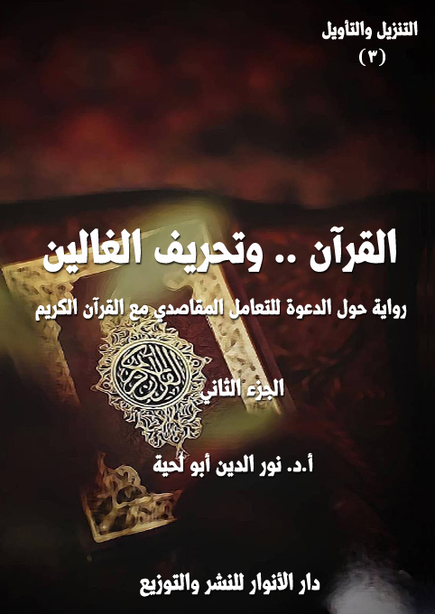

الكتاب: القرآن.. وتأويل الجاهلين ج1
الوصف: رواية حول كبرى التأويلات المنحرفة والردود عليها
السلسلة: التنزيل والتأويل
المؤلف: أ. د. نور الدين أبو لحية
الناشر: دار الأنوار للنشر والتوزيع
الطبعة: الأولى، 1443 هـ
عدد الصفحات: 512
ISBN: 978-620-4-72026-5
لمطالعة الكتاب من تطبيق مؤلفاتي المجاني وهو أحسن وأيسر: هنا

هذا الكتاب هو المقدمة الخامسة لهذه السلسلة، ويتناول القسم الثالث من أقسام المنحرفين عن القرآن الكريم، وهو القسم الذي سماه رسول الله صلى الله عليه وآله وسلم [تأويل الجاهلين]
ومن خلال تحليل ذلك التعبير النبوي المقدس، رأينا أن المقصود منه تلك الجهات التي لا يقتصر تأويلها على الانحراف في فهم القرآن الكريم فقط، بل له تأثيره الواقعي أيضا، وهو ما عبر عنه قوله تعالى: {ابْتِغَاءَ الْفِتْنَةِ} [آل عمران: 7]، والتي يمكن أن تشمل الدين، ويمكن أن تشمل الدنيا.
ومع كثرة التأويلات المنحرفة عن التنزيل، والتي تكاد تشمل كل آية من القرآن الكريم إلا أننا وجدنا من خلال تطبيق ما أسميناه [التأويل الواقعي] أن من يُطلق عليهم لقب [السلفية]، أو [أهل الحديث]، أو [الوهابية]، وغيرها من الألقاب، هم أجدر الناس بهذا النوع من التأويل.
ولذلك نراهم يخالفون الأمة جميعا وبمدارسها المختلفة في تلك التأويلات، والتي لم تقتصر على الجانب النظري فقط، بل تعدته إلى إحداث فتن كثيرة في الواقع.
وقد تجلت في بدايتها بتكفير الأمة من خلال اتهامها بالتعطيل والجهمية، نتيجة تنزيهها لله تعالى عن الجسمية ولوازمها.
ثم ترقت إلى ما حصل في عهد الشيخ محمد بن عبد الوهاب من تأويل كل الآيات الواردة في المشركين وتطبيقها على المسلمين بجميع مدارسهم، وعدم الاكتفاء بذلك، بل محاربتهم وسفك دمائهم.
ثم ترقت إلى ما حصل في عصرنا من إنكار للحقائق العلمية القطعية، وتأويل الآيات القرآنية بخلاف ما يقتضيه العلم، مما جر فتنة كبيرة لا نزال نعاني آثارها.
ومثل ذلك ما حصل في كل تاريخ هذه الطائفة من تشويه للأنبياء عليهم السلام، وتفسير ما ورد في القرآن الكريم من المتشابه في شأنهم بالروايات الإسرائيلية، وبذلك شوهوا القيم النبيلة التي ضرب الله تعالى لها الأمثال بتلك القصص التي أوردها.
القرآن.. وتأويل الجاهلين (1/8)
هذا الكتاب هو المقدمة الخامسة لهذه السلسلة، ويتناول القسم الثالث من أقسام المنحرفين عن القرآن الكريم، وهو القسم الذي سماه رسول الله صلى الله عليه وآله وسلم [تأويل الجاهلين]، فقال: (يحمل هذا العلم من كل خلف عدوله، ينفون عنه تحريف الغالين، وانتحال المبطلين، وتأويل الجاهلين)(1)
ومن خلال تحليل ذلك التعبير النبوي المقدس، رأينا أن المقصود منه تلك الجهات المقصودة بقوله تعالى: {فَأَمَّا الَّذِينَ فِي قُلُوبِهِمْ زَيْغٌ فَيَتَّبِعُونَ مَا تَشَابَهَ مِنْهُ ابْتِغَاءَ الْفِتْنَةِ وَابْتِغَاءَ تَأْوِيلِهِ وَمَا يَعْلَمُ تَأْوِيلَهُ إِلَّا اللَّهُ وَالرَّاسِخُونَ فِي الْعِلْمِ يَقُولُونَ آمَنَّا بِهِ كُلٌّ مِنْ عِنْدِ رَبِّنَا وَمَا يَذَّكَّرُ إِلَّا أُولُو الْأَلْبَابِ} [آل عمران: 7]
وبذلك؛ فإن تأويل هؤلاء الجاهلين لا يقتصر على الانحراف في فهم القرآن الكريم فقط، بل له تأثيره الواقعي أيضا، وهو ما عبرت عنه الآية الكريمة بإحداث الفتنة، والتي يمكن أن تشمل الدين، ويمكن أن تشمل الدنيا.
ومع كثرة التأويلات المنحرفة عن التنزيل، والتي تكاد تشمل كل آية من القرآن الكريم إلا أننا وجدنا من خلال تطبيق ما أسميناه [التأويل الواقعي] أن من يُطلق عليهم لقب [السلفية]، أو [أهل الحديث]، أو [الوهابية]، وغيرها من الألقاب، هم أجدر الناس بهذا النوع من التأويل.
ولذلك نراهم يخالفون الأمة جميعا وبمدارسها المختلفة في تلك التأويلات، والتي لم تقتصر على الجانب النظري فقط، بل تعدته إلى إحداث فتن كثيرة في الواقع.
__________
(1) الحديث مروي في المصادر السنية والشيعية، ومنها: البيهقي في السنن الكبرى 10/ 209، ومعاني الأخبار ص 33.
القرآن.. وتأويل الجاهلين (1/9)
وقد تجلت في بدايتها بتكفير الأمة من خلال اتهامها بالتعطيل والجهمية، نتيجة تنزيهها لله تعالى عن الجسمية ولوازمها، وتفسير كل ما ورد في القرآن الكريم مما يوهم ذلك، وفق أساليب اللغة العربية، ووفق الآيات المحكمة التي تنزه الله تعالى عن مشابهة خلقه.
ثم ترقت إلى ما حصل في عهد الشيخ محمد بن عبد الوهاب من تأويل كل الآيات الواردة في المشركين وتطبيقها على المسلمين بجميع مدارسهم، وعدم الاكتفاء بذلك، بل محاربتهم وسفك دمائهم، وتهديم الآثار التي وضعت للصالحين، لتكون منارة هدى يهتدي بها المهتدون.
ثم ترقت إلى ما حصل في عصرنا من إنكار للحقائق العلمية القطعية، وتأويل الآيات القرآنية بخلاف ما يقتضيه العلم، مثل قولهم بدوران الشمس حول الأرض، وثبات الأرض، ونحو ذلك، مما جر فتنة كبيرة لا نزال نعاني آثارها.
ومثل ذلك ما حصل في كل تاريخ هذه الطائفة من تشويه للأنبياء عليهم السلام، وتفسير ما ورد في القرآن الكريم من المتشابه في شأنهم، لا بالمحكم الذي ورد فيه، وإنما بالروايات الإسرائيلية، وبذلك شوهوا القيم النبيلة التي ضرب الله تعالى لها الأمثال بتلك القصص التي أوردها.
وبناء على هذا قسمنا هذا الكتاب إلى أربعة فصول، تناولنا في كل فصل نوعا من أنواع تلك التأويلات، وذكرنا الردود المفصلة لعلماء الأمة بمدارسها المختلفة عليها.
أما الفصل الأول؛ فتناولنا فيه الآيات الكريمة التي استعملها من لقبهم رسول الله صلى الله عليه وآله وسلم بلقب [الجاهلين] في الحكم على الأمة بالشرك نتيجة احترامها للصالحين وتوقيرها لهم، وتوسلها إلى الله بهم، أو بناء الأضرحة والمشاهد على قبورهم وزيارتها، تأسيا بقبر رسول الله صلى الله عليه وآله وسلم، والذي عظمته الأمة من أول عهدها.
القرآن.. وتأويل الجاهلين (1/10)
وقد استعرضنا كل الأدلة التي يعتمد عليها المؤولون الجهلة، ومن مصادرها المعتمدة، وذكرنا الردود المفصلة عليهم، سواء تلك التي حصلت في عهد الشيخ ابن عبد الوهاب، أو التي سبقته، أو التي تلته.
أما الفصل الثاني، وهو أطول الفصول؛ فتناولنا فيه المنهج الذي اعتمده أهل الحديث أو السلفية في تفسير ما ورد في القرآن الكريم من إضافات لله تعالى كاليد والعين والوجه والاستواء ونحوها، والتي حملوها على ظواهرها الحسية، وبذلك وقعوا في التجسيم والتشبيه.
وقد ذكرنا ـ كذلك ـ أدلتهم المفصلة سواء من فهومهم لتلك الآيات الكريمة، أو ما استندوا إليه من أحاديث شريفة، ثم ذكرنا الردود المفصلة عليهم، بعد التعريف بمناهجهم ومصادرهم ومناقشتها، وبتفصيل شديد، لأهميتها، وكونها لا ترتبط فقط بالعقائد، وإنما بالفتن التكفيرية ونحوها.
ثم استعرضنا كل الآيات الكريمة التي اشتبهت عليهم، وبينا تفسيرها الصحيح، ومن المدارس الإسلامية المختلفة، ومثلها ما استدلوا به من أحاديث، ببيان ضعفها، أو بتأويلها بما يتناسب مع تنزيه الله تعالى.
أما الفصل الثالث؛ فتناولنا فيه التأويلات المشوهة للأنبياء عليهم السلام من خلال استعمال بعض ما ورد في القرآن الكريم من المتشابهات، وبينا الفهم الصحيح لها، والذي ينسجم مع عصمتهم عليهم السلام، كما ينسجم مع دعوة القرآن الكريم للاهتداء والاقتداء بهم.
أما الفصل الرابع؛ فتناولنا فيه ما ورد في تفاسير السلفية الحديثة للآيات التي تتحدث عن الكون، والتي خالفوا فيها جمهور المسلمين الذين لم يروا فيها أي تعارض بينها
القرآن.. وتأويل الجاهلين (1/11)
وبين العلم، وذكرنا التفسير الصحيح لها، والذي ينسجم مع العلم القطعي الحديث، بل يبين مدى دقة القرآن الكريم في التعبير عن تلك الحقائق العلمية.
أما الجانب الروائي من الكتاب؛ فهو يحاول أن يحاكي ما قام به الوهابية من قتل للمسلمين بسبب تلك القضايا التي طرحناها، وهي تصور مجموعة من المؤمنين يتعرضون للأسر، أو يعرضون أنفسهم له، حتى يتاح لهم في جلسة المحاكمة العلنية، أن يعبروا عما يؤمنون به، لأنهم وجدوا أنه الوسيلة الوحيدة التي يُسمح لهم فيها بالكلام.
وهؤلاء المؤمنون هم تلاميذ المعلم، والذي سميته [الراسخ]، الذي هو أستاذ هذه الرحلة استنباطا من قوله تعالى: {وَالرَّاسِخُونَ فِي الْعِلْمِ يَقُولُونَ آمَنَّا بِهِ كُلٌّ مِنْ عِنْدِ رَبِّنَا وَمَا يَذَّكَّرُ إِلَّا أُولُو الْأَلْبَابِ} [آل عمران: 7]
وبعد تلك المحاكمات، والتي استمرت أربعة أيام، وحين موعد الإعدام، تحدث أحداث كثيرة، نترك للقارئ الكريم الاطلاع عليها.
وقد رجعنا في هذا الكتاب إلى الكثير من المصادر الكلامية وكتب التفسير وغيرها، بالإضافة إلى المصادر التي يعتمد عليها السلفية، وقد حاولنا أن نكون موضوعيين قدر الإمكان؛ فلذلك انتقينا من مصادرهم أقواها وأرجحها عندهم، حتى يكون الرد متناسبا معها، وبمستواها، مع العلم أننا في بعض الأحيان أو في الكثير منها نجعل تعبيرنا عن القول نفسه نوعا من الرد عليه؛ فخير ما يبطل الباطل التعبير عنه بالصيغة التي تتناسب معه.
وننبه إلى أننا في ردودنا المفصلة اعتمدنا المدارس والمناهج المختلفة، ذلك أن البعض قد لا يستطيع فهم رد من الردود بسبب لغته أو منهجه؛ فلذلك وضعنا له ردودا أخرى وبمناهج مختلفة.
بالإضافة إلى اعتمادنا على المدارس الإسلامية المختلفة، لأن الخلاف في هذه القضايا
القرآن.. وتأويل الجاهلين (1/12)
ليس بين تلك المدارس، وإنما بينها وبين المدرسة السلفية.
ونعتذر في الأخير لطول الكتاب؛ فهدفنا من هذه السلسلة ـ كما ذكرنا سابقا ـ الاستيعاب والشمول بالإضافة للتقريب والتوضيح، وكلاهما يستدعي التفصيل، والذي قد يستدعي التطويل، والذي يبتعد عن الحشو أو ذكر ما لا داعي لذكره.
القرآن.. وتأويل الجاهلين (1/13)
بعد أن طلب مني معلم القرآن أن أهيء نفسي للرحلة الخاصة بتعلم ما يتعلق بـ[القرآن .. وتأويل الجاهلين] رحت أتدبر قوله تعالى: {هُوَ الَّذِي أَنْزَلَ عَلَيْكَ الْكِتَابَ مِنْهُ آيَاتٌ مُحْكَمَاتٌ هُنَّ أُمُّ الْكِتَابِ وَأُخَرُ مُتَشَابِهَاتٌ فَأَمَّا الَّذِينَ فِي قُلُوبِهِمْ زَيْغٌ فَيَتَّبِعُونَ مَا تَشَابَهَ مِنْهُ ابْتِغَاءَ الْفِتْنَةِ وَابْتِغَاءَ تَأْوِيلِهِ وَمَا يَعْلَمُ تَأْوِيلَهُ إِلَّا اللَّهُ وَالرَّاسِخُونَ فِي الْعِلْمِ يَقُولُونَ آمَنَّا بِهِ كُلٌّ مِنْ عِنْدِ رَبِّنَا وَمَا يَذَّكَّرُ إِلَّا أُولُو الْأَلْبَابِ} [آل عمران: 7]، ولمدة طويلة.
وقد جعلني تدبرها أخشى على نفسي وديني؛ ذلك أن الله تعالى أخبر أن الذين يتبعون المتشابه، ويبتغون تأويله هم الذين زاغت قلوبهم وانحرفت .. وانحرفت حياتهم ومصيرهم بسبب ذلك.
وفي نفس الوقت ذكرت الآية الكريمة أن الذين ينجون من ذلك الزيغ هم الراسخون في العلم، الذين جمعوا بين العلم الحقيقي الأصيل الذي لم يُحرف ولم يبدل، وبين القلوب الصافية السليمة النقية.
وعندما رحت أبحث عن عدد أولئك الذين تحققوا بذلك الوصف الذي جعلهم يميزون بين المحكم والمتشابه، ويعرفون الحق الذي لم يختلط بالباطل، رأيتهم ثلة قليلة محدودة .. ورأيت معهم جموعا كثيرة من الناس، لا بسبب رسوخهم في العلم، وعلمهم بالتأويل، وإنما لتواضعهم وعبوديتهم وتسليمهم للراسخين، وتنفيذهم الحقيقي لقوله تعالى: {يَا أَيُّهَا الَّذِينَ آمَنُوا اتَّقُوا اللَّهَ وَكُونُوا مَعَ الصَّادِقِينَ} [التوبة: 119]
فلذلك تمنيت أن أظل واحدا من تلك الجموع التي راعت الورع والتقوى، واحتمت بحمى الصادقين، ولم تتعرض للفتن، ولم تقع في الزيغ، لا ببحثها في تفاصيل التأويل، وإنما بتسليمها لأهل التأويل من الصالحين والراسخين.
القرآن.. وتأويل الجاهلين (1/14)
وقد تذكرت حينها ذلك الأثر المشهور الذي كنت أسمعه كثيرا من شيوخي الذين تربيت على أيديهم في صغري وشبابي، وهو ما يروى مرفوعا إلى رسول الله صلى الله عليه وآله وسلم: (أكثر أهل الجنة البله)(1)
وقد تمنيت حينها أن أكون من أولئك البُله الذين يدخلون الجنة، وينعمون برضوان الله؛ فهو خير لي من أكون من أولئك الفطنين الحاذقين الأذكياء الذين يردون المهالك بسبب ذكائهم المفرط.
عندما شعرت نفسي بتلك المعاني، وأردت أن أرفع يدي إلى ربي لأطلب منه أن يجنبني الفتن، ما ظهر منها وما بطن .. بدا لي معلمي الجديد، وهو يشع بأنوار الهداية، ليخاطبني بقوة قائلا: منذ متى كان البله محمودا؟ .. ألم تسمع ثناء الله تعالى على أولي الألباب؟
قلت: بلى .. فقد أخبر الله تعالى أن التذكر والتفكر والاعتبار والتدبر لا يتحقق به إلا أولو الألباب، فقال: {إِنَّ فِي خَلْقِ السَّمَاوَاتِ وَالْأَرْضِ وَاخْتِلَافِ اللَّيْلِ وَالنَّهَارِ لَآيَاتٍ لِأُولِي الْأَلْبَابِ} [آل عمران: 190]، وقال: {هُدًى وَذِكْرَى لِأُولِي الْأَلْبَابِ} [غافر: 54]، وقال: {وَالَّذِينَ اجْتَنَبُوا الطَّاغُوتَ أَنْ يَعْبُدُوهَا وَأَنَابُوا إِلَى اللَّهِ لَهُمُ الْبُشْرَى فَبَشِّرْ عِبَادِ الَّذِينَ يَسْتَمِعُونَ الْقَوْلَ فَيَتَّبِعُونَ أَحْسَنَهُ أُولَئِكَ الَّذِينَ هَدَاهُمُ اللَّهُ وَأُولَئِكَ هُمْ أُولُو الْأَلْبَابِ} [الزمر: 17 ـ 18]، وقال: {يُؤْتِي الْحِكْمَةَ مَنْ يَشَاءُ وَمَنْ يُؤْتَ الْحِكْمَةَ فَقَدْ أُوتِيَ خَيْرًا كَثِيرًا وَمَا يَذَّكَّرُ إِلَّا أُولُو الْأَلْبَابِ} [البقرة: 269]، وقال: {كِتَابٌ أَنْزَلْنَاهُ إِلَيْكَ مُبَارَكٌ لِيَدَّبَّرُوا آيَاتِهِ وَلِيَتَذَكَّرَ أُولُو الْأَلْبَابِ} [ص: 29] .. وغيرها من الآيات الكريمة.
__________
(1) الطحاوي في مشكل الآثار (4/ 121)، والبزار في المسند (2/ 411 ـ الكشف)، وابن عدي في الكامل (3/ 313)، وعنه البيهقي في الشعب (2/ 126/ 1367)، وابن الجوزي في العلل المتناهية (2/ 452/1559)، وابن عساكر (12/ 108)
القرآن.. وتأويل الجاهلين (1/15)
قال: فهل ذكر الله تعالى أولي الألباب في تلك الآية التي كنت تتدبر فيها، والتي جعلتك تؤثر البله على أولي الألباب؟
قلت: بلى .. فقد ختمت الآية الكريمة بقوله تعالى: {وَمَا يَذَّكَّرُ إِلَّا أُولُو الْأَلْبَابِ} [آل عمران: 7]
قال: فلم لم تحن نفسك، وترتفع همتك لأن تكون منهم؟
قلت: الخشية على نفسي .. والعبرة بما حصل لغيري .. فكم رأيت من أصحاب العقول من أردتهم عقولهم .. بل ما أكثر ما أردت العقول أصحابها.
قال: وما أكثر ما أردى المغفلين والأغبياء والحمقى غفلتهم وحمقهم وغباؤهم.
قلت: لكن أولئك مهما فعلوا فسيبقى ضلالهم محصورا في أنفسهم بخلاف أصحاب العقول.
قال: العقول أكرم من أن تردي أصحابها .. وكيف ذلك، وهي {صِبْغَةَ اللَّهِ وَمَنْ أَحْسَنُ مِنَ اللَّهِ صِبْغَةً} [البقرة: 138] .. وهي نور الله الذي تبصر به الحقائق، وتجلى به الظلمات؟
قلت: أنت تتحدث عن عقل المسلم المسلّم لربه، أو عقل الراسخ في العلم .. لا عن عقول أولئك الذين يتربعون على كل عروش الفلسفة والفكر والعلوم.
قال: العلم والفلسفة والفكر ليست دليلا على العقل بالضرورة .. فقد يتيسر لأغبى الناس لأن يصبح فيلسوفا يكفيه أن تكون لديه القدرة على التعبير، والتلاعب بالكلمات .. ويكفيه أن يجد تلاميذ وجمهورا.
قلت: صدقت في هذا .. فقد كان السفسطائيون يدعون أنهم مفكرون وعقلاء وعباقرة .. وكانوا يعتبرون أعقلهم أكثرهم تلاعبا بالألفاظ.
القرآن.. وتأويل الجاهلين (1/16)
قال: وهكذا غيرهم كثير .. حتى أولئك الذين قضوا أعمارهم يسخرون من سفسطائيي اليونان، لم يكونوا سوى نسخ لا تختلف عنهم.
قلت: أجل .. فعند دراستي للفلسفة الغربية، ولكبار فلاسفة الغرب، وجدت من عجائب السفسطة ما لم أجده في أسواق أثينا وأكاديمياتها.
قال: وهكذا في أسواق المسلمين .. بل حتى في أسواق مكة والمدينة .. ما أكثر السفسطة، وما أكثر السفسطائيين، أولئك الذين يتلاعبون بالألفاظ، من دون تأمل في المعاني.
قلت: تقصد مكة والمدينة في عصر الجاهلية؟
قال: وفي عصور الإسلام .. فالسفسطة لا دين لها .. وكل من يحجب عقله عن الحقائق، ويتلاعب بالألفاظ، ويحتال عليها، سفسطائي، وإن سمى نفسه مفسرا أو محدثا أو فقيها.
قلت: لم أفهم قصدك.
قال: ستفهم قصدي عندما ترحل إلى ما كلفك به معلمك .. معلم القرآن .. فقد طلب مني أن أرسلك إلى حيث تتعرف على الجاهلين وتأويلاتهم.
قلت: لكني أخشى على نفسي أن تتأثر بجهلهم؟
قال: لا تخف .. فسيكون معك في رحلتك هذه سبعون من تلاميذي .. أرادوا أن يقدموا أنفسهم قربانا لله .. ليخلصوا بعض البلاد من شر جهلة المؤولين الذين انحرفوا بكلمات ربهم المقدسة عن معانيها وحقائقها وأنوارها .. وسترى من تضحياتهم ما يجعلك تعيش بعض ما ذكره الله تعالى عن أولئك الذين قال فيهم: {الَّذِينَ يُبَلِّغُونَ رِسَالَاتِ اللَّهِ وَيَخْشَوْنَهُ وَلَا يَخْشَوْنَ أَحَدًا إِلَّا اللَّهَ وَكَفَى بِاللَّهِ حَسِيبًا} [الأحزاب: 39]
القرآن.. وتأويل الجاهلين (1/17)
قلت: لم أفهم .. هل سيحصل في رحلتي الجديدة هذه سفك للدماء .. أنا لا أحب هذا .. ولم أعتد في رحلاتي أن أرى إلا السلام.
قال: السلام قد يقتضي في بعض الأحيان، أو في الكثير منها أن تُقدّم الدماء في سبيله، ألم تسمع بإذن الله تعالى للمظلومين بالدفاع عن أنفسهم؟
قلت: بلى .. ولكن أولئك مظلومون .. وقد ظلمهم المعتدون المتجبرون.
قال: هناك من يظلم البشر، وهناك من يظلم الحقائق .. وظلم الحقائق أخطر من ظلم البشر.
قلت: فهل سأرى تلاميذك، وهم يحملون السلاح في وجه من يظلم الحقائق؟ .. وهل علي أن أشاركهم في ذلك؟
قال: لا .. ستراهم، وهم يحملون الحجج البالغة والبراهين الدامغة .. ومعها دماؤهم ورؤوسهم، ليبلغوا الحقائق أمام الظلمة الذين شوهوها وحرفوها وأولوها على غير ما هي عليه.
قلت: وأنا .. ماذا سيحصل لي؟
قال: أنت بالخيار بين أن ترضى أن تضحي بنفسك مثلهم .. ويمكنك ألا تفعل وتجنح لما أذن الله لك فيه من التقية.
قلت: ولم لم يجنح تلاميذك للتقية؟ .. أهم يكفرون بها؟ .. أم أنهم أكثر إيمانا ممن استعملها؟ .. أليس هو عمار ذلك الذي تفرح به الجنة، وملئ إيمانا من مفرق رأسه إلى أخمص قدميه؟
قال: الوضع مختلف .. عمار لم يخش على الحقائق أن تُدنس بتقيته، لأن رسول الله صلى الله عليه وآله وسلم كان يحفظها ويدعو إليها .. أما تلاميذي، فهم في بيئة تجعل من تقيتهم وسيلة لتحريف
القرآن.. وتأويل الجاهلين (1/18)
الحقائق .. ولذلك كانوا مطالبين بالشهادة بها أمام الله .. لقد كان وضعهم يشبه وضع الإمام الحسين تماما؛ فقد خشي على تحريف الدين .. وهكذا هؤلاء خشوا على تحريف كلمات ربهم المقدسة؛ فلذلك راحوا يقتدون بالإمام الحسين وأهل بيته في تضحياتهم.
قلت: وعيت هذا .. وأسأل الله أن يمكنني من نفسي، حتى أبذلها في سبيله، وفي سبيل الحق الذي دعانا إليه.
قلت: لقد ذكرت لي أنهم تلاميذك .. فمن أنت؟
قال: أنا مثل جميع معلميك .. نقطة تحت الباء.
قلت: فمن أنت منهم؟
قال: هم يدعونني الراسخ، تيمنا بما ورد في قوله تعالى: {وَمَا يَعْلَمُ تَأْوِيلَهُ إِلَّا اللَّهُ وَالرَّاسِخُونَ فِي الْعِلْمِ} [آل عمران: 7]، وقوله: {لَكِنِ الرَّاسِخُونَ فِي الْعِلْمِ مِنْهُمْ وَالْمُؤْمِنُونَ يُؤْمِنُونَ بِمَا أُنْزِلَ إِلَيْكَ وَمَا أُنْزِلَ مِنْ قَبْلِكَ} [النساء: 162] وأنا أدعو نفسي عبدا .. والله هو الذي يسمي عباده بحسب علمه بهم.
قلت: لقد تعود جميع المعلمين أن يخبروني عن مسار رحلتي، وما أجد فيها من العلم والحقائق، وما يعترضني من العقبات والعوائق.
قال: ستقضي في هذه الرحلة أربعة أيام في بلاد الجاهلين أو الجاهليين الذين أولوا القرآن الكريم بحسب أهوائهم؛ فلذلك شوهوه وحرفوه وبدلوه، وحولوه من كتاب سلام إلى كتاب عنف، ومن كتاب عقل إلى كتاب خرافة، ومن كتاب حقائق إلى كتاب أباطيل .. ولم يكتفوا بذلك، بل راحوا يقتلون من لا يؤمن بما يدعون إليه، بحجة أن عملهم جهاد في سبيل الله، مع أنه ليس سوى جهاد في سبيل الشياطين.
قلت: لكن كيف أتاحوا لتلاميذك فرصة الدعوة إلى الحقائق؟
القرآن.. وتأويل الجاهلين (1/19)
قال: ألم تسمع بما روي عن بعض الصالحين الذي أراد أن يمر على بلاد بعض المتشددين، ممن يستحلون دماء المسلمين لخلافهم معهم في بعض الآراء؟
قلت: بلى .. حيث ادعى لهم أنه كافر، فتركوه، ولم يقتلوه، وإنما راحوا يسمعونه بعض القرآن، تأويلا منهم لقوله تعالى: {وَإِنْ أَحَدٌ مِنَ الْمُشْرِكِينَ اسْتَجَارَكَ فَأَجِرْهُ حَتَّى يَسْمَعَ كَلَامَ اللَّهِ ثُمَّ أَبْلِغْهُ مَأْمَنَهُ ذَلِكَ بِأَنَّهُمْ قَوْمٌ لَا يَعْلَمُونَ} [التوبة: 6]
قال: فهكذا فعل تلاميذي، ولكن بطريقة مختلفة .. لقد رأوا أن أئمة الجهل المتحكمين في تلك المدينة لا يسمحون لأحد بالحديث بحرية إلا في محل واحد، وهو مجلس القضاء، حيث يتيحون للمتهمين أن يتحدثوا بكل حرية، وأمام الجموع الكثيرة، قبل إعدامهم .. ولذلك رضوا بأن يحاكَموا، وأن يحكم عليهم بالإعدام في سبيل إيصال الحقائق لأهل تلك المدينة، لينقذوهم من التأويل الذي أوقعهم فيه أئمتهم من الجهلة.
قلت: أنت تذكرني بما ورد في الحديث الذي فُسر به قوله تعالى: {قُتِلَ أَصْحَابُ الْأُخْدُودِ النَّارِ ذَاتِ الْوَقُودِ إِذْ هُمْ عَلَيْهَا قُعُودٌ وَهُمْ عَلَى مَا يَفْعَلُونَ بِالْمُؤْمِنِينَ شُهُودٌ وَمَا نَقَمُوا مِنْهُمْ إِلَّا أَنْ يُؤْمِنُوا بِاللَّهِ الْعَزِيزِ الْحَمِيدِ} [البروج: 4 ـ 8]، من قصة ذلك الذي طلب من الملك أن يذكر اسم الله عليه قبل أن يقتله، ليكون ذلك وسيلة لإيمان عامة الناس، فقد قال للملك: (إنك لست بقاتلي حتى تفعل ما آمرك به .. تجمع الناس في صعيد واحد وتصلبني عَلَى جذع، ثم خذ سهما مِنْ كنانتي، ثم ضع السهم في كبد القوس، ثم قل: بسم اللَّه رب الغلام، ثم ارمني، فإنك إذا فعلت ذلك قتلتني)، وقد ورد في تتمة الحديث أن الملك جمع الناس في صعيد واحد، وصلبه عَلَى جذع، ثم أخذ سهما مِنْ كنانته ثم وضع السهم في كبد القوس، ثم قال: (بسم اللَّه رب الغلام)، ثم رماه فوقع السهم في صدغه فوضع يده في
القرآن.. وتأويل الجاهلين (1/20)
صدغه فمات؛ فقال الناس: آمنا برب الغلام (1).
قال: إن هذا الحديث هو الذي ألهم تلاميذي لأن يقدموا أنفسهم في سبيل تبيين الحق.
قلت: ولكن من يضمن لهم أن يسمح لهم بذلك؟ .. أليس من الممكن أن يقاطعوهم ويمنعوهم إن رأوا لكلامهم تأثيرا في عامة الناس؟
قال: لا تخف .. ففي تلك المدينة يوجد مثل ذلك المؤمن الذي كان يكتم إيمانه، ويمارس التقية الشرعية، وفي محلها المناسب.
قلت: تقصد مؤمن آل فرعون .. ذلك الذي نطق بالحق في الوقت المناسب.
قال: أجل .. فقد استطاع بعض الصالحين أن يصل إلى مناصب عليا في تلك المدينة من غير أن يعرفوه، وهو الذي وعد تلاميذي بأن يسمح لهم بالكلام بحرية.
قلت: فهل سأراه؟
قال: أجل .. ستراه .. وسيبدو لك مثل فرعون وهامان والنمروذ، لكنه في حقيقته لم يكن سوى أحد إخوان مؤمن آل فرعون .. وما أكثرهم.
قلت: فلم لم يقتد بتلاميذك في بيان الحق، وترك التقية؟
قال: لأن وضعه مختلف، ولولا أنه مارس التقية لما استطاع تلاميذي أن يؤدوا واجبهم في البلاغ والتصحيح.
قلت: وعيت هذا .. وأظنني قد استوعبت ما ارتبط بالتقية من أحكام من خلال هذين النموذجين .. نموذج من تركها، ونموذج من استعملها.
قال: أجل .. فعبوديتك لله تجعلك جنديا من جنوده؛ لا تفعل إلا ما تراه مرضيا له،
__________
(1) أحمد (6/ 16) ومسلم (8/ 229)
القرآن.. وتأويل الجاهلين (1/21)
ومظهرا لدينه .. سواء كان بالتقية والاستتار، أم بالتضحية والمجاهرة.
قلت: لكن ماذا لو حصل لي مكروه .. أو قتلت .. ماذا سيحصل للأحداث، وكيف ستصل للقراء .. ومن سينشرها؟
قال: لا تخف .. فذلك الصالح الذي ذكرته لك، يعرفك، وسيوصل للأمة ما تكتبه إن تعرضت لما سيتعرض له تلاميذي.
قلت: فما هي المحال الكبرى التي سأمر بها في هذه الرحلة .. لأجعلها فصولا لما أكتب؟
قال: ستقضي في رحلتك هذه أربعة أيام .. بعدد الأيام التي سيحاكم فيها تلاميذي .. وأمام جماهير الناس .. فقد خطط ذلك الذي مارس التقية لذلك بعد أن درس القضايا الكبرى التي وقع فيها الانحراف في التأويل .. ولذلك دعا كبار العلماء الذين انحرفوا بالتأويل لطرح ما لديهم أمام تلاميذي، ليجيبوهم على كل إشكال.
قلت: فلم لم يدعهم إلى مناظرتهم بدل ذلك؟
قال: لأنهم لا يؤمنون بمناظرة من يبدعونهم ويكفرونهم .. بسبب كبرهم واستعلائهم .. لذلك لم يجد ذلك الحكيم سوى أن يضعهم في المحل الذي يريدون، ويضع تلاميذي في المحل الآخر، لتتحقق المناظرة، ومن غير أن يشعروا.
قلت: فالقضايا التي سأستمع لها في هذه الأيام الأربعة أربعة إذن؟
قال: أجل .. وهي تشمل كل المسائل التي أولها الجهلة تأويلا منحرفا عن الحقائق.
قلت: فما أولها؟
قال: تأويلهم لتوحيد الله .. حيث جعلوه وسيلة لسفك الدماء، ورمي المؤمنين بالشرك الجلي .. لتأويلهم لما ورد في القرآن الكريم بشأنه.
القرآن.. وتأويل الجاهلين (1/22)
قلت: أنت تذكرني بالوهابية الذين قاتلوا المسلمين وقتلوهم وحكموا عليهم بالردة نتيجة قولهم بالتوسل والاستغاثة وزيارة أضرحة الصالحين؟
قال: أجل .. وهؤلاء الذين ستذهب إليهم فرع عنهم، وطائفة منهم .. وهم إن لم يكونوا يشبهونهم في كل أفكارهم، لكنهم يشبهونهم في طريقة تفكيرهم.
قلت: وعيت هذا .. فما الثانية؟
قال: تأويلهم لما ورد في القرآن الكريم من الإضافات لله، كاليد والعين والوجه ونحوها، حيث اعتبروها صفات لله.
قلت: وعيت هذا .. فما الثالثة؟
قال: تأويلهم لما ورد في القرآن الكريم من قصص الأنبياء، مما أساؤوا فهمه؛ فشوهوا الأنبياء عليهم السلام بذلك أعظم تشويه.
قلت: وعيت هذا .. فما الرابعة؟
قال: تأويلهم لما ورد في القرآن الكريم من الحديث عن الكون، والذي جعلهم يقعون في الخرافة، ويوقعون معهم كلام ربهم المقدس، حيث فسروه بها.
- - -
ما إن انتهى المعلم من الحديث عن القضايا التي سأمر بها في رحلتي إلى بلاد الجاهلين، حتى وجدت نفسي في السجن مع مجموعة كبيرة من الشباب والكهول، والذين لم أشك أبدا في كونهم تلاميذ معلمي الجديد، ذلك أني بمجرد أن صرت بينهم، راحوا يصافحونني بحرارة، ويسألوني عن معلمي الذي لم يكن سوى معلما لهم قبل أن أعرفه، بل كانت معرفتهم به أكثر من معرفتي.
حاولت أن أستدرجهم في الحديث لأعرف تفاصيل أكثر عن قصتهم، وعلاقتهم
القرآن.. وتأويل الجاهلين (1/23)
بالمعلم، وعلاقتهم قبل ذلك بتلك المدينة، لكنهم أبوا أن يضيفوا حرفا واحد لما قاله المعلم، بل كلهم كان يذكر لي ما كنت أتعود سماعه من المعلمين من قصة الخضر مع موسى عليهما السلام وقوله له: {إِنِ اتَّبَعْتَنِي فَلَا تَسْأَلْنِي عَنْ شَيْءٍ حَتَّى أُحْدِثَ لَكَ مِنْهُ ذِكْرًا} [الكهف: 70]
وبينما نحن كذلك إذا بنا نسمع السجان، يصيح قائلا: فليتقدم المرتدون إلى الباب، لأسير بهم إلى ساحة المدينة حيث سيستتابون .. فإن تابوا وإلا قطعت أعناقهم، وأمام الملأ من الناس.
سرت معهم إلى ساحة المدينة، وهناك وجدنا جموعا كثيرة من الناس، ثم ما لبثنا حتى وضعونا في قفص المتهمين، حيث كان يقابلنا في مجلسنا منصة كبيرة جلس فيها القاضي، وأمامه مقصلة بجانبها رجل ضخم يحمل سيفا كبيرا، وكانوا يدعونه [السياف] .. وفي مقابلهم جلس على طاولة كبيرة بعض الشيوخ الذين أحضروهم للاستتابة والبيان.
وقبل أن تبدأ المحاكمة جاء رجل على فرس له، ثم قال مخاطبا القاضي والشيوخ بكل قسوة: لا تنسوا .. طبقوا الشريعة بحروفها .. وإياكم والتساهل والتمييع والتلاعب بالأحكام الشرعية .. ولا تأخذكم بهم رأفة ولا رحمة .. لكن لا تنسوا أن تسمحوا لهم بالكلام بكل حرية، ليدافعوا عن أنفسهم، حتى لا يعتقد أحد أننا نظلمهم بأحكامنا .. فنحن ما أقمنا هذه المدينة إلا لنطبق شريعة الله فيها.
ثم قال: وإن رأيتم بعضهم يكتب؛ فاتركوه يفعل ما يريد؛ فلعله يهتدي إلى الحق بعد سماعه منا، ومن هؤلاء الذي انحرفوا عنا.
ثم التفت للشيوخ الجالسين في مواجهتنا، وقال: لقد اخترناكم باعتباركم من كبار علماء هذه المدينة .. فلذلك لا تبثوا كلماتكم وشروحكم لهؤلاء المجرمين المبتدعين فقط،
القرآن.. وتأويل الجاهلين (1/24)
وإنما اطرحوا كل ما لديكم ليعلم الحضور مبلغ علمكم، ومبلغ الحق الذي تحملونه، في نفس الوقت الذي يعرف فيه مبلغ جهل أعدائكم، وأعداء الحق.
بعد أن ألقى هذه التعليمات انصرف .. ولم أره بعدها إلا في نهاية الرحلة كما سأحكي لكم خبره.
القرآن.. وتأويل الجاهلين (1/25)
أولا ـ المؤولون .. والتوحيد والشرك
بعد انصراف ذلك المؤمن الصالح المتستر بستر العنف والقسوة، قال القاضي موجها كلامه لتلاميذ الراسخ: بناء على ما وردنا من الدعاوى المرتبطة بكم، رأينا أن تقسم الجلسات إلى أربعة مجالس .. في كل يوم سنعقد جلسة نتناول فيها قضية من القضايا الكبرى .. وقد فعلنا ذلك رحمة بكم، لعلكم عند عودتكم للسجن كل يوم تراجعون أنفسكم، وتتوبون إلى الله، وحينها سنقبل توبتكم .. ولذلك لن نستعجل في تطبيق أحكام الشريعة عليكم إلى نهاية اليوم الرابع.
ثم التفت إلى الشيوخ، وتحدث معهم بكلام كثير لم أسمعه، ثم قال بعدها: جلستنا اليوم لمحاكمتكم، مرتبطة بأكبر قضية من قضايا الدين، وهي التوحيد المتنافي مع الشرك .. وقد بلغنا، وبأدلة كثيرة أنكم وقعتم في الشرك الجلي الذي يُحكم على صاحبه بالردة.
وطبعا لن أستعجل في الحكم عليكم، بل سأنتظر حتى يشرح لكم شيوخنا الأعزاء حيثيات الحكم، ثم يبينوا لكم علله وأسبابه من خلال ما ورد في القرآن الكريم والسنة المطهرة وكلام علمائنا المحققين الراسخين .. ثم يتاح لكم بعد ذلك الدفاع عن أنفسكم .. وفي الأخير .. سنرى هل ستتوبون؛ فيفرج عنكم، أم ستظلون على غيكم، وحينها سنسلمكم لهذا السياف الذي سيعرف دوره معكم؟
ما إن قال ذلك، حتى قام كبير الشيوخ، وقال: بناء على ما قال القاضي، وبناء على توجيهات الوزير المكلف بهذه الشؤون؛ فإننا في جلستنا الأولى هذه سنطرح عليكم الحق والصواب في القضايا المتعلقة بالتوحيد والشرك .. وذلك من خلال ثلاث مسائل كبرى .. ونحن طوع أمر القاضي في البدء بطرح ما لدينا.
القرآن.. وتأويل الجاهلين (1/26)
قال القاضي: نعم .. أظن أن الوقت مناسب لأن نبدأ .. فابدؤوا بطرح المسألة الأولى، وأرجو من المتهمين أن يصغوا جيدا، وسأسمح لهم بالكلام بعد سماعهم للشيوخ الأفاضل، وأتمنى أن يكون كلامهم خاصا بالتراجع والتوبة، لا بالمناقشة والجدل .. فأنتم تعلمون أن الله نهى عن الجدل.
قام أحد الشيوخ، وقال: كما علمتم؛ فإن القضية الأولى التي ندعوكم فيها إلى التوبة ومراجعة أنفسكم مرتبطة بتوحيد الله، الذي هو الغاية العظمى من إرسال الرسل، وقد رأينا أنكم اقتحمتم حمى هذا التوحيد بما وقعتم فيه من نواقضه، من تلك الشركيات التي اتفق جميع العلماء على اعتبار من وقع فيها مشركا شركا جليا.
قال آخر: وبناء على ذلك قاسوا الذين يدّعون الإسلام ويقعون في تلك الشركيات، فحكموا عليهم بالشرك .. لا حكما مجردا فقط، وإنما ربطوه بالعقوبة الشرعية المناسبة لهم، وهي القتل، لارتدادهم عن دينهم.
قال آخر: ولذلك سنذكر لكم أقوال علمائنا الربانيين في هذين الوجهين ـ ارتباط التكفير بالتوحيد أو ببعض أقسامه، وتشبيه أدعياء الإيمان بالمشركين ـ وأدلتهم على ذلك .. فاسمعوا وعوا وتوبوا وارجعوا، لتحفظوا دينكم ونفوسكم.
قال القاضي: فحدثونا شيوخنا الأفاضل عن الوجه الأول.
قال أحد الشيوخ: الوجه الأول مرتبط بالسبب الأكبر الذي أوقع هؤلاء، كما أوقع
القرآن.. وتأويل الجاهلين (1/27)
أكثر المسلمين في توهم أن كل من شهد شهادة التوحيد؛ صار مسلما وموحدا، مع أن التوحيد أكبر من أن ينحصر في ذلك.
قال آخر: ولهذا؛ فقد اعتنى أئمتنا وعلماؤنا بتقسيم التوحيد، والتفريق بين توحيد الربوبية، وتوحيد الألوهية، ذلك أن مشركي العرب كانوا مقرّين بتوحيد الربوبية، ولكنهم أنكروا توحيد الألوهية والعبادة، كما حكى القرآن الكريم عنهم قولهم: {أَجَعَلَ الْآلِهَةَ إِلَهًا وَاحِدًا إِنَّ هَذَا لَشَيْءٌ عُجَابٌ} [ص: 5]
قال آخر: وقد قال شيخنا محمد بن عبد الوهاب في ذلك: (فإذا تحققت أنهم مقرّون بهذا، ولم يدخلهم في التوحيد الذي دعاهم إليه رسول الله صلى الله عليه وآله وسلم، وعرفت أن التوحيد الذي جحدوه هو توحيد العبادة، وعرفت أن رسول الله صلى الله عليه وآله وسلم قاتلهم على هذا الشرك، ودعاهم إلى إخلاص العبادة لله وحده، كما قال تعالى: {فَلَا تَدْعُوا مَعَ اللَّهِ أَحَدًا} [الجن: 18] .. فإقرارهم بتوحيد الربوبية لم يدخلهم في الإسلام، وإن قصدهم الملائكة والأنبياء، والأولياء، يريدون شفاعتهم، والتقرب إلى الله بذلك هو الذي أحل دماءهم وأموالهم .. وهذا التوحيد هو معنى قولك لا إله الله)(1)
قال آخر: وقد بين الشيخ الإمام الفرق بين التوحيدين، فقال: (فإذا قيل لك ما الفرق بين توحيد الربوبية وتوحيد الألوهية؟ فقل: توحيد الربوبية فعل الرب مثل الخلق، والرزق، والإحياء، والإماتة، وإنزال المطر، وإنبات النبات، وتدبير الأمور .. وتوحيد الإلهية فعلك أيها العبد مثل: الدعاء، والرجاء، والخوف، والتوكل، والإنابة، والرغبة، والرهبة، والنذر، والاستغاثة، وغير ذلك من أنواع العبادة)(2)
قال آخر: ووضح الشيخ الإمام اجتماع الربوبية والألوهية، وافتراقهما، فقال: (اعلم
__________
(1) مجموعة مؤلفات الشيخ محمد بن عبد الوهاب، 1/ 156.
(2) مجموعة مؤلفات الشيخ محمد بن عبد الوهاب: 1/ 371.
القرآن.. وتأويل الجاهلين (1/28)
أن الربوبية والألوهية يجتمعان، ويفترقان كما في قوله تعالى: {قُلْ أَعُوذُ بِرَبِّ النَّاسِ مَلِكِ النَّاسِ إِلَهِ النَّاسِ} [الناس: 1 ـ 3]، وكما يقال رب العالمين وإله المرسلين، وعند الإفراد يجتمعان كما في قول القائل: من ربك؟ كما في قول الملكين للرجل في القبر: من ربك؟ معناه من إلهك، لأن الربوبية التي أقر بها المشركون ما يمتحن أحد بها، وكذلك قوله: {الَّذِينَ أُخْرِجُوا مِنْ دِيَارِهِمْ بِغَيْرِ حَقٍّ إِلَّا أَنْ يَقُولُوا رَبُّنَا اللَّهُ} [الحج: 40]، وقوله: {قُلْ أَغَيْرَ اللَّهِ أَبْغِي رَبًّا وَهُوَ رَبُّ كُلِّ شَيْءٍ} [الأنعام: 164]، وقوله: {إِنَّ الَّذِينَ قَالُوا رَبُّنَا اللَّهُ ثُمَّ اسْتَقَامُوا} [فصلت: 30]، فالربوبية في هذا هي الألوهية، وليست قسيمة لها، كما تكون قسيمة لها عند الاقتران فينبغي التفطن لهذه المسألة)(1)
قال آخر: هل رأيتم كيف وضح الشيخ الإمام، وفصّل متى يجتمع توحيد الربوبية والألوهية، ومتى يفترفان مما أثبت صواب هذا التقسيم والتفريق، وأن نصوص القرآن والسنّة تثبته وتدل عليه؟
قال آخر: وهكذا رد حفيده الشيخ سليمان بن عبد الله بن محمد بن عبد الوهاب في كتابه [التوضيح عن توحيد الخلاق في جواب أهل العراق وتذكرة أولي الألباب في طريقة الشيخ محمد بن عبد الوهاب] على من أدعى أن الألوهية هي القدرة على الاختراع، حيث ذكر قوله، ثم أجاب عليه بقوله: (لم يعلم أن مشركي العرب كانوا مقرّين بهذا المعنى معترفين، فلم يقولوا أن العالم له خالقان، أو مدبران بل الخالق والمدبر واحد، كما قال تعالى: {وَلَئِنْ سَأَلْتَهُمْ مَنْ خَلَقَ السَّمَاوَاتِ وَالْأَرْضَ وَسَخَّرَ الشَّمْسَ وَالْقَمَرَ لَيَقُولُنَّ اللَّهُ فَأَنَّى يُؤْفَكُونَ} [العنكبوت: 61] .. فهذا التوحيد من الواجب على العبيد، ولكن لا يحصل به التوحيد لإله كل العبيد، ولا يخلص بمجرده عن الشرك الذي هو أكبر الكبائر، ولا يغفره الله يوم تبلى السرائر، بل لابد أن يخلص الدين
__________
(1) مجموعة مؤلفات الشيخ محمد بن عبد الوهاب، 5/ 17.
القرآن.. وتأويل الجاهلين (1/29)
كله لله فلا يتأله بقلبه غير الله، ولا يعبد إياه مخلصاً له الدين)(1)
قال آخر: وهكذا رد على من زعم أن مشركي العرب يعتقدون النفع والضر لغير الله، فقال: (زعمه أن المشركين الأولين كانوا يعتقدون النفع والضر، والعطاء والمنع من غير رب العالمين، ويرد هذا صريح قوله تعالى: {قُلْ أَرَأَيْتَكُمْ إِنْ أَتَاكُمْ عَذَابُ اللَّهِ أَوْ أَتَتْكُمُ السَّاعَةُ أَغَيْرَ اللَّهِ تَدْعُونَ إِنْ كُنْتُمْ صَادِقِينَ بَلْ إِيَّاهُ تَدْعُونَ فَيَكْشِفُ مَا تَدْعُونَ إِلَيْهِ إِنْ شَاءَ وَتَنْسَوْنَ مَا تُشْرِكُونَ} [الأنعام: 40 ـ 41]، وقوله: {وَمَا يُؤْمِنُ أَكْثَرُهُمْ بِاللَّهِ إِلَّا وَهُمْ مُشْرِكُونَ} [يوسف: 106])(2)
قال آخر: وهكذا ذكر العلامة محمد بن ناصر الحازمي في كتابه القيم [إيقاظ الوسنان على بيان الخلل الذي في صلح الإخوان] الغاية من إرسال الرسل، حيث أشار إلى الفرق بين التوحيدين، فقال: (اعلم أن الله تعالى لم يبعث رسله عليهم السلام، وينزل كتبه ليعرف خلقه بأنه هو الخالق لهم، الرازق لهم .. ونحو ذلك، فإن هذا يقرّ به كل مشرك قبل بعثة الرسل، قال الله تعالى: {وَلَئِنْ سَأَلْتَهُمْ مَنْ خَلَقَ السَّمَاوَاتِ وَالْأَرْضَ لَيَقُولُنَّ خَلَقَهُنَّ الْعَزِيزُ الْعَلِيمُ} [الزخرف: 9] .. بل بعث رسله، وأنزل كتبه، لإخلاص توحيده، وإفراده بالعبادة، ولا يتمّ إلا بأن الدعاء كله لله والنداء والاستغاثة، والاستعانة، والرجاء، واستجلاب الخير، واستدفاع الشر له ومنه، لا لغيره، ولا من غيره، ولا يدعى مع الله أحد .. وقد تقرر أن شرك المشركين الذين بعث الله تعالى إليهم خاتم رسله صلى الله عليه وآله وسلم لم يكن إلا باعتقادهم أن الأنداد التي اتخذوها تنفعهم، وتقربهم إلى الله زلفى، وتشفع لهم عنده مع اعترافهم بأن الله سبحانه هو خالقها، وخالقهم، ورازقها، ورازقهم، ومحييها ومحييهم، ومميتها ومميتهم)(3)
__________
(1) التوضيح عن توحيد الخلاق، ص 180.
(2) التوضيح عن توحيد الخلاق، ص 180.
(3) إيقاظ الوسنان، ص 2.
القرآن.. وتأويل الجاهلين (1/30)
قال آخر: ثم قال مبيناً وجه الشبه بين المشركين الأولين وبين عبّاد القبور: (فإن قلت: إن هؤلاء القبوريين يعتقدون أن الله تعالى هو الضار النافع، والخير والشر بيده، وإنما استغاثوا بالأموات قصداً لإنجازه ما يطلبونه من الله عزّ وجل، قلت: وهكذا كانت الجاهلية، فإنهم يعلمون أن الله سبحانه هو الضار النافع، وأن الخير والشر بيده، وإنما عبدوا الأصنام لتقربهم إلى الله زلفى، كما حكاه الله عنهم في كتابه العزيز)(1)
قال آخر: ومثل ذلك أورد الشيخ العلامة عبد الله بن عبد الرحمن بن عبد العزيز أبابطين هذا التقسيم، وساق بعض أقوال أهل العلم التي توضح ذلك التقسيم وتقرره، ثم قال: (وأما الإقرار بتوحيد الربوبية وهو أن الله سبحانه خالق كل شيء ومليكه ومدبره، فهذا يقر به المسلم والكافر ولا بد منه، لكن لا يصير الإنسان به مسلماً حتى يأتي بتوحيد الإلهية الذي دعت إليه الرسل، وأبى عن الإقرار به المشركون، وبه يتميز المسلم من المشرك، وأهل الجنة من أهل النار، فقد أخبر سبحانه في مواضع من كتابه عن المشركين أنهم يقرون بتوحيد الربوبية، ويحتج عليهم سبحانه بإقرارهم بتوحيد الربوبية على إشراكهم في توحيد الألوهية، قال سبحانه: {قُلْ مَنْ يَرْزُقُكُمْ مِنَ السَّمَاءِ وَالْأَرْضِ أَمَّنْ يَمْلِكُ السَّمْعَ وَالْأَبْصَارَ وَمَنْ يُخْرِجُ الْحَيَّ مِنَ الْمَيِّتِ وَيُخْرِجُ الْمَيِّتَ مِنَ الْحَيِّ وَمَنْ يُدَبِّرُ الْأَمْرَ فَسَيَقُولُونَ اللَّهُ فَقُلْ أَفَلَا تَتَّقُونَ} [يونس: 31])(2)
قال آخر: ثم نقل عن بعض المفسرين قوله في تفسير الآية: (إذا قلت إذا أقروا بذلك فكيف عبدوا الأصنام؟ قلت: كلهم كانوا يعتقدون بعبادتهم الأصنام عبادة الله، والتقرب إليه، لكن في طرق مختلفة، ففرقة قالت: ليس لنا أهلية عبادة الله بلا واسطة لعظمته، فعبدناها لتقربنا إليه زلفى، وفرقة قالت: الملائكة ذو وجاهة عند الله، اتخذناها أصناماً على
__________
(1) إيقاظ الوسنان، ص 2.
(2) الانتصار، ص 8، 9.
القرآن.. وتأويل الجاهلين (1/31)
هيئة الملائكة لتقربنا إلى الله زلفى، وقالت: جعلنا الأصنام قبلة لنا في العبادة كما أن الكعبة قبلة في عبادته، وفرقة اعتقدت أن لكل صنم شيطاناً متوكلاً بأمر الله، فمن عبد الصنم حق عبادته قضى الشيطان حوائجه بأمر الله، وإلا أصابه الشيطان بنكبة بأمر الله)(1)
قال آخر: ومثل ذلك ذكر الشيخ صالح بن محمد الشثري في كتابه [تأييد الملك المنان في نقض ضلالات دحلان] الفرق بين التوحيدين من خلال إقرار المشركين بتوحيد الربوبية دون توحيد الألوهية، فقال: (توحيد الربوبية لم ينكره المشركون، بل أقروا به، فلو أشرك أحد فيما يختص بالرب من ذلك، لكان شركاً في توحيد الربوبية لا يغفر، والرب سبحانه يأمر نبيّه في كتابه العزيز بأن يحتج على المشركين في شركهم في توحيد الألوهية بإقرارهم بتوحيد الربوبية، قال تعالى: {قُلْ مَنْ يَرْزُقُكُمْ مِنَ السَّمَاءِ وَالْأَرْضِ أَمَّنْ يَمْلِكُ السَّمْعَ وَالْأَبْصَارَ وَمَنْ يُخْرِجُ الْحَيَّ مِنَ الْمَيِّتِ وَيُخْرِجُ الْمَيِّتَ مِنَ الْحَيِّ وَمَنْ يُدَبِّرُ الْأَمْرَ فَسَيَقُولُونَ اللَّهُ فَقُلْ أَفَلَا تَتَّقُونَ} [يونس: 31]، وقال: {قُلْ هَلْ مِنْ شُرَكَائِكُمْ مَنْ يَبْدَأُ الْخَلْقَ ثُمَّ يُعِيدُهُ قُلِ اللَّهُ يَبْدَأُ الْخَلْقَ ثُمَّ يُعِيدُهُ فَأَنَّى تُؤْفَكُونَ} [يونس: 34]، وغيرها من الآيات .. أتراهم مشركين في ربوبيته التي أقروا بها أم شركهم في توحيد الإلهية بجعل معبوديهم وسائط بينهم وبين الله؟)(2)
قال آخر: وقال في بيان نوع الشرك الذي كان عليه مشركو الجاهلية: (إذا عرفت أنهم لم يعتقدوا فيمن عبدوهم صفات الربوبية، وإنما جعلوهم وسائط بينهم وبين الله يحبونهم كحب الله، يدعونهم ويتذللون لهم، ويتضرعون إليهم لطلب الحاجات، وتفريج الكربات، وإغاثة اللهفات، بزعمهم أن رتبتهم قصرت عن التأهل لسؤال رب الأرض والسماوات قال تعالى: {أَلَا لِلَّهِ الدِّينُ الْخَالِصُ وَالَّذِينَ اتَّخَذُوا مِنْ دُونِهِ أَوْلِيَاءَ مَا نَعْبُدُهُمْ إِلَّا لِيُقَرِّبُونَا إِلَى اللَّهِ زُلْفَى إِنَّ اللَّهَ يَحْكُمُ بَيْنَهُمْ فِي مَا هُمْ فِيهِ يَخْتَلِفُونَ إِنَّ اللَّهَ لَا يَهْدِي مَنْ هُوَ كَاذِبٌ كَفَّارٌ}
__________
(1) الانتصار، ص 8، 9.
(2) تأييد الملك المنان، ص 24، 25.
القرآن.. وتأويل الجاهلين (1/32)
[الزمر: 3])(1)
قال آخر: ومثل ذلك قال الشيخ العلامة الكبير المحدث الفقيه النحرير محمد بشير السهسواني الهندي في كتابه [صيانة الإنسان عن وسوسة الشيخ دحلان]، حيث قال في الجواب على اعتراض دحلان: (لا مرية في أننا مأمورون باعتقاد أن الله وحده هو ربنا ليس لنا رب غيره، وباعتقاد أن الله وحده هو معبود ليس لنا معبود غيره، وأن لا نعبد إلا إياه، والأمر الأول هو الذي يقال له توحيد الربوبية، والأمر الثاني هو الذي يقال له توحيد الألوهية)(2)، وبعد ذكره الآيات الدالة على كلا الأمرين، قال: (ولا أظنك شاكاً في أن مفهوم الرب، ومفهوم الإله متغايران، وإن كان مصداقهما في نفس الأمر، وفي اعتقاد المسلمين الخالص واحداً، وذلك يقتضي تغاير مفهومي التوحيد، فيمكن أن يعتقد أحد من الضالين توحيد (الرب) ولا يعتقد توحيد (الإله)، وأن يشرك واحد من المبطلين في الإلهية، ولا يشرك في الربوبية، وإن كان هذا باطلاً في نفس الأمر، ألا ترى أن مصداق الرازق، ومالك السمع والأبصار، والمحي والمميت، ومدبر الأمر، ورب السموات السبع، ورب العرش العظيم، ومن بيده ملكوت كل شيء والخالق، ومسخر الشمس والقمر، ومنزل الماء من السماء، ومصداق الإله واحد؟ ومع ذلك كان مشركو العرب يقرّون بتوحيد الرازق ومالك السمع والأبصار وغيرهما ويشركون في الألوهية والعبادة)(3)
قال آخر: ثم ذكر أن كون مصداق الرب عين مصداق الإله في نفس الأمر، وعند المسلمين المخلصين، لا يقتضي اتحاد مفهوم توحيد الربوبية والألوهية، ولا اتحاد مصداق الرب والإله عند المشركين، فقال: (فعبّاد القبور يقرون بتوحيد الرازق، والمحي والمميت،
__________
(1) تأييد الملك المنان، ص 26.
(2) صيانة الإنسان، ص 444.
(3) صيانة الإنسان، ص 446، 447.
القرآن.. وتأويل الجاهلين (1/33)
والخالق والمؤثر، والمدبر والرب، ومع ذلك يدعون غير الله من الأموات خوفاً وطمعاً، ويذبحون لهم، ويطوفون لهم، ويحلقون لهم، ويخرجون من أموالهم جزءاً لهم، وكون مصداق الرب عين مصداق الإله في نفس الأمر، وعند المسلمين المخلصين، لا يقتضي اتحاد مفهوم توحيد الربوبية، وتوحيد الألوهية، ولا اتحاد مصداق الرب والإله عند المشركين من الأمم الماضية، وهذه الأمة .. أما نعقل أن لفظ توحيد الربوبية، ولفظ توحيد الألوهية كلاهما مركبان إضافيان، والمضاف في كليهما كلي، وهذا غني عن البيان، وكذلك المضاف إليه في كليهما، فإن الربوبية والألوهية منتزعان من الرب والإله، وهم كليان، أما الرب فلأن معناه المالك والسيد والمتصرف للإصلاح والمصلح والمدبر، والمربي، والجابر، والقائم والمعبود، وكل واحد مما ذكر معنى كلي .. وأما الإله فلأن معناه المعبود بحق أو باطل، وهو معنى كلي، فالمنتزع منهما أيضاً يكون معنى كلياً، فتوحيد الربوبية اعتقاد أن الرب واحد سواء كان ذلك الرب عين الإله أو غيره، وتوحيد الألوهية اعتقاد أن الإله واحد سواء كان ذلك الإله عين الرب أو غيره)(1)
قال آخر: وبعد هذه المقدمات المهمة، قال: (إذا تقرر هذا نقول: يمكن أن يوجد في مادة توحيد الربوبية ولا يوجد توحيد الألوهية لمن يعتقد أن الرب واحد، ولا يعتقد أن الإله واحد، بل يعبد آلهة كثيرة، ويمكن أن يوجد في مادة توحيد الألوهية ولا يوجد توحيد الربوبية لمن يعتقد أن المستحق للعبادة واحد، ولا يعتقد وحدانية الرب، بل يقول إن الأرباب كثيرة متفرقة، ويمكن أن يجتمعا في مادة واحدة كمن يعتقد أن الرب والإله واحد، فثبت أن مفهوم توحيد الربوبية مغاير لمفهوم توحيد الألوهية، نعم توحيد الربوبية من حيث أن الرب مصداقه إنما هو تعالى لا غير يستلزم توحيد الألوهية من حيث أن الإله مصداقه
__________
(1) صيانة الإنسان، ص 447 – 449.
القرآن.. وتأويل الجاهلين (1/34)
إنما هو الله تعالى لا غير، لكن هاتين الحيثيتين زائدتان على نفس مفهومي التوحيدين، ثابتان بالبرهان العقلي والنقلي)(1)
قال آخر: ثم قال: (على أنا لو قطعنا النظر عن بحث تغاير مفهومي التوحيدين، فمطلوبنا حاصل أيضاً، فإن توحيد الألوهية لا يتأتى إنكاره من أحد من المسلمين .. وهو كاف لإثبات إشراك عبّاد القبور، فإنهم إذا دعوا غير الله رغبة ورهبة، وطلبوا منهم ما لا يقدر عليه إلا الله، ونحروا لهم، ونذروا لهم، وطافوا لهم، وحلقوا لهم، وصنعوا غير ذلك من العبادات فقد عبدوا غير الله، واتخذوهم آلهة من دون الله)(2)
قال آخر: ثم ساق ما استدل به دحلان على اتحاد توحيد الألوهية وتوحيد الربوبية، مثل قوله تعالى: {أَلَسْتُ بِرَبِّكُمْ قَالُوا بَلَى} [الأعراف: 172]، حيث اعتبرها دليلا على أن الله اكتفى من البشر بتوحيد الربوبية، لأنه لم يقل (ألست بإلهكم)، ثم رد عليه بقوله: (إن غاية مايثبت من الآية أن الله تعالى لم يذكر في هذه الآية توحيد الألوهية، وهذا لا دلالة له بشيء من الدلالات على اتحادهما، فرب حكم يذكر في آية دون أخرى، وتوحيد الألوهية وإن لم يذكر في هذه الآية فهو مذكور في آيات أخرى، وتوجيه الاكتفاء بتوحيد الربوبية ليس منحصراً في أنهما لما كانا متحدين اكتفى بذكر أحدهما، بل هناك احتمالات أخر)(3)
قال آخر: ثم ذكر الاحتمال الأول، وهو (أن الإقرار بتوحيد الربوبية مع لحاظ قضية بديهية، وهي أن غير الرب لا يستحق العبادة يقتضي الإقرار بتوحيد الألوهية عند من له عقل سليم وفهم مستقيم، كما قال ابن كثير تحت قوله تعالى: {قُلْ مَنْ يَرْزُقُكُمْ مِنَ السَّمَاءِ وَالْأَرْضِ أَمَّنْ يَمْلِكُ السَّمْعَ وَالْأَبْصَارَ وَمَنْ يُخْرِجُ الْحَيَّ مِنَ الْمَيِّتِ وَيُخْرِجُ الْمَيِّتَ مِنَ الْحَيِّ
__________
(1) صيانة الإنسان، ص 447 – 449.
(2) صيانة الإنسان، ص 449.
(3) صيانة الإنسان، ص 450.
القرآن.. وتأويل الجاهلين (1/35)
وَمَنْ يُدَبِّرُ الْأَمْرَ فَسَيَقُولُونَ اللَّهُ فَقُلْ أَفَلَا تَتَّقُونَ} [يونس: 31]: يحتج تعالى على المشركين باعترافهم بوحدانية ربوبيته على وحدانية ألوهيته)(1)
قال آخر: ثم ذكر الاحتمال الثاني، وهو أن في الآية اختصاراً والمقصود: (ألست بربكم وإلهكم؟)، واستدل عليه بأثر ابن عباس: (إن الله مسح صلب آدم فاستخرج منه كل نسمة هو خالقها إلى يوم القيامة، فأخذ منهم الميثاق أن يعبدوه ولا يشركوا به شيئاً، وتكفل لهم بالأرزاق)(2)
قال آخر: ثم ذكر الاحتمال الثالث، وهو (أن المراد بالرب المعبود، كما قال القرطبي: الرب المعبود، وعن عكرمة في تفسير قوله تعالى: {قُلْ يَا أَهْلَ الْكِتَابِ تَعَالَوْا إِلَى كَلِمَةٍ سَوَاءٍ بَيْنَنَا وَبَيْنَكُمْ أَلَّا نَعْبُدَ إِلَّا اللَّهَ وَلَا نُشْرِكَ بِهِ شَيْئًا وَلَا يَتَّخِذَ بَعْضُنَا بَعْضًا أَرْبَابًا مِنْ دُونِ اللَّهِ فَإِنْ تَوَلَّوْا فَقُولُوا اشْهَدُوا بِأَنَّا مُسْلِمُونَ} [آل عمران: 64]، قال: يسجد بعضنا لبعض، كذا قال الحافظ ابن كثير في تفسيره وغيره، وقال الله تعالى في سورة التوبة: {اتَّخَذُوا أَحْبَارَهُمْ وَرُهْبَانَهُمْ أَرْبَابًا مِنْ دُونِ اللَّهِ وَالْمَسِيحَ ابْنَ مَرْيَمَ وَمَا أُمِرُوا إِلَّا لِيَعْبُدُوا إِلَهًا وَاحِدًا لَا إِلَهَ إِلَّا هُوَ سُبْحَانَهُ عَمَّا يُشْرِكُونَ} [التوبة: 31]، فالمراد بالأرباب في تلك الآية هم المعبودون)(3)
قال آخر: ومثل ذلك رد الشيخ العلامة سليمان بن سحمان في كتابه [الأسنة الحداد في الرد على علوي الحداد] على دعاوى الحداد في اعتراضه على ذلك التقسيم، فقال: (وأما قوله: فيا عجباً هل للكافر توحيد صحيح؟ فإنه لو كان توحيده صحيحاً لأخرجه من النار .. والجواب: لم يقل الشيخ أن للكافر المشرك توحيداً صحيحاً، ولكن أخبر أن مشركي العرب كانوا مقرّين بأن الله وحدة خالق كل شيء، وكانوا مع هذا مشركين، قال تعالى: {وَمَا يُؤْمِنُ أَكْثَرُهُمْ بِاللَّهِ
__________
(1) صيانة الإنسان، ص 450.
(2) صيانة الإنسان، ص 452.
(3) صيانة الإنسان، ص 454.
القرآن.. وتأويل الجاهلين (1/36)
إِلَّا وَهُمْ مُشْرِكُونَ} [يوسف: 106]، قال طائفة من السَّلف: تسألهم من خلق السموات والأرض فيقولون الله، وهم مع ذلك يعبدون غيره، فإيمانهم هو إقرارهم بتوحيد الربوبية، وهذا الإيمان بتوحيد الربوبية لا يدخلهم في الإسلام وهم يعبدون غير الله، أي يشركون به في توحيد الألوهية)(1)
قال آخر: ومثل ذلك ذكر الشيخ عبد الكريم بن فخر الدين ضرورة التفريق بين نوعي التوحيد، وذلك بعد أن أورد بعض الآيات الدالة على ذلك، كقوله تعالى: {قُلْ مَنْ رَبُّ السَّمَاوَاتِ السَّبْعِ وَرَبُّ الْعَرْشِ الْعَظِيمِ سَيَقُولُونَ لِلَّهِ قُلْ أَفَلَا تَتَّقُونَ قُلْ مَنْ بِيَدِهِ مَلَكُوتُ كُلِّ شَيْءٍ وَهُوَ يُجِيرُ وَلَا يُجَارُ عَلَيْهِ إِنْ كُنْتُمْ تَعْلَمُونَ سَيَقُولُونَ لِلَّهِ قُلْ فَأَنَّى تُسْحَرُونَ} [المؤمنون: 86 ـ 89]، ثم قال بعدها: (فتبيّن لك أن المشركين من العرب الأُول كانوا يقرون بربوبية الله تعالى، وينكرون وحدانيته تعالى في الألوهية أي العبودية، ويقولون إنكاراً منهم: {أَجَعَلَ الْآلِهَةَ إِلَهًا وَاحِدًا إِنَّ هَذَا لَشَيْءٌ عُجَابٌ} [ص: 5] .. فلأجل ذلك تنوع التوحيد بنوعين توحيد الربوبية، وتوحيد الألوهية، فإنكار هذا إنكار الحس)(2)
قال آخر: ومثل ذلك أجاب عبدالله القصيمي في كتابه [الفصل الحاسم بين الوهابيين ومخالفيهم] على دعاوى الدجوي، وتتبعها بالرد والنقاش، ثم أعقبها بالبراهين الدالة على خلاف تلك الدعوى .. ومن ذلك استدلال الدجوي على أن المشركين كانوا ينكرون وجود الله مستدلاً لذلك بقوله تعالى: {وَإِذَا قِيلَ لَهُمُ اسْجُدُوا لِلرَّحْمَنِ قَالُوا وَمَا الرَّحْمَنُ أَنَسْجُدُ لِمَا تَأْمُرُنَا وَزَادَهُمْ نُفُورًا} [الفرقان: 60]، فقد أجاب القصيمي على هذا بأنه ليس في الآية الكريمة إنكار للرحمن، وإنما فيها استفهام عنه (بما) التي يسأل بها حقيقة الشيء، والمصدق بوجود الأمر يسأل عنه، لا خلاف بين اللغويين في ذلك فهم يقولون: ما الروح؟ كما قال تعالى:
__________
(1) الأسنة الحداد، ص 117.
(2) الحق المبين، ص 36.
القرآن.. وتأويل الجاهلين (1/37)
{وَيَسْأَلُونَكَ عَنِ الرُّوحِ قُلِ الرُّوحُ مِنْ أَمْرِ رَبِّي وَمَا أُوتِيتُمْ مِنَ الْعِلْمِ إِلَّا قَلِيلًا} [الإسراء: 85]، وهم يؤمنون بها .. فالسؤال عن الأمر ليس إنكاراً له (1).
قال آخر: ثم قال: (هب ذلك جحوداً، ولكن هل هو جحود لذاته تعالى؟ أم جحود لتسميته بالرحمن؟ هو لم يدلل على ما قال، وقد سمع العربي لفظ عقار وخندريس وكميت، من أسماء الخمر، فيقول ما العقار وما الخندريس وما الكميت؟ وهو مؤمن بها، وقد يكون شربها، ولكن يجحد تسميتها بهذا الاسم، أو يجهلها، فالاسم غير المسمى، والمدلول غير الدال)(2)
قال آخر: ثم رد القصيمي مقالة الدجوي بأن الرسول صلى الله عليه وآله وسلم لم يذكر الفرق بين التوحيدين فقال: (نقول: إما أن يريد أنهم لم يذكروه باللفظ المذكور، وإما أن يريد أنهم لم يذكروه ولا بالمعنى، ولم يفهموا من دخل في الدين أن هناك توحيدين، إن أراد الأول فلا يضرنا ولا ينفعنا .. وإن أراد الثاني نازعناه، وقلنا: إنك لم تقم دليلاً عليه، بل نقول إن الرسول وأصحابه أعلموا الداخلين في الدين أن هناك توحيد ألوهية وربوبية بقولهم لهم قولوا لا إله إلا الله، ولا تعبدوا إلا الله ولا تدعوا إلا إياه، مع قولهم لا خالق ولا رازق إلا الله، وهؤلاء يريدون أن يكون كلام رسول الله صلى الله عليه وآله وسلم بأن يقول: ينقسم التوحيد إلى قسمين)(3)
قال آخر: ثم ذكر البراهين الدالة على الفرق بين توحيد الألوهية، ومنها أن كتب اللغة والتفسير فرقت بين معنى كلمة الإله، وبين معنى كلمة الرب، فإله بمعنى المعبود، والرب بمعنى المالك للشيء وصاحبه (4).
قال آخر: ومنها ما ورد في قوله تعالى: {قُلْ أَعُوذُ بِرَبِّ النَّاسِ مَلِكِ النَّاسِ إِلَهِ
__________
(1) الفصل الحاسم بين الوهابيين ومخالفيهم، ص 23.
(2) الفصل الحاسم بين الوهابيين ومخالفيهم، ص 23.
(3) الفصل الحاسم بين الوهابيين ومخالفيهم، ص 59.
(4) الفصل الحاسم بين الوهابيين ومخالفيهم، ص 67.
القرآن.. وتأويل الجاهلين (1/38)
النَّاسِ} [الناس: 1 ـ 3]، حيث ذكر الرب ثم المالك ثم الإله، فلو كان الرب والإله شيئاً واحداً لكان في الآية تكرار ينبو بها عن حدّ البلاغة (1).
قال آخر: ومنها اتفاق أهل اللغة على أن إلهاً بمعنى مألوه ككتاب أي مكتوب، وأن رباً بمعنى راب أي اسم فاعل، لأنه يقال رب الناس أي ملكهم، فلا يصح تفسير اسم الفاعل باسم المفعول (2).
قال آخر: ومنها أن القرآن الكريم أخبر أن الكفّار كان يسمون أصنامهم آلهة، حيث قالوا: {وَمَا نَحْنُ بِتَارِكِي آلِهَتِنَا عَنْ قَوْلِكَ وَمَا نَحْنُ لَكَ بِمُؤْمِنِينَ} [هود: 53]، ولم يخبر في آية أنهم قالوا لها أرباباً، فلو كان لا فرق بين اللفظين لسموها أرباباً كما سموها آلهة (3).
قال آخر: ومنها أن الذي يحقن دم المشرك أن ينطلق بكلمة الإخلاص على ألا يأتي بما ينقضها، وهذه الكلمة التي تحقن الدم هي لا إله إلا الله باتفاق المسلمين، ولا يعصمه أن يقول: لا خالق إلا الله، بإجماع المذاهب، ولو كان معنى الإله والرب واحداً لما عصم دمه أحد اللفظين دون الآخر (4).
قال آخر: ومثل ذلك ذكر الشيخ حسين بن مهدي النعمي إقرار مشركي العرب بتوحيد الربوبية، دون الإقرار بتوحيد العبادة، فقال: (وقد تتبعنا في كتاب الله فصول تراكيبه، وأصول أساليبه، فلم نجده تعالى حكى عن المشركين أن عقيدتهم في آلهتهم وشركائهم التي عبدوها من دونه، أنها تخلق، وترزق، وتحي، وتميت، وتنزل من السماء ماء، وتخرج الحي من الميت، والميت من الحي .. بل إذا ضاق عليهم الأمر واشتدت بهم الكرب، فزعوا إلى الله وحده، فإذا سئلوا عن حقيقة دينهم هل هو شرك في الربوبية؟ دانوا وأذعنوا
__________
(1) الفصل الحاسم بين الوهابيين ومخالفيهم، ص 67.
(2) الفصل الحاسم بين الوهابيين ومخالفيهم، ص 67.
(3) الفصل الحاسم بين الوهابيين ومخالفيهم، ص 67.
(4) الفصل الحاسم بين الوهابيين ومخالفيهم، ص 67.
القرآن.. وتأويل الجاهلين (1/39)
للرب وحده بالاختصاص بكل ذلك والإنفراد، وهذا واضح لمن ألقى السمع للقرآن فيما حكى عنهم .. فهذا شرك القوم واتخاذهم الآلهة الذي كان سبباً أن سجّل عليهم ربهم القاهر فوق عباده بالشرك والغي والضلال والكفر والظلم والجهلة)(1)
قال آخر: وقال: (ومن أمعن النظر في آيات الكتاب وما قصَّ من محاورات الرسل مع أممهم وجد أن أسّ الشأن، ومحط رحال القصد شيوعاً، وكثرةً وانتشاراً وشهرةً، هو دعاء الله وحده، وإخلاص العبادة له، وأن الغافلين كانوا بنقيض هذه الصفة من دون أن يضيفوا لما عبدوا شيئاً من صفات الربوبية كخلق ورزق وغيرهما، أو يجعلوا لها من ذواتها وصفاتها مقتضياً وملزماً للعبادة، بل أعربوا عن اتخاذها آلهة لتقريبهم إلى الله وشفاعتها عنده)(2)
التفت الشيخ الأكبر إلى القاضي، وقال: هذه بعض النقول عن أئمة الدين وأعلامه، في تقسيم التوحيد إلى توحيد الربوبية وتوحيد الألوهية، والتفريق بينهما، وأن ذلك تقسيم وتفريق تثبته الأدلة، وتقرّره النصوص، ويشهد له أئمة العلم والهدى؛ فليس تقسيماً مبتدعاً استحدثه ابن تيمية أو ابن عبد الوهاب، بل الصواب والحق في هذا التقسيم والتفريق، والزيغ والضلال في الإعراض عنه، والاعتراض عليه.
قال آخر: ولهذا اعتبر كل شيوخنا جميع المسلمين في جميع البلاد الاسلامية الذين وقعوا في تلك النواقض كفارا ومشركين، لا يشفع لهم في ذلك صلاة ولا صوم ولا تلاوة قرآن.
قال آخر: ومن الأمثلة على ذلك ما كتبه الأمير عبد العزيز بن سعود في رسالة إلى أهل المخلاف السليماني يعرفهم بدين الإسلام الصحيح، فقد قال: (إن الله تبارك وتعالى، أرسل محمدا صلى الله عليه وآله وسلم إلينا على حين فترة من الرسل، فهدى الله به إلى الدين الكامل، والشرع
__________
(1) معارج الألباب، ص 202.
(2) معارج الألباب، ص 214.
القرآن.. وتأويل الجاهلين (1/40)
التام؛ وأعظم ذلك وأكبره، وزبدته، هو: إخلاص الدين، لله، بعبادته وحده لا شريك له، والنهي عن الشرك)، ثم وضح معنى ذلك الشرك، فقال: (وهو: أن لا يدعى أحد من دونه، من الملائكة، والنبيين، فضلا عن غيرهم؛ فمن ذلك: أن لا يسجد إلا لله، ولا يركع إلا له؛ ولا يدعى لكشف الضر إلا هو، ولا لجلب الخير إلا هو، ولا ينذر إلا له، ولا يحلف إلا به، ولا يذبح إلا له؛ وجميع العبادة لا تصلح إلا له وحده لا شريك له؛ وهذا معنى قول لا إله إلا الله؛ فإن المألوه هو: المقصود، المعتمد عليه؛ وهذا أمر هين عند من لا يعرفه، كبير عظيم عند من عرفه. فمن عرف هذه المسألة، عرف أن أكثر الخلق قد لعب بهم الشيطان، وزين لهم الشرك بالله، وأخرجه في قالب حب الصالحين وتعظيمهم)(1)
قال آخر: بل إنه ذكر أن المسلمين في زمانه ـ بسبب تلك السلوكات ـ أكثر شركا من المشركين الذين أرسل إليهم رسول الله صلى الله عليه وآله وسلم، يقول في ذلك: (المشركون في زماننا أضل من الكفار الذين في زمن رسول الله صلى الله عليه وآله وسلم من وجهين: أحدهما: أن الكفار إنما يدعون الأنبياء والملائكة في الرخاء؛ وأما في الشدائد، فيخلصون لله الدين، كما قال تعالى: {وَإِذَا مَسَّكُمُ الضُّرُّ فِي الْبَحْرِ ضَلَّ مَنْ تَدْعُونَ إِلَّا إِيَّاهُ} [الإسراء: 67]. والثاني: أن مشركي زماننا، يدعون أناسا لا يوازنون عيسى والملائكة)(2)
قال آخر: ولا يزال إخواننا المخلصون في كل بقاع الأرض يتبنون هذه المواقف، ومن الأمثلة عنهم العلامة محمد حامد الفقي ـ وهو علم من كبار علمائنا في مصر ـ فقد قال: (كما جرى لأهل مصر وغيرهم؛ فإن أعظم آلهتهم أحمد البدوي، وهو لا يعرف له أصل ولا فضل ولا علم ولا عبادة. ومع هذا فصار أعظم آلهتهم .. وكان أهل العراق ومن حولهم كأهل عمان يعتقدون في عبد القادر الجيلاني؛ كما يعتقد أهل مصر في البدوي. وعبد القادر
__________
(1) الدرر السنية في الأجوبة النجدية (1/ 265)
(2) الدرر السنية في الأجوبة النجدية (2/ 41)
القرآن.. وتأويل الجاهلين (1/41)
من متأخري الحنابلة .. كما جرى من الرافضة مع أهل البيت .. وهكذا حال أهل الشرك مع من فتنوا به، وأعظم من هذا عبادة أهل الشام لابن عربي، وهو إمام أهل الوحدة الذين هم أكفر أهل الأرض وأكثر من يعتقد فيه هؤلاء لا فضل له ولا دين كأناس بمصر وغيره، وجرى في نجد قبل هذه الدعوة مثل هذا .. وفي الحجاز واليمن وغيرها من عبادة الطواغيت والأشجار والأحجار والقبور ما عمت به البلوى، كعبادتهم للجن وطلبهم للشفاعة منهم)(1)
قال القاضي: وعينا هذا .. وشكرا لكم .. فحدثونا ـ شيوخنا الأفاضل ـ عن الوجه الثاني.
قال أحد الشيوخ: الوجه الثاني مرتبط بالرد على تلبيس الخصوم، وتمويههم على سواد الناس، حيث جعلوا عبّاد القبور والمتوسلين والمستغيثين بالموتى، مسلمين موحدين، بحجة أنهم يعترفون بأن الله هو الفاعل دون غيره .. ولذلك اعتبروا تنزيل آيات المشركين على المسلمين تأويلا منحرفا وجاهلا.
قال آخر: وقد أشار الشيخ العلامة عبد الله أبو بطين إلى خطر هذا الوهم، فقال: (وأما قول من يقول إن الآيات التي نزلت بحكم المشركين الأولين، فلا تتناول من فعل فعلهم، فهذا كفر عظيم، مع أن هذا قول ما يقوله إلا ثور مرتكس في الجهل، فهل يقول إن الحدود المذكورة في القرآن والسنة لأناس كانوا وانقرضوا؟ فلا يحد الزاني اليوم، ولا تقطع يد السارق، ونحو ذلك، مع أن هذا قول يستحي من ذكره، أفيقول هذا أن المخاطبين بالصلاة والزكاة وسائر شرائع الإسلام انقرضوا وبطل حكم القرآن؟)(2)
__________
(1) فتح المجيد شرح كتاب التوحيد، ص 220.
(2) الدرر السنية، 8/ 237.
القرآن.. وتأويل الجاهلين (1/42)
قال آخر: ومثله تحدث الشيخ عبد اللطيف بن عبد الرحمن بن حسن عن الآثار الخطيرة لهذه الدعوى، فقال: (من منع تنزيل القرآن، وما دل عليه من الأحكام على الأشخاص والحوادث التي تدخل العموم اللفظي، فهو من أضل الخلق وأجهلهم بما عليه أهل الإسلام وعلماؤهم قرناً بعد قرن، وجيلاً بعد جيل، ومن أعظم الناس تعطيلاً للقرآن، وهجراً له وعزلاً عن الاستدلال به في موارد النزاع، فنصوص القرآن وأحكامه عامة لا خاصة بخصوص السبب .. وما المانع من تكفير من فعل ما فعلت اليهود من الصد عن سبيل الله والكفر به. مع معرفته؟)(1)
قال آخر: وهو يذكر أن تلك الشبهة قد وقع فيها خصوم شيخنا، وخصوصا داود بن جرجيس فقال: (ومن شبهاته قوله في بعض الآيات هذه نزلت فيمن يعبد الأصنام، هذه نزلت في أبي جهل، هذه نزلت في فلان وفلان يريد ـ قاتله الله ـ تعطيل القرآن عن أن يتناول أمثالهم وأشباههم ممن يعبد غير الله، ويعدله بربه)(2)
قال آخر: وقد بين أن هذه الشبهة من الأسباب المانعة عن فهم القرآن، فقال: (ومن الأسباب المانعة عن فهم كتاب الله أنهم ظنوا أن ما حكى الله عن المشركين، وما حكم عليهم ووصفهم به خاص بقوم مضوا، وأناس سلفوا، وانقرضوا، لم يعقبوا وارثاً .. وربما سمع بعضهم قول من يقول من المفسرين هذه نزلت في عبّاد الأصنام، هذه في النصارى .. فيظن الغر أن ذلك مختص بهم، وأن الحكم لا يتعداهم، وهذا من أكبر الأسباب التي تحول بين العبد وبين فهم القرآن والسنة)(3)
قال آخر: ومثلهما تحدث الشيخ صالح بن محمد الشثري عن خطورة هذه الشبهة
__________
(1) مصباح الظلام، ص 140.
(2) مجموعة الرسائل والمسائل، 3/ 78.
(3) دلائل الرسوخ، ص 44.
القرآن.. وتأويل الجاهلين (1/43)
ومدى انحرافها، فقال في رده على دحلان: (فيا سبحان الله كيف بلغ اتباع الهوى بصاحبه إلى هذا الجهل العظيم، والتناقض البين، وتحريف آيات الله المحكمات الدالة على السؤال والطلب، ويحتج بها على أنها وردت في المشركين وأن حكمها لا يتعداهم .. مع أن أحكام القرآن متناولة لجميع أمة محمد صلى الله عليه وآله وسلم إلى قيام الساعة، كما قال تعالى: {وَأُوحِيَ إِلَيَّ هَذَا الْقُرْآنُ لِأُنْذِرَكُمْ بِهِ وَمَنْ بَلَغَ} [الأنعام: 19] .. وعلى قول هذا المبطل أن حكم القرآن لا يتعدى من نزل فيه، فيقال: قد خاطب الله الصحابة بشرائع الدين كالصلاة والزكاة والصيام والحج، وبآيات المواريث، وبآيات الحدود، فيلزم على قول هذا المبطل أن حكمها لا يتعدى الصحابة، وهذا كفر وضلال، فإن العبرة بعموم اللفظ لا بخصوص السبب)(1)
قال آخر: ومثلهم أيد الشيخ محمد بشير السهسواني صحة معتقد الشيخ الإمام في تلك المسألة، فقال: (نعم قد استدل الشيخ رحمه الله على كفر عباد القبور بعموم آيات نزلت في الكفّار، وهذا مما لا محذور فيه، إذ عبّاد القبور ليسوا بمؤمنين عند أحد من المسلمين .. وإنما تمسك الشيخ في تكفير الذين يسمّون أنفسهم مسلمين، وهم يرتكبون أموراً مكفرة بعموم آيات نزلت في المشركين، وقد ثبت في علم الأصول أن العبرة لعموم اللفظ، لا لخصوص السبب، وهذا مما لا مجال فيه لأحد)(2)
قال آخر: ومثلهم كتب الشيخ عبد الكريم بن فخر الدين ـ رداً على دحلان وغيره ـ يقول: (إن العبرة بعموم اللفظ لا بخصوص السبب، فحمل آية نزلت في مشرك على مؤمن بتشبيه به شائع ذائع، ولأجل ذلك أجرى الفقهاء حكم الكفر بالتشبه بالكفر، وقد ورد عنه صلى الله عليه وآله وسلم: (من تشبه بقوم فهو منهم)(3)
__________
(1) تأييد الملك المنان، ص 39.
(2)(، صيانة الإنسان عن وسوسة دحلان، ص 487.
(3) الحق المبين في الرد على اللهابية المبتدعين، ص 46.
القرآن.. وتأويل الجاهلين (1/44)
قال آخر: ومثلهم كتب الشيخ ابن سحمان يقول: (فمن فعل كما فعل المشركون من الشرك بالله، بصرف خالص حقّه لغير الله من الأنبياء والأولياء والصالحين، ودعاهم مع الله، واستغاث بهم كما يستغيث بالله، وطلب منهم ما لا يطلب إلا من الله، فما المانع من تنزيل الآيات على من فعل كما فعل المشركون، وتكفيره، وقد ذكر أهل العلم أن العبرة بعموم اللفظ لا بخصوص السبب، ولكن إذا عميت قلوبهم عن معرفة الحق، وتنزيل ما أنزله الله في حق المشركين على من صنع صنيعهم واحتذا حذوهم فلا حيلة فيه)(1).
قال آخر: ومثلهم كتب الشيخ محمد رشيد رضا في الرد على هذه الشبهة، فقال: (ومن عجائب جهل دحلان وأمثاله أنهم يظنون أن ما بيّنه القرآن من بطلان شرك المشركين خاص بهم لذواتهم، وليس بحجة على من يفعل مثل فعلهم كأن من ولد مسلماً يباح له الشرك لجنسيته الإسلامية، وإن أشرك بالله في كل ما عده كتاب الله شركاً، وعلى هذا لا يتصور وقوع الردة في الإسلام، لأن من سمي مسلماً يجب أن يسمى كفره وشركه إسلاماً، أو يعد مباحاً له أو حراماً على الأقل، وقد يعدونه مشروعاً بالتأويل)(2)
قال آخر: ومثلهم كتب الشيخ فوزان بن سابق آل فوزان، يقول: (وأما القول بأن الآيات التي نزلت بحق المشركين من العرب لا يجوز تطبيقها على من عمل عملهم ممن يتسمى بالإسلام لأنه يقول: لا إله إلا الله، فهو قول من أغواه الشيطان، فآمن ببعض الكتاب وكفر ببعض لأن مجرد التلفظ بالشهادة مع مخالفة العمل بما دلت عليه لا تنفع قائلها، وما لم يقم بحق لا إله إلا الله نفياً وإثباتاً، وإلا كان قوله لغواً لا فائدة فيه .. فالمعترض يريد تعطيل أحكام الكتاب والسنة، وقصرها على من نزلت فيهم، وهذا القول يقتضي رفع
__________
(1) كشف غياهب الظلام عن أوهاب جلاء الأوهام، ص 195.
(2) صيانة الإنسان، للسهسواني، تعليق محمد رشيد رضا، ص 487.
القرآن.. وتأويل الجاهلين (1/45)
التكليف عن آخر هذه الأمة)(1)
قال آخر: ومثلهم كتب القصيمي ردا على هذه الشبهة، يقول: (وما زال المسلمون والعلماء والأئمة الأعلام، يستدلون بالآيات العامة النازلة في الكفار على ما يفتون به المسلمين .. وما زالوا يأخذون من تلك العموميات الحجج والدلالات على معتقداتهم وإيمانهم، ولا خلاف عندهم أن القرآن إذا ما نهى اليهود، والنصارى، أو المجوس عن أمر من الأمور، أو أخبر أن ذلك كفر فيهم، أنهم هم أيضاً منهيون عن ذلك الأمر، وأنه كفر فيهم .. وقد عقد الشاطبي في أول كتابه (الاعتصام) فصلاً مبسوطاً رد به على البدع والمبتدعين، محتجاً بعموم الآيات النازلة في أهل الكتاب، وذكر فيه أقاويل كثيرة عن السلف من صحابة وتابعين ومن بعدهم قد احتجوا فيها بالآيات المطلقة النازلة أصلاً في طوائف الشرك، وأهل الكتاب على إثم البدعة، وخطأ المبتدعين من المسلمين)(2)
بعد أن انتهى الشيوخ من الحديث في المسألة الأولى المرتبطة بأقسام التوحيد، وعلاقتها بالإيمان والكفر، التفت القاضي إلى المتهمين، وقال: ها قد سمعتم من شيوخنا الأفاضل هذا الشرح المفصل لحقيقة التوحيد وأحكامه ومستلزماته، ومن خلال القرآن الكريم والسنة المطهرة وكلام العلماء الربانيين .. فهل تقبلون ما ذكروه، وتتوبوا إلى الله عما كنتم عليه من الشرك والضلالة، وحينها سنمن عليكم بالعفو والبراءة؟ .. أو تستمروا على ما كنتم عليه، وحينها لا مناص لنا من أن نقيم عليكم حد الردة، تطبيقا للشريعة.
قال أحد التلاميذ: نحن مع احترامنا للشيوخ الأفاضل، وللكثير من المعاني الطيبة التي ذكروها، والتي نتفق معهم فيها خاصة تلك التي ترتبط بأهمية التوحيد، وكونه الركن
__________
(1) البيان والإشهار لكشف زيغ الملحد الحاج مختار، ص 277.
(2) الصراع بين الإسلام والوثنية، 1/ 419.
القرآن.. وتأويل الجاهلين (1/46)
الأكبر في الدين، إلا أننا نختلف معهم في بعض ما طرحوه .. وليتكم تسمحون لنا بطرح وجهة نظرنا، وبعدها يمكنكم أن تفعلوا ما تروه مناسبا مع العدالة.
قال القاضي: لا بأس .. يحق لكم ـ كما قال الوزير ـ أن تتحدثوا بما تشاءون، وتدافعوا عن أنفسكم بما ترون من صنوف الدفاع، لكني مع ذلك أنصحكم بعدم الجدل، والمسارعة إلى التوبة؛ فأنتم تعلمون قوانيننا الصارمة.
قال أحد التلاميذ: أجل .. ولكنا مع ذلك نصر على أن نذكر ما عندنا، ولكم أن تفعلوا بنا بعد ذلك ما شئتم.
قال القاضي: هيا .. تحدثوا بما تشاءون .. فنحن جميعا نستمع لكم .. لكن احذروا أن تحرفوا آية واحدة من القرآن الكريم؛ فإن السياف حينها سيقطع رؤوسكم مباشرة، ومن دون استشارة أحد .. فهو أكثرنا حفظا للقرآن الكريم، وأكثرنا حرصا على حروفه وكلماته .. ولكم أن تسألوه عن عدد الذين قتلهم بسبب أخطائهم في قراءة القرآن.
قال أحد التلاميذ: نحن لا نختلف في القرآن الكريم، بل نحن نحفظه أيضا، والخلاف بيننا ليس في حروف القرآن الكريم وكلماته، وإنما في تأويله وفهمه.
قال آخر: بما أن شيوخنا الأفاضل قسموا أدلتهم إلى وجوه، فسنقسم أدلتنا كذلك لتبسيطها وتيسير فهمها .. ولذلك ائذن لنا أن نذكر لكم سبعة وجوه في الرد على ما ذكروه.
قال القاضي: سبعة وجوه كاملة .. إن هذا لكثير.
قال المتهم: أيهما الكثير .. قتل المسلمين واستباحة دمائهم .. أم الاستماع لكلامهم عندما يحتجون لأنفسهم، ويدافعون عنها؟
قال القاضي: لا بأس .. فما الوجه الأول منها؟
القرآن.. وتأويل الجاهلين (1/47)
قال أحد التلاميذ: الوجه الأول مرتبط بتلك النقول التي نقلها شيوخنا الأفاضل؛ فهم قد استندوا فيما ذكروه إلى علماء ومشايخ، يقرون بأنهم كسائر العلماء والمشايخ ليسوا معصومين فيما ذكروه، أو فهموه من القرآن الكريم، ولذلك كان عليهم أن يحترموا ما رآه غيرهم من العلماء، ويعتبروا المسألة من المختلف فيه، والذي أمرنا بتركه لله تعالى، كما قال تعالى: {اللَّهُ يَحْكُمُ بَيْنَكُمْ يَوْمَ الْقِيَامَةِ فِيمَا كُنْتُمْ فِيهِ تَخْتَلِفُونَ} [الحج: 69]
قال آخر: ولذلك؛ فإن أول رد نرد به على ما ذكرتم هو أن نذكر العلماء والمشايخ الذين ردوا على من استدللتم به، إلا إذا كنتم تقولون بعصمة شيوخكم، ولا نظنكم تذكرون هذا.
قال آخر: ونحن نذكر لكم هذا لترحموا عوام المسملين، فلا تعاملوهم بأحكامكم المشددة؛ فهم ليسوا سوى مقلدين لمشايخهم وعلمائهم الذين يثقون فيهم، ولا قدرة لهم على التمييز بين الأقوال.
قال آخر: وقبل أن نذكر ما قال مخالفوكم، نذكر أن حسين بن أبي بكر ابن غنام، صاحب كتاب [العقد الثمين] و [تاريخ نجد]، وصاحب القصائد الكثيرة في الدفاع دعوتكم، والمؤرخ الأول لها ذكر معارضة العلماء الكثيرين لما ذكرتموه.
قال آخر: ومن الأمثلة على ذلك ما ذكره بعد إيراده ما فعله الشيخ ابن عبد الوهاب، وابن معمر في العيينة من هدم القباب وقطع الأشجار التي يتبرك بها، حيث قال: (فأخذوا في رده والإنكار عليه وأتوا بأعظم الأسباب، وزجوا الخلق في لجة الضلال والارتياب وضجوا على كلمة الحق بالتكذيب والإكذاب .. وأشر الناس والعلماء إنكاراً عليه، وأعظم تشنيعاً وسعياً بالشر إليه سليمان بن سحيم وأبوه محمد، فقد اهتم في ذلك وأنجد وجد في التحريش عليه والتحريض، وأرسل بذلك إلى الإحساء والحرمين والبصرة، فلم ينل من
القرآن.. وتأويل الجاهلين (1/48)
مراده سوى الخزي والعار والحسرة، ولقد كاد وشنع وعادى وحشر علماء السوء ونادى وكذب عليه وبهت وزور، فقاموا معه فوراً بالإنكار، وأفتوا للحكام والسلاطين بأن القائم بدعوة التوحيد خارجي .. وصنفوا المصنفات في تبديعه وتضليله وتغييره للشرع النبوي وتبديله وتجهيله وسطروا فيها الجزم بكفره وبطلان حجته ودليله)(1)
قال آخر: ومثل ذلك أرخ عبد الله العثيمين لتلك المعارضة الشديدة من طرف العلماء، فقال: (واضح من رسائل الشيخ أن دعوته لقيت معارضة شديدة من قبل بعض علماء نجد، فالمتتبع لها يلاحظ أن أكثر من عشرين عالماً أو طالب علم وقفوا ضدها في وقت من الأوقات، ويأتي في مقدمة هؤلاء المعارضين عبد الله المويس من حرمة، وسليمان بن سحيم من الرياض، ويستفاد من هذه الرسائل أن معارضي الشيخ من النجديين كانوا مختلفي المواقف، فمنهم من عارضه واستمر في معارضته مثل المويس، ومنهم من كان يعترف في بداية الأمر بأن ما جاء به الشيخ أو بعضه حق، لكنه غيّر موقفه مع مرور الزمن مثل ابن سحيم، ومنهم ـ أيضاً ـ من كان متأرجحاً في تأييده ومعارضته مثل عبد الله بن عيسى)(2)
قال آخر: ومن الأمثلة على أولئك العلماء الذين ردوا على شيخكم ابن عبد الوهاب محمد بن عبد الرحمن بن حسين الأحسائي المشهور بابن عَفالِق الحنبلي، فقد قال في جوابه على رد ابن معمر: (وهذا الرجل ـ أي ابن عبد الوهاب ـ كفَّر الأمة، بل والله وكذّب الرسل، وحكم عليهم وعلى أممهم بالشرك)(3) ..
قال آخر: وقال مخاطباً عثمان ابن معمر: (فجعلتم تكفير العترة النبوية، وسبّهم،
__________
(1) روضة الأفكار والأفهام لمرتاد حال الإمام وتعداد وغزوات ذوي الإسلام، ص 31.
(2) الرسائل الشخصية للشيخ محمد بن عبد الوهاب (ضمن بحوث أسبوع الشيخ)، ص 108.
(3) جواب ابن عفالق على رسالة ابن معمر، ص 58.
القرآن.. وتأويل الجاهلين (1/49)
ولعنهم، أصلاً من أصول دينكم)(1) .. ويصف شيخكم بأنه: (حلف يميناً بالله فاجرة أن اليهود والمشركين أحسن حالاً من هذه الأمة)(2)
قال آخر: وخاطب شيخكم في رسالة سمّاها [تهكم المقلدين في مدعي تجديد الدين]، فقال: (وقفت على القواعد التي بنيت عليها مذهبك .. فوجدتك قد ارتقيت فيها مرتقاً صعباً .. شتمت فيه الأئمة، وسببت به أعلام الأمة، وهدمت به قواعد الملَّة المحمدية، وثلبت به جميع الأئمة المحمدية، حتى ارتقيت فيه إلى الجزم بزيغ أصحاب رسول الله صلى الله عليه وآله وسلم والأئمة الأربعة)(3)
قال آخر: ونفى أن يكون الذبح والنذر الذي يقوم به المسلمون شركاً، فقال: (فاجتمعت الأمة على أن الذبح والنذر لغير الله حرام، ومن فعلها فهو عاص لله ورسوله .. والذي منع العلماء من تكفيرهم أنهم لم يفعلوا ذلك باعتقاد أنها أنداد لله)(4)
قال آخر: ومنهم العلاّمة أحمد بن علي القبّاني البصري الشافعي الذي وصف شيخكم بأنه (كفّر هذه الأمة بأسرها، وكفّر كل من لم يقل بضلالتها وكفرها)(5) .. ثم صور متهكما حاله يوم القيامة، فقال: (وجاء كل واحد من الأنبياء والمرسلين، ومعه الألوف من أمته، وجاء النبي الكريم، وليس معه من أمته إلا النفر اليسير من أهل العيينة (6)، وأما الباقون فكلهم مخلدون في النار مع الكفار، مع ما لهم من كثرة الطاعات وأنواع العبادات)(7)
قال آخر: وقد أنكر إقرار المشركين الأولين بتوحيد الربوبية، فقال: (فهل سمعت
__________
(1) جواب ابن عفالق على رسالة ابن معمر، ص 63.
(2) جواب ابن عفالق على رسالة ابن معمر، ص 65.
(3) تهكم المقلدين في مدعي تجديد الدين، ص 1.
(4) جواب ابن عفالق على رسالة ابن معمر، ص 60.
(5) فصل الخطاب في رد ضلالات بن عبد الوهاب، ص 36.
(6) ألف القباني كتابه في الرد على ابن عبد الوهاب سنة 1157 هـ أي أثناء وجوده في العيينة.
(7) فصل الخطاب، ص 104.
القرآن.. وتأويل الجاهلين (1/50)
عن أحد من المستغيثين أنه يعتقد في الرسول صلى الله عليه وآله وسلم، أو في الولي المستغاث به أنه إله مع الله تعالى يضر وينفع، ويشفع بذاته كما يعتقد المشركون فيمن عبدوه)(1)
قال آخر: ومنهم العلامة الفقيه سليمان بن سحيم، وهو من حنابلة نجد، وقد أيد في البداية دعوة شيخكم، ثم رجع عنها لما تبين له حقيقتها، وأنها ما قامت إلا للتكفير والقتل، فقد قال في رسالته التي بعثها إلى علماء الأمصار محرضاً على الشيخ، ومنفراً عن دعوته: (ومنها أنه ثبت أنه يقول: الناس من ستمائة سنة ليسوا على شيء)(2) .. ثم قال: (ومن أعظمها أنه من لم يوافقه في كل ما قاله، ويشهد أن ذلك حق، يقطع بكفره، ومن وافقه، ونحى نحوه، وصدّقه في كلَّ ما قال، قال: أنت موحَّد، ولو كان فاسقاً محضاً أو ما شاء)(3)
قال آخر: ومنهم الشيخ محمد بن محمد القادري الذي خاطب عبد العزيز بن محمد بن سعود ـ لما بلغته رسالته ـ فقال: (فإنك لو تدبرت فيه بعين بصيرتك واعتبرت بها، لما كنت تحكم على الأمة المحمدية بالشرك الأكبر، من غير برهان، وليس هذا إلا شقاوة وخسران وحرمان)(4) .. ووصفه (بأنه حكم على عوام المؤمنين والعلماء العاملين من أمة سيد الأنبياء والمرسلين بالشرك الأكبر)(5)
قال آخر: وقال: (وقول يا سيدي أحمد أو شيخ فلان ليس من الإشراك؛ لأن القصد التوسل والاستغاثة .. ولا يشك في مسلم أن يعتقد في سيدي أحمد أو غيره من الأولياء أن له إيجاد شيء من قضاء مصلحة أو غيرها إلا بإرادة الله وقدرته)(6)
قال آخر: ومنهم الشيخ علوي بن أحمد الشافعي الحداد في كتابه [مصباح الأنام وجلاء الظلام في رد شبه البدعي النجدي التي أضل بها العوام]، فقد قال عن شيخكم: (إذا أراد رجل أن يدخل
__________
(1) فصل الخطاب في رد ضلالات ابن عبد الوهاب، ص 61.
(2) فصل الخطاب في رد ضلالات بن عبد الوهاب، ص 165.
(3) فصل الخطاب في رد ضلالات بن عبد الوهاب، ص 168.
(4) رسالة في الرد على الوهابية، ص 4.
(5) رسالة في الرد على الوهابية، ص 3.
(6) رسالة في الرد على الوهابية، ق 6، 7.
القرآن.. وتأويل الجاهلين (1/51)
في دينه، يقول له اشهد على نفسك أنك كنت كافراً، واشهد على والديك أنهما ماتا كافرين، واشهد على العالم الفلاني والفلاني أنهم كفّار وهكذا، فإن شهد بذلك قبله، وإلا قتله)(1)
قال آخر: ثم خاطبه بقوله: (أيها النجدي كيف لا ترضى بالأحياء أن تجعلهم مشركين حتى تعديت على أموات المسلمين من سنين عديدة تقول ضالين مضلين، حتى عينت أناساً من أكابر العلماء المحققين وأئمة مقتدى بهم صالحين)(2)
قال آخر: ثم دعا إلى مواجهة دعوة شيخكم، فقال: (وينبغي اليوم في هذا الوقت من الحوادث التي حدثت في الثلم في الدين باعتقاد العامة قول البدعي أن الاستغاثة شرك، فالعالم والمقتدى به ينبغي له أن يظهر الاستغاثة ليقتدى به)(3)
قال آخر: ثم بين الفرق الكبير بين المؤمنين والمشركين، فقال: (هؤلاء مهما عظموا الأنبياء والأولياء، فإنهم لا يعتقدون فيهم ما يعتقدون في جناب الحق تبارك وتعالى من الخلق الحقيقي التام العام، وإنما يعتقدون الوجاهة لهم عند الله في أمر جزئي، وينسبونه لهم مجازاً، ويعتقدون أن الأصل والفعل لله سبحانه)(4)
قال آخر: ومنهم الشيخ حسن بن عمر الشطي الذي قال في تذييله الذي كتبه في نهاية [رسالة إثبات الصفات]، حيث ذكر من صفات الشيخ محمد بن عبد الوهاب: (تكفير المسلمين واعتقاده حل دمائهم وأموالهم وسبي ذراريهم)(5)
قال آخر: ثم أورد في تذييله الآخر الذي كتبه في خاتمة [رسالة في مشاجرة بين أهل مكة وأهل نجد] أن هذه الرسالة (مدارها على تكفير المسلمين وحل دمائهم وأموالهم)(6)
قال آخر: وقد استنكر بشدة اعتبار الاستغاثة بغير الله شركاً، فقال يحكي معتقد
__________
(1) مصباح الأنام، ص 5.
(2) مصباح الأنام، ص 22.
(3) مصباح الأنام، ص 60.
(4) مصباح الأنام)، ص 5.
(5) رسالة إثبات الصفات، ص 164.
(6) رسالة إثبات الصفات، ص 49.
القرآن.. وتأويل الجاهلين (1/52)
الوهابيين: (فإنهم يصرحون بأن من يستغيث بالرسول صلى الله عليه وآله وسلم، أو غيره، في حاجة من حوائجه، أو يطلب منه أو يناديه في مطالبه ومقاصده، ولو بيا رسول الله، أو اعتقد على نبي أو ولي ميت وجعله واسطة بينه وبين الله في حوائجه فهو مشرك حلال الدم والمال)(1)
قال آخر: ومنهم الشيخ عبد الرؤوف بن محمد بن عبد الله العراقي في كتابه [فصل الخطاب في نقض مقالة ابن عبد الوهاب]، وفيه يقول: (فكيف حال رجل قتل آلاف من المسلمين القائلين لا إله إلا الله محمد رسول الله المتصدقين الصائمين الحاجين بيت الله الحرام، بل قتل الذريَّة والنسوان من غير بغي منهم، ولا عدوان زعماً منه أنه من أهل التوحيد فقط، والمسلمون كلهم مرتدون)(2)
قال آخر: ومنهم الشيخ علي نقي اللكنهوري، في كتابه [كشف النقاب عن عقائد ابن عبد الوهاب]، حيث قال عن شيخكم: (اعلم أن عقيدته هو أن جميع المسلمين سوى أهل نحلته كفّار مشركون، يحل أموالهم ودمائهم، ويجوز اتخاذهم عبيداً، ويستدل على ذلك بتلفيقات ما أنزل الله بها من سلطان)(3)
قال آخر: ومنهم الشيخ عثمان بن منصور الذي قال عن شيخكم: (قد ابتلى الله أهل نجد، بل جزيرة العرب، بمن خرج عليهم، وسعى بالتكفير للأمة خاصها وعامها، وقاتلها على ذلك جملة، إلا من وافقه على قوله، لما وجد من يعينه على ذلك)(4)
قال آخر: ومنهم الشيخ أحمد زيني دحلان، الفقيه والمؤرخ وشيخ علماء الحجاز في عصره، والذي تولى منصب الإفتاء وشيخ العلماء في مكة المكرمة، فقد وصف شيخكم وأتباعه، فقال: (لا يعتقدون موحداً إلا من تبعهم فيما يقولون، فصار الموحدون على
__________
(1) النقول الشرعية، ص 101.
(2) فصل الخطاب في نقض مقالة ابن عبد الوهاب، ص 33.
(3) كشف النقاب عن عقائد ابن عبد الوهاب، ص 52.
(4) نقلاً عن كتاب (مصباح الظلام)، للشيخ عبد اللطيف بن عبد الرحمن بن حسن ص 16.
القرآن.. وتأويل الجاهلين (1/53)
زعمهم أقل من كل قليل .. وقال له أخوه سليمان يوماً: كم أركان الإسلام يا محمد بن عبد الوهاب فقال: خمسة، فقال: أنت جعلتها ستة، السادس من لم يتبعك فليس بمسلم، هذا عندك ركن سادس للإسلام)(1)
قال آخر: وقال: (كانوا يصرحون بتكفير الأمة منذ ستمائة سنة، وأول من صرح بذلك محمد بن عبد الوهاب، فتبعوه على ذلك، وإذا دخل إنسان في دينه، وكان قد حج حجة الإسلام قبل ذلك، يقولون له حج ثانياً فإن حجتك الأولى فعلتها وأنت مشرك، فلا تسقط عنك الحج)(2)
قال آخر: وقال: (وكان يقول لهم: إني أدعوكم إلى الدين، وجميع ما هو تحت السبع الطباق مشرك على الإطلاق، ومن قتل مشركاً فله الجنة، فتابعوه، وصارت نفوسهم بهذا القول مطمئنة)(3)
قال آخر: وقال: (إنه كان يكتب إلى عماله الذين هم من أجهل الجاهلين: اجتهدوا بحسب فهمكم، وانظروا واحكموا بما ترونه مناسبا لهذا الدين، ولا تلتفتوا لهذه الكتب، فإن فيها الحق والباطل، وقتل كثيرا من العلماء والصالحين وعوام المسلمين لكونهم لم يوافقوه علي ما ابتدعه)(4)
قال آخر: وقد ذكر أن الشرك هو اعتقاد التأثير لغير الله، وليس هناك مسلم يعتقد التأثير لغير الله، فقال: (فالذي يوقع في الإشراك هو اعتقاد ألوهية غير الله سبحانه، أو اعتقاد التأثير لغير الله .. ولا يعتقد أحد من المسلمين ألوهية غير الله تعالى، ولا تأثير أحد سوى الله تعالى)(5)
__________
(1) الدرر السنية في الرد على الوهابية، ص 42.
(2) الدرر السنية في الرد على الوهابية ص 50.
(3) الدرر السنية في الرد على الوهابية، ص 46.
(4) الدرر السنية في الرد علي الوهابية، ص 118.
(5) الدرر السنية في الرد على الوهابية)، ص 33.
القرآن.. وتأويل الجاهلين (1/54)
قال آخر: ومنهم أخوه الشيخ سليمان بن عبدالوهاب، والذي هو أكثر الناس به معرفة، فقد قال عنه: (إنّ هذه الأمور حدثت من قبل زمن الإمام أحمد في زمان أئمة الإسلام وأنكرها من أنكرها منهم، ولا زالت حتى ملأت بلاد الإسلام كلّها، وفعلت هذه الأفاعيل كلّها التي تكفّرون بها، ولم يرو عن أحد من أئمة المسلمين أنّهم كفّروا بذلك، ولا قالوا: هؤلاء مرتدّون، ولا أمروا بجهادهم، ولا سمّوا بلاد المسلمين بلاد شرك وحرب، كما قلتم أنتم، بل كفّرتم من لم يكفّر بهذه الأفاعيل، وإن لم يفعلها .. أيظنّون أنّ هذه الأمور من الوسائط التي في العبارة الذي يكفّر فاعلها إجماعاً، وتمضي قرون الأئمة من ثمان مائة عامّ، ومع هذا لم يرو عن عالم من علماء المسلمين أنّها كفر، بل ما يظنّ هذا عاقل، بل واللّه لازم قولكم: إنّ جميع الأمّة بعد زمان الإمام أحمد، علماؤها، وأمراؤها، وعامّتها، كلّهم كفّار، مرتدون، فإنّا للّه وإنّا إليه راجعون، وا غوثاه إلي اللّه، ثمّ وا غوثاه، أم تقولون ـ كما يقول بعض عامّتكم ـ إنّ الحجّة ما قامت إلاّ بكم، وإلاّ قبلكم لم يعرف دين الإسلام)(1)
قال آخر: وقال مخاطبا لهم: (من أين لكم أن المسلم الذي يشهد أن لا إله إلا الله وأن محمداً عبده ورسوله إذا دعا غائباً أو ميتاً أو نذر له، أو ذبح لغير الله، أن هذا هو الشرك الأكبر الذي من فعله حبط عمله وحل ماله ودمه)(2) .. وقال: (لم يقل أهل العلم من طلب من غير الله فهو مرتد ولم يقولوا من ذبح لغير الله فهو مرتد)(3)
قال آخر: ومنهم الشيخ جميل صدقي الزهاوي الذي قال عن شيخكم: (ثم إنه صنف لابن سعود رسالة سماها [كشف الشبهات عن خالق الأرض والسموات] كفّر فيها جميع المسلمين، وزعم أن الناس كفار منذ ستمائة سنة)(4)
__________
(1) الصواعق الإلهيّة في الرّد علي الوهابيّة ص 38.
(2) الصواعق الإلهية في الرد على الوهابية، ص 6.
(3) الصواعق الإلهية في الرد على الوهابية، ص 7.
(4) الفجر الصادق، ص 19.
القرآن.. وتأويل الجاهلين (1/55)
قال آخر: وقال: (فمما تمذهبت به الفرقة المارقة الوهابية من الأباطيل: تكفيرهم لكل من خالفهم من المسلمين)(1) .. وقال: (لو سأل سائل عما تمذهبت به الوهابية ما هو وعن غايته ما هي، فقلنا في جواب كلا السؤالين هو تكفير كافة المسلمين، لكان جواباً على اختصاره تعريفاً كافياً لمذهبها)(2)
قال آخر: ومنهم الأمير محمد بن إسماعيل الصنعاني صاحب [سبل السلام]، وهو من المعاصرين شيخكم؛ فقد ذكر التكفيرات الكثيرة التي كانت توزع على الأمة جميعا، وما يتبعها من السلب والنهب والقتل، فقال: (وكان قد تقدمه في الوصول إلينا بعد بلوغها الشيخ الفاضل عبد الرحمن النجدي، ووصف لنا من حال ابن عبد الوهاب أشياء أنكرناها، من سفك الدماء، ونهبه الأموال، وتجاريه على قتل النفوس ولو بالاغتيال، وتكفير الأمة المحمدية في جميع الأقطار، فبقي معنا تَرَدُّدٌ فيما نقله الشيخ الفاضل عبد الرحمن، حتى وصل الشيخ العالم مربد بن أحمد وله نباهة، ووصل ببعض رسائل ابن عبد الوهاب التي جمعها في وجه تكفيره أهل الإيمان، وقتلهم ونهبهم، وحقق لنا أقواله وأفعاله وأحواله، فرأينا أحواله أحوال رجل عرف من الشريعة شطرا، ولم يمعن النظر، ولا قرأ على من يهديه نهج الهداية، ويدله على العلوم النافعة ويفقهه فيها .. ولما حقق لنا أحواله، ورأينا في الرسالة أقواله، وذكر لي أنه إنما عَظُمَ شأنه بوصول الأبيات التي وجهنا إليه، وأنه يتعين علنيا نقض ما قدمناه، وحَلُّ ما أبرمناه)(3)
قال آخر: ومنهم محمد بن علي بن محمد الشوكاني ـ وهو ممن يثق فيه الكثير من شيوخكم، ويعتمدون على كتبه، مثله مثل الصنعاني ـ فقد قال: (ولكنهم يرون أن من لم
__________
(1) الفجر الصادق، ص 27.
(2) الفجر الصادق، ص 64.
(3) إرشاد ذوي الألباب إلى حقيقة أقوال ابن عبد الوهاب، ص:110، وقد أقر أعلام السلفية الكبار بهذه الرسالة، ومنهم: الشيخ مقبل بن هادي الوادعي في، المصارعة، (ص 417)
القرآن.. وتأويل الجاهلين (1/56)
يكن داخلا تحت دولة صاحب نجد وممتثلا لأوامره خارج عن الإسلام، ولقد أخبرنى أمير حجاج اليمن السيد محمد بن حسين المراجل الكبسى أن جماعة منهم خاطبوه هو ومن معه من حجاج اليمن بأنهم كفار وأنهم غير معذورين عن الوصول إلى صاحب نجد لينظر في إسلامهم فما تخلصوا منه إلا بجهد جهيد)(1)
قال آخر: ومنهم مصطفى بن أحمد بن حسن شطي، صاحب كتاب [النقول الشرعية في الرد على الوهابية]، والذي اعتبر الشرك الأكبر محصورا في (عبادة الأوثان والأصنام)(2)، ويذكر حكاية لجده توضح حال العوام، فقال: (ومرة دخل جدي جامع بني أمية في الشام، فسمع عجوزاً تقول: يا سيدي يحيى عاف لي بنتي، فوجد هذا اللفظ بظاهره مشكلاً، وغير لائق بالأدب الإلهي، فأمرها بالمعروف، وقال لها: يا أختي قولي بجاه سيدي يحيى عاف لي بنتي، فقالت له: أعرف أعرف، ولكن هو أقرب مني إلى الله تعالى، فأفصحت عن صحة عقيدتها من أن الفعال هو الله تعالى، وإنما صدر هذا القول منها على وجه التوسل والتوسط إلى الله تعالى، بحصول مطلوبها منه)(3)
قال آخر: ومنهم الشيخ محمد حسين، الذي قال: (أراد الله أن يجعلهم فيما بينهم إخواناً وعلى العدو أعواناً .. فنقض ابن عبد الوهاب تلك القاعدة الأساسية، وعكس الآية، فصار يكفر المسلمين، ويضرب بعضهم ببعض، وما انجلت تلك الفترة إلا وهم بأيدي الأعداء ينقضون دعائم الدين)(4)
قال آخر: ومنهم الشيخ محمد بن نجيب سوقية، حيث قال: (إن مذهبهم تكفير الأموات، ورمي الأحياء بالشرك من الموحدين .. ولقائل أن يقول ممن عرفت إسناد الكفر
__________
(1) البدر الطالع، (1/ 499 ـ 500)
(2) النقول الشرعية، ص 100.
(3) النقول الشرعية، ص 102.
(4) نقض فتاوى الوهابية، ص 24.
القرآن.. وتأويل الجاهلين (1/57)
والشرك لعامة الموحدين من طرف الوهابية، فالجواب أن ذلك مصرح في رسائلهم وكتبهم)(1)
قال آخر: ومنهم الشيخ محمد جواد، حيث قال: (وليس من شك أنهم يريدون بالموحدين الوهابية أنفسهم، وبالمشركين جميع المسلمين بدون استثناء)(2)
قال آخر: ومنهم العلاّمة ابن عابدين، فقد قال في كتاب [ردّ المحتار] في [باب البغاة] عند الحديث عن حكم الباغي والخوارج، عن أتباع شيخكم ابن عبدالوهاب: (كما وقع في زماننا في أتباع ابن عبد الوهاب الذين خرجوا من نجد وتغلبوا على الحرمين، وكانوا ينتحلون مذهب الحنابلة، لكنهم اعتقدوا أنهم هم المسلمون، وأن من خالف اعتقادهم مشركون، واستباحوا بذلك قتل أهل السنة، وقتل علمائهم، حتى كسر الله تعالى شوكتهم، وخرب بلادهم، وظفر بهم عساكر المسلمين عام ثلاث وثلاثين ومائتين وألف)(3)
قال القاضي: يكفينا ما ذكرتم من الوجه الأول .. فما الوجه الثاني؟
قال أحد التلاميذ: الوجه الثاني مرتبط بمفهوم الإيمان والكفر، والحدود التي تضبطهما؛ فأنتم تعلمون جميعا صعوبة الحكم على مسلم بالكفر من دون بينة قوية قطعية .. وقد رأينا أن شيوخنا الأفاضل، ومن يستندون إليهم من العلماء قد بالغوا كثيرا في ذلك، وهم يخالفون به ما اجتمع عليه أكثر علماء الأمة.
قال آخر: بالإضافة إلى ذلك؛ فإن التكفير بناء على ما يترتب عليه من الأحكام، ينطبق عليه ما ورد في الحديث المعروف عن رسول الله صلى الله عليه وآله وسلم أنه قال: (ادفعوا الحدود، ما
__________
(1) تبيين الحق والصواب، ص 8.
(2) هذه هي الوهابية، ص 111.
(3) رد المختار، ج 4، ص 262.
القرآن.. وتأويل الجاهلين (1/58)
وجدتم لها مدفعا)(1)، وقال: (ادرأوا الحدود عن المسلمين ما استطعتم؛ فإن كان له مخرج فخلوا سبيله، فإن الإمام إن يخطئ في العفو خير من أن يخطئ في العقوبة)(2) .. ولذلك يمكن اعتبار تكفير المختلف فيه نوعا من الشبهات التي ينبغي الحذر فيها.
قال آخر (3): بالإضافة إلى ذلك؛ فإن الإيمان في حقيقته عبارة عن الإذعان للّه تعالى واليوم الآخر ورسالة رسول الله صلى الله عليه وآله وسلم .. فهذه الأمور الثلاثة هي التي تشكِّل دعامات الإيمان وأركانه، وما سواها يرجع إليها.
قال آخر (4): وبما أن رسول الله صلى الله عليه وآله وسلم ترك تراثا كبيرا من المعارف والأحكام لا يمكن لعوام الناس وأكثرهم استحضاره في الذهن، ثمّ التصديق به، فقد اضطرّ العلماء إلى تقسيم ما جاء به رسول الله صلى الله عليه وآله وسلم إلى قسمين .. قسم معلوم بالتفصيل كتوحيده تعالى والحشر يوم المعاد في أبواب العقائد، ووجوب الصلاة والزكاة ونحوهما في أبواب الأحكام .. وقسم منه معلوم بالإجمال، كالتفاصيل الكثيرة المرتبطة بجميع مسائل الدين، والتي لا يمكن لعوام الناس الاطلاع عليها .. ولذلك اكتفي من المؤمن أن يؤمن بالأوّل على وجه التفصيل، وبالثاني على وجه الإجمال.
قال آخر: وقد عبر عضد الدين الإيجي عن هذا بقوله: (الإيمان: التصديق للرسول فيما علم مجيئه به ضرورة وتفصيلاً فيما علم تفصيلاً، وإجمالاً فيها علم إجمالاً)(5)
قال آخر: وقد وردت بهذا الأحاديث الكثيرة، والتي تضع حدودا بسيطة للإيمان والإسلام غير التي ذكرها شيوخنا الأفاضل، ومن تلك الأحاديث الواردة ما روي أنه قيل لرسول الله صلى الله عليه وآله وسلم: يا نبي الله ما أتيتك حتى حلفت أكثر من عددهن ـ لأصابع يديه ـ أن لا
__________
(1) ابن ماجه (2545)
(2) الترمذي (1424)، والحاكم (4/ 384)
(3) بحوث قرآنية في التوحيد والشرك، السبحاني، ص 13.
(4) بحوث قرآنية في التوحيد والشرك، السبحاني، ص 13.
(5) الايجي، المواقف، ص 384.
القرآن.. وتأويل الجاهلين (1/59)
آتيك ولا آتي دينك وإني كنت امرؤا لا أعقل شيئا إلا ما علمني الله ورسوله، وإني سألتك لوجه الله: بم بعثك الله إلينا؟ قال: (بالإسلام) قال: وما آيات الإسلام؟ قال: (أن تقول أسلمت وجهي لله وتخليت وتقيم الصلاة وتؤتي الزكاة، كل مسلم على مسلم محرمٌ أخوان نصيران، لا يقبل من مشرك بعدما أسلم عمل أويفارق المشركين إلى المسلمين)(1)
قال آخر: وروي أن بعضهم قال لرسول الله صلى الله عليه وآله وسلم: يا رسول الله، قل لي في الإسلام قولا لا أسأل عنه أحدا بعدك، فقال: (قل آمنت بالله ثم استقم)(2)
قال آخر: وفي حديث آخر قال رسول الله صلى الله عليه وآله وسلم: (ثلاثة من أصل الإيمان: الكف عمن قال: لا إله إلا الله، ولا يكفره بذنب، ولا يخرجه عن الإسلام بعمل، والجهاد ماض منذ بعثني الله .. والإيمان بالأقدار)(3)
قال آخر: وفي حديث آخر قال رسول الله صلى الله عليه وآله وسلم: (من صلى صلاتنا، واستقبل قبلتنا، وأكل ذبيحتنا فهو المسلم، فلا تخفروا الله في ذمته)(4)
قال آخر: وروي أن بعضهم قال لرسول الله صلى الله عليه وآله وسلم: يا رسول الله، ما الإيمان؟ قال: (إذا سرتك حسنتك وساءتك سيئتك فأنت مؤمنٌ)(5)
قال آخر: وفي حديث آخر قال رسول الله صلى الله عليه وآله وسلم: (ثلاثٌ من كن فيه وجد بهن طعم الإيمان من كان الله ورسوله أحب إليه مما سواهما، ومن أحب عبدا لا يحبه إلا لله، ومن يكره أن يعود في الكفر بعد أن أنقذه الله منه كما يكره أن يلقى في النار)(6)
قال آخر: وفي حديث آخر قال رسول الله صلى الله عليه وآله وسلم: (ثلاثٌ من كن فيه يجد حلاوة الإيمان:
__________
(1) النسائي 5/ 82 ـ 83، وابن ماجة مختصرا (2536)، وأحمد 5/ 4، والحاكم في المستدرك 4/ 643.
(2) مسلم (38)
(3) أبو داود (2532)،وأبو يعلى في مسنده 7/ 278 (4311) والبيهقي في الكبرى (9/ 156)
(4) النسائي 8/ 105، والحديث عند البخاري (391)
(5) الطبراني 8/ 117 (7540)، ورواه أحمد (5/ 252)
(6) البخاري (16)، ومسلم (43)
القرآن.. وتأويل الجاهلين (1/60)
ترك المراء في الحق، والكذب في المزاحة، ويعلم أن ما أصابه لم يكن ليخطأه، وما أخطأه لم يكن ليصيبه)(1)
قال آخر: وفي حديث آخر قال رسول الله صلى الله عليه وآله وسلم: (المسلم من سلم المسلمون من لسانه ويده، والمؤمن من أمنه الناس على دمائهم وأموالهم)(2)
قال آخر: وفي حديث آخر قال رسول الله صلى الله عليه وآله وسلم: (إذا رأيتم الرجل يعتاد المسجد فاشهدوا له بالإيمان؛ فإن الله تعالى يقول: {إِنَّمَا يَعْمُرُ مَسَاجِدَ اللَّهِ مَنْ آمَنَ بِاللَّهِ وَالْيَوْمِ الآخر وَأَقَامَ الصَّلَاةَ وَآتَى الزَّكَاةَ وَلَمْ يَخْشَ إِلَّا اللَّهَ فَعَسَى أُولَئِكَ أَنْ يَكُونُوا مِنَ الْمُهْتَدِينَ} [التوبة: 18])(3)
قال آخر: وفي حديث آخر قال رسول الله صلى الله عليه وآله وسلم: (من استقبل قبلتنا وصلى صلواتنا، وأكل ذبيحتنا، فله مالنا وعليه ما علينا)(4)
قال آخر: وفي حديث آخر قال رسول الله صلى الله عليه وآله وسلم: (لا يؤمن عبد حتى يؤمن بأربعة حتى يشهد أن لا إله إلا الله وحده لا شريك له، وأني رسول الله بعثني بالحق، وحتى يؤمن بالبعث بعد الموت، وحتى يؤمن بالقدر)(5)
قال آخر: وفي حديث آخر قال رسول الله صلى الله عليه وآله وسلم: (إن الله تعالى جعل الإسلام دينه، وجعل كلمة الإخلاص حسنا له، فمن استقبل قبلتنا، وشهد شهادتنا، وأحل ذبيحتنا فهو مسلم، له مالنا وعليه ما علينا)(6)
قال آخر: وغيرها من الأحاديث الكثيرة التي لا تضع تلك النواقض الكثيرة التي
__________
(1) الطبراني 9/ 157 (8790)،وعبد الرزاق (20082)
(2) الترمذي (2627)، والنسائي 8/ 104 ـ 105، وأحمد 2/ 379، والحاكم في المستدرك 1/ 54.
(3) الترمذي (2617)، وابن ماجة (802) والدارمي (1223)
(4) الخصال: ج 1 ص 84.
(5) الخصال: ج 1 ص 93.
(6) نوادر الراوندى ص 21.
القرآن.. وتأويل الجاهلين (1/61)
اعتبرتموها هادمة للإسلام والإيمان، مع أنه لو كان الأمر كما تقولون، لكان ذلك الزمن أولى بأن توضع فيه، لقربه من الجاهلية.
قال القاضي: يكفينا ما ذكرتم من الوجه الثاني .. فما الوجه الثالث؟
قال أحد التلاميذ: الوجه الثالث مرتبط بما ورد في السنة المطهرة المتفق عليها من النهي عن التكفير، مهما كان الاعتبار، ومن الأمثلة على ذلك قول رسول الله صلى الله عليه وآله وسلم: (أيّما رجل مسلم أكفر رجلاً مسلماً فإن كان كافراً وإلاّ كان هو الكافر)(1)
قال آخر: وفي حديث آخر قال رسول الله صلى الله عليه وآله وسلم: (إذا كفّر الرجل أخاه فقد باء بها أحدهما)(2) .. وفي رواية: (أيّما امرءٍ قال لأخيه يا كافر، فقد باء بها أحدهما إن كان كما قال، وإلاّ رجعت عليه)(3)
قال آخر: وفي حديث آخر قال رسول الله صلى الله عليه وآله وسلم: (ليس على العبد نذر فيما لا يملك، ولاعن المؤمن كقاتله، ومن قذف مؤمناً بكفر فهو كقاتله)(4)
قال آخر: وعن أسامة بن زيد قال: بعثنا رسول اللّه صلى الله عليه وآله وسلم في سرية إلى الحرقات، فغذروا بنا فهربوا فأدركنا رجلاً فلمّا غشيناه قال: لا إله إلاّ اللّه، فضربناه حتى قتلناه فذكرته للنبي صلى الله عليه وآله وسلم فقال: (من لك بلا إله إلاّاللّه يوم القيامة؟)، قال: قلت: يا رسول اللّه، إنّما قالها مخافة السلاح والقتل، فقال: (أفلا شققت عن قلبه حتى تعلم من أجل ذلك قالها أم لا؟ .. من لك بلا إله إلاّ اللّه يوم القيامة؟) قال: فمازال يقولها حتى وددت أنّي لم أسلم إلاّ يومئذ (5).
قال آخر: وروي أنه لما خاطب ذو الخويصرة رسول الله صلى الله عليه وآله وسلم بقوله: اعدل، قال له
__________
(1) سنن أبي داود:4/ 221، برقم 4687.
(2) مسلم: 1/ 56.
(3) مسلم: 1/ 57.
(4) الترمذي: 5/ 22 برقم 2636.
(5) البخاري: 5/ 144.
القرآن.. وتأويل الجاهلين (1/62)
بعض الصحابة: يا رسول اللّه ألا أضرب عنقه؟ .. فقال رسول اللّه صلى الله عليه وآله وسلم: (لا، فلعله يكون يصلّي) فقال: إنّه رب مصل يقول بلسانه ما ليس في قلبه، فقال رسول اللّه صلى الله عليه وآله وسلم: (إنّي لم أُؤمر أن أنقب قلوب الناس ولا أشق بطونهم)(1)
قال آخر: وفي حديث آخر، قال رسول الله صلى الله عليه وآله وسلم: (إن مما أتخوف عليكم رجل قرأ القرآن، حتى إذا رؤيت بهجته عليه، وكان رداؤه الإسلام اعتراه إلى ما شاء الله انسلخ منه ونبذه وراء ظهره وسعى على جاره بالسيف، ورماه بالشرك)، قال حذيفة: قلت: يا نبي الله أيهما أولى بالشرك المرمي أو الرامي؟، قال: (بل الرامي)(2)
قال آخر: وفي حديث آخر، قال رسول الله صلى الله عليه وآله وسلم: (رحم الله من كف لسانه عن أهل القبلة إلا بأحسن ما يقدر عليه)(3)، وفي رواية: (كفوا عن أهل لا إله إلا الله لا تكفروهم بذنب فمن أكفر أهل لا إله إلا الله فهو إلى الكفر أقرب)، فقد وضع رسول الله صلى الله عليه وآله وسلم ضابطا واحدا لإدخال المؤمن في الدين، وحماية عرضه من التكفير، وهو قول لا إله إلا الله، أو هو التوجه للقبلة في الصلاة، وهي محل اتفاق بين المسلمين جميعا.
قال آخر: وكل هذه الأحاديث تتوافق مع قوله تعالى: {وَلَا تَقُولُوا لِمَنْ أَلْقَى إِلَيْكُمُ السَّلَامَ لَسْتَ مُؤْمِنًا} [النساء: 94]
قال آخر: وتتوافق مع الآيات الكثيرة التي تحصر الإيمان في صفات يقوم بها المسلمون جميعا، مهما اختلفت طوائفهم أو آراؤهم، ومن الأمثلة على ذلك قوله تعالى: {قَدْ أَفْلَحَ الْمُؤْمِنُونَ الَّذِينَ هُمْ فِي صَلَاتِهِمْ خَاشِعُونَ وَالَّذِينَ هُمْ عَنِ اللَّغْوِ مُعْرِضُونَ وَالَّذِينَ هُمْ لِلزَّكَاةِ فَاعِلُونَ وَالَّذِينَ هُمْ لِفُرُوجِهِمْ حَافِظُونَ إِلَّا عَلَى أَزْوَاجِهِمْ أَوْ مَا مَلَكَتْ أَيْمَانُهُمْ فَإِنَّهُمْ
__________
(1) البخاري: 5/ 164.
(2) ابن حبان: 1/ 282. والبخاري في التاريخ الكبير (2907)، والبزار (2793)
(3) ابن أبي الدنيا وأبو منصور الديلمي في مسند الفردوس، عن تخريج أحاديث الإحياء، المغني عن حمل الأسفار (ص 1007)
القرآن.. وتأويل الجاهلين (1/63)
غَيْرُ مَلُومِينَ فَمَنِ ابْتَغَى وَرَاءَ ذَلِكَ فَأُولَئِكَ هُمُ الْعَادُونَ وَالَّذِينَ هُمْ لِأَمَانَاتِهِمْ وَعَهْدِهِمْ رَاعُونَ وَالَّذِينَ هُمْ عَلَى صَلَوَاتِهِمْ يُحَافِظُونَ أُولَئِكَ هُمُ الْوَارِثُونَ الَّذِينَ يَرِثُونَ الْفِرْدَوْسَ هُمْ فِيهَا خَالِدُونَ} [المؤمنون: 1 ـ 11] .. فقد أخبر الله تعالى عن فلاح المؤمنين وفوزهم العظيم، لا بسبب تلك الآراء التي تطرحونها، وتكفرون الناس بسببها، وإنما بسبب أعمال يقوم بها المؤمنون جميعا.
قال آخر: ومثل ذلك قوله تعالى: {إِنَّمَا الْمُؤْمِنُونَ الَّذِينَ إِذَا ذُكِرَ اللَّهُ وَجِلَتْ قُلُوبُهُمْ وَإِذَا تُلِيَتْ عَلَيْهِمْ آيَاتُهُ زَادَتْهُمْ إِيمَانًا وَعَلَى رَبِّهِمْ يَتَوَكَّلُونَ الَّذِينَ يُقِيمُونَ الصَّلَاةَ وَمِمَّا رَزَقْنَاهُمْ يُنْفِقُونَ أُولَئِكَ هُمُ الْمُؤْمِنُونَ حَقًّا لَهُمْ دَرَجَاتٌ عِنْدَ رَبِّهِمْ وَمَغْفِرَةٌ وَرِزْقٌ كَرِيمٌ} [الأنفال: 2 ـ 4]، فهذه الأوصاف مما يتفق عليه المسلمون جميعا.
قال القاضي: يكفينا ما ذكرتم من الوجه الثالث .. فما الوجه الرابع؟
قال أحد التلاميذ: الوجه الرابع مرتبط بما ورد عن العلماء من السلف والخلف، وخصوصا أولئك الذين يستند إليهم شيوخنا الأفاضل، ويعتبرونهم أكثر المؤمنين فهما للدين، ولذلك نتمنى أن يرجعوا إليهم ليتعلموا منهم الورع عن تكفير المسلمين.
قال آخر: ومن الأمثلة على ذلك ما ورد أن رجلا سأل جابر بن عبد الله: هل كنتم تدعون أحدا من أهل القبلة مشركا؟ قال: معاذ الله، ففزع لذلك، قال: هل كنتم تدعون أحدا منهم كافرا؟ قال: لا (1).
قال آخر: وعن يزيد الرقاشي أنه قال لأنس بن مالك: يا أبا حمزة! إن أناسا يشهدون علينا بالكفر والشرك، قال: أولئك شر الخلق والخليقة (2).
__________
(1) أبو يعلى والطبراني في الكبير، مجمع الزوائد،1/ 107.
(2) أبو يعلى، مجمع الزوائد، 1/ 107.
القرآن.. وتأويل الجاهلين (1/64)
قال آخر: وروي عن مسعر بن كدام، قال: (ما أدركت من الناس من له عقل كعقل ابن مرة، جاءه رجل فقال: ـ عافاك الله ـ جئت مسترشداً، إنني رجل دخلت في جميع هذه الأهواء فما أدخل في هوى منها إلا القرآن أدخلني فيه ولم أخرج من هوى إلا القرآن أخرجني منه حتى بقيت ليس في يدي شيء، فقال له عمرو بن مرة: الله الذي لا إله إلا هو جئت مسترشداً؟ فقال: والله الذي لا إله إلا هو لقد جئت مسترشداً. قال: نعم أرأيت هل اختلفوا في أن محمداً رسول الله وأن ما أتى به من الله حق؟ قال: لا. قال: فهل اختلفوا في القرآن أنه كتاب الله؟ قال: لا. قال: فهل اختلفوا في دين الله أنه الإسلام؟ قال: لا. قال: فهل اختلفوا في الكعبة أنها قبلة؟ قال: لا. قال: فهل اختلفوا في الصلوات أنها خمس؟ قال: لا. قال: فهل اختلفوا في رمضان أنه شهرهم الذي يصومونه؟ قال: لا. قال: فهل اختلفوا في الحج أنه بيت الله الذي يحجونه؟ قال: لا. قال: فهل اختلفوا في الزكاة أنها من مائتي درهم خمسة؟ قال: لا. قال: فهل اختلفوا في الغسل من الجنابة أنه واجب؟ قال: لا. قال مسعر: فذكر هذا وأشباهه، ثم قرأ: {هُوَ الَّذِي أَنْزَلَ عَلَيْكَ الْكِتَابَ مِنْهُ آيَاتٌ مُحْكَمَاتٌ هُنَّ أُمُّ الْكِتَابِ وَأُخَرُ مُتَشَابِهَاتٌ} [آل عمران: 7]، فهل تدري ما المحكم؟ قال: لا، قال: فالمحكم ما اجتمعوا عليه والمتشابه ما اختلفوا فيه شد نيتك في المحكم وإياك والخوض في المتشابه، فقال الرجل: الحمد لله الذي أرشدني على يديك فوالله لقد قمت من عندك وإني لحسن الحال. قال: فدعا له وأثنى عليه (1).
قال آخر: وعلى هذا اتفق جماهير علماء المسلمين، والذين يقلدهم عوام الناس الذين تكفرونهم، مع إقراركم بأن قدرتهم لا تسمح لهم بالاجتهاد أو البحث .. مع العلم أن أكثرهم ممن تعتبرونهم وتحترمونهم وتأخذون العلم منهم، بل تستدلون بهم.
__________
(1) أحسن التقاسيم ص 366.
القرآن.. وتأويل الجاهلين (1/65)
قال آخر: ومن الأمثلة على ذلك ما قاله ابن حزم في الباب الذي عقده (فيمن يُكفَّر ولا يكفر)، فقد قال: (وذهبت طائفة إلى أنّه لا يُكفَّر ولا يُفسَّق مسلم بقول قاله في اعتقاد أو فتيا، وأنّ كلّ من اجتهد في شيء من ذلك فدانَ بما رأى أنّه الحقّ فإنّه مأجور على كلّ حال، إن أصاب الحق فأجران، وإن أخطأ فأجر واحد .. وهذا قول ابن أبي ليلى، وأبي حنيفة، والشافعي، وسفيان الثوري، وداود بن علي، وهو قول كلّ من عرفنا له قولاً في هذه المسألة من الصحابة (رضوان اللّه عليهم) ما نعلم منهم في ذلك خلافاً أصلاً)(1)
قال آخر: ومثله قال الباقلاني: (ولا يكفر بقول ولا رأي إلا إذا أجمع المسلمون على أنه لايوجد إلا من كافر، ويقوم دليل على ذلك، فيكفر)(2)
قال آخر: ومثلهما قال الغزالي: (والذي ينبغي أن يميل المحصل إليه الاحتراز من التكفير ما وجد إليه سبيلاً، فإن استباحة الدماء والأموال من المصلين إلى القبلة المصرحين بقول: (لا إله إلا الله، محمد رسول الله) خطأ، والخطأ في ترك ألف كافر في الحياة أهون من الخطأِ في سفك محجمة من دم مسلم)(3)
قال آخر: وقال: (الوصية: أن تكف لسانك عن أهل القبلة ما أمكنك، ما داموا قائلين: (لا إله إلا الله، محمد رسول الله)، غير مناقضين لها .. فإن التكفير فيه خطر، والسكوت لا خطر فيه)(4)
قال آخر: ومثلهم قال تقي الدين السبكي: (إنّ الإقدام على تكفير المؤمنين عسر جداً، وكلّ من في قلبه إيمان يستعظم القول بتكفير أهل الأهواء والبدع مع قولهم لاإله إلاّ اللّه، محمّد رسول اللّه، فإنّ التكفير أمر هائل عظيم الخطر)(5)
__________
(1) ابن حزم: الفصل: 3/ 291.
(2) فتاوى السبكي (2/ 578)
(3) الاقتصاد في الاعتقاد (223 ـ 224)
(4) فيصل التفرقة بين الإسلام والزندقة (128)
(5) نقلا عن: اليواقيت والجواهر:2/ 125.
القرآن.. وتأويل الجاهلين (1/66)
قال آخر: ومثلهم قال أحمد بن زاهر السرخسي الأشعري: (لما حضرت الوفاةُ أبا الحسن الأشعري في داري ببغداد أمر بجمع أصحابه ثمّ قال: اشهدوا على أنّني لا أُكفِّرُ أحداً من أهل القبلة بذنب، لأنّي رأيتهم كلّهم يشيرون إلى معبود واحد والإسلام يشملهم ويعمهم)(1)
قال آخر: ومثلهم قال التفتازاني: (إنّ مخالف الحقّ من أهل القبلة ليس بكافر مالم يخالف ما هو من ضروريات الدين كحدوث العالم وحشر الأجساد، واستدل بقوله: إنّ رسول الله ومن بعده لم يكونوا يفتشون عن العقائد وينبهون على ما هو الحقّ)(2)
قال آخر: ومثلهم قال الشوكاني: (اعلم أن الحكم على الرجل المسلم بخروجه من دين الإسلام ودخوله في الكفر لا ينبغي لمسلم يؤمن بالله واليوم الآخر أن يُقدم عليه إلا ببرهان أوضح من شمس النهار، فإنه قد ثبت في الأحاديث الصحيحة المروية من طريق جماعة من الصحابة أن (من قال لأخيه: يا كافر. فقد باء بها أحدهما) .. ففي هذه الأحاديث وما ورد موردها أعظم زاجر وأكبر واعظ عن التسرع في التكفير)(3)
قال آخر: ومثلهم قال ابن الوزير: (في الحكم بتكفير المختلف في كفرهم مفسدة بينة تخالف الاحتياط .. أن الخطأ في العفو خير من الخطأ في العقوبة، نعوذ بالله من الخطأ في الجميع، ونسأله الإصابة والسلامة والتوفيق والهداية)(4)
قال آخر: وقال: (وكم بين إخراج عوام فرق الإسلام أجمعين، وجماهير العلماء المنتسبين إلى الإسلام من الملة الإسلامية، وتكثير العدد بهم، وبين إدخالهم في الإسلام ونصرته بهم وتكثير أهله، وتقوية أمره، فلا يحل الجهد في التفرق بتكلف التكفير لهم بالأدلة
__________
(1) نقلا عن: اليواقيت والجواهر:2/ 126.
(2) التفتازاني: شرح المقاصد:5/ 227.
(3) السيل الجرار (4/ 578)
(4) إيثار الحق على الخلق (405)
القرآن.. وتأويل الجاهلين (1/67)
المعارَضة بما هو أقوى منها أو مثلها مما يجمع الكلمة، ويقوي الإسلام، ويحقن الدماء، ويسكن الدهماء حتى يتضح كفر المبتدع اتضاح الصبح الصادق، وتجتمع عليه الكلمة، وتحقق إليه الضرورة)(1)
قال آخر: ومثلهم قال صالح بن مهدي المقبلي: (فأقول اللهم إنه لا مذهب لي إلا دين الإسلام، فمن شمله فهو صاحبي وأخي، ومن كان قدوة فيه عرفت له حقه، وشكرت له صنعه، غير غالٍ فيه ولا مقصر، فإن استبان لي الدليل، واستنار لي السبيل، كنت غنياً عنهم في ذلك المطلب، وإن ألجأتني الضرورة إليهم وضعتهم موضع الإمارة على الحق، واقتفيت الأقرب في نفسي إلى الصواب بحسب الحادثة، بريئاً من الانتساب إلى إمام معين، يكفيني أني من المسلمين، فإن ألجأني إلى ذلك الله، ولم يبق لي من إجاباتهم بد، قلت: مسلم مؤمن، فإن مزقوا أديمي، وأكلوا لحمي، وبالغوا في الأذى، واستحلوا البذا، قلت: {سَلامٌ عَلَيْكُمْ لا نَبْتَغِي الْجَاهِلِينَ} [القصص: 55]، {لا ضَيْرَ إِنَّا إِلَى رَبِّنَا مُنقَلِبُونَ} [الشعراء: 50]، وأجعلك اللهم في نحورهم، وأعوذ بك من شرورهم، رب نجني مما فعله المفرقون لدينك، وألحقني بخير القرون من حزب أمينك صلى الله عليه وآله وسلم)(2)
قال آخر: ومثلهم قال الشيخ جمال الدين القاسمي ـ وهو من علماء الحديث والتفسير الذي تعتبرونهم، وتستندون إليهم ـ: (من المعروف في سنن الاجتماع أن كل طائفة قوي شأنها، وكثر سوادها، لا بد أن يوجد فيها الأصيل والدخيل، والمعتدل والمتطرف، والغالي والمتسامح، وقد وجد بالاستقراء أن صوت الغالي أقوى صدى، وأعظم استجابة، لأن التوسط منزلة الاعتدال، ومن يحرص عليه قليل في كل عصر ومصر، وأما الغلو فمشرب
__________
(1) إيثار الحق على الخلق (402)
(2) العلم الشامخ في تفضيل الحق على الآباء والمشايخ، المقبلي، صالح بن المهدي، ص 7 ـ 8.
القرآن.. وتأويل الجاهلين (1/68)
الأكثر، ورغيبة السواد الأعظم، وعليه درجت طوائف الفرق والنحل، فحاولت الاستئثار بالذكرى، والتفرد بالدعوى، ولم تجد سبيلاً لاستتباع الناس لها إلا الغلو بنفسها، وذلك بالحط من غيرها، والإيقاع بسواها، حسب ما تسنح لها الفرص، وتساعدها الأقدار، إن كان بالسنان، أو اللسان)(1)
قال آخر: وقال مدافعا عن المتهمين بالبدعة: (ولكن لا يستطيع أحد أن يقول: أنهم تعمدوا الانحراف عن الحق، ومكافحة الصواب عن سوء نية، وفساد طوية، وغاية ما يقال في الانتقاد في بعض آرائهم: إنهم اجتهدوا فيه فأخطأوا، وبهذا كان ينتقد على كثير من الأعلام سلفاً وخلفاً لأن الخطأ من شأن غير المعصوم، وقد قالوا: المجتهد يخطئ ويصيب: فلا غضاضة ولا عار على المجتهد أن أخطأ في قول أو رأي، وإنما الملام على من ينحرف عن الجادة عامداً معتمداً، ولا يتصور ذلك في مجتهد ظهر فضله، وزخر علمه)(2).
قال آخر: وقال: (دع مخالفك ـ إن كنت تحب الحق ـ يصرح بما يعتقد، فإما أن يقنعك وإما أن تقنعه ولا تعامله بالقسر فما انتشر فكر بالعنف أو تفاهم قوم بالطيش والرعونة. من خرج في معاملة مخالفه عن حد التي هي أحسن يحرجه فيخرجه عن الأدب ويحوجه إليه لأن ذلك من طبع البشر مهما تثقفت أخلاقهم وعلت في الآداب مراتبهم. وبعد فإن اختلاف الآراء من سنن هذا الكون، وهو من أهم العوامل في رقي البشر، والأدب مع من يقول فكره باللطف قاعدة لا يجب التخلف عنها في كل مجتمع. والتعادي على المنازع الدينية وغيرها من شأن الجاهلين لا العالمين، والمهوسين لا المعتدلين)(3)
__________
(1) الجرح والتعديل ـ ص 4.
(2) الجرح والتعديل ـ ص 10.
(3) الجرح والتعديل ـ ص 38.
القرآن.. وتأويل الجاهلين (1/69)
قال القاضي: يكفينا ما ذكرتم من الوجه الرابع .. فما الوجه الخامس؟
قال أحد التلاميذ: الوجه الخامس مرتبط بأساس الخلاف بيننا وبين شيوخنا الأفاضل في هذه المسألة، وهو ذلك التقسيم الذي اختاروه للتوحيد، أي تقسيمه إلى توحيد ألوهية وتوحيد ربوبية، لأن هذا التقسيم لم ينحصر في الدائرة العلمية، وإنما تعداه إلى التكفير والتضليل، بل والحكم بالردة، والقتل .. واستعمال القرآن الكريم وسيلة لذلك، عبر تحميله ما لا يحتمل.
قال آخر: ولهذا أنكر علماؤنا هذا التقسيم، نتيجة لوازمه الخطيرة .. ومن أوائل من أنكر ذلك على شيخكم شيخنا علوي الحداد، فقد قال معترضا على ذلك التقسيم: (توحيد الألوهية داخل في عموم توحيد الربوبية، بدليل أن الله تعالى لما أخذ الميثاق على ذرية آدم، خاطبهم الله تعالى بقوله: {أَلَسْتُ بِرَبِّكُمْ} [الأعراف: 172] ولم يقل بإلهكم، فاكتفى منهم بتوحيد الربوبية، ومن المعلوم أن من أقر له بالربوبية فقد أقر له بالألوهية، إذ ليس الرب غير الإله بل هو الإله بعينه .. ومن العجب العجاب قول المدعي الكذّاب لمن يشهد أن لا إله إلا الله وأن محمداً رسول الله من أهل القبلة أنت لم تعرف، التوحيد نوعان: توحيد الربوبية الذي أقرت به المشركون والكفّار، وتوحيد الألوهية الذي أقرت به الحنفاء وهو الذي يدخلك في دين الإسلام، وأما توحيد الربوبية فلا، فيا عجباً هل للكافر توحيد صحيح، فإنه لو كان توحيده صحيحاً لأخرجه من النار، إذ لا يبقى فيها موحد كما صرحت به الأحاديث)(1)
قال آخر: ومثله الشيخ عبد الله بن عيسى، حيث قال معترضاً على هذا التقسيم: (ثم إن المخالف ـ يعني ابن عبد الوهاب ـ جعل التوحيد توحيدين توحيد الربوبية، وتوحيد
__________
(1) مصباح الأنام، ص 17.
القرآن.. وتأويل الجاهلين (1/70)
الألوهية، فقال: إن الأول اعترف به المشركون، وأما الثاني فلم يعترفوا به، وجعل توحيد الإلهية راجعاً إلى العبادة .. ولا نعلم سلفا له في هذا، ونحن لا نسلم الفرق، بل توحيد الربوبية هو توحيد الألوهية، إذ الصفة لا تزول عن الموصوف، فرب السموات والأرض إلههما)(1)
قال آخر: ثم أنكر إقرار مشركي العرب بتوحيد الربوبية مستدلاً بقوله تعالى: {وَإِذَا قِيلَ لَهُمُ اسْجُدُوا لِلرَّحْمَنِ قَالُوا وَمَا الرَّحْمَنُ أَنَسْجُدُ لِمَا تَأْمُرُنَا وَزَادَهُمْ نُفُورًا} [الفرقان: 60]، وعلق عليه بقوله: (فلم يكن مشركوا العرب مقرّين بالأحدية والربوبية كما زعم)(2)
قال آخر: ومثلهما الشيخ داود بن جرجيس الذي قال عن ذلك التقسيم: (إن هذه الشبهة هي التي غرّ بها إبليس هؤلاء وأشباههم، فإذا رأيت جوانبها سقطت وتبين المؤمن من الكافر، والموحد من المشرك، فاعلم أن الكفّار كانوا مشركين بالله تعالى أصنامهم في الربوبية والعبادة .. فمن قال إن الكفّار يوحدون الله توحيد الربوبية أخذاً من ظاهر بعض الآيات، فقد أخطأ، وما أصاب، ولا تدبر السنّة ولا الكتاب، فإن الربوبية والألوهية متلازمان .. الرب والإله معناهما واحد، لأن الذي يستحق أن يعبد لابد أن يكون رباً)(3)
قال آخر: ومثلهم الشيخ ابراهيم بن عثمان السمنودى المصري الذي قال: (لقد جاء مشركوا العرب الكفر من جهة اعتقادهم استحقاق العبادة لغير الله، واتخاذه رباً من دون الله، وأما المسلمون فإنهم بحمد الله بريئون من ذلك، إذ لا يعتقدون شيئاً يستحق الألوهية والعبادة غير الله تعالى، فهذا هو الفرق بين الحالين .. وأما هؤلاء الجاهلون المكفرون للمسلمين، فإنهم لم يعرفوا الفرق بين الحالين، تخبطوا وقالوا إن التوحيد نوعان: توحيد
__________
(1) لفحات الوجد، ص 23.
(2) لفحات الوجد، ص 24.
(3) نقلاً عن: سعادة الدارين: 2/ 22.
القرآن.. وتأويل الجاهلين (1/71)
الربوبية وتوحيد الألوهية)(1)
قال آخر: وقال: (وأما المشركون الذين نزلت فيهم الآيات القرآنية، فكانوا يعتقدون استحقاق أصنامهم الألوهية والعبادة، ويعظمونها تعظيم الربوبية، وإن كانوا يعتقدون أنها لا تخلق شيئاً)(2)
قال آخر: ومثلهم الشيخ أحمد دحلان الذي أنكر هذا التقسيم، وذكر الأدلة الكثيرة على بطلانه، ومن ذلك قوله: (وقالوا إن التوحيد نوعان توحيد الربوبية، وهو الذي أقر به المشركون، وتوحيد الألوهية وهو الذي أقر به الموحدون، وهو الذي يدخلك في دين الإسلام، وأما توحيد الربوبية فلا يكفي، وكلامهم باطل .. فإن توحيد الربوبية هو توحيد الألوهية .. ألا ترى إلى قوله تعالى: {أَلَسْتُ بِرَبِّكُمْ قَالُوا بَلَى} [الأعراف: 172] ولم يقل: ألست بإلهكم، فاكتفى منهم بتوحيد الربوبية، ومن المعلوم أن من أقرّ لله بالربوبية فقد أقر له بالألوهية، إذ ليس الرب غير الإله، بل هو الإله بعينه .. وفي الحديث: (إن الملكين يسألان في قبره فيقولان له: من ربك؟)، ولا يقولا: من إلهك؟، فدل على أن توحيد الربوبية هو توحيد الألوهية)(3)
قال آخر: وقال متسائلا: (وهل للكافر توحيد صحيح؟ .. فإنه لو كان للكافر توحيد صحيح لأخرجه من النار، إذ لا يبقى فيها موحد .. فهل سمع المسلمون في الأحاديث والسير أن رسول الله صلى الله عليه وآله وسلم إذا قدمت عليه أجلاف العرب ليسلموا على يده، يفضّل لهم توحيد الألوهية، وتوحيد الربوبية، ويخبرهم أن توحيد الألوهية هو الذي يدخلهم في دين الإسلام، أو يكتفي منهم بمجرد الشهادتين، وظاهر اللفظ ويحكم بإسلامهم، فما هذا
__________
(1) سعادة الدارين، 2/ 22.
(2) سعادة الدارين، 1/ 304.
(3) الدرر السنية، ص 40، 41.
القرآن.. وتأويل الجاهلين (1/72)
الافتراء والزور على الله ورسوله، فإن من وحّد الربّ فقد وحّد الإله، ومن أشرك بالرب فقد أشرك بالإله، فليس للمسلمين إله غير الرب، فإذا قالوا لا إله إلا الله، إنما يعتقدون أنه هو ربهم، فينفون الألوهية عن غيره، كما ينفون الربوبية عن غيره)(1)
قال آخر: ومثلهم الشيخ يوسف الدجوي الذي أنكر هذا التقسيم بشدة، وذكر أدلته وحججه، فقال: (فقولهم إن التوحيد ينقسم إلى توحيد الربوبية، وتوحيد الألوهية تقسيم غير معروف لأحد قبل ابن تيمية .. وغير معقول، وما كان رسول الله صلى الله عليه وآله وسلم يقول لأحد دخل في الإسلام إن هناك توحيدين، وأنك لا تكون مسلماً حتى توحّد توحيد الألوهية، ولا أشار إلى ذلك بكلمة واحدة، ولا سمع ذلك عن أحد من السلف الذين يتبجحون باتباعهم في كل شيء، ولا معنى لهذا التقسيم، فإن الإله الحق هو الرب الحق، والإله الباطل هو الرب الباطل، ولا يستحق العبادة والتأليه إلا من كان رباً، ولا معنى لأن نعبد من لا نعتقد فيه أنه رب ينفع ويضر)(2)
قال آخر: ومن أدلته التي ساقها لهذا، قوله تعالى: {وَلَا يَأْمُرَكُمْ أَنْ تَتَّخِذُوا الْمَلَائِكَةَ وَالنَّبِيِّينَ أَرْبَابًا أَيَأْمُرُكُمْ بِالْكُفْرِ بَعْدَ إِذْ أَنْتُمْ مُسْلِمُونَ} [آل عمران: 80]، ثم علق عليه بقوله: (فصرح بتعدد الأرباب عندهم، وعلى الرغم من تصريح القرآن بأنهم جعلوا الملائكة أرباباً، يقول ابن تيمية ومحمد بن عبد الوهاب أنهم موحدون توحيد الربوبية، وليس عندهم إلا رب واحد، وإنما أشركوا في توحيد الألوهية)(3)
قال آخر: ثم ذكر قول يوسف عليه السلام لصاحبي السجن وهو يدعوهما إلى التوحيد: {يَا صَاحِبَيِ السِّجْنِ أَأَرْبَابٌ مُتَفَرِّقُونَ خَيْرٌ أَمِ اللَّهُ الْوَاحِدُ الْقَهَّارُ} [يوسف: 39]،
__________
(1) الدرر السنية، ص 40، 41.
(2) مجلة نور الإسلام، المجلد الرابع، مقال بعنوان (توحيد الألوهية، وتوحيد الربوبية)، ص 255.
(3) توحيد الألوهية، وتوحيد الربوبية، ص 256.
القرآن.. وتأويل الجاهلين (1/73)
وقوله تعالى: {وَهُمْ يَكْفُرُونَ بِالرَّحْمَنِ قُلْ هُوَ رَبِّي لَا إِلَهَ إِلَّا هُوَ عَلَيْهِ تَوَكَّلْتُ وَإِلَيْهِ مَتَابِ} [الرعد: 30] .. وغيرها، ثم قال: (فليس عند هؤلاء الكفّار توحيد الربوبية، كما قال ابن تيمية، وما كان يوسف عليه السلام يدعوهم إلا إلى توحيد الربوبية، لأنه ليس هناك شيء يسمى توحيد الربوبية، وشيء آخر يسمى توحيد الألوهية عند يوسف عليه السلام .. فهل هم أعرف بالتوحيد منه أم يجعلونه مخطئاً في التعبير بالأرباب دون الآلهة؟)(1)
قال آخر: ثم ذكر قول الله تعالى في أخذ الميثاق: {أَلَسْتُ بِرَبِّكُمْ} [الأعراف: 172]، ثم قال: (فلو كان الإقرار بالربوبية غير كاف، وكان متحققاً عند المشركين، ولكنه لا ينفعهم كما يقول ابن تيمية، ما صحّ أن يؤخذ عليهم الميثاق بهذا، ولا صحّ أن يقولوا يوم القيامة: {إِنَّا كُنَّا عَنْ هَذَا غَافِلِينَ} [الأعراف: 172]، وكان الواجب أن يغير الله عبارة الميثاق إلى ما يوجب اعترافهم بتوحيد الألوهية، حيث أن توحيد الربوبية غير كاف كما يقول هؤلاء إلى آخر ما يمكننا أن نتوسع فيه، وهو لا يخفى عليك، وعلى كل حال فقد اكتفى منهم بتوحيد الربوبية، ولو لم يكونا متلازمين لطلب إقرارهم بتوحيد الألوهية أيضاً)(2)
قال آخر: ثم قال: (فهل ترى للمشركين توحيداً بعد ذلك يصح أن يقال فيه أنه عقيدة؟ أما التيميون (3) فيقولون بعد هذا كله أنهم موحدون توحيد الربوبية، وأن الرسل لم يقاتلوهم إلا على توحيد الألوهية الذي لم يكفروا إلا بتركه، ولا أدري ما معنى هذا الحصر مع أنهم كذبوا الأنبياء وردّوا ما أنزل عليهم، واستحلوا المحرمات وأنكروا البعث واليوم الآخر، وزعموا أن لله صاحبةً وولداً .. وذلك كله لم يقاتلهم عليه الرسل في رأي هؤلاء، وإنما قاتلوهم على عدم توحيد الألوهية كما يزعمون)(4)
__________
(1) توحيد الألوهية، وتوحيد الربوبية، ص 256.
(2) توحيد الألوهية، وتوحيد الربوبية، ص 256.
(3) يريد الدجوي بهذا اللقب: أتباع ابن تيمية.
(4) توحيد الألوهية، وتوحيد الربوبية، ص 259.
القرآن.. وتأويل الجاهلين (1/74)
قال القاضي: يكفينا ما ذكرتم من الوجه الخامس .. فما الوجه السادس؟
قال أحد التلاميذ: الوجه السادس مرتبط بالتأسيس للفهم الصحيح لتلك الآيات الكريمة التي استدل بها مشايخكم على ذلك، وهو ما يدعونا إلى البحث عن مقومات العبادة الصحيحة التي وردت في القرآن الكريم، ونقارنها بالعبادات والطقوس الباطلة التي كانت تُمارَس من قِبَل الوثنيين، وفي كل الجاهليات.
قال آخر (1): ولا شكّ أنّ الجامع بين جميع أقسام العبادات صحيحها وباطلها هو الخضوع للمعبود سواء أكان مستحقاً له كاللّه تعالى، أو غير مستحق له كالأصنام والأوثان أو الأجرام السماوية، أو الأرواح والمثل النورية المجردة .. فالعبادة في الجميع تستلزم الخضوع، وهو عمل قائم بالجوارح كالرأس واليد وغيرهما، فالعابد يخضع بجلّ جوارحه أو بشيء منها أمام المعبود.
قال آخر (2): بالإضافة إلى ذلك هناك خصوصية أخرى موجودة في الجميع، وهي أمر قائم بالضمير والقلب، ولعله الأساس لإضفاء العبادة على عمل الجوارح، وهي عبارة عن اعتقاد خاص بالمعبود الذي يكون مبدأ للخضوع الظاهري.
قال آخر (3): أمّا الموحدون الذين يعبدون اللّه تبارك وتعالى، فخضوعهم نابع عن اعتقادهم بأنّ الله تعالى خالق للكون والإنسان، ومدبر للعالم .. بيده كلّ شيء في الدنيا والآخرة، وليس هناك أي خالق ومدبر ومالك لمصالح العباد ومصائرهم في العاجل والآجل سواه .. أمّا العاجل فيعتقدون أنّ الخلق والتدبير والإحياء والإماتة وإنزال المطر
__________
(1) بحوث قرآنية في التوحيد والشرك، السبحاني، ص 35.
(2) بحوث قرآنية في التوحيد والشرك، السبحاني، ص 36.
(3) بحوث قرآنية في التوحيد والشرك، السبحاني، ص 36.
القرآن.. وتأويل الجاهلين (1/75)
والخصب والجدب وكلّ ما يعدّ ظاهرة طبيعية، من فعله سبحانه، لا من فعل غيره ممن لا يملك أي تأثير في مصير الإنسان .. أمّا الآجل فيعتقدون أنّ الشفاعة ومغفرة الذنوب وغيرهما من الأمور الأخروية بيده تعالى.
قال آخر (1): وعلى ضوء ذلك التعريف؛ فالعبادة هي الخضوع النابع عن الاعتقاد بكونه تعالى خالقا ومدبرا، وكون أزمَّة الأمور ومصير الإنسان في الدنيا والآخرة بيده .. وهذا ما يعتقده جميع الموحدين، ومن جميع طوائف المسلمين.
قال آخر (2): أمّا المشركون في عصر الرسالة وقبلها وبعدها؛ فخضوعهم لمعبوداتهم كان نابعاً عن اعتقاد خاص يضادُّ ذلك، وعندما نتدبر القرآن الكريم نجد ذلك واضحا جليا، ومن خلاله نستطيع أن نفسر الآيات التي ذكرها الشيوخ، والتي نرى أنهم أساءوا فهمها، كقوله تعالى: {وَلَئِنْ سَأَلْتَهُمْ مَنْ خَلَقَ السَّمَاوَاتِ وَالْأَرْضَ وَسَخَّرَ الشَّمْسَ وَالْقَمَرَ لَيَقُولُنَّ اللَّهُ فَأَنَّى يُؤْفَكُونَ} [العنكبوت: 61]، وقوله: {وَلَئِنْ سَأَلْتَهُمْ مَنْ نَزَّلَ مِنَ السَّمَاءِ مَاءً فَأَحْيَا بِهِ الْأَرْضَ مِنْ بَعْدِ مَوْتِهَا لَيَقُولُنَّ اللَّهُ قُلِ الْحَمْدُ لِلَّهِ بَلْ أَكْثَرُهُمْ لَا يَعْقِلُونَ} [العنكبوت: 63]، وقوله: {وَلَئِنْ سَأَلْتَهُمْ مَنْ خَلَقَ السَّمَاوَاتِ وَالْأَرْضَ لَيَقُولُنَّ اللَّهُ قُلِ الْحَمْدُ لِلَّهِ بَلْ أَكْثَرُهُمْ لَا يَعْلَمُونَ} [لقمان: 25]، وقوله: {وَلَئِنْ سَأَلْتَهُمْ مَنْ خَلَقَهُمْ لَيَقُولُنَّ اللَّهُ فَأَنَّى يُؤْفَكُونَ} [الزخرف: 87]
قال آخر: فهذه الآيات الكريمة تشير إلى أن العرب في العصر الجاهلي كانوا موحدين في الخالقية، لكنّهم في الوقت نفسه كانوا مشركين في التدبير المرتبط بالربوبية، حيث كانوا يعتقدون بأرباب، لا برب واحد، ويعتقدون أن لكلّ رب شأن في عالم الكون.
قال آخر: ومن الأمثلة على ذلك أن الموحدين يرون أن العزة بيد اللّه وحده، كما قال
__________
(1) بحوث قرآنية في التوحيد والشرك، السبحاني، ص 37.
(2) بحوث قرآنية في التوحيد والشرك، السبحاني، ص 37.
القرآن.. وتأويل الجاهلين (1/76)
تعالى: {قُلِ اللَّهُمَّ مَالِكَ الْمُلْكِ تُؤْتِي الْمُلْكَ مَنْ تَشَاءُ وَتَنْزِعُ الْمُلْكَ مِمَّنْ تَشَاءُ وَتُعِزُّ مَنْ تَشَاءُ وَتُذِلُّ مَنْ تَشَاءُ بِيَدِكَ الْخَيْرُ إِنَّكَ عَلَى كُلِّ شَيْءٍ قَدِيرٌ} [آل عمران: 26]، بخلاف المشركين الذين توهموا أن العزة بيد أصنامهم، أو أن الله شريك لأصنامهم في إعطائها من يشاء، كما قال تعالى: {وَاتَّخَذُوا مِنْ دُونِ اللَّهِ آلِهَةً لِيَكُونُوا لَهُمْ عِزًّا} [مريم: 81]
قال آخر: ولهذا يدعو الله تعالى من يريد العزة إلى التمسك بالتوحيد، كما قال تعالى: {وَلَا يَحْزُنْكَ قَوْلُهُمْ إِنَّ الْعِزَّةَ لِلَّهِ جَمِيعًا هُوَ السَّمِيعُ الْعَلِيمُ} [يونس: 65]، وقال: {مَنْ كَانَ يُرِيدُ الْعِزَّةَ فَلِلَّهِ الْعِزَّةُ جَمِيعًا إِلَيْهِ يَصْعَدُ الْكَلِمُ الطَّيِّبُ وَالْعَمَلُ الصَّالِحُ يَرْفَعُهُ وَالَّذِينَ يَمْكُرُونَ السَّيِّئَاتِ لَهُمْ عَذَابٌ شَدِيدٌ وَمَكْرُ أُولَئِكَ هُوَ يَبُورُ} [فاطر: 10]
قال آخر: ومثل ذلك؛ فإن الموحد يرى أنّ النصر بيد اللّه تعالى وحده، كما قال تعالى: {وَمَا النَّصْرُ إِلَّا مِنْ عِنْدِ اللَّهِ الْعَزِيزِ الْحَكِيمِ} [آل عمران: 126] .. لكن المشرك يعتقد بأن لأصنامه دورا في تحقيقه، كما قال تعالى: {وَاتَّخَذُوا مِنْ دُونِ اللَّهِ آلِهَةً لَعَلَّهُمْ يُنْصَرُونَ} [يس: 74]، وقد رد الله تعالى عليهم بقوله: {لَا يَسْتَطِيعُونَ نَصْرَهُمْ وَهُمْ لَهُمْ جُنْدٌ مُحْضَرُونَ} [يس: 75]
قال آخر: ومثل ذلك؛ فإن الموحد يؤمن بأنّ تدبير كل شيء بيد اللّه، كما قال تعالى: {إِنَّ اللَّهَ عِنْدَهُ عِلْمُ السَّاعَةِ وَيُنَزِّلُ الْغَيْثَ وَيَعْلَمُ مَا فِي الْأَرْحَامِ وَمَا تَدْرِي نَفْسٌ مَاذَا تَكْسِبُ غَدًا وَمَا تَدْرِي نَفْسٌ بِأَيِّ أَرْضٍ تَمُوتُ إِنَّ اللَّهَ عَلِيمٌ خَبِيرٌ} [لقمان: 34]، كما أنّ بيده الجدب والخصب، كما قال تعالى: {وَلَنَبْلُوَنَّكُمْ بِشَيْءٍ مِنَ الْخَوْفِ وَالْجُوعِ وَنَقْصٍ مِنَ الْأَمْوَالِ وَالْأَنْفُسِ وَالثَّمَرَاتِ وَبَشِّرِ الصَّابِرِينَ الَّذِينَ إِذَا أَصَابَتْهُمْ مُصِيبَةٌ قَالُوا إِنَّا لِلَّهِ وَإِنَّا إِلَيْهِ رَاجِعُونَ} [البقرة: 155 ـ 156] .. لكن المشرك كان يستمطر بالأنواء، بل يستمطر بالأصنام.
قال آخر: وقد ذكر ابن هشام في سيرته ذلك، فقال: كان عمرو بن لُحَيّ أوّل من
القرآن.. وتأويل الجاهلين (1/77)
أدخل الوثنية إلى مكة وضواحيها، فقد رأى في مآب من أرض البلقاء من بقاع الشام أُناساً يعبدون الأوثان وعندما سألهم عمّا يفعلون قائلاً: ما هذه الأصنام التي أراكم تعبدونها؟ قالوا: هذه أصنام نعبدها فنستمطرها فتُمطرنا، ونستنصرها فتنصرنا، فقال لهم: أفلا تعطونني منها صنماً فأسير به إلى أرض العرب فيعبدوه؟ .. وهكذا استحسن طريقتهم واصطحب معه إلى مكة صنماً كبيراً يقال له (هبل) ووضعه على سطح الكعبة المشرّفة ودعا الناس إلى عبادته (1).
قال آخر: ومثل ذلك؛ فإن الموحد يرى أنّ غفران الذنوب والشفاعة بيده سبحانه، فليس هناك غافر للذنوب إلاّ اللّه تعالى، ولا شفيع إلاّ بإذنه، كما قال تعالى: {وَالَّذِينَ إِذَا فَعَلُوا فَاحِشَةً أَوْ ظَلَمُوا أَنْفُسَهُمْ ذَكَرُوا اللَّهَ فَاسْتَغْفَرُوا لِذُنُوبِهِمْ وَمَنْ يَغْفِرُ الذُّنُوبَ إِلَّا اللَّهُ وَلَمْ يُصِرُّوا عَلَى مَا فَعَلُوا وَهُمْ يَعْلَمُونَ} [آل عمران: 135]، وقال: {قُلْ لِلَّهِ الشَّفَاعَةُ جَمِيعًا لَهُ مُلْكُ السَّمَاوَاتِ وَالْأَرْضِ ثُمَّ إِلَيْهِ تُرْجَعُونَ} [الزمر: 44]
قال آخر (2): وأمّا المشرك فكان يعتقد بأنّ الشفاعة بيد الآلهة والأرباب المزيفة، والشاهد على ذلك أن الآيات الكريمة التي ذكرناها نزلت رداً على عقيدة المشركين، حيث كانوا يعتقدون بأنّهم مالكون مقام الشفاعة بتفويض من اللّه تعالى، ولأجل ذلك يؤكد على نفي تلك العقيدة في آيات أُخرى، ويقول: {لَا يَمْلِكُونَ الشَّفَاعَةَ إِلَّا مَنِ اتَّخَذَ عِنْدَ الرَّحْمَنِ عَهْدًا} [مريم: 87]، وقال: {وَلَا تَنْفَعُ الشَّفَاعَةُ عِنْدَهُ إِلَّا لِمَنْ أَذِنَ لَهُ} [سبأ: 23]، وقال: {وَلَا يَمْلِكُ الَّذِينَ يَدْعُونَ مِنْ دُونِهِ الشَّفَاعَةَ إِلَّا مَنْ شَهِدَ بِالْحَقِّ وَهُمْ يَعْلَمُونَ} [الزخرف: 86]
قال آخر: ومثل ذلك؛ فإن الموحد يرى أنّ مصيره عاجلاً وآجلاً بيده سبحانه، بخلاف المشرك الذي يراه بيد آلهته المزيفة، كما قال تعالى ـ حكاية عن إبراهيم عليه السلام ـ
__________
(1) السيرة النبوية: 1/ 76 ـ 77.
(2) بحوث قرآنية في التوحيد والشرك، السبحاني، ص 40.
القرآن.. وتأويل الجاهلين (1/78)
{الَّذِي خَلَقَنِي فَهُوَ يَهْدِينِ وَالَّذِي هُوَ يُطْعِمُنِي وَيَسْقِينِ وَإِذَا مَرِضْتُ فَهُوَ يَشْفِينِ وَالَّذِي يُمِيتُنِي ثُمَّ يُحْيِينِ وَالَّذِي أَطْمَعُ أَنْ يَغْفِرَ لِي خَطِيئَتِي يَوْمَ الدِّينِ} [الشعراء: 78 ـ 82]
قال آخر: بخلاف المشرك الذي يرى أن كلّ ذلك أو أكثره بيد آلهته وأربابه، كما قال تعالى: {وَمِنَ النَّاسِ مَنْ يَتَّخِذُ مِنْ دُونِ اللَّهِ أَنْدَادًا يُحِبُّونَهُمْ كَحُبِّ اللَّهِ وَالَّذِينَ آمَنُوا أَشَدُّ حُبًّا لِلَّهِ وَلَوْ يَرَى الَّذِينَ ظَلَمُوا إِذْ يَرَوْنَ الْعَذَابَ أَنَّ الْقُوَّةَ لِلَّهِ جَمِيعًا وَأَنَّ اللَّهَ شَدِيدُ الْعَذَابِ} [البقرة: 165]، وقال حاكياً قول المشركين يوم الحشر: {تَاللَّهِ إِنْ كُنَّا لَفِي ضَلَالٍ مُبِينٍ إِذْ نُسَوِّيكُمْ بِرَبِّ الْعَالَمِينَ وَمَا أَضَلَّنَا إِلَّا الْمُجْرِمُونَ فَمَا لَنَا مِنْ شَافِعِينَ وَلَا صَدِيقٍ حَمِيمٍ فَلَوْ أَنَّ لَنَا كَرَّةً فَنَكُونَ مِنَ الْمُؤْمِنِينَ} [الشعراء: 97 ـ 102]
قال آخر: ومثل ذلك؛ فإن الموحد يرى أنّ التشريع والشريعة والحاكمية لله، وفي كل الشؤون، كما قال تعالى في التفريق بين المؤمنين والمشركين في هذا الجانب: {قُلْ إِنِّي عَلَى بَيِّنَةٍ مِنْ رَبِّي وَكَذَّبْتُمْ بِهِ مَا عِنْدِي مَا تَسْتَعْجِلُونَ بِهِ إِنِ الْحُكْمُ إِلَّا لِلَّهِ يَقُصُّ الْحَقَّ وَهُوَ خَيْرُ الْفَاصِلِينَ} [الأنعام: 57] {مَا تَعْبُدُونَ مِنْ دُونِهِ إِلَّا أَسْمَاءً سَمَّيْتُمُوهَا أَنْتُمْ وَآبَاؤُكُمْ مَا أَنْزَلَ اللَّهُ بِهَا مِنْ سُلْطَانٍ إِنِ الْحُكْمُ إِلَّا لِلَّهِ أَمَرَ أَلَّا تَعْبُدُوا إِلَّا إِيَّاهُ ذَلِكَ الدِّينُ الْقَيِّمُ وَلَكِنَّ أَكْثَرَ النَّاسِ لَا يَعْلَمُونَ} [يوسف: 40]
قال آخر: في نفس الوقت الذي أخبر فيه عن شرك الحاكمية، فقال: {اتَّخَذُوا أَحْبَارَهُمْ وَرُهْبَانَهُمْ أَرْبَابًا مِنْ دُونِ اللَّهِ وَالْمَسِيحَ ابْنَ مَرْيَمَ وَمَا أُمِرُوا إِلَّا لِيَعْبُدُوا إِلَهًا وَاحِدًا لَا إِلَهَ إِلَّا هُوَ سُبْحَانَهُ عَمَّا يُشْرِكُونَ} [التوبة: 31] {مَا جَعَلَ اللَّهُ مِنْ بَحِيرَةٍ وَلَا سَائِبَةٍ وَلَا وَصِيلَةٍ وَلَا حَامٍ وَلَكِنَّ الَّذِينَ كَفَرُوا يَفْتَرُونَ عَلَى اللَّهِ الْكَذِبَ وَأَكْثَرُهُمْ لَا يَعْقِلُونَ وَإِذَا قِيلَ لَهُمْ تَعَالَوْا إِلَى مَا أَنْزَلَ اللَّهُ وَإِلَى الرَّسُولِ قَالُوا حَسْبُنَا مَا وَجَدْنَا عَلَيْهِ آبَاءَنَا أَوَلَوْ كَانَ آبَاؤُهُمْ لَا يَعْلَمُونَ شَيْئًا وَلَا يَهْتَدُونَ} [المائدة: 103 ـ 104]
القرآن.. وتأويل الجاهلين (1/79)
قال آخر (1): وغيرها من الآيات الكريمة التي تصور عقيدة المشركين في الجاهلية، وتبين أن خضوعهم لأصنامهم لم يكن خضوعا مجردا نابعا عن الحب المجرد فقط، بل ناجما عن عقيدة خاصة في الآلهة والأرباب، والاعتقاد بأن أمر التدبير بعضه أو كله بيدهم وأن مصيرهم موكول إليهم.
قال آخر: وقد فسر العبادة بهذا المعنى كل العلماء الذين أنكروا على شيوخكم من المدارس المختلفة .. ومنهم العلامة الكبير الشيخ جعفر كاشف الغطا، الذي قال في كتابه الذي ألفه ردا على رسالة عبد العزيز بن سعود: (لا ريب أنه لا يراد بالعبادة ـ التي لا تكون إلا لله، ومن أتى بها لغير الله، فقد كفر ـ مطلق الخضوع والخشوع والانقياد، كما يظهر من كلام أهل اللغة، وإلا لزم كفر العبيد والأجراء وجميع الخدام للأمراء، بل كفر الأنبياء في خضوعهم للآباء، وجميع من تواضع للاخوان، أو لأحد من أصحاب الإحسان .. وإنما الباعث على الكفر، انقياد البعض لبعض العباد مع اعتقاد استحقاقهم ذلك بالاستقلال من دون توجه الأمر من الكريم المتعال، وأن لهم تدبيرا واختيارا)(2)
قال آخر: ثم طالب شيوخكم بتطبيق هذا الحكم على واقع المسلمين، فقال: (أين حال المسلمين من حال من جعل الآلهة ثلاثة، أو اثنين، واتخذ الملائكة أربابا دون الله، وبعض المخلوقين أندادا وشركاء، يعبدونها من دون الله أو مع الله، إما لأهليتهم، أو لترتب التقرب إلى الله زلفى، من دون أمر الله لهم بذلك، قال تعالى: {مَا أَنْزَلَ اللَّهُ بِهَا مِنْ سُلْطَانٍ} [يوسف: 40])(3)
قال آخر: ثم دعا المكفرين إلى العودة إلى اللغة العربية لفهم الآيات فهما سليما، فقال:
__________
(1) بحوث قرآنية في التوحيد والشرك، السبحاني، ص 41.
(2) منهج الرشاد، ص 86.
(3) منهج الرشاد، ص 87.
القرآن.. وتأويل الجاهلين (1/80)
(اعلم أن الألفاظ اللغوية والعرفية العامة، قد تبقى على حالها من المعاني القديمة، فتلك لا تحتاج إلى بيان، سواء وردت في السنة والقرآن أم لا .. وأما إذا انقلبت عن المعاني الأولية إلى غيرها، أو استعملت في المعاني الثانوية على وجه المجازية، فهي من المجمل المحتاج إلى البيان، كلفظ الصلاة، والصيام، والحج، فإنه لو لم يبينها الشرع لبقيت على إجمالها، حيث لا يراد منها مطلق الدعاء والإمساك والقصد، بل معنى جديد تتوقف معرفته على بيان وتحديد .. ومن هذا القبيل ما نحن فيه من لفظ العبادة والدعاء ونحوهما، فانه لا يراد بهما في لحوق الشرك بهما، المعنى القديم، وإلا لزم كفر الناس من يوم آدم إلى يومنا هذا، لأن العبادة بمعنى الطاعة، والدعاء بمعنى النداء والاستعانة بالمخلوق لا يخلو منها أحد، ومن أطوع من العبد لسيده، والزوجة لزوجها، والرعية لملوكهم، ولا زالوا ينادونهم ويطلبونهم إعانتهم ومساعدتهم، بل الرؤساء، لم يزالوا يستغيثون بجنودهم وأتباعهم ويندبونهم .. فعلم أنه لا يراد بهذه المذكورات المعاني السابقات، وتعينت إرادة المعاني الجديدة)(1)
قال آخر: ثم طبق هذا المعنى على الدعاء والتوسل والاستغاثة ونحوها، فقال: (إن أريد بدعوة غير الله والاستغاثة، اسناد الأمر إلى المخلوق على أنه الفاعل المختار، الذي تنتهي إليه المنافع والمضار، فذلك من أقوال الكفار، والمسلمون بجملتهم برآء من هذه المقالة، ومن قائلها، وما أظن أن أحدا ممن في بلاد المسلمين يرى هذا الرأي، ولا سمعناه من أحد إلى يومنا هذا .. وإن أريد أن المدعو والمستغاث به، له اختيار وتصرف في أمر الله، فيحكم على الله، فهذا أشد كفرا من الأول .. وإن أريد دعاؤه والاستغاثة به، للدعاء والشفاعة ـ أي ليدعو له أو يشفع له عند الله ـ فهذا من أعظم الطاعات، وفيه محافظة على الآداب من كل الجهات .. وكون الدعاء عبادة إنما يجري في قسم منه، وهو الطلب من الخالق
__________
(1) منهج الرشاد، ص 88.
القرآن.. وتأويل الجاهلين (1/81)
المدبر الذي جل شأنه عن الأشياء والنظائر، ولو جعلت كل دعاء عبادة، للزم أن يكون دعاء زيد لإصلاح بعض الأمور، أو دفع بعض المحذور، من قبيل الكفر)(1)
قال آخر: ومن العلماء الذين ميزوا الحقيقي والمجازي من معنى العبادة، ومقتضياتها، العلامة المحقق، الشيخ محمد جواد البلاغي النجفي الذي قام بتفسير العبادة في تفسيره المسمى بـ[آلاء الرحمن في تفسير القرآن]، فقال: (لا يزال العوام والخواص يستعملون لفظ العبادة على رسلهم ومجرى مرتكزاتهم على طرز واحد كما يفهمون ذلك المعنى بالتبادر، ويعرفون بذوقهم مجازه ووجه التجوز فيه .. وإن المحور الذي يدور عليه استعمالهم وتبادرهم هو أن العبادة ما يرونه مشعرا بالخضوع لمن يتخذه الخاضع إلها ليوفيه بذلك ما يراه له من حق الامتياز بالالهية، أو بعنوان أنه رمز أو مجسمة لمن يزعمه إلها، تعالى الله عما يشركون)(2)
قال آخر: ثم ذكر وجوه الخطأ التي وقع فيها هؤلاء، فقال: (ولكن الخطأ والشرك أو البهتان والزور أو الخبط في التفسير وقع هنا في مقامات ثلاثة .. لأول: الإتيان بما تتحقق به حقيقة العبادة لما ليس أهلا لذلك، بل هو مخلوق لله كعبادة الأوثان مثلا .. الثاني: مقام البهتان والافتراء وخدمة الأغراض الفاسدة لترويج التحزبات الأثيمة، فيقولون لمن يوفي النبي أو الإمام شيئا من الاحترام بعنوان أنه عبد مخلوق لله، مقرب عنده لأنه عبده وأطاعه، أنه عبد ذلك المحترم وأشرك بالله في عبادته .. ألا تدري لمن يبهتون بذلك، يبهتون من يحترم النبي أو الإمام تقربا إلى الله، لأنه اختاره وأكرمه بمقام الرسالة أو الإمامة التي هي بجعل الله وعهده .. وهذا الاحترام المعقول المشروع لا يقل عنه، ولا يخرج من نوعه ما هو المعلوم والمشاهد من احترام هؤلاء المتحزبين، لملوكهم، وزعمائهم، وحكامهم، وخضوعهم لهم
__________
(1) منهج الرشاد، ص 90.
(2) آلاء الرحمن في تفسير القرآن 1: 57.
القرآن.. وتأويل الجاهلين (1/82)
بالقول والعمل .. المقام الثالث، وكثيرا ما فسرت العبادة بأنها ضرب من الشكر، مع ضرب من الخضوع، أو الطاعة، وهل يخفى عليك أن هذه التفاسير مبنية على التساهل بخصوصيات الاستعمال، أو الارتباك في مقام التفسير، وهل يخفى أن أغلب الأفراد من كل واحد مما ذكروه لا يراه الناس عبادة ويغلطون من يسميها أو بعضها عبادة إلا على سبيل المجاز .. وإن لفظ العبادة وما يشتق منه كعبد ويعبد لا تجدها مستعملة على وجه الحقيقة إلا فيما ذكرناه من معاملة الإنسان لمن يتخذه إلها معاملة الإله، المستحق لذلك بمقامه في الآلهة)(1)
قال آخر: ومنهم العلامة المحقق الشيخ سلامة القضاعي العزامي المصري الذي كتب كتابا أسماه [فرقان القرآن بين صفات الخالق وصفات الأكوان]، والذي رد فيه على الطروحات التي طرحها ابن تيمية وأتباعه في هذا الجانب، ومن ذلك قوله عند الحديث عن معنى العبادة: (إن الغلط في تفسير العبادة، المزلقة الكبرى والمزلة العظمى، التي استحلت بها دماء لا تحصى، وانتهكت بها أعراض لا تعد، وتقاطعت فيها أرحام أمر الله بها أن توصل، عياذا بالله من المزالق والفتن .. ولا سيما فتن الشبهات)(2)
قال آخر: ثم بين وجوه الخطأ في ذلك الفهم، ونتائجه، فقال: (فاعلم أنهم فسروا العبادة بالإتيان بأقصى غاية الخضوع، وأرادوا بذلك المعنى اللغوي، أما معناها الشرعي فهو أخص من هذا كما يظهر للمحقق الصبار على البحث من استقراء مواردها في الشرع، فانه الإتيان بأقصى غاية الخضوع قلبا، باعتقاد ربوبية المخضوع له، فإن انتفى ذلك الاعتقاد لم يكن ما أتى به من الخضوع الظاهري من العبادة شرعا، في كثير ولا قليل مهما كان المأتي به ولو سجودا .. ومثل اعتقاد الربوبية اعتقاد خصيصة من خصائصها كالاستقلال بالنفع
__________
(1) آلاء الرحمن في تفسير القرآن 1/ 57.
(2) فرقان القرآن، (ص 111)
القرآن.. وتأويل الجاهلين (1/83)
والضر، وكنفوذ المشيئة لا محالة ولو بطريق الشفاعة لعابده عند الرب الذي هو أكبر من هذا المعبود)(1)
قال آخر: ثم بين سبب كفر المشركين في هذا، فقال: (وإنما كفر المشركون بسجودهم لأوثانهم ودعائهم إياهم، وغيرهما من أنواع الخضوع لتحقق هذا القيد فيهم، وهو اعتقادهم ربوبية ما خضعوا له، أو خاصة من خواصها .. ولا يصح أن يكون السجود لغير الله فضلا عما دونه من أنواع الخضوع بدون هذا الاعتقاد، عبادة شرعا كسجود الملائكة لآدم، فإنه حينئذ يكون كفرا وما هو كفر فلا يختلف باختلاف الشرائع، ولا يأمر الله عزوجل به {قُلْ إِنَّ اللَّهَ لَا يَأْمُرُ بِالْفَحْشَاءِ أَتَقُولُونَ عَلَى اللَّهِ مَا لَا تَعْلَمُونَ} [الأعراف: 28] {وَلَا يَرْضَى لِعِبَادِهِ الْكُفْرَ} [الزمر: 7])(2)
قال آخر: ثم ذكر مثالا قرآنيا على هذا، فقال:: (وها أنت ذا تسمع الله تعالى قد قال للملائكة: {اسْجُدُوا لِآدَمَ فَسَجَدُوا إِلَّا إِبْلِيسَ أَبَى وَاسْتَكْبَرَ} [البقرة: 34]، وقال: {أَنَا خَيْرٌ مِنْهُ خَلَقْتَنِي مِنْ نَارٍ وَخَلَقْتَهُ مِنْ طِينٍ} [الأعراف: 12] .. والقول بأن آدم كان قبلة قول لا يرضاه التحقيق ويرفضه التدقيق في فهم الآيات كما ينبغي أن تفهم)(3)
قال آخر: ثم ذكر مثالا واقعيا على هذا، فقال: (فإن تعسر عليك فهم هذا، وهو ليس بعسير إن شاء الله تعالى، فانظر إلى نفسك فإنه قد يقضي عليك أدبك مع أبيك واحترامك له أن لا تسمح لنفسك بالجلوس أو الاضطجاع بين يديه، فتقف أو تقعد ساعة أو فوقها، ولا يكون ذلك منك عبادة له، لماذا؟ .. لأنه لم يقارن هذا الفعل منك اعتقاد شيء من خصائص الربوبية فيه .. وتقف في الصلاة قدر الفاتحة وتجلس فيها قدر التشهد وهو قدر
__________
(1) فرقان القرآن، (ص 111)
(2) فرقان القرآن، (ص 111)
(3) فرقان القرآن، (ص 111)
القرآن.. وتأويل الجاهلين (1/84)
دقيقة أو دقيقتين، فيكون ذلك منك عبادة لمن صليت له، وسر ذلك هو أن هذا الخضوع الممثل في قيامك وقعودك يقارنه اعتقادك الربوبية لمن خضعت له عزوجل)(1)
قال آخر: وضرب مثالا واقعيا آخر على ذلك، فقال: (وتدعو رئيسك في عمل من الأعمال أو أميرك أن ينصرك على باغ عليك أو يغنيك من أزمة نزلت بك وأنت معتقد فيه انه لا يستقل بجلب نفع أو دفع ضر، ولكن الله جعله سببا في مجرى العادة يقضي على يديه من ذلك ما يشاء فضلا منه سبحانه، فلا يكون ذلك منك عبادة لهذا المدعو، وأنت على ما وصفنا، فإن دعوته وأنت تعتقد فيه أنه مستقل بالنفع، أو الضر، أو نافذ المشيئة مع الله لا محالة، كنت له بذلك الدعاء عابدا، وبهذه العبادة أشركته مع الله عزوجل لأنك قد اعتقدت فيه خصيصة من خصائص الربوبية، فإن الاستقلال بالجلب أو الدفع ونفوذ المشيئة لا محالة هو من خصائص الربوبية، والمشركون إنما كفروا بسجودهم لأصنامهم ونحوه لاعتقادهم فيها الاستقلال بالنفع، أو الضر ونفوذ مشيئتهم لا محالة مع الله تعالى، ولو على سبيل الشفاعة عنده، فإنهم يعتبرونه الرب الأكبر ولمعبوداتهم ربوبية دون ربوبيته، وبمقتضى ما لهم من الربوبية وجب لهم نفوذ المشيئة معه لا محالة)(2)
قال آخر: ثم استدل لهذا بالآيات التي تخاطب المشركين، وتندد بشركهم، كقوله تعالى: {أَمَّنْ هَذَا الَّذِي هُوَ جُنْدٌ لَكُمْ يَنْصُرُكُمْ مِنْ دُونِ الرَّحْمَنِ إِنِ الْكَافِرُونَ إِلَّا فِي غُرُورٍ أَمَّنْ هَذَا الَّذِي يَرْزُقُكُمْ إِنْ أَمْسَكَ رِزْقَهُ بَلْ لَجُّوا فِي عُتُوٍّ وَنُفُورٍ} [الملك: 20 ـ 21] .. وقوله: {أَمْ لَهُمْ آلِهَةٌ تَمْنَعُهُمْ مِنْ دُونِنَا لَا يَسْتَطِيعُونَ نَصْرَ أَنْفُسِهِمْ وَلَا هُمْ مِنَّا يُصْحَبُونَ} [الأنبياء: 43] .. ثم علق على هذا بقوله: (والاستفهام في الآيتين إنكاري على سبيل التوبيخ لهم على ما اعتقدوه)
__________
(1) فرقان القرآن، (ص 112)
(2) فرقان القرآن، (ص 113)
القرآن.. وتأويل الجاهلين (1/85)
قال آخر: ثم استدل بقوله تعالى للمشركين موبخا لهم يوم القيامة على ما اعتقدوه لأصنامهم من الاستقلال بالنفع ووجوب نفوذ مشيئتها: {أَيْنَ مَا كُنْتُمْ تَعْبُدُونَ مِنْ دُونِ اللَّهِ هَلْ يَنْصُرُونَكُمْ أَوْ يَنْتَصِرُونَ} [الشعراء: 92 ـ 93]، وقولهم وهم في النار يختصمون يخاطبون من اعتقدوا فيهم الربوبية وخصائصها: {تَاللَّهِ إِنْ كُنَّا لَفِي ضَلَالٍ مُبِينٍ إِذْ نُسَوِّيكُمْ بِرَبِّ الْعَالَمِينَ} [الشعراء: 97 ـ 98]، ثم علق على الآيات الكريمة بقوله: (فانظر إلى هذه التسوية التي اعترفوا بها حيث يصدق الكذوب، ويندم المجرم حين لا ينفعه ندم؛ فإن التسوية المذكورة إن كانت في إثبات شيء من صفات الربوبية فهو المطلوب، ومن هذه الحيثية شركهم وكفرهم، لأن صفاته تعالى تجب لها الوحدانية بمعنى عدم وجود نظير لها في سواه عزو جل، وإن كانت التسوية في استحقاقها للعبادة فهو يستلزم اعتقاد الاشتراك فيما به الاستحقاق، وهو صفات الألوهية أو بعضها، وإن كانت في العبادة نفسها فهي لا تكون من العاقل إلا لمن يعتقد استحقاقه لها كرب العالمين، تعالى الله عما يشركون)(1)
قال آخر: ومنهم العلامة المحقق أبو القاسم الخوئي الذي قال تفسير قوله تعالى: {إِيَّاكَ نَعْبُدُ وَإِيَّاكَ نَسْتَعِينُ} [الفاتحة: 5]: (إن حقيقة العبادة خضوع العبد لربه بما أنه ربه والقائم بأمره، والربوبية تقتضي حضور الرب لتربية مربوبه، وتدبير شئونه .. وكذلك الحال في الاستعانة فإن حاجة الإنسان إلى إعانة ربه وعدم استغنائه عنه في عبادته، تقتضي حضور المعبود لتتحقق منه الإعانة، فلهذين الأمرين عدل السياق من الغيبة إلى الخطاب فالعبد حاضر بين يدي ربه غير غائب عنه)(2)
قال آخر: ثم بين وجه اختصاص العبادة بالله تعالى، فقال: (مما لا يرتاب فيه مسلم أن العبادة بمعنى التأله، تختص بالله سبحانه وحده، وقد قلنا: إن هذا المعنى هو الذي
__________
(1) فرقان القرآن، ص 114.
(2) البيان في تفسير القرآن، ص 455.
القرآن.. وتأويل الجاهلين (1/86)
ينصرف إليه لفظ العبادة عند الإطلاق، وهذا هو التوحيد الذي أرسلت به الرسل، وأنزلت لأجله الكتب: {قُلْ يَا أَهْلَ الْكِتَابِ تَعَالَوْا إِلَى كَلِمَةٍ سَوَاءٍ بَيْنَنَا وَبَيْنَكُمْ أَلَّا نَعْبُدَ إِلَّا اللَّهَ وَلَا نُشْرِكَ بِهِ شَيْئًا وَلَا يَتَّخِذَ بَعْضُنَا بَعْضًا أَرْبَابًا مِنْ دُونِ اللَّهِ} [آل عمران: 64] .. فالإيمان بالله تعالى لا يجتمع مع عبادة غيره، سواء أنشأت هذه العبادة عن اعتقاد التعدد في الخالق، وإنكار التوحيد في الذات، أم نشأت عن الاعتقاد بأن الخلق معزولون عن الله فلا يصل إليه دعاؤهم، وهم محتاجون إلى إله أو آلهة أخرى تكون وسائط بينهم وبين الله يقربونهم إليه، وشأنه في ذلك شأن الملوك وحفدتهم، فإن الملك لما كان بعيدا عن الرعية احتاجت إلى وسائط يقضون حوائجهم، ويجيبون دعواتهم)(1)
قال آخر: ثم ذكر ما ورد في القرآن الكريم من إبطال كلا الاعتقادين الفاسدين، حيث قال تعالى في إبطال الاعتقاد بتعدد الآلهة: {لَوْ كَانَ فِيهِمَا آلِهَةٌ إِلَّا اللَّهُ لَفَسَدَتَا فَسُبْحَانَ اللَّهِ رَبِّ الْعَرْشِ عَمَّا يَصِفُونَ} [الأنبياء: 22]، وقال: {مَا اتَّخَذَ اللَّهُ مِنْ وَلَدٍ وَمَا كَانَ مَعَهُ مِنْ إِلَهٍ إِذًا لَذَهَبَ كُلُّ إِلَهٍ بِمَا خَلَقَ وَلَعَلَا بَعْضُهُمْ عَلَى بَعْضٍ سُبْحَانَ اللَّهِ عَمَّا يَصِفُونَ} [المؤمنون: 91]
قال آخر (2): وأما الاعتقاد الثاني ـ وهو إنما ينشأ عن مقايسته بالملوك والزعماء من البشر ـ فقد أبطله الله بوجوه من البيان .. ومنها طلب البرهان على هذه الدعوى، وانها مما لم يدل عليه دليل، كما قال تعالى: {أَمَّنْ يَبْدَأُ الْخَلْقَ ثُمَّ يُعِيدُهُ وَمَنْ يَرْزُقُكُمْ مِنَ السَّمَاءِ وَالْأَرْضِ أَإِلَهٌ مَعَ اللَّهِ قُلْ هَاتُوا بُرْهَانَكُمْ إِنْ كُنْتُمْ صَادِقِينَ} [النمل: 64]، وقوله: {قَالُوا نَعْبُدُ أَصْنَامًا فَنَظَلُّ لَهَا عَاكِفِينَ قَالَ هَلْ يَسْمَعُونَكُمْ إِذْ تَدْعُونَ أَوْ يَنْفَعُونَكُمْ أَوْ يَضُرُّونَ قَالُوا بَلْ وَجَدْنَا آبَاءَنَا كَذَلِكَ يَفْعَلُونَ} [الشعراء: 71 ـ 74]
__________
(1) البيان في تفسير القرآن، ص 456.
(2) البيان في تفسير القرآن، ص 458.
القرآن.. وتأويل الجاهلين (1/87)
قال آخر (1): ومنها إرشادهم إلى ما يدركونه بحواسهم من أن ما يعبدونه لا يملك لهم ضرا ولا نفعا، والذي لا يملك شيئا من النفع والضر، والقبض والبسط، والإماتة والإحياء، لا يكون إلا مخلوقا ضعيفا، ولا ينبغي أن يتخذ إلها معبودا، كما قال تعالى: {قَالَ أَفَتَعْبُدُونَ مِنْ دُونِ اللَّهِ مَا لَا يَنْفَعُكُمْ شَيْئًا وَلَا يَضُرُّكُمْ أُفٍّ لَكُمْ وَلِمَا تَعْبُدُونَ مِنْ دُونِ اللَّهِ أَفَلَا تَعْقِلُونَ} [الأنبياء: 66 ـ 67]
قال القاضي: يكفينا ما ذكرتم من الوجه السادس .. فما الوجه السابع؟
قال أحد المتهمين (2): الوجه السابع مرتبط بالفهم الصحيح لما حكاه االقرآن الكريم عن المشركين بأنّ عبادتهم كانت لأجل التقرب بعبادتهم إلى اللّه فقط لا غير، كما قال تعالى: {أَلَا لِلَّهِ الدِّينُ الْخَالِصُ وَالَّذِينَ اتَّخَذُوا مِنْ دُونِهِ أَوْلِيَاءَ مَا نَعْبُدُهُمْ إِلَّا لِيُقَرِّبُونَا إِلَى اللَّهِ زُلْفَى إِنَّ اللَّهَ يَحْكُمُ بَيْنَهُمْ فِي مَا هُمْ فِيهِ يَخْتَلِفُونَ إِنَّ اللَّهَ لَا يَهْدِي مَنْ هُوَ كَاذِبٌ كَفَّارٌ} [الزمر: 3]، أي أنهم يقولون: (نحن لا نعدُّهم مؤثرين في حياتنا ومصيرنا وإنّما نعبدهم لنتقرب بعبادتهم إلى اللّه)
قال آخر: فعندما نقرأ هذا القول ونجمعه مع ما ورد في الآيات السابقة؛ والتي تذكر أنّهم كانوا يتّخذونهم آلهة وأرباباً، وأنهم كانوا يستمطرون ويستنصرون ويعتَّزون بهم .. نعلم أن الله تعالى لم يحك قولهم ذلك عنهم تصديقا لهم، وإنما لكونهم قالوه بألسنتهم فقط، ولذلك عقب الله تعالى الآية الكريمة بقوله: {إِنَّ اللَّهَ لَا يَهْدِي مَنْ هُوَ كَاذِبٌ كَفَّارٌ} [الزمر: 3]، وهو ما يشير إلى أنهم كانوا كاذبين في تلك الدعوى، وأنهم إنّما كانوا يعبدونهم لغايات دنيوية، وهي اكتساب العزة والنصرة والخصب والنعمة والشفاء والشفاعة.
__________
(1) البيان في تفسير القرآن، ص 459.
(2) بحوث قرآنية في التوحيد والشرك، السبحاني، ص 45.
القرآن.. وتأويل الجاهلين (1/88)
قال آخر: بالإضافة إلى ذلك، فقد صرح القرآن الكريم بكونهم يمارسون النفاق إضافة إلى الكذب، كما قال تعالى: {يُرْضُونَكُمْ بِأَفْوَاهِهِمْ وَتَأْبَى قُلُوبُهُمْ وَأَكْثَرُهُمْ فَاسِقُونَ} [التوبة: 8]، ولذلك لا يمكن أن يوثق في أقوالهم التي حكاها القرآن الكريم عنهم.
قال آخر: ومما يؤكد ذلك ما اشتهر عنهم من أنهم كانوا يعبدون تلك الأصنام ويحجون لها ويتقربون إليها، كما قال تعالى: {وَاتَّخَذُوا مِنْ دُونِ اللَّهِ آلِهَةً لِيَكُونُوا لَهُمْ عِزًّا} [مريم: 81]، وقال: {وَاتَّخَذُوا مِنْ دُونِهِ آلِهَةً لَا يَخْلُقُونَ شَيْئًا وَهُمْ يُخْلَقُونَ وَلَا يَمْلِكُونَ لِأَنْفُسِهِمْ ضَرًّا وَلَا نَفْعًا وَلَا يَمْلِكُونَ مَوْتًا وَلَا حَيَاةً وَلَا نُشُورًا} [الفرقان: 3]، وقال: {وَاتَّخَذُوا مِنْ دُونِ اللَّهِ آلِهَةً لَعَلَّهُمْ يُنْصَرُونَ} [يس: 74]، وقال: {أَفَرَأَيْتُمُ اللَّاتَ وَالْعُزَّى وَمَنَاةَ الثَّالِثَةَ الْأُخْرَى أَلَكُمُ الذَّكَرُ وَلَهُ الْأُنْثَى تِلْكَ إِذًا قِسْمَةٌ ضِيزَى إِنْ هِيَ إِلَّا أَسْمَاءٌ سَمَّيْتُمُوهَا أَنْتُمْ وَآبَاؤُكُمْ مَا أَنْزَلَ اللَّهُ بِهَا مِنْ سُلْطَانٍ إِنْ يَتَّبِعُونَ إِلَّا الظَّنَّ وَمَا تَهْوَى الْأَنْفُسُ وَلَقَدْ جَاءَهُمْ مِنْ رَبِّهِمُ الْهُدَى} [النجم: 19 ـ 23]
قال آخر: بالإضافة إلى ذلك؛ فقد اشتهر عنهم أنهم كانوا يقولون: (ما هي إلا أرحام تدفع وأرض تبلع وما يهلكنا إلا الدهر)، كما قال تعالى مخبرا عنهم: {إِنْ هِيَ إِلَّا حَيَاتُنَا الدُّنْيَا نَمُوتُ وَنَحْيَا وَمَا نَحْنُ بِمَبْعُوثِينَ إِنْ هُوَ إِلَّا رَجُلٌ افْتَرَى عَلَى اللَّهِ كَذِبًا وَمَا نَحْنُ لَهُ بِمُؤْمِنِينَ} [المؤمنون: 37 ـ 38]، وقال: {وَقَالُوا مَا هِيَ إِلَّا حَيَاتُنَا الدُّنْيَا نَمُوتُ وَنَحْيَا وَمَا يُهْلِكُنَا إِلَّا الدَّهْرُ وَمَا لَهُمْ بِذَلِكَ مِنْ عِلْمٍ إِنْ هُمْ إِلَّا يَظُنُّونَ} [الجاثية: 24]، بل قالوا للنبي صلى الله عليه وآله وسلم: {مَنْ يُحْيِي الْعِظَامَ وَهِيَ رَمِيمٌ} [يس: 78]، فرد الله عليهم: {قُلْ يُحْيِيهَا الَّذِي أَنْشَأَهَا أَوَّلَ مَرَّةٍ وَهُوَ بِكُلِّ خَلْقٍ عَلِيمٌ} [يس: 79]
قال آخر (1): فهل يجوز لنا بعد هذا أن نصف من لا يقر بأن الله خالق ومحيي أنه
__________
(1) التنديد بمن عدد التوحيد، ص 12.
القرآن.. وتأويل الجاهلين (1/89)
موحد توحيد ربوبية، والله تعالى يقول عنه: {إِنَّ اللَّهَ لَا يَهْدِي مَنْ هُوَ كَاذِبٌ كَفَّارٌ} [الزمر: 3] .. بل بلغ من كفرهم ما أخبر الله تعالى عنهم في قوله: {وَإِذَا قِيلَ لَهُمُ اسْجُدُوا لِلرَّحْمَنِ قَالُوا وَمَا الرَّحْمَنُ أَنَسْجُدُ لِمَا تَأْمُرُنَا وَزَادَهُمْ نُفُورًا} [الفرقان: 60]
قال آخر (1): فهل هؤلاء يقولون بوجود الرحمن الرحيم .. ولو كانوا يقرون أن الله هو الخالق لما قال الله لهم: {مَا اتَّخَذَ اللَّهُ مِنْ وَلَدٍ وَمَا كَانَ مَعَهُ مِنْ إِلَهٍ إِذًا لَذَهَبَ كُلُّ إِلَهٍ بِمَا خَلَقَ وَلَعَلَا بَعْضُهُمْ عَلَى بَعْضٍ سُبْحَانَ اللَّهِ عَمَّا يَصِفُونَ عَالِمِ الْغَيْبِ وَالشَّهَادَةِ فَتَعَالَى عَمَّا يُشْرِكُونَ} [المؤمنون: 91 ـ 92]، وقد عبر بالإله ولم يعبر بالرب إشارة إلى أنهم لا يوحدون، لا الرب ولا الإله، ولأن الرب هو الإله، والإله هو الرب.
قال آخر (2): بالإضافة إلى ذلك كله؛ فإنه لم يرد عن رسول الله صلى الله عليه وآله وسلم أنه سماهم موحدين للربوبية، ولم ينقل ذلك عن أحد من الصحابة ولا عن أئمة الهدى، بل إن ابن عباس الذي نقل عنه قوله: (كفر دون كفر) لم ينقل عنه في حقهم قوله: (إيمان دون إيمان) .. وهذا ما يدل على أن اللغة التي كان رسول الله صلى الله عليه وآله وسلم وأصحابه ينطقون بها، والعرف الذي كان سائدا بينهم يمنعان إطلاق موحد أو توحيد ربوبية على من كان حاله حال المشركين.
قال آخر (3): بالإضافة إلى ذلك كله؛ فإنه يمكن النظر إلى الآيات الكريمة من جهة أخرى، وهي أن المشركين لم تكن عقيدتهم في ربوبية أصنامهم على درجة واحدة، بل كانت تختلف حسب اختلاف الظروف والشرائط .. فطائفة منهم تعتقد بسعة ربوبية الأرباب والآلهة كما كان عليه المشركون في عصر إبراهيم عليه السلام حيث كانوا يعتقدون بربوبية النجم والقمر والشمس للموجودات الأرضية، كما حكاه الله تعالى عنهم في عدّة من
__________
(1) التنديد بمن عدد التوحيد، ص 12.
(2) التنديد بمن عدد التوحيد، ص 17.
(3) بحوث قرآنية في التوحيد والشرك، السبحاني، ص 41.
القرآن.. وتأويل الجاهلين (1/90)
الآيات، كقوله تعالى: {وَكَذَلِكَ نُرِي إِبْرَاهِيمَ مَلَكُوتَ السَّمَاوَاتِ وَالْأَرْضِ وَلِيَكُونَ مِنَ الْمُوقِنِينَ فَلَمَّا جَنَّ عَلَيْهِ اللَّيْلُ رَأَى كَوْكَبًا قَالَ هَذَا رَبِّي فَلَمَّا أَفَلَ قَالَ لَا أُحِبُّ الْآفِلِينَ} [الأنعام: 75 ـ 76] .. إلى آخر الآيات الكريمة.
قال آخر: وهكذا توجد طائفة أُخرى تعتقد بضيق ربوبية تلك الآلهة وتخصها ببعض ما يمتُّ إلى الإنسان بصلة كاختصاصهم بحقّ الشفاعة والمغفرة والعزّة والنصرة في الحروب إلى غير ذلك، كما تشرح ذلك كتب الملل والنحل بالتفصيل والأدلة (1).
قال آخر: وقد كان القاسم المشترك بينهم جميعا هو اعتقادهم بمالكية الآلهة شيئاً من الربوبية وإدارة الكون وحياة الإنسان .. وهو ما يجعلهم مختلفين تماما عن المؤمنين الذين يجعلون كل شيء لله، ومن الله، وبالله.
قال آخر: ومما يدل على ذلك ما روي عن زيد بن عمرو بن نوفل الذي ترك عبادة الأصنام قبل أن يبعث النبي صلى الله عليه وآله وسلم حيث يحكي عن عقيدته في الجاهلية ويقول (2):
أربا واحدا أم ألف رب ... أدين إذا تقسمت الأمور
عزلت اللات والعزى جميعا ... كذلك يفعل الجلد الصبور
ولكن أعبد الرحمن ربي ... ليغفر ذنبي الرب الغفور
فتقوى الله ربكم احفظوها ... متى ما تحفظوها لا تبور
ترى الأبرار دارهم جنان ... وللكفار حامية سعير
قال آخر (3): هذه الأشعار وغيرها ومثلها ما يروى من النثر المروي قبل مبعث النبي صلى الله عليه وآله وسلم يثبت أنّ آلهتهم التي كانوا يعبدونها، كانت تتمتع حسب عقيدتهم بقوة غيبية مالكة لها
__________
(1) الشهرستاني: الملل والنحل:2/ 244.
(2) بلوغ الارب: 2/ 249.
(3) بحوث قرآنية في التوحيد والشرك، السبحاني، ص 43.
القرآن.. وتأويل الجاهلين (1/91)
مؤثرة في الكون ومصير الإنسان، وأنّ هؤلاء آلهة وأرباب، واللّه سبحانه إله الآلهة وربّ الأرباب.
قال آخر: ويدل على ذلك الآيات الكثيرة التي تذكر ذلك، وتصرح به، والتي استعملها للأسف شيوخنا الأفاضل ليطبقوها علينا وعلى جماهير المسلمين.
قال آخر: ومن تلك الآيات الكريمة التي تندد بالمشركين وتشجب عملهم، قوله تعالى: {إِنَّ الَّذِينَ تَدْعُونَ مِنْ دُونِ اللَّهِ عِبَادٌ أَمْثَالُكُمْ فَادْعُوهُمْ فَلْيَسْتَجِيبُوا لَكُمْ إِنْ كُنْتُمْ صَادِقِينَ أَلَهُمْ أَرْجُلٌ يَمْشُونَ بِهَا أَمْ لَهُمْ أَيْدٍ يَبْطِشُونَ بِهَا أَمْ لَهُمْ أَعْيُنٌ يُبْصِرُونَ بِهَا أَمْ لَهُمْ آذَانٌ يَسْمَعُونَ بِهَا قُلِ ادْعُوا شُرَكَاءَكُمْ ثُمَّ كِيدُونِ فَلَا تُنْظِرُونِ إِنَّ وَلِيِّيَ اللَّهُ الَّذِي نَزَّلَ الْكِتَابَ وَهُوَ يَتَوَلَّى الصَّالِحِينَ} [الأعراف: 194 ـ 196]
قال آخر: ومثل ذلك قوله تعالى: {وَلَا تَدْعُ مِنْ دُونِ اللَّهِ مَا لَا يَنْفَعُكَ وَلَا يَضُرُّكَ فَإِنْ فَعَلْتَ فَإِنَّكَ إِذًا مِنَ الظَّالِمِينَ وَإِنْ يَمْسَسْكَ اللَّهُ بِضُرٍّ فَلَا كَاشِفَ لَهُ إِلَّا هُوَ وَإِنْ يُرِدْكَ بِخَيْرٍ فَلَا رَادَّ لِفَضْلِهِ يُصِيبُ بِهِ مَنْ يَشَاءُ مِنْ عِبَادِهِ وَهُوَ الْغَفُورُ الرَّحِيمُ} [يونس: 106 ـ 107]، وقوله: {إِنْ تَدْعُوهُمْ لَا يَسْمَعُوا دُعَاءَكُمْ وَلَوْ سَمِعُوا مَا اسْتَجَابُوا لَكُمْ وَيَوْمَ الْقِيَامَةِ يَكْفُرُونَ بِشِرْكِكُمْ وَلَا يُنَبِّئُكَ مِثْلُ خَبِيرٍ} [فاطر: 14]
قال آخر: وغيرها من الآيات الكريمة المندّدة بعمل المشركين، وكلها تدل على أنّ حقيقة العبادة قائمة بأمرين .. أولهما يرجع إلى جوارح الإنسان المشعرة بالتعظيم والخضوع .. وثانيهما يرجع إلى عقيدة الخاضع في حقّ المخضوع له بنحو من الأنحاء من كونه خالقاً أو رباً أو من بيده مصير الإنسان كلاً أوجزءاً فلا تتحقق مفهوم العبادة إلاّ بتحققهما.
القرآن.. وتأويل الجاهلين (1/92)
بعد أن انتهى تلاميذ الراسخ من إجاباتهم على المسألة الأولى المرتبطة بأقسام التوحيد، وعلاقتها بالإيمان والكفر، التفت القاضي إلى الشيوخ، وقال: أظن أنكم سمعتم ما ذكروه، وأنهم مصرون على ما هم عليه من الغي، ولذلك لا داعي لأن تجادلوهم، بل علينا أن ننتقل إلى المسألة الثانية، والمرتبطة بالتوحيد.
قام أحد الشيوخ، وقال: بناء على المسألة الأولى التي رأينا عدم استجابتكم لما طرحناه بشأنها، فسنطرح لكم المسألة الثانية إقامة للحجة عليكم، وحتى يستفيد غيركم أيضا من الحاضرين معنا .. وهي ترتبط بالتوسل والاستغاثة، باعتبارهما من الأسباب الكبرى للوقوع في الشرك الجلي، كما نص على ذلك كل شيوخنا الموحدين الربانيين.
قال آخر: ومثلما تعلمون؛ فنحن لا نحب أن نطيل الكلام كثيرا، مثلما تفعلون، ولهذا سنقتصر على وجهين فقط يشرحان كل ما ذكره شيوخنا من العلماء المجددين الربانيين بشأنهما .. فالاختصار سنة رسول الله صلى الله عليه وآله وسلم الذي أوتي جوامع الكلم، واختصر له الكلام اختصارا.
قال القاضي: فحدثونا شيوخنا الأفاضل عن الوجه الأول.
قال أحد الشيوخ: الوجه الأول مرتبط بما ذكره شيوخنا الربانيون عن الفرق بين الشفاعة والتوسل والاستغاثة، فقد شبه شيوخنا أولئك المشركين الذين اتخذوا الصالحين شفعاء، ووسائط بينهم وبين الله، ويدعونهم، ويرجونهم، بحال المشركين الذين قاتلهم
القرآن.. وتأويل الجاهلين (1/93)
رسول الله صلى الله عليه وآله وسلم ممن اتخذ الأصنام أو الأولياء شفعاء تقربهم عند الله زلفى، مع اعتقاد أن النفع والضر من عند الله.
قال آخر: وقد أورد شيخنا محمد بن عبد الوهاب اعتراضات المخالفين، ورد عليها بالقرآن الكريم والسنة المطهرة وإجماع العلماء المحققين، فقال: (إن أعداء الله لهم اعتراضات كثيرة على دين الرسل، يصدون بها الناس عنه، منها قولهم: نحن لا نشرك بالله، بل نشهد أنه لا يخلق، ولا يرزق ولا ينفع، ولا يضر إلا الله وحده لا شريك له، وأن محمداً صلى الله عليه وآله وسلم لا يملك لنفسه نفعاً، ولا ضراً، فضلاً عن عبد القادر أو غيره، ولكن أنا مذنب والصالحون لهم جاه عند الله وأطلب من الله بهم)(1)
قال آخر: ثم ذكر جواب هذه الشبهة الخطيرة، فقال: (فجوابه هو أن الذين قاتلهم رسول الله صلى الله عليه وآله وسلم مقرّون بما ذكرت، ومقرّون أن أوثانهم لا تدبر شيئاً وإنما أرادوا الجاه، والشفاعة، كما في القرآن)(2)
قال آخر: ثم أورد شبهة أخرى يتعلق بها المشركون، فقال: (فإن قال هؤلاء الآيات إنما نزلت فمن يعبد الأصنام، كيف تجعلون الصالحين مثل الأصنام؟ .. أم كيف تجعلون الأنبياء أصناماً؟)، ثم رد عليها بقوله: (فجاوبه بما تقدم .. فإنه إذا أقرّ أن الكفّار يشهدون بالربوبية كلها، وأنهم ما أرادوا ممن قصدوا إلا الشفاعة، ولكن أراد أن يفرق بين فعله، وفعلهم بما ذكر؛ فاذكر له أن الكفار منهم من يدعو الأصنام، ومنهم من يدعو الأولياء الذين قال الله فيهم: {أُولَئِكَ الَّذِينَ يَدْعُونَ يَبْتَغُونَ إِلَى رَبِّهِمُ الْوَسِيلَةَ أَيُّهُمْ أَقْرَبُ وَيَرْجُونَ رَحْمَتَهُ وَيَخَافُونَ عَذَابَهُ إِنَّ عَذَابَ رَبِّكَ كَانَ مَحْذُورًا} [الإسراء: 57] ويدعون عيسى بن مريم وأمه، ويدعون الملائكة .. وقل له: أعرفت أن الله كفّر من قصد الأصنام، وكفّر أيضاً من
__________
(1) مجموعة مؤلفات الشيخ محمد بن عبد الوهاب 1/ 160.
(2) مجموعة مؤلفات الشيخ محمد بن عبد الوهاب 1/ 161.
القرآن.. وتأويل الجاهلين (1/94)
قصد الصالحين وقاتلهم رسول الله صلى الله عليه وآله وسلم .. فإن قال: الكفّار يريدون منهم وأنا أشهد أن الله هو النافع الضار المدبّر، لا أريد إلا منه، والصالحون ليس لهم من الأمر شيء، ولكن أقصدهم أرجو من الله شفاعتهم، فالجواب أن هذا قول الكفّار سواء بسواء، واقرأ عليه قوله تعالى: {وَالَّذِينَ اتَّخَذُوا مِنْ دُونِهِ أَوْلِيَاءَ مَا نَعْبُدُهُمْ إِلَّا لِيُقَرِّبُونَا إِلَى اللَّهِ زُلْفَى} [الزمر: 3]، وقوله تعالى: {وَيَعْبُدُونَ مِنْ دُونِ اللَّهِ مَا لَا يَضُرُّهُمْ وَلَا يَنْفَعُهُمْ وَيَقُولُونَ هَؤُلَاءِ شُفَعَاؤُنَا عِنْدَ اللَّهِ قُلْ أَتُنَبِّئُونَ اللَّهَ بِمَا لَا يَعْلَمُ فِي السَّمَاوَاتِ وَلَا فِي الْأَرْضِ سُبْحَانَهُ وَتَعَالَى عَمَّا يُشْرِكُونَ} [يونس: 18]، واعلم أن هذه الشبهة أكبر ما عندهم)(1)
قال آخر: وبناء على هذا، اهتم علماؤنا ومشايخنا بتصحيح مفهوم الشفاعة، مثلما اهتموا بتصحيح مفهوم الوحدانية، وأنواعها؛ ولذلك يردون بشدة على من يتهمهم بإنكار شفاعة رسول الله صلى الله عليه وآله وسلم، حيث قال شيخنا ابن عبد الوهاب: (يزعمون أننا ننكر شفاعة الرسول صلى الله عليه وآله وسلم، فنقول سبحانك هذا بهتان عظيم، بل نشهد أن رسول الله صلى الله عليه وآله وسلم الشافع المشفع، صاحب المقام المحمود، نسأل الله رب العرش العظيم أن يشفعه فينا، وأن يحشرنا تحت لوائه .. هذا اعتقادنا، وهذا الذي مشى عليه السلف الصالح، وهم أحب الناس لنبيهم، وأعظمهم في اتباع شرعه)(2)
قال آخر: لكنه يصحح مفهومها، ويذكر شروطها، ويرد على من قال إن الله أعطى الشفاعة محمداً صلى الله عليه وآله وسلم فأطلبها منه، يقول في ذلك: (فإن قال أتنكر شفاعة رسول الله صلى الله عليه وآله وسلم وتبرأ منها؟ .. فقل: لا أنكرها ولا أتبرأ منها، بل هو صلى الله عليه وآله وسلم الشافع المشفع، وأرجوا شفاعته، ولكن الشفاعة كلها لله، كما قال تعالى: {قُلْ لِلَّهِ الشَّفَاعَةُ جَمِيعًا} [الزمر: 44]، ولا تكون إلا من بعد إذن الله كما قال عز وجل: {مَنْ ذَا الَّذِي يَشْفَعُ عِنْدَهُ إِلَّا بِإِذْنِهِ} [البقرة: 255]، ولا يشفع في
__________
(1) مجموعة مؤلفات الشيخ محمد بن عبد الوهاب 1/ 161.
(2) مجموعة مؤلفات الشيخ محمد بن عبد الوهاب 5/ 48.
القرآن.. وتأويل الجاهلين (1/95)
أحد إلا من بعد أن يأذن الله فيه كما قال عز وجل: {وَمَنْ يَبْتَغِ غَيْرَ الْإِسْلَامِ دِينًا فَلَنْ يُقْبَلَ مِنْهُ} [آل عمران: 85]، فإذا كانت الشفاعة كلها لله، ولا تكون إلا من بعد إذنه، ولا يشفع النبي صلى الله عليه وآله وسلم، ولا غيره في أحد حتى يأذن الله فيها، ولا يأذن إلا لأهل التوحيد، تبين لك أن الشفاعة كلّها لله فاطلبها منه، وقل: اللهم لا تحرمني شفاعته، اللهم شفعه فيّ وأمثال هذا .. فإن قال: النبي صلى الله عليه وآله وسلم أعطي الشفاعة، وأنا أطلبه مما أعطاه الله .. فالجواب: أن الله أعطاه الشفاعة، ونهاك عن هذا فقال: {فَلَا تَدْعُوا مَعَ اللَّهِ أَحَدًا} [الجن: 18]، فإن كنت تدعو الله أن يشفّع نبيّه فيك، فأطعه في قوله: {فَلَا تَدْعُوا مَعَ اللَّهِ أَحَدًا} [الجن: 18]، وأيضاً فإن الشفاعة أعطيها غير النبي صلى الله عليه وآله وسلم فصح أن الملائكة يشفعون، والأولياء يشفعون، والأفراط يشفعون، أتقول إن الله أعطاهم الشفاعة فأطلبها منهم، فإن قلت هذا رجعت إلى عبادة الصالحين التي ذكر الله في كتابه، وإن قلت: لا، بطل قولك: أعطاه الله الشفاعة، وأنا أطلبه مما أعطاه)(1)
قال آخر: وهكذا يحمي شيخنا الشفاعة من أن تتحول إلى وسيلة إلى عبادة غير الله، ويضيف إلى ذلك شرطا مهما، هو أن الشفاعة لا تُطلب في الدنيا إلا من الله، فلا تطلب من الأنبياء، أو الأولياء بعد موتهم، يقول في ذلك: (والشفاعة حق، ولا تطلب في دار الدنيا إلا من الله تعالى، كما قال تعالى: {وَأَنَّ الْمَسَاجِدَ لِلَّهِ فَلَا تَدْعُوا مَعَ اللَّهِ أَحَدًا} [الجن: 18]، وقال: {وَلَا تَدْعُ مِنْ دُونِ اللَّهِ مَا لَا يَنْفَعُكَ وَلَا يَضُرُّكَ فَإِنْ فَعَلْتَ فَإِنَّكَ إِذًا مِنَ الظَّالِمِينَ} [يونس: 106]، فإذا كان الرسول صلى الله عليه وآله وسلم وهو سيد الشفعاء، وآدم فمن دونه تحت لوائه لا يشفع إلا بإذن الله لا يشفع ابتداء، بل (يأتي فيخر ساجداً فيحمده بمحامد يعلمه إياها، ثم يقال ارفع رأسك، وقل يسمع، وسل تعط، واشفع تشفع، ثم يحد لهم حداً فيدخلهم الجنة)(2) فكيف بغيره من الأنبياء والأولياء؟ وهذا الذي ذكرناه، ولا يخالف فيه أحداً من علماء المسلمين.
__________
(1) مجموعة مؤلفات الشيخ محمد بن عبد الوهاب 1/ 165.
(2) البخاري (7510)، ومسلم (193)(326)
القرآن.. وتأويل الجاهلين (1/96)
بل قد أجمع السلف الصالح من الصحابة والتابعين الأئمة الأربعة وغيرهم)(1)
قال آخر: وقد تحدى شيخنا كل العلماء أن يأتوه بدليل على جواز طلب الشفاعة من رسول الله صلى الله عليه وآله وسلم بعد موته، فقال: (القائل أنه يطلب الشفاعة بعد موته يورد علينا الدليل من كتاب الله، أو من سنّة رسول الله صلى الله عليه وآله وسلم، أو من اجتماع الأمة، والحق أحق أن يتبع)(2)
قال آخر: وأكد على أن طلب الشفاعة من موتى الصالحين يضاد توحيد العبادة وينافيه، فقال: (إن أهل الجاهلية يتعبدون بإشراك الصالحين في دعاء الله، وعبادته. يريدون شفاعتهم، لظنهم أن الله يحب ذلك، وأن الصالحين يحبونه كما قال تعالى: {وَيَعْبُدُونَ مِنْ دُونِ اللَّهِ مَا لَا يَضُرُّهُمْ وَلَا يَنْفَعُهُمْ وَيَقُولُونَ هَؤُلَاءِ شُفَعَاؤُنَا عِنْدَ اللَّهِ} [يونس: 18]، وقال: {وَالَّذِينَ اتَّخَذُوا مِنْ دُونِهِ أَوْلِيَاءَ مَا نَعْبُدُهُمْ إِلَّا لِيُقَرِّبُونَا إِلَى اللَّهِ زُلْفَى} [الزمر: 3] .. وهذه أعظم مسألة خالفهم فيها رسول الله صلى الله عليه وآله وسلم فأتى بالإخلاص، وأخبر أنه دين الله الذي أرسل به جميع الرسل، وأنه لا يقبل من الأعمال إلا الخالص)(3)
قال آخر: وهكذا ذكر نجله شيخنا الجليل الشيخ عبد الله بن محمد بن عبد الوهاب المعتقد الصحيح في الشفاعة، والمختلف تماما عما يفعله الجهلة من التوسل والاستغاثة، فقال: (ونثبت الشفاعة لنبينا محمد صلى الله عليه وآله وسلم يوم القيامة حسب ما ورد، وكذا نثبتها لسائر الأنبياء، والملائكة، والأولياء، والأطفال حسب ما ورد أيضاً، ونسألها من المالك لها، والآذن فيها لمن يشاء من الموحدين الذين هم أسعد الناس بها كما ورد، بأن يقول أحدنا متضرعاً إلى الله تعالى: اللهم شفّع نبينا محمد صلى الله عليه وآله وسلم فينا يوم القيامة، أو اللهم شفّع فينا عبادك الصالحين، أو ملائكتك، أو نحو ذلك مما يطلب من الله لا منهم، فلا يقال يا رسول الله، أو يا ولي الله،
__________
(1) مجموعة مؤلفات الشيخ 5/ 113.
(2) مجموعة مؤلفات الشيخ 5/ 48.
(3) مجموعة مؤلفات الشيخ 1/ 334.
القرآن.. وتأويل الجاهلين (1/97)
أسألك الشفاعة، أو غيرها كأدركني، أو أغثني، أو اشفعني، أو انصرني على عدوي، ونحو ذلك مما لا يقدر عليه إلا الله تعالى)(1)
قال آخر: ومثلهم ذكر حفيده الشيخ سليمان بن عبد الله بن محمد بن عبد الوهاب في كتابه [التوضيح عن توحيد الخلاق في جواب أهل العراق] شروط الشفاعة، فقال: (ومسألة الشفاعة لم ينفها الله سبحانه، لكن أخبر أنها لا تكون ولا تنفع إلا لمن أذن له، فالشفاعة بعد رضائه تعالى عن المشفوع فيه وهذا بخلاف الشفعاء للمخلوقين، فإنهم قد يشفعون لمن لم يؤذن لهم في الشفاعة وقبل استئذان المشفوع إليه .. وهذا يوجب انقطاع تعلق القلوب بغيره، ولو كان نبياً، أو ملكاً؛ فكيف بالمشايخ، والعلماء، والملوك، فإن غاية الراجي لهم المعتقد أن يقول هم يشفعون لي، فقد أخبر سبحانه أنه ما من شفيع إلا من بعد إذنه، وأنكر أن يشفع أحد إلا بإذنه وأخبر أن الشفاعة لا تنفع إلا لمن أذن له)(2)
قال آخر: وقد ذكر سبب إيراد جده الشيخ محمد بن عبد الوهاب لباب (الشفاعة) ضمن أبواب [كتاب التوحيد]، فقال: (لما كان المشركون في قديم الزمان وحديثه، إنما وقعوا في الشرك لتعلقهم بأذيال الشفاعة. كما قال تعالى: {وَيَعْبُدُونَ مِنْ دُونِ اللَّهِ مَا لَا يَضُرُّهُمْ وَلَا يَنْفَعُهُمْ وَيَقُولُونَ هَؤُلَاءِ شُفَعَاؤُنَا عِنْدَ اللَّهِ} [يونس: 18]، وكذلك قطع الله أطماع المشركين منها، وأخبر أنه شرك، ونزّه نفسه عنه، ونفى أن يكون للخلق من دونه ولي أو شفيع، كما قال تعالى: {مَا لَكُمْ مِنْ دُونِهِ مِنْ وَلِيٍّ وَلَا شَفِيعٍ أَفَلَا تَتَذَكَّرُونَ} [السجدة: 4] أراد المصنف ـ الشيخ الإمام ـ في هذا الباب، إقامة الحجج على أن ذلك هو عين الشرك، وأن الشفاعة التي يظنها من دعا غير الله ليشفع له، كما يشفع الوزير عند الملك منتفية دنيا وأخرى، وأنها لله،
__________
(1) الهدية السنية، ص 42.
(2) التوضيح عن توحيد الخلاق، ص 77.
القرآن.. وتأويل الجاهلين (1/98)
هو الذي يأذن للشافع ابتداء، لا يشفع ابتداء كما يظنه أعداء الله)(1)
قال آخر: ورد بشدة على دعوى الخصوم بأن طلب الشفاعة من الموتى ليست عبادة لهم، لأنه دعاهم للشفاعة فقط، فقال: (فإن قلت: إنما حكم سبحانه وتعالى بالشرك على من عبد الشفعاء، أما من دعاهم للشفاعة فقط، فهو لم يعبدهم، فلا يكون ذلك شركاً .. قيل: مجرد اتخاذ الشفعاء ملزوم للشرك، والشرك لازم له، كما أن الشرك ملزوم لتنقص الرب سبحانه وتعالى، والتنقص لازم له ضرورة شاء المشرك أم أبى، وعلى هذا فالسؤال باطل من أصله لا وجود له في الخارج، وإنما هو شيء قدره المشركون في أذهانهم، فإن الدعاء عبادة، بل هو مخ العبادة، فإذا دعاهم للشفاعة، فقد عبدهم، وأشرك في عبادة الله شاء أم أبى)(2)
قال آخر: وذكر اللوازم الشركية لاتخاذ الشفعاء من دون الله، فقال: (إن المتخذ للشفعاء والأنداد، إما أن يظن أن الله سبحانه يحتاج إلى من يدبر أمر العالم معه من وزير أو ظهير، وهذا أعظم التنقص لمن هو غني من كل ما سواه بذاته، وكل ما سواه فقير إليه بذاته، وإما أن يظن أن الله سبحانه إنما تتم قدرته بقدرة الشفيع، وإما أن يظن أنه لا يعلم حتى يعلمه الشفيع، أو لا يرحم حتى يجعله الشفيع يرحم، أو لا يجيب دعاء عباده حتى يسألوا الشفيع أن يرفع حاجتهم إليه كما هو حال ملوك الدنيا .. وهذا أصل شرك الخلق، وكله تنقص للربوبية وهضم لحقها، ولهذه الأمور وغيرها أخبر سبحانه وتعالى أن ذلك شرك، ونزّه نفسه عنه فقال: {وَيَعْبُدُونَ مِنْ دُونِ اللَّهِ مَا لَا يَضُرُّهُمْ وَلَا يَنْفَعُهُمْ وَيَقُولُونَ هَؤُلَاءِ شُفَعَاؤُنَا عِنْدَ اللَّهِ قُلْ أَتُنَبِّئُونَ اللَّهَ بِمَا لَا يَعْلَمُ فِي السَّمَاوَاتِ وَلَا فِي الْأَرْضِ سُبْحَانَهُ وَتَعَالَى عَمَّا يُشْرِكُونَ} [يونس: 18])(3)
__________
(1) تيسير العزيز الحميد، ص 273.
(2) تيسير العزيز الحميد، ص 276.
(3) تيسير العزيز الحميد، ص 275.
القرآن.. وتأويل الجاهلين (1/99)
قال آخر: وبين حقيقة الشفاعة ومحلها الصحيح، فقال: (وحقيقة أمر الشفاعة، أن الله سبحانه هو الذي يتفضل على أهل الإخلاص، فيغفر لهم بواسطة دعاء من أذن له أن يشفع ليكرمه، وينال المقام المحمود، فهذا هو حقيقة الشفاعة، لا كما يظن المشركون والجهال أن الشفاعة هي كون الشفيع يشفع ابتداء فيمن شاء، فيدخله الجنّة، وينجيه من النار. ولهذا يسألونها من الأموات وغيرهم إذا زاروهم)(1)
قال آخر: وهكذا يرد شيخنا وإمامنا الإمام عبد العزيز الأول على من ادعى عدم شرط الإذن من الله في مسألة الشفاعة، فيبين أن من شفع عند غيره بغير إذنه فهو شريك له في حصول ذلك المطلوب، فقال: (ولهذا حسم جل وعلا مادة الشفاعة عن كل أحد بغير إذن الإله وحده، فلا يشفع أحد عنده إلا بإذنه لا ملك ولا نبي ولا غيرهما؛ لأن من شفع عند غيره بغير إذنه فهو شريك له في حصول ذلك المطلوب لتأثيره فيه بشفاعته، ولا سيما إن كانت من غير إذنه فجعله يفعل ما طلب منه، والله تعالى لا شريك له بوجه من الوجوه، وكل من أعان غيره على أمر فقد شفعه فيه، والله تعالى وتر لا يشفعه أحد بوجه من الوجوه، ولهذا قال عز من قال: {قُلْ لِلَّهِ الشَّفَاعَةُ جَمِيعًا} [الزمر: 44])(2)
قال آخر: وقد رد ردا شديد على المستشفعين بالموتى، فقال: (وما حجتهم علينا إلا أن المدعو يكون شفيعاً ووسيلة، ونحن نقول: هؤلاء الداعون الهاتفون بذكره، المعتقدون في الأحياء الغائبين المدعوين، والأموات يطلبون كشف شدتهم، وتفريج كربتهم، وإبراء مريضهم وتكثير رزقهم .. لم يكفهم الاقتصار على مسألة الشفاعة والوسيلة، وهما من أعظم المخاصمة الجارية علينا مما قاتلنا وبدّعنا، وجعل اليهود والنصارى أخف شراً منا ومن أتباعنا .. وحقيقة قولنا أن الشفاعة وإن كانت حقاً في الآخرة فلها أنواع مذكورة في محلها،
__________
(1) تيسير العزيز الحميد، ص 295.
(2) الهدية السنية، ص 14.
القرآن.. وتأويل الجاهلين (1/100)
ووجب على كل مسلم الإيمان بشفاعته صلى الله عليه وآله وسلم، بل وغيره من الشفعاء، فهي ثابتة بالوصف لا بالشخص، ماعدا الشفاعة العظمى فإنها لأهل الموقف عامة وليس منها ما يقصدون، فالوصف من مات لا يشرك بالله شيئاً)(1)
قال آخر: ومثلهم ذكر شيخنا محمد بن ناصر بن معمر أن الشفاعة كلّها لله وحده، وأنها لا تكون إلا بشرطيها: الإذن للشافع أن يشفع، والرضا عن المشفوع له، فقال: (وبيان أن الشفاعة كلّها لله، ليس لأحد فيها شيء، وأنه لا شفاعة إلا بعد إذن الله تعالى، وأنه تعالى لا يأذن إلا لمن رضى قوله وعمله، وأنه لا يرضى إلا التوحيد، ومعلوم أن أعلى الخلق، وأفضلهم، وأكرمهم عند الله الرسل والملائكة المقرّبون، وهم عبيد محض لا يسبقونه بالقول، ولا يتقدمون بين يديه ولا يفعلون شيئاً إلا بعد إذنه لهم وأمره، فيأذن سبحانه لمن يشاء أن يشفع فيه فصارت الشفاعة في الحقيقة إنما هي له تعالى، والذي شفع عنده إنما بإذنه له، وأمره بعد شفاعته سبحانه إلى نفسه وهي إرادته أن يرحم عبيده)(2)
قال آخر: ومثلهم ذكر شيخنا عبد الرحمن بن حسن الأدلة على امتناع طلب الشفاعة من النبي صلى الله عليه وآله وسلم بعد وفاته، فقال: (وأما دليله من العقل، فالعقل الصريح يقضي، ويحكم بما يوافق النقل بأن النجاة والسعادة والفلاح وأسباب ذلك كله لا تحصل إلا بالتوجه إلى الله تعالى وحده، وإخلاص الدعاء، والالتجاء له؛ لأن الخير كله بيده، وأما المخلوق فليس في يده من هذا شيء كما قال تعالى: {وَالَّذِينَ تَدْعُونَ مِنْ دُونِهِ مَا يَمْلِكُونَ مِنْ قِطْمِيرٍ} [فاطر: 13]، فتسوية المخلوق بالخالق خلاف العقل كما قال تعالى: {أَفَمَنْ يَخْلُقُ كَمَنْ لَا يَخْلُقُ أَفَلَا تَذَكَّرُونَ} [النحل: 17]، فالذي له الخلق، والأمر، والنعم كلها منه، وكل مخلوق فقير إليه لا
__________
(1) الهدية السنية، ص 12.
(2) الهدية السنية ص 61.
القرآن.. وتأويل الجاهلين (1/101)
يستغني عنه طرفة عين، هو الذي يستحق أن يدعى ويرجى ويرغب إليه ويرهب منه)(1)
قال آخر: ورد على من كذب وادعى فرية الإجماع على طلب الشفاعة من النبي صلى الله عليه وآله وسلم بعد موته، فقال: (الله أكبر ما أعظمها من فرية على الله، وعلى كتابه وعلى رسوله صلى الله عليه وآله وسلم، وعلى السلف، وأئمة الدين؛ فانظر إلى هذه الجرأة العظيمة، جعل ما أجمع عليه الرسل، والكتب، والسلف، والمسلمون من تحريم دعاء غير الله، وتشديد النهي عنه، وعن اتخاذا الشفعاء، جعل ذلك المحرم أشد التحريم مجمعاً على جوازه)(2)
قال آخر: وذكر شناعة اتخاذ الشفعاء من دون الله، وما يتضمنه من الطامات، فقال: (ولا ريب أن اتخاذ الشفعاء والتوجه إليهم بالقلب واللسان ينافي إسلام القلب والوجه لله وحده، وقد قال تعالى: {وَأَنْذِرْ بِهِ الَّذِينَ يَخَافُونَ أَنْ يُحْشَرُوا إِلَى رَبِّهِمْ لَيْسَ لَهُمْ مِنْ دُونِهِ وَلِيٌّ وَلَا شَفِيعٌ لَعَلَّهُمْ يَتَّقُونَ} [الأنعام: 51] أخبر تعالى أن النذارة بالقرآن لا ينتفع بها إلا من تخلى عن الشفعاء في دار العمل، وعلق رغبته، ورهبته وسؤاله وطلبه بمن له الملك وله الحمد كله، وبيده الخير كله، وإليه يرجع الأمر كله)(3) .. وقال: (ولا ريب أن الاستشفاع بالموتى يتضمن أنواعاً من العبادة: سؤال غير الله، وإنزال الحوائج به من دون الله، ورجائه، والرغبة إليه، والإقبال عليه بالقلب والوجه والجوارح واللسان .. وهذا هو الشرك الذي لا يغفره الله)(4)
قال آخر: وبين المراد بالاستشفاع برسول الله صلى الله عليه وآله وسلم في حياته، فقال: (وأما الاستشفاع بالرسول صلى الله عليه وآله وسلم في حياته فالمراد به استجلاب دعائه، وليس خاصاً به صلى الله عليه وآله وسلم بل كل حي صالح يرجى أن يستجاب له، فلا بأس أن يطلب منه، وأن يدعو للسائل بالمطالب الخاصة
__________
(1) القول الفصل النفيس، ص 253.
(2) القول الفصل النفيس، ص 82.
(3) القول الفصل النفيس، ص 86.
(4) القول الفصل النفيس، ص 90.
القرآن.. وتأويل الجاهلين (1/102)
والعامة)(1)
قال آخر: ومثلهم فرّق شيخنا العلامة عبد الله أبو بطين بين الشفاعة الصحيحة والشفاعة الشركية، فقال: (وقد فرق القرآن بينهما في قول صاحب يس: {أَأَتَّخِذُ مِنْ دُونِهِ آلِهَةً إِنْ يُرِدْنِ الرَّحْمَنُ بِضُرٍّ لَا تُغْنِ عَنِّي شَفَاعَتُهُمْ شَيْئًا وَلَا يُنْقِذُونِ} [يس: 23]، فالإنقاذ هو بالنصرة والمظاهرة، والشفاعة بالجاه والمكانة)(2)
قال آخر: وذكر ما يقع في هذا من اللبس فيه، فقال: (إطلاق القول بأن الله ملّك المؤمنين الشفاعة، خطأ، بل الشفاعة كلّها لله وحده {قُلْ لِلَّهِ الشَّفَاعَةُ جَمِيعًا} [الزمر: 44]، وأثبت سبحانه الشفاعة بإذنه، وأخبر النبي صلى الله عليه وآله وسلم أن الأنبياء يشفعون والصالحين يشفعون، وعلى هذا فمن أذن الله له في الشفاعة، يصح أن يقال أنه ملك ما أذن له فيه فقط، لا ما لم يؤذن له فيه، فهو تمليك معلق على الإذن والرضا لا تمليك مطلق كما يزعمه هذا الضال (3)، وسيد الشفعاء صلى الله عليه وآله وسلم لا يشفع حتى يقال له ارفع رأسك، وقل يسمع واشفع تشفع)(4)
قال آخر: وشبه شيخنا عبد اللطيف بن عبد الرحمن من طلب الشفاعة من الأولياء الموتى، بحال النصارى، فقال: (ولو قال: يا ولي الله اشفع لي، فإن نفس السؤال محرم، وطلب الشفاعة منهم يشبه قول النصارى، يا والدة الإله اشفعي لنا إلى الإله .. وقد أجمع المسلمون أن هذا شرك، وإذا سألهم معتقداً تأثيرهم من دونه فهو أكبر وأطم)(5)
قال القاضي: وعينا هذا .. وشكرا لكم .. فحدثونا ـ شيوخنا الأفاضل ـ عن الوجه الثاني.
__________
(1) فتح المجيد شرح كتاب التوحيد، ص 504.
(2) تأسيس التقديس، ص 24.
(3) يقصد داود بن جرجيس.
(4) تأسيس التقديس، ص 82.
(5) البراهين الإسلامية، ص 49.
القرآن.. وتأويل الجاهلين (1/103)
قال أحد الشيوخ: الوجه الثاني مرتبط بالرد على ما يستدل به الخصوم المشركون من جواز التوسل إلى الله تعالى بالموتى الذين لا يسمعون ولا يبصرون.
قال آخر: وقد ساق الشيخ عبد الله القصيمي ـ قبل إلحاده ـ الدلائل الكثيرة على بطلان الاستشفاع بالموتى، فقال: (المستشفعون بالموتى لابد أن يعتقدوا أنهم قد أعطوا من كمال السمع، والإحاطة بالغيب ما لم يكن لهم، وما لم يكن إلا لله وحده، ولابد أن يعتقدوا فيهم أيضا أنهم يعلمون الغيوب، ويحيطون علماً بالقريب والبعيد .. ولهذا يدعو النبي والولي في الوقت الواحد منهم الداعون الكثيرون المختلفون لغات، ولهجات، وحاجات، ثم لا يشكون أن ذلك النبي، أو الولي يسمع دعاءهم، واستشفاعهم؛ فإذا كان الاستشفاع بالموتى يلزمه نحلهم هذه الصفات التي لا يمكن أن تعدو رب العالمين، أو نحل بعضها فلا ريب في بطلان هذا الاستشفاع، وفساد عقائد القائلين به)(1)
قال آخر: ومن الأدلة التي ذكرها لذلك ما عبر عنه بقوله: (كما أن الله قد ذكر في كتابه إنكار شفاعات المشركين، ونعى عليهم أنواع استشفاعاتهم، فنفى شفاعاتهم جملة، ونعى عليهم استشفاعهم أيضاً جملة، وأخبر أن من جملة ضلال القوم، وفساد عقائدهم، ومن جملة شركهم بالله، واستحقاقهم النقمة والمقت، اتخاذهم الشفعاء إليه، وطلبهم الشفاعة من معبوديهم)(2)
قال آخر: ورد على الشبه المرتبطة بهذا، فقال: (ولا يمكن أيضا أن يقال: إن هذا الاستشفاع المنكر على المشركين هو الاستشفاع المقرون باعتقاد صاحبه بأن ذلك المستشفع به المرجو للشفاعة قديم مع الله مساوٍ له في القدرة والسلطان، وذلك لأن المشركين كانوا مقرّين بأن الله وحده هو خالق الخلق وخالق العالم وخالق أصنامهم وشفعائهم وما يعبدون
__________
(1) الصراع بين الإسلام والوثنية، 2/ 212.
(2) الصراع بين الإسلام والوثنية، 2/ 279.
القرآن.. وتأويل الجاهلين (1/104)
ويدعون من دون الله .. ولا يمكن أيضاً أن يحمل هذا الاستشفاع الذي يعتقد صاحبه أن من استشفع به يشفع بدون إذن الله، وبدون رضاه، بل يشفع قهراً وقسراً، لأن المشركين كانوا مقرّين بخضوع أصنامهم وخضوع كل شيء لله لا ينازعون في هذا ولا يمحالون، ولهذا يتخذون أصنامهم شفعاء لديه تعالى، ويقولون إنها تقربهم إلى الله زلفى، ويقولون هؤلاء شفعاؤنا عند الله ولا ريب أنه لابد أن يكون الشافع والمشفوع له خاضعين دائنين لسلطانه وقهره؛ لأنهم لو كانوا يعتقدون أن الأصنام مستقلة عن الله، قادرة على منح الخير، والفلاح، والسعادة من دون الله، وبدون إذنه ورضاه، لما احتاجوا إلى جعلهم شفعاء لديه سبحانه)(1)
قال آخر: وبناء على هذا يشبه المستشفعين بالموتى بالمشركين الأولين في اتخاذهم الأصنام شفعاء، ووسائط تقربهم إلى الله زلفى، يقول في ذلك: (إن تجويز الاستشفاع بالموتى يلزمه أنواع كثيرة من أنواع المحرمات المحظورة في الدين، وفي العقول، فإن الميت إذا استشفع به، وقصد للشفاعة، فلابد أن يعكف على قبره وأن يطاف به، وأن يستلم، ويقصد، ويحج من كل مكان .. ومما يدل على هذا التلازم الواقع والعادة)(2)
قال آخر: وقد رد على الخصوم الذين يذكرون بأن الله أعطى الصالحين الشفاعة، فلا مانع من سؤالهم ما أعطوا، فقال: (قد أعطى الله الملائكة الشفاعة على ما ذكر في الآية، ولا يجوز طلبها منهم، ولا الاستشفاع بهم بالضرورة، بل لقد أعطى الجماد الشفاعة كما قال: أنه أعطاها الحجر الأسود، وأخبر أنه يشفع ويشفّع يوم القيامة .. وهل يجرأ المخالف أن يدعي أنه يجوز طلب الشفاعة من الجماد ومن الحجر الأسود، وأنه يجوز الاستشفاع به؟ .. بل لقد جاء وصح أن القرآن يشفع، وأن الأطفال يشفعون لآبائهم وأقاربهم؛ فهل يزعمون أن
__________
(1) الصراع بين الإسلام والوثنية، 2/ 286.
(2) الصراع بين الإسلام والوثنية، 2/ 288.
القرآن.. وتأويل الجاهلين (1/105)
الاستشفاع بالقرآن، والقرآن عندهم مخلوق، وبالأطفال جائز مطلوب ودين يتقرب إلى الله به؟)(1)
قال آخر: ثم زاد الدليل توضيحا وتأكيدا، فقال: (ثم من ذا الذي قال بأن كل من أعطي شيئاً جاز طلبه منه؟ .. وأي دليل على هذا القول إذا قيل؟ .. وهل يجوز للناس جميعاً أن يسألوا الأغنياء الأموال والأشياء التي أعطاها الله إياها؟ .. وهل يجوز لكل مسلم أن يسأل كل مخلوق ما أعطاه الله وما ملّكه إياه من أنواع الأموال والأعطيات بحجة أن الله أعطاه ذلك وبحجة أن لا مانع من سؤال الخلق ما أعطوا؛ لأن طلب الحق لا يكون باطلا)(2)
قال آخر: وقبله ذكر شيخنا الإمام الأدلة الكثيرة على كون التوسل بالأموات شركا لا يختلف عن شرك الجاهلية، وقد عقد باباً في كتابه [كتاب التوحيد] بعنوان: (باب من الشرك أن يستغيث بغير الله أو يدعو غيره)(3)
قال آخر: بالإضافة إلى ذلك ألف رسالة موجزة في مسائل مستنبطة من قول الله تعالى: {وَأَنَّ الْمَسَاجِدَ لِلَّهِ فَلَا تَدْعُوا مَعَ اللَّهِ أَحَدًا} [الجن: 18] ذكر فيها عشرة درجات، منها ما عبر عنه بقوله: (الأولى: تصديق القلب أن دعوة غير الله باطلة، وقد خالف فيها من خالف .. الثانية: أنها منكر يجب فيها البغض، وقد خالف فيها من خالف .. الثالثة: أنها من الكبائر، والعظائم المستحقة للمقت والمفارقة وقد خالف فيها من خالف .. الرابعة: أن هذا هو الشرك بالله الذي لا يغفره، وقد خالف فيها من خالف .. الخامسة: أن الداعي لغير الله لاتقبل منه الجزية كما تقبل من اليهود، ولا تنكح نساؤهم كما تنكح نساء اليهود، لأنه أغلظ
__________
(1) الصراع بين الإسلام والوثنية، 2/ 300.
(2) الصراع بين الإسلام والوثنية، 2/ 301.
(3) مجموعة مؤلفات الشيخ، 1/ 42.
القرآن.. وتأويل الجاهلين (1/106)
كفراً)(1)
قال آخر: ولهذا؛ فإنه لما دخلت جيوش الموحدين مكة سنة 1218 هـ، استتيب علماء مكة، ومن تلك الاستتابات ما ذكره نجل شيخنا ابن عبد الوهاب الشيخ عبد الله بن محمد بن عبد الوهاب، حيث قال: (عرّفناهم أنّا دائرون مع الحق أينما دار، وتابعون للدليل الجلي الواضح، ولا نبالي حينئذ بمخالفة ما سلف عليه من قبلنا، فلم ينقموا علينا أمراً فألحينا عليهم في مسألة طلب الحاجات من الأموات إن بقي لديهم شبهة، فذكر بعضهم شبهة أو شبهتين، فرددناها بالدلائل القاطعة من الكتاب والسنّة حتى أذعنوا، ولم يبق عندهم أحد منهم شك ولا ارتياب فيما قاتلنا الناس عليه، أنه الحق الجلي الذي لا غبار عليه، وحلفوا لنا الأيمان المعقدة من دون استحلاف على انشراح صدورهم، وجزم ضمائرهم، أنه لم يبق لديهم شك فيمن قال: يا رسول الله أو قال ابن عباس، أو يا عبد القادر، أو غيرهم من المخلوقين طالباً بذلك دفع شر أو جلب خير في كل ما لا يقدر عليه إلا الله تعالى من شفاء المريض، والنصر على العدو، ونحو ذلك أنه مشرك الشرك الأكبر الذي يهدر دمه ويبيح ماله، وإن كان يعتقد أن الفاعل المؤثر في تصريف الكون هو الله وحده، لكنه قصد المخلوقين بالدعاء متقرباً لهم لقضاء حاجته)(2)
قال آخر: ومثله ذكر الشيخ حمد بن ناصر بن معمر بطلان التوسل بالموتى، فقال: (نحن نعلم بالضرورة أن النبي صلى الله عليه وآله وسلم لم يشرع لأمته أن يدعوا أحداً من الأموات، لا الأنبياء، ولا الصالحين، ولا غيرهم لا بلفظ الاستغاثة ولا بغيرها، بل نعلم أنه نهى عن كل هذا الأمور، وأن ذلك من الشرك الأكبر الذي حرمه الله ورسوله، يقول تعالى: {قُلِ ادْعُوا الَّذِينَ زَعَمْتُمْ مِنْ دُونِهِ فَلَا يَمْلِكُونَ كَشْفَ الضُّرِّ عَنْكُمْ وَلَا تَحْوِيلًا أُولَئِكَ الَّذِينَ يَدْعُونَ
__________
(1) مجموعة مؤلفات الشيخ، 1/ 388.
(2) الهدية السنية، ص 36.
القرآن.. وتأويل الجاهلين (1/107)
يَبْتَغُونَ إِلَى رَبِّهِمُ الْوَسِيلَةَ أَيُّهُمْ أَقْرَبُ وَيَرْجُونَ رَحْمَتَهُ وَيَخَافُونَ عَذَابَهُ إِنَّ عَذَابَ رَبِّكَ كَانَ مَحْذُورًا} [الإسراء: 56 ـ 57] .. فهذه الآية خطاب لكل من دعا من دون الله مدعوا، وذلك المدعو يبتغي إلى الله الوسيلة ويرجو رحمته، ويخاف عذابه، فكل من دعا ميتاً أو غائباً من الأنبياء والصالحين فقد تناولته هذا الآية، وقد دعا من لا يغيثه ولا يملك كشف الضر عنه ولا تحويله)(1)
قال آخر: وقد ذكر حكم من دعا ميتاً أو غائباً، فقال: (من دعا ميتاً أو غائباً فقال يا سيدي فلان أغثني أو انصرني أو ارحمني، أو اكشف عني شدتي، ونحو ذلك فهو كافر مشرك يستتاب فإن تاب وإلا قتل .. وهذا مما لا خلاف فيه بين العلماء، فإن هذا هو شرك المشركين الذين قاتلهم رسول الله صلى الله عليه وآله وسلم، فإنهم لم يكونوا يقولون: أنها تخلق، وترزق وتدبر أمر من دعاها بل كانوا يعلمون أن ذلك لله وحده كما حكاه عنهم في غير موضع في كتابه، وإنما كانوا يفعلون عندها ما يفعله إخوانهم من المشركين اليوم من دعائها والاستغاثة بها)(2)
قال آخر: وقد ذكر الشيخ سليمان بن عبد الله بن محمد بن عبد الوهاب إجماع العلماء على ذلك، فقال: (اعلم أن العلماء أجمعوا على أن من صرف شيئاً من نوعي الدعاء ـ أي دعاء العبادة ودعاء المسألة ـ لغير الله فهو مشرك، ولو قال لا إله إلا الله محمد رسول الله وصلى وصام .. إذ شرط الإسلام مع التلفظ بالشهادتين أن لا يعبد إلا الله فمن أتى بالشهادتين وعبد غير الله، فما أتى بهما حقيقة وإن تلفظ بهما كاليهود الذين يقولون لا إله إلا الله وهم مشركون)(3)
قال آخر: وقد استدل على ذلك بقوله تعالى: {وَمَنْ أَضَلُّ مِمَّنْ يَدْعُو مِنْ دُونِ اللَّهِ مَنْ
__________
(1) الهدية السنية، ص 54.
(2) مجموعة الرسائل والمسائل، 4/ 596.
(3) تيسير العزيز الحميد، ص 227.
القرآن.. وتأويل الجاهلين (1/108)
لَا يَسْتَجِيبُ لَهُ إِلَى يَوْمِ الْقِيَامَةِ وَهُمْ عَنْ دُعَائِهِمْ غَافِلُونَ} [الأحقاف: 5]، والتي علق عليها بقوله: (حاصل كلام المفسرين أن الله تعالى حكم بأنه لا أضل ممن يدعو من دون الله لا دعاء عبادة، ولا دعاء مسألة، واستغاثة من هذه حاله، ومعنى الاستفهام في إنكار أن يكون الضلال كلهم أبلغ ضلالاً ممن عبد غير الله ودعاه، حيث يتركون دعاء السميع المجيب القادر على تحصيل كل بغية ومرام، ويدعون من دونه من لا يستجيب لهم ولا قدرة على استجابة أحد منهم مادام في الدنيا وإلى أن تقوم القيامة)(1)
قال آخر: ولما سئل شيخنا عبد الرحمن بن حسن عن حكم الاستغاثة بالموتى، قال: (أما مسألة استغاثة الأحياء بالموتى في طلب الجاه والسعة والرزق والأولاد؛ فالجواب هذا من الشرك الأكبر الذي لا يغفره الله، وهذا شرك في الربوبية، والألوهية، وقد كان شرك المشركين في جاهليتهم بطلب الشفاعة والقربة، وأما طلب الرزق والأولاد وشفاء المرضى فقد أقروا بأن آلهتهم لا تقدر على ذلك كما قال تعالى: {قُلْ مَنْ يَرْزُقُكُمْ مِنَ السَّمَاءِ وَالْأَرْضِ أَمَّنْ يَمْلِكُ السَّمْعَ وَالْأَبْصَارَ وَمَنْ يُخْرِجُ الْحَيَّ مِنَ الْمَيِّتِ وَيُخْرِجُ الْمَيِّتَ مِنَ الْحَيِّ وَمَنْ يُدَبِّرُ الْأَمْرَ فَسَيَقُولُونَ اللَّهُ فَقُلْ أَفَلَا تَتَّقُونَ} [يونس: 31])(2)
قال آخر: ورد على من زعم إمكانية سماع الموتى، فقال: (من قال إن الميت يسمع، ويستجيب، فقد كذب على الله وكذب بالصدق إذ جاءه .. قال تعالى: {وَمَنْ أَضَلُّ مِمَّنْ يَدْعُو مِنْ دُونِ اللَّهِ مَنْ لَا يَسْتَجِيبُ لَهُ إِلَى يَوْمِ الْقِيَامَةِ وَهُمْ عَنْ دُعَائِهِمْ غَافِلُونَ} [الأحقاف: 5])(3)
قال آخر: وذكر لوازم دعاء الموتى والتعلق بهم، فقال: (إن التعلق بالأموات والالتجاء والرغبة إليهم هو أصل دين المشركين، ويترتب على ذلك من أنواع العبادة جلها
__________
(1) تيسير العزيز الحميد، ص 239.
(2) مجموعة الرسائل والمسائل، 2/ 36.
(3) مجموعة الرسائل والمسائل، 2/ 37.
القرآن.. وتأويل الجاهلين (1/109)
ومعظمها، كالمحبة والدعاء، والتوكل والرجاء ونحو ذلك، وكل هذا عبادة لا يصلح منه شيء لغير الله أبداً .. ولو جاز التعلق بالأموات، لجاز أن يستظهر العبد بالحفظة من الملائكة الذين هم لا يفارقونه بيقين، وهم كما وصف الله: {وَقَالُوا اتَّخَذَ الرَّحْمَنُ وَلَدًا سُبْحَانَهُ بَلْ عِبَادٌ مُكْرَمُونَ لَا يَسْبِقُونَهُ بِالْقَوْلِ وَهُمْ بِأَمْرِهِ يَعْمَلُونَ} [الأنبياء: 26 ـ 27]، وهذا لا يقوله مسلم أصلاً، بل لو فعله أحد لكان مشركاً بالله، فإذا لم يجز ذلك في حق الملائكة الحاضرين، فإنه لا يجوز في حق أرواح أموات قد فارقت أجسادها لا يعلم مستقرها إلا الله من باب أولى، قال تعالى: {وَالَّذِينَ يَدْعُونَ مِنْ دُونِ اللَّهِ لَا يَخْلُقُونَ شَيْئًا وَهُمْ يُخْلَقُونَ أَمْوَاتٌ غَيْرُ أَحْيَاءٍ وَمَا يَشْعُرُونَ أَيَّانَ يُبْعَثُونَ} [النحل: 20 ـ 21])(1)
قال آخر: وهكذا اعتبر أن الاستمداد بالأموات شرك أكبر، فقال: (إن الاستمداد بالأموات والغائبين هو الشرك الأكبر الذي لا يغفره الله، فإن الاستمداد عبادة، والعبادة لا يجوز أن يصرف منها شيء لغير الله وذلك أن الاستمداد نتيجته الاعتماد، والاعتماد هو معنى التوكل الذي هو من خصائص الإلهية وأجمعها لأعمال القلوب، كما أن مورد العبادة القلب واللسان والأركان، والمستمد لا يكون إلا داعياً، وراغباً، وراهباً، وخاشعاً، ومتذللاً، ومستعيناً؛ فإن الاستمداد طلب المدد بالقلب، واللسان، والأركان ولابد، وهذه الأعمال هي أنواع العبادة، فإذا كانت لله وحده، فقد ألهمه العبد، فإذا صرف لغير الله تعالى صار مألوهاً له)(2)
قال آخر: ورد على دعوى التفريق بين الدعاء والنداء، وأثبت أنهما مترادفان، ومن الأدلة القرآنية التي ساقها لذلك قوله تعالى: {وَمَثَلُ الَّذِينَ كَفَرُوا كَمَثَلِ الَّذِي يَنْعِقُ بِمَا لَا يَسْمَعُ إِلَّا دُعَاءً وَنِدَاءً صُمٌّ بُكْمٌ عُمْيٌ فَهُمْ لَا يَعْقِلُونَ} [البقرة: 171]، فعطف النداء على
__________
(1) مجموعة الرسائل والمسائل، 4/ 385.
(2) الدرر السنية، 9/ 152.
القرآن.. وتأويل الجاهلين (1/110)
الدعاء عطف مرادف .. ومثله ما أخبر الله تعالى به عن نوح عليه السلام، حيث قال: {وَنُوحًا إِذْ نَادَى مِنْ قَبْلُ فَاسْتَجَبْنَا لَهُ فَنَجَّيْنَاهُ وَأَهْلَهُ مِنَ الْكَرْبِ الْعَظِيمِ} [الأنبياء: 76]، فأخلص القصد لله بندائه في كربه وشدته فاستجاب الله له .. ومثله ما أخبر الله تعالى به عنه، حيث قال: {فَدَعَا رَبَّهُ أَنِّي مَغْلُوبٌ فَانْتَصِرْ} [القمر: 10]، فسماه تعالى دعاء (1).
قال آخر: ومما كتبه شيخنا أبو بطين في الرد على من يزعم حياة رسول الله صلى الله عليه وآله وسلم، وأنه لذلك أهل لأن يتوسل به، قوله: (النبي صلى الله عليه وآله وسلم قد مات بنص القرآن والسنّة، ومن شك في موته فهو كافر، وكثير من الناس خصوصاً في هذه الأزمنة، يدعون أنه صلى الله عليه وآله وسلم حي كحياته لما كان على وجه الأرض بين أصحابه، وهذا غلط عظيم، فإن الله سبحانه أخبر بأنه ميت، وهل جاء أثر صحيح أنه باعثه لنا في قبره مثل حياته على وجه الأرض يسأله أصحابه عما أشكل عليهم، ومعلوم ما صار بعده صلى الله عليه وآله وسلم من الاختلاف العظيم، ولم يجيء أحد إلى قبره صلى الله عليه وآله وسلم يسأل عما اختلفوا فيه، وفي الحديث المشهور (ما من مسلم يسلم عليّ إلا رد الله عليّ روحي حتى أرد عليه السلام)(2)، فهذا يدل على أن روحه صلى الله عليه وآله وسلم ليست دائمة في قبره)(3)
قال آخر: وذكر شيخنا الأكبر ابن تيمية، ودوره في التحذير من تلك الشركيات، فقال: (والاستغاثة بالنبي صلى الله عليه وآله وسلم صدرت من كثير من المتأخرين ممن يشار إليهم بالعلم، وقد صنف رجل يقال له ابن البكري كتاباً في الاستغاثة بالنبي صلى الله عليه وآله وسلم، ورد عليه الشيخ ابن تيمية، بين فيه بطلان ما ذهب إليه وبين أنه من الشرك .. وهو يذكر أنه طاف ـ يعني ابن البكري ـ على علماء مصر، فلم يوافقه منهم أحد، وطاف عليهم بجواب ابن تيمية الذي كتبته، وطلب منهم معارضته، فلم يعارضه أحد منهم، مع أن عند بعضهم من التعصب ما لا يخفى)(4)
__________
(1) القول الفصل النفيس، ص 29، 30.
(2) أحمد (2/ 527) وأبو داود (2041)
(3) مجموعة الرسائل والمسائل، 2/ 128.
(4) مجموعة الرسائل والمسائل، 2/ 242.
القرآن.. وتأويل الجاهلين (1/111)
قال آخر: وهكذا رد على افتراء داود، حين زعم الإجماع على مشروعية الاستغاثة برسول الله صلى الله عليه وآله وسلم فقال: (ثم زعم أن الاستغاثة به صلى الله عليه وآله وسلم في الشدائد أمر مشهور معمول به عند الصحابة والتابعين، فنسب إلى خير القرون ما هم أبعد الناس عنه، ويكفي في إبطال الشبهة كلّها قول الله تعالى: {قُلْ لَا أَمْلِكُ لِنَفْسِي نَفْعًا وَلَا ضَرًّا إِلَّا مَا شَاءَ اللَّهُ وَلَوْ كُنْتُ أَعْلَمُ الْغَيْبَ لَاسْتَكْثَرْتُ مِنَ الْخَيْرِ وَمَا مَسَّنِيَ السُّوءُ إِنْ أَنَا إِلَّا نَذِيرٌ وَبَشِيرٌ لِقَوْمٍ يُؤْمِنُونَ} [الأعراف: 188]، وقوله: {قُلْ إِنِّي لَا أَمْلِكُ لَكُمْ ضَرًّا وَلَا رَشَدًا} [الجن: 21]، وهذا في حال حياته صلى الله عليه وآله وسلم فكيف الحال بعد الممات)(1)
قال آخر: وهكذا استنكر أبو بطين دعوى التفريق بين الدعاء والنداء، فقال: (من العجب قول بعض من ينسب إلى علم ودين أن طلبهم من المقبورين والغائبين ليس دعاء لهم بل هو نداء، أفلا يستحي هذا القائل من الله إذا لم يستح من الناس من هذه الدعوى الفاسدة السّمجة التي يروج بها على رعاع الناس، والله سبحانه وتعالى قد سمى الدعاء نداء كما في قوله: {إِذْ نَادَى رَبَّهُ نِدَاءً خَفِيًّا} [مريم: 3]، وقوله: {فَنَادَى فِي الظُّلُمَاتِ أَنْ لَا إِلَهَ إِلَّا أَنْتَ سُبْحَانَكَ إِنِّي كُنْتُ مِنَ الظَّالِمِينَ} [الأنبياء: 87]، وأي فرق بين ما إذا سأل العبد ربه حاجة، وبين ما إذا طلبها من غيره ميت أو غائب، بأن الأول يسمى دعاء والثاني نداء؟ .. ما أسمج هذا القول وأقبحه .. وهو قول يستحي من حكايته لولا أنه يروج على الجهال)(2)
قال آخر: ومما كتبه شيخنا محمد بن ناصر التهامي في تحريم دعاء غير الله في الرد على بعض الخصوم المشركين، قوله: (فإذا رددنا ما تنازعنا فيه، وقلنا بتحريم دعوة غير الله والاستغاثة به .. وجدنا القرآن ينادي بالنهي عن دعوة غير الله ويختمها بالوعيد الشديد لمن فعل ذلك، ولو لم يحتج على صاحب الرسالة إلا بآية واحدة، لانقطعت حجته، ووهت
__________
(1) تأسيس التقديس، ص 114.
(2) الانتصار، ص 25.
القرآن.. وتأويل الجاهلين (1/112)
شبهته، والسنة كذلك تنادي في النهي عن أن يدعى مع الله غيره، كما في الصحيح عن ابن مسعود عن النبي صلى الله عليه وآله وسلم أنه قال: (من مات وهو يدعو لله نداً دخل النار)(1) .. ومسمى الدعاء هو السؤال والطلب لغة وشرعاً، والند هو الشبه والمثل؛ فمن استغاث بغير الله من ميت أو غائب، أو دعاه فقد شبهه بالله الذي يصمد إليه كل مخلوق في كل ما يحتاجون إليه في دنياهم وأخراهم)(2)
قال آخر: ومما كتبه الشيخ عبد اللطيف بن عبد الرحمن بن حسن في الرد على دعوى تصرف الموتى، والتي يستند إليها القائلون بالتوسل والاستغاثة، قوله: (وأما القول بالتصرف بعد الممات، فيقول تعالى: {إِنَّكَ مَيِّتٌ وَإِنَّهُمْ مَيِّتُونَ} [الزمر: 30] .. وقوله: {كُلُّ نَفْسٍ ذَائِقَةُ الْمَوْتِ} [آل عمران: 185]، وفي الحديث: (إذا مات ابن آدم انقطع عمله .. )(3)، فجميع ذلك دال على انقطاع الحس والحركة من الميت، فإن أرواحهم ممسكة، وإن أعمالهم منقطعة عن زيادة ونقصان، فدل ذلك على أن ليس للميت تصرف في ذاته، فضلاً عن غيره بحركة، وإن روحه محبوسة مرهونة بعملها من خير وشر، فإذا عجز عن حركة نفسه فكيف يتصرف في غيره)(4)
قال آخر: ورد على من يزعم سماع الموتى، فقال: (واعلم أن مسألة السماع فيها كلام للمحققين لا يحيط به علماً إلا من فقه عن الله قلبه، ودق في باب العلم نظره وفهمه .. فتأمل قوله تعالى: {ذَلِكُمُ اللَّهُ رَبُّكُمْ لَهُ الْمُلْكُ وَالَّذِينَ تَدْعُونَ مِنْ دُونِهِ مَا يَمْلِكُونَ مِنْ قِطْمِيرٍ إِنْ تَدْعُوهُمْ لَا يَسْمَعُوا دُعَاءَكُمْ وَلَوْ سَمِعُوا مَا اسْتَجَابُوا لَكُمْ وَيَوْمَ الْقِيَامَةِ يَكْفُرُونَ بِشِرْكِكُمْ وَلَا يُنَبِّئُكَ مِثْلُ خَبِيرٍ} [فاطر: 13 ـ 14]، فإن هذه الآيات فيها دعوى نفي الإجابة فقط مع بقاء
__________
(1) ابن حبان (251)، وابن منده (72)
(2) إيقاظ الوسنان، ص 26.
(3) مسلم (1631)
(4) البراهين الإسلامية، ص 10.
القرآن.. وتأويل الجاهلين (1/113)
أصل السماع، لئلا يتحد فعل الشرط وجوابه، والأظهر أن سماع الميت مقيد بحال دون حال، لا في جميع حالاته)(1)
قال آخر: وبين اختلاف حياة البرزخ عن حياة الدنيا، فقال: (والذي دل عليه كتاب الله، وسنة رسوله صلى الله عليه وآله وسلم، وإجماع الأمة أن الحال بعد مفارقة الأرواح للأبدان ليست كحال الحياة من وجوه كثيرة لا يمكن استقصاؤها ويكفي المؤمن قوله صلى الله عليه وآله وسلم: (إذا مات ابن آدم انقطع عمله إلا من ثلاث .. )(2)، فهذا الحديث يدخل تحته جميع أعماله الباطنة والظاهرة، وأنه لا يملك لنفسه نفعاً ولا ضراً، وأن الأسباب الحسية تزول بالموت، فكيف بغيره، وإذا كان لا يملك لنفسه شيئاً وعمله قد انقطع فكيف يتصرف، ويدبر ويستمد منه، وتطلب منه الحوائج، إن هذا لهو الضلال المبين)(3)
قال آخر: ورد على افتراء داود ابن جرجيس حين كذب، وزعم إباحة دعاء الموتى فقال: (من المستحيل شرعاً وفطرةً وعقلاً أن تأتي هذه الشريعة المطهرة الكاملة بإباحة دعاء الموتى والغائبين، والاستغاثة بهم في المهمات والملمات، كقول القائل يا علي، أو يا حسين أو يا عباس، أو يا عبد القادر، أو يا عيدروس، أو نحو ذلك من الألفاظ الشركية التي تتضمن العدل بالله والتسوية به تعالى وتقدس وقد نص على ذلك مشايخ الإسلام)(4)
قال آخر: وقد أكد كل ما ذكره جميع شيوخنا من أن دعاء الموتى شرك أكبر، ونقل إجماع العلماء على ذلك، فقال: (الأدلة والنصوص متواترة متظاهرة على أن طلب الحوائج من الموتى، والتوجه إليه شرك محرم، وأن فاعله من أسفه السفهاء، وأضل الخلق وأنه ممن عدل بربه، وجعل له أنداداً وشركاء في العبادة التي لا تصلح لسواه، ولا تنبغي لغيره، وأنه
__________
(1) البراهين الإسلامية، ص 14.
(2) مسلم (1631)
(3) البراهين الإسلامية، ص 36، 37.
(4) دلائل الرسوخ، ص 79.
القرآن.. وتأويل الجاهلين (1/114)
أصل شرك العالم، وقد حكى الإجماع على هذا شيخ الإسلام ابن تيمية في مواضع من كلامه، وكذلك ابن قيّم الجوزية قرر تحريمه، وأنه من الشرك الأكبر، وأنه أصل شرك العالم في كتابه (إغاثة اللهفان) وغيره، وابن عقيل كفّر بطلب الحوائج من الموتى)(1)
قال آخر: وقد رد بشدة عما يزعمه المخالفون الذين ادعوا الحياة الحقيقية للموتى، ومن ثم جوّزوا سؤالهم، فقال: (ليست حياة الأنبياء والشهداء كما يظنه هؤلاء وأسلافهم من الصابئة من أن لهم علماً بحال من دعاهم، وقدرة على إجابته، وتصرفاً في العالم وجولاناً في الملكوت، ويكفي المؤمن في بيان حياتهم والإشارة إلى حقيقتها قوله تعالى: {وَلَا تَحْسَبَنَّ الَّذِينَ قُتِلُوا فِي سَبِيلِ اللَّهِ أَمْوَاتًا بَلْ أَحْيَاءٌ عِنْدَ رَبِّهِمْ يُرْزَقُونَ} [آل عمران: 169] .. ويكفي في إبطال قول الصابئة وورثتهم قوله تعالى في المسيح: {وَكُنْتُ عَلَيْهِمْ شَهِيدًا مَا دُمْتُ فِيهِمْ فَلَمَّا تَوَفَّيْتَنِي كُنْتَ أَنْتَ الرَّقِيبَ عَلَيْهِمْ وَأَنْتَ عَلَى كُلِّ شَيْءٍ شَهِيدٌ} [المائدة: 117]، فإن في هذه الآية ما يدل على أنه عليه السلام لا علم له بما صدر وجرى منهم بعد وفاته، وأنه إنما يشهد بما كان منهم مدة حياته، وبقائه فيهم، ولا يعلم سواه)(2)
قال آخر: ورد على من ادعى حياة الأنبياء عليهم السلام بعد وفاتهم كحياتهم الدنيا، فقال: (إن هذه مقالة جاهل لا يفرق بين حياة الأنبياء والشهداء بعد الموت، وحياتهم في الدنيا فظنّ الغبي أنها هي الحياة الدنيوية، ولذلك نفى الموت، والله تعالى يقول: {إِنَّكَ مَيِّتٌ وَإِنَّهُمْ مَيِّتُونَ} [الزمر: 30]، والحياة البرزخية تجامع الموت، ولا تنافيه كحال الشهداء)(3)
قال آخر: ورد دعوى داود حين ظنّ جواز دعاء الموتى، مادام أن الذي يدعوهم ويستغيث بهم يعتقد أن الفاعل والموجد هو الله وحده، فقال: (وهذا الأحمق زاد قيداً، فقال
__________
(1) مصباح الظلام، ص 252.
(2) مصباح الظلام، ص 291.
(3) مصباح الظلام، ص 249.
القرآن.. وتأويل الجاهلين (1/115)
لا يشرك إلا من قصد واعتقد الاستقلال من دون الله، وفي تلبية المشركين في الجاهلية لبيك لا شريك لك إلا شريك هو لك تملكه وما ملك، فهؤلاء لم يدعوا الاستقلال وعلى زعم هذا ليسوا بمشركين، وقوله وهذا نداء لا دعاء من أدل الأشياء على جهله، فإن النداء هو رفع الصوت بالدعاء، أو الأمر أو النهي ويقابله النجا الذي هو المسارة وخفض الصوت. هذا بإجماع أهل اللغة كما حكاه ابن القيم في نونيته، وشيخ الإسلام في تسعينيته، وليس قسيماً للدعاء، قال تعالى: {وَيَوْمَ يَقُولُ نَادُوا شُرَكَائِيَ الَّذِينَ زَعَمْتُمْ فَدَعَوْهُمْ فَلَمْ يَسْتَجِيبُوا لَهُمْ وَجَعَلْنَا بَيْنَهُمْ مَوْبِقًا} [الكهف: 52]، فما فعلوه هو عين ما أمروا به، وكفى بهذه الآية حجة على إبطال قوله)(1)
قال آخر: ومما كتبه الشيخ إسحاق بن عبد الرحمن بن حسن في هذا الباب ما أجاب به عن بعض الأحاديث التي تخبر أن رسول الله صلى الله عليه وآله وسلم رأى موسى عليه السلام وهو يصلي في قبره، ورآه يطوف بالبيت، ورآه في السماء، وكذلك الأنبياء عليهم السلام، فأجاب: (هذه الأحاديث وأشباهها تمر كما جاءت ويؤمن بها، إذ لا مجال للعقل في ذلك، ومن فتح على نفسه هذا الباب هلك، في جملة من هلك، فهذه الأحاديث التي مر البحث فيها خاض فيها بعض الزنادقة، وصنف مصنفاً بناه عليها، وجادل وماحل في أن من كان حياً هذه الحياة التي أطلقت في القرآن فينبغي أن ينادى، لا فرق عند هذا الجاهل بين الحياة الحسية والبرزخية، لأنه اشتبه عليه أمر هذه الصلاة .. ولم يعلم أنه لا خلاف في أن أهل البرزخ يجري عليهم من نعيم الآخرة ما يتلذذون به مما هو ليس من عمل التكليف، ومعاذ الله أن نعارض نص رسول الله صلى الله عليه وآله وسلم الذي رواه مسلم: (إذا مات ابن آدم انقطع عمله إلا من ثلاث)، والحديث عام؛ لأن المقصود به جنس بني آدم؛ لأن الفرد يعم كما هو مقرر في محاله،
__________
(1) دلائل الرسوخ، ص 81، 82.
القرآن.. وتأويل الجاهلين (1/116)
ألم يعلم المسكين أن البرزخ طور ثان وله حكم ثان؟ إذ لو كان صلى الله عليه وآله وسلم بهذه المثابة أن يلاقي الأولياء والأفاضل كما زعم بعض المصنفين، لبطل حكم الاجتهاد بعده، ولم يتراجع الصحابة بعده مسائل طال فيها نزاعهم إلى زماننا هذا)(1)
قال آخر: ثم نقل كلاما لشيخ الإسلام ابن تيمية يجيب به على ذلك، وهو قوله: (أما رؤيا موسى في الطواف فهذا كان رؤيا منام لم يكن ليلة المعراج، كذلك جاء مفسراً لما رأى المسيح أيضاً، ورأى الدجال، أما رؤيته ورؤية غيره من الأنبياء ليلة المعراج في السماء، لما رأى آدم في السماء الدنيا، ورأى يحيى وعيسى، فهذا رأى أرواحهم مصورة في صورة أبدانهم .. وأما كونه رأى موسى يصلي في قبره، ورآه في السماء أيضاً، فهذان لا منافاة بينهما فإن أمر الأرواح من جنس أمر الملائكة، في اللحظة الواحدة تصعد وتهبط، كالملك ليست كالبدن)(2)
قال آخر: ومما كتبه الشيخ علامة العراق محمود الآلوسي عن اختلاف الحياة البرزخية عن الحياة المعهودة، ومن ثم عدم جواز سؤال الموتى، قوله: (إن الأموات لا يُسألون سؤال الأحياء بوجه من الوجوه، إذ الموت غير الحياة، وما ثبت لهم من الحياة فهي برزخية غير الحياة المعهودة في الدنيا؛ فمن أراد بها الحياة المعهودة في الدنيا التي تقوم فيها الروح بالبدن وتدبره وتصرفه، ويحتاج معها إلى الطعام والشراب واللباس فهذا انتكاس ظاهر، والحس والعقل يكذبه كما يكذبه النص، ومن أراد أنها حياة أخرى غير هذه الحياة بل تعاد الروح إليه إعادة غير الإعادة المألوفة في الدنيا ليسأل ويمتحن في قبره فهذا حق ونفيه خطأ وقد دل عليه النص الصحيح الصريح)(3)
__________
(1) الدرر السنية، 1/ 274، 275 يسير.
(2) مجموع الفتاوى (4/ 328)
(3) تتمة منهاج التأسيس، ص 379.
القرآن.. وتأويل الجاهلين (1/117)
قال آخر: ومثل ذلك وضح الشيخ ابن سحمان الفرق بين طلب الغوث من الأحياء، وطلبه من الأموات، والفرق بين الأحياء والأموات، فقال: (وأما الإغاثة بالأسباب العادية، وما هو في طوق البشر وقدرتهم فهذا ليس الكلام فيه، والأموات لا قدرة لهم على الأسباب العادية وما هو في طوق البشر وقدرتهم .. والله سبحانه خلق في الحي اختياراً ومشيئة بها يثاب وبها يعاقب وبها يكلّف، والميت ليس له قدرة الحي، ولا يكلف، بل ينقطع عمله بموته، وتطوى صحيفته، ولا يسأل، ولا يستفتى ولا يرجع إليه في شيء مما للعباد عليه قدرة، وسائر الحيوان يفرقون بين الحي والميت)(1)
قال آخر: وقد رد على من جوّز الاستغاثة بالأموات بشرط الإقرار بأن الله هو المؤثر، والموجد وحده، فقال: (إن مجرد عدم التأثير، والخلق والإيجاد، والإعدام والنفع والضر إلا الله لا يبريء من الشرك، فإن المشركين الذين بعث الله الرسل إليهم أيضاً كانوا مقرّين بأن الله هو الخالق الرازق النافع والضار، بل لابد فيه من إخلاص توحيده وإفراده، وإخلاص التوحيد لا يتم إلا بأن يكون الدعاء كله لله والطلب منه والنداء، والاستغاثة كلها يكون لله)(2)
بعد أن انتهى الشيوخ من الحديث في المسألة الثانية المرتبطة بالتوسل والاستغاثة، التفت القاضي إلى المتهمين، وقال: ها قد سمعتم ما قاله شيوخنا الأفاضل، واستدلالاتهم الكثيرة الواضحة بالقرآن الكريم والسنة المطهرة وكلام العلماء المحققين .. فهل تتوبون إلى الله، وتتراجعون عن مواقفكم، أم أن لكم رأيا آخر؟
قام أحد المتهمين، وقال: سمعنا ما ذكر شيوخنا الأفاضل، ونحن نوافقهم في بعض
__________
(1) كشف غياهب الظلام، ص 303.
(2) الصواعق المرسلة الشهابية، ص 62.
القرآن.. وتأويل الجاهلين (1/118)
فهومهم لما تلوه من الآيات الكريمة، لكنا لا نوافقهم عليها جميعا، وسنشرح لكم ما نراه مما استفدناه من علمائنا الذين نعتقد رسوخهم في العلم من خلال ثلاثة مصادر.
قال القاضي: لا بأس .. ما المصدر الأول منها؟
قال أحد التلاميذ: المصدر الأول مرتبط بما ذكره شيوخنا الأفاضل؛ فهم قد استندوا إلى علماء ومشايخ يرون أنهم علماء ومجتهدون، وليسوا أنبياء ورسلا .. ونحن كذلك استندنا مثلهم إلى علماء نرى علمهم ورسوخهم.
قال آخر: ولذلك لا نطلب منهم أن يتوسلوا أو يستغيثوا، وإنما نطلب منهم أن يتركونا وشأننا؛ فلا يسفكون دماءنا لأجل قضايا قد وقع الخلاف فيها، ولا حرج عليهم بعدها ـ إن سمح لهم دينهم وورعهم ـ بتكفيرنا، فنحن لا يهمنا من يحكم علينا بالكفر والإيمان، لأن الله هو الديان الذي يقضي بين عباده.
قال آخر: وبما أن شيوخنا الأفاضل يدعون اهتمامهم بما ورد عن سلفهم، ويعتبرونهم أكثر فهما للدين؛ فإننا ندعوهم إلى مطالعة ما ورد عنهم في هذا الشأن؛ فقد قال يحيى بن سعيد الأنصاري، وهو من كبار التابعين المعتبرين عندهم: (ما برح المستفتون يُستفتَوْن، فيُحل هذا، ويُحرِّم هذا، فلا يرى المحرِّم أنَّ المحلِّل هلك لتحليله، ولا يرى المحلِّل أن المحرِّم هلك لتحريمه)(1)
قال آخر: ومثله قال سفيان الثوري، وهو من الذين يعتبرونهم من أئمته الكبار: (إذا رأيت الرجل يعمل العمل الذي قد اختُلف فيه وأنت ترى غيره فلا تنهه)(2)
قال آخر: ومثله قال عطاء، وهو من أعيان المدرسة السلفية الأولى: (لا ينبغي لأحد
__________
(1) جامع بيان العلم وفضله، (2/ 903)
(2) الفقيه والمتفقه، (2/ 69)
القرآن.. وتأويل الجاهلين (1/119)
أن يفتي الناس حتى يكون عالما باختلاف الناس، وإن لم يكن كذلك ردّ من العلم ما هو أوثق من الذي هو في يده)(1)،
قال آخر: ومثله قال الموفق ابن قدامة المقدسي في المرجع الذي تعتمدونه عند ذكركم للأخلاق والآداب: (لا ينبغي لأحد أن ينكر على غيره العمل بمذهبه؛ فإنه لا إنكار على المجتهدات)(2)
قال آخر: وهكذا قال الغزالي، وهو من كبار أئمة الشافعية، بل له حضور في كل المذاهب الفقهية: (فكل ما هو محل الاجتهاد فلا حسبة فيه فليس للحنفي أن ينكر على الشافعي أكله الضب والضبع ومتروك التسمية، ولا للشافعي أن ينكر على الحنفي شربه النبيذ الذي ليس بمسكر وجلوسه في دار أخذها بشفعة الجوار إلى غير ذلك من مجاري الاجتهاد)(3)
قال آخر: وقال أبو إسحاق الشيرازي، وهو من كبار أصوليي وفقهاء الشافعية: (الصحابة أجمعت على تسويغ الحكم بكل واحد من الأقاويل المختلف فيها، وإقرار المخالفين على ما ذهبوا إليه من الأقاويل)(4)
قال آخر: وقال النووي، وهو من الشافعية الذين تستدلون بهم كثيرا، خصوصا من شرحه على صحيح مسلم، والذي قال فيه: (العلماء إنما ينكرون ما أجمع عليه الأمة، أما المختلف فيه فلا إنكار فيه، لأنه على أحد المذهبين: كل مجتهد مصيب، وهذا هو المختار عند كثير من المحققين أو أكثرهم، وعلى المذهب الآخر: المصيب واحد، والمخطئ غير متعين لنا، والإثم مرفوع عنه، ولكن إن ندبه على جهة النصيحة إلى الخروج من الخلاف فهو حسن
__________
(1) جامع بيان العلم وفضله، (2/ 46)
(2) الآداب الشرعية والمنح المرعية، (1/ 186)
(3) إحياء علوم الدين، (2/ 325)
(4) اللمع في أصول الفقه، (ص 360)
القرآن.. وتأويل الجاهلين (1/120)
محبوب مندوب إلى فعله برفق، فإن العلماء متفقون على الحث على الخروج من الخلاف، إذا لم يلزم منه إخلال بسنة أو وقوع في خلاف آخر)(1)
قال آخر: وقال العز بن عبد السلام وهو الشافعي الذي جمع بين الفقه والأصول والمقاصد: (الإنكار مُتَعَلِّقٌ بما أُجْمِعَ على إيجابه أو تحريمه، فمن ترك ما اختلف في وجوبه، أو فعل ما اختُلِف في تحريمه؛ فإن قلَّد بعض العلماء في ذلك فلا إنكار عليه، إلا أن يقلده في مسألة ينقض الحكم في مثلها، فإن كان جاهلا لم يُنكر عليه، ولا بأس بإرشاده إلى الأصلح، وإنما لم ينكر عليه لأنه لم يرتكب محرما، فإنه لا يلزمه تقليد من قال بالتحريم ولا بالإيجاب)(2)
قال آخر: وغيرها من الأقوال الكثيرة التي نجدها في كتب الفقه والأصول والحسبة، والتي لا يجادل فيها إلا المتعنت المتكبر الذي يتصور أنه وحده صاحب الحق المجرد.
قال القاضي: فهمنا مرادكم .. ولا حاجة لنا إلى ما ذكرتم .. هلم حدثونا عن هؤلاء العلماء الذين تزعمون أنهم خالفوا شيوخنا الأفاضل.
قال أحد التلاميذ: سنذكر لكم سيدي القاضي نماذج من العلماء الذين يذكرون هذا، وهم يمثلون جميع مذاهب المسلمين التي يعتبرها شيوخنا الأفاضل، ونفسها نجدها عند سائر مذاهب المسلمين التي لا يعتبرونها .. وكلهم لهم جمهورهم الكثير، كما أن لهم مؤلفاتهم ومدارسهم التي تدل على سعة علمهم.
قال القاضي: ما دمتم قد ادعيتم هذا .. فاذكروا لنا ما قال علماء الحنفية في ذلك .. وإياكم والكذب عليهم.
__________
(1) المنهاج شرح صحيح مسلم بن الحجاج، (2/ 23)
(2) شجرة الأحوال والمعارف، (ص 379)
القرآن.. وتأويل الجاهلين (1/121)
قال أحد التلاميذ: من أعلام الحنفية الذين ذكروا هذا محمد زاهد بن حسن الحلمي الكوثري، الذي استنكر موقف شيوخكم ابتداء من ابن تيمية، فقال: (إني أرى أن أتحدث هنا عن مسألة التوسل التي هي وسيلة دعاتهم إلى رميهم الأمة المحمدية بالإشراك، وكنت لا أحب طرق هذا البحث لكثرة ما أثاروا حوله من جدل عقيم مع ظهور الحجة واستبانة المحجة، وليس قصد أول من أثار هذه الفتنة سوى استباحة أموال المسلمين ليؤسس حكمه بأموالهم على دمائهم باسم أنهم مشركون، وأنا يكون للحشوية صدق الدعوة إلى التوحيد!؟، وهم في إنكارهم التوسل محجوجون بالكتاب والسنة والعمل المتوارث والمعقول)(1)
قال آخر: ومنهم الشيخ محمد عاشق الرحمن، فقد قال ـ بعد أن ساق حديث توسل آدم عليه السلام برسول الله صلى الله عليه وآله وسلم ـ: (ولا فرق في هذا المعنى بين أن يعبر عنه بلفظ التوسل، أو الاستعانة، أو التشفع، أو الالتجاء، والداعي بالدعاء المذكور وما في معناه متوسل بالنبي صلى الله عليه وآله وسلم، لأنه جعله وسيلة لإجابة الله دعاءه ومستغيث به)(2)
قال آخر: ويدخل في هؤلاء أعلام المدرسة الحنفية الذين نصوا على التوسل عمليا في كتبهم، والذين تنطبق عليهم أحكام التكفير التي يحكم بها شيوخنا الأفاضل على جميع المسلمين.
قال آخر: منهم أبو بكر محمد بن أبي إسحاق الكلاباذي البخاري الحنفي الذي قال في كتابه [التعرف لمذهب أهل التصوف]: (وبالله أستعين، وعليه أتوكل، وعلى نبيه أصلي وبه أتوسل ولا حول ولا قوة إلا بالله العلي العظيم)(3)
__________
(1) مقالات الكوثري (ص 409)
(2) عذاب الله المجدي لجوف منكر التوسل النجدي، ص 43.
(3) التعرف لمذهب أهل التصوف (1/ 21)
القرآن.. وتأويل الجاهلين (1/122)
قال آخر: ومنهم علي بن محمد بن علي الزين الشريف الجرجاني، والذي قال في أوائل حاشية على [المطالع] عند بيان الشارح وجه الصلاة على النبي صلى الله عليه وآله وسلم في أوائل الكتب، ووجه الحاجة إلى التوسل بهم في الاستفاضة: (فإن قيل هذا التوسل إنما يتصور إذا كانوا متعلقين بالأبدان، وأما إذا تجردوا عنها فلا، إذ لا وجهة مقتضية للمناسبة، قلنا: يكفيه أنهم كانوا متعلقين بها متوجهين إلى تكميل النفوس الناقصة بهمة عالية، فإن أثر ذلك باق فيهم، وكذلك كانت زيارة مراقدهم معدة لفيضان أنوار كثيرة منهم على الزائرين كما يشاهده، أصحاب البصائر)(1)
قال آخر: ومنهم محمود بن أحمد الغيتابى الحنفى بدر الدين العيني الذي قال في [عمدة القاري شرح صحيح البخاري]: (فها نحن نشرع في المقصود بعون الملك المعبود ونسأله الإعانة على الاختتام متوسلا بالنبي خير الأنام وآله وصحبه الكرام)(2) .. وقال: (فيه التبرك بمصلى الصالحين ومساجد الفاضلين وفيه أن من دعا من الصلحاء إلى شيء يتبرك به منه فله أن يجيب إليه إذا أمن العجب وفيه الوفاء بالعهد وفيه صلاة النافلة في جماعة بالنهار وفيه إكرام العلماء إذا دعوا إلى شيء بالطعام وشبهه)(3)
قال آخر: ومنهم كمال الدين محمد بن عبد الواحد السيواسي المعروف بابن الهمام الذي قال في [فتح القدير]، في كتاب الحج، باب زيارة النبي صلى الله عليه وآله وسلم: (ويسأل الله حاجته متوسلا إلى الله بحضرة نبيه)، ثم قال: (يسأل النبي صلى الله عليه وآله وسلم الشفاعة فيقول: يا رسول الله أسألك الشفاعة يا رسول الله أتوسل بك إلى الله)(4)
قال آخر: ومنهم محمد بن يوسف الصالحي الشامي الذي جمع أبواب التوسل بالنبي
__________
(1) الحاشية على مطالع الأنوار، ص 7.
(2) عمدة القاري شرح صحيح البخاري (1/ 11)
(3) عمدة القاري، (4/ 170)
(4) فتح القدير، ج 2، ص 332.
القرآن.. وتأويل الجاهلين (1/123)
صلى الله عليه وآله وسلم في كتابه [سبل الهدى والرشاد في سير خير العباد] ومن أقواله: (اللهم إنا نسألك، ونتوجه إليك بنبيك محمد صلى الله عليه وآله وسلم أن تحسن عاقبتنا في الأمور كلها، وأن تجيرنا من خزي الدنيا وعذاب الآخرة)(1)
قال آخر: ومنهم عبد الرحمن وجيه الدين بن عيسى العمري الحنفي، والذي قال في خطاب له: (فالله تعالى يبقيك محروساً بجناب مأنوس القباب، متلفعاً من الجلالة بأشرف جلباب، مستقراً على كراسي الملك، وأعداؤك في الهلك، بجاه جدك عليه السلام، وآله البررة الكرام، وصحبه الخيرة الأعلام)(2)
قال آخر: ومنهم حسن بن عمار بن علي الشرنبلالي المصري الحنفي الذي قال في [مراقي الفلاح في آداب الزيارة]: (يقف عند رأسه الشريف ويقول: اللهم انك قلت وقولك الحق: {وَلَوْ أَنَّهُمْ إِذْ ظَلَمُوا أَنْفُسَهُمْ جَاءُوكَ فَاسْتَغْفَرُوا اللَّهَ وَاسْتَغْفَرَ لَهُمُ الرَّسُولُ لَوَجَدُوا اللَّهَ تَوَّابًا رَحِيمًا} [النساء: 64]، وقد جئناك سامعين قولك، طائعين أمرك، مستشفعين بنبيك، ربنا اغفر لنا ولإخواننا الذين سبقونا بالإيمان، ولا تجعل في قلوبنا غلا للذين آمنوا، ربنا انك رؤوف رحيم، ربنا آتنا في الدنيا حسنة وفي الآخرة حسنة وقنا عذاب النار، سبحان ربنا رب العزة عما يصفون، وسلام على المرسلين، والحمد للّه رب العالمين، ويدعو بما يحضره من الدعاء)(3)
قال آخر: ومنهم محمّد بن محمّد بن عبد الرزّاق الحسيني، أبو الفيض، الملقّب بمرتضى، الزَّبيدي، فقد قال في خاتمة [تاج العروس] داعياً: (ولا يكلنا إلى أنفسنا فيما نعمله وننويه بمحمد وآله الكرام البررة)، وذكر في كتابه [إتحاف المتقين بشرح إحياء علوم الدين] صفوان بن سليم عند أحمد بن حنبل فقال: (هذا رجل يستسقى بحديثه وينزل القطر من
__________
(1) سبل الهدى والرشاد: (12/ 408)
(2) سلافة العصر في محاسن الشعراء بكل مصر لابن معصوم الحسني ص 41.
(3) نور الإيضاح مع مراقي الفلاح (ص 381)
القرآن.. وتأويل الجاهلين (1/124)
السماء بذكره)(1)
قال آخر: ومنهم أبو سعيد الخادمى الحنفي، فقد قال في كتابه [بريقة محمودية في شرح طريقة محمدية وشريعة نبوية في سيرة أحمدية]: (ويجوز التوسل إلى الله تعالى والاستغاثة بالأنبياء والصالحين بعد موتهم، لأن المعجزة والكرامة لا تنقطع بموتهم، وعن الرملي أيضا بعدم انقطاع الكرامة بالموت، وعن إمام الحرمين: ولا ينكر الكرامة ولو بعد الموت إلا رافضي، وعن الأجهوري: الولي في الدنيا كالسيف في غمده، فإذا مات تجرد منه فيكون أقوى في التصرف)(2)
قال آخر: ومنهم ابن عابدين الدمشقي الحنفي الذي قال في حاشيته على [الدر المختار] داعيا: (دام في عز وإنعام، ومجد واحترام، بجاه من هو للانبياء ختام، وآله وصحبه السادة الكرام، عليه وعليهم الصلاة والسلام، في البدء والختام)(3)، وقال في [تنقيح الفتاوى الحامدية] في ذكر حال بعض الجراد الذي غزا البلاد: (وادفع شرها عن أرزاق المسلمين بجاه النبي الأمين وآله وصحبه أجمعين)(4) .. وقال: (يقول أسير الذنوب جامع هذه الاوراق راجيا من مولاه الكريم، متوسلا بنبيه العظيم وبكل ذي جاه عنده تعالى أن يمن عليه كرما وفضلا بقبول هذا السعي والنفع له للعباد، في عامة البلاد، وبلوغ المرام، بحسن الختام، والاختتام، آمين)(5) .. وقال: (وإني أسأله تعالى متوسلا إليه بنبيه المكرم صلى الله عليه وآله وسلم وبأهل طاعته من كل ذي مقام علي معظم، وبقدوتنا الامام الاعظم، أن يسهل علي ذلك من إنعامه، ويعينني على إكماله وإتمامه، وأن يعفو عن زللي، ويتقبل مني عملي، ويجعل ذلك خالصا لوجهه الكريم، موجبا للفوز لديه في جنات النعيم)(6)
قال آخر: ومنهم محمد عابد السندي الحنفي المحدث، الذي كتب رسالة فى الرد على
__________
(1) إتحاف المتقين بشرح إحياء علوم الدين ج 10 ص 130.
(2) بريقة محمودية (1/ 204)
(3) حاشيته على الدر المختار (4/ 294)
(4) تنقيح الفتاوى الحامدية لابن عابدين (7/ 417)
(5) حاشية رد المحتار على الدر المختار 1/ 84
(6) قره عين الأخيار لتكملة رد المحتار علي الدر المختار (7/ 416)
القرآن.. وتأويل الجاهلين (1/125)
ابن تيمية فى التوسل.
قال آخر: ومنهم شهاب الدين محمود بن عبد الله الحسيني الألوسي الذي قال: (بحرمة سيد الثقلين)(1)، وقال في تفسير قوله تعالى: {وَلَمَّا جَاءَهُمْ كِتَابٌ مِنْ عِنْدِ اللَّهِ مُصَدِّقٌ لِمَا مَعَهُمْ وَكَانُوا مِنْ قَبْلُ يَسْتَفْتِحُونَ عَلَى الَّذِينَ كَفَرُوا فَلَمَّا جَاءَهُمْ مَا عَرَفُوا كَفَرُوا بِهِ فَلَعْنَةُ اللَّهِ عَلَى الْكَافِرِينَ} [البقرة: 89]: (بعد هذا كله أنا لا أرى بأسا في التوسل إلى الله تعالى بجاه النبي صلى الله عليه وآله وسلم حيا وميتا، ويراد من الجاه معنى يرجع إلى صفة من صفاته تعالى، مثل أن يراد به المحبة العامة المستدعية عدم رده وقبول شفاعته، فيكون معنى قول القائل أتوسل إليك بجاه نبيك صلى الله عليه وآله وسلم أن تقضي لي حاجتي يعني إلهي اجعل محبتك له وسيلة في قضاء حاجتي)(2)
قال آخر: ومنهم مؤلفو كتاب [الفتاوى الهندية]، وهم جماعة من علماء الهند برئاسة الشيخ نظام الدين البلخي بأمر من سلطان الهند أبي المظفر محيى الدين محمد أورنك زيب في كتاب المناسك، قالوا: (خاتمة في زيارة قبر النبي صلى الله عليه وآله وسلم، بعد أن ذكر كيفية وآداب زيارة قبر الرسول صلى الله عليه وآله وسلم، ذكر الأدعية التي يقولها الزائر فقال: (ثم يقف (أي الزائر) عند رأسه صلى الله عليه وآله وسلم كالأول ويقول: اللهم إنك قلت وقولك الحق: {وَلَوْ أَنَّهُمْ إِذْ ظَلَمُوا أَنْفُسَهُمْ جَاءُوكَ فَاسْتَغْفَرُوا اللَّهَ وَاسْتَغْفَرَ لَهُمُ الرَّسُولُ لَوَجَدُوا اللَّهَ تَوَّابًا رَحِيمًا} [النساء: 64]، وقد جئناك سامعين قولك طائعين أمرك، مستشفعين بنبيك إليك)(3)
قال القاضي: يكفي ما ذكرتم .. فحدثونا عما قاله علماء المالكية .. وإياكم والكذب
__________
(1) روح المعاني (1/ 82)
(2) تفسير الألوسي (3/ 297)
(3) كتاب الفتاوى الهندية (ج 1/ 266)
القرآن.. وتأويل الجاهلين (1/126)
عليهم.
قال أحد التلاميذ: من أعلام المالكية الذين ذكروا هذا الشيخ يوسف الدجوي، فمن أقواله في الرد على شيوخكم: (لا أدري كيف يكفرون من يقول: إن الله خالق كل شيء، وبيده ملكوت كل شيء وإليه يرجع الأمر كله، والمتوسل ناطق بهذا في توسله .. فإن المتوسل إلى الله بأحد أصفيائه قائل أنه لا فاعل إلا الله، ولم ينسب إلى من توسل به فعلاً ولا خلقاً، وإنما أثبت له القربة والمنزلة عند الله .. حتى أننا لو رأيناه أسند شيئاً لغير الله تعالى، علمنا بمقتضى إيمانه أنه من الإسناد المجازي، لا الحقيقي كقولهم أنبت الربيع البقل)(1)
قال آخر: ومما ذكره في الرد على شيوخكم قوله: (ولست أدري هل يأخذ هؤلاء بالظواهر أم بالمقصود منها؟ .. فإن كان التعويل عندهم على الظواهر، كان قول القائل (أنبت الربيع البقل، وأرواني الماء وأشبعني الخبز) شركاً وكفراً .. وإن كانت العبرة بالمقاصد والتعويل على ما في القلوب التي تعتقد أنه لا خالق إلا الله، وأن الإسناد لغيره إنما هو لكونه كاسباً له، أو سبباً فيه، لا لكونه في التفرقة بين الحي والميت على نحو ما يقولونه، وكأن الحي يصح أن يكون شريكاً لله دون الميت)(2) .. ثم قال: (فالتفرقة بين الأحياء والأموات في هذا المقام غير صحيحة، فإن الطلب من الله، والفعل لله لا من المستغاث به)(3)
قال آخر: وقال ردا عليهم: (إن تخصيص جواز التوسل بالحي دون الميت أقرب إلى إيقاع الناس في الشرك، فإنه يوهم أن للحي فعلاً يستقل به دون الميت، فأين هذا من قولنا إن الفعل في الحقيقة لا للحي ولا للميت؟ ومن أمعن النظر في كلامهم لم يفهم منه إلا مذهب المعتزلة في الأحياء ومذهب الذين يئسوا من أصحاب القبور في الأموات)(4)
__________
(1) مجلة نور الإسلام، م 1، حكم التوسل بالنبي، ص 588.
(2) مجلة نور الإسلام، م 2، التوسل وجهلة الوهابيين، ص 31.
(3) التوسل وجهلة الوهابيين، ص 33.
(4) التوسل وجهلة الوهابيين، ص 114.
القرآن.. وتأويل الجاهلين (1/127)
قال آخر: وقال: (فالمستغيث لا يعتقد أن المستغاث به من الخلق مستقل في أمر من الأمور غير مستمد من الله تعالى، أو راجع إليه، وذلك شيء مفروغ منه، ولا فرق في ذلك بين الأحياء والأموات، فإن الله خالق كل شيء)(1) .. وقال: (لا فرق بين الحي والميت، فإن منزلته ميتاً كمنزلته حياً؛ لأن الفاعل حقيقة هو الله .. كما أن الأرواح بعد موتها باقية مدركة فاهمة على نحو ما كانت عليه في حياتها أو أشد، ولذلك يتساءلون عن الأحياء، ويفرحون، ويحزنون بما يكون منهم)(2)
قال آخر: ومنهم الشيخ محمد حسنين مخلوف، فقد قال في بيان شرعية الاستغاثة برسول الله صلى الله عليه وآله وسلم: (الدعاء بنحو أغثني أو أعني يا رسول الله ليس توسلاً ممنوعاً، بل هو جائز سائغ، فإن الاستغاثة طلب الغوث والتخلص من البلية، وهذا كما يسند إلى الله تعالى، يسنده إلى غيره .. وكذلك الاستعانة فإنها طلب المعونة من الغير، وهي من الله تعالى خلق الفعل في العبد، ومن العباد المشاركة في الفعل ليسهل)(3) .. وقال: (إن الاستغاثة تستعمل تارة في طلب الإغاثة بمعنى خلق التخلص من البلية وهذا مختص به تعالى، وتارة في طلب الإغاثة بمعنى السعي في التخلص من الشدة، وهذا المعنى يصح إسناده إلى العباد)(4)
قال آخر: ومنهم الشيخ محمد بن مصطفى الحسني، ومن أقواله في ذلك: (والمسلمون لم يعتقد أحد منهم التأثير في الواسطة المتوسل بها إلى الله، كيف وصغار الولدان منهم يعرف ذلك ضرورة لقراءته كلام الله كل حين، وقد نفوا التأثير عما يحكم عليه بالعادة أنه مؤثر بحاسة العيان كالنار مثلاً، فإن إحراق ما مسته لا دلالة للعادة عليه أصلاً، وإنما غاية ما دلت عليه العادة الاقتران فقط بين الأمرين)(5)
__________
(1) التوسل وجهلة الوهابيين، ص 30.
(2) التوسل وجهلة الوهابيين، ص 30.
(3) رسالة في حكم التوسل بالأنبياء والأولياء، ضمن مجموعة كتب، ص 173.
(4) رسالة في حكم التوسل بالأنبياء والأولياء، ص 175.
(5) إظهار العقوق في الرد على منع التوسل إلى الله تعالى بالنبي والولي الصدوق، ص 48.
القرآن.. وتأويل الجاهلين (1/128)
قال آخر: ومنهم عمر بن قاسم المحجوب المالكي، فقد قال: (إن التوسل بالمخلوق مشروع، ووارد في السنة ليس بمحظور ولا ممنوع، ومشارع الحديث الشريف بذلك مفعمة، وأدلته كثيرة محكمة، تضيق المهارق عن استقصائها، ويكل اليراع إذا كلف بإحصائها، ويكفي منها توسل الصحابة والتابعين في خلافة عمر واستسقاؤهم عام الرمادة بالعباس)(1)
قال آخر: ومنهم إسماعيل التميمي الذي قال: (إذا جاز التوسل بالأعمال الصالحة وهي أعراض جاز التوسل بالذوات الفاضلة بعد موتها من باب أولى)(2) .. وقال: (إن التوسل بالنبي صلى الله عليه وآله وسلم أمر مجمع عليه لا خلاف فيه .. وإن التوسل بغيره الأكثر على المشروعية)(3)
قال آخر: ومنهم الشيخ محمد بن عبد المجيد بن كيران الفاسي، الذي قال في رده على شيوخكم، مفسرا معنى الإذن ـ الذي هو أحد شرطي قبول الشفاعة ـ: (والذي يظهر ـ والله أعلم ـ تفسير الإذن بلازمه، من الرضى والاختيار، والمعنى: لا أحد يشفع عنده شفاعة نافعة، إلا برضاه، واختياره تعالى، إذ لا ينفذ لأحد مراد لم يرده الله تعالى .. والمتحصل من هذا أن الشفاعة لا تتوقف على إذن خاص، بمعنى إطلاقها وإباحتها للشافع، ولكن يتوقف نفعها على رضاه تعالى أن يقبلها واختياره لذلك)(4)
قال آخر: وفرّق بين المؤمنين والمشركين في الاستغاثة، فقال: (والمشركون كانوا يعتقدون في أصنامهم أنها تنفع وتضر .. فأين هذا ممن يستغيث من المسلمين بنبي، أو ولي، ويسأله الشفاعة، معتقدا أنه لا يملك نفعاً ولا ضراً)(5)
__________
(1) رسالة في الرد على الوهابية ص 5.
(2) المنح الإلهية في طمس الضلالة الوهابية، ص 39.
(3) المرجع السابق ق 44.
(4) الرد على بعض المبتدعة من الطائفة الوهابية، ص 13.
(5) الرد على بعض المبتدعة من الطائفة الوهابية، ص 16.
القرآن.. وتأويل الجاهلين (1/129)
قال آخر: ورد في هذا على بعض شيوخكم وأئمتكم، فقال: (وأما تمسكه ـ أي الإمام سعود بن عبد العزيز ـ في منع استشفاعهم إلى الله بقوله تعالى: {قُلْ لِلَّهِ الشَّفَاعَةُ جَمِيعًا} [الزمر: 44] قلنا مسلم، ولا ينافي طلبنا منهم الشفاعة في مآرب الدنيا والآخرة، لأن شفاعتهم لنا من بعد إذنه تعالى لهم بإلهام، أو غيره مما يعلمونه أولاً، ولأن شفاعتهم مجرد دعائه لله تعالى، وطلب وابتهال، كما يدعو المؤمن لأخيه بظهر الغيب، ومعنى توقفها على الإذن توقف قبولها على رضاه تعالى، واختياره الإجابة، لا كما زعم المشركون أن معبوداتهم تشفع لهم عنده، وجزموا بذلك، ولم يلتفتوا إلى توقف نفع شفاعتها على قبوله تعالى، ورضاه، حتى كأنهم لا يجوزون رد شفاعتها)(1)
قال آخر: ومنهم الشيخ محمد بن علوي بن عباس المالكي؛ فمن أقواله في التوسل والاستغاثة: (إن الاستغاثة، والتوسل إن كان المصحح لطلبها هو الحياة كما يقولون فالأنبياء أحياء في قبورهم وغيرهم من عباد الله المرضيين، ولو لم يكن للفقيه من الدليل على صحة التوسل والاستغاثة به صلى الله عليه وآله وسلم إلا قياسه على التوسل والاستغاثة به في حياته الدنيا لكفى، فإنه حيي الدارين، دائم العناية بأمته متصرف بإذن الله في شؤونها)(2) .. وقال: (أما دعوى أن الميت لا يقدر على شيء فهي باطلة)(3) .. وقال: (إن الأرواح لها من الإطلاق والحرية ما يمكنها من أن تجيب من يناديها، وتغيث من يستغيث بها كالأحياء سواء بسواء، بل أشد وأعظم)(4)
قال آخر: ومن أعلام المدرسة المالكية الذين نصوا على التوسل عمليا أبو عبد الله محمد بن موسى المراكشي المالكي الذي نص على جواز الإستغاثة والتوسل بالنبي صلى الله عليه وآله وسلم ومن
__________
(1) الرد على بعض المبتدعة من الطائفة الوهابية، ص 47.
(2) مفاهيم يجب أن تصحح، ص 91.
(3) مفاهيم يجب أن تصحح، ص 92.
(4) مفاهيم يجب أن تصحح، ص 93.
القرآن.. وتأويل الجاهلين (1/130)
مؤلفاته في هذا [مصباح الظلام في المستغيثين بخير الأنام عليه السلام في اليقظة والمنام] (1)
قال آخر: ومنهم أبو عبد الله الأنصاري الخزرجي القرطبي الذي قال في كتابه [التذكرة بأحوال الموتى وأمور الآخرة]: (نجانا الله من أهوال هذا اليوم بحق محمد نبي الرحمة وصحبه الكرام البرزة، وجعلنا ممن حشر في زمرتهم، ولا خالف بنا على طريقهم ومذهبهم بمنه وكرمه آمين وصلى الله على سيدنا محمد وآله وصحبه وسلم)(2) .. وقال في تفسيره: (وقال رسول الله صلى الله عليه وآله وسلم: (وددت أنا لو رأينا إخواننا) الحديث فجعلنا إخوانه إن اتقينا الله واقتضينا آثاره حشرنا الله في زمرته ولا حاد بنا عن طريقته وملته بحق (وفي نسخة: بجاه) محمد وآله)(3)
قال آخر: ومنهم عمر بن علي بن سالم بن صدقة اللخمي الإسكندري، تاج الدين الفاكهاني، الذي قال فرحون المالكي في ترجمته: (وأخبرني جمال الدين: عبد الله بن محمد بن علي بن أحمد بن حديدة الأنصاري المحدث: أحد الصوفية بخانقاه سعيد السعيداء في سنة ثمان وسبعين وسبعمائة قال: رحلنا مع شيخنا تاج الدين الفاكهاني إلى دمشق فقصد زيارة نعل سيدنا رسول الله صلى الله عليه وآله وسلم التي بدار الحديث الأشرفية بدمشق، وكنت معه، فلما رأى النعل المكرمة حسر عن رأسه وجعل يقبله ويمرغ وجهه عليه ودموعه تسيل، وأنشد:
فلو قيل للمجنون: ليلى ووصلها ... تريد أم الدنيا وما في طواياها؟
لقال: غبار من تراب نعالها ... أحب إلى نفسي وأشفى لبلواها؟)(4)
قال آخر: ومنهم أبو عبد الله محمد بن محمد بن محمد العبدري الفاسي المالكي الشهير بابن الحاج، والذي يستدل به التكفيريون في إنكار البدع، فقد قال: (فالتوسل به صلى الله عليه وآله وسلم هو محل حط أحمال الأوزار، وأثقال الذنوب والخطايا، لأن بركة شفاعته صلى الله عليه وآله وسلم عند ربه لا
__________
(1) انظر: الوافي بالوفيات (5/ 60)
(2) التذكرة، ص 254
(3) تفسير القرطبي، (8/ 240)
(4) الديباج المذهب في معرفة أعيان علماء المذهب (2/ 81)
القرآن.. وتأويل الجاهلين (1/131)
يتعاظمها ذنب، إذ إنها أعظم من الجميع، فليستبشر من زاره ويلجأ إلى الله تعالى بشفاعة نبيه صلى الله عليه وآله وسلم من لم يزره، اللهم لا تحرمنا شفاعته بحرمته عندك، آمين يا رب العالمين، ومن اعتقد خلاف هذا فهو المحروم)(1)
قال آخر: ومنهم خالد بن عيسى بن أحمد بن إبراهيم بن أبي خالد البلوي، أبو البقاء، فقد قال في كتابه [تاج المفرق في تحلية علماء المشرق]: (وأسأل الله العلي الكبير، بجاه سيدنا ومولانا محمد رسوله البشير النذير، أن يجعله حجا مبرورا سعيا مباركا مشكورا وعملا صالحا متقبلا مذخورا)(2)
قال آخر: ومنهم عبد الرحمن بن محمد بن محمد، ابن خلدون أبو زيد، ولي الدين الحضرمي الإشبيلي، فقد قال في تاريخه: (نسأله سبحانه وتعالى من فيض فضله العميم، ونتوسل إليه بجاه نبيه الكريم، أن يرزقنا إيمانا دائما، وقلبا خاشعا، وعلما نافعا)(3)
قال آخر: ومنهم محمد بن عبد الله الخرشي المالكي أبو عبد الله، والذي قال في شرح مختصر خليل: (نتوسل إليك بجاه الحبيب أن تبلغ المقاصد عن قريب فإنك قريب مجيب)(4)
قال آخر: ومنهم أبو عبد الله محمد بن عبد الباقي بن يوسف بن أحمد بن شهاب الدين بن محمد الزرقاني المالكي، والذي قال في شرحه على المواهب اللدنية بالمنح المحمدية: (وليتوسل به صلى الله عليه وآله وسلم، ويسأل الله تعالى بجاهه في التوسل به إذ هو محط جبال الأوزار وأثقال الذنوب، لان بركة شفاعته وعظمها عند ربه لا يتعاظمها ذنب، ومن اعتقد خلاف ذلك فهو المحروم الذي طمس الله بصيرته، وأضل سريرته، ألم يسمع قوله تعالى: {وَلَوْ أَنَّهُمْ إِذْ ظَلَمُوا أَنْفُسَهُمْ جَاءُوكَ فَاسْتَغْفَرُوا اللَّهَ وَاسْتَغْفَرَ لَهُمُ الرَّسُولُ لَوَجَدُوا اللَّهَ تَوَّابًا رَحِيمًا}
__________
(1) المدخل (1/ 259 ـ 260)
(2) تاج المفرق في تحلية علماء المشرق ص 143.
(3) تاريخ ابن خلدون، (6/ 43)
(4) شرح مختصر خليل للخرشي (1/ 58)
القرآن.. وتأويل الجاهلين (1/132)
[النساء: 64])(1)
قال القاضي: يكفي ما ذكرتم .. فحدثونا عما قاله علماء الشافعية .. وإياكم والكذب عليهم.
قال أحد التلاميذ: من أعلام الشافعية الذين ذكروا هذا الشيخ أحمد زيني دحلان، فمن أقواله في ذلك: (فالتوسل والتشفع والاستغاثة كلها بمعنى واحد، وليس لها في قلوب المؤمنين معنى إلا التبرك بذكر أحباء الله تعالى، لما ثبت أن الله يرحم العباد بسببهم سواء كانوا أحياءً أو أمواتاً، فالمؤثر والموجد حقيقة هو الله تعالى، وذكر هؤلاء الأخيار سبب عادي في ذلك التأثير، وذلك مثل الكسب العادي فإنه لا تأثير له)(2)
قال آخر: وقال في الرد على شيوخكم: (الحي والميت مستويان في أن كلاًّ منهما لا تأثير له في شيء .. واعتقادكم أن الحي قادر على بعض الأشياء يستلزم اعتقادهم أن العبد يخلق أفعال نفسه الاختيارية، وهو اعتقاد فاسد ومذهب باطل، فإن اعتقاد أهل السنة والجماعة أن الخالق للعباد وأفعالهم هو الله وحده لا شريك له، والعبد ليس له إلا الكسب الظاهري .. فيستوي الحي والميت في أن كلاًّ منهما لا خلق له ولا تأثير، والمؤثر هو الله تعالى وحده)(3)
قال آخر: واستدل بحديث عثمان بن حنيف في عهد عثمان، والذي سنذكره بعد حين، ثم قال: (فهذا توسل ونداء بعد وفاته صلى الله عليه وآله وسلم)(4) .. واستدل بحديث توسل آدم بالنبي صلى الله عليه وآله وسلم، وقال: (فهذا دليل على جواز التوسل بمحمد صلى الله عليه وآله وسلم قبل وجوده)(5) .. واستدل على جواز
__________
(1) شرح المواهب (8/ 317)
(2) الدرر السنية في الرد على الوهابية، ص 14.
(3) الدرر السنية في الرد على الوهابية، ص 34.
(4) الدرر السنية في الرد على الوهابية، ص 8.
(5) الدرر السنية في الرد على الوهابية، ص 8.
القرآن.. وتأويل الجاهلين (1/133)
التوسل بالأنبياء بقول النبي صلى الله عليه وآله وسلم (اغفر لأمي فاطمة بنت أسيد، ووسّع عليها مدخلها بحق نبيك، والأنبياء الذين من قبلي)(1) .. كما استدل على جواز التوسل بالأحياء بحديث استسقاء عمر بالعباس (2).
قال آخر: وقد ذكر ما قرره شيوخكم من اشتراط إذن الله في قبول الشفاعة، ثم قال: (ومما يعتقده المنكرون للزيارة، والتوسل منع طلب الشفاعة من النبي صلى الله عليه وآله وسلم، ويقولون أن الله تعالى قد قال في كتابه العزيز: {مَنْ ذَا الَّذِي يَشْفَعُ عِنْدَهُ إِلَّا بِإِذْنِهِ} [البقرة: 255]، وقال: {وَلَا يَشْفَعُونَ إِلَّا لِمَنِ ارْتَضَى} [الأنبياء: 28]، فالطالب للشفاعة لا يعلم حصول الإذن للنبي صلى الله عليه وآله وسلم بالشفاعة للمؤمنين .. وقد صحت الأحاديث بأنه صلى الله عليه وآله وسلم يشفع لمن قال بعد الأذان: (اللهم رب هذه الدعوة التامة) إلى آخر الدعاء المشهور، ولمن صلى على النبي صلى الله عليه وآله وسلم يوم الجمعة، ولمن زار قبره صلى الله عليه وآله وسلم .. فالطالب للشفاعة كأنه يتوسل إلى الله تعالى بالنبي صلى الله عليه وآله وسلم أن يحفظ عليه الإيمان إلى أن يتوفاه الله، فيدخل في شفاعة النبي صلى الله عليه وآله وسلم، ويكون من أهلها)(3)
قال آخر: ومنهم الشيخ داود بن جرجيس، الذي قال: (كيف يستغرب طلب التسبب من الموتى والتشفع والتوسل بدعائهم إلى ربهم؟ .. فهل إذا عامل أحد هؤلاء الذين هذا حالهم معاملة الأحياء يلام على ذلك، أو يعاب أو يؤثم أو يكفّر .. مع اعتقاده أن الفعل لله وحده خلقاً وإيجاداً لا شريك له، وأنه يكون من أهل القبور من الأنبياء، والأولياء تسبباً وكسباً؟)(4) .. وذكر أن الصالحين بعد وفاتهم أحياء في قبورهم، كما هم عليه في الدنيا فقال: (وكان بعد من يدعي العلم في زعمه وهو أجهل من هبنقة، يقول كيف يعلم الأنبياء، والأولياء بمن يستشفع بهم ويناديهم؟ فقلت لهم هم مكشوف لهم في الدنيا، وهم على ما
__________
(1) الدرر السنية في الرد على الوهابية، ص 8.
(2) الدرر السنية في الرد على الوهابية، ص 8.
(3) الدرر السنية في الرد على الوهابية، ص 33.
(4) المنحة الوهبية في الرد على الوهابية، ص 25.
القرآن.. وتأويل الجاهلين (1/134)
هم عليه بعد موتهم)(1) .. وقال: (إن سائر الموتى أحياء حياة برزخية، ولا ينكر التوسل والتشفع بهم إلا من جعلهم تراباً وعظاماً، وترك ما يجب لهم ويسند إليهم إكراماً وتعظيماً .. )(2).
قال آخر: وذكر أن منكري التوسل والاستغاثة بالموتى، إنما أتاهم الإنكار بسبب اعتقادهم أن الميت لا يسمع ولا يرى وليس له حياة برزخية، فقال: (اعلم أيها المؤمن أن المنكر للتوسل والتشفع من الأنبياء، والأولياء من عبّاد الله الصالحين والاستغاثة بهم .. إنما أتاه الإنكار من اعتقاده أن الميت إذا مات صار تراباً، لا يسمع ولا يرى وليس له حياة برزخية في قبره .. ولو كان معتقداً أن سائر أهل القبور أحياء حياة برزخية يعقلون، ويسمعون، ويرون، ويتزاورون، وأن أعمال الأحياء تعرض عليهم، لما وسعه الإنكار)(3)
قال آخر: وقال في الرد على شيوخكم: (إن الأنبياء والأولياء المنقولين بسيف المجاهدة لله كالشهداء الوارد فيهم النص القرآني في حياتهم الحقيقة، كيف يستغرب طلب التسبب منهم والتشفع .. فهل إذا عامل أحد هؤلاء الذين هذا حالهم معاملة الأحياء يلام على ذلك، أو يعاب، أو يؤثم .. مع اعتقاده أن الفعل لله وحده خلقاً وإيجاداً لا شريك له، وأنه يكون من أهل القبور من الأنبياء والأولياء تسبباً وكسباً)(4)، وقال: (فالأحاديث الواردة في الطلب من الموتى، وأجمع عليها العلماء مبني أمرها على هذا الأصل)(5)
قال آخر: ومنهم الشيخ جميل صدقي الزهاوي الذي نقل عند ردوده على شيوخكم تجويز العلماء الاستغاثة برسول الله صلى الله عليه وآله وسلم، فقال: (وقد جوّز العلماء الاستغاثة والتوسل بالنبي صلى الله عليه وآله وسلم، فإطلاق لفظ الاستغاثة على من يحصل منه غوث ولو تسبباً وكسباً أمر نطقت به اللغة،
__________
(1) المنحة الوهبية في الرد على الوهابية، ص 15.
(2) المنحة الوهبية في الرد على الوهابية، ص 25.
(3) المنحة الوهبية في الرد على الوهابية، ص 2، 3.
(4) المنحة الوهبية في الرد على الوهابية، ص 25.
(5) المنحة الوهبية في الرد على الوهابية، ص 25.
القرآن.. وتأويل الجاهلين (1/135)
وجوّزه الشرع)(1)
قال آخر: ورد على من يفرق بين الحياة والموت في ذلك، فقال: (لا يقال إن حياة الأنبياء والشهداء غير الحياة الدنيوية، فلا تنطبق هذه على تلك، لأنا نقول لو سلمنا أن تلك الحياة ليست من نوع الحياة الدنيوية، فمجرد ثبوت الحياة لهم أي حياة كانت، كاف لثبوت السماع لهم وتجويز التوسل والاستغاثة بهم)(2)
قال آخر: ومن أقواله في هذا: (المراد من الاستغاثة بالأنبياء والصالحين والتوسل بهم هو أنهم أسباب ووسائل لنيل المقصود، وأن الله هو الفاعل .. لا أنهم هم الفاعلون كما هو المعتقد الحق في سائر الأفعال، فإن السكين لا يقطع بنفسه بل القاطع هو الله، والسكين سبب عادي خلقه الله تعالى القطع عنده)(3)
قال آخر: ومنهم الشيخ محمد سليمان الكردي، الذي قال: (وأما التوسل بالأنبياء والصالحين فهو أمر محبوب ثابت في الأحاديث الصحيحة وغيرها، وقد أطبقوا على طلبه، واستدلوا بأمور يطول شرحها .. بل ثبت في الأحاديث الصحيحة التوسل بالأعمال الصالحة وهي أعراض؛ فالبذوات أولى)(4)
قال آخر: ومنهم الشيخ علوي بن أحمد الشافعي الحداد الذي قال: (ثبت في الأحاديث الصحيحة أن التوسل بالأنبياء والصلحاء أمر محبوب، وقد أطبقوا على طلبه، واستدلوا بأمور يطول شرحها)(5)
قال آخر: ومنهم الشيخ ابراهيم بن عثمان السمنودي المصري الذي استدل على جواز التوسل بالنبي صلى الله عليه وآله وسلم مع ندائه بعد وفاته بمرثية صفية عمة رسول الله صلى الله عليه وآله وسلم فإنها رثته
__________
(1) الفجر الصادق، ص 54.
(2) الفجر الصادق، ص 68.
(3) الفجر الصادق، ص 53، 54.
(4) صرة العين بفتاوى علماء الحرمين، ص 259.
(5) مصباح الأنام، ص 85.
القرآن.. وتأويل الجاهلين (1/136)
بأبيات تقول فيها:
ألا يا رسول الله أنت رجاؤنا ... وكنت بنا برا ولم تك جافياً
وقد علق عليها بقوله: (ففي ذلك النداء بعد وفاته مع قولها أنت رجاؤنا، وقد سمع تلك المرثية الصحابة رضوان الله عليهم فلم ينكر عليها أحد منهم)(1)
قال آخر: ورد على ما اشترطه شيوخكم لقبول الشفاعة، من الإذن للشافع أن يشفع، والرضا عن المشفوع له، فقال: (وأقول أن منعهم المذكور، واحتجاجهم هذا عليه مردود عليهم، وباطل بالأحاديث الصحيحة الصريحة في حصول الإذن للنبي صلى الله عليه وآله وسلم بالشفاعة للمؤمنين، لكونهم ممن ارتضى الله تعالى أن يشفع له، وبما صح متواتراً من طلب بعض الصحابة الشفاعة لله من النبي صلى الله عليه وآله وسلم)(2)
قال آخر: وساق الآيات والأحاديث التي تثبت الشفاعة والتوسل والاستغاثة، ثم قال: (وهذه الآيات، والأحاديث وما ماثلها على عمومها، ولم يخصصها أحد بحال الحياة دون الممات)(3)
قال آخر: وذكر أن كل ذلك من باب الأسباب والوسائل، فقال: (والشفاعة وإن كانت في الحقيقة بإذن الله .. ولكن على المسلم أن يباشر السبب، وأمر الإذن في القضاء إلى الله تعالى إن شاء، وإن لم يشأ، لم يكن، هذا هو اعتقاد المسلمين لا يعتقدون غيره، فمقصودهم بطلبهم الشفاعة من الأنبياء، والصالحين إنما هو التسبب)(4)
قال آخر: ومنهم العلاّمة أحمد بن علي القبّاني البصري الشافعي الذي ذكر عدم الفرق بين لفظ التوسل، ولفظ الاستغاثة، ولفظ التشفع فقال: (جواز التوسل والتشفع
__________
(1) سعادة الدارين، 1/ 204.
(2) سعادة الدارين، 2/ 2.
(3) سعادة الدارين، 2/ 6.
(4) سعادة الدارين، 2/ 7.
القرآن.. وتأويل الجاهلين (1/137)
والاستغاثة بالرسول صلى الله عليه وآله وسلم وبغيره من الأنبياء والأولياء .. ولا فرق في ذلك بين التعبير بالتوسل، أو الاستغاثة، أو التشفع، أو التوجه به صلى الله عليه وآله وسلم في الحاجة)(1)
قال آخر: وذكر معنى الاستغاثة، حين تكون مرادفة لمعنى التوسل، فقال: (فالمستغاث في الحقيقة هو الله تعالى، والنبي صلى الله عليه وآله وسلم واسطة بينه وبين المستغيث، فهو تعالى مستغاث، والغوث منه خلقاً وإيجاداً، والنبي صلى الله عليه وآله وسلم مستغاث، والغوث منه تسبباً وكسباً)(2)
قال آخر: وذكر الفرق الكبير بين المشركين الذين اتخذوا الأصنام شفعاء لهم عند الله لتقربهم إليه زلفى، وبين المسلمين الذين يطلبون الشفاعة من الأنبياء والأولياء، يقول في ذلك: (العلة التي وجبت كفر المشركين هي اعتقادهم في الأنبياء، والأولياء، والملائكة أنهم أبناء الله، وبنات الله تعالى الله عن ذلك)(3) .. ويقول: (إن عبادة المشركين للأنبياء، والأولياء إنما هي بالسجود لتماثيلهم، ليتقربوا إليهم)(4).
قال آخر: ولهذا رد على شيخكم قائلا: (أما أنهم كفروا بمجرد قولهم: يا رسول الله اشفع لي، أو أغثني، وأنها مساواة لقول المشرك واعتقاده أن المسيح هو الله، ولعبادة تمثاله من السجود والذبح كما ادعيت ذلك، وجزمت به؛ فما أقمت على ذلك الدليل والبرهان يا طويل الآذان)(5)
قال آخر: ومنهم العلامة الشيخ يوسف بن إسماعيل النبهاني الذي ذكر الأدلة الكثيرة على ذلك في كتابه [شواهد الحق في الاستغاثة بسيد الخلق] (6)، ومن ذلك قوله في تبرئة المسلمين من الشرك: (وأنت إذا نظرت إلى كل فرد من أفراد المسلمين عامتهم وخاصتهم، لا تجد في نفس أحد منهم غير مجرد التقرب إلى الله لقضاء حاجاتهم الدنيوية والأخروية
__________
(1) فصل الخطاب، ص 19.
(2) فصل الخطاب، ص 28.
(3) فصل الخطاب، ص 36.
(4) فصل الخطاب، ص 38.
(5) فصل الخطاب، ص 38.
(6) شواهد الحق، ص 98.
القرآن.. وتأويل الجاهلين (1/138)
بالاستغاثات، مع علمهم بأن الله هو الفعّال المطلق المستحق للتعظيم بالأصالة وحده لاشريك له)(1)
قال آخر: ومنهم الشيخ محمد توفيق سوقية؛ فمن أقواله في الرد على شيوخكم: (واعتقاد أهل السنة والجماعة أن الفاعل في هذه العوالم هو الله وحده لا شريك له، لا تأثير لشيء من الأشياء كبر أو صغر، شديداً كان أو ضعيفاً، والشيء يوجد عنده لا به .. مثل قول الموحد أنبت الربيع البقل، فإسناد الإنبات إلى الربيع إسناد مجازي، للعلم بأن المنبت حقيقة هو الله وحده لا يشاركه فيه غيره)(2)
قال آخر: أما المواقف العملية المؤيدة لهذا، فكثيرة جدا، لا يمكن حصرها، وهي تبدأ من الإمام الشافعي صاحب المذهب نفسه، فقد روى عنه ابن حجر المكي في كتابه [الصواعق المحرقة] هذه الأبيات التي يتوسل فيها بآل البيت (3):
آل النبي ذريعتي ... وهم إليه وسيلتي
أرجو بهم أعطى غدا ... بيدي اليمين صحيفتي
قال آخر: ومنهم عثمان بن عبد الرحمن، المعروف بابن الصلاح، الذي قال في [أدب المفتي والمستفتي] عند حديثه عن معجزات النبي صلى الله عليه وآله وسلم: (فإنها ليست محصورة على ما وجد منها في عصره صلى الله عليه وآله وسلم بل لم تزل تتجدد بعده صلى الله عليه وآله وسلم على تعاقب العصور، وذلك أن كرامات الأولياء من أمته، وإجابات المتوسلين به في حوائجهم ومغوثاتهم عقيب توسلهم به في شدائدهم براهين له صلى الله عليه وآله وسلم قواطع ومعجزات له سواطع، ولا يعدها عد، ولا يحصرها حد أعاذنا الله من الزيغ عن ملته، وجعلنا من المهتدين الهادين بهديه وسنته)(4)
__________
(1) شواهد الحق، ص 116.
(2) تبيين الحق والصواب، ص 14.
(3) الصواعق المحرقة: 180.
(4) أدب المفتي والمستفتي (210)
القرآن.. وتأويل الجاهلين (1/139)
قال آخر: وقال في [معرفة أنواع علوم الحديث]: (فالله العظيم الذي بيده الضر والنفع، والإعطاء والمنع أسأل، وإليه أضرع وأبتهل، متوسلا إليه بكل وسيلة، متشفعا إليه بكل شفيع، أن يجعله مليا بذلك وأملى وفيا بكل ذلك وأوفى، وأن يعظم الأجر والنفع به في الدارين، إنه قريب مجيب)(1)
قال آخر: ومنهم أبو الحسن تقي الدين علي بن عبد الكافي السبكي الذي قال: (اعلم أنه يجوز ويحسن التوسل والاستعانة والتشفع بالنبي صلى الله عليه وآله وسلم إلى ربه سبحانه وتعالى وجواز ذلك وحسنه من الأمور المعلومة لكل ذي دين المعروفة من فعل الأنبياء والمرسلين وسير السلف الصالحين والعلماء والعوام من المسلمين، ولم ينكر أحد ذلك من أهل الأديان ولا سمع به في زمن من الأزمان حتى جاء ابن تيمية فتكلم في ذلك بكلام يلبس فيه على الضعفاء الأغمار وابتدع ما لم يسبق إليه في سائر الأعصار .. ،)(2)
قال آخر: وقال: (وأما الاستغاثة: فهي طلب الغوث، وتارة يطلب الغوث من خالقه وهو الله تعالى وحده، كقوله تعالى: {إِذْ تَسْتَغِيثُونَ رَبَّكُمْ فَاسْتَجَابَ لَكُمْ} [الأنفال: 9]، وتارة يطلب ممن يصح إسناده إليه على سبيل الكسب، ومن هذا النوع الاستغاثة بالنبي صلى الله عليه وآله وسلم، وفي هذين القسمين تعدى الفعل تارة بنفسه كقوله تعالى: {فَاسْتَغَاثَهُ الَّذِي مِنْ شِيعَتِهِ عَلَى الَّذِي مِنْ عَدُوِّهِ} [القصص: 15]، وتارة بحرف الجر كما في كلام النحاة في المستغاث به، وفي كتاب سيبويه: (فاستغاث بهم ليشتروا له كليبا)، فيصح أن يقال: (استغثت النبي صلى الله عليه وآله وسلم وأستغيث بالنبي صلى الله عليه وآله وسلم)، بمعنى واحد، وهو طلب الغوث منه بالدعاء ونحوه على النوعين السابقين في التوسل من غير فرق، وذلك في حياته وبعد موته، ويقول: (استغثت الله وأستغيث بالله) بمعنى طلب خلق الغوث منه، فالله تعالى مستغاث فالغوث منه خلقا
__________
(1) مقدمة ابن الصلاح (ص 6)
(2) فتاوى السبكي، ص 119.
القرآن.. وتأويل الجاهلين (1/140)
وإيجادا، والنبي صلى الله عليه وآله وسلم مستغاث والغوث منه تسببا وكسبا، ولا فرق في هذا المعنى بين أن يستعمل الفعل متعديا بنفسه أو لازما أو تعدى بالباء، وقد تكون الاستغاثة بالنبي صلى الله عليه وآله وسلم على وجه آخر، وهو أن يقال: (استغثت الله بالنبي صلى الله عليه وآله وسلم) كما تقول: (سألت الله بالنبي صلى الله عليه وآله وسلم، فيرجع إلى النوع الأول من أنواع التوسل، ويصح قبل وجوده وبعد وجوده، وقد يحذف المفعول به ويقال استغثت بالنبي صلى الله عليه وآله وسلم بهذا المعنى، فصار لفظ الاستغاثة بالنبي صلى الله عليه وآله وسلم له معنيان: أحدهما: أن يكون مستغاثا، والثاني: أن يكون مستغاثا به، والباء للاستعانة فقد ظهر جواز إطلاق الاستغاثة والتوسل جميعا، وهذا أمر لا يشك فيه، فإن الاستغاثة في اللغة طلب الغوث وهذا جائز لغة وشرعا من كل من يقدر عليه، بأي لفظ عبر عنه كما قالت أم إسماعيل: أغث إن كان عندك غواث)(1)
قال آخر: ومنهم صلاح الدين خليل بن أيبك الصفدي، الذي قال في كتابه [أعيان العصر وأعوان النصر]: (ساترا بخلاله الكريمة ما خفي عن المملوك من إخلاله بمحمد وآله إن شاء الله تعالى)(2)
قال آخر: ومن يطلع على كتابه [الوافي بالوفيات] يجد الكثير من المواضع التي يذكر فيها تأييده للتوسل والاستغاثة، ومن ذلك قوله عند ترجمة تقي الدين السبكي، وهو يعدد مؤلفاته: (وكتاب [شفاء السقام في زيارة خير الأنام]، ردا عليه ـ على ابن تيمية ـ أيضا في إنكاره سفر الزيارة .. وقرأته عليه بالقاهرة سنة سبع وثلاثين وسبع مائة، من أوله إلى آخره، وكتبت عليه طبقة ـ أي: طبقة السماع على طريقة المحدثين ـ جاء مما فيها نظما:
لقول ابن تيمية زخرف ... أتى في زيارة خير الأنام
فجاءت نفوس الورى تشتكي ... إلى خير حبر وأزكى إمام
فصنف هذا وداواهم ... فكان يقينا شفاء السقام)(3)
قال آخر: ومنهم شمس الدين أبو المحاسن محمد بن علي بن الحسن بن حمزة الحسيني الدمشقي الشافعي الذي قال في كتابه [ذيل تذكرة الحفاظ] في ترجمة سبط ابن العجمي: (فالله تعالى يبقيه ويمتع الإسلام ويديم النفع به الأنام بجاه المصطفى سيدنا محمد عليه أفضل صلى الله عليه وآله وسلم .. ،)، وقال وفي ترجمة ابن ناصر الدين يقول: (فالله تعالى يبقيه في خير ونعمة شاملة وأفراح بلا كدر كاملة بمحمد وآله)
قال آخر: ومنهم أبو محمد عفيف الدين عبد الله بن أسعد بن علي بن سليمان اليافعي، والذي نرى في كتابه [مرآة الجنان وعبرة اليقظان في معرفة ما يعتبر من حوادث الزمان] الكثير من توسلاته واستغاثاته، ومنها قوله (4):
ووفق لما ترضى بجاه محمد ... وواصل له أزكى الصلاة مديماً
وللشمال أجمع غداً بأحبة ... يداولها نعم النديم نديماً
قال آخر: ومنهم أحمد بن محمد بن علي الفيومي ثم الحموي، أبو العباس، الذي قال في خاتمة كتابه [المصباح المنير في غريب الشرح الكبير]: (ونسأل الله حسن العاقبة في الدنيا والآخرة وأن ينفع به طالبه والناظر فيه وأن يعاملنا بما هو أهله بمحمد وآله الأطهار وأصحابه الأبرار)(5)
قال آخر: ومنهم أبو الفداء إسماعيل بن عمر بن كثير القرشي البصري ثم الدمشقي، وهو تلميذ ابن تيمية، ومن المعتبرين لدى شيوخكم، وقد قال في كتابه [البداية والنهاية] عند ذكره النار التي خرجت من أرض الحجاز عام 654 هـ: (هذه النار في أرض ذات حجر لا
__________
(1) شفاء السقام ص 187.
(2) أعيان العصر (2/ 366)
(3) الوافي بالوفيات (21/ 167)
(4) مرآة الجنان وعبرة اليقظان (2/ 68)
(5) المصباح المنير في غريب الشرح الكبير (2/ 712)
القرآن.. وتأويل الجاهلين (1/141)
شجر فيها ولا نبت، وهي تأكل بعضها بعضا إن لم تجد ما تأكله، وهي تحرق الحجارة وتذيبها، حتى تعود كالطين المبلول، ثم يضربه الهواء حتى يعود كخبث الحديد الذي يخرج من الكير، فالله يجعلها عبرة للمسلمين ورحمة للعالمين، بمحمد وآله الطاهرين)(1)
قال آخر: ومنهم محمد بن موسى بن عيسى بن علي الدميري، أبو البقاء، كمال الدين الشافعي، الذي توسل في مواضع من كتابه [حياة الحيوان الكبرى] منها قوله: (نسأل الله تعالى السلامة، وحسن الخاتمة، بجاه سيدنا محمد وآله)(2)
قال آخر: ومنهم أحمد بن علي بن أحمد الفزاري القلقشندي ثم القاهري، والذي توسل كثيرا في كتابه المشهور [صبح الأعشى في صناعة الإنشاء]، وقد ذكرها في خطابات العديد من العلماء والملوك (3)
قال آخر: وقال مبينا ما جرت به عادة المسلمين من كتابة الرسائل إلى رسول الله صلى الله عليه وآله وسلم بعد وفاته، والتوسل والاستغاثة: (وأما الكتب التي تكتب إليه ـ يقصد النبي صلى الله عليه وآله وسلم ـ بعد وفاته فقد جرت عادة الأمة من الملوك وغيرهم بكتابة الرسائل إليه بعد وفاته بالسلام والتحية والتوسل والتشفع به إلى الله تعالى في المقاصد الدنيوية والأخروية)(4)
قال آخر: ومنهم أبو الفضل أحمد بن علي بن محمد بن أحمد بن حجر العسقلاني، وهو المحدث الذي يرجع إليه شيوخكم، ويعتبرونه حافظ الدنيا وأمير المؤمنين في الحديث، وله نصوص كثيرة تشير إلى تأييده للتوسل والاستغاثة، ومنها قوله في قول أبي طالب:
وأبيض يستسقى الغمام بوجهه ... ثمال اليتامى عصمة للأرامل
(يشير إلى ما وقع في زمن عبد المطلب حيث استسقى لقريش والنبي صلى الله عليه وآله وسلم معه
__________
(1) البداية والنهاية (13/ 224)
(2) حياة الحيوان الكبري (1/ 220)
(3) صبح الأعشى في صناعة الإنشاء (11/ 302)، (8/ 178)، (12/ 361)، (14/ 367) وغيرها.
(4) صبح الأعشى، (6/ 458)
القرآن.. وتأويل الجاهلين (1/142)
غلام)(1)
قال آخر: وقال في حديث عتبان بن مالك الأنصاري: (وفيه التبرك بالمواضع التي صلى فيها النبي صلى الله عليه وآله وسلم أو وطئها .. ويستفاد منه أن من دعي من الصالحين ليتبرك به أنه يجيب إذا أمن الفتنة)(2) .. وقال: (والمراد أنه كان من اشتكى أرسل إناء إلى أم سلمة، فتجعل فيه تلك الشعرات وتغسلها فيه، وتعيده، فيشربه صاحب الإناء، أو يغتسل به استشفاء بها فتحصل له بركتها)(3)
قال آخر: ومنهم شهاب الدين الرملي الملقب بالشافعي الصغير، فقد قال في مقدمة كتابه [غاية البيان في شرح زبد ابن رسلان]: (والله أسأل، وبنبيه أتوسل، أن يجعله خالصا لوجهه الكريم) .. وجاء في فتاواه: (سئل عما يقع من العامة من قولهم عند الشدائد: يا شيخ فلان، يا رسول الله، ونحو ذلك من الاستغاثة بالأنبياء والمرسلين والأولياء والعلماء والصالحين فهل ذلك جائز أم لا؟ وهل للرسل والأنبياء والأولياء والصالحين والمشايخ إغاثة بعد موتهم؟ وماذا يرجح ذلك؟ فأجاب: بأن الاستغاثة بالأنبياء والمرسلين والأولياء والعلماء والصالحين جائزة، وللرسل والأنبياء والأولياء والصالحين إغاثة بعد موتهم، لأن معجزة الأنبياء وكرامات الأولياء لا تنقطع بموتهم، أما الأنبياء فلأنهم أحياء في قبورهم يصلون ويحجون كما وردت به الأخبار وتكون الإغاثة منهم معجزة لهم، وأما الأولياء فهي كرامة لهم فإن أهل الحق على أنه يقع من الأولياء بقصد وبغير قصد أمور خارقة للعادة يجريها الله تعالى بسببهم)(4)
قال آخر: ومنهم أحمد بن محمد بن أبى بكر بن عبد الملك القسطلاني القتيبي المصري،
__________
(1) فتح الباري: 2/ 398
(2) فتح الباري لابن حجر (1/ 522)
(3) المرجع السابق، (10/ 303)
(4) فتاوى الرملي بهامش الفتاوى الكبرى لابن حجر الهيتمي (4/ 382)
القرآن.. وتأويل الجاهلين (1/143)
أبو العباس، شهاب الدين صاحب [المواهب اللدنية بالمنح المحمدية]، والذي قال فيه: (وينبغي للزائر له صلى الله عليه وآله وسلم أن يكثر من الدعاء والتضرع والاستغاثة والتشفع والتوسل به صلى الله عليه وآله وسلم، فجدير بمن استشفع به أن يشفعه الله فيه)، وقال: (والاستغاثة هي طلب الغوث فالمستغيث يطلب من المستغاث به إغاثته وأن يحصل له الغوث، فلا فرق بين أن يعبر بلفظ الاستغاثة، أو التوسل، أو التشفع، أو التوجه أو التجوه لأنهما من الجاه والوجاهة، ومعناهما علو القدر والمنزلة وقد يتوسل بصاحب الجاه الى من هو أعلى منه، قال: ثم إن كلا من الاستغاثة، والتوسل والتشفع، والتوجه بالنبي صلى الله عليه وآله وسلم واقع في كل حال: النصرة قبل خلقه وبعد خلقه، في مدة حياته في الدنيا وبعد موته في البرزخ، وبعد البعث في عرصات القيامة)(1)
قال آخر: وقال ـ متحدثا عن تجربته في ذلك ـ: (وأما التوسل به صلى الله عليه وآله وسلم بعد موته في البرزخ فهو أكثر من أن يحصى أو يدرك باستقصاء .. ولقد كان حصل لي داء أعيا دواؤه الأطباء، وأقمت به سنين، فاستغثت به صلى الله عليه وآله وسلم ليلة الثامن والعشرين من جمادى الأولى سنة ثلاث وتسعين وثمانمائة بمكة زادها الله شرفا، ومن علي بالعود في عافية بلا محنة، فبينا أنا نائم إذ جاء رجل معه قرطاس يكتب فيه: هذا دواء لداء أحمد بن القسطلاني من الحضرة الشريفة بعد الإذن الشريف النبوي، ثم استيقظت فلم أجد بي والله شيئا مما كنت أجده، وحصل الشفاء ببركة النبي صلى الله عليه وآله وسلم)(2)
قال القاضي: فاذكروا لنا ما قال علماء الحنابلة في ذلك .. وإياكم والكذب عليهم.
قال أحد التلاميذ: من أعلام الحنابلة الذين ذكروا هذا، بل من أوائلهم الإمام أحمد بن حنبل صاحب المذهب نفسه، فقد جاء في كتاب [الإنصاف في معرفة الراجح من الخلاف] لعلاء
__________
(1) المواهب اللدنية بالمنح المحمدية: 4/ 593
(2) المواهب اللدنية، 3/ 418
القرآن.. وتأويل الجاهلين (1/144)
الدين أبو الحسن علي بن سليمان بن أحمد المَرْداوي، وهو من أهم مراجع الفقه الحنبلي: (قال الإمام أحمد للمروذي: يتوسل بالنبي صلى الله عليه وآله وسلم في دعائه، وجزم به في المستوعب وغيره)(1)
قال آخر: وقال أبو عبد الله الأردبيلي: سمعت أبا بكر بن أبي الخصيب يقول: ذكر صفوان بن سليم عند أحمد بن حنبل فقال: (هذا رجل يستسقى بحديثه وينزل القطر من السماء بذكره)(2)
قال آخر: وروي عنه العمل بحديث: (يا عباد الله أعينوا)، فقد قال ابنه عبد الله في [المسائل]: (سمعت أبي يقول: حججت خمس حجج منها ثنتين راكبا وثلاثة ماشيا، أو ثنتين ماشيا وثلاثة راكبا، فضللت الطريق في حجة وكنت ماشيا، فجعلت أقول: (يا عباد الله دلونا على الطريق!) فلم أزل أقول ذلك حتى وقعت على الطريق، أو كما قال أبي)(3)
قال آخر: هكذا روي توسل أصحاب الإمام أحمد بن حنبل به لاضاءة الطريق، فعن عبد الله بن موسى أنه قال: خرجت أنا وأبي في ليلة مظلمة نزور أحمد، فاشتدت الظلمة، فقال أبي: يا بني تعال حتى نتوسل إلى الله تعالى بهذا العبد الصالح حتى يضاء لنا الطريق، فمنذ ثلاثين سنة ما توسلت به إلا قضيت حاجتي، فدعا أبي وأمنت على دعائه، فأضاءت السماء كأنها ليلة مقمرة حتى وصلنا إليه)(4)
قال آخر: ومن أعلام الحنابلة الذين نصوا على مشروعية التوسل والاستغاثة، والذي يُرجع إليهم في التدريس والفتاوى ونحوها جمال الدين أبو الفرج عبد الرحمن بن علي بن محمد الجوزي، فقد صنف كتابا في هذا المجال بعنوان [مثير العزم الساكن إلى أشرف الأماكن] وعقد فيه بابا في زيارة قبر النبي صلى الله عليه وآله وسلم، وقال: (لم يزل ذكر نبينا صلى الله عليه وآله وسلم منشورا وهو في طي العدم
__________
(1) الإنصاف في معرفة الراجح من الخلاف (2\ 456)
(2) تهذيب الكمال للحافظ المزي (13/ 186)
(3) المسائل، (217) ورواه أيضا بسند صحيح البيهقي في الشعب (2/ 455/2) وابن عساكر (3/ 72/1)
(4) مناقب الإمام أحمد ابن الجوزي ص 297
القرآن.. وتأويل الجاهلين (1/145)
توسل به آدم وأخذ له ميثاق الأنبياء على تصديقه)(1)
قال آخر: وقال: (ذكر في بعض الأخبار أن آدم عليه الصلاة والسلام رفع رأسه فنظر على ساق العرش لا إله إلا الله محمد رسول الله، فقال آدم: يا رب من هذا الذي كتبت اسمه مع اسمك فقال الله تعالى: يا آدم هو نبيي وصفيي وهو حبيبي ولولاه ما خلقتك ولا خلقت جنة)(2)
قال آخر: وقال في [صيد الخاطر] يذكر بعض ما حصل له: (وكثر ضجيجي من مرضي، وعجزت عن طلب نفسي، فلجأت إلى قبور الصالحين، وتوسلت في صلاحي، فاجتذبني لطف مولاي بي إلى الخلوة على كراهة مني، ورد قلبي على بعد نفور مني، وأراني عيب ما كنت أوثره، فأفقت من مرض غفلتي)(3)
قال آخر: وقال في [المنتظم] في ترجمة أبي شجاع الوزير: (ثم عزل عن الوزارة فسار إلى الحج وجاور بالمدينة، ثم مرض فلما ثقل في المرض جاء إلى الحجرة النبوية فقال: يا رسول الله قال الله تعالى: {وَلَوْ أَنَّهُمْ إِذْ ظَلَمُوا أَنْفُسَهُمْ جَاءُوكَ فَاسْتَغْفَرُوا اللَّهَ وَاسْتَغْفَرَ لَهُمُ الرَّسُولُ لَوَجَدُوا اللَّهَ تَوَّابًا رَحِيمًا} [النساء: 64]، وها أنا قد جئتك أستغفر الله من ذنوبي وأرجو شفاعتك يوم القيامة)، ثم مات من يومه ذلك، ودفن في البقيع)(4)
قال آخر: ومنهم أبو الوفاء، علي بن عقيل بن محمد بن عقيل البغدادي الظفري، الذي ذكر في كيفية زيارة النبي صلى الله عليه وآله وسلم: (اللهم أعط محمد الوسيلة والفضيلة والدرجة الرفيعة، والمقام المحمود الذي وعدته، اللهم صل على روحه في الأرواح، وجسده في الأجساد كما بلغ رسالاتك، وتلا آياتك، وصدع بأمرك حتى أتاه اليقين، اللهم إنك قلت في كتابك لنبيك
__________
(1) المدهش 1/ 141.
(2) بستان الواعظين (ص 297)
(3) صيد الخاطر (ص 93)
(4) المنتظم 9/ 93.
القرآن.. وتأويل الجاهلين (1/146)
صلى الله عليه وآله وسلم: {وَلَوْ أَنَّهُمْ إِذْ ظَلَمُوا أَنْفُسَهُمْ جَاءُوكَ فَاسْتَغْفَرُوا اللَّهَ وَاسْتَغْفَرَ لَهُمُ الرَّسُولُ لَوَجَدُوا اللَّهَ تَوَّابًا رَحِيمًا} [النساء: 64]، وإني قد أتيت بنبيك تائباً مستغفراً فأسألك أن توجب لي المغفرة كما أوجبتها لمن أتاه في حياته، اللهم إني أتوجه إليك بنبيك صلى الله عليه وآله وسلم نبي الرحمة، يا رسول الله إني أتوجه بك إلى ربي ليغفر لي ذنوبي، اللهم إني أسألك بحقه أن تغفر لي ذنوبي)(1)
قال آخر: وجاء في تذكرته أيضا قوله: (ويستحب له قدوم مدينة الرسول صلى الله عليه وآله وسلم فيأتي مسجده فيقول عند دخوله: بسم الله اللهم صل على محمد وآل محمد وافتح لي أبواب رحمتك .. اللهم أني أتوجه إليك بنبيك صلى الله عليه وآله وسلم بنبي الرحمة يا رسول الله إني أتوجه بك إلى ربي ليغفر لي ذنوبي، اللهم إني أسألك بحقه أن تغفر لي ذنوبي)(2)
قال آخر: ومنهم ابن قدامة المقدسي صاحب كتاب [المغني]، الذي قال في وصيته: (وإذا كانت لك حاجة إلى الله تعالى تريد طلبها منه فتوضأ، فأحسن وضوءك، واركع ركعتين، وأثن على الله عز وجل، وصل على النبي صلى الله عليه وآله وسلم، ثم قل: لا إله إلا الله الحليم الكريم، سبحان رب العرش العظيم الحمد لله رب العالمين، أسألك موجبات رحمتك وعزائم مغفرتك والغنيمة من كل بر، والسلامة من كل إثم، لا تدع لي ذنبا إلا غفرته ولا هما إلا فرجته، ولا حاجة هي لك رضا إلا قضيتها يا أرحم الراحمين وإن قلت: اللهم إني أسألك وأتوجه إليك بنبيك محمد صلى الله عليه وآله وسلم نبي الرحمة يا محمد إني أتوجه بك إلى ربي فيقضي لي حاجتي، وتذكر حاجتك، وروي عن السلف أنهم كانوا يستنجحون حوائجهم بركعتين يصليهما ثم يقول: اللهم بك أستفتح وبك أستنجح، وإليك بنبيك محمد صلى الله عليه وآله وسلم أتوجه، اللهم ذلل لي صعوبة أمري، وسهل من الخير أكثر مما أرجو، واصرف عني من الشر أكثر مما أخاف)(3)
__________
(1) التذكرة في الفقه لابن عقيل (ص 117)
(2) المرجع السابق، (ص 116)
(3) وصية الإمام ابن قدامة المقدسي، ص 92.
القرآن.. وتأويل الجاهلين (1/147)
قال آخر: ومنهم نجم الدين أبو الربيع سليمان بن عبد القوي بن عيد الكريم الطوفي الصرصري الحنبلي، والذي نقل ردود شمس الدين الجزري على ابن تيمية مؤيدا لها، ومنها قوله تعليقا على قوله تعالى: {فَاسْتَغَاثَهُ الَّذِي مِنْ شِيعَتِهِ عَلَى الَّذِي مِنْ عَدُوِّهِ} [القصص: 15]: (احتج بها الشيخ شمس الدين الجزري ـ شارح المنهاج في أصول الفقه ـ على الشيخ تقي الدين ابن تيمية فيما قيل عنه أنه قال: لا يستغاث برسول الله صلى الله عليه وآله وسلم لأن الاستغاثة بالله عز وجل من خصائصه وحقوقه الخاصة به فلا تكون لغيره كالعبادة، وتقرير الحجة المذكورة: أنه قال: يجب أن ينظر في حقيقة الاستغاثة ماهي، وهي الاستنصار والاستصراخ، ثم قد وجدنا هذا الإسرائيلي استغاث بموسى واستنصره واستصرخه بنص هذه الآيات، وهي استغاثة مخلوق بمخلوق، وقد أقر موسى عليها الإسرائيلي، وقد أقر الله عز وجل موسى على ذلك، ولم ينكر محمد صلى الله عليه وآله وسلم ذلك لمانزلت هذه الآيات، أي فكان هذا إقرارا من الله عز وجل ورسوله على استغاثة المخلوق بالمخلوق، وإذا جاز أن يستغاث بموسى فبمحمد صلى الله عليه وآله وسلم أولى لأنه أفضل بإجماع)(1)
قال آخر: ومن أقواله في الاحتجاج للاستغاثة: (ومما يحتج به على ذلك: حديث هاجر أم إسماعيل حيث التمست الماء لابنها فلم تجد فسمعت حسا في بطن الوادي فقالت: قد أسمعت إن كان عندك غواث وهذا في معنى الاستغاثة منها بجبريل وقد أقرها على ذلك، ولم ينكره النبي صلى الله عليه وآله وسلم عليها لما حكاه عنها)(2)
قال آخر: ومن حججه عليها قوله: (ولأن اعتقاد التوحيد من لوازم الإسلام فإذا رأينا مسلما يستغيث بمخلوق علمنا قطعا أنه غير مشرك لذلك المخلوق مع الله عز وجل، وإنما ذلك منه طلب مساعدة أو توجه إلى الله ببركة ذلك المخلوق، وإذا استصرخ الناس في
__________
(1) الإشارات الإلهية في المباحث الأصولية (3/ 89)
(2) الإشارات الإلهية في المباحث الأصولية (3/ 90)
القرآن.. وتأويل الجاهلين (1/148)
موقف القيامة بالأنبياء ليشفعوا لهم في التخفيف عنهم جاز استصراخهم بهم في غير ذلك المقام)(1)
قال آخر: ثم قال ـ ناقلا الإجماع في المسألة ـ: (وقد صنف الشيخ أبو عبدالله النعمان كتبا سماه: [مصباح الظلام في المستغيثين بخير الأنام]، واشتهر هذا الكتاب وأجمع أهل عصره على تلقيه منه بالقبول وإجماع أهل كل عصر حجة، فالمنكر لذلك مخالف لهذا الإجماع)(2)
قال آخر: ورد على الشبه التي يتعلق بها منكرو الاستغاثة، فقال: (فإن قيل: الآية المذكورة في قصة موسى والإسرائيلي ليست في محل النزاع من وجهين: أحدهما: أن موسى حينئذ كان حيا ونحن إنما نمنع الاستغاثة بميت، والثاني: أن استغاثة صاحب موسى به كان في أمر يمكن موسى فعله وهو إعانته على خصمه، وهو أمر معتاد ونحن إنما نمنع من الاستغاثة بالمخلوق فيما يختص فعله بالله عز وجل كالرحمة والمغفرة والرزق والحياة ونحو ذلك فلا يقال: يامحمد اغفر لي أو ارحمني أو ارزقني أو أجبني أو أعطني مالا وولدا لأن ذلك شرك بإجماع)(3)
قال آخر: ثم ذكر الجواب عن الشبهة الأولى، فقال: (وأجيب عن الأول: بأن الاستغاثة إذا جازت بالحي فبالميت المساوي فضلا عن الأفضل أولى لأنه أقرب إلى الله عز وجل من الحي لوجوه: أحدها: أنه في دار الكرامة والجزاء والحي في دار التكليف، الثاني: أن الميت تجرد عن عالم الطبيعة القاطعة عن الوصول إلى عالم الآخرة والحي متلبس بها، الثالث: أن الشهداء في حياتهم محجوبون وبعد موتهم أحياء عند ربهم يرزقون)(4)
قال آخر: ثم ذكر الجواب عن الشبهة الثانية، فقال: (وعن الثاني: أن ماذكرتموه أمر
__________
(1) الإشارات الإلهية في المباحث الأصولية (3/ 90)
(2) الإشارات الإلهية في المباحث الأصولية (3/ 91)
(3) الإشارات الإلهية في المباحث الأصولية (3/ 91)
(4) الإشارات الإلهية في المباحث الأصولية (3/ 92)
القرآن.. وتأويل الجاهلين (1/149)
مجمع مجمع عليه معلوم عند صغير المسلمين فضلا عن كبيرهم أن المخلوق على الإطلاق لايطلب منه ولا ينسب إليه فعل ما اختصت القدرة الإلهية به، وقد رأينا أغمار الناس وعامتهم وأبعدهم عن العلم والمعرفة يلوذون بحجرة النبي صلى الله عليه وآله وسلم ولا يزيدون على أن يسألوا الشفاعة والوسلية: يارسول الله اشفع لنا يالله ببركة نبيك اغفر لنا، فصار الكلام في المسألة المفروضة فضلا لا حاجة بأحد من المسلمين إليه، وإذا لم يكن بد من التعريف بهذا الحكم خشية أن يقع فيه أحد فليكن بعبارة لا توهم نقصا في النبي صلى الله عليه وآله وسلم ولا غضا من منصبه مثل أن يقال: ما استأثر الله عز وجل بالقدرة عليه فلا يطلب من مخلوق على الإطلاق أو نحو هذا ولا يتعرض للنبي صلى الله عليه وآله وسلم بسلب الاستغاثة عنه مطلقا ولا مقيدا، ولا يذكر إلا بالصلاة والسلام عليه والرواية عنه ونحو ذلك، هذا حاصل ماوقع في هذه المسألة سؤالا وجوابا ذكرته بمعناه وزيادات من عندي)(1)
قال آخر: ومنهم علاء الدين أبو الحسن علي بن سليمان المرداوي الدمشقي الصالحي الحنبلي، صاحب كتاب [الإنصاف في معرفة الراجح من الخلاف]، والذي قال فيه: (يجوز التوسل بالرجل الصالح، على الصحيح من المذهب، وقيل يستحب قال الإمام أحمد في منسكه الذي كتبه للمروذي: يتوسل بالنبي صلى الله عليه وآله وسلم في دعائه وجزم به في المستوعب وغيره)(2)
قال آخر: ومنهم ابن عفالق الحنبلي، فقد قال مخاطبا شيوخكم: (فإن كنتم تنكرون التوسل والتشفع به صلى الله عليه وآله وسلم مطلقاً فالكلام ساقط معكم، والخطاب مستد بيننا وبينكم، وإن كنتم تقولون يجوز ذلك في حياته، وفي عرصات يوم القيامة إظهاراً لعظيم شأنه وتنويهاً برفيع مقامه، وتقولون بعدم ذلك بعد وفاته، فأي دليل قام لكم على ذلك؟ .. وأي أمر
__________
(1) الإشارات الإلهية في المباحث الأصولية (3/ 93)
(2) الإنصاف في معرفة الراجح من الخلاف (2/ 456)
القرآن.. وتأويل الجاهلين (1/150)
أسقط عظيم جاهه بعد وفاته؟ .. ومن المعلوم أن ما أقره صلى الله عليه وآله وسلم في حياته فهو شرع بعد وفاته)(1)
قال آخر: ومنهم الشيخ حسن الشطي الحنبلي؛ فمن أقواله في الرد على شيوخكم: (فإن قلت شبهة من منع التوسل رؤيتهم بعض العوام يطلبون من الصالحين أحياءً وأمواتاً أشياء لا تطلب إلا من الله، ويجدونهم يقولون للولي: افعل لي كذا وكذا، فهذه الألفاظ الصادرة منهم توهم التأثير لغير الله .. والجواب على ذلك: أن الألفاظ الموهمة محمولة على المجاز العقلي، والقرينة عليه صدوره من موحد، ولذا إذا سئل العامي عن صحة معتقده بذلك فيجيبك بأن الله هو الفعال وحده لا شريك له، وإنما الطلب من هؤلاء الأكابر عند الله تعالى المقربين لديه على سبيل التوسط بحصول المقصود .. ولا يصح لنا أن نمنعهم من التوسل والاستغاثة مطلقاً)(2)
قال القاضي: فاذكروا لنا ما قال غيرهم .. وإياكم والكذب عليهم.
قال أحد التلاميذ: أما طوائف الشيعة، وخصوصا الإمامية؛ فلا حاجة لذكر من قال منهم بذلك، لأنهم كلهم قالوا بذلك، ابتداء من أئمتهم، وقد ألفوا في ذلك المؤلفات والرسائل، وخصوصا في الرد على شيوخكم.
قال آخر: ومنهم الشيخ محمد بن عبدالوهاب بن داود الهمذاني الملقّب بإمام الحرمين، والذي كان فقيها إماميا، نحويا، لغويا، مصنفا، ذا يد طولى في العلوم الأدبية، والذي تحدث في كتابه [إزهاق الباطل في رد شبه الفرق الوهابية] عن عدم الفرق في التعبير بين لفظ الاستغاثة أو التوسل أو التشفع بالنبي صلى الله عليه وآله وسلم، ثم قرر جواز التوسل أو الاستغاثة بالنبي صلى الله عليه وآله وسلم، ما دام المتوسل أو المستغيث يعتقد أن الله هو المتصرف في الأمور، فقال: (لا فرق أن يعبر
__________
(1) رسالة ابن عفالق إلى ابن معمر، ص 43.
(2) النقول الشرعية، ص 107.
القرآن.. وتأويل الجاهلين (1/151)
بلفظ الاستغاثة، أو التوسل، أو التشفع، أو التوجه .. فكل من الاستغاثة والتوسل والتوجه والتشفع بالنبي صلى الله عليه وآله وسلم كما ذكره في (تحقيق النصرة)، و (مصباح الظلام)، و (المواهب اللدنية) للقسطلاني واقع في كل حال قبل خلقه، وبعد خلقه في مدة حياته في الدنيا، وبعد موته في مدة البرزخ، وبعد البعث في عرصات القيامة)(1) .. ثم قال: (ولا ينبغي أن يستريب أحد في جوازه، كيف والقائل معتقد بأن الله هو الشافي والكاشف للضر، وأن الأمور ترجع إليه)(2) .. وقال: (إن كان يعتقد ـ أي المتوسل والمستغيث ـ أن المتصرف في الأمور هو الله والطلب في الحقيقة، ونفس الأمر منه، وغيره لا يملك شيئاً من الضر والنفع والوضع والرفع، ولكن مع ذلك يتوجه الخطاب، والطلب إلى الوجيه المقرّب لدى الرب .. فالطلب في الحقيقة منه تعالى لا من سواه، وإن كان في الظاهر متوجهاً إلى غيره فلا بأس به في المعنى)(3)
قال آخر: وهو يذكر عدم حاجة طلب الشفاعة من الأنبياء والأولياء إلى إذن من الله، لأن الله أذن لهم في ذلك، فقال: (إن الله تعالى أذن لنا أن نطلب منهم ـ أي الأنبياء والأولياء ـ الشفاعة، وليعلم أولاً أن طلب الشفاعة منهم لا يحتاج إلى ورود إذن من الله في ذلك، فإنا بعد أن علمنا أن لهم جاهاً وجيهاً عنده تعالى، بحيث إذا شفعوا قبلت شفاعتهم، فعلمنا مع ذلك أن الله تعالى أذن لهم في الشفاعة، ساغ لنا أن نطلبها منهم، ونجعلهم شفعاء عنده، ونقول لهم اشفعوا لنا عند الله في قضاء حوائجنا، فإن لكم عند الله جاهاً وجيهاً، وشفاعة مقبولة كما يسوغ لأحدنا أن يقول لآخر توسط لي عند السلطان واشفع لي لدى فلان)(4)
قال آخر: ورد على شيخكم بشدة؛ فقال: (وقول الزنديق النجدي إن الله أعطاه الشفاعة، ونهاك عن طلبها منه، كما قال: {وَأَنَّ الْمَسَاجِدَ لِلَّهِ فَلَا تَدْعُوا مَعَ اللَّهِ أَحَدًا} [الجن:
__________
(1) إزهاق الباطل، ص 62.
(2) إزهاق الباطل، ص 72.
(3) إزهاق الباطل، ص 75.
(4) إزهاق الباطل، ص 35.
القرآن.. وتأويل الجاهلين (1/152)
18] غلط، فإن الدعاء المنهي عنه هنا بمعنى العبادة، وطالب الشفاعة لا يعبد الشفيع، بل يطلب منه أن يشفّعه عند الله، كما أن يوسف عليه السلام بدعائه لأحد صاحبي السجن لم يكن عابداً له ولا كافراً)(1)
قال آخر: وهكذا رد على قول شيخكم: (فإن الشفاعة أعطيها غير النبي صلى الله عليه وآله وسلم فصح أن الملائكة يشفعون، والأولياء يشفعون، والأفراط يشفعون، أتقول إن الله أعطاهم الشفاعة فأطلبها منهم، فإن قلت هذا رجعت إلى عبادة الصالحين التي ذكر الله في كتابه، وإن قلت: لا، بطل قولك: أعطاه الله الشفاعة، وأنا أطلبه مما أعطاه)(2) .. فقال: (هذا غلط أيضاً، لما قلنا من أن طلب الشفاعة ممن أعطيها سواء كان نبياً، أو كان ولياً، أو وصياً، أو ملكاً، أو مؤمناً ليس عبادة له، فيصح لنا أن نطلب الشفاعة من الأوصياء، والأولياء، والملائكة، والصلحاء، وليس في ذلك شرك)(3)
قال آخر: وذكر عدم اشتراط أي صيغة في ذلك، فقال: (وإذا ثبت أن لهم ـ محمد صلى الله عليه وآله وسلم وعترته ـ الشفاعة المقبولة، وأنهم مأذونون في الشفاعة، ونحن مأمورون بطلبها، كان لنا الخيار في الدعاء. فإن شئت طلبناها، وقلنا اللهم شفعهم فينا، أو لا تحرمنا شفاعتهم، أو تقبل شفاعته فينا، وإن شئنا طلبناها منهم، وقلنا يا أولياء الله اشفعوا لنا عند الله، واستغفروا ذنوبنا إلى غير ذلك)(4)
قال آخر: ومنهم الشيخ محمد حسن القزويني الحائري، فقد رد على شيوخكم بقوله: (قالت الوهابية إن الشفاعة للأنبياء والأولياء منقطعة في الدنيا، وإنما هي ثابتة لهم في الآخرة، فلو جعل العبد بينه وبين الله وسائط من عباده يسألهم الشفاعة كان ذلك شركاً
__________
(1) إزهاق الباطل، ص 35.
(2) مجموعة مؤلفات الشيخ محمد بن عبد الوهاب 1/ 165.
(3) إزهاق الباطل، ص 35.
(4) إزهاق الباطل، ص 53.
القرآن.. وتأويل الجاهلين (1/153)
وعبادة لغير الله، فاللازم أن يوجه العبد دعاءه إلى ربه ويقول: اللهم اجعلنا ممن تناله شفاعة محمد صلى الله عليه وآله وسلم، ولا يجوز له أن يقول يا محمد اشفع لي عند الله) .. وبعد أن ساق الأدلة التي ترد على ذلك، قال: (وقول ابن عبد الوهاب: أن الله أعطى نبيه الشفاعة، ولكن نهاك عن الاستشفاع به .. كلام شعري مبناه الخيال، فإنه مثل أن يقول أن الله تعالى أعطى نبيه صلى الله عليه وآله وسلم يوم القيامة سقاية الحوض، ولكن نهى الناس عن الورود عليه، والاستسقاء منه)(1)
قال آخر: ثم استدل بقوله تعالى: {مَنْ يَشْفَعْ شَفَاعَةً حَسَنَةً يَكُنْ لَهُ نَصِيبٌ مِنْهَا} [النساء: 85]، وعقب على الآية الكريمة بقوله: (دلت على جواز وقوع الشفاعة الحسنة من المؤمنين، بعضهم في حق بعض، ومتى جاز، جاز التوسل بالشفيع ولو كان ذلك شركاً لما صح الإذن في الشفاعة لا عقلاً ولا سمعاً مع أنها مأذون فيها ومرغب إليها بقوله سبحانه: {يَكُنْ لَهُ نَصِيبٌ مِنْهَا})(2)
قال آخر: وهو يرد على من اعتبر الاستغاثة بالموتى شركا، فقال: (وأما عدم كون التوسل بالميت إلى الله شركاً، فلأنه نظير التوسل بالحي وسؤاله قضاء الحوائج بواسطة دعائه من الله تعالى، فكما أنه ليس من الشرك، كذلك التوسل بالميت، فيجعل أحد التوسلين كالآخر، بجامع السؤال من المخلوق، إذ لا وجه لتوهم كونه شركاً، إلا كونه دعاء لغير الله تعالى، فإذا جاز بالنسبة إلى الأحياء جاز مطلقاً .. وذلك لوقوع نداء المخلوق والدعاء، والالتماس له في الكتاب لقوله سبحانه: {فَاسْتَغَاثَهُ الَّذِي مِنْ شِيعَتِهِ عَلَى الَّذِي مِنْ عَدُوِّهِ} [القصص: 15] وسؤال قوم موسى عليه السلام منه الاستسقاء، وقال سبحانه حكاية عن يوسف عليه السلام: {اذْكُرْنِي عِنْدَ رَبِّكَ} [يوسف: 42]، فلو جازت هذه الأسئلة ولم تكن شركاً جاز سؤال الأنبياء والأولياء عند الوقوف على قبورهم، أو من مكان بعيد إجابة
__________
(1) البراهين الجلية، ص 17.
(2) البراهين الجلية، ص 17.
القرآن.. وتأويل الجاهلين (1/154)
للمضطر)(1)
قال القاضي: يكفينا ما ذكرتم من المصدر الأول .. فما المصدر الثاني؟
قال أحد التلاميذ: المصدر الثاني، وهو الأول في الحقيقة، مرتبط بما ورد في القرآن الكريم من الآيات الدالة على شرعية التوسل والاستغاثة، وعدم علاقتها بالشرك الذي يدعيه المخالفون.
قال القاضي: فلم لم تبدؤوا بها؟ .. أترون أنها أضعف من أن تذكر؟ .. أم أنكم تعتبرون شيوخكم أعظم منها؟
قال أحد التلاميذ: معاذ الله أن نعتقد ذلك .. إنما أخرناها لتعلموا أن الفهوم التي فهمناها من القرآن الكريم لم ننفرد بها، وإنما قال بها كبار العلماء، ومن كل المدارس الإسلامية.
قال القاضي: لا بأس .. نحن نعلم ما أوتيه أهل البدع من الألسنة والحجج .. فلذلك اذكروا لنا الآيات التي ترون أنها تثبت التوسل.
قال أحد التلاميذ: الآيات الدالة على ذلك كثيرة .. ولذلك سنكتفي بنماذج منها، ونقسمها إلى ثلاثة أصناف.
قال القاضي: لا بأس .. فاذكروا لنا الصنف الأول منها.
قال أحد التلاميذ: الصنف الأول يشمل كل الآيات التي تذكر شرعية الوسائط واستعمالها، ومن الأمثلة عنها الآيات الكريمة التي تخبر عن دعاء الملأ الأعلى للمؤمنين،
__________
(1) البراهين الجلية، ص 27.
القرآن.. وتأويل الجاهلين (1/155)
واهتمامهم بما يجري لهم، كما قال تعالى: {الَّذِينَ يَحْمِلُونَ الْعَرْشَ وَمَنْ حَوْلَهُ يُسَبِّحُونَ بِحَمْدِ رَبِّهِمْ وَيُؤْمِنُونَ بِهِ وَيَسْتَغْفِرُونَ لِلَّذِينَ آمَنُوا رَبَّنَا وَسِعْتَ كُلَّ شَيْءٍ رَحْمَةً وَعِلْمًا فَاغْفِرْ لِلَّذِينَ تَابُوا وَاتَّبَعُوا سَبِيلَكَ وَقِهِمْ عَذَابَ الْجَحِيمِ} [غافر: 7]
قال آخر: ولهذا لا مانع من أن نسأل هؤلاء الملائكة بأن يخصونا بدعواتهم، وفي أي شأن من الشؤون .. وما ينطبق على الملائكة عليهم السلام ينطبق على غيرهم من الصالحين، وخصوصا رسول الله صلى الله عليه وآله وسلم.
قال آخر: وهذا ما صرح به القرآن الكريم نفسه؛ فالله تعالى يقول: {وَمَا أَرْسَلْنَا مِنْ رَسُولٍ إِلَّا لِيُطَاعَ بِإِذْنِ اللَّهِ وَلَوْ أَنَّهُمْ إِذْ ظَلَمُوا أَنْفُسَهُمْ جَاءُوكَ فَاسْتَغْفَرُوا اللَّهَ وَاسْتَغْفَرَ لَهُمُ الرَّسُولُ لَوَجَدُوا اللَّهَ تَوَّابًا رَحِيمًا} [النساء: 64]
قال آخر: فهذه الآية الكريمة تشير إلى ما كان عليه الحال في حياة النبي صلى الله عليه وآله وسلم، حيث كان يأتيه المذنب، ويطلب منه الاستغفار والشفاعة له، وقد وجد المسلمون ـ من لدن سلفهم الأول ـ استحباب العمل بها بعد وفاته صلى الله عليه وآله وسلم، حيث قالوا بمشروعية استمرارها بعد وفاته، وذلك بزيارة قبره الشريف، والاستغفار عنده، وسؤال الشفاعة، ذلك لأنّ إجلال الرسول صلى الله عليه وآله وسلم وتكريمه واجب بعد موته كوجوبه في حياته.
قال آخر: وقد ذكر الشوكاني وجه الاستدلال بها، فقال: (ووجه الاستدلال بها أنه صلى الله عليه وآله وسلم حي في قبره بعد موته كما في حديث: الأنبياء أحياء في قبورهم، وقد صححه البيهقي وألف في ذلك جزءا)(1)
قال آخر: وقال السبكي: (دلت الآية على الحث على المجيء إلى الرسول صلى الله عليه وآله وسلم والاستغفار عنده واستغفاره لهم، وذلك وإن كان ورد في حال الحياة، فهي رتبة له لا تنقطع
__________
(1) نيل الأوطار 3/ 105.
القرآن.. وتأويل الجاهلين (1/156)
بموته، تعظيما له .. والآية وردت في أقوام معينين في حالة الحياة، فتعم بعموم العلة كل من وجد فيه ذلك الوصف في الحياة وبعد الموت، ولذلك فهم العلماء من الآية العموم في الحالتين، واستحبوا لمن أتى قبره صلى الله عليه وآله وسلم أن يتلو هذه الآية ويستغفر الله تعالى)(1)
قال آخر: بل إن فقهاء الصحابة استدلوا بهذه الآية على ذلك، فقد روي عن عبد الله بن مسعود قال: (إن في النساء لخمس آيات ما يسرني بهن الدنيا وما فيها، وقد علمت أن العلماء إذا مروا بها يعرفونها وذكر منها: {وَلَوْ أَنَّهُمْ إِذْ ظَلَمُوا أَنْفُسَهُمْ جَاءُوكَ فَاسْتَغْفَرُوا اللَّهَ وَاسْتَغْفَرَ لَهُمُ الرَّسُولُ لَوَجَدُوا اللَّهَ تَوَّابًا رَحِيمًا} [النساء: 64])(2)، ففرح ابن مسعود بهذه الآية ظاهر في أنها عامة.
قال آخر: والروايات الكثيرة حول الاستدلال بالآية من لدن السلف الأول، تدل على اشتهار ذلك، واعتباره، حتى أصبح معروفا لدى العامة والخاصة، وقد روى العتبي (توفى 228 هـ) في ذلك ـ وهو من شيوخ الشافعي، وحدّث عن سفيان بن عيينة وغيره ـ عن محمد بن حرب الهلالي، قال: دخلت المدينة، فأتيت قبر النبي صلى الله عليه وآله وسلم فزرته وجلست بحذائه، فجاء أعرابي فزاره، ثمَّ قال: (يا خير الرسل، إنّ الله أنزل عليك كتاباً صادقاً قال فيه: {وَلَوْ أَنَّهُمْ إِذْ ظَلَمُوا أَنْفُسَهُمْ جَاءُوكَ فَاسْتَغْفَرُوا اللَّهَ وَاسْتَغْفَرَ لَهُمُ الرَّسُولُ لَوَجَدُوا اللَّهَ تَوَّابًا رَحِيمًا} [النساء: 64] وإنّي جئتك مستغفراً ربّك من ذنوبي مستشفعاً فيها بك. ثمَّ بكى وأنشأ يقول:
يا خير من دفنت بالقاع أعظمه ... فطاب من طيبهنّ القاع والأكمُ
نفسي الفداء لقبرٍ أنت ساكنه ... فيه العفاف وفيه الجود والكرمُ
__________
(1) شفاء السقام: 81 ـ 82.
(2) معجم الطبراني 9/ 220، قال الهيثمي 7/ 71: (رواه الطبراني ورجاله رجال الصحيح)
القرآن.. وتأويل الجاهلين (1/157)
ثمَّ استغفر وانصرف (1).
قال آخر: ولهذا؛ فإن قوله تعالى: {وَقَالَ رَبُّكُمُ ادْعُونِي أَسْتَجِبْ لَكُمْ} [غافر: 60]، لا يتعارض مع قوله: {وَلَوْ أَنَّهُمْ إِذْ ظَلَمُوا أَنْفُسَهُمْ جَاءُوكَ فَاسْتَغْفَرُوا اللَّهَ وَاسْتَغْفَرَ لَهُمُ الرَّسُولُ لَوَجَدُوا اللَّهَ تَوَّابًا رَحِيمًا} [النساء: 64]، ذلك أن الآية الأولى تطلب الدعاء المباشر لله، والآية الثانية تذكر وسيلة من وسائل ذلك الدعاء، أو أدبا من آدابه التي تجعله أكثر جدوى، وهو التوسل برسول الله صلى الله عليه وآله وسلم.
قال آخر: بل إن القرآن الكريم صرح بذلك ودعا إليه، فقال: {يَاأَيُّهَا الَّذِينَ آمَنُوا اتَّقُوا اللَّهَ وَابْتَغُوا إِلَيْهِ الْوَسِيلَةَ وَجَاهِدُوا فِي سَبِيلِهِ لَعَلَّكُمْ تُفْلِحُونَ} [المائدة: 35]، فالآية الكريمة كما تأمرنا بتقوى الله وتوحيده، تأمرنا كذلك بطلب الوسائل ومراعاتها واحترامها .. فمن طلب العلم بحث عن العالم .. ومن طلب الشفاء بحث عن الطبيب .. ومن طلب فضل الله دعاه أو توسل إليه بمن يرى قربه منه .. وليس في ذلك كله أي شرك، لأن المؤمن يعتقد أن الله تعالى هو الذي يملك كل شيء، وما عداه لا يملك إلا ما أعطاه الله.
قال آخر: والأمر في ذلك يشبه ما ورد في القرآن الكريم من كونه يسند الأمور كلها لله تعالى تارة، ويسندها لخلقه تارة أخرى .. وهو ما لا تعارض فيه، فالله تعالى هو المدبر لكل شيء، لكن حكمته اقتضت أن يكون بعض تدبيره عبر الوسائل والأسباب؛ فمن راعاها راعى الحكمة.
قال آخر: ومن الأمثلة على ذلك قوله تعالى عن توفي الأحياء، فمرة يسند الأمر إلى
__________
(1) أخرج هذه الرواية ابن الجوزي في (مثير العزم الساكن إلى أشرف الأماكن) وابن عساكر في (تاريخ دمشق) والقسطلاني بأسانيدهم، انظر: شفاء السقام: 62 ـ 63، مختصر تاريخ دمشق 2/ 408، والمواهب اللدنية 4/ 583.
القرآن.. وتأويل الجاهلين (1/158)
الملك الموكل بذلك، ويسنده مرة أخرى إليه، كما قال تعالى: {قُلْ يَتَوَفَّاكُمْ مَلَكُ الْمَوْتِ الَّذِي وُكِّلَ بِكُمْ} [السجدة: 11]، ثم قال عز وجل: {اللَّهُ يَتَوَفَّى الْأَنْفُسَ حِينَ مَوْتِهَا} [الزمر: 42]، فإسناد الأمر للملك ليس شركا، لأن الملك لا يتصرف من عنده، وإنما يتصرف بإذن الله.
قال آخر: وهكذا نرى القرآن الكريم يضيف الأفعال للعباد، ثم يضيفها لله نفسه .. فالعباد يفعلونها باعتبارهم وسائط، بينما الفاعل الحقيقي هو الله تعالى، كما قال تعالى: {أَفَرَأَيْتُمْ مَا تَحْرُثُونَ} [الواقعة: 63] أضاف ذلك إلينا، ثم قال تعالى: {أَنَّا صَبَبْنَا الْمَاءَ صَبًّا ثُمَّ شَقَقْنَا الْأَرْضَ شَقًّا فَأَنْبَتْنَا فِيهَا حَبًّا وَعِنَبًا وَقَضْبًا} [عبس: 25 ـ 28]
قال آخر: وهكذا قال الله تعالى: {قَاتِلُوهُمْ يُعَذِّبْهُمُ اللَّهُ بِأَيْدِيكُمْ} [التوبة: 14]، فأضاف القتل إليهم والتعذيب إلى نفسه، والتعذيب هو عين القتل .. بل صرح، فقال: {فَلَمْ تَقْتُلُوهُمْ وَلَكِنَّ اللَّهَ قَتَلَهُمْ} [الأنفال: 17]، وقال: {وَمَا رَمَيْتَ إِذْ رَمَيْتَ وَلَكِنَّ اللَّهَ رَمَى} [الأنفال: 17]
قال آخر: وغيرها من الآيات الكريمة الكثيرة التي تخبر عن هذه الوسائط التي جعلها الله بينه وبين عباده، وأن مراعاتها لا يتنافى مع التوحيد، فالقيام بالحرث والزرع والسعي في الأرض، لا يتنافى مع الإيمان بكون الله تعالى هو الرزاق، واستعمال كل الوسائل لحفظ النفس من الآفات لا يتنافى مع كون الله تعالى هو الحافظ .. وهكذا عندما يذهب المريض للطبيب، يطلب منه الشفاء لا يتنافى مع كون الله تعالى هو الشافي.
قال آخر: وهكذا فإن التوسل بالرسل أو الصالحين بسبب قربهم من الله تعالى لا يتنافى مع التوحيد، فالله تعالى لم يجعل الصالحين وسائط هداية فقط، بل جعلهم وسائط رحمة أيضا، حيث يغيث الله تعالى بهم عباده، مثلما يغيثهم بالمطر، كما قال تعالى عن المسيح عليه السلام: {وَجَعَلَنِي مُبَارَكًا أَيْنَ مَا كُنْتُ} [مريم: 31]، وقال عنه: {وَرَسُولًا إِلَى بَنِي إِسْرَائِيلَ
القرآن.. وتأويل الجاهلين (1/159)
أَنِّي قَدْ جِئْتُكُمْ بِآيَةٍ مِنْ رَبِّكُمْ أَنِّي أَخْلُقُ لَكُمْ مِنَ الطِّينِ كَهَيْئَةِ الطَّيْرِ فَأَنْفُخُ فِيهِ فَيَكُونُ طَيْرًا بِإِذْنِ اللَّهِ وَأُبْرِئُ الْأَكْمَهَ وَالْأَبْرَصَ وَأُحْيِ الْمَوْتَى بِإِذْنِ اللَّهِ وَأُنَبِّئُكُمْ بِمَا تَأْكُلُونَ وَمَا تَدَّخِرُونَ فِي بُيُوتِكُمْ إِنَّ فِي ذَلِكَ لَآيَةً لَكُمْ إِنْ كُنْتُمْ مُؤْمِنِينَ} [آل عمران: 49]
قال آخر: وهكذا أخبر تعالى عن أدوار الرسل عليهم السلام في حياة الناس في جوانبها المختلفة، لا الدينية فقط، كما قال تعالى عن سليمان عليه السلام: {فَسَخَّرْنَا لَهُ الرِّيحَ تَجْرِي بِأَمْرِهِ رُخَاءً حَيْثُ أَصَابَ وَالشَّيَاطِينَ كُلَّ بَنَّاءٍ وَغَوَّاصٍ وَآخَرِينَ مُقَرَّنِينَ فِي الْأَصْفَادِ هَذَا عَطَاؤُنَا فَامْنُنْ أَوْ أَمْسِكْ بِغَيْرِ حِسَابٍ} [ص: 36 ـ 39]
قال آخر: ومثل ذلك قال عن رسول الله صلى الله عليه وآله وسلم: {وَمَا نَقَمُوا إِلَّا أَنْ أَغْنَاهُمُ اللَّهُ وَرَسُولُهُ مِنْ فَضْلِهِ} [التوبة: 74]، فالآية الكريمة ـ وفق الرؤية التكفيرية ـ تحمل مضامين شركية، لأنها عندهم تجعل رسول الله صلى الله عليه وآله وسلم ندا لله تعالى، لكنها وفق الرؤية التنزيهيه لا تدل على ذلك، بل هي تدل على أن فضل الله تعالى قد يتنزل على عباده مباشرة، وقد يتنزل عليهم عبر تلك الوسائط، مثلما يتنزل الغيث عبر السحب وغيرها.
قال آخر: وبناء على هذا كله، فإن المؤمنين الذين يتوسلون برسول الله صلى الله عليه وآله وسلم، ويستغيثون به، يفعلون مثلما كان يفعل أصحابه الذين يعيشون معه في عهده، ذلك أن فضل رسول الله صلى الله عليه وآله وسلم وكونه رحمة للعالمين ليس خاصا بعصر النبوة، بل هو ممتد لكل العصور، ولذلك لا يصح أن نجيز للذين عاصروه أن يستغيثوا به في كل شيء، فيغيثهم، ثم نحرم المؤمنين بعده من ذلك.
قال آخر: ولهذا ورد في الحديث شوق رسول الله صلى الله عليه وآله وسلم لرؤية المؤمنين الذين لم يكتب لهم أن يعيشوا في عهده، بل سماهم [إخوانا]، وهم ـ لغة ـ أكرم وأرفع درجة من [الأصحاب]، فعن أنس بن مالك قال: قال رسول الله صلى الله عليه وآله وسلم: (وددت أني لقيت إخواني)،
القرآن.. وتأويل الجاهلين (1/160)
قال: فقال أصحاب النبي صلى الله عليه وآله وسلم: أوليس نحن إخوانك؟ قال: (أنتم أصحابي، ولكن إخواني الذين آمنوا بي ولم يروني)(1)
قال القاضي: يكفي هذا .. فاذكروا لنا الصنف الثاني.
قال أحد التلاميذ: الصنف الثاني يشمل كل الآيات التي تذكر انسجام التوحيد مع الوسائط، ذلك أن الإشكال الكبير الذي وقع فيه شيوخنا الأفاضل وشيوخهم وأئمتهم هو توهمهم أن الإقرار بالوسائط يتنافى مع التوحيد، وذلك غير صحيح، فهناك فرق كبير بين الوسائط التي يعتقدها المؤمن بناء على ما ورد في القرآن الكريم، وبين الوسائط التي يعتقدها المشركون، والذين فند الله تعالى أقوالهم وعقائدها، لأن الله تعالى غني عن الوسائط، لأن الحاجة إليها فقر، ويستحيل على الله الفقر والحاجة، {وَاللَّهُ الْغَنِيُّ وَأَنْتُمُ الْفُقَرَاءُ} [محمد: 38]
قال آخر: لذلك؛ فإن اعتقاد المؤمنين في الوسائط والأسباب التي قدرها الله تعالى ليس مبنيا على كونها وسائط حقيقية تفعل بذاتها، وإنما باعتبارها تابعة لربها، خاضعة له؛ فلولاه لم تكن ولم تفعل.
قال آخر: ودليل ذلك أن الوسيط الحقيقي لا يعدو أن يكون أحد ثلاثة .. أولها أن يكون وسيط علم .. وهو الذي يخبر المتوسط له بما لا يعرفه، كما يقوم الحكام باتخاذ المخابرات والعيون لترصد أحوال الرعية .. وهذا مستحيل على الله تعالى، فهو تعالى يعلم السر وأخفى، لا تخفى عليه خافية في الأرض ولا في السماء وهو السميع البصير، يسمع ضجيج الأصوات باختلاف اللغات على تفنن الحاجات، لا يشغله سمع عن سمع، ولا
__________
(1) أحمد 20/ 38 ح (12579)، وأبو يعلي (3390)، والطبراني في الأوسط (5490)
القرآن.. وتأويل الجاهلين (1/161)
تغلطه المسائل، ولا يتبرم بإلحاح الملحين.
قال آخر: وثانيها أن يكون وسيط عون، ويلجأ إليه الحكام للعجز عن تدبير الرعية، فيدفعون ذلك إلى بطانة تعينهم ووزراء يخولونهم مهام القيام بشؤون الرعية .. والله تعالى غني عن كل ذلك، ولهذا أخبر عن عدم حاجته لهؤلاء الوسطاء، فقال عند ذكره عجائب الخلق في السموات والأرض: {وَسِعَ كُرْسِيُّهُ السَّمَاوَاتِ وَالْأَرْضَ وَلا يَؤُودُهُ حِفْظُهُمَا وَهُوَ الْعَلِيُّ الْعَظِيمُ} [البقرة: 255]، أي لا يثقله ولا يُعجزه حفظ السماوات والأرض ومن فيهما ومن بينهما، بل ذلك سهل عليه يسير لديه، وهو القائم على كل نفس بما كسبت، الرقيب على جميع الأشياء فلا يعزب عنه شيء، ولا يغيب عنه شيء، والأشياء كلها حقيرة بين يديه متواضعة ذليلة صغيرة بالنسبة إليه.
قال آخر: وهكذا أخبر عن عجز الذين اعتقد فيهم المشركون وسطاء لله، فقال: {مَا أَشْهَدْتُهُمْ خَلْقَ السَّمَاوَاتِ وَالْأَرْضِ وَلا خَلْقَ أَنْفُسِهِمْ وَمَا كُنْتُ مُتَّخِذَ الْمُضِلِّينَ عَضُداً} [الكهف:51]، أي هؤلاء الذين اتخذتموهم أولياء من دوني، عبيد أمثالكم لا يملكون شيئاً، ولا أشهدتهم خلق السماوات والأرض، ولا كانوا إذ ذاك موجودين، بل أنا المستقل بخلق الأشياء كلها، ومدبرها ومقدرها، وليس معي في ذلك شريك ولا وزير، ولا مشير ولا نظير.
قال آخر: بل أمرهم أن يدعوهم ليروا مقدار ما عندهم من سلطة، فقال: {قُلِ ادْعُوا الَّذِينَ زَعَمْتُمْ مِنْ دُونِ اللَّهِ لا يَمْلِكُونَ مِثْقَالَ ذَرَّةٍ فِي السَّمَاوَاتِ وَلا فِي الْأَرْضِ وَمَا لَهُمْ فِيهِمَا مِنْ شِرْكٍ وَمَا لَهُ مِنْهُمْ مِنْ ظَهِيرٍ} [سبأ:22]
قال آخر: بل أخبر عن العجز التام لمن اعتقدوا فيهم الوساطة ولو على خلق ذبابة، كما قال تعالى: {يَا أَيُّهَا النَّاسُ ضُرِبَ مَثَلٌ فَاسْتَمِعُوا لَهُ إِنَّ الَّذِينَ تَدْعُونَ مِنْ دُونِ اللَّهِ لَنْ
القرآن.. وتأويل الجاهلين (1/162)
يَخْلُقُوا ذُبَاباً وَلَوِ اجْتَمَعُوا لَهُ وَإِنْ يَسْلُبْهُمُ الذُّبَابُ شَيْئاً لا يَسْتَنْقِذُوهُ مِنْهُ ضَعُفَ الطَّالِبُ وَالْمَطْلُوبُ} [الحج:73]
قال آخر: ولذلك كان الله تعالى محمودا على هذا التفرد بتصريف الكون، فالمصلحة كلها في تفرده، قال تعالى: {وَقُلِ الْحَمْدُ لِلَّهِ الَّذِي لَمْ يَتَّخِذْ وَلَداً وَلَمْ يَكُنْ لَهُ شَرِيكٌ فِي الْمُلْكِ وَلَمْ يَكُنْ لَهُ وَلِيٌّ مِنَ الذُّلِّ وَكَبِّرْهُ تَكْبِيراً} [الاسراء:111]
قال آخر: وثالثها أن يكون وسيط شفاعة، وذلك حينما يكون المتوسط له لا يتحرك إلا بدافع يحركه من الخارج، كمن يكون قاسيا يحتاج إلى من يحرك فيه دوافع الرحمة، أو أن يكون غافلا فيوقظه وينبهه .. والله تعالى غني عن كل ذلك، فهو رب كل شيء ومليكه، وهو أرحم بعباده من الوالدة بولدها، بل إن رحمة الوالدة بولدها من فيوضات رحمته.
قال آخر: لكن هذا الاعتقاد الذي يعتقد المؤمن، لا يتنافى مع ما دل عليه القرآن الكريم والسنة المطهرة مما جرت به حكمته تعالى بنفع العباد بعضهم ببعض، أو شفاعة بعضهم لبعض، لأن ذلك من مقتضيات رحمته، والأمر في ذلك كله له من قبل ومن بعد.
قال آخر: ولهذا أخبر الله تعالى أن الشفعاء الذين يشفعون عنده لا يشفعون إلا بإذنه، كما قال تعالى: {مَنْ ذَا الَّذِي يَشْفَعُ عِنْدَهُ إِلَّا بِإِذْنِهِ} [البقرة: 255]، وقال: {يَعْلَمُ مَا بَيْنَ أَيْدِيهِمْ وَمَا خَلْفَهُمْ وَلا يَشْفَعُونَ إِلَّا لِمَنِ ارْتَضَى وَهُمْ مِنْ خَشْيَتِهِ مُشْفِقُونَ} [الانبياء:28]، وقال: {يَوْمَئِذٍ لا تَنْفَعُ الشَّفَاعَةُ إِلَّا مَنْ أَذِنَ لَهُ الرَّحْمَنُ وَرَضِيَ لَهُ قَوْلاً} [طه:109]، وقال: {وَلا تَنْفَعُ الشَّفَاعَةُ عِنْدَهُ إِلَّا لِمَنْ أَذِنَ لَهُ} [سبأ: 23]
قال آخر: ولهذا؛ فإن الإيمان بكل ما ورد في القرآن الكريم كما يستدعي منا التوحيد المطلق لله تعالى، يستدعي أيضا أن نقر بتلك الوسائط التي جعلها الله تعالى، ونحترمها، لأنها لا تتنافى مع التوحيد، فهي لا تفعل بنفسها، وإنما بربها الذي هيأها.
القرآن.. وتأويل الجاهلين (1/163)
قال آخر: ولهذا؛ فإنه مع كون الله تعالى هو الهادي، إلا أنه اختار من عباده من جعلهم وسائط لذلك، فقال: {يَا بَنِي آدَمَ إِمَّا يَأْتِيَنَّكُمْ رُسُلٌ مِنْكُمْ يَقُصُّونَ عَلَيْكُمْ آيَاتِي فَمَنِ اتَّقَى وَأَصْلَحَ فَلا خَوْفٌ عَلَيْهِمْ وَلا هُمْ يَحْزَنُونَ} [لأعراف:35]، وقال: {قُلْنَا اهْبِطُوا مِنْهَا جَمِيعاً فَإِمَّا يَأْتِيَنَّكُمْ مِنِّي هُدىً فَمَنْ تَبِعَ هُدَايَ فَلا خَوْفٌ عَلَيْهِمْ وَلا هُمْ يَحْزَنُونَ} [البقرة:38]، وقال: {قَالَ اهْبِطَا مِنْهَا جَمِيعاً بَعْضُكُمْ لِبَعْضٍ عَدُوٌّ فَإِمَّا يَأْتِيَنَّكُمْ مِنِّي هُدىً فَمَنِ اتَّبَعَ هُدَايَ فَلا يَضِلُّ وَلا يَشْقَى} [طه:123]
قال آخر: وأخبر تعالى أنه يصطفي هؤلاء الوسائط من خلقه، فقال: {اللَّهُ يَصْطَفِي مِنَ الْمَلائِكَةِ رُسُلاً وَمِنَ النَّاسِ إِنَّ اللَّهَ سَمِيعٌ بَصِيرٌ} [الحج:75]
قال آخر: وأوجب الله تعالى طاعة هؤلاء الرسل واتباعهم والاقتداء بهم، فقال: {وَمَا أَرْسَلْنَا مِنْ رَسُولٍ إِلَّا لِيُطَاعَ بِإِذْنِ اللَّهِ وَلَوْ أَنَّهُمْ إِذْ ظَلَمُوا أَنْفُسَهُمْ جَاءُوكَ فَاسْتَغْفَرُوا اللَّهَ وَاسْتَغْفَرَ لَهُمُ الرَّسُولُ لَوَجَدُوا اللَّهَ تَوَّاباً رَحِيماً} [النساء:64]، وقال: {مَنْ يُطِعِ الرَّسُولَ فَقَدْ أَطَاعَ اللَّهَ وَمَنْ تَوَلَّى فَمَا أَرْسَلْنَاكَ عَلَيْهِمْ حَفِيظاً} [النساء:80]، وقال: {قُلْ إِنْ كُنْتُمْ تُحِبُّونَ اللَّهَ فَاتَّبِعُونِي يُحْبِبْكُمُ اللَّهُ وَيَغْفِرْ لَكُمْ ذُنُوبَكُمْ وَاللَّهُ غَفُورٌ رَحِيمٌ} [آل عمران:31]، وقال: {لَقَدْ كَانَ لَكُمْ فِي رَسُولِ اللَّهِ أُسْوَةٌ حَسَنَةٌ لِمَنْ كَانَ يَرْجُو اللَّهَ وَالْيَوْمَ الْآخِرَ وَذَكَرَ اللَّهَ كَثِيراً} [الأحزاب:21]
قال آخر: وأخبر تعالى عن ألم أهل النار بسبب عدم احترامهم لتلك الوسائط؛ فذكر أن النار {تَكَادُ تَمَيَّزُ مِنَ الْغَيْظِ كُلَّمَا أُلْقِيَ فِيهَا فَوْجٌ سَأَلَهُمْ خَزَنَتُهَا أَلَمْ يَأْتِكُمْ نَذِيرٌ قَالُوا بَلَى قَدْ جَاءَنَا نَذِيرٌ فَكَذَّبْنَا وَقُلْنَا مَا نَزَّلَ اللَّهُ مِنْ شَيْءٍ إِنْ أَنْتُمْ إِلَّا فِي ضَلالٍ كَبِيرٍ} [الملك:8 ـ 9]، وقال: {وَسِيقَ الَّذِينَ كَفَرُوا إِلَى جَهَنَّمَ زُمَراً حَتَّى إِذَا جَاءُوهَا فُتِحَتْ أَبْوَابُهَا وَقَالَ لَهُمْ خَزَنَتُهَا أَلَمْ يَأْتِكُمْ رُسُلٌ مِنْكُمْ يَتْلُونَ عَلَيْكُمْ آيَاتِ رَبِّكُمْ وَيُنْذِرُونَكُمْ لِقَاءَ يَوْمِكُمْ هَذَا قَالُوا بَلَى وَلَكِنْ حَقَّتْ كَلِمَةُ الْعَذَابِ عَلَى الْكَافِرِينَ} [الزمر:71]
القرآن.. وتأويل الجاهلين (1/164)
قال آخر: وغيرها من آيات القرآن الكريم الكثيرة التي تخبر عن هذه الوسائط التي جعلها الله بينه وبين عباده، وكل ذلك لا يتنافى مع الإيمان بتفرد الله تعالى بكل شيء وعدم اتخاذه الوسائط بمفهومها الحقيقي الذي يتنافى مع تنزيهه وغناه.
قال آخر: ذلك أن الحكمة الإلهية التي اقتضت جعل الإنسان خليفة هي التي اقتضت إرسال الرسل لتعريف الخلق بوظيفتهم، لأنه لو كان الخطاب مباشرا لهم من الله، تعالى فصار كل مكلف نبيا، لم يتحقق التكليف الذي يرتبط بالإيمان بالغيب، ولهذا ورد الثناء على المؤمنين بالغيب في مواضع كثيرة من القرآن الكريم، فقد ذكر تعالى من صفات المؤمنين أنهم: {الَّذِينَ يُؤْمِنُونَ بِالْغَيْبِ وَيُقِيمُونَ الصَّلاةَ وَمِمَّا رَزَقْنَاهُمْ يُنْفِقُونَ} [البقرة:3]، وقال: {الَّذِينَ يَخْشَوْنَ رَبَّهُمْ بِالْغَيْبِ وَهُمْ مِنَ السَّاعَةِ مُشْفِقُونَ} [الانبياء:49]، وقال: {إِنَّ الَّذِينَ يَخْشَوْنَ رَبَّهُمْ بِالْغَيْبِ لَهُمْ مَغْفِرَةٌ وَأَجْرٌ كَبِيرٌ} [الملك:12]، وقال: {مَنْ خَشِيَ الرَّحْمَنَ بِالْغَيْبِ وَجَاءَ بِقَلْبٍ مُنِيبٍ} [قّ:33]
قال آخر: هذا من جهة، ومن جهة ثانية، فإن هؤلاء الرسل ـ بالتأمل في حقيقة وظائفهم ـ ليسوا وسائط بالمعنى الذي قد يفهمه المشركون .. فالله تعالى يخبر عن عدم تميزهم عن البشر العاديين في البشرية، وأنه ليس لهم أي سلطة إلا ما خولوا به من الله تعالى، كما قال تعالى: {قَالَتْ لَهُمْ رُسُلُهُمْ إِنْ نَحْنُ إِلَّا بَشَرٌ مِثْلُكُمْ وَلَكِنَّ اللَّهَ يَمُنُّ عَلَى مَنْ يَشَاءُ مِنْ عِبَادِهِ وَمَا كَانَ لَنَا أَنْ نَأْتِيَكُمْ بِسُلْطَانٍ إِلَّا بِإِذْنِ اللَّهِ وَعَلَى اللَّهِ فَلْيَتَوَكَّلِ الْمُؤْمِنُونَ} [ابراهيم:11]، وقال: {قُلْ إِنَّمَا أَنَا بَشَرٌ مِثْلُكُمْ يُوحَى إِلَيَّ أَنَّمَا إِلَهُكُمْ إِلَهٌ وَاحِدٌ فَمَنْ كَانَ يَرْجُوا لِقَاءَ رَبِّهِ فَلْيَعْمَلْ عَمَلاً صَالِحاً وَلا يُشْرِكْ بِعِبَادَةِ رَبِّهِ أَحَداً} [الكهف:110]، وقال: {قُلْ إِنَّمَا أَنَا بَشَرٌ مِثْلُكُمْ يُوحَى إِلَيَّ أَنَّمَا إِلَهُكُمْ إِلَهٌ وَاحِدٌ فَاسْتَقِيمُوا إِلَيْهِ وَاسْتَغْفِرُوهُ وَوَيْلٌ لِلْمُشْرِكِينَ} [فصلت:6]
القرآن.. وتأويل الجاهلين (1/165)
قال آخر: وهكذا يذكر القرآن الكريم أن ما يأتي به الرسل عليهم السلام من الآيات والخوارق لا يكون إلا بإذن الله وباسمه، كما قال تعالى: {وَلَقَدْ أَرْسَلْنَا رُسُلاً مِنْ قَبْلِكَ وَجَعَلْنَا لَهُمْ أَزْوَاجاً وَذُرِّيَّةً وَمَا كَانَ لِرَسُولٍ أَنْ يَأْتِيَ بِآيَةٍ إِلَّا بِإِذْنِ اللَّهِ} [الرعد: 38]
قال آخر: ولهذا أخبر الله تعالى أنه ليس من الوظيفة التي كلف بها الرسل عليهم السلام الهداية بمعناها التوفيقي، فقال: {لَيْسَ عَلَيْكَ هُدَاهُمْ وَلَكِنَّ اللَّهَ يَهْدِي مَنْ يَشَاءُ} [البقرة: 272]، بل أخبر أن وظيفته مقتصرة على البلاغ، فقال: {فَإِنْ أَسْلَمُوا فَقَدِ اهْتَدَوْا وَإِنْ تَوَلَّوْا فَإِنَّمَا عَلَيْكَ الْبَلاغُ وَاللَّهُ بَصِيرٌ بِالْعِبَادِ} [آل عمران: 20]، وقال: {لَسْتَ عَلَيْهِمْ بِمُصَيْطِرٍ} [الغاشية:22]
قال آخر: وهكذا نفى الله تعالى عن رسول الله صلى الله عليه وآله وسلم الشفاعة التي لم يأذن فيها الله تعالى، قال تعالى: {اسْتَغْفِرْ لَهُمْ أَوْ لا تَسْتَغْفِرْ لَهُمْ إِنْ تَسْتَغْفِرْ لَهُمْ سَبْعِينَ مَرَّةً فَلَنْ يَغْفِرَ اللَّهُ لَهُمْ ذَلِكَ بِأَنَّهُمْ كَفَرُوا بِاللَّهِ وَرَسُولِهِ وَاللَّهُ لا يَهْدِي الْقَوْمَ الْفَاسِقِينَ} [التوبة:80]، وقال: {سَوَاءٌ عَلَيْهِمْ أَسْتَغْفَرْتَ لَهُمْ أَمْ لَمْ تَسْتَغْفِرْ لَهُمْ لَنْ يَغْفِرَ اللَّهُ لَهُمْ إِنَّ اللَّهَ لا يَهْدِي الْقَوْمَ الْفَاسِقِينَ} [المنافقون:6]
قال آخر: بل نفى عنه أي سلطة في التوبة أو المغفرة أو العذاب، قال تعالى: {لَيْسَ لَكَ مِنَ الْأَمْرِ شَيْءٌ أَوْ يَتُوبَ عَلَيْهِمْ أَوْ يُعَذِّبَهُمْ فَإِنَّهُمْ ظَالِمُونَ} [آل عمران:128]، أي ليس لك من الحكم شيء في عبادي إلا ما أمرتك به فيهم.
قال آخر: وكل هذه الآيات الكريمة تنفي مفهوم الوساطة الذي يعني تخويل رسول الله صلى الله عليه وآله وسلم أو غيره من الرسل أي سلطة إلهية، تفوض لهم فعل ما يشاءون بعيدا عن إذن الله تعالى.
قال آخر: ولهذا، لما قال تعالى لعيسى عليه السلام: {أَأَنْتَ قُلْتَ لِلنَّاسِ اتَّخِذُونِي وَأُمِّيَ إِلَهَيْنِ مِنْ دُونِ اللَّهِ} [المائدة: 116] قال عيسى عليه السلام: {سُبْحَانَكَ مَا يَكُونُ لِي أَنْ
القرآن.. وتأويل الجاهلين (1/166)
أَقُولَ مَا لَيْسَ لِي بِحَقٍّ إِنْ كُنْتُ قُلْتُهُ فَقَدْ عَلِمْتَهُ تَعْلَمُ مَا فِي نَفْسِي وَلا أَعْلَمُ مَا فِي نَفْسِكَ إِنَّكَ أَنْتَ عَلَّامُ الْغُيُوبِ مَا قُلْتُ لَهُمْ إِلَّا مَا أَمَرْتَنِي بِهِ أَنِ اعْبُدُوا اللَّهَ رَبِّي وَرَبَّكُمْ وَكُنْتُ عَلَيْهِمْ شَهِيداً مَا دُمْتُ فِيهِمْ فَلَمَّا تَوَفَّيْتَنِي كُنْتَ أَنْتَ الرَّقِيبَ عَلَيْهِمْ وَأَنْتَ عَلَى كُلِّ شَيْءٍ شَهِيدٌ} [المائدة:117]
قال آخر: بل أخبر الله تعالى أن الرسل وخلفاءهم اقتصروا في تبليغهم على الدعوة لتوحيد الله، قال تعالى: {مَا كَانَ لِبَشَرٍ أَنْ يُؤْتِيَهُ اللَّهُ الْكِتَابَ وَالْحُكْمَ وَالنُّبُوَّةَ ثُمَّ يَقُولَ لِلنَّاسِ كُونُوا عِبَاداً لِي مِنْ دُونِ اللَّهِ وَلَكِنْ كُونُوا رَبَّانِيِّينَ بِمَا كُنْتُمْ تُعَلِّمُونَ الْكِتَابَ وَبِمَا كُنْتُمْ تَدْرُسُونَ} [آل عمران:79]
قال آخر: وأخبر أن هؤلاء المدعوين عباد لله قانتون له متواضعون له لا يعتقدن في أنفسهم إلا العبودية لله، قال تعالى: {وَقَالُوا اتَّخَذَ الرَّحْمَنُ وَلَداً سُبْحَانَهُ بَلْ عِبَادٌ مُكْرَمُونَ لا يَسْبِقُونَهُ بِالْقَوْلِ وَهُمْ بِأَمْرِهِ يَعْمَلُونَ} [الانبياء:27]، وقال: {لَنْ يَسْتَنْكِفَ الْمَسِيحُ أَنْ يَكُونَ عَبْداً لِلَّهِ وَلا الْمَلائِكَةُ الْمُقَرَّبُونَ وَمَنْ يَسْتَنْكِفْ عَنْ عِبَادَتِهِ وَيَسْتَكْبِرْ فَسَيَحْشُرُهُمْ إِلَيْهِ جَمِيعاً} [النساء:172]، وقال: {وَقَالُوا اتَّخَذَ اللَّهُ وَلَداً سُبْحَانَهُ بَلْ لَهُ مَا فِي السَّمَاوَاتِ وَالْأَرْضِ كُلٌّ لَهُ قَانِتُونَ} [البقرة:116]
قال القاضي: يكفي هذا .. فاذكروا لنا الصنف الثالث.
قال أحد التلاميذ: الصنف الثالث يشمل كل الآيات التي تذكر عدم التناقض بين توحيد الله والاستعانة بالوسائط، ذلك أننا نفعل ذلك بناء على ما ورد في القرآن الكريم والسنة المطهرة التي أمرتنا باحترام تلك الوسائط والاستعانة بها، لا لكونها تفعل بذاتها، وإنما بكون الله تعالى هو الذي جعلها بحكمته كذلك.
القرآن.. وتأويل الجاهلين (1/167)
قال آخر: وكل الناس يفعلون ذلك .. ولا يرون به بأسا، حتى أنت سيدي القاضي، وحتى أولئك الشيوخ الأفاضل .. كلكم وكلنا مضطرون لاستعمال الوسائط والاستعانة بها.
قال القاضي: أنت تتهمنا بالشرك إذن؟
قال أحد التلاميذ: معاذ الله أن أفعل ذلك .. فتلك الاستعانة ليست شركا، ما دمنا نعتقد أن الوسائط لا تفعل بذاتها، بل تفعل بإذن ربها، وبقدرته، وحكمته، ومشيئته.
قال آخر: ولعل أقرب مثال يوضح لكم ذلك ما ورد في القرآن الكريم من جعل الله المطر سببا لإنبات النبات، كما قال تعالى: {وَمَا أَنْزَلَ اللَّهُ مِنَ السَّمَاءِ مِنْ مَاءٍ فَأَحْيَا بِهِ الْأَرْضَ بَعْدَ مَوْتِهَا وَبَثَّ فِيهَا مِنْ كُلِّ دَابَّةٍ} [البقرة: 164] .. ألا ترون أن المطر واسطة بين إرادة الله لإحياء الأرض وتحقق ذلك الإحياء؟ .. ومثل ما يقال في المطر يقال في كل الأسباب.
قال آخر: وهكذا نجد القرآن الكريم لا يعاتب أولئك الذين راعوا الأسباب من غير أن يعتقدوا بربوبيتها، فقد قال تعالى عن ذي القرنين: {إِنَّا مَكَّنَّا لَهُ فِي الْأَرْضِ وَآتَيْنَاهُ مِنْ كُلِّ شَيْءٍ سَبَباً} [الكهف:84]، وقد قيل في تفسيرها عن حبيب بن حماد قال: كنت عند علي، وسأله رجل عن ذي القرنين، كيف بلغ المشرق والمغرب؟ فقال: (سبحان اللّه سخّر له السحاب وقدر له الأسباب وبسط له اليد)(1)
قال آخر: بالإضافة إلى ذلك؛ فقد سمى الله تعالى أبواب السماء أسبابا، إذ منها يدخل إلى السماء، فقال حاكيا قول فرعون: {لَعَلِّي أَبْلُغُ الْأَسْبَابَ أَسْبَابَ السَّمَاوَاتِ فَأَطَّلِعَ إِلَى إِلَهِ مُوسَى} [غافر: 36 ـ 37]
قال آخر: وسمى الله تعالى الحبل سببا لإيصاله إلى المقصود، كما قال تعالى: {مَنْ كَانَ
__________
(1) الضياء المقدسي في المختارة برقم (409)
القرآن.. وتأويل الجاهلين (1/168)
يَظُنُّ أَنْ لَنْ يَنْصُرَهُ اللَّهُ فِي الدُّنْيَا وَالْآخِرَةِ فَلْيَمْدُدْ بِسَبَبٍ إِلَى السَّمَاءِ ثُمَّ لْيَقْطَعْ فَلْيَنْظُرْ هَلْ يُذْهِبَنَّ كَيْدُهُ مَا يَغِيظُ} [الحج:15]
قال آخر: وسمى الله تعالى وصل الناس بينهم أسبابا، وهي التي يتسببون بها إلى قضاء حوائج بعضهم بعضا، كما قال تعالى: {إِذْ تَبَرَّأَ الَّذِينَ اتُّبِعُوا مِنَ الَّذِينَ اتَّبَعُوا وَرَأَوُا الْعَذَابَ وَتَقَطَّعَتْ بِهِمُ الْأَسْبَابُ} [البقرة:166]
قال آخر: وهكذا يربط القرآن الكريم بين الأسباب والنتائج في مواضع كثيرة، كقوله تعالى: {وَلَهُمْ عَذَابٌ أَلِيمٌ بِمَا كَانُوا يَكْذِبُونَ} [البقرة: 10]، وقوله: {فَأَنْزَلْنَا عَلَى الَّذِينَ ظَلَمُوا رِجْزاً مِنَ السَّمَاءِ بِمَا كَانُوا يَفْسُقُون} [البقرة: 59]، وقوله: {وَبَاءُوا بِغَضَبٍ مِنَ اللَّهِ ذَلِكَ بِأَنَّهُمْ كَانُوا يَكْفُرُونَ بآيَاتِ اللَّهِ وَيَقْتُلُونَ النَّبِيِّينَ بِغَيْرِ الْحَقِّ ذَلِكَ بِمَا عَصَوْا وَكَانُوا يَعْتَدُونَ} [البقرة: 61]، وقوله: {وَلَنْ يَتَمَنَّوْهُ أَبَداً بِمَا قَدَّمَتْ أَيْدِيهِمْ وَاللَّهُ عَلِيمٌ بِالظَّالِمِينَ} [البقرة:95]، وقوله: {وَلَكِنْ يُؤَاخِذُكُمْ بِمَا كَسَبَتْ قُلُوبُكُمْ} [البقرة: 225]، وقوله: {يَوْمَ تَبْيَضُّ وُجُوهٌ وَتَسْوَدُّ وُجُوهٌ فَأَمَّا الَّذِينَ اسْوَدَّتْ وُجُوهُهُمْ أَكَفَرْتُمْ بَعْدَ إِيمَانِكُمْ فَذُوقُوا الْعَذَابَ بِمَا كُنْتُمْ تَكْفُرُونَ} [آل عمران:106]
قال آخر: وغيرها من الآيات الكثيرة المثبتة للأسباب، والتي تدعو إلى التعامل معها بما يقتضيه الواقع من غير أن يؤثر اعتقادنا فيها في توحيدنا لله تعالى، فالله تعالى هو المتفرد بكل شيء.
قال آخر: ولهذا يخبر الله تعالى أنه يرسل الرياح، لتؤدي أدوارها في منفعة العباد أو عقوبتهم، مع كونه الغني عنها، قال تعالى: {وَهُوَ الَّذِي يُرْسِلُ الرِّيَاحَ بُشْرًا بَيْنَ يَدَيْ رَحْمَتِهِ حَتَّى إِذَا أَقَلَّتْ سَحَابًا ثِقَالًا سُقْنَاهُ لِبَلَدٍ مَيِّتٍ فَأَنْزَلْنَا بِهِ الْمَاءَ فَأَخْرَجْنَا بِهِ مِنْ كُلِّ الثَّمَرَاتِ كَذَلِكَ نُخْرِجُ الْمَوْتَى لَعَلَّكُمْ تَذَكَّرُونَ} [الأعراف: 57] {اللَّهُ الَّذِي يُرْسِلُ الرِّيَاحَ فَتُثِيرُ سَحَابًا
القرآن.. وتأويل الجاهلين (1/169)
فَيَبْسُطُهُ فِي السَّمَاءِ كَيْفَ يَشَاءُ وَيَجْعَلُهُ كِسَفًا فَتَرَى الْوَدْقَ يَخْرُجُ مِنْ خِلَالِهِ فَإِذَا أَصَابَ بِهِ مَنْ يَشَاءُ مِنْ عِبَادِهِ إِذَا هُمْ يَسْتَبْشِرُونَ} [الروم: 48]
قال آخر: وهكذا يذكر الله تعالى تسخيره للنحل لصنع العسل الذي جعله شفاء للناس، قال تعالى: {ثُمَّ كُلِي مِنْ كُلِّ الثَّمَرَاتِ فَاسْلُكِي سُبُلَ رَبِّكِ ذُلُلًا يَخْرُجُ مِنْ بُطُونِهَا شَرَابٌ مُخْتَلِفٌ أَلْوَانُهُ فِيهِ شِفَاءٌ لِلنَّاسِ إِنَّ فِي ذَلِكَ لَآيَةً لِقَوْمٍ يَتَفَكَّرُونَ} [النحل: 69]
قال آخر: فهل استعانتنا بالعسل للتداوي، شرك بالله؟ .. وهل طلبنا للري، أو استبشارنا بالمطهر شرك بالله؟
قال آخر: وكيف يكون شركا، وقد أمرنا رسول الله صلى الله عليه وآله وسلم بالتداوي، كما قال: (تداووا عباد الله فإن الله لا يضع داء إلا وضع له دواء غير داء واحد الهرم)(1)، وقال: (إن الله تعالى لم ينزل داء إلا أنزل له دواء علمه من علمه، وجهله من جهله إلا السام وهو الموت)(2) .. مع أننا نعتقد بما قاله إبراهيم عليه السلام: {وَالَّذِي هُوَ يُطْعِمُنِي وَيَسْقِينِ وَإِذَا مَرِضْتُ فَهُوَ يَشْفِينِ} [الشعراء: 79 ـ 80] .. فهل ترون أن هناك تعارضا بين هذه النصوص المقدسة، تلك التي تأمر باتخاذ الأسباب، وتلك التي تذكر أن الله تعالى هو المتفرد بتحقيق النتائج؟
قال القاضي: يكفينا ما ذكرتم من المصدر الثاني .. فما المصدر الثالث؟
قال أحد التلاميذ: المصدر الثالث، هو قرين المصدر السابق، والمفسر له، وهو السنة النبوية المطهرة، وسنذكر لكم سبعة أحاديث تدل دلالة صريحة على شرعية التوسل والاستغاثة.
__________
(1) أبو داود (3855)، والنسائي في الكبرى (5875)
(2) كشف الأستار (3016)، والحاكم (4/ 401)، والطبراني في الأوسط (1587)
القرآن.. وتأويل الجاهلين (1/170)
قال القاضي: فهاتوا الحديث الأول .. وأرجو ألا يكون من تلك الأحاديث المكذوبة التي وضعها شيوخكم.
قال أحد التلاميذ: لا .. سيدنا القاضي .. بل هو مروي في المصادر المعتبرة .. وهو المشهور بحديث توسل الأعمى بالنبي صلى الله عليه وآله وسلم في دعاء علمه إياه النبي صلى الله عليه وآله وسلم بنفسه.
قال آخر: وهو صيغة من صيغ صلاة الحاجة، ولهذا نجد المحدثين في كتبهم يروونه في الأبواب المرتبطة بالدعاء وصلاة الحاجة، فهكذا ذكره النسائي، وابن السُّني في عمل اليوم والليلة، والترمذي في الدعوات، والطبراني في الدعاء، والحاكم في المستدرك، والمنذري في الترغيب والترهيب، والهيثمي في مجمع الزوائد في صلاة الحاجة ودعائها، والنووي في الأذكار، وابن الجزري في (العدة) في باب صلاة الضرِّ والحاجة، وقد قال الشوكاني في [تحفة الذاكرين]: (وفي هذا الحديث دليل على جواز التوسل برسول الله صلى الله عليه وآله وسلم إلى الله عز وجل مع اعتقاد أن الفاعل هو الله سبحانه وتعالى، وأنه المعطي المانع ما شاء الله كان، وما لم يشأ لم يكن)(1)
قال آخر: ونص هذا الحديث هو أن رجلاً ضريراً أتى إلى النبي صلى الله عليه وآله وسلم فقال: ادعُ الله أن يعافيني، فقال صلى الله عليه وآله وسلم: إن شئت دعوتُ، وإن شئتَ صبرتَ وهو خير؟ قال: فادعُهُ، فأمره صلى الله عليه وآله وسلم أن يتوضّأ فيُحسن وضوءه ويُصلّي ركعتين ويدعو بهذا الدعاء: (اللهم إنّي أسألك وأتوجّه إليك بنبيّك نبي الرحمة يا محمّد إنّي أتوجّه بك إلى ربّي في حاجتي لتُقضى، اللهمّ شفّعه فيّ)، قال الراوي: فوالله ماتفرّقنا وطال بنا الحديث حتى دخل علينا كأن لم يكن به ضُرّ (2).
__________
(1) تحفة الذاكرين (ص 162)
(2) أحمد (4/ 138)، والترمذي (تحفة): 10/ 132، 133)، والنسائي في عمل اليوم والليلة (ص 417)، وابن ماجة في السنن (1/ 441) والبخاري في التاريخ الكبير (6/ 210) والطبراني في المعجم الكبير (9/ 19)، وفي الدعاء أيضاً (2/ 1289) والحاكم في المستدرك (1/ 313، 519) وصححه وسلمه الذهبي والبيهقي في دلائل النبوة (6/ 166)، وفي الدعوات الكبير.
القرآن.. وتأويل الجاهلين (1/171)
قال آخر: ونص الحديث واضح في الدلالة على أنّ النبي صلى الله عليه وآله وسلم أرشد الأعمى إلى التوسّل به في دعائه الذي علّمه إيّاه: ففي قوله: (بنبيّك) متعلّق بفعلين: أسألك بنبيّك .. وأتوجّه إليك بنبيّك .. والمسؤول به وما يتوجّه به إلى الله هو نفس النبي الأطهر صلى الله عليه وآله وسلم، لا دعاؤه ـ كما يذكر ابن تيمية ـ وإلاّ كان عليه أن يقول: اللهم إنّي أسألك وأتوجّه إليك بدعاء نبيّك .. وفي قوله: (محمد نبي الرحمة) دلالة على أنّ المسؤول به نفس النبي صلى الله عليه وآله وسلم لا دعاؤه .. وفي قوله (يا محمد إنّي أتوجه بك إلى ربي) دليل على أن الأعمى بحكم هذا الدعاء اتّخذ منزلة النبي صلى الله عليه وآله وسلم وجاهه وسيلة لاستجابة دعائه .. وبذلك يتّضح أنّ رسول الله صلى الله عليه وآله وسلم بشخصه ونفسه الكريمة، هو محور الدعاء كلّه، وليس فيه أي دليل على التوسّل بدعائه صلى الله عليه وآله وسلم أصلاً ..
قال آخر: وقد أقر ابن تيمية بصحة هذا الحديث، فقال في كتابه [التوسل والوسيلة]ـ الذي يستند إليه التكفيريون كثيرا ـ يعد طرقه، ويحكم له بالصحة من خلالها: (قال البيهقي: ورواه أحمد بن شبيب بن سعيد، عن أبيه، بطوله، ورواه أيضا هشام الدستوائي عن أبي جعفر، عن أبي أمامة بن سهل، عن عمه عثمان بن حنيف .. قلت: وقد رواه ابن السني في كتاب عمل اليوم والليلة، من طريقين، وشبيب هذا صدوق روى له البخاري .. وقد روى الطبراني هذا الحديث في المعجم ـ ثم ذكر الحديث بطوله بإسناد آخر ثم قال ـ قال الطبراني: روى هذا الحديث شعبة، عن أبي جعفر ـ واسمه عمير بن يزيد ـ وهو ثقة، تفرد به عثمان بن عمير عن شعبة، قال أبو عبد الله المقدسي: والحديث صحيح .. قلت: والطبراني ذكر تفرده بمبلغ علمه، ولم تبلغه رواية روح بن عبادة عن شعبة، وذلك إسناد صحيح يبين أنه لم ينفرد به عثمان بن عمير)(1)
قال آخر: لكنه بعد كل هذا الإقرار الذي لم يجد فكاكا عنه، ومع وضوح الحديث،
__________
(1) التوسل والوسيلة: 105 ـ 106.
القرآن.. وتأويل الجاهلين (1/172)
وكون صيغة التوسل التي وردت فيه هي نفس الصيغة التي يتبناها القائلون بالتوسل، راح يؤول معناه، ويصرفه عن حقيقته، بوجوه من التأويل، وهي التي تبناها شيوخكم، وتصوروا أنها حقائق لا يجوز الجدال فيها مع كونها فهوما عقيمة لا يراد منها سوى الفرار من مقتضيات الحديث.
قال آخر: ومن تلك الوجوه ذكرهم أنّ التوسّل كان في حياة النبي صلى الله عليه وآله وسلم وإن لم يكن في محضره، وبذلك لا يصح عندهم التوسل برسول الله صلى الله عليه وآله وسلم بعد وفاته، مع أن كل الأحاديث تبقى على إطلاقها ما لم تقيد بزمن معين.
قال آخر: بالإضافة إلى ذلك، فإنهم بهذا الموقف يخرجون عما شرطوه على أنفسهم من التقيد بفهم السلف، وخصوصا الصحابة، وخصوصا راوي الحديث، وقد ورد في الروايات ما يدل على أن الراوي للحديث فهم منه شموله لفترة حياة رسول الله صلى الله عليه وآله وسلم وبعد وفاته، فقد روى الطبراني عن عثمان بن حنيف أنّ رجلاً كان يختلف على عثمان بن عفان في حاجته، وكان عثمان لا يلتفت إليه ولا ينظر في حاجته، فلقي ابن حنيف فشكا ذلك إليه، فقال له عثمان بن حنيف: ائت الميضأة ثم ائت المسجد فصلّ فيه ركعتين وقل: اللهم إنّي أسألك وأتوجه إليك بنبيّك محمد صلى الله عليه وآله وسلم نبي الرحمة، يا محمد إنّي أتوجّه بك إلى ربّي فتقضي لي حاجتي، وتذكر حاجتك ورُح حتى أروح معك، فانطلق الرجل فصنع ما قال له، ثم أتى باب عثمان بن عفان فجاءه البواب حتى أخذ بيده فأدخله على عثمان بن عفان، فأجلسه معه على الطنفسة، فقال: حاجتك، فذكر حاجته وقضاها له، ثم قال له: ما ذكرت حاجتك حتى كان الساعة، وقال: ما كانت لك من حاجّة، فاذكرها، ثم إنّ الرجل خرج من عنده فلقي عثمان بن حنيف فقال له: جزاك الله خيراً، ما كان ينظر في حاجتي ولا يلتفت إليّ حتى كلّمتَه فيّ، فقال عثمان بن حنيف: والله ما كلّمتُه فيك، ولكنّي شهدت رسول الله صلى الله عليه وآله وسلم وأتاه ضرير
القرآن.. وتأويل الجاهلين (1/173)
فشكا إليه ذهاب بصره فقال له النبي صلى الله عليه وآله وسلم .. ، إلى آخر الحديث (1).
قال آخر: بالإضافة إلى هذا فإن التفريق بين حياة رسول الله صلى الله عليه وآله وسلم ووفاته عين الشرك، ذلك أن الله هو الفاعل في الجميع، ورسول الله صلى الله عليه وآله وسلم مجرد واسطة، فالتفريق بين الحياة والموت يدل على أن الشخص له من القدرة والتأثير في الحياة ما ليس له في المماة، مع أن الأمر لله جميعا.
قال آخر: ومن التأويلات الغريبة التي استعملوها للفرار من الحديث ومقتضايته ذكرهم أن العميان من الصحابة، لم يعد لهم بصرهم، ويعتبرون هذا دليلا على عدم مشروعية التوسل أو عدم جدواه أو كونه خاصا براوي الحديث، يقول ابن تيمية: (ولو توسل غيره من العميان الذين لم يدعُ لهم النبي صلى الله عليه وآله وسلم بالسؤال به لم تكن حالهم كحاله)(2)، وقد علق على هذا محقق الكتاب بقوله: (وقد عمي بعض الصحابة بعد النبي صلى الله عليه وآله وسلم منهم ابن عباس وجابر وكان ابن عباس راغباً في الشفاء، فلو كان التوسل بذات النبي صلى الله عليه وآله وسلم مشروعاً لتوسل بذاته صلى الله عليه وآله وسلم ولشفي وهو أولى بأن يجاب من هذا الصحابي المجهول بل عمي عتبان بن مالك في حياة رسول الله صلى الله عليه وآله وسلم وكذلك ابن أم مكتوم)(3)
قال آخر: وقال في موضع آخر: (وكذلك لو كان كل أعمى توسل به، ولم يدع له الرسول صلى الله عليه وآله وسلم بمنزلة ذلك الأعمى لكان عميان الصحابة أو بعضهم يفعلون مثل ما فعل الأعمى، فعدولهم عن هذا إلى هذا مع أنهم السابقون الأولون المهاجرون والأنصار والذين اتبعوهم بإحسان، فإنهم أعلم منا بالله ورسوله وبحقوق الله ورسوله، وما يشرع من الدعاء وينفع وما لم يشرع ولا ينفع، وما يكون أنفع من غيره وهم في وقت ضرورة ومخمصة
__________
(1) المعجم الكبير للطبراني:9/ 30 و 31.
(2) قاعدة جليلة في التوسل والوسيلة (1/ 123)
(3) قاعدة جليلة في التوسل والوسيلة (1/ 123)
القرآن.. وتأويل الجاهلين (1/174)
وجدب يطلبون تفريج الكربات وتيسير العسير وإنزال الغيث بكل طريق ممكن دليل على أن المشروع ما سلكوه دون ما تركوه)(1)
قال آخر: ومثله قال الألباني: (لو كان السر في شفاء الأعمى أنه توسل بجاه النبي صلى الله عليه وآله وسلم وقدره وحقه كما يفهم عامة المتأخرين لكان المفروض أن يحصل هذا الشفاء لغيره من العميان الذين يتوسلون بجاهه صلى الله عليه وآله وسلم بل ويضمون إليه أحياناً جاه جميع الأنبياء المرسلين وكل الأولياء والشهداء والصالحين وجاه كل من له جاه عند الله من الملائكة والإنس والجن أجمعين، ولم نعلم ولا نظن أحداً قد علم حصول مثل هذا خلال هذه القرون الطويلة بعد وفاته صلى الله عليه وآله وسلم إلى اليوم)(2)
قال آخر: وإيراد مثل هذا عجيب، وهو دليل على التلاعب بالنصوص والاحتيال عليها، والجواب على هذا هو أن من الصحابة من رضي بحاله، ولم يسأل الله تغييره رضى بقسمة الله، بل في حديث الأعمى دليل على استحباب ذلك، وقد ورد في الحديث أن امرأة جاءت إلى النبي صلى الله عليه وآله وسلم، وبها طيف، فقالت: (إني أصرع، وإني أتكشف، فادع الله أن يشفيني)، فقال: (إن شئت دعوت لك أن يشفيك، وإن شئت صبرت ولك الجنة)، فقالت: (بل أصبر ولي الجنة، ولكن ادع اللّه لي أن لا أتكشف)، فدعا لها فكانت لا تتكشف (3).
قال آخر: ومنها أن اشتراط تأييد كل ما ورد من الأحاديث القولية أو الفعلية لرسول الله صلى الله عليه وآله وسلم بالآثار الدالة على الفعل به من كل الصحابة، يكلفنا شططا، بل يلغي أكثر السنن، فلذلك يكتفي العلماء كلهم ـ بما فيهم ابن تيمية ـ بما ورد من الأحاديث، بل يرون أن في خلاف الصحابة للأحاديث دليل على عدم بلوغ الحديث لهم، لا دليلا على ضعف الحديث
__________
(1) الرد على البكري، ابن تيمية، 1/ 268.
(2) التوسل، (ص 76)
(3) البخاري 7/ 116 ح (5652)
القرآن.. وتأويل الجاهلين (1/175)
أو صرفه عن حقيقة معناه، وقد جعل ابن تيمية نفسه ـ هذا المعنى ـ من أسباب الخلاف الفقهي في كتابه [رفع الملام عن الأئمة الأعلام]، بل اعتبره أول الأسباب، فقال: (السبب الأول أن لايكون الحديث قد بلغه، ومن لم يبلغه الحديث لم يكلف أن يكون عالما بموجبه، وإذا لم يكن قد بلغه وقد قال في تلك القضية بموجب ظاهر آية أو حديث آخر أو بموجب قياس أو موجب استصحاب فقد يوافق ذلك الحديث تارة ويخالفه أخرى وهذا السبب هو الغالب على أكثر ما يوجد من أقوال السلف مخالفا لبعض الأحاديث فان الاحاطة بحديث رسول لله صلى الله عليه وآله وسلم لم تكن لأحد من الأمة)(1)
قال القاضي: يكفي هذا .. فحدثونا بالحديث الثاني.
قال أحد التلاميذ: هو ما ورد من الأحاديث التي تخبر عن الحياة بعد الموت، وعلاقة تلك الحياة بالأحياء على الأرض، أو علاقتها بالقبور، وهي التي يستند إليها علماؤنا في التعامل مع الصالحين وهم موتى، وكأنهم أحياء، فيخاطبونهم، مثلما يخاطبون الأحياء تماما.
قال آخر: ومن تلك الأحاديث قوله صلى الله عليه وآله وسلم: (الأنبياء أحياء في قبورهم يصلون)(2)، وقوله صلى الله عليه وآله وسلم في الحديث الذي رواه مسلم: (مررت على موسى وهو قائم يصلي في قبره)(3)
قال آخر: وقد قال ابن القيم ـ وهو تلميذ ابن تيمية النجيب ـ في نونيته عند الكلام على حياة الرسل بعد مماتهم (4):
والرسل أكمل حالة منه بلا ... شك وهذا ظاهر التبيان
فذلك كانوا بالحياة أحق من ... شهدائنا بالعقل والبرهان
وبأن عقد نكاحه لم ينفسخ ... فنساؤه في عصمة وصيان
ولأجل هذا لم يحل لغيره ... منهن واحدة مدى الأزمان
أفليس في هذا دليل أنه ... حي لمن كانت له أذنان
قال آخر: بالإضافة إلى هذا، فقد ورد في الروايات الكثيرة ـ التي يقر بصحتها ابن تيمية وغيره من شيوخكم ـ أن النبي صلى الله عليه وآله وسلم قد صلى إماماً بالأنبياء عليهم السلام في الإسراء، وهذا متواتر، وكانوا قد ماتوا جميعاً، وراجعه موسى عليه السلام في الصلوات ورأى غيره في السماوات، فمن كان هذا حاله فكيف يقال بالتفريق بين حياته وموته؟
قال آخر: وبذلك فإن العلة التي وضعها شيوخكم ابتداء من ابن تيمية للنهي عن التوسل والاستغاثة، وهي موت المتوسل بهم، منتفية بهذه الأحاديث، ذلك أن المتوسلين يشعرون أنهم يخاطبون أحياء يسمعونهم، ويجيبونهم، مثلما يتعاملون مع الأحياء تماما.
قال آخر: فكما أنه لا يكفر من يقصد طبيبا، ويطلب منه أن يعالجه، فكذلك لا ينبغي أن يكفر من يقصد رسول الله صلى الله عليه وآله وسلم أو يقصد بعض الصالحين، وهو يشعر بحياتهم، ويطلب منهم أي طلب كتلك الطلبات التي كان يطلبها الصحابة من رسول الله صلى الله عليه وآله وسلم من شؤون دنياهم ودينهم، فيقضيها لهم، وقد ورد الكثير منها بصيغة الاستغاثة.
قال آخر: ومع وضوح هذا الدليل، إلا أن شيوخكم استعملوا كل التأويلات لصرف هذا النوع من الأحاديث عن معناها، ومن ذلك قول بعضهم في الحديث الذي رواه مسلم في صحيحه، وهو قوله صلى الله عليه وآله وسلم: (مررت على موسى وهو قائم يصلي في قبره)(5): (اعلم أن الحياة التي أثبتها هذا الحديث للأنبياء عليهم الصلاة والسلام إنما هي حياة برزخية،
__________
(1) مجموع الفتاوى:20/ 233.
(2) البيهقي في حياة الأنبياء (ص 15) وأبو يعلى في مسنده (6/ 147)، وأبو نعيم في أخبار أصبهان (2/ 44)، وابن عدي في الكامل (2/ 739)، وقال الهيثمي في المجمع (8/ 211): (ورجال أبي يعلى ثقات)
(3) مسلم (4/ 1845)، وأحمد (3/ 120) والبغوي في شرح السنة (13/ 351) وغيرهم.
(4) النونية مع شرح ابن عيسى 2/ 160.
(5) مسلم (4/ 1845)، وأحمد (3/ 120) والبغوي في شرح السنة (13/ 351) وغيرهم.
القرآن.. وتأويل الجاهلين (1/176)
ليست من حياة الدنيا في شيء، ولذلك وجب الإيمان بها دون ضرب الأمثال لها؛ ومحاولة تكيفها وتشبيهها بما هو المعروف عندنا في حياة الدنيا، هذا هو الموقف الذي يجب أن يتخذه المؤمن في هذا الصدد: الإيمان بما جاء في الحديث دون الزيادة عليه بالأقيسة والآراء، كما يفعل أهل البدع الذين وصل الأمر ببعضهم إلى ادعاء أن حياته صلى الله عليه وآله وسلم في قبره حياة حقيقية .. فإذا أثبتنا حياة الأنبياء في قبورهم، وأنها ليست من جنس حياة الأحياء في هذه الدنيا، فليس لأحد أن يتوسل بهم، ولا أن يدعوهم، لأن إخباره صلى الله عليه وآله وسلم عن حياته في قبره أو عن حياة الأنبياء ليس فيه إذن ولا أمر بالتوسل به صلى الله عليه وآله وسلم ولا بغيره من الأنبياء)(1)
قال آخر: ولسنا ندري كيف أجاز لنفسه التفريق بين الحياتين في هذا المعنى، مع أن الله تعالى نهى أن يحسب الشهداء أمواتا من جميع النواحي، كما قال تعالى: {وَلَا تَحْسَبَنَّ الَّذِينَ قُتِلُوا فِي سَبِيلِ اللَّهِ أَمْوَاتًا بَلْ أَحْيَاءٌ عِنْدَ رَبِّهِمْ يُرْزَقُونَ فَرِحِينَ بِمَا آتَاهُمُ اللَّهُ مِنْ فَضْلِهِ وَيَسْتَبْشِرُونَ بِالَّذِينَ لَمْ يَلْحَقُوا بِهِمْ مِنْ خَلْفِهِمْ أَلَّا خَوْفٌ عَلَيْهِمْ وَلَا هُمْ يَحْزَنُونَ} [آل عمران: 169، 170]، فأخبر عن حياتهم، وصلتهم بالأحياء، وارتباطهم بهم.
قال آخر: بل إن ابن القيم ـ تلميذ ابن تيمية ـ عقد فصلا في كتابه [الروح] ليثبت فيه أن الموتى يعلمون بما يقوله الأحياء، ويسمعونهم، ويتفاعلون معهم، قال فيه: (ويدل على هذا أيضا ما جرى عليه عمل الناس قديما وإلى الآن من تلقين الميت في قبره، ولولا أنه يسمع ذلك وينتفع به لم يكن فيه فائدة، وكان عبثا، وقد سئل عنه الإمام أحمد رحمه الله فاستحسنه واحتج عليه بالعمل، ويروى فيه حديث ضعيف ذكره الطبرانى في معجمه من حديث أبى أمامة قال: قال رسول الله صلى الله عليه وآله وسلم: (إذا مات أحدكم فسويتم عليه التراب فليقم أحدكم على رأس قبره، ثم يقول يا فلان ابن فلانة، فإنه يسمع ولايجيب، ثم ليقل يا فلان ابن فلانة
__________
(1) الجواب المفصّل عن شبهات في التوسل، ص 9.
القرآن.. وتأويل الجاهلين (1/177)
الثانية فإنه يستوي قاعدا، ثم ليقل يا فلان ابن فلانة يقول أرشدنا رحمك الله، ولكنكم لاتسمعون، فيقول: اذكر ما خرجت عليه من الدنيا شهادة أن لا إله إلا الله وأن محمد رسول الله وأنك رضيت بالله ربا وبالإسلام دينا وبمحمد نبيا وبالقرآن إماما فإن منكرا ونكيرا يتأخر كل واحد منهما، ويقول انطلق بنا ما يقعدنا عند هذا، وقد لقن حجته ويكون الله ورسوله حجيجه دونهما، فقال رجل: يا رسول الله فإن لم يعرف أمه قال ينسبه إلى أمه حواء)، فهذا الحديث، وإن لم يثبت فاتصال العمل به في سائر الأمصار والأعصار من غير إنكار كاف في العمل به، وما أجرى الله سبحانه العادة قط بأن أمة طبقت مشارق الأرض ومغاربها وهي أكمل الأمم عقولا وأوفرها معارف تطيق على مخاطبة من لا يسمع ولا يعقل وتستحسن ذلك لاينكره منها منكر، بل سنه الأول للآخر ويقتدي فيه الآخر بالأول فلولا أن المخاطب يسمع لكان ذلك بمنزلة الخطاب للتراب والخشب والحجر والمعدوم، وهذا وان استحسنه واحد فا لعلماء قاطبة على استقباحه واستهجانه، وقد روى أبو داود في سننه بإسناد لا بأس به أن النبي صلى الله عليه وآله وسلم حضر جنازة رجل فلما دفن قال: (سلوا لأخيكم التثبيت، فإنه الآن يسأل فأخبر أنه يسأل حينئذ وإذا كان يسأل فإنه يسمع التلقين، وقد صح عن النبي صلى الله عليه وآله وسلم أن الميت يسمع قرع نعالهم إذا ولوا منصرفين)(1)
قال آخر: وغيرها من النصوص الكثيرة التي أوردها ابن القيم ليثبت من خلالها أن حياة الميت حقيقية، وأن له علاقة بالأحياء، يسمعهم، ويتفاعل معهم، ولذلك كان التفريق بين الموت والحياة في التوسل والاستغاثة لا معنى له، خاصة مع ورود النصوص بعدم التفريق.
قال آخر: أما الاستدلال بقوله تعالى: {وَمَا يَسْتَوِي الأَحْيَاء وَلاَ الأَمْوَاتُ إِنَّ اللَّهَ
__________
(1) الروح (ص 13)
القرآن.. وتأويل الجاهلين (1/178)
يُسْمِعُ مَن يَشَاء وَمَا أَنتَ بِمُسْمِعٍ مَّن فِي الْقُبُور} [فاطر:22]، فبعيد جدا، بل نص المفسرون الذين يعتمدهم شيوخكم على عدم صحة هذا الاستدلال، ذلك أن الآية الكريمة، تنص على أن الكفار المصرين على الباطل لن ينتفعوا بالتذكير والموعظة كما أن الأموات الذين صاروا إلى قبورهم لن ينتفعوا بما يسمعونه من التذكير والموعظة بعد أن خرجوا من الدنيا على كفرهم، فشبه الله تعالى هؤلاء الكفار المصرين بالأموات من هذا الوجه.
قال آخر: ومن الأمثلة على ذلك قول ابن كثير في تفسيرها: (كما أنك ليس في قدرتك أن تسمع الأموات في أجداثها، ولا تبلغ كلامك الصم الذين لا يسمعون، وهم مع ذلك مدبرون عنك، كذلك لا تقدر على هداية العميان عن الحق، وردهم عن ضلالتهم، بل ذلك إلى الله تعالى، فإنه بقدرته يسمع الأموات أصوات الأحياء إذا شاء، ويهدي من يشاء، ويضل من يشاء، وليس ذلك لأحد سواه)(1)
قال آخر: ثم ذكر موقف عائشة من ذلك، فقال: (وقد استدلت أم المؤمنين عائشة، بهذه الآية على توهيم عبد الله بن عمر في روايته مخاطبة النبي صلى الله عليه وآله وسلم القتلى الذين ألقوا في قليب بدر، بعد ثلاثة أيام، ومعاتبته إياهم وتقريعه لهم، حتى قال له عمر: يا رسول الله، ما تخاطب من قوم قد جيفوا؟ فقال: (والذي نفسي بيده، ما أنتم بأسمع لما أقول منهم، ولكن لا يجيبون)، وتأولته عائشة على أنه قال: (إنهم الآن ليعلمون أن ما كنت أقول لهم حق)(2)
قال آخر: ثم عقب عليه بقوله: (والصحيح عند العلماء رواية ابن عمر، لما لها من الشواهد على صحتها من وجوه كثيرة، من أشهر ذلك ما رواه ابن عبد البر مصححا له، عن ابن عباس مرفوعا: (ما من أحد يمر بقبر أخيه المسلم، كان يعرفه في الدنيا، فيسلم عليه، إلا رد الله عليه روحه، حتى يرد عليه السلام)، وثبت عنه صلى الله عليه وآله وسلم أن الميت يسمع قرع نعال
__________
(1) تفسير ابن كثير (6/ 324)
(2) تفسير ابن كثير (6/ 324)
القرآن.. وتأويل الجاهلين (1/179)
المشيعين له، إذا انصرفوا عنه، وقد شرع النبي صلى الله عليه وآله وسلم لأمته إذا سلموا على أهل القبور أن يسلموا عليهم سلام من يخاطبونه فيقول المسلم: (السلام عليكم دار قوم مؤمنين)، وهذا خطاب لمن يسمع ويعقل، ولولا هذا الخطاب لكانوا بمنزلة خطاب المعدوم والجماد، والسلف مجمعون على هذا، وقد تواترت الآثار عنهم بأن الميت يعرف بزيارة الحي له ويستبشر، فروى ابن أبي الدنيا في كتاب القبور عن عائشة، قالت: قال رسول الله صلى الله عليه وآله وسلم: (ما من رجل يزور قبر أخيه ويجلس عنده، إلا استأنس به ورد عليه حتى يقوم)(1)
قال القاضي: يكفي هذا .. فحدثونا بالحديث الثالث.
قال أحد التلاميذ: هو ما ورد من الأحاديث التي تدل على حياة رسول الله صلى الله عليه وآله وسلم بعد موته، وعلاقته بأمته، ومعرفته بها، وتواصله معها، ومن تلك الأحاديث ما رواه عبد الله بن مسعود أن النبي صلى الله عليه وآله وسلم قال: (حياتي خير لكم تحدثون ويحدث لكم، ووفاتي خير لكم تعرض علي أعمالكم، فما رأيت من خير حمدت الله عليه، وما رأيت من شر استغفرت الله لكم)(2)
قال آخر: وهذا الحديث واضح في الدلالة على علاقة رسول الله صلى الله عليه وآله وسلم بأمته، وعدم اقتصارها على حياته الدنيوية، وقد اتفق أكثر المحدثين على تصحيحه، فقد رواه البزار في مسنده (3) بإسناد رجاله رجال الصحيح، كما نص على ذلك الحافظ نور الدين الهيثمي (4)، وقال الحافظ السيوطي: سنده صحيح (5)، وقال الحافظان العراقيان الزين وابنه ولي الدين: (إسناده جيد)(6)، وروى الحديث ابن سعد بإسناد حسن مرسل (7).
__________
(1) تفسير ابن كثير ت سلامة (6/ 324)
(2) البزار (كشف الأستار 1/ 397) قال الحافظ الهيثمي في مجمع الزوائد (9/ 24) رجاله رجال الصحيح.
(3) كشف الأستار عن زوائد البزار (1/ 397)
(4) مجمع الزوائد (9/ 24)
(5) الخصائص الكبرى (2/ 281)
(6) طرح التثريب (3/ 297)
(7) الطبقات (2/ 194)، وانظر: فيض القدير (3/ 401)
القرآن.. وتأويل الجاهلين (1/180)
قال آخر: وقد ألف فيه المحدث الكبير عبد الله بن الصديق الغماري جزءا حديثيا خاصا سماه [نهاية الآمال في صحة وشرح حديث عرض الأعمال] قرظه له شقيقه الحافظ السيد أحمد بن الصديق الغماري الحسني، وذكر فيه بتفصيل كلمات من صححوه من أمثال الحافظ النووي، والحافظ ابن التين، والقرطبي، والقاضي عياض، وابن حجر العسقلاني، والحافظ زين الدين العراقي، وولده الحافظ ولي الدين العراقي أبو زرعة، والحافظ السيوطي، والحافظ الهيثمي كما في (مجمع الزوائد)، والمناوي في (فيض القدير)، والحافظ المحدث السيد أحمد الغماري، وعبد الله بن الصديق وغيرهم كثير.
قال آخر: بالإضافة إلى هذا، فقد أكد هذا الحديث بقوله صلى الله عليه وآله وسلم: (إن الله عز وجل إذا أراد رحمة أمة من عباده قبض نبيها قبلها فجعله لها فرطا وسلفا بين يديها، وإذا أراد هلكة أمة عذبها ونبيها حي فأهلكها وهو ينظر فأقر عينه بهلكتها حين كذبوه وعصوا أمره)(1)
قال آخر: بل إن المحدث الكتاني ذكر تواتر ذلك، فقد قال في [نظم المتناثر]: (قال السيوطي في مرقاة الصعود: تواترت بحياة الأنبياء في قبورهم الأخبار، وقال في [إنباء الأذكياء بحياة الأنبياء] ما نصه: (حياة النبي صلى الله عليه وآله وسلم في قبره هو وسائر الأنبياء معلومة عندنا علما قطعيا، لما قام عندنا من الأدلة في ذلك، وتواترت بها الأخبار الدالة على ذلك، وقد ألف الإمام البيهقي جزءا في حياة الأنبياء عليهم الصلاة والسلام في قبورهم)، وقال ابن القيم في كتاب الروح: (صح عن النبي صلى الله عليه وآله وسلم أن الأرض لا تأكل أجساد الأنبياء، وأنه صلى الله عليه وآله وسلم اجتمع بالأنبياء ليلة الإسراء في بيت المقدس، وفي السماء خصوصا بموسى، وقد أخبر بأنه: (ما من مسلم يسلم عليه إلا رد الله عليه روحه حتى يرد عليه السلام)، إلى غير ذلك مما يحصل من جملته القطع بأن موت الأنبياء إنما هو راجع إلى أن غيبوا عنا بحيث لا ندركهم، وإن كانوا
__________
(1) مسلم 4/ 1791 ح (2288)
القرآن.. وتأويل الجاهلين (1/181)
موجودين أحياء وذلك كالحال في الملائكة، فإنهم أحياء موجودون ولا نراهم)(1)
قال آخر: ويدل لهذا أيضا ما رواه أبو هريرة قال: قال رسول الله صلى الله عليه وآله وسلم: (والذي نفس أبي القاسم بيده لينزلن عيسى بن مريم إماما مقسطا وحكما عدلا، فليكسرن الصليب ويقتلن الخنزير وليصلحن ذات البين وليذهبن الشحناء وليعرضن المال فلا يقبله أحد، ثم لئن قام على قبري فقال يا محمد لأجبته)، وقد رواه الحاكم في المستدرك، وقال: هذا حديث صحيح الإسناد ولم يخرجاه بهذه السياقة، وسلمه الذهبي (2).
قال آخر: ومع ذلك كله راح شيوخكم يجادلون فيه كعادتهم، فيذكرون أنه ضعيف بسبب غريب جدا، وهو أن هذا الحديث يعارض حديثا ثابتا في الصحيح، وهو ما روي أن رسول الله صلى الله عليه وآله وسلم قال: (ألا وإنه يجاء برجال من أمتي، فيؤخذ بهم ذات الشمال، فأقول: يا ربِّ أصحابي، فيقال: إنك لا تدري ما أحدثوا بعدك، فأقول كما قال العبد الصالح: {وَكُنْتُ عَلَيْهِمْ شَهِيدًا مَا دُمْتُ فِيهِمْ فَلَمَّا تَوَفَّيْتَنِي كُنْتَ أَنْتَ الرَّقِيبَ عَلَيْهِمْ وَأَنْتَ عَلَى كُلِّ شَيْءٍ شَهِيدٌ} [المائدة: 117])(3)، فذكروا أنه لو كانت الأعمال تعرض عليه صلى الله عليه وآله وسلم لعرف ما صنعوا بعده، مع أنهم ينكرون على كل من استعمل عقله في التعامل مع الأحاديث .. بينما هم يجيزون لأنفسهم ما شاءت لهم من صنوف التأويلات البعيدة.
قال آخر: وقد أجاب العلماء الذين تقبلونهم على هذا الإشكال، فقد قال ابن حجر في [فتح الباري] في كيفية الجمع بين الحديثين ناقلا ذلك عن أربع من أكابر حفاظ الأمة وهم: النووي وابن التين والقرطبي والقاضي عياض وهو خامسهم حيث قال: (هؤلاء الذين يذادون عن الحوض هم المنافقون والذين ارتدوا عن الإسلام، فهؤلاء لا تعرض أعمالهم
__________
(1) نظم المتناثر 135 (حديث رقم 115)
(2) المستدرك (2/ 595)
(3) البخاري 6/ 69، مسلم 4/ 2195.
القرآن.. وتأويل الجاهلين (1/182)
عليه في الدنيا لخروجهم من أمته حقيقة، وإن كانوا في الصورة يصلون ويتوضأون فيحشرون بالغرة والتحجيل، فإذا أبعدتهم الملائكة، وقال لهم سحقا سحقا أطفا الله تعالى غرتهم وتحجيلهم وأذهبه ساعتئذ)(1)
قال القاضي: يكفي هذا .. فحدثونا بالحديث الرابع.
قال أحد التلاميذ: هو ما ورد من الأحاديث التي تدل على توسل النبي صلى الله عليه وآله وسلم بالموتى، وهي من الأحاديث العملية التي يستدل بها كل المسلمين على شرعية الأعمال، ما لم يرد دليل يخصصها، ولم يرد أي دليل من ذلك النوع.
قال آخر: ومن تلك الأحاديث ما روي أنه: لما ماتت فاطمة بنت أسد أم علي بن أبي طالب دخل عليها رسول الله صلى الله عليه وآله وسلم، فجلس عند رأسها فقال: (رحمك الله يا أمي كنت أمي بعد أمي، تجوعين وتشبعيني، وتعرين وتكسيني، وتمنعين نفسك طيباً وتطعميني، تريدين بذلك وجه الله والدار الآخرة) .. ثم دخل رسول الله صلى الله عليه وآله وسلم قبرها، فاضطجع فيه ثم قال: (الله الذي يحيي ويميت وهو حي لا يموت اغفر لأمي فاطمة بنت أسد ولقنها حجتها، ووسع عليها مدخلها بحق نبيك والأنبياء الذين من قبلي فإنك أرحم الراحمين)(2)
قال آخر: وهو حديث حسن، والشاهد فيه واضح على توسله صلى الله عليه وآله وسلم بنفسه وبالأنبياء من قبله: (بحق نبيك والأنبياء الذين من قبلي)، وهي من صيغ التوسل، وواضح أن التوسل فيها بذواتهم، وليس بدعائهم، كما يذكر شيوخكم، فلم يقل النبي صلى الله عليه وآله وسلم: (بحق دعاء نبيك)، وإنما قال (بحق نبيك)
__________
(1) فتح الباري (11/ 385)
(2) الطبراني في المعجم الكبير (24/ 352) وفي الأوسط (1/ 152)، ومن طريقه أبونعيم في الحلية (3/ 121)، وابن الجوزي في العلل المتناهية (1/ 268)، قال الهيثمي في مجمع الزوائد (9/ 257): رواه الطبراني في الكبير والأوسط، وفيه روح بن صلاح وثقة ابن حبان، والحاكم، وفيه ضعف وبقية رجاله رجال الصحيح.
القرآن.. وتأويل الجاهلين (1/183)
قال آخر: ومنها قوله صلى الله عليه وآله وسلم: (من خرج من بيته إلى الصلاة فقال: اللهم إني أسألك بحق السائلين عليك، وأسألك بحق ممشاي هذا فإني لم أخرج أشراً ولا بطراً ولا رياءً ولا سمع وخرجت اتقاء سخطك وابتغاء مرضاتك، فأسألك أن تعيذني من النار وأن تغفر لي ذنوبي، إنه لا يغفر الذنوب إلا أنت أقبل الله عليه بوجهه واستغفر له سبعون ألف ملك)(1)
قال آخر: وإسناد هذا الحديث من شرط الحسن، وقد حسنه جمع من الحفاظ منهم الحافظ الدمياطي في (المتجر الرابح في ثواب العمل الصالح)(2)، والحافظ أبو الحسن المقدسي شيخ الحافظ المنذري (3)، وغيرهما (4) .. فهؤلاء الحفاظ كلهم صححوا أو حسنوا الحديث وقولهم حقيق بالقبول، والوقوف عنده، والإذعان إليه.
قال آخر: ففي هذا الحديث دلالة واضحة على جواز التوسل بهم بعد موتهم، فقوله صلى الله عليه وآله وسلم: (بحق السائلين) لفظ عام يستوعب كل السائلين من لدن آدم عليه السلام إلى يوم السائل هذا، بل يستوعب الملائكة وغيرهم، ولا يمكن حصره بالسائلين هذا اليوم أو من الأحياء، إذ لا دليل على هذا يحمله الحديث، ولا مخصص له من خارجه أيضا.
قال آخر: ومن هذا الباب ما رواه الطبراني في معجمه الكبير قال: (كان رسول الله صلى الله عليه وآله وسلم يستفتح بصعاليك المهاجرين)(5)، وقد قال الحافظ الهيثمي في سنده: (رواه الطبراني ورجال الرواية الأولى رجال الصحيح)(6) .. والدلالة فيه على التوسل واضحة، لأن معنى الاستفتاح هو التوسل .. فإن كان التوسل بصعاليك المهاجرين شرعيا، فكيف بالتوسل
__________
(1) أحمد (11156)، وابن خزيمة في التوحيد (15)، وأبو القاسم البغوي في الجعديات (2118) و (2119)، والطبراني في الدعاء (421)، وابن السني في عمل اليوم والليلة (85)، وأبو نعيم الأصبهاني كما في نتائج الأفكار 1/ 273، والحافظ في نتائج الأفكار 1/ 272.
(2) المتجر الرابح في ثواب العمل الصالح)(ص 471)
(3) الترغيب والترهيب (3/ 273)
(4) ومنهم الحافظ العراقي في تخريج أحاديث الحياء (1/ 291)، والحافظ بن حجر العسقلاني في أمالي الأذكار (1/ 272)، وقال الحافظ البوصيري في مصباح الزجاجة (1/ 99): رواه ابن خزيمة في صحيحه، من طريق فضيل بن مرزوق، فهو صحيح عنده.
(5) الطبراني في معجمه الكبير (1/ 292)
(6) مجمع الزوائد (10/ 262)
القرآن.. وتأويل الجاهلين (1/184)
برسول الله صلى الله عليه وآله وسلم؟
قال القاضي: يكفي هذا .. فحدثونا بالحديث الخامس.
قال أحد التلاميذ: هو ما ورد من الأحاديث صريحا في الاستغاثة، وهو يهدم كل المباني التي ذكرها شيوخكم، والحديث رواه الطبراني وأبو يعلى في مسنده وابن السني في [عمل اليوم والليلة]، ورواه من بعدهم الكثير من المحدثين مقرين له، داعين إلى العمل به، وهو أن رسول الله صلى الله عليه وآله وسلم قال: (إذا انفلتت دابة أحدكم بأرض فلاة فليناد: يا عباد الله احبسوا علي، يا عباد الله احبسوا علي، فإن لله في الأرض حاضرا سيحبسه عليكم)(1) .. وفي رواية أخرى للحديث: (إذا ضل أحدكم شيئا، أو أراد أحدكم غوثا، وهو بأرض ليس بها أنيس، فليقل: يا عباد الله أغيثوني، يا عباد الله أغيثوني، فإن لله عبادا لا نراهم)(2)
قال آخر: ورواه البزار عن ابن عباس بلفظ: (إن لله تعالى ملائكة في الأرض سوى الحفظة يكتبون ما يسقط من ورق الشجر، فإذا أصابت أحدكم عرجة بأرض فلاة فليناد: يا عباد الله أعينوني)(3)
قال آخر: وقد قال الحافظ تعليقا على الحديث: (هذا حديث حسن الإسناد غريب جدا، أخرجه البزار، وقال: لا نعلم يروى عن النبي صلى الله عليه وآله وسلم بهذا اللفظ إلا من هذا الوجه بهذا الإسناد)(4)
قال آخر: وهذا الحديث ـ برواياته المختلفة ـ ينسف كل ما يدعيه شيوخكم من اعتبار الاستغاثة بغير الله شرك، وإلا اعتبرنا رسول الله صلى الله عليه وآله وسلم يدعونا في هذا الحديث إلى الشرك.
__________
(1) الطبراني في المعجم الكبير (17/ 117) وغيره.
(2) الطبراني في المعجم الكبير (10/ 217)، وأبو يعلى في مسنده (9/ 177)
(3) مسند البزار 11/ 181 ح (4922)
(4) كما في شرح ابن علان (5/ 151)
القرآن.. وتأويل الجاهلين (1/185)
قال آخر: وقد أقر كبار المحدثين بالحديث، ودعوا إلى العمل به، ومنهم الإمام أحمد الذي يزعم ابن تيمية أنه ممثل السنة وناصرها، ففي المسائل، وشعب الإيمان للبيهقي: قال عبد الله بن الإمام أحمد: سمعت أبي يقول: حججت خمس حجج منها اثنتين راكباً، وثلاثة ماشياً، أو ثنتين ماشياً وثلاثة راكباً، فضللت الطريق في حجة وكنت ماشياً فجعلت أقول: (يا عباد الله دلونا على الطريق، فلم أزل أقول ذلك حتى وقعت على الطريق، أو كما قال أبي)(1)
قال آخر: ومثله أبو القاسم الطبراني، فقد قال بعد أن روى الحديث في معجمه الكبير: (وقد جرب ذلك)(2).
قال آخر: ومثله النووي، فقد قال في الأذكار بعد أن ذكر الحديث: (حكى لي بعض شيوخنا الكبار في العلم أنه انفلتت له دابة أظنها بغلة، وكان يعرف هذا الحديث فقاله، فحسبها الله عليهم في الحال، وكنت أنا مرةً مع جماعة فانفلتت منا بهيمة وعجزوا عنها فقلته فوقفت في الحال)(3)
قال آخر: وقد حاول شيوخكم رده بكل ما أمكنهم من صنوف التأويل، ومن ذلك قول الألباني: (وهذا الوصف إنما ينطبق على الملائكة أو الجن؛ لأنهم الذين لا نراهم عادة، فلا يجوز أن يُلحَق بهم المسلمون من الجن أو الإنس ممن يسمونهم برجال الغيب من الأولياء والصالحين، سواء كانوا أحياء أو أمواتا، فإن الاستغاثة بهم وطلب العون منهم شرك بيِّن؛ لأنهم لا يسمعون الدعاء، ولو سمعوا لما استطاعوا الاستجابة وتحقيق الرغبة، وهذا صريح في آيات كثيرة، منها قوله تبارك وتعالى: {وَالَّذِينَ تَدْعُونَ مِنْ دُونِهِ مَا يَمْلِكُونَ مِنْ قِطْمِيرٍ
__________
(1) البيهقي في الشعب (2/ 455/2) وابن عساكر (3/ 72/1)
(2) معجمه الكبير (17/ 117)
(3) الأذكار (ص 133)
القرآن.. وتأويل الجاهلين (1/186)
إِنْ تَدْعُوهُمْ لَا يَسْمَعُوا دُعَاءَكُمْ وَلَوْ سَمِعُوا مَا اسْتَجَابُوا لَكُمْ وَيَوْمَ الْقِيَامَةِ يَكْفُرُونَ بِشِرْكِكُمْ وَلَا يُنَبِّئُكَ مِثْلُ خَبِيرٍ} [فاطر: 13، 14])(1)
قال آخر: ولسنا ندري هل كان واعيا في استدلاله بالآية الكريمة أم لا؟ لأنها تنطبق على من يعتقد ندية المخلوق لله، وهو يصدق على الجن والملائكة وغيرهم .. وليس خاصا بالبشر أو الجن فقط.
قال آخر: ومقتضى كلامه أن من اعتقد إغاثة الملائكة له، لا يكون مشركا، بخلاف ما لو اعتقد إغاثة الصالحين له، لما آتاهم الله في عالمهم من القدرات على ذلك.
قال آخر: وقد كان في إمكان شيوخكم لو كانوا متواضعين أن يرحموا أولئك المساكين الذين يعتقدون بأن الله آتى أولياءه في العالم الغيبي من فضله ما يستطيعون به عون الأحياء، لأن العون إلهي، ولا يهم مصدره، هل هو من الملائكة أم من الجن أم من البشر؟
قال آخر: لكنهم لم يفعلوا مع أن ابن تيمية نفسه والفريق الذي ينتمي إليه يرى فضل صالحي البشر على الملائكة، وخاصة بعد موتهم (2) .. ولكنهم للأسف، ونتيجية غلبة المزاجية والهوى، يرمون بكل عقائدهم التي يتبنونها ويدافعون عنها في سبيل الحكم على المسلمين بالشرك الجلي في قضايا فرعية وردت بها الأدلة الصحيحة الصريحة التي لا يمكن دفعها.
قال القاضي: يكفي هذا .. فحدثونا بالحديث السادس.
قال أحد التلاميذ: هو ما ورد من الأحاديث التي تدل على استغاثة الصحابة
__________
(1) سلسلة الأحاديث الضعيفة والموضوعة (656)
(2)(مجموع الفتاوى)(11/ 350)، ولوامع الأنوار (2/ 368)، وشرح العقيدة الطحاوية (ص 338)
القرآن.. وتأويل الجاهلين (1/187)
وغيرهم برسول الله صلى الله عليه وآله وسلم حال حياته، وهي إذا ضممنا إليها الأحاديث السابقة الدالة على علاقته بأمته بعد موته، كان في ذلك دلالة على مشروعية الاستغاثة به مطلقا.
قال آخر: ومن تلك الأحاديث ما رواه البخاري ومسلم من (أن رجلا دخل المسجد يوم الجمعة ورسول الله صلى الله عليه وآله وسلم قائم يخطب، فاستقبل رسول الله صلى الله عليه وآله وسلم قائما، فقال: يا رسول الله، هلكت الأموال وانقطعت السبل، فادع لنا الله تعالى يغيثنا، فرفع رسول الله صلى الله عليه وآله وسلم يديه ثم قال: (اللهم أغثنا، اللهم أغثنا)، فطلعت من ورائه سحابة مثل الترس، فلما توسطت السماء انتشرت، ثم أمطرت، قال: فلا والله ما رأينا الشمس سبتا)(1)، أي أسبوعا كاملا.
قال آخر: وفي حديث آخر عن جبير بن مطعم، قال: أتى رسول الله صلى الله عليه وآله وسلم أعرابي، فقال: يا رسول الله جهدت الأنفس وضاعت العيال ونهكت الأموال وهلكت الأنعام، فاستسق لنا، فإنا نستشفع بك على الله، ونستشفع بالله عليك، فقال صلى الله عليه وآله وسلم: (ويحك، أتدري ما تقول!؟ إنه لا يستشفع بالله على أحد من خلقه، شأن الله أعظم من ذلك)(2)، فقد أنكر عليه صلى الله عليه وآله وسلم قوله (نستشفع بالله عليك) ولم ينكر عليه قوله (نستشفع بك على الله)
قال آخر: وفي حديث آخر عن أنس بن مالك: جاء أعرابي رسول الله صلى الله عليه وآله وسلم فقال: يا رسول الله، أتيناك وما لنا من صبي يصطبح، ولا بعير ينط، وأنشد:
أتيتك والعذراء تدمي لبانها ... وقد شغلت أم الصبي عن الطفل
وألقى بكفيه الفتى لاستكانة ... من الجوع هونا ما يمر ولا يحلي
ولا شيء مما يأكل الناس عندنا ... سوى الحنظل العامي والعلهز الفسل
وليس لنا إلا إليك فرارنا ... وأين فرار الناس إلا إلى الرسل
فقام رسول الله صلى الله عليه وآله وسلم يجر رداءه حتى صعد المنبر، فرفع يديه، ثم قال: (اللهم اسقنا .. )
__________
(1) البخاري 2/ 417، ومسلم رقم (897)
(2) سنن أبي داود 4/ 232.
القرآن.. وتأويل الجاهلين (1/188)
وذكر الدعاء، ثم قال فما رد النبي يده حتى ألقت السماء بأرواقها، وجاء أهل البطانة يضجون: الغرق الغرق! فقال النبي صلى الله عليه وآله وسلم: (حوالينا ولا علينا)، فانجاب السحاب عن المدينة حتى أحدق بها كالأكليل، وضحك النبي صلى الله عليه وآله وسلم حتى بدت نواجذه، ثم قال: (لله در أبي طالب، لو كان حيا قرت عيناه، من ينشدنا قوله؟) فقال علي بن أبي طالب: (يا رسول الله كأنك تريد قوله:
وأبيض يستسقى الغمام بوجهه ... ثمال اليتامى عصمة للأرامل
يطوف به الهلاك من آل هاشم ... فهم عنده في نعمة وفواضل
كذبتم وبيت الله نبزى محمدا ... ولما نطاعن دونه ونناضل
ونسلمه حتى نصرع دونه ... ونذهل عن أبنائنا والحلائل
فقال رسول الله صلى الله عليه وآله وسلم: (أجل)، فقام رجل من كنانة، فقال:
لك الحمد والحمد ممن شكر ... سقينا بوجه النبي المطر
إلى قوله:
فكان كما قال عمه ... أبو طالب أبيض ذو غرر
فقال رسول الله صلى الله عليه وآله وسلم: (إن يك شاعر أحسن فقد أحسنت)(1)
قال آخر: وهكذا نجد الأحاديث الكثيرة التي يلجأ فيها الصحابة لرسول الله صلى الله عليه وآله وسلم، ويستغيثون به لتحقيق بعض مصالحهم الدنيوية، وهي كثيرة جدا، ومنها ما روي عن حبيب بن فديك أن أباه خرج به إلى رسول الله صلى الله عليه وآله وسلم وعيناه مبيضتان لا يبصر بهما شيئا، فسأله: (ما أصابك؟) فقال: وقعت رجلي على بيضة حية فأصيب بصري، فنفث رسول الله صلى الله عليه وآله وسلم في عينيه فأبصر، فرأيته وهو يدخل الخيط في الإبرة، وإنه لابن الثمانين سنة، وإن عينيه لمبيضتان (2).
__________
(1) دلائل النبوة 6/ 140 ـ 142، شفاء السقام: 170 ـ 171.
(2) المعجم الكبير للطبراني: 4/ 30.
القرآن.. وتأويل الجاهلين (1/189)
قال القاضي: يكفي هذا .. فحدثونا بالحديث السابع.
قال أحد التلاميذ: هو ما ورد من الأحاديث التي تدل على استغاثة البشر برسول الله صلى الله عليه وآله وسلم في المحشر، وبعد أن يعرف الناس جميعا حقائق التوحيد والشرك، فقد روى البخاري ومسلم وغيرهما عن أبي هريرة: أن رسول الله صلى الله عليه وآله وسلم قال: (أنا سيد الناس يوم القيامة، وهل تدرون مم ذلك؟ يجمع الله الناس الأولين والآخرين في صعيد واحد، يسمعهم الداعي وينفذهم البصر، وتدنو الشمس، فيبلغ الناس من الغم والكرب ما لا يطيقون ولا يحتملون، فيقول الناس: ألا ترون ما قد بلغكم، ألا تنظرون من يشفع لكم إلى ربكم؟ فيقول بعض الناس لبعض: عليكم بآدم، فيأتون آدم عليه السلام فيقولون له: أنت أبو البشر، خلقك الله بيده، ونفخ فيك من روحه، وأمر الملائكة فسجدوا لك، اشفع لنا إلى ربك، ألا ترى إلى ما نحن فيه، ألا ترى إلى ما قد بلغنا؟ .. فيأتون محمدا فيقولون: يا محمد أنت رسول الله وخاتم الأنبياء، وقد غفر الله لك ما تقدم من ذنبك وما تأخر، اشفع لنا إلى ربك، ألا ترى إلى ما نحن فيه؟ فأنطلق فآتي تحت العرش، فأقع ساجدا لربي عز وجل، ثم يفتح الله علي من محامده وحسن الثناء عليه شيئا، لم يفتحه على أحد قبلي، ثم يقال: يا محمد ارفع رأسك سل تعطه، واشفع تشفع فأرفع رأسي، فأقول: أمتي يا رب، أمتي يا رب، أمتي يا رب، فيقال: يا محمد أدخل من أمتك من لا حساب عليهم من الباب الأيمن من أبواب الجنة، وهم شركاء الناس فيما سوى ذلك من الأبواب، ثم قال: والذي نفسي بيده، إن ما بين المصراعين من مصاريع الجنة، كما بين مكة وحمير، أو كما بين مكة وبصرى)(1)
قال آخر: فهذا الحديث يدل على مشروعية الاستغاثة من نواح كثيرة جدا منها أن
__________
(1) البخاري (4712)، ومسلم (194)، والترمذي (2434)
القرآن.. وتأويل الجاهلين (1/190)
البشر عند اتصالهم بكل الأنبياء عليهم السلام، لا يطلبون منهم دعاء الله مباشرة، بل يرسلونهم إلى غيرهم من الأنبياء، على خلاف ما يدعيه شيوخكم من أن الكمال هو دعاء الله مباشرة.
قال آخر: ومنها أنه من الغرابة أن تعتبر الاستغاثة برسول الله صلى الله عليه وآله وسلم يوم القيامة، واللجوء إليه إيمانا وتسليما، في نفس الوقت الذي يعتبر فيه اللجوء إليه في الدنيا شركا وكفرا .. فهل لرسول الله صلى الله عليه وآله وسلم وجود يوم القيامة، وليس له وجود الآن؟ .. أو أن مكانته عند الله، والتي تؤهله للشفاعة، مؤجلة إلى يوم القيامة، أما في هذه الدنيا، فلا مكانة له؟
قال آخر: والأخطر من ذلك كله هو كيفية استحالة القضية الواحدة إلى إيمان من جهة، وإلى شرك من جهة أخرى .. وهذا من أعجب العجب الذي يقع فيه شيوخكم، إذ أنهم يعتبرون لجوء الخلق إلى رسول الله صلى الله عليه وآله وسلم، ومد أيديهم إليه في الآخرة إيمانا وتسليما، في نفس الوقت الذي يعتبرون مد أيديهم إليه في الدنيا شركا .. مع أنه لو كان ذلك شركا، لكان في الآخرة أكبر لأن الخلق في ذلك الموقف عاينوا أهوال القيامة، وانكشفت الحقائق أمامهم رأي العين.
بعد أن انتهى تلاميذ الراسخ من إجاباتهم عن المسألة الثانية المرتبطة بالتوسل والاستغاثة، التفت القاضي إلى الشيوخ، وقال: أظن أنه لم يبق لدينا اليوم إلا مسألة واحدة، وهي المسألة المرتبطة بالأضرحة والمشاهد وعلاقتها بالشرك الجلي.
قام أحد الشيوخ، وقال: بناء على المسألة الأولى والثانية، والتي رأينا عدم استجابتكم لما طرحناه بشأنهما، فسنطرح لكم المسألة الثالثة إقامة للحجة عليكم، وحتى يستفيد جمهور
القرآن.. وتأويل الجاهلين (1/191)
الحاضرين معنا بشأنها.
قال آخر: وهي ترتبط بتلك الأصنام المزروعة في كل مكان .. تلك التي يسمونها مشاهد وأضرحة، وهي في حقيقتها لا تختلف عن هبل واللات والعزى، وغيرها من الأصنام التي كان يقيمها أهل الجاهلية.
قال آخر: وبناء على هذا سنذكر لكم الأساليب التي مارسها علماؤنا في مواجهة الشرك الأكبر الذي دب إلى الأمة عبر تلك القبور والمشاهد .. وهي تبدأ بالإنكار والبيان، وتنتهي بالجهاد في سبيل الله، وهدم محال الشرك، وقتل المصرين عليه.
قال القاضي: فحدثونا شيوخنا الأفاضل عن الأسلوب الأول .. أسلوب الإنكار والبيان.
قال أحد الشيوخ: الأسلوب الأول هو الإنكار والبيان ورد الشبهات، وقد ألفوا في ذلك المؤلفات والرسائل الكثير، وأرسلوها لجميع الأقطار لإقامة الحجة عليهم، قبل القيام بمحاربتهم، وهدم أوثانهم.
قال آخر: ومن تلك المؤلفات: الرد على البكري في الاستغاثة لابن تيمية .. والرد على الإخنائي لابن تيمية .. وإغاثة اللهفان من مصايد الشيطان لابن القيم .. والصارم المنكي في الرد على السبكي لابن عبد الهادي .. وكشف الشبهات لشيخنا الشيخ محمد بن عبد الوهاب .. وتحذير الساجد من اتخاذ القبور مساجد للألباني .. والسيف الباتر لأعناق عباد المقابر للإرياني .. ورياض الجنة في الرد على أعداء السنة للمحدث مقبل الوادعي .. ومعارج الألباب في مناهج الحق والصواب للعلامة حسين بن مهدي النعمي .. وغيرها كثير.
قال آخر: ومن المنكرين الكبار على الشركيات القبورية، حفيد شيخنا ابن عبد
القرآن.. وتأويل الجاهلين (1/192)
الوهاب الشيخ عبد الله بن محمد، فقد اعتبر بناء القباب على القبور من علامات الكفر، فقال: (أما بناء القباب على القبور فهو من علامات الكفر، وشعائره؛ لأن الله أرسل محمداً صلى الله عليه وآله وسلم بهدم الأوثان، ولو كانت على قبر رجل صالح؛ لأن اللات رجل صالح، فلما مات عكفوا على قبره، وبنوا عليه بنية وعظموها، فلما أسلم أهل الطائف، وطلبوا منه أن يترك هدم اللات شهراً، لئلا يروعوا نساءهم وصبيانهم حتى يدخلوهم الدين فأبى ذلك عليهم وأرسل معهم المغيرة بن شعبة وأبا سفيان بن حرب، وأمرهما بهدمها)(1)
قال آخر: ومنهم حفيده الآخر الشيخ سليمان بن عبد الله بن محمد بن عبد الوهاب، فقد قال في كتابه [التوضيح عن توحيد الخلاق]: (وأما تعظيم القبور بمعنى احترامها، فإن كانت للمسلمين فواجب؛ لا يجوز تبول، ولا تغوط، ولا جلوس ووطوء عليها .. وأما تعظيمها بمعنى عبادتها فهو أكبر الكبائر عند الخاص والعام، وأصل فتنة عبّاد الأصنام كما قاله السلف من الصحابة، والتابعين والأئمة المجتهدين)(2)
قال آخر: وبعد أن ذكر الأحاديث الواردة في النهي عن اتخاذ القبور مساجد، قال: (وهذا حال من سجد لله عند قبر، فكيف بمن يسجد للقبر أو دعاه، وعدل عن أوضاع الشرع إلى تعظيم أوضاع الجهال والطغام وضعوها لأنفسهم بتلبيس إبليس عليهم، فسهلت لهم، وطابت بها قلوبهم من تعظيم القبور، وإكرامها، ـوالتوكل عليها، والنذر لها، وكتب الرقاع فيها، وخطاب الموتى بالحوائج ياسيدي يامولاي أفعل بي كذا وكذا، وأخذ تربتها، والخرق التي عليها تبركاً، وإيقاد السرج عليها، وتقبيلها، وتخليقها وشد الرحال إليها)(3)
__________
(1) مجموعة الرسائل والمسائل، 1/ 246.
(2) التوضيح عن توحيد الخلاق، ص 208.
(3) التوضيح عن توحيد الخلاق، ص 214.
القرآن.. وتأويل الجاهلين (1/193)
قال آخر: ومثل ذلك ذكر الشركيات التي كانت تقام عند قبر رسول الله صلى الله عليه وآله وسلم، منكرا لها، فقال: (وأما غير المشروع فهو قصده للدعاء واتخاذه عيداً بالاجتماع عنده، والسفر إليه، لما في (الصحيحين) وغيرها من المسانيد والسنن أنه صلى الله عليه وآله وسلم نهى أن يتخذ قبره مسجداً وقال: (اشتد غضب الله على قوم اتخذوا قبور أنبيائهم مساجد) بعد قوله: (اللهم لا تجعل قبري وثناً يعبد) فإنه صلى الله عليه وآله وسلم لم ينه عن الصلاة عند القبور واتخاذها مساجد استهانة بأهلها، بل لما يخاف على القاصدين لها من الفتنة بدعائها، أو الدعاء عندها)(1)
قال آخر: وذكر الكثير من الشركيات التي كانت تمارس في كل الأضرحة، فقال: (فإن عبّاد القبور لا يقتصرون على بعض من يعتقدون فيه الضر والنفع، بل كل من ظنوا فيه ذلك بالغوا في مدحه، وأنزلوه منزلة الربوبية، وصرفوا له خالص العبودية، حتى أنهم إذا جاءهم رجل وادعى أنه رأى رؤيا مضمونها أنه دفن في المحل الفلاني رجل صالح، بادروا إلى المحل وبنوا عليه قبة وزخرفوها بأنواع الزخارف، وعبدوها بأنواع من العبادة، وأما القبور المعروفة أو المتوهمة فأفعالهم معها، وعدها لا يمكن حصره، فكثير منهم إذا رأوا القباب التي يقصدونها، كشفوا الرؤوس، فنزلوا عن الأكوار، فإذا أتوها طافوا بها، واستلموا أركانها، وتمسحوا بها، وصلّوا عندها ركعتين)(2)
قال آخر: وقد رد على كل ما استدل به المخالفون من أحاديث في مشروعية شد الرحال لزيارة قبر رسول الله صلى الله عليه وآله وسلم وسائر القبور، حيث ذكر أنها كلها مكذوبة موضوعة باتفاق غالب أهل العلم، ولم يجعلها في درجة الضعيف إلا القليل .. وأنه لم يثبت عن النبي صلى الله عليه وآله وسلم حديث واحد في زيارة قبر مخصوص، ولا روي في ذلك شيء لأهل الصحيح، ولا السنن، ولا الأئمة المصنفين في المسانيد كالإمام أحمد وغيره .. ومنها نهيه صلى الله عليه وآله وسلم عن اتخاذ قبره
__________
(1) التوضيح عن توحيد الخلاق، ص 246.
(2) تيسير العزيز الحميد، ص 221.
القرآن.. وتأويل الجاهلين (1/194)
عيداً .. وبعدها تساءل قائلا: (فكيف يقول: لا تجعلوا قبري عيداً وصلّوا عليّ فإن صلاتكم تبلغني حيث ما كنتم ثم يقول: من حجّ ولم يزرني فقد جفاني، أو يقول من زار قبري وجبت له شفاعتي، ونحوها من المختلقات، وكيف يسأل ربه لا يجعل قبره وثناً يعبد ثم يأمر بشد الرحال إليه، وأنه للدعاء عنده يقصد؟)(1)
قال آخر: ومنهم شيخنا حمد بن ناصر بن معمر، فقد قال جوابا لمن سأله عن حكم البناء على القبور: (ثبت في الصحيحين والسنن عن رسول الله صلى الله عليه وآله وسلم أنه نهى عن البناء على القبور وأمر بهدمه، كما رواه مسلم في صحيحه عن أبي الهياج الأسدي قال: قال علي: إلا أبعثك على ما بعثني عليه رسول الله صلى الله عليه وآله وسلم أن لا تدع تمثالاً إلا طمسته، ولا قبراً مشرفاً إلا سويته .. كما أخرج مسلم عن جابر قال: نهى رسول الله صلى الله عليه وآله وسلم أن يجصص القبر وأن يبنى عليه وأن يكتب عليه)(2)
قال آخر: وبعد أن ذكر أحاديث أخرى، وأورد أقوال العلماء في ذلك، قال مخاطبا المخالفين: (ومن جمع بين سنّة رسول الله صلى الله عليه وآله وسلم في القبور، وما أمر به وما نهى عنه، وما كان عليه أصحابه، وبين ما أنتم عليه من فعلكم مع قبر أبي طالب، والمحجوب وغيرهما، وجد أحدهما مضاداً للآخر مناقضاً له، بحيث لا يجتمعان أبداً، فنهى رسول الله صلى الله عليه وآله وسلم عن البناء على القبور .. وأنتم تبنون عليها القباب العظيمة، والذي رأيته في المعلاة أكثر من عشرين قبة، ونهى رسول الله صلى الله عليه وآله وسلم أن يزاد عليها غير ترابها، وأنتم تزيدون عليها غير التراب، التابوت الذي عليه، ولباس الجوخ، ومن فوق ذلك القبة العظيمة المبنية بالأحجار والجص)(3)
قال آخر: ومنهم شيخنا صالح بن محمد الشثري، فقد قال في كتابه [تأييد الملك المنان في
__________
(1) التوضيح عن توحيد الخلاق، ص 251.
(2) الهدية السنية، ص 83.
(3) الهدية السنية، ص 85.
القرآن.. وتأويل الجاهلين (1/195)
نقض ضلالات دحلان]: (قد علم بالضرورة من دين الإسلام أن شد الرحال إلى المشاهد، وإلى قبور الأنبياء، والصالحين، لأجل تعظيمهم ليس من عمل المصطفى، ولا من عمل الصحابة والتابعين، ومن تبعهم بإحسان، بل هو مبتدع محدث مردود على صاحبه بحديث رسول الله صلى الله عليه وآله وسلم (من أحدث في أمرنا هذا ما ليس منه فهو رد)(1)
قال آخر: ومنهم العلامة محمد بشير السهسواني الهندي، فقد قال في كتابه [صيانة الإنسان عن وسوسة الشيخ دحلان] ردا على قول دحلان: (والزيارة شاملة للسفر، لأنها تستدعي الانتقال من مكان الزائر إلى مكان المزور كلفظ المجيء الذي نص عليه قوله تعالى: {وَلَوْ أَنَّهُمْ إِذْ ظَلَمُوا أَنْفُسَهُمْ جَاءُوكَ فَاسْتَغْفَرُوا اللَّهَ وَاسْتَغْفَرَ لَهُمُ الرَّسُولُ لَوَجَدُوا اللَّهَ تَوَّابًا رَحِيمًا} [النساء: 64]: (هب أن الزيارة مطلقة شاملة للسفر، ولكن قوله صلى الله عليه وآله وسلم (لا تشد الرحال إلا إلى ثلاثة مساجد: المسجد الحرام، ومسجدي هذا والمسجد الأقصى) مقيد لذلك الإطلاق، على أن لفظ الزيارة مجمل كالصلاة والزكاة والربا؛ فإن كل زيارة قبر ليست قربة بالإجماع للقطع بأن الزيارة الشركية والبدعية غير جائزة، فلما زار النبي صلى الله عليه وآله وسلم القبور وقع ذلك الفعل بياناً لمجمل الزيارة، ولا يثبت السفر من فعله صلى الله عليه وآله وسلم، مع أن الخروج إلى مطلق المسجد أيضاً شامل للسفر وهو قربة .. فيكون السفر إلى مسجد غير المساجد الثلاثة أيضاً قربة، والخصم أيضاً لا يقول به، وكذلك الصلاة والذكر شاملان لجميع الصلوات المبتدعة والأذكار المبتدعة، فلو سوغ الاستدلال بمثل تلك الإطلاقات، للزم جواز تلك الصلوات المبتدعة والأذكار المحدثة)(2)
قال آخر: ورد على قول دحلان: (وقد صح خروجه صلى الله عليه وآله وسلم لزيارة قبور أصحابه بالبقيع، وبأحد، فإذا ثبت مشروعية الانتقال لزيارة قبر غير قبره صلى الله عليه وآله وسلم فقبره الشريف أولى)
__________
(1) تأييد الملك المنان، ص 4.
(2) صيانة الإنسان، ص 76.
القرآن.. وتأويل الجاهلين (1/196)
بقوله: (الثابت بالحديث المذكور إنما هو مشروعية الانتقال الذي هو دون السفر للزيارة، ولم ينكر أحد، والانتقال الذي تنكر مشروعيته هو السفر، وهو ليس بثابت)(1)
قال آخر: ومثل ذلك رد على ادعاء دحلان بأن وسيلة القربة المتوقف عليها قربة، والتي أراد من خلالها أن يجوّز شد الرحال لزيارة القبور، وذلك بأدلة كثيرة منها أن هذه القاعدة في أي كتاب من كتب الأصول والفقه؟ وما الدليل عليها من الكتاب والسنة؟ ولابد من نقل الإجماع عليها (2).
قال آخر (3): ومنها أن هذه القاعدة منقوضة بأن إتيان مسجد قباء والصلاة فيه ركعتين قربة، لما روي عن ابن عمر قال: كان النبي صلى الله عليه وآله وسلم يأتي مسجد قباء كل سبت ماشياً وراكباً ويصلي فيه ركعتين .. مع أن السفر إلى قباء ليس بقربة، فإنه سفر إلى مسجد غير المساجد الثلاثة التي تشد إليها الرحال.
قال آخر (4): ومنها أنا لا نسلم أن مطلق زيارة قبر النبي صلى الله عليه وآله وسلم قربة، بل القربة هي الزيارة التي لا يقع فيها شد رحل بدليل حديث (لا تشد الرحال)
قال آخر (5): ومنها أنه لو سلم كون مطلق زيارة قبر النبي صلى الله عليه وآله وسلم قربة، فلا نسلم كونها متوقفة على السفر للزيارة، لجواز أن يسافر لزيارة المسجد النبوي، أو أمر آخر من التجارة وغيرها.
قال آخر: ومنها أنه لو سلمت هذه القاعدة فهي إنما هي وسيلة لم ينه الشرع عنها، والسفر للزيارة قد نهى الشارع عنه بدليل (لا تشد الرحال)(6)
قال آخر: ومنهم العلامة الشيخ ابن سحمان، فقد قال في الرد على المنكرين على
__________
(1) صيانة الإنسان، ص 77.
(2) صيانة الإنسان، ص 77.
(3) صيانة الإنسان، ص 77.
(4) صيانة الإنسان، ص 78.
(5) صيانة الإنسان، ص 79.
(6) صيانة الإنسان، ص 79.
القرآن.. وتأويل الجاهلين (1/197)
شيخنا ابن عبد الوهاب: (لم يعهد في زمن من الأزمنة، إطباق جميع الناس خاصتهم وعامتهم على جواز البناء على القبور، واتخاذها مساجد، وإسراجها، وخدمتها وسدانتها والعكوف عندها، بل كل أهل العلم بالله وبدينه في كل زمان ومكان ينهون عن البناء عليها، وعن إسراجها، والعكوف عندها، وعن شد الرحال إليها للزيارة)(1) .. وقال: (وأما هدم القباب فنعم، فإن الشيخ فعل ذلك، وقد اتبع في ذلك أئمة الإسلام من سادات الحنابلة وغيرهم من العلماء، فبناء القبور إنما أحدثه الرافضة، فهم سلف الحداد وأشباهه من عبّاد القبور)(2)
قال آخر: ورد على بعض المخالفين المشركين قائلاً: (وأما ما ذكره من منع الوهابية لزيارة قبور الأئمة، فنعم منعوا زيارة المشاهد التي تعبد من دون الله، وشرعوا فيها من الأمور التي لم يأذن بها الله، ولا كان عليه هدي رسول الله صلى الله عليه وآله وسلم، ولا هدي أصحابه، ولا من بعدهم من الأئمة المهتدين)(3) .. وقال: (نعم امتثلت الوهابية أمر رسول الله صلى الله عليه وآله وسلم في هدم القباب التي بنيت على أهل البقيع من أهل البيت وغيرهم؛ لأن ذلك سنّة رسول الله صلى الله عليه وآله وسلم وسنّة أصحابه، ومن بعدهم من الأئمة المهتدين، ولا يعيب على الوهابية بهدمهم القباب التي بنيت على ضرائح الأموات إلا من أعمى الله بصيرة قلبه)(4)
قال آخر: ومنهم العلامة أحمد الكتلاني؛ فقد اعتبر اتخاذ القبور مساجد من المحدثات الشركية، فقال: (لم يثبت قطعاً عن رسول الله صلى الله عليه وآله وسلم، ولا عن أصحابه بطريق صحيح ولا ضعيف، أنهم اتخذوا القباب والمشاهد، وأوقدوا فيها السرج، ولثموا ترابها، وركبوا عليها التوابيت، وكسوها بالورود والديباج إلى غير ذلك من أنواع البدع التي يفعلها الخارجون
__________
(1) الأسنة الحداد، ص 204.
(2) الأسنة الحداد، ص 205.
(3) الحجج الواضحة الإسلامية، ص 35.
(4) الحجج الواضحة الإسلامية، ص 44.
القرآن.. وتأويل الجاهلين (1/198)
عن وفق الشريعة وهديه الذي كان عليه وأصحابه .. بل الثابت الصحيح أنه جاء بهدمها وإبطالها كقوله صلى الله عليه وآله وسلم في حديث عمرو بن عبسة بعثت بصلة الأرحام، وكسر الأوثان، وأن يوحّد الله لا يشرك به شيئاً .. وأجمع سلف الأمة وأئمتها على أن كل عمل جار تحت أحكام الشريعة فما كان موافقاً لها فهو مقبول، وما كان خارجاً عن ذلك فهو مردود، وإن كان تقاضته الطباع، وتحالته النفوس)(1)
قال آخر: ومنهم الشيخ فوزان السابق، فقد ذكر بعض تلبيسات عبّاد القبور، فقال: (إنهم يتعلقون بالأسماء، ويغيرون الحقائق من نصوص الكتاب والسنّة ويحرفونها عن مواضعها، ويعارضونها بالأحاديث الضعيفة والموضوعة، محتجين بها على فتح أبواب شركهم وضلالهم، الذي أضلوا به كثيراً من جهلة هذه الأمة مقتفين في ذلك أثر من حذرهم نبيهم صلى الله عليه وآله وسلم عن سلوك سبيلهم، وذلك فيما جاء عنه صلى الله عليه وآله وسلم من الأحاديث الصحيحة في لعن متخذي القبور مساجد، لأنه من الغلو الذي نهى الله تعالى عنه، وهو أصل عبادة الأصنام، ولذلك قالت عائشة: (ولو لا ذلك لأبرز قبره غير أنه خشي أن يتخذ مسجداً)(2)
قال آخر: ومنهم الشيخ عبد الرحمن بن حسن، فقد قال في رده على من سأله عن حكم شد الرحال إلى الأماكن المشرفة للأنبياء والأولياء: (فالجواب لا ريب أن هذا مما نهى عنه رسول الله صلى الله عليه وآله وسلم بقوله: (لا تشد الرحال إلا إلى ثلاثة مساجد) فإذا كان تبركاً للمحل المزور فهو من الشرك؛ لأنهم قصدوا بذلك تعظيم المزور كقصد النبي صلى الله عليه وآله وسلم، أو الولي لتعود بركته بزعمهم، وهذه حال عبّاد الأصنام سواء كما فعله المشركون باللات، والعزى ومناة، فإنهم يقصدونها لحصول البركة بزيارتهم لها، وإتيانهم إليها)(3)
__________
(1) الصيب الهطال، ص 16.
(2) البيان والإشهار، ص 321.
(3) مجموعة الرسائل والمسائل، 2/ 41.
القرآن.. وتأويل الجاهلين (1/199)
قال آخر: وهو يرجع كسائر علمائنا إلى شيخ الإسلام ابن تيمية الذي قرر هذه المسائل أحسن تقرير، فقال: (إن بعض العلماء قد قال يجوز السفر إلى قبور الأنبياء والصالحين، وهذا القول لصاحب (المغني)، وبعض المتأخرين من الحنابلة والشافعية، وهؤلاء يحتجون بقوله (فزوروها) وأما ما يحتج به بعض من لا يعرف الحديث من قوله (من زارني بعد مماتي فكأنما زارني في حياتي) فهذا الحديث لا تقوم به حجة عند من له معرفة بعلل الحديث .. ويقول ابن تيمية: والصحيح ما ذهب إليه المتقدمون كأبي عبد الله بن بطة، وأبي الوفاء بن عقيل، وطوائف من المتقدمين من أن هذا السفر منهي عنه لا تقصر فيه الصلاة، وهو قول مالك والشافعي وأحمد، وحجتهم ما في (الصحيحين) عن النبي صلى الله عليه وآله وسلم أنه قال: (لا تشد الرحال إلا إلى ثلاث مساجد) .. وهذا الحديث أتفق الأئمة على صحته والعمل به في الجملة؛ فلو نذر الرجل أن يصلي في مسجد، أو مشهد، أو يعتكف فيه أو يسافر إليه غير هذه الثلاثة، لم يجب عليه ذلك باتفاق العلماء ولو نذر أن يأتي مسجد النبي صلى الله عليه وآله وسلم، أو المسجد الأقصى لصلاة أو اعتكاف وجب عليه الوفاء بهذا النذر عند مالك والشافعي وأحمد رحمهم الله تعالى، كما نصَّ عليه، شيخ الإسلام)(1)
قال آخر: ومنهم الشيخ عبد اللطيف بن عبد الرحمن بن حسن الذي رد بشدة على ما يردده عبّاد القبور من أن (الدعاء عند قبر فلان ترياق مجرب)، فقال: (وهذه العبارة، وهي قولهم الدعاء عند قبر فلان ترياق مجرب، قد تنازعها عبّاد القبور والمتبركون بها، فمنهم من يدعي ذلك لقبر أبي حنيفة، ومنهم من يدعيه لقبر معروف الكرخي، وعبّاد عبد القادر وأحمد البدوي والحسين عندهم ما هو أعظم من ذلك وأطم، وبعضهم يفضل الدعاء عندها على الدعاء في المساجد التي أذن الله أن ترفع ويذكر فيها اسمه، وبهذا وأمثاله عمرت
__________
(1) مجموعة الرسائل والمسائل، 2/ 51.
القرآن.. وتأويل الجاهلين (1/200)
المشاهد، وعطلت المساجد وبنيت القباب، وأرخيت الستور على التوابيت بمضاهاتها لبيت الله)(1)
قال آخر: وكل هذه المقولات التي قالها شيوخنا وأئمتنا استفادوها من إمامنا الأكبر شيخ الإسلام ابن تيمية، والذي كان أول من طرح هذه المسائل، وضعف كل الأدلة التي يستدل بها المشركون.
قال آخر: ومن الأمثلة على ذلك ما ذكره في مواضع كثيرة من كتبه حول رفضه لكل أحاديث الزيارة، ومنها فتواه لمن سأله عن قوله صلى الله عليه وآله وسلم: (مَن زار قبري وجبت له شفاعتي)، و (من زار البيت ولم يزرني فقد جفاني)، وهل زيارة النبي صلى الله عليه وآله وسلم على وجه الاستحباب أو لا؟ فأجاب بقوله: (أمّا قوله: (مَن زار قبري وجبت له شفاعتي) فهذا الحديث رواه الدارقطني ـ فيما قيل ـ بإسناد ضعيف، ولهذا ذكره غير واحد من الموضوعات، ولم يروه أحد من أهل الكتب المعتمد عليها من كتب الصحاح والسنن والمسانيد، وأمّا الحديث الآخر قوله: (مَن حج البيت ولم يزرني فقد جفاني)، فهذا لم يروه أحد من أهل العلم بالحديث، بل هو موضوع على رسول الله صلى الله عليه وآله وسلم ومعناه مخالف للإجماع، فإنّ جفاء الرسول صلى الله عليه وآله وسلم من الكبائر .. وأمّا زيارته فليست واجبة باتّفاق المسلمين، بل ليس فيها أمر في الكتاب ولا في السنّة، وإنّما الأمر الموجود في الكتاب والسنّة بالصلاة عليه والتسليم. وأكثر ما اعتمده العلماء في الزيارة قوله في الحديث الذي رواه أبو داود: (ما من مسلم يسلّم عليّ، إلاّ ردّ الله عليّ روحي حتى أردّ عليه السلام)(2)
قال آخر: وقد وصل به الحرص على التوحيد أن أفتى بتلك الفتوى التي سجنه بسببها دعاة الشرك والضلالة، والتي يقول فيها: (إن إتيان مسجد رسول الله صلى الله عليه وآله وسلم وقصد
__________
(1) البراهين الإسلامية، ص 39.
(2) مجموع الفتاوى: 27/ 25.
القرآن.. وتأويل الجاهلين (1/201)
ذلك والسفر لذلك أولى من إتيان قبره لو كانت الحجرة مفتوحة والسفر إليه بإجماع المسلمين، فإن الصحابة كانوا يأتون مسجده في اليوم والليلة خمس مرات والحجرة إلى جانب المسجد لم يدخلها أحد منهم لأنهم قد علموا أنه نهاهم أن يتخذوا القبور مساجد وأن يتخذوا قبره عيدا أو وثنا .. وكذلك قد علموا أن صلاتهم وسلامهم عليه في المسجد أولى من عند قبره. وكل من يسافر للزيارة فسفره إنما يكون إلى المسجد سواء قصد ذلك أو لم يقصده والسفر إلى المسجد مستحب بالنص والإجماع)(1)
قال آخر: وقال: (لو كان قبر نبينا يزار كما تزار القبور لكان أهل مدينته أحق الناس بذلك كما أن أهل كل مدينة أحق بزيارة من عندهم من الصالحين فلما اتفق السلف وأئمة الدين على أن أهل مدينته لا يزورون قبره بل ولا يقفون عنده للسلام إذا دخلوا المسجد وخرجوا وإن لم يسمى هذا زيارة، بل يكره لهم ذلك عند غير السفر!! كما ذكر ذلك مالك وبين أن ذلك من البدع التي لم يكن صدر هذه الأمة يفعلونه علم أن من جعل زيارة قبره مشروعة كزيارة قبر غيره فقد خالف إجماع المسلمين)(2)
قال آخر: وقال في [الرد على الأخنائي]: (ولهذا كان الصحابة في عهد الخلفاء الراشدين إذا دخلوا المسجد .. لم يكونوا يذهبون إلى ناحية القبر فيزورونه هناك ولا يقفون خارج الحجرة كما لم يكونوا يدخلون الحجرة أيضا لزيارة قبره .. ولا كانوا أيضا يأتون من بيوتهم لمجرد زيارة قبره صلى الله عليه وآله وسلم بل هذا من البدع التي أنكرها الأئمة والعلماء وإن كان الزائر ليس مقصوده إلا الصلاة والسلام عليه وبينوا أن السلف لم يفعلوها)(3)
قال آخر: وقال في نفس الكتاب: (ومعلوم أن أهل المدينة لا يكره لهم زيارة قبور
__________
(1) مجموع الفتاوى، (27/ 309)
(2) مجموع الفتاوى، 27/ 243.
(3) الرد على الأخنائي ص 385.
القرآن.. وتأويل الجاهلين (1/202)
أهل البقيع وشهداء أحد وغيرهم .. ولكن قبر النبي صلى الله عليه وآله وسلم خص بالمنع شرعا وحسا كما دفن في الحجرة ومنع الناس من زيارة قبره من الحجرة كما تزار سائر القبور فيصل الزائر إلى عند القبر، وقبر النبي صلى الله عليه وآله وسلم ليس كذلك فلا تستحب هذه الزيارة في حقه ولا تمكن)(1)
قال آخر: ولم يكتف شيخ إسلامنا بهذا، بل راح يحرم السفر لزيارة رسول الله صلى الله عليه وآله وسلم، ويعتبرها بدعة، ويحرم قصر الصلاة لمن فعل هذا، لأن الذي يريد أن يزور رسول الله صلى الله عليه وآله وسلم يريد أن يفعل معصية، ومن فتاواه في ذلك قوله: (وأما إذا كان قصده بالسفر زيارة قبر النبي دون الصلاة في مسجده، فهذه المسألة فيها خلاف، فالذي عليه الأئمة وأكثر العلماء أن هذا غير مشروع ولا مأمور به، لقوله صلى الله عليه وآله وسلم: لا تشد الرحال إلا إلى ثلاثة مساجد: المسجد الحرام ومسجدي هذا والمسجد الأقصى)(2)
قال آخر: ومنها قوله في [مجموع الفتاوى]: (السفر إلى زيارة قبور الأنبياء والصالحين بدعة لم يفعلها أحد من الصحابة ولا التابعين ولا أمر بها رسول الله، ولا استحب ذلك أحد من أئمة المسلمين فمن اعتقد ذلك عبادة وفعلها فهو مخالف للسنة ولإجماع الأئمة)(3)
قال آخر: ومنها قوله في تبديع تلك الشركيات التي كانت تقام أثناء زيارة قبر رسول الله صلى الله عليه وآله وسلم عند الهم بالحج: (حتى أن أحدهم إذا أراد الحج لم يكن أكثر همه الفرض الذي فرضه الله عليه وهو حج بيت الله الحرام، وهو شعار الحنيفية ملة إبراهيم إمام أهل دين الله بل يقصد المدينة. ولا يقصد ما رغب فيه النبي صلى الله عليه وآله وسلم من الصلاة في مسجده .. بل يقصد من زيارة قبره أو قبر غيره ما لم يأمر الله به ورسوله ولا فعله أصحابه ولا استحسنه أئمة الدين. وربما كان مقصوده بالحج من زيارة قبره أكثر من مقصوده بالحج وربما سوى بين القصدين وكل
__________
(1) الرد على الأخنائي، ص 386.
(2) الفتاوى الكبرى 5/ 146.
(3) الفتاوى الكبرى، 27/ 220.
القرآن.. وتأويل الجاهلين (1/203)
هذا ضلال عن الدين باتفاق المسلمين بل نفس السفر لزيارة قبر من القبور ـ قبر نبي أو غيره ـ منهي عنه عند جمهور العلماء حتى أنهم لا يجوزون قصد الصلاة فيه بناء على أنه سفر معصية .. وكل حديث يروى في زيارة القبر فهو ضعيف بل موضوع)(1)
قال القاضي: وعينا هذا .. وشكرا لكم على هذا البيان الرائع .. فحدثونا ـ شيوخنا الأفاضل ـ عن الأسلوب الثاني.
قال أحد الشيوخ: الأسلوب الثاني، هو اتفاق جميع شيوخنا وأئمتناعلى تكفير عبدة المشاهد والأضرحة، والذين نطلق عليهم لقب [القبوريين]، والذين يمارسون الكثير من نواقض الإيمان في تلك المحال من الذبح والنذر بالإضافة للتوسل والاستغاثة وغيرها.
قال آخر: وقد حكم شيوخنا على كل تلك الأفعال بكونها ليست مجرد معاصي وانحرافات، وإنما هي من الشرك الأكبر الذي لا يختلف عن شرك أهل الجاهلية.
قال آخر: وقد ذكر شيخنا وإمام دعوتنا الشيخ محمد بن عبد الوهاب وأبناؤه وأحفاده وتلاميذه الكثير من الأدلة على ذلك، والتي يكفي الاطلاع عليها للإيمان بما فيها، لأنها تمثل الكتاب والسنة والسلف الصالح خير تمثيل.
قال آخر: ومن الأمثلة عنها ما كتبه شيخنا ابن عبد الوهاب في جوابه على شبهة ابن سحيم حين ظن أن النذر لغير الله حرام، وليس شركا، فقد قال الشيخ مخاطباً له: (فدليلك قولهم أن النذر لغير الله حرام بالإجماع فاستدللت بقولهم حرام على أنه ليس بشرك، فإن كان هذا قدر عقلك فكيف تدعي المعرفة؟ .. يا ويلك ما تصنع بقول الله تعالى: {قُلْ تَعَالَوْا أَتْلُ مَا حَرَّمَ رَبُّكُمْ عَلَيْكُمْ أَلَّا تُشْرِكُوا بِهِ شَيْئًا} [الأنعام: 151]، فهذا يدل على أن الشرك حرام
__________
(1) المرجع السابق، (4/ 519)
القرآن.. وتأويل الجاهلين (1/204)
ليس بكفر يا هذا الجاهل الجهل المركب، ما تصنع بقول الله تعالى: {قُلْ إِنَّمَا حَرَّمَ رَبِّيَ الْفَوَاحِشَ مَا ظَهَرَ مِنْهَا وَمَا بَطَنَ وَالْإِثْمَ وَالْبَغْيَ بِغَيْرِ الْحَقِّ وَأَنْ تُشْرِكُوا بِاللَّهِ مَا لَمْ يُنَزِّلْ بِهِ سُلْطَانًا} [الأعراف: 33] .. هل يدل هذا التحريم على أنه لا يكفر صاحبه؟ .. يا ويلك في أي كتاب وجدته إذا قيل لك هذا حرام، أنه ليس بكفر، فقولك أن ظاهر كلامهم أنه ليس بكفر، كذب وافتراء على أهل العلم، بل يقال ذكر أنه حرام، وأما كونه كفر فيحتاج إلى دليل آخر، والدليل عليه أنه مصرح في [الإقناع] أن النذر عبادة، ومعلوم أن لا إله إلا الله معناها لا يعبد إلا الله، فإذا كان النذر عبادة وجعلتها لغيره كيف لا يكون شركاً)(1)
قال آخر: وقد أورد الشيخ الإمام قاعدة مهمة أثناء جوابه على ذلك، حيث قال: (اعرف قاعدة أهملها أهل زمانك، وهي أن لفظ (التحريم) و (الكراهة) وقوله (لا ينبغي) ألفاظ عامة تستعمل في المكفّرات، والمحرّمات التي هي دون الكفر، وفي كراهة التنزيه التي هي دون الحرام، مثل استعمالها في المكفرات قولهم لا إله إلا الذي لا تنبغي العبادة إلا له، وقوله: {وَمَا يَنْبَغِي لِلرَّحْمَنِ أَنْ يَتَّخِذَ وَلَدًا} [مريم: 92] ولفظ التحريم مثل قوله تعالى: {قُلْ تَعَالَوْا أَتْلُ مَا حَرَّمَ رَبُّكُمْ عَلَيْكُمْ أَلَّا تُشْرِكُوا بِهِ شَيْئًا} [الأنعام: 151]، وكلام العلماء لا ينحصر في قولهم (يحرم كذا) لما صرحوا في مواضع أخر أنه كفر، وقولهم (يكره) كقوله تعالى: {وَقَضَى رَبُّكَ أَلَّا تَعْبُدُوا إِلَّا إِيَّاهُ وَبِالْوَالِدَيْنِ إِحْسَانًا إِمَّا يَبْلُغَنَّ عِنْدَكَ الْكِبَرَ أَحَدُهُمَا أَوْ كِلَاهُمَا فَلَا تَقُلْ لَهُمَا أُفٍّ وَلَا تَنْهَرْهُمَا وَقُلْ لَهُمَا قَوْلًا كَرِيمًا} [الإسراء: 23] إلى قوله: {كُلُّ ذَلِكَ كَانَ سَيِّئُهُ عِنْدَ رَبِّكَ مَكْرُوهًا} [الإسراء: 38]، وأما كلام الإمام أحمد في قوله: (أكره كذا) فهو عند أصحابه على التحريم)(2)
قال آخر: وبناء على هذا كفر أئمتنا كل من يعظم الأضرحة، ويعبدها من دون الله،
__________
(1) مجموعة مؤلفات الشيخ محمد بن عبد الوهاب 5/ 229.
(2) مجموعة مؤلفات الشيخ محمد بن عبد الوهاب 3/ 66.
القرآن.. وتأويل الجاهلين (1/205)
مهما كان حظه من العلم .. حتى أنه لم ينجو من تكفيرهم أهل مكة والمدينة أنفسهم، لأن الحق أحق أن يتبع، وقد قال بعض علمائنا في ذلك: (وما ذكرت من جهة الحرمين الشريفين، الحمد لله على فضله وكرمه، حمدا كثيرا كما ينبغي أن يحمد، وعز جلاله، لما كان أهل الحرمين آبين عن الإسلام، وممتنعين عن الانقياد لأمر الله ورسوله، ومقيمين على مثل ما أنت عليه اليوم من الشرك والضلال والفساد، وجب علينا الجهاد بحمد الله فيما يزيل ذلك عن حرم الله وحرم رسوله صلى الله عليه وآله وسلم من غير استحلال لحرمتهما)(1)
قال آخر: وبهذا السبب كفروا الدولة العثمانية، وكل من توقف في تكفيرها، بل كل من أعانها ووقف معها، لا لأنها دولة مستبدة، وإنما لكونها دولة قبورية، وقد سئل شيخنا عبد الله بن عبد اللطيف، عمن لم يكفر الدولة [يقصد الدولة العثمانية في ذلك الحين]، ومن جرهم على المسلمين، واختار ولايتهم وأنه يلزمهم الجهاد معه؛ والآخر لا يرى ذلك كله، بل الدولة ومن جرهم بغاة، ولا يحل منهم إلا ما يحل من البغاة، وأن ما يغنم من الأعراب حرام؟)، فأجاب بقوله: (من لم يعرف كفر الدولة، ولم يفرق بينهم وبين البغاة من المسلمين، لم يعرف معنى لا إله إلا الله،؛ فإن اعتقد مع ذلك: أن الدولة مسلمون، فهو أشد وأعظم، وهذا هو الشك في كفر من كفر بالله، وأشرك به؛ ومن جرهم وأعانهم على المسلمين، بأي إعانة، فهي ردة صريحة، ومن لم ير الجهاد مع أئمة المسلمين، سواء كانوا أبرارا أو فجارا، فهو لم يعرف العقائد الإسلامية، إذا استقام الجهاد مع ذوي الإسلام، فلا يبطله عدل عادل ولا جور جائر؛ والمتكلم في هذه المباحث، إما جاهل فيجب تعليمه، أو خبيث اعتقاد، فتجب منافرته ومباعدته)(2)
قال آخر: ومثله قال آخر: (فلا يعصم دم العبد وماله، حتى يأتي بهذين الأمرين:
__________
(1) الدرر السنية في الأجوبة النجدية، (9/ 285)
(2) الدرر السنية في الأجوبة النجدية، (10/ 429)
القرآن.. وتأويل الجاهلين (1/206)
الأول: قوله: لا إله إلا الله، والمراد معناها لا مجرد لفظها، ومعناها هو توحيد الله بجميع أنواع العبادة .. الأمر الثاني: الكفر بما يعبد من دون الله، والمراد بذلك تكفير المشركين، والبراءة منهم، ومما يعبدون مع الله. فمن لم يكفر المشركين من الدولة التركية، وعباد القبور، كأهل مكة وغيرهم، ممن عبد الصالحين، وعدل عن توحيد الله إلى الشرك، وبدّل سنّة رسوله صلى الله عليه وآله وسلم بالبدع، فهو كافر مثلهم، وإن كان يكره دينهم، ويبغضهم، ويحب الإسلام والمسلمين؛ فإن الذي لا يكفر المشركين، غير مصدق بالقرآن، فإن القرآن قد كفر المشركين، وأمر بتكفيرهم، وعداوتهم وقتالهم قال الشيخ محمد بن عبد الوهاب، في نواقض الإسلام (من لم يكفر المشركين، أو شك في كفرهم، أو صحح مذهبهم، كفر)، وقال شيخ الإسلام ابن تيمية: (من دعا علي بن أبي طالب، فقد كفر، ومن شك في كفره، فقد كفر .. الأمر الثالث: مما يوجب الجهاد لمن اتصف به: ظاهرة المشركين، وإعانتهم على المسلمين، بيد أو بلسان أو بقلب أو بمال، فهذا كفر مخرج من الإسلام، فمن أعان المشركين على المسلمين، وأمد المشركين من ماله، بما يستعينون به على حرب المسلمين اختيارا منه، فقد كفر)(1)
قال آخر: وقد بلغ من قوة شيوخنا في الدين، وعدم سماحهم بأي مظهر من مظاهر الشرك أنهم لم يرحموا حتى أولئك الذين يحبونهم ويوالونهم من أهل الحجاز أواليمن أوالشام أو غيرها ما دام حبهم لم يخرج إلى الخارج، ولم يظهر في الواقع، وقد قال حفيد شيخنا ـ الشيخ سليمان بن عبد الله بن محمد بن عبد الوهاب ـ في بعض رسائله: (اعلم، رحمك الله: أن الإنسان إذا أظهر للمشركين الموافقة على دينهم، خوفاً منهم ومداراة لهم، ومداهنة لدفع شرهم، فإنه كافر مثلهم، وإن كان يكره دينهم ويبغضهم، ويحب الإسلام والمسلمين؛ هذا إذا لم يقع منه إلا ذلك، فكيف إذا كان في دار منعة واستدعى بهم، ودخل
__________
(1) الدرر السنية في الأجوبة النجدية، (9/ 291)
القرآن.. وتأويل الجاهلين (1/207)
في طاعتهم وأظهر الموافقة على دينهم الباطل، وأعانهم عليه بالنصرة والمال ووالاهم، وقطع الموالاة بينه وبين المسلمين، وصار من جنود القباب والشرك وأهلها، بعد ما كان من جنود الإخلاص والتوحيد وأهله؟ فإن هذا لا يشك مسلم أنه كافر، من أشد الناس عداوة لله ولرسوله صلى الله عليه وآله وسلم. ولا يستثنى من ذلك إلا المكره، وهو الذي يستولي عليه المشركون، فيقولون له: اكفر، أو افعل كذا وإلا فعلنا بك وقتلناك، أو يأخذونه فيعذبونه حتى يوافقهم، فيجوز له الموافقة باللسان مع طمأنينة القلب بالإيمان. وقد أجمع العلماء على أن من تكلم بالكفر هازلاً: أنه يكفر، فكيف بمن أظهر الكفر خوفاً وطمعاً في الدنيا)(1)
قال آخر: بل لم يرحم شيوخنا الذين لا تأخذهم في الله لومة لائم حتى أولئك الذين يقيمون معهم، ويعتقدون بمعتقداتهم، ولكنهم يجمعون معها اعتقادهم بإسلام غيرهم من المسلمين، ففي الدرر السنية: ( .. من يسافر إلى بلاد المشركين للتجارة، ويرجع إلى بلده في المسلمين، فهؤلاء قسمان أيضا: قسم ينزه دينه عن الصلاة وراء أئمتهم، ولا يأكل ذبحهم، ولا يركن إليهم بالمودة ولين الكلام، ويكفرهم، ولا يسلم عليهم، فهذا لا يعادى ولا يهجر، لأن بعض الصحابة سافر، ودخل بلاد الشرك للتجارة. والقسم الثاني: من يسافر إليهم، ويعتقد إسلامهم، وربما فضلهم على المسلمين، فهذا له حكم هذه الآية: {أَلَمْ تَرَ إِلَى الَّذِينَ أُوتُوا نَصِيباً مِنَ الْكِتَابِ يُؤْمِنُونَ بِالْجِبْتِ وَالطَّاغُوتِ وَيَقُولُونَ لِلَّذِينَ كَفَرُوا هَؤُلاءِ أَهْدَى مِنَ الَّذِينَ آمَنُوا سَبِيلاً أُولَئِكَ الَّذِينَ لَعَنَهُمُ اللَّهُ} [النساء: 51 ـ 52]. وهذا يوجد من كثير، يفضل أهل الشرك، ويجادل عنهم، فهذا تجب عداوته وهجره. وما أكثر هذا الضرب في الناس! فإنه يعاقب بالطبع على قلبه، حتى لا يعرف معروفاً، ولا ينكر منكراً، بل تراه كالمنافقين الذين قال الله فيهم: {الْمُنَافِقُونَ وَالْمُنَافِقَاتُ بَعْضُهُمْ مِنْ بَعْضٍ يَأْمُرُونَ بِالْمُنْكَرِ وَيَنْهَوْنَ عَنِ
__________
(1) الدرر السنية في الأجوبة النجدية، (8/ 121)
القرآن.. وتأويل الجاهلين (1/208)
الْمَعْرُوفِ} [التوبة: 67]، ومن تدبر الكتاب والسنة، عرف ذلك، وأكثر الناس يتعصب لأهل الباطل، إما لأجل دنيا أو رياسة أو قرابة .. والفقيه الذي ينزل نصوص الكتاب والسنة على الواقع، فينفذ الحكم فيهم على وفق النص، ولا يقدم عادة الناس أو حظوظ نفسه، أو الخوف من أذاهم، فيداهن في دين الله فيهلك مع الهالكين)(1)
قال آخر: وبناء على هذا كله حكم علماؤنا وأئمتنا بكفر كل من يدعي الإسلام من أكثر البلاد الإسلامية؛ فكلها ممتلئة بقباب الشرك والضلالة، وقد قال شيخنا عبد اللطيف بن عبد الرحمن في بيان أحوال الأمة، وما أصابها من الشرك الذي ضرب بأطنابه وجذوره في كافة بلدان المسلمين، قبل ظهور دعوة شيخنا محمد بن عبد الوهَّاب: (كان أهل عصره ومصره في تلك الأزمان، قد اشتدت غربة الإسلام بينهم، وعفت آثار الدين لديهم، وانهدمت قواعد الملة الحنيفية وغلب على الأكثرين ما كان عليه أهل الجاهلية، وانطمست أعلام الشريعة في ذلك الزمان، وغلب الجهل والتقليد والإعراض عن السنة والقرآن، وشب الصغير وهو لا يعرف من الدين إلا ما كان عليه أهل تلك البلدان، وهرم الكبير على ما تلقاه عن الآباء والأجداد، وأعلام الشريعة مطموسة، ونصوص التنزيل وأصول السنة فيما بينهم مدروسة، وطريقة الآباء والأسلاف مرفوعة الأعلام، وأحاديث الكهان والطواغيت مقبولة غير مردودة، ولا مدفوعة، قد خلعوا ربقة التوحيد والدين، وجدوا واجتهدوا في الاستغاثة، والتعلق على غير الله، من الأولياء والصالحين، والأوثان والأصنام والشياطين .. وعلماؤهم ورؤساؤهم، على ذلك مقبلون، ومن بحره الأجاج شاربون، وبه راضون، وإليه مدى الزمان داعون، قد أعشتهم العوائد والمألوفات، وحبستهم الشهوات والإرادات، عن الارتفاع إلى طلب الهدى من النصوص المحكمات، والآيات البينات،
__________
(1) الدرر السنية في الأجوبة النجدية، (8/ 424)
القرآن.. وتأويل الجاهلين (1/209)
يحتجون بما رأوه من الآثار الموضوعات، والحكايات)(1)
قال آخر: وقد ذكر الشركيات التي وقع فيها أهل بلاد نجد، والتي جعلت شيوخنا يتعاملون معهم معاملة مشركي الجاهلية، فقال: (فأما بلاد نجد، فقد بالغ الشيطان في كيدهم وجد، وكانوا ينتابون قبر زيد بن الخطاب، ويدعونه رغبا ورهبا بفصيح الخطاب، ويزعمون أنه يقضي لهم الحوائج، ويرونه من أكبر الوسائل والولائج، وكذلك عند قبر يزعمون أنه قبر ضرار بن الأزور، وذلك كذب ظاهر، وبهتان مزور)(2)
قال آخر: ومثل ذلك ذكر الشركيات التي كانت تقع في غيرها من الجزيرة العربية، بسبب تلك الأضرحة والمشاهد، فقال: (ومن ذلك ما يفعل عند قبر ميمونة أم المؤمنين، في سرف، وكذلك عند قبر خديجة، يفعل عند قبرها، ما لا يسوغ السكوت عليه، من مسلم يرجو الله والدار الآخرة، فضلا عن كونه من المكاسب الدينية الفاخرة .. وكذلك سائر القبور المعظمة المشرفة، في بلد الله الحرام مكة المشرفة)(3)
قال آخر: وذكر أن في الطائف، (قبر ابن عباس، يفعل عنده من الأمور الشركية التي تشمئز منها نفوس الموحدين، وتنكرها قلوب عباد الله المخلصين، وتردها الآيات القرآنية وما ثبت من النصوص عن سيد المرسلين، منها وقوف السائل عند القبر، متضرعا مستغيثا، وإبداء الفاقة إلى معبودهم مستكينا مستعينا، وصرف خالص المحبة التي هي محبة العبودية، والنذر، والذبح لمن تحت ذاك المشهد والبنية .. وأكثر سوقتهم وعامتهم يلهجون بالأسواق: اليوم على الله وعليك يا ابن عباس، فيستمدون منه الرزق والغوث، وكشف الضر والبأس)(4)
__________
(1) الدرر السنية في الأجوبة النجدية (1/ 378)
(2) الدرر السنية في الأجوبة النجدية (1/ 379)
(3) الدرر السنية في الأجوبة النجدية (1/ 379)
(4) الدرر السنية في الأجوبة النجدية (1/ 381)
القرآن.. وتأويل الجاهلين (1/210)
قال آخر: وقد حكى عن بعضهم، وهو محمد بن الحسين النعيمي الزبيدي، أن رجلا رأى ما يفعل أهل الطائف، من الشعب الشركية والوظائف، فقال: أهل الطائف لا يعرفون الله، إنما يعرفون ابن عباس، فقال له بعض من يترشح للعلم: معرفتهم لابن عباس كافية، لأنه يعرف الله، ثم علق عليه بقوله: (فانظر إلى هذا الشرك الوخيم، والغلو الذميم، المجانب للصراط المستقيم، ووازن بينه وبين قوله: {وَإِذَا سَأَلَكَ عِبَادِي عَنِّي فَإِنِّي قَرِيبٌ أُجِيبُ دَعْوَةَ الدَّاعِ إِذَا دَعَانِ} [البقرة: 186]، وقوله جل ذكره: {وَأَنَّ الْمَسَاجِدَ لِلَّهِ فَلَا تَدْعُوا مَعَ اللَّهِ أَحَدًا} [الجن: 18]، وقد لعن رسول الله صلى الله عليه وآله وسلم اليهود والنصارى، باتخاذهم قبور أنبيائهم مساجد، يعبد الله فيها، فكيف بمن عبد الصالحين، ودعاهم مع الله؟ والنصوص في ذلك لا تخفى على أهل العلم)(1)
قال آخر: وهكذا ذكر الشرك الذي كان في المدينة المنورة، فقال: (كذلك ما يفعل بالمدينة المشرفة على ساكنها أفضل الصلاة والسلام، هو من هذا القبيل، بالبعد عن منهاج الشريعة والسبيل)(2)
قال آخر: وذكر الشرك الذي كان في جدة، فقال: (وفي بندر جدة ما قد بلغ من الضلال حده، وهو القبر الذي يزعمون أنه قبر حواء، وضعه لهم بعض الشياطين، وأكثروا في شأنه الإفك المبين، وجعلوا له السدنة والخدام، وبالغوا في مخالفة ما جاء به محمد عليه أفضل الصلاة والسلام، من النهي عن تعظيم القبور، والفتنة بمن فيها من الصالحين والكرام .. وكذلك مشهد العلوي، بالغوا في تعظيمه وتوقيره، وخوفه ورجائه؛ وقد جرى لبعض التجار أنه انكسر بمال عظيم لأهل الهند وغيرهم، وذلك في سنة عشر ومائتين وألف، فهرب إلى مشهد العلوي مستجيرا، ولائذا به، مستغيثا، فتركه أرباب الأموال ولم
__________
(1) الدرر السنية في الأجوبة النجدية (1/ 381)
(2) الدرر السنية في الأجوبة النجدية (1/ 382)
القرآن.. وتأويل الجاهلين (1/211)
يتجاسر أحد من الرؤساء، والحكام، على هتك ذاك المشهد والمقام، واجتمع طائفة من المعروفين، واتفقوا على تنجيمه في مدة سنين، فنعوذ بالله من تلاعب الفجرة، والشياطين)(1)
قال آخر: وذكر وقوع أهل مصر في الشرك الأكبر، فقال: (وأما بلاد مصر وصعيدها، وفيومها وأعماله، فقد جمعت من الأمور الشركية والعبادات الوثنية والدعاوى الفرعونية ما لا يتسع له كتاب، ولا يدنو له خطاب، لا سيما عند مشهد أحمد البدوي وأمثاله من المعتقدين المعبودين، فقد جاوزوا بهم ما ادعته الجاهلية لآلهتهم، وجمهورهم يرى من تدبير الربوبية، والتصريف في الكون بالمشيئة، والقدرة العامة ما لم ينقل مثله عن أحد من الفراعنة والنماردة)(2)
قال آخر: وذكر الشرك الذي كان في اليمن، فقال: (كذلك ما يفعل في بلدان اليمن، جار على تلك الطريق والسنن، ففي صنعاء، وبرع، والمخا، وغيرها من تلك البلاد ما يتنزه العاقل عن ذكره ووصفه، ولا يمكن الوقوف على غايته وكشفه، ناهيك بقوم استخفهم الشيطان، وعدلوا عن عبادة الرحمن إلى عبادة القبور والشيطان .. فسبحان من لا يعجل بالعقوبة على الجرائم، ولا يهمل الحقوق والمظالم .. وفي حضرموت، والشحر، وعدن ويافع، ما تستك عن ذكره المسامع، يقول قائلهم: شيء لله يا عيدروس! شيء لله يا محيي النفوس! .. وفي أرض نجران من تلاعب الشيطان، وخلع ربقة الإيمان، ما لا يخفى على أهل العلم بهذا الشأن، كذلك رئيسهم، المسمى بالسيد، لقد أتوا من طاعته، وتعظيمه، وتقديمه، وتصديره، والغلو فيه، بما أفضى بهم إلى مفارقة الملة والإسلام، والانحياز إلى عبادة الأوثان
__________
(1) الدرر السنية في الأجوبة النجدية (1/ 382)
(2) الدرر السنية في الأجوبة النجدية (1/ 383)
القرآن.. وتأويل الجاهلين (1/212)
والأصنام)(1)
قال آخر: وذكر الشرك الذي كان في الشام، فقال: (وكذلك حلب ودمشق وسائر بلاد الشام، فيها من تلك المشاهد والنصب والأعلام، ما لا يجامع عليه أهل الإيمان والإسلام، من أتباع سيد الأنام، وهي تقارب ما ذكرنا، من الكفريات المصرية، والتلطخ بتلك الأحوال الوثنية الشركية)(2)
قال آخر: وذكر الشرك الذي كان في العراق، فقال: (وكذلك الموصل، وبلاد الأكراد، ظهر فيها من أصناف الشرك والفجور والفساد، وفي العراق من ذلك بحره المحيط بسائر الخلجان، وعندهم المشهد الحسيني، قد اتخذه الرافضة وثنا، بل ربا مدبرا وخالقا ميسرا، وأعادوا به المجوسية، وأحيوا به معاهد اللات والعزى، وما كان عليه أهل الجاهلية .. وكذلك مشهد العباس، ومشهد: علي، ومشهد أبي حنيفة، ومعروف الكرخي، والشيخ عبد القادر، فإنهم قد افتتنوا بهذه المشاهد، رافضتهم وسنيتهم، وعدلوا عن أسنى المطالب والمقاصد، ولم يعرفوا ما وجب عليهم من حق الله الفرد الصمد الواحد .. وبالجملة: فهم شر تلك الأمصار، وأعظمهم نفورا عن الحق، واستكبارا .. والرافضة يصلون لتلك المشاهد، ويركعون ويسجدون لمن في تلك المعاهد، وقد صرفوا من الأموال والنذور، لسكان تلك الأجداث والقبور، ما لا يصرف عشر معشاره للملك العلي الغفور)(3)
قال آخر: وهكذا ذكر وقوع الشرك في جميع البلاد الإسلامية بسبب تلك الأضرحة والمشاهد، فقال: (وكذلك جميع قرى الشط، والمجرة، على غاية من الجهل، وفي القطيف،
__________
(1) الدرر السنية في الأجوبة النجدية (1/ 383)
(2) الدرر السنية في الأجوبة النجدية (1/ 384)
(3) الدرر السنية في الأجوبة النجدية (1/ 385)
القرآن.. وتأويل الجاهلين (1/213)
والبحرين، من البدع الرافضية، والأحداث المجوسية، والمقامات الوثنية، ما يضاد ويصادم أصول الملة الحنيفية)(1)
قال القاضي: وعينا هذا .. وشكرا لكم .. فحدثونا ـ شيوخنا الأفاضل ـ عن الأسلوب الثالث.
قال أحد الشيوخ: الأسلوب الثالث مرتبط بالجهاد العملي الذي قام به شيوخنا، ومن ساندهم من الأمراء لمقاومة الردة التي حصلت للمسلمين، وفي جميع بقاع الأرض.
قال آخر: ذلك أن شيوخنا المجاهدين لم يكتفوا بالتكفير النظري، فهو وحده لا يكفي، بل هو يحتاج إلى الردع، وليس هناك رادع مثل القتل والهدم .. ولذلك قاتلوا كل عبدة القبور، وهدموا كل ما وصلوا إليه منها، ومن غيرها من الآثار.
قال آخر: وقد ذكر مؤرخنا الكبير الشيخ حسين بن غنام بعض جهاد شيوخنا وأئمتنا في ذلك، فقال في جوابه على رسالة ابن سحيم، مع رده على ما زاد ابن سحيم من الكذب والبهتان، وذلك في كتابه العظيم [روضة الأفكار والأفهام لمرتاد حال الإمام وتعداد غزوات ذوي الإسلام]: (فهذا الكلام ذكر فيه ما هو حق وصدق، وذكر فيه ما هو كذب وزور وبهتان، فالذي جرى من الشيخ رحمه الله وأتباعه أنه هدم البناء الذي على القبور، والمسجد المجعول في المقبرة على القبر الذي يزعمون أنه قبر زيد بن الخطابن وذلك كذب ظاهر، فإن قبر زيد ومن معه من الشهداء لا يعرف أين موضعه بل المعروف أن الشهداء من أصحاب رسول الله صلى الله عليه وآله وسلم قتلوا في أيام مسيلمة في هذا الوادي، ولا يعرف أين موضع قبورهم من قبور غيرهم، ولا يعرف قبر زيد من قبر غيره، وإنما كذب ذلك بعض
__________
(1) الدرر السنية في الأجوبة النجدية (1/ 386)
القرآن.. وتأويل الجاهلين (1/214)
الشياطين وقال للناس: هذا قبر زيد، فافتتنوا به، وصاروا يأتون إليه من جميع البلاد بالزيارة، ويجتمع عنده جمع كثير ويسألونه قضاء الحاجات، وتفريج الكربات، فلأجل ذلك هدم الشيخ ذلك البناء الذي على قبره، وذلك المسجد المبني على المقبرة اتباعاً لما أمر الله به رسوله من تسوية القبور، والنهي الغليظ الشديد في بناء المساجد عليها، كما يعرف ذلك من له أدنى ملكة من المعرفة والعلم)(1)
قال آخر: وذكر ما فعله شيخنا الإمام محمد بن عبد الوهاب مع عثمان بن معمر أمير العيينة ـ في باديء دعوته ـ من هدم القباب وأبنية القبور، فقال: (فخرج الشيخ محمد بن عبد الوهاب، ومعه عثمان بن معمر وكثير من جماعتهم، إلى الأماكن التي فيها الأشجار التي يعظمها عامة الناس والقباب وأبنية القبور، فقطعوا الأشجار، وهدموا المشاهد والقبور، وعدلوها على السنّة، وكان الشيخ هو الذي هدم قبة قبر زيد بن الخطاب بيده وكذلك قطع شجرة الذيب مع بعض أصحابه، وقطع شجرة قريوة: ثنيان بن سعود ومشاري بن سعود، وأحمد بن سويلم، وجماعة سواهم)(2)
قال آخر: ومثله ذكر مؤرخنا الكبير ابن بشر بعض الأعمال التي قام بها إمامنا الإمام سعود بن عبد العزيز في هذا المقام، فذكر في حوادث سنة 1216 هـ توجه سعود بالجيوش إلى كربلاء، حيث هدم القبة الموضوعة على قبر الحسين (3).
قال آخر: وذكر في حوادث سنة 1217 هـ دخول سعود مكة، حيث (طاف وسعى، وفرق جيوشه يهدمون القباب التي بنيت على القبور والمشاهد الشركية، وكان في مكة من هذا النوع شيء كثير في أسفلها، وأعلاها، ووسطها، وبيوتها .. فأقام فيها أكثر من عشرين
__________
(1) روضة الأفكار، 1/ 123.
(2) روضة الأفكار، 1/ 78.
(3) عنوان المجد في تاريخ نجد، 1/ 257.
القرآن.. وتأويل الجاهلين (1/215)
يوماً، ولبث المسلمون في تلك القباب بضعة عشر يوماً يهدمون، يباكرون إلى هدمها كل يوم، وللواحد الأحد يتقربون، حتى لم يبق في مكة شيء من تلك المشاهد، والقباب إلا أعدموها وجعلوها تراباً)(1)
قال آخر: وذكر شيخنا عبد الله بن محمد بن عبد الوهاب ما فعلته جيوش الموحدين أثناء دخولهم مكة المكرمة سنة (1218 هـ)، فقال: (فبعد ذلك أزلنا جميع ما كان يعبد بالتعظيم والاعتقاد فيه، ورجاء النفع، ودفع الضر بسببه من جميع البناء على القبور وغيرها، حتى لم يبق في البقعة المطهرة طاغوت يعبد، فالحمد لله على ذلك)(2) .. ثم علل ذلك بقوله: (وإنما هدمنا بيت السيدة خديجة وقبة المولد، وبعض الزوايا المنسوبة لبعض الأولياء حسماً لذرائع الشرك، وتنفيراً من الإشراك بالله ما أمكن لعظم شأنه فإنه لا يغفر)(3)
قال آخر: وقد ذكر الشيخ محمد بن عثمان الشاوي بعض ما رآه عند هدم الأضرحة الشركية في مكة المكرمة سنة 1343 هـ، فقال: (وبعد أن فرغنا من أعمال العمرة، وبادرنا إلى هدم القباب، وجدنا في القبة المبنية على قبر أم المؤمنين خديجة رضي الله عنها ما لا تستطاع حكايته، من ذلك أنا وجدنا رقاعاً مكتوباً فيها: يا خديجة يا أم المؤمنين جئناك زائرين، وعلى بابك واقفين، فلا تردينا خائبين فاشفعي لنا إلى محمد يشفع لنا إلى جبرائيل، ويشفع لنا جبرائيل إلى الله ووجدنا عندها كبشاً قد جاء به صاحبه ليقربه إليها .. وعند القبة من الشمع والسرج والآلات ما لا يحصى، وعندها من أنواع الطيب، ما لم نجد مثله عند البيت الحرام والحجر الأسود، وأمثال هذا كثير معلوم، فلهذا استعنا بالله تعالى على إزالة تلك القباب .. وأما ما هناك من القباب والأبنية على القبور والكتابة وأنواع الزخرفة فذلك شيء لا يعده
__________
(1) عنوان المجد في تاريخ نجد، 1/ 263.
(2) عنوان المجد في تاريخ نجد، ص 37.
(3) عنوان المجد في تاريخ نجد، ص 43.
القرآن.. وتأويل الجاهلين (1/216)
عاد، لكن الذي نعتقد أن مجرد البناء على القبر من غير صرف شيء من أنواع العبادة لها ذلك بدعة محرمة؛ لأنها من أكبر الوسائل إلى تعظيم أرباب القبور وعبادتهم من دون الله)(1)
قال آخر: وقد أرخ شيخنا عبد اللطيف بن إبراهيم بن عبد اللطيف كل ذلك في قصيدة يرد بها على من سمى نفسه بـ (فتى البطحاء)، حين استنكر ذلك الفتى، ما فعلته جيوش الموحدين أثناء دخولها مكة من هدم القباب، والأبنية على القبور، ومنها قوله (2):
وقولنا أننا قد هدمنا مشاهداً ... لخير نبي أو لأفضل صاحب
نعم إننا والحمد لله وحده ... نهدم قباب الشرك من كل جانب
ونكسر أوثاناً ونهدم ما بني ... على أثر أو بقعة للأطايب
بعد أن انتهى الشيوخ من الحديث في المسألة الثالثة المرتبطة بالأضرحة والمشاهد، التفت القاضي إلى المتهمين، وقال: ها قد سمعتم ما قاله شيوخنا الأفاضل، واستدلالاتهم الكثيرة الواضحة بكلام العلماء المحققين .. فهل ما تزالون في غيكم وضلالكم؟
قام أحد المتهمين، وقال: نرجو أن تسمع منا سيدي القاضي، ثم بعدها لك الحق في أن تنعت ما نؤمن به بالغي والضلال، أو بالهدى والرشاد .. فلا يصح للقاضي أن يحكم قبل سماع الطرفين.
قال القاضي: لا بأس .. فلولا أن دولتنا العادلة أمرتنا بذلك .. لكان لي معكم تصرف آخر .. هيا هاتوا ردودكم.
قال أحد التلاميذ: بناء على ما أورده شيوخنا الأفاضل من شبهات؛ فإنا نرد عليهم كما سبق من خلال ثلاث مصادر.
__________
(1) القول الأسد، ص 3.
(2) القول الأسد، ص 20.
القرآن.. وتأويل الجاهلين (1/217)
قال القاضي: لا بأس .. فما المصدر الأول منها؟
قال أحد التلاميذ: المصدر الأول مرتبط كالعادة بما يبرئ به المقلدون في العادة ذممهم، وهو الاستناد للعلماء، فكما أن شيوخنا الأفاضل يستندون فيما ذهبوا إليه إلى من يرونهم علماء ربانيين؛ فلِم يمنعون غيرهم من العوام أن يستندوا لمن يرونهم من العلماء والصالحين .. وبذلك يعتبرون المسألة خلافية .. وحينها لا يجوز لهم الإنكار عليها، فلا إنكار إلا في المتفق عليه.
قال آخر: وإن اعتبرنا الأمر بأعداد العلماء؛ فأعداد علمائنا الذين أجازوا لنا تلك التصرفات التي يعتبرونها شركا أكبر بكثير من عدد علمائهم .. وهم منتشرون في كل بقاع الأرض، وعلى مدار التاريخ، بخلاف علمائهم المحدودين، وفي منطقة محدودة من الأرض.
قال آخر: ولهذا نرى علماءنا الذين نعتمدهم يجعلون الخلاف وحده دليلا على كون المسألة من الفروع المختلف فيها، لا الأصول المتعلقة بجوهر الدين، والتي ينبني عليها الإيمان والكفر.
قال آخر: ومن الأمثلة على ذلك ما أورده العلامة الحافظ المغربي أبو الفيض أحمد بن الصديق الغماري الحسني في رسالته التي خصصها لهذا، وعنوانها [إحياء المقبور من أدلة جواز بناء المساجد والقباب على القبور]، والذي أورد فيها كغيره من فقهاء ومحدثي الصوفية الخلاف الفقهي في هذه المسألة بشقيه المجيز وغير المجيز، ليذكروا للمخالف أن الأمر متسع للجميع، وأن الأمة لم تختلف في هذه المسألة إلا لكون النصوص الواردة فيها غير قطعية، أو معارضة بغيرها.
قال آخر: وليقول لهم كذلك: لا حرج عليكم أن لا تبنوا أو أن لا تزوروا، ولكن
القرآن.. وتأويل الجاهلين (1/218)
كل الحرج عليكم أن تنكروا على من خالفكم لأن من أصول النهي عن المنكر أن يكون من المتفق عليه لا المختلف فيه.
قال القاضي: هيا .. اذكروا لنا ما قاله علماؤكم، ودعونا من هذا الحشو الذي لا حاجة إليه.
قال أحد التلاميذ: سنذكر لكم سيدي القاضي نماذج من العلماء الذين يذكرون هذا، وهم يمثلون جميع مذاهب المسلمين التي تعتبرونها .. وكلهم لهم جمهورهم الكثير، كما أن لهم مؤلفاتهم ومدارسهم التي تدل على سعة علمهم.
قال القاضي: فاذكروا لنا ما قال علماء الحنفية في ذلك .. وإياكم والكذب عليهم.
قال أحد التلاميذ: من أعلام الحنفية الذين ذكروا هذا أولئك الذين تصدوا لدعوة ابن تيمية في تبديع زيارة رسول الله صلى الله عليه وآله وسلم، واعتبروه مبتدعا بذلك، ومنهم الشيخ محمد بن محمد العلاء البخاري الحنفي الذي ورد في ترجمته أنه (كان يُسأل عن مقالات ابن تيمية التي انفرد بها فيجيب بما ظهر له من الخطأ، وينفر عنه قلبه إلى أن استحكم ذلك عليه فصرّح بتبديعه ثم تكفيره، ثم صار يُصرح في مجلسه أن من أطلق على ابن تيمية أنه شيخ الإسلام فهو بهذا الإطلاق كافر واشتهر ذلك)(1)
قال آخر: ومنهم الشيخ أبو الحسنات محمد عبدالحي اللكنوي الحنفي الذي قال في كتابه [إبراز الغي الواقع]: (أقول: مسألة زيارة خير الأنام صلى الله عليه وآله وسلم كلام ابن تيمية فيها من أفاحش الكلام، فإنه يحرم السفر لزيارة قبر الرسول صلى الله عليه وآله وسلم ويجعله معصية ويحرم نفس زيارة القبر النبوي أيضاً، ويجعلها غير مقدورة وغير مشروعة وممتنعة، ويحكم على الأحاديث الواردة
__________
(1) البدر الطالع بمحاسن من بعد القرن السابع، ج 2، ص 137.
القرآن.. وتأويل الجاهلين (1/219)
في الترغيب إليها كلها موضوعة من حسن بعضها، أو لعلمي أن علم ابن تيمية أكثر من عقله، ونظره أكبر من فهمه، وقد شدّدّ عليه بسبب كلامه في هذه المسألة علماء عصره بالنكير، وأوجبوا عليه التعزير .. )(1)
قال آخر: ومنهم مفتي الديار المصرية وشيخ حنفية عصره الشيخ محمد بخيت المطيعي الحنفي، الذي قال في كتابه [تطهير الفؤاد من دنس الاعتقاد]: (ولما أن تظاهر قوم في هذا العصر بتقليد ابن تيمية في عقائده الكاسدة وتعضيد أقواله الفاسدة وبثها بين العامة والخاصة، واستعانوا على ذلك بطبع كتابه المسمى بالواسطية ونشره، وقد اشتمل هذا الكتاب على كثير مما ابتدعه ابن تيمية مخالفاً في ذلك الكتاب والسنة وجماعة المسلمين فأيقظوا فتنة كانت نائمة)(2)
قال آخر: أما مواقفهم العملية المؤيدة لهذا، فكثيرة، ومنها ما كتبه العلامة كمال الدين محمد بن عبد الواحد السيواسي المعروف بابن الهمام في كتابه الذي يعتبر من المراجع الكبرى في الفقه الحنفي، وهو [فتح القدير للعاجز الفقير]، وهو شرح على كتاب [الهداية في شرح البداية]، فقد ورد في هذا المرجع الذي لا يزال يدرس إلى الآن في المدارس الحنفية عند حديثه عن زيارة قبر النبي صلى الله عليه وآله وسلم: (قال مشايخنا رحمهم الله تعالى: من أفضل المندوبات، وفي مناسك الفارسي وشرح المختار: أنها قريبة من الوجوب لمن له سعة، هذا والحج إن كان فرضا فالأحسن أن يبدأ به ثم يثني بالزيارة، وإن كان تطوعا كان بالخيار، فإذا نوى زيارة القبر فلينو معه زيارة المسجد .. والأولى فيما يقع عند العبد الضعيف تجريد النية لزيارة قبر النبي صلى الله عليه وآله وسلم ثم إذا حصل له إذا قدم زيارة المسجد أو يستفتح فضل الله سبحانه في مرة وأخرى ينويهما فيها لأن في
__________
(1) سعادة الدارين في الرد على الفرقتين، إبراهيم بن عثمان السمنودي، ج 1 ص 173.
(2) تطهير الفؤاد من دنس الاعتقاد، محمد بخيت المطيعي، ص 13.
القرآن.. وتأويل الجاهلين (1/220)
ذلك زيادة تعظيمه صلى الله عليه وآله وسلم وإجلاله ويوافق ظاهر ما ذكرناه من قوله عليه الصلاة السلام: لا تعمله حاجة إلا زيارتي)(1)
قال آخر: وهكذا ورد في حاشية الطحطاوي على [مراقي الفلاح]، والذي هو شرح لمتن [نور الإيضاح]، وهو من المتون المعتمدة في المذهب الحنفي، الذي وضعه الشيخ حسن الشرنبلالي، والذي لقي قبولا كبيرا بين فقهاء الحنفية، لأنه يذكر في الغالب ظاهر الرواية عند الحنفية، وقد شرحه في [مراقي الفلاح]، وقام أحمد بن محمد بن إسماعيل الطحطاوي الحنفي بوضع حاشية عليه، وقد قال فيها: (زيارة النبي صلى الله عليه وآله وسلم قالوا: إن كان الحج فرضا قدمه عليه، وإلا تخير والأولى في الزيارة تجريد النية لزيارة قبره صلى الله عليه وآله وسلم وقيل: ينوي زيارة المسجد أيضا نهر، لأنه من المساجد الثلاث التي تشد إليها الرحال)(2)
قال آخر: وهكذا ورد في [حاشية رد المحتار على الدر المختار شرح تنوير الأبصار]، أو ما يطلق عليه اختصارا [حاشية ابن عابدين] لصاحبها محمد أمين بن عمر بن عبد العزيز عابدين الدمشقي الحنفي، وهي من أهم مراجع الفقه الحنفي، وقد قال عند ذكر زيارة شهداء أحد: (استفيد منه ندب الزيارة وإن بعد محلها، وهل تندب الرحلة لها كما اعتيد من الرحلة إلى زيارة خليل الرحمن وأهله وأولاده وزيارة السيد البدوي وغيره من الأكابر الكرام لم أر من صرح به من أئمتنا، ومنع منه بعض أئمة الشافعية إلا لزيارته قياسا على منع الرحلة لغير المساجد الثلاث ورده الغزالي)(3)
قال القاضي: يكفي ما ذكرتم .. فحدثونا عما قاله علماء المالكية .. وإياكم والكذب
__________
(1) فتح القدير، 3/ 179.
(2) حاشية الطحطاوي على مراقي الفلاح شرح نور الإيضاح، (ص 745)
(3) رد المحتار على الدر المختار، 2/ 242.
القرآن.. وتأويل الجاهلين (1/221)
عليهم.
قال أحد التلاميذ: من أعلام المالكية الذين ذكروا هذا أولئك الذين كانوا معاصرين لتلك الفترة التي حكم فيها شيوخ شيوخنا الأفاضل على جميع المسلمين بكونهم مشركين ومرتدين بسبب الأضرحة والمقامات والمشاهد، وأنكروا عليهم بشدة مواقفهم، وفيهم من ألف الكتب والرسائل في الرد عليهم.
قال آخر: ومنهم الشيخ عمر المحجوب مفتي الديار التونسية، الذي كتب رسالة طويلة مخاطباً إمامكم عبد العزيز الأول، يجيب فيها على طلبه بمبايعته ونصرته على مواجهة الشرك: (أما بعد هذه الفاتحة التي طلعت في سماء المفاتحة، فإنك راسلتنا تزعمُ أنك القائم بنصرة الدين، وأنك تدعو على بصيرة لما دعا إليه سيد الأولين والآخرين، وتحثُّ على الاقتفاء والإتباع، وتنهى عن الفرقة والابتداع، وأشرت في كتابك إلى النهي عن الفرقة واختلاف العباد، فأصبحت كما قال الله تعالى: {وَمِنَ النَّاسِ مَنْ يُعْجِبُكَ قَوْلُهُ فِي الْحَيَاةِ الدُّنْيَا وَيُشْهِدُ اللَّهَ عَلَى مَا فِي قَلْبِهِ وَهُوَ أَلَدُّ الْخِصَامِ} [البقرة: 204] {وَمِنَ النَّاسِ مَنْ يُعْجِبُكَ قَوْلُهُ فِي الْحَيَاةِ الدُّنْيَا وَيُشْهِدُ اللَّهَ عَلَى مَا فِي قَلْبِهِ وَهُوَ أَلَدُّ الْخِصَامِ وَإِذَا تَوَلَّى سَعَى فِي الْأَرْضِ لِيُفْسِدَ فِيهَا وَيُهْلِكَ الْحَرْثَ وَالنَّسْلَ وَاللَّهُ لَا يُحِبُّ الْفَسَادَ} [البقرة: 204 ـ 205])(1)
قال آخر: ثم ذكر ما ورد في الرسالة منكرا لها، فقال: (وقد زعمت أن الناس قد ابتدعوا في الإسلام أمورًا، وأشركوا بالله من الأموات جمهورًا في توسلهم بمشاهد الأولياء عند الأزمات، وتشفعهم بهم في قضاء الحاجات، ونذر النذور إليهم والقربات، وغير ذلك من أنواع العبادات، وأن ذلك كله إشراك برب الأرضين والسموات، وكفر قد استحللتم به القتال وانتهاك الحرمات، ولعمر الله إنك قد ضللت وأضللت، وركبت مراكب الطغيان
__________
(1) رسالة في الرد على الوهابية، ص 3.
القرآن.. وتأويل الجاهلين (1/222)
بما استحللت، وشنّعت وهوّلت، وعلى تكفير السلف والخلف عوَّلت، وها نحن نحاكمك إلى كتاب الله المحكم، وإلى السنن الثابتة عن النبي صلى الله عليه وآله وسلم)(1)
قال آخر: ثم راح يذكر جرائمهم، ويرد عليها بما ورد في القرآن الكريم والسنة المطهرة والسلف الذين يدعون اتباعهم لهم، فقال: (أما ما أقدمت عليه من قتال أهل الإسلام، وإخافة أهل البلد الحرام، والتسلط على المعتصمين بكلمتي الشهادة، وأدمتم إضرام الحرب بين المسلمين وإيقاده، فقد اشتريتم في ذلك حُطام الدنيا بالآخرة، ووقعتم بذلك في الكبائر المتكاثرة، وفرقتم كلمة المسلمين، وخلعتم من أعناقكم ربقة الطاعة والدين، وقد قال الله تعالى: {يَا أَيُّهَا الَّذِينَ آمَنُوا إِذَا ضَرَبْتُمْ فِي سَبِيلِ اللَّهِ فَتَبَيَّنُوا وَلَا تَقُولُوا لِمَنْ أَلْقَى إِلَيْكُمُ السَّلَامَ لَسْتَ مُؤْمِنًا تَبْتَغُونَ عَرَضَ الْحَيَاةِ الدُّنْيَا فَعِنْدَ اللَّهِ مَغَانِمُ كَثِيرَةٌ كَذَلِكَ كُنْتُمْ مِنْ قَبْلُ فَمَنَّ اللَّهُ عَلَيْكُمْ فَتَبَيَّنُوا إِنَّ اللَّهَ كَانَ بِمَا تَعْمَلُونَ خَبِيرًا} [النساء: 94] .. وحيث كنت لكتاب الله معتمدًا، ولعماد سنته مستندًا، فكيف بعد هذا – ويحك ـ تستحلُّ دماء أقوام بهذه الكلمة ناطقون، وبرسالة النبي صلى الله عليه وآله وسلم مصدقون، ولدعائم الإسلام يُقيمون، ولحوزة الإسلام يحمون، ولعبدة الأصنام يقاتلون، وعلى التوحيد يناضلون، وكيف قذفتم أنفسكم في مهواة الإلحاد، ووقعتم في شق العصا والسعي في الأرض بالفساد؟)(2)
قال آخر: ثم رد على تأويلات شيوخكم المرتبطة بالأضرحة والمقامات، فقال: (وأما ما تأوَّلته من تكفيرهم بزيارة الأولياء والصالحين، وجعلهم وسائط بينهم وبين رب العالمين، وزعمت أن ذلك شنشنةُ الجاهلية الماضين، فنقول لكم في جوابه: معاذ الله أن يعبد مسلم تلك المشاهد، وأن يأتي إليها معظمًا تعظيم العابد، وأن يخضع لها خضوع الجاهلية للأصنام، وأن يعبدها بسجود أو ركوع أو صيام، ولو وقع ذلك من جاهل لانتهض إليه
__________
(1) رسالة في الرد على الوهابية، ص 3.
(2) رسالة في الرد على الوهابية، ص 4.
القرآن.. وتأويل الجاهلين (1/223)
ولاة الأمر والعظماء، وأنكره العارفون والعلماء، وأوضحوا للجاهل المنهج القويم، وهدوه الصراط المستقيم)(1)
قال آخر: ثم رد على ما يعتبره شيوخكم من التوسل والاستغاثة في تلك المشاهد شركا بقوله: (وأما ما جنحت إليه وعوَّلت في التفكير عليه، من التوجه إلى الموتى وسؤالهم النصر على العدى، وقضاء الحاجات، وتفريج الكربات، التي لا يقدر عليها إلا رب الأرضين والسموات، إلى آخر ما ذكرتم، موقدًا به نيران الفرقة والشتات، فقد أخطأت فيه خطأ مبينًا، وابتغيت فيه غير الإسلام دينًا، فإن التوسل بالمخلوق مشروع، ووارد في السنة القويمة ليس بمحظور ولا ممنوع، ومشارع الحديث الشريف بذلك مفعمة، وأدلته كثيرة محكمة، تضيق المهارق عن استقصائها، ويكلّ اليراع إذا كُلف بإحصائها، ويكفي منها توسل الصحابة والتابعين، في خلافة عمر بن الخطاب، واستسقاؤهم عام الرمادة بالعباس، واستدفاعهم به الجدب والباس .. فنشأت سحابة ثم تراكمت، وماسَتْ فيها ريح ثم هزّت، ودرَّت بغيثٍ واكفٍ، وعاد الناس يتمسحون بردائه ويقولون له: هنيئًا لك ساقيَ الحرمين)(2)
قال آخر: ثم راح يسأل إمامكم قائلا: (فأخبرني .. هل تكفّر بهذا التوسل عمر بن الخطاب أمير المؤمنين، وتكفر معه سائر من حضر من الصحابة والتابعين، لكونهم جعلوا بينهم وبين الله واسطة من الناس، وتشفّعوا إليه بالعباس، وهل أشركوا بهذا الصنيع مع الله غيره .. وإذا قدحت في هذا الجمع من الصحابة .. فمن أين وصل لك هذا الدين، ومن رواه لك مبلغًا عن سيد المرسلين؟ ثم ما تصنع يا هذا في الحديث الآخر الذي رواه مسلم في صحيحه مرفوعًا للنبي صلى الله عليه وآله وسلم في أويس، وأنه أخبر به صلى الله عليه وآله وسلم وهو من أعلام النبوءة، وأمر عمر
__________
(1) رسالة في الرد على الوهابية، ص 5.
(2) رسالة في الرد على الوهابية، ص 7.
القرآن.. وتأويل الجاهلين (1/224)
بطلب الاستغفار منه، وأنه طلب منه ذلك واستغفر له، وقد قال الله تعالى عن إخوة يوسف عليه السلام: {قَالُوا يَا أَبَانَا اسْتَغْفِرْ لَنَا ذُنُوبَنَا إِنَّا كُنَّا خَاطِئِينَ} [يوسف: 97])(1)
قال آخر: ثم بين مشروعية ما يحصل في الأضرحة من أعمال مشروعة، فقال: (فالزائر للأولياء والصالحين إما أن يدعو الله لحاجته، ويتوسل بسرّ ذلك الولي في إنجاح بُغيته، كفعل عمر في الاستسقاء، أو يستمدَّ من المزور الشفاعة له وإمداده بالدعاء كما في حديث أويس القرني، إذ الأولياء والعلماء كالشهداء أحياء في قبورهم، إنما انتقلوا من دار الفناء إلى دار البقاء .. فأيُّ حرج بعد هذا يا أيها القائم للدين، في زيارة الأولياء والصالحين؟ وأي منكر تقوم بتغييره، وتقتحم شقّ العصا وإضرام سعيره؟ ولعلك من المبتدعة الذين ينكرون أنواعًا كثيرة من الشفاعة، ولا يثبتونها إلا لأهل الطاعة، كما أنه يلوح من كتابك إنكار كرامات الأولياء، وعدم نفع الدعاء، وكلها عقائد عن السنة زائغة، وعن الطريق المستقيم رائغة)(2)
قال آخر: ثم ذكر ما حصل من جرائم في حق المشاهد والأضرحة في الحجاز ونحوها، فقال: (وأما ما جنحت إليه من هدم ما بُنيَ على مشاهد الأولياء من القباب، من غير تفرقة بين العامر والخراب، فهي الداهية الدهياء والعظيمة العظمى من الظلم التي أضلك الله فيها على علم: {وَمَنْ أَظْلَمُ مِمَّنْ مَنَعَ مَسَاجِدَ اللَّهِ أَنْ يُذْكَرَ فِيهَا اسْمُهُ وَسَعَى فِي خَرَابِهَا أُولَئِكَ مَا كَانَ لَهُمْ أَنْ يَدْخُلُوهَا إِلَّا خَائِفِينَ لَهُمْ فِي الدُّنْيَا خِزْيٌ وَلَهُمْ فِي الْآخِرَةِ عَذَابٌ عَظِيمٌ} [البقرة: 114] .. وكأنك سمعت في بعض المحاضر بعض الأحاديث الواردة في النهي عن البناء على المقابر، فتلقَّفْته مجملاً من غير بيان، وأخذته جُزافًا من غير مكيال ولا ميزان، وجعلت ذلك وليجةً إلى ما تقلدته من العسف والطغيان، في هدم ما على قبور
__________
(1) رسالة في الرد على الوهابية، ص 7.
(2) رسالة في الرد على الوهابية، ص 8.
القرآن.. وتأويل الجاهلين (1/225)
الأولياء والعلماء من البنيان .. ولو فاوضت الأئمة، واستهديت هداة الأمة، الذين خاضوا من الشريعة لُججها، واقتحموا ثَبَجها، وعالجوا غِمارها، وركبوا تيارها، لأخبروك أن محلّ ذلك الزجر، ومطلع ذلك الفجر، في البناء في مقابر المسلمين المعدّة لدفن عامّتهم لا على التعيين، لِما فيه من التحجير على بقية المستحقين، ونبش عظام المسلمين .. وأما ما يبنيه المسلمون في أملاكهم المملوكة لهم، ليصلوا بمن يُدفن هناك حبلهم، فلا حرج يلحقهم، ولا حرمة ترهقهم؛ فكما لا تحجير عليهم في بناء أملاكهم دُورًا أو حوانيت أو مساجد، كذلك لا حرج عليهم في جعلها قبابًا أو مقامات أو مشاهد)(1)
قال آخر: ثم دعاه إلى مراعاة الخلاف في المسألة، وأنه لا يصح أن يغلب رأيه أو رأي شيوخه على ما ذكره سائر علماء المسلمين، فقال: (ثم ليتك إذ تلقفت ذلك منهم، ووعيته عنهم، أن تعيد عليهم السؤال، وتشرح لهم نازلة الحال، وهل يجوز بعد النزول والوقوع، هدم ما بُني على الوجه الممنوع، وهل هذا التخريب محظور أو مشروع؛ فإذا أجابوك أنه من معارك الأنظار، ومحل اختلاف العلماء والنُّظار، وأن منهم من يقول بإبقائه على حاله، رعيا للحائز في إتلاف ماله، وأن له شبهة في الجملة تحميه، وفي ذلك البناء منفعة للزائر تقيه، ومنهم من شدد النكير، وأبى إلا الهدم والتغيير؛ فإذا تحقق عندك هذا، فكيف تقدم هذا الإقدام وتخوض مزالق الأقدام، وتطلق العنان في هدم كل مقام، من غير مراعاة في الدين ولا ذمام؛ فإذا انفتحت لك هذه الأبواب، نظرت بنظر آخر ليس فيه ارتياب، وهو أن المنكر الذي اقتضى نظرُك تغييره، ليس متفقًا عليه عند أهل البصيرة، وأنه من مدارك الاجتهاد، وقد سقط عنك القيام فيه والانتقاد .. ثم بعد الوصول إلى هذا المقام، أعد نظرًا في إيقاد نار الحرب بين أهل الإسلام، واستباحة المسجد الحرام، وإخافة أهل الحرمين الشريفين،
__________
(1) رسالة في الرد على الوهابية، ص 8.
القرآن.. وتأويل الجاهلين (1/226)
والاستهوان لإصابة لعنة الله والملائكة والناس أجمعين، فسيتضح لك أنك غيَّرت المنكر في زعمك، وبحسب اعتقادك وفهمك، وأتيت بجمل كثيرة من المناكر، وطائفة عديدة من الكبائر، آذيت بها نفسك والمسلمين، وابتغيت بها غير سبيل المؤمنين، وتعرضت بها لإذاية الأولياء والصالحين، وقد قال النبي صلى الله عليه وآله وسلم: (إن الله عز وجل قال من عادى لي وليًّا فقد آذنني بحرب)، فكفى بالتعرض لحرب الله خطرًا، وقذفًا في العطب وضررًا)(1)
قال آخر: ثم ذكر له أحكام الشريعة المرتبطة بالقبور، وأنها تخالف ما يعتقدونه بشأنها، فقال: (وأما إنكار زيارة القبور، فأي حرج فيها أو محظور، وأي ذميمة تطرقها أو تعروها، مع ثبوت حديث: (كنت نهيتكم عن زيارة القبور فزوروها)، فإن هذا الحديث ناسخ لما ورد من النهي عن زيارتها، وماحٍ لما في أول الإسلام من حماية الأمة من أسباب ضلالتها، لقرب عهدها بجاهليتها، وعبادة أصنامها وآلهتها .. وكيف تمنع من زيارتها والنبي صلى الله عليه وآله وسلم قد شرعها، وسامَ رياضها وأربعها، فقد ثبت في حديث عائشة أم المؤمنين أنه صلى الله عليه وآله وسلم زار بقيع الغرقد واستغفر فيه لموتى المسلمين، وثبت أيضًا أنه زار قبر أمه آمنة بنت وهب واستغفر لها، وأخذ بذلك الصحابة والتابعون، ودرج عليه العلماء والسلف الماضون، فقد ثبت في الأحاديث المروية عن أئمة الهدى ونجوم الاقتداء، أن فاطمة سيدة نساء العالمين زارت عمها سيد الشهداء، وذهبت من المدينة إلى جبل أحد، ولم ينكر من الصحابة أحد، وهم إذ ذاك بالمدينة متآمرون، وعلى إقامة الدين متناصرون .. أفنجعل هؤلاء أيضًا مبتدعين، وأنهم سكتوا عن الابتداع في الدين؟ كلا والله، بل يجب علينا إتباعهم، ومن أدلة الشريعة إجماعهم)(2)
قال آخر: ثم ذكر مواقف جميع العلماء، وفي جميع العصور من ذلك، فقال: (وقد
__________
(1) رسالة في الرد على الوهابية، ص 9.
(2) رسالة في الرد على الوهابية، ص 10.
القرآن.. وتأويل الجاهلين (1/227)
مضت على ذلك العلماء في جميع الأقطار، وانتدبوا بأنفسهم للاستمداد من قبور الصلحاء وقضاء الأوطار، ودونوا ذلك في كتبهم ومؤلفاتهم، وسطروه في دواوينهم وتعليقاتهم، وقسموا الزيارة إلى أقسام، وأوضحوا ما تلخص لديهم بالأدلة الشرعية من الأحكام، وذلك أن الزيارة إن كانت للاتعاظ والاعتبار، فلا فرق في جوازها بين قبور المسلمين والكفار، وإن كانت للترحم والاستغفار من الزائر، فلا منع فيها إلا في حق الكافر، فإن الشريعة أخبرت بعدم غفران كفره وعليه حملوا قوله تعالى: {وَلَا تُصَلِّ عَلَى أَحَدٍ مِنْهُمْ مَاتَ أَبَدًا وَلَا تَقُمْ عَلَى قَبْرِهِ إِنَّهُمْ كَفَرُوا بِاللَّهِ وَرَسُولِهِ وَمَاتُوا وَهُمْ فَاسِقُونَ} [التوبة: 84]، وإن كانت الزيارة لاستمداد الزائر من المزور، وتوخي المكان الذي فضله مشهور، والدعاء عند قبره لأمر من الأمور، فلا حرج فيها ولا محظور، بل هو مندوب إليه، ومرغّب فيه، وإنه مما تشد المطي إليه، ومن خالف في هذا الحكم سبيل جمهورهم، واتبع من الشبهات مخالف منشورهم، فقد شدد العلماء في النكير عليه، وسددوا سهام النقد إليه، وأشرعوا نحوه رماح التضليل، وأرهفوا له سيوف التجهيل، واتفقت كلمتهم على بدعته في الاعتقاد، وثنوا إليه عنان الانتقاد، ومن يُضلل الله فما له من هاد)(1)
قال آخر: ومنهم الشيخ العلامة أحمد بن الصديق الغماري الذي كتب رسالة في ذلك بعنوان [إحياء المقبور من أدلة جواز بناء المساجد والقباب على القبور]، وقد قال في مقدمتها: (أما بعد فإنك سألت عن حكم البناء على القبور هل هو جائز كما جرى عليه عمل السلف والخلف شرقاً وغرباً أو هو ممنوع كما يذهب إليه القرنيون، ومن يستصوب رأيهم ويستحسن مذهبهم من أهل هذه البلاد ممن خفي عليه أمرهم وراج عليه تمويههم فقام يدعو إلى هدم ما بني من القباب على قبور الأولياء والصالحين متمسكاً في ذلك بأحاديث أرسلها)(2)
__________
(1) رسالة في الرد على الوهابية، ص 11.
(2) إحياء المقبور من أدلة جواز بناء المساجد والقباب على القبور، ص 3.
القرآن.. وتأويل الجاهلين (1/228)
قال آخر: ومن الرسائل المهمة التي ألفها متأخرو المالكية في ذلك رسالة بعنوان [إعلام الراكع الساجد بمعنى اتخاذ القبور مساجد]، وهي للعلامة المحدث الحافظ أبي الفضل عبد الله بن محمد الصديق الغماري، وقد رد فيه ردا مفصلا على أكبر ما يستند إليه شيوخكم في قولهم بعدم مشروعية المزارات الدينية، وهو حديث (لعن الله اليهود، اتخذوا قبور أنبيائهم مساجد)
قال آخر: ومنهم الذين ردوا على شيوخكم عمليا، بذكر الزيارة واستحبابها ومشروعيتها، ومن أعلام المالكية الذين فعلوا ذلك الإمام مالك صاحب المذهب نفسه، فقد روي أن المنصور العباسي سأل الإمام مالك: (أستقبل القبلة وأدعوا، أم استقبل رسول الله صلى الله عليه وآله وسلم؟، فقال مالك: (ولِمَ تصرف وجهك عنه وهو وسيلتك ووسيلة أبيك آدم عليه السلام إلى الله تعالى يوم القيامة؟ بل استقبله واستشفع به فيشفّعه الله تعالى، قال الله تعالى: {وَلَوْ أَنَّهُمْ إِذْ ظَلَمُوا أَنْفُسَهُمْ جَاءُوكَ فَاسْتَغْفَرُوا اللَّهَ وَاسْتَغْفَرَ لَهُمُ الرَّسُولُ لَوَجَدُوا اللَّهَ تَوَّابًا رَحِيمًا} [النساء: 64])(1)
قال آخر: وقد نص كبار أعلام المالكية على أن القصة صحيحة (2)، وأن الإمام مالك يرى الخير في استقبال النبي صلى الله عليه وآله وسلم في الدعاء والاستشفاع به، كما أن القصة تشير إلى حديث توسل سيدنا آدم عليه السلام.
قال آخر: هذا موقف إمام المذهب، أما مواقف غيره من أتباع مذهبه، فكثيرة جدا، ومنها ما ورد في أشهر وأكبر مصدر للفقه المالكي، وهو كتاب [مواهب الجليل في شرح مختصر خليل] لصاحبه الحطاب الرُّعيني المالكي، وهو شرح لأشهر متون المذهب المالكي وأوسعها [مختصر العلامة خليل] لمؤلفه خليل بن إسحاق، فقد ورد فيه: (في المتيطية: وقولنا إن عليه الحج بعد
__________
(1) شفاء السقام، السبكي: 69 ـ 70.
(2) أخرج هذه القصة رواها أبو الحسن على بن فهر في كتابه فضائل مالك رواها القاضي عياض في الشفا (2:41) بسنده الصحيح عن شيوخ عده من ثقات مشايخه.
القرآن.. وتأويل الجاهلين (1/229)
العمرة والقصد إلى قبر النبي صلى الله عليه وآله وسلم هو الأفضل فإن ترك مع ذلك العمرة أو القصد حط له من الأجرة بقدر ما يرى انتهى)(1)
قال آخر: وفيه: (قال العبدي من المالكية في شرح الرسالة: وأما النذر للمشي إلى المسجد الحرام والمشي إلى مكة؛ فله أصل في الشرع وهو الحج والعمرة وإلى المدينة لزيارة قبر النبي صلى الله عليه وآله وسلم، وقبره أفضل من الكعبة ومن بيت المقدس، وليس عنده حج ولا عمرة؛ فإذا نذر المشي إلى هذه الثلاثة لزمه؛ فالكعبة متفق عليها، ويختلف أصحابنا في المسجدين الآخرين)(2)
قال آخر: وهكذا ورد في [منسك الإمام خليل بن إسحاق المالكي] صاحب المختصر، وهو من أهم المناسك عند المالكية، فقد قال فيه: (فإذا خرج الإنسان من مكة فلتكن نيته وعزيمته وكليته في زيارته صلى الله عليه وآله وسلم وزيارة مسجده وما يتعلق بذلك، لا يشرك معه غيره، لأنه عليه الصلاة والسلام متبوع لا تابع، فهو رأس الأمر المطلوب والمقصود الأعظم)(3)
قال آخر: وهكذا ورد في كتاب [المعيار المعرب والجامع المغرب عن فتاوى أهل إفريقية والأندلس والمغرب]، وهو لأحمد بن يحي الونشريسي المعروف بأبي العباس الونشريسي، وهو من أهم الكتب المؤلفة في النوازل الفقهية، ولا يزال إلى الآن مصدرها الأكبر، فقد جاء فيه: (قال أبو القاسم العبدوسي: وأما الخروج إلى زيارة قبور الصالحين والعلماء فجائز طال السفر أو قصر وممن نص على ذلك الإمام أبو بكر ابن العربي في القبس في شرح الموطأ .. )(4)
قال آخر: ومنهم أبو عمر يوسف بن عبد الله عبد البر النمري القرطبي، وهو من
__________
(1) مواهب الجليل في شرح مختصر خليل، 2/ 556.
(2) مواهب الجليل، 3/ 344.
(3) منسك الإمام خليل بن إسحاق المالكي، ص 144.
(4) المعيار المعرب للونشريسي 1/ 321.
القرآن.. وتأويل الجاهلين (1/230)
المراجع المعتمدين لدى شيوخكم على الرغم من أقواله الكثيرة في التوسل والزيارة، والتي يكفرون غيره على أساسها، مع أنه يمكن أن تنطبق عليه، ومن أقواله في ذلك: (وفي هذا الحديث دليل على التبرك بمواضع الأنبياء والصالحين ومقاماتهم ومساكنهم، وإلى هذا قصد عبد الله بن عمر بحديثه هذا، والله أعلم)(1)
قال آخر: ومنهم أبو عبد الله محمَّد بن أحمد بن عبد الله بن خويز منداد البصري المالكي، والذي علق على قوله تعالى: {لَعَمْرُكَ إِنَّهُمْ لَفِي سَكْرَتِهِمْ يَعْمَهُونَ} [الحجر: 72] بقوله: (واستدل أيضا من جوز ذلك بأن أيمان المسلمين جرت منذ عهد النبي صلى الله عليه وآله وسلم إلى يومنا هذا أن يحلفوا بالنبي صلى الله عليه وآله وسلم حتى أن أهل المدينة إلى يومنا هذا إذا حاكم أحدهم صاحبه قال: احلف لي بحق ما حواه هذا القبر، وبحق ساكن هذا القبر، يعني النبي صلى الله عليه وآله وسلم وكذلك بالحرم والمشاعر العظام والركن والمقام والمحراب وما يتلى فيه)(2)
قال آخر: ومنهم القاضي عياض بن موسى بن عياض بن عمرون اليحصبي السبتي، أبو الفضل الذي روى الكثير من الروايات في إثبات التوسل والاستغاثة، ومنها قصة الإمام مالك واستقبال القبر وغيرها كثير، ومما نقله من ذلك قوله: (مما لم يزل من شأن من حج المرور بالمدينة، والقصد إلى الصلاة في مسجد رسول الله صلى الله عليه وآله وسلم، والتبرك برؤية روضته ومنبره وقبره، ومجلسه، وملامس يديه، ومواطئ قدميه، والعمود الذي كان يستند إليه، وينزل جبريل بالوحي فيه عليه، وبمن عمره وقصده من الصحابة وأئمة المسلمين، والاعتبار بذلك كله)(3)
قال آخر: ومنهم عبد الحق بن عبد الرحمن بن عبد الله بن الحسين بن سعيد إبراهيم
__________
(1) التمهيد 13/ 66 ـ 67) وذكر حديث مالك الدار عبد البر في الإستيعاب (2/ 464)
(2) ذكره القرطبي في التفسير (10/ 36)
(3) الشفا بتعريف حقوق المصطفى ـ وحاشية الشمني (2/ 85)
القرآن.. وتأويل الجاهلين (1/231)
الأزدي، الأندلسي الأشبيلي، المعروف بابن الخراط الذي قال في كتاب [العاقبة في ذكر الموت]: (ويستحب لك رحمك الله أن تقصد بميتك قبور الصالحين ومدافن أهل الخير، فتدفنه معهم وتنزله بإزائهم، وتسكنه في جوارهم تبركا بهم وتوسلا إلى الله تعالى بقربهم، وأن تجتنب به قبور من سواهم ممن يخاف التأذي بمجاورته والتألم بمشاهدته، فقد روى عن النبي صلى الله عليه وآله وسلم أنه قال: (إن الميت يتأذى بالجار السوء كما يتأذى به الحي)(1)
قال آخر: ومنهم أبو عبد الله محمد بن محمد الفاسي المالكي الشهير بابن الحاج، فقد قال: (وأما عظيم جناب الأنبياء، والرسل صلوات الله وسلامه عليهم أجمعين فيأتي إليهم الزائر ويتعين عليه قصدهم من الأماكن البعيدة، فإذا جاء إليهم فليتصف بالذل، والانكسار والمسكنة والفقر والفاقة والحاجة والاضطرار والخضوع، ويحضر قلبه وخاطره إليهم، وإلى مشاهدتهم بعين قلبه لا بعين بصره؛ لأنهم لا يبلون ولا يتغيرون، ثم يثني على الله تعالى بما هو أهله، ثم يصلي عليهم ويترضى عن أصحابهم، ثم يترحم على التابعين لهم بإحسان إلى يوم الدين، ثم يتوسل إلى الله تعالى بهم في قضاء مآربه ومغفرة ذنوبه، ويستغيث بهم، ويطلب حوائجه منهم، ويجزم بالإجابة ببركتهم، ويقوي حسن ظنه في ذلك، فإنهم باب الله المفتوح، وجرت سنته سبحانه وتعالى في قضاء الحوائج على أيديهم وبسببهم، ومن عجز عن الوصول إليهم فليرسل بالسلام عليهم، وذكر ما يحتاج إليه من حوائجه ومغفرة ذنوبه وستر عيوبه إلى غير ذلك، فإنهم السادة الكرام، والكرام لا يردون من سألهم ولا من توسل بهم، ولا من قصدهم ولا من لجأ إليهم هذا الكلام في زيارة الأنبياء، والمرسلين عليهم الصلاة والسلام عموما)(2)
قال آخر: ومنهم أبو القاسم، محمد بن أحمد بن محمد بن عبد الله، ابن جزي الكلبي
__________
(1) العاقبة في ذكر الموت ص 219
(2) المدخل لابن الحاج (1/ 258)
القرآن.. وتأويل الجاهلين (1/232)
الغرناطي، قال في كتابه المشهور [القوانين الفقهية]: (ينبغي لمن حج أن يقصد المدينة فيدخل مسجد النبي صلى الله عليه وآله وسلم فيصلي فيه ويسلم على النبي صلى الله عليه وآله وسلم وعلى ضجيعيه أبي بكر وعمر، ويتشفع به إلى الله، ويصلي بين القبر والمنبر، ويودع النبي صلى الله عليه وآله وسلم إذا خرج من المدينة)(1)
قال آخر: ومنهم الشيخ حسن العدوى الحمزاوى، أحد علماء المالكية بالجامع الأزهر، والذي قال في زيارة شهداء أحد والتوسل بهم: (ويتوسل بهم الى الله في بلوغ آماله، لأن هذا المكان محل مهبط الرحمات الربانية، وقد قال خير البرية عليه الصلاة وازكى التحية: (إن لربكم في دهركم نفحات، ألافتعرضوا لنفحات ربكم)، ولا شك ولا ريب أن هذا المكان محل هبوط الرحمات الإلهية، فينبغي للزائر أن يتعرض لهاتيك النفحات الإحسانية، كيف لا؟ وهم الأحبة والوسيلة العظمى إلى الله ورسوله، فجدير لمن توسل بهم أن يبلغ المنى، وينال بهم الدرجات العلى، فإنهم الكرام لا يخيب قاصدهم وهم الأحياء، ولا يرد من غير اكرام زائرهم)(2)
قال آخر: ومنهم أبو العباس أحمد بن محمد الخلوتي، الشهير بالصاوي المالكي صاحب [حاشية الصاوي على الشرح الصغير]، والذي قال فيه: (قال العلامة السمهودي في كتابه المؤلف في زيارة الرسول صلى الله عليه وآله وسلم: ومن خصائصها ـ أي المدينة المنورة ـ وجوب زيارتها كما في حديث الطبراني، وحق على كل مسلم زيارتها، فالرحلة إليها مأمور بها واجبة أي متأكدة على المسلم المستطيع له سبيلا .. والأفضل في الزيارة القرب من القبر الشريف، بحيث يكون النبي صلى الله عليه وآله وسلم يسمع قوله على حسب العادة، ويلزم في تلك الحضرة الأدب الظاهري والباطني ليظفر بالمنى .. وحين يدخل المسجد الشريف يأتي الروضة، فيصلي بها ركعتين تحية المسجد، ثم يأتي قبالة القبر الشريف ويقول: (السلام عليك يا سيدي يا رسول الله .. ثم يتوسل به في
__________
(1) القوانين الفقهية (ص 95)
(2) كنز المطالب (ص 230)
القرآن.. وتأويل الجاهلين (1/233)
جميع مطلوباته)(1)
قال القاضي: يكفي ما ذكرتم .. فحدثونا عما قاله علماء الشافعية .. وإياكم والكذب عليهم.
قال أحد التلاميذ: من أعلام الشافعية الذين ذكروا هذا الشيخ أحمد دحلان الذي ذكر مشروعية شد الرحال لزيارة قبر النبي صلى الله عليه وآله وسلم، والتي يعتبرها شيوخكم بدعة، فقال: (وإذا كانت كل زيارة ـ أي للقبر ـ قربة، كان كل سفر إليها قربة، وقد صح خروجه صلى الله عليه وآله وسلم لزيارة قبور أصحابه بالبقيع وأحد، فإذا ثبت مشروعية الانتقال لزيارة قبر غيره صلى الله عليه وآله وسلم، فقبره الشريف أولى وأحرى، والقاعدة المتفق عليها أن وسيلة القربة المتوقفة عليها قربة أي من حيث إيصالها إليها)(2)
قال آخر: ورد على شيوخكم الذين يعتبرون منع شد الرحال من باب سد الذراع للمحافظة على التوحيد، فقال: (إن هذا تخيل باطل؛ لأن المؤدي إلى الشرك إنما هو اتخاذ القبور مساجد، أو العكوف عليها، وتصوير الصور فيها)(3)
قال آخر: ورد على الاستدلال الخاطئ بالأحاديث، فقال: (وأما قوله صلى الله عليه وآله وسلم: (لا تشد الرحال إلا إلى ثلاثة مساجد: المسجد الحرام، ومسجدي هذا، والمسجد الأقصى)؛ فمعناه أن لا تشد الرحال إلى مسجد لأجل تعظيمه والصلاة فيه إلا إلى المساجد الثلاثة؛ فإنها تشد الرحال إليها لتعظيمها والصلاة فيها، وهذا التقدير لابد منه، ولو لم يكن التقدير هكذا، لاقتضى منع شد الرحال للحج، والهجرة من دار الكفر، ولطلب العلم، وتجارة الدنيا وغير
__________
(1) حاشية الصاوي على الشرح الصغير (2/ 72)
(2) الدرر السنية في الرد على الوهابية، ص 5.
(3) الدرر السنية في الرد على الوهابية، ص 5.
القرآن.. وتأويل الجاهلين (1/234)
ذلك، ولا يقول بذلك أحد)(1)
قال آخر: وذكر الأحاديث الكثيرة في وجوب زيارة القبر النبوي، والتي ينفيها شيوخكم، ويحتالون على تكذيبها، فقال: (ومنها قوله صلى الله عليه وآله وسلم: (من حج البيت ولم يزرني فقد جفاني) رواه ابن عدي بسند يحتج به .. ومنها (من زار قبري وجبت له شفاعتي) رواه الدارقطني .. ومنها (من حج فزارني في مسجدي بعد وفاتي كان كمن زارني في حياتي) .. ومنها (من زارني بعد موتي، فكأنما زارني في حياتي)، ثم عقب عليها بقوله: (فتلك الأحاديث كلها في تأكيد زيارته صلى الله عليه وآله وسلم حياً وميتاً والزيارة شاملة للسفر؛ لأنها تستدعي الانتقال من مكان الزائر إلى مكان المزور، وإذا كانت كل زيارة قربة، كان كل سفر إليها قربة)(2)
قال آخر: ومنهم الشيخ ابراهيم بن عثمان السمنودي المصري الذي خصص باباً في الكلام على إثبات مشروعية، التمسح بالقبور، وتقبيلها وكسوتها، وجعل توابيت أو قباب أو عمائم لها، وأعمال المولد للأنبياء، والأولياء. وغيرها ذلك (3).
قال آخر: وقد رد على الفهم الخاطئ إلى حديث (أن لا أدع قبراً مشرفاً إلا سويته) قائلاً: (لم يرد تسويته بالأرض، وإنما أراد تسطيحه جمعاً بين الأخبار .. كما أن ذلك كان في قبور عظماء المشركين محواً لآثار ما كانت تفعله الجاهلية .. فلا حجة فيه للوهابية، وإلا لكان التسنيم والتسطيح ممنوعين، وقد علمت أنهما مشروعان)(4)
قال آخر: أما المواقف العملية المؤيدة لهذا، فكثيرة جدا؛ وهي تبدأ من الإمام الشافعي صاحب المذهب نفسه، والذي يتهمه بعض شيوخكم ـ بناء على تلك الروايات ـ
__________
(1) الدرر السنية في الرد على الوهابية، ص 5.
(2) الدرر السنية في الرد على الوهابية، ص 6.
(3) سعادة الدارين، 2/ 59.
(4) سعادة الدارين، 2/ 71.
القرآن.. وتأويل الجاهلين (1/235)
بكونه قبوريا بسبب ما يروى عنه في الزيارة والتوسل والاستغاثة.
قال آخر: ومنها ما روي من زيارته قبر أبي حنيفة، فقد أخرج الخطيب البغدادي وغيره، عن علي بن ميمون صاحب الشافعي، قال: سمعت الشافعي يقول: (إني لأتبرك بأبي حنيفة، وأجيء إلى قبره في كل يوم، فإذا عرضت لي حاجة صليت ركعتين وجئت إلى قبره وسألت الله تعالى الحاجة عنده، فما تبعد حتى تقضى (1).
قال آخر: وقال ابن حجر: (كان الشافعي ـ أيام كان ببغداد ـ يجيء إلى ضريح أبي حنيفة يزوره فيسلم عليه، ثم يتوسل إلى الله تعالى به في قضاء حاجته، ولما بلغ الشافعي أن أهل المغرب يتوسلون بمالك لم ينكر عليهم)(2)
قال آخر: وهكذا يروى عنه تبركه بقميص الإمام أحمد ابن حنبل، فقد روى ابن عساكر عن علي بن عبد العزيز الطلحي قوله: (قال لي الربيع: إن الشافعي خرج إلى مصر وأنا معه فقال لي يا ربيع خذ كتابي هذا فامض به وسلمه إلى أبي عبد الله أحمد بن حنبل وائتني بالجواب قال الربيع: فدخلت بغداد ومعي الكتاب، فلقيت أحمد بن حنبل صلاة الصبح فصليت معه الفجر فلما انفتل من المحراب سلمت إليه الكتاب، وقلت له: هذا كتاب أخيك الشافعي من مصر، فقال أحمد: نظرت فيه قلت: لا، فكسر أبو عبد الله الختم وقرأ الكتاب وتغرغرت عيناه بالدموع فقلت: إيش فيه يا أبا عبد الله، قال: يذكر أنه رأى النبي صلى الله عليه وآله وسلم في النوم فقال له: اكتب إلى أبي عبد الله أحمد بن حنبل واقرأ عليه مني السلام وقل: إنك ستمتحن وتدعى إلى خلق القرآن فلا تجبهم فسيرفع الله لك علما إلى يوم القيامة، قال الربيع: فقلت: البشارة فخلع أحد قميصيه الذي يلي جلده ودفعه إلي، فأخذته وخرجت إلى مصر وأخذت جواب الكتاب فسلمته إلى الشافعي، فقال لي الشافعي: يا ربيع إيش الذي دفع
__________
(1) تاريخ بغداد 1: 123، مناقب أبي حنيفة للخوارزمي 2/ 199.
(2) الخيرات الحسان لابن حجر: 94.
القرآن.. وتأويل الجاهلين (1/236)
إليك، قلت: القميص الذي يلي جلده، قال الشافعي: ليس نفجعك به، ولكن بله وادفع إلي الماء حتى أشركك فيه)(1)
قال آخر: أما غيره من أتباع مذهبه، فمواقفهم الموافقة للزيارة كثيرة جدا، ومنهم أبو بكر البيهقي، الذي روى في شعب الإيمان بسنده قال: أخبرنا أبو عبد الله الحافظ، أخبرني أبو محمد بن زياد، حدثنا محمد بن إسحاق الثقفي، قال: سمعت أبا إسحاق القرشي، يقول: (كان عندنا رجل بالمدينة إذا رأى منكرا لا يمكنه أن يغيره أتى القبر، فقال: أيا قبر النبي وصاحبيه .. ألا يا غوثنا لو تعلمونا)(2)، ولم ينكر عليه، ولو كان شركا لما رواه أصلا.
قال آخر: وروى عنه ابن الجوزي في [المنتظم] عند حديثه عن مناقب أحمد بن حرب عدم إنكاره على استجابة الدعاء إذا توسل الداعي بقبره، فقد قال ابن الجوزي: (أخبرنا زاهر بن طاهر قال: أخبرنا أحمد بن الحسين البيهقي أخبرنا أبو عبد الله الحاكم قال: سمعت أبا العباس محمد بن أحمد القاضي يقول: سمعت أبا عبد الله محمد بن جعفر الزاهد يقول: سمعت زكريا بن أبي دلويه يقول: (رأيت أحمد بن حرب بعد وفاته بشهر في المنام فقلت: ما فعل بك ربك قال: غفر لي وفرق المغفرة، قلت: وما فوق المغفرة قال: أكرمني بأن يستجيب دعوات المسلمين إذا توسلوا بقبري)(3)
قال آخر: ومنهم أبو حامد الغزالي الذي قال في كتابه المشهور [إحياء علوم الدين] في كتاب الحج، بعد ذكره لزيارة قبر رسول الله صلى الله عليه وآله وسلم: (ويستحب أن يخرج كل يوم إلى البقيع بعد السلام على رسول اللَّه صلى الله عليه وآله وسلم ويزور قبر عثمان وقبر الحسن بن على رضى اللَّه عنهما، وفيه أيضا قبر على بن الحسين ومحمد بن على وجعفر بن محمد رضى اللَّه عنهم، ويصلى في مسجد فاطمة
__________
(1) تاريخ دمشق لابن عساكر (5/ 311)
(2) شعب الإيمان (6/ 60)
(3) المنتظم، 11/ 211.
القرآن.. وتأويل الجاهلين (1/237)
رضى اللَّه عنها ويزور قبر إبراهيم بن رسول اللَّه صلى الله عليه وآله وسلم وقبر صفية عمة رسول اللَّه صلى الله عليه وآله وسلم، فذلك كله بالبقيع، ويستحب له أن يأتي مسجد قباء في كل سبت ويصلى فيه .. ويأتي بئر أريس، يقال إن النبي صلى الله عليه وآله وسلم تفل فيها، وهي عند المسجد، فيتوضأ منها ويشرب من مائها، ويأتي مسجد الفتح وهو على الخندق، وكذا يأتي سائر المساجد والمشاهد، ويقال إن جميع المشاهد والمساجد بالمدينة ثلاثون موضعا يعرفها أهل البلد، فيقصد ما قدر عليه، وكذلك يقصد الآبار التي كان رسول اللَّه صلى الله عليه وآله وسلم يتوضأ منها ويغتسل ويشرب منها، وهي سبع آبار طلبا للشفاء وتبركا به صلى الله عليه وآله وسلم وإن أمكنه الإقامة بالمدينة مع مراعاة الحرمة فلها فضل عظيم .. ثم إذا فرغ من أشغاله وعزم على الخروج من المدينة؛ فالمستحب أن يأتي القبر الشريف، ويعيد دعاء الزيارة كما سبق، ويودع رسول اللَّه صلى الله عليه وآله وسلم، ويسأل اللَّه عز وجل أن يرزقه العودة إليه، ويسأل السلامة في سفره، ثم يصلى ركعتين في الروضة الصغيرة، وهي موضع مقام رسول اللَّه صلى الله عليه وآله وسلم قبل أن زيدت المقصورة في المسجد، فإذا خرج فليخرج رجله اليسرى أولا، ثم اليمنى، وليقل: اللهم صلّى على محمد وعلى آل محمد ولا تجعله آخر العهد بنبيك وحط أوزارى بزيارته وأصحبنى في سفرى السلامة ويسر رجوعى إلى أهلي ووطنى سالما يا أرحم الراحمين، وليتصدق على جيران رسول اللَّه صلى الله عليه وآله وسلم بما قدر عليه، وليتتبع المساجد التي بين المدينة ومكة فيصلي فيها، وهي عشرون موضعا)(1) .. وللأسف، فإن أكثر هذه المزارات التي ذكرها الغزالي لم يعد لها وجود بسبب الجرائم التي ارتكبها الوهابيون في حقها، بل إن هذا النص وحده كفيل بتكفير الغزالي عند شيوخكم، لأنهم يحكمون على كل من يعتقد بركة موضع معين، بكونه قبوريا ومشركا.
قال آخر: ومنهم الشيخ تقي الدين أبي بكر بن محمد الحسيني الحصني الشافعي،
__________
(1) إحياء علوم الدين، (1/ 260)
القرآن.. وتأويل الجاهلين (1/238)
والذي كان شديداً في نقد ابن تيمية، بل ألف في ذلك كتبا، استعرض فيها مواقفه المختلفة، وخصوصا من تحريمه وتبديعه لزيارة المزارات الدينية، ومن ذلك قوله في بعض كتبه عنه: (الحمد لله مستحق الحمد زيارة قبر سيد الأولين والآخرين محمد صلى الله عليه وآله وسلم وكرّم ومجّد من أفضل المساعي، وأنجح القرب إلى رب العالمين، وهي سُنة من سنن المسلمين، ومجمع عليها عند الموحدين ولا يطعن فيها إلا من في قلبه خبث ومرض المنافقين، وهو من أفراخ السامرة واليهود وأعداء الدين من المشركين، ولم تزل هذه الأمة المحمدية على شدّ الرحال إليه على ممر الأزمان من جميع الأقطار والبلدان سواء في ذلك الزرافات والوحدان، والعلماء والمشايخ والكهول والشبان، حتى ظهر في آخر الزمان، في السنين الخداعة مبتدع من حران لبّس على أتباع الدجال ومن شابههم من شين الأفهام والأذهان، وزخرف لهم من القول غروراً كما صنع إمامه الشيطان فصدهم بتمويهه عن سبل أهل الإيمان، وأغواهم عن الصراط السوي إلى بُنيات الطريق ومدرجة الشيطان فهم بتزويقه في ظلمة الخطأ والإفك يعمهون، وعلى منوال بدعته يهرعون، صُمّ بُكم عُميّ فهم لا يعقلون)(1)
قال آخر: ومنهم الحافظ الفقيه الشيخ شهاب الدين أحمد بن محمد القسطلاني، صاحب كتاب [المواهب اللدنية بالمنح المحمدية]، والذي قال فيه: (وللشيخ تقي الدين بن تيمية هنا كلام شنيع عجيب يتضمن منع شد الرحال للزيارة النبوية المحمدية، وأنه ليس من القرب بل بضد ذلك، وردّ عليه الشيخ تقي الدين السبكي في (شفاء السقام) فشفى صدور المؤمنين)(2)
قال آخر: ومنهم الفقيه المفتي الشيخ أحمد بن حجر الهيتمي المكي الشافعي، فمن أقواله في ابن تيمية بسبب موقفه من الزيارة: (ابن تيمية عبد خذله الله وأضله وأعماه وأصمه
__________
(1) الفتاوى السهمية في ابن تيمية، ص 21.
(2) المواهب اللدنية بالمنح المحمدية، ج 4 ص 574.
القرآن.. وتأويل الجاهلين (1/239)
وأذله، وبذلك صرح الأئمة الذين بينوا فساد أحواله وكذب أقواله، ومن أراد ذلك فعليه بمطالعة كلام الإمام المجتهد المتفق على إمامته وجلالته وبلوغه مرتبة الاجتهاد أبي الحسن السبكي وولده التاج والشيخ الإمام العز بن جماعة وأهل عصرهم وغيرهم من الشافعية والمالكية والحنفية .. والحاصل أن لا يقام لكلامه وزن، بل يرمى في كل وعر وحزن، ويعتقد فيه أنه مبتدع ضال ومضل جاهل غال، عامله الله بعدله وأجارنا من مثل طريقته وعقيدته وفعله)(1)
قال آخر: وقد خص المزارات الدينية والردود على المخالفين فيها، وخصوصا ابن تيمية، بكتابه [الجوهر المنظم في زيارة القبر الشريف النبوي المكرم]، والذي قال فيه: (فإن قلت كيف تحكي الإجماع السابق على مشروعية الزيارة والسفر إليها وطلبها، وابن تيمية من متأخري الحنابلة منكر لمشروعية ذلك كله؟ كما رآه السبكي في خطه، وأطال ـ أعني ابن تيمية ـ في الاستدلال لذلك بما تمجه الأسماع وتنفر عنه الطباع، بل زعم حرمة السفر لها إجماعاً وأنه لا تقصر فيه الصلاة، وأن جميع الأحاديث الواردة فيها موضوعة، وتبعه بعض من تأخر عنه من أهل مذهبه .. قلت: من ابن تيمية حتى ينظر إليه أو يعول في شيء من أمور الدين عليه، وهل هو إلا كما قال جماعة من الأئمة الذين تعقبوا كلماته الفاسدة وحججه الكاسدة حتى أظهروا عوار سقطاته وقبائح أوهامه وغلطاته كالعز بن جماعة: عبد أضله الله تعالى وأغواه وألبسه رداء الخزي وأرداه، وباه من قوة الافتراء والكذب ما أعقبه الهوان وأوجب له الحرمان، وقد تصدى شيخ الإسلام وعالم الأنام، المجمع على جلالته واجتهاده وصلاحه وإمامته التقي السبكي قدس الله روحه ونور ضريحه، للرد عليه في تصنيف مستقل، أفاد فيه وأجاد وأصاب، وأوضح بباهر حججه طريق الصواب فشكر الله تعالى مسعاه .. وما وقع من ابن
__________
(1) الفتاوى الحديثية، ابن حجر الهيتمي، ص 144.
القرآن.. وتأويل الجاهلين (1/240)
تيمية مما ذكر، وإن كل عثرة لا تقل أبداً ومصيبة يستمر عليه شؤمهاً دوماً سرمداً ليس بعجيب، فإنه ضرب مع المجتهدين بسهم صائب، وما درى المحروم أنه أتى بأقبح المعايب، إذ خالف إجماعهم في مسائل كثيرة)(1)
قال آخر: ومنهم الشيخ شهاب الدين أحمد بن محمد بن عمر الخفاجي المصري، وهو أيضا من الذين تشددوا في الإنكار على ابن تيمية بسبب موقفه من المزارات الدينية، وخصوصا زيارة قبره النبي صلى الله عليه وآله وسلم، فقد قال في كتابه [نسيم الرياض في شرح شفاء القاضي عياض]: (واعلم أن هذا الحديث هو الذي دعا ابن تيمية ومن تبعه كابن القيم إلى مقالته إلى مقالته الشنيعة التي كفروه بها، وصنف فيها السبكي مصنفاً مستقلاً وهي منعه من زيارة قبر النبي صلى الله عليه وآله وسلم وشدّ الرحال إليه .. فتوهم أنه حمى جانب التوحيد بخرافات لا ينبغي ذكرها، فإنها لا تصدر عن عاقل فضلاً عن فاضل سامحه الله عزوجل)(2)
قال آخر: ووصف فهمه لحديث (لاتجعلوا قبري عيداً) بأنه (لا حجة فيه .. فإنه نزعة شيطانية)(3)
قال آخر: ومنهم الحافظ أبو الفضل أحمد بن علي بن محمد بن أحمد بن حجر العسقلاني، وهو من مراجع شيوخكم الكبار، خصوصا في كتابه [فتح الباري شرح صحيح البخاري]، وهم يسلمون لعلمه وحفظه، ومع ذلك يخالفهم في هذه المسألة خلافا شديدا، وهم لذلك يستعملون كل الوسائل لكتمان كل ما يقوله حولها، مع أنه ألف رسالة في الردّ على ابن تيمية في مسألة زيارة رسول الله صلى الله عليه وآله وسلم، وهي (الإنارة بطرق حديث الزيارة)
قال آخر: وقد قال عن ابن تيمية في كتابه [الدرر الكامنة]: (وافترق الناس فيه شيعاً
__________
(1) الجوهر المنظم في زيارة القبر النبوي المكرم، ص 29.
(2) نسيم الرياض في شرح شفاء القاضي عياض، ج 5 ص 96.
(3) نسيم الرياض، ج 5 ص 113.
القرآن.. وتأويل الجاهلين (1/241)
فمنهم من نسبه إلى التجسيم لما ذكر في العقيدة الحموية والواسطية وغيرهما من ذلك كقوله أن اليد والقدم والساق والوجه صفات حقيقية لله وأنه مستو على العرش بذاته فقيل له يلزم من ذلك التحيز والانقسام فقال أنا لا أسلم أن التحيز والانقسام من خواص الأجسام فألزم بأنه يقول بتحيز في ذات الله، ومنهم من ينسبه إلى الزندقة لقوله أن النبي صلى الله عليه وآله وسلم لا يستغاث به وأن في ذلك تنقيصاً ومنعاً من تعظيم النبي صلى الله عليه وآله وسلم .. ومنهم من ينسبه إلى النفاق لقوله في علي ما تقدم، ولقوله أنه كان مخذولاً حيث ما توجه وأنه حاول الخلافة مراراً فلم ينلها وإنما قاتل للرياسة لا للديانة ولقوله أنه كان يحب الرياسة .. فألزموه بالنفاق لقوله صلى الله عليه وآله وسلم: (ولا يبغضك إلا منافق)(1)
قال آخر: ومنهم الشيخ المحدث الكبير محمود سعيد ممدوح، الذي قال: (إن شدّ الرحال أي السفر لزيارة القبر النبوي الشريف ـ سواء كان سفراً تقصر فيه الصلاة أو لا تقصر ـ من أهم القربات، وهو قريب من الوجوب عند بعض العلماء، بل واجب عند الظاهرية وكثير من المالكية والحنفية، وعلى كون هذا السفر قربة درج سائر الفقهاء في المذاهب الإسلامية العقدية والفقهية، فكان إجماعاً للأمة الإسلامية، وقد خالف هذا الإجماع الشيخ أحمد بن تيمية، فَصَرّح بأن السفر لزيارة قبر النبي صلى الله عليه وآله وسلم سفر معصية لا تقصر فيه الصلاة، وقال: من أراد أن يزور القبر الشريف فليزر المدينة المنورة لأي غرض مشروع ثم تكون زيارة القبر الشريف تبعاً لا استقلالاً، وهي مقالة شنيعة لم يتجرأ عليها أحد من علماء المسلمين وقد سجن الشيخ ابن تيمية بسببها، وأخمدت الفتنة، حتى جاء من يعدون كلامه كالوحي المتلو فدافعوا عن مقالته ونشروها وأوقدوا نار الفتنة، ولله الأمر)(2)
قال آخر: ومنهم أبو زكريا محيي الدين يحيى بن شرف النووي الذي قال في [المجموع
__________
(1) الدرر الكامنة في أعيان المئة الثامنة، ج 1 ص 153.
(2) كشف الستورعن أحكام القبور، ص 185.
القرآن.. وتأويل الجاهلين (1/242)
شرح المهذب]: (ثم يرجع إلى موقفه الأول قبالة وجه رسول الله صلى الله عليه وآله وسلم ويتوسل به في حق نفسه ويستشفع به إلى ربه سبحانه وتعالى، ومن أحسن ما يقول ما حكاه الماوردي والقاضي أبو الطيب وسائر أصحابنا عن العتبي مستحسنين له قال: (كنت جالسا عند قبر رسول الله صلى الله عليه وآله وسلم، فجاء أعرابي فزاره، ثمَّ قال: (يا خير الرسل، إنّ الله أنزل عليك كتاباً صادقاً قال فيه: (وَلَوْ أَنَّهُمْ إِذ ظَّلَمُوا أَنفُسَهُمْ جَاءُوكَ فَاسْتَغْفَرُوا اللَّهَ وَاسْتَغْفَرَ لَهُمُ الرَّسُولُ لَوَجَدُوا اللَّهَ تَوَّابًا رَّحِيمًا) وإنّي جئتك مستغفراً ربّك من ذنوبي مستشفعاً فيها بك، ثمَّ بكى وأنشأ يقول:
يا خير من دفنت بالقاع أعظمه ... فطاب من طيبهنّ القاع والأكمُ
نفسي الفداء لقبرٍ أنت ساكنه ... فيه العفاف وفيه الجود والكرمُ
ثمَّ استغفر وانصرف، فحملتني عيناي فرأيت النبي صلى الله عليه وآله وسلم في النوم فقال: يا عتبي الحق الأعرابي فبشره بأن الله تعالى قد غفر له)، ثم يتقدم إلى رأس القبر فيقف بين الأسطوانة ويستقبل القبلة)(1)
قال آخر: ومنهم أبو العباس شمس الدين أحمد بن محمد بن إبراهيم بن أبي بكر ابن خلكان البرمكي الإربلي، قال في ترجمة أبي محمد يحيى بن يحيى بن كثير بن وسلاس: (وقال ابن بشكوال في تاريخه: كان يحيى بن يحيى مجاب الدعوة، وكان قد أخذ في نفسه وهيئته ومقعده هيئة مالك، وحكي عنه أنه قال: أخذت ركاب الليث بن سعد، فأراد غلامه أن يمنعني فقال: دعه، ثم قال لي الليث: خدمك أهل العلم، فلم تزل بي الأيام حتى رأيت ذلك، ثم قال: وتوفي يحيى بن يحيى في رجب سنة أربع وثلاثين ومائتين، وقبره بمقبرة ابن عياش يستسقى به، وهذه المقبرة بظاهر قرطبة)(2)
قال آخر: ومنهم سعد الدين التفتازاني الشافعي، الذي قال: (ولهذا ينتفع بزيارة
__________
(1) المجموع شرح المهذب (8/ 274)
(2) وفيات الأعيان (6/ 146)
القرآن.. وتأويل الجاهلين (1/243)
القبور والاستعانة بنفوس الأخيار من الأموات)(1)
قال آخر: ومنهم أحمد بن محمد بن محمد بن علي بن يوسف الجزري الدمشقي العمري الشيرازي الشافعي الذي قال في كتابة [الحصن الحصين من كلام سيد المرسلين]: (ويتوسل إلى الله سبحانه بأنبيائه والصالحين)(2)، وعندما ذكر المواضع المباركة لإجابة الدعاء قال: (وعند قبور الأنبياء عليهم السلام، ولا يصح قبر نبي بعينه سوى قبر نبينا بالإجماع فقط، وقبر إبراهيم داخل السور ومن غير تعيين، وجرب استجابة الدعاء عند قبور الصالحين بشروط معروفة)(3)
قال آخر: وقد علق محمد بن علي بن محمد بن عبد الله الشوكاني اليمني على هذا بقوله: (أقول هذا جعله المصنف رحمه الله داخلا فيما تقدم من التجريب الذي ذكره ووجه ذلك مزيد الشرف ونزول البركة وقد قدمنا أنها تسري بركة المكان على الداعي كما تسري بركة الصالحين الذاكرين الله سبحانه على من دخل فيهم ممن ليس هو منهم كما يفيده قوله صلى الله عليه وآله وسلم: (هم القوم لا يشقى بهم جليسهم)(4)
قال القاضي: فاذكروا لنا ما قال علماء الحنابلة في ذلك .. وإياكم والكذب عليهم.
قال أحد التلاميذ: من أعلام الحنابلة الذين ذكروا هذا، بل من أوائلهم الإمام أحمد بن حنبل صاحب المذهب نفسه، فقد روى عنه أتباع مذهبه، سواء كانوا تلاميذ مباشرين أو غير مباشرين الكثير من الروايات الدالة على تأييده للزيارات والتوسل والاستغاثة.
قال آخر: ومن ذلك ما رواه المروزي عنه في منسكه، ونقله عنه ابن تيمية في [الرد على
__________
(1) شرح المقاصد (2/ 33)
(2) تحفة الذاكرين بعدة الحصن الحصين للشوكاني (ص 51)
(3) تحفة الذاكرين بعدة الحصن الحصين (ص 74)
(4) تحفة الذاكرين بعدة الحصن الحصين (ص 74)
القرآن.. وتأويل الجاهلين (1/244)
الأخنائي] فقد جاء فيه: (وسل الله حاجتك متوسلا إليه بنبيه صلى الله عليه وآله وسلم تقض من الله عز وجل)(1)
قال آخر: وجاء في كتابه [العلل ومعرفة الرجال] ما نصه: (سألته عن الرجل يمس منبر النبي صلى الله عليه وآله وسلم ويتبرك بمسه ويقبله ويفعل بالقبر مثل ذلك أو نحو هذا يريد التقرب إلى الله جل وعز فقال: (لا بأس بذلك)(2)
قال آخر: وجاء في كتاب [سؤالات عبد الله بن أحمد بن حنبل لأحمد]: (سألت أبي عن مس الرجل رمانة المنبر يقصد التبرك، وكذلك عن مس القبر، فقال: (لا بأس بذلك)(3)
قال آخر: ومع هذا نجد ابن تيمية يدعي ادعاء عريضا حين يخبر عن اتفاق الأئمة على أن قبر النبي صلى الله عليه وآله وسلم لا يمس خوفا من الشرك، فقد قال في [مجموع الفتاوى]: (واتفق الأئمة على أنه لا يمس قبر النبي صلى الله عليه وآله وسلم ولا يقبله، وهذا كله محافظة على التوحيد، فإن من أصول الشرك بالله اتخاذ القبور مساجد)(4)
قال آخر: وهكذا رويت الروايات الكثيرة عن الزيارة، ومن ذلك ما ذكره ابن تيمية حول جسد الإمام الحسين، حيث قال: (ولكن الذي اعتقدوه هو وجود البدن في كربلاء، حتى كانوا ينتابونه في زمن أحمد وغيره، حتى أنه في مسائله: (مسائل في ما يفعل عند قبره) أي قبر الحسين، ذكرها أبو بكر الخلال في جامعه الكبير، في زيارة المشاهد)(5)
قال آخر: فهو يثبت بهذا زيارة الناس قبر الإمام الحسين زمن أحمد وغيره، ويثبت أن أحمد لم ينكر عليهم الزيارة، بل يثبت أنه قد كتب فيما ينبغي أن يفعله الزائر لقبره، مراعاة للسنة في الزيارة، وهذا ما ينقض قول ابن تيمية من أساسه.
__________
(1) الرد على الأخنائي (ص 168)، وذكر معناه برهان الدين بن مفلح في المبدع (2/ 204) وقريب منه ما في الإقناع للعلامة الحجاوي (1/ 208) والفروع لشمس الدين ابن مفلح (توفي 763 هـ)(2/ 159) وغيرهم.
(2) العلل لأحمد بن حنبل (2/ 492)
(3) كشاف القناع (2/ 150)
(4) مجموع الفتاوى (27/ 223.
(5) رأس الحسين، لابن تيمية: 209.
القرآن.. وتأويل الجاهلين (1/245)
قال آخر: بل إن المصادر الحنبلية ـ وخصوصا ما يرتبط منها بالسير والأعلام، أو مناقب الإمام أحمد ـ طافحة بذكر زيارة الأضرحة، والتبرك بها، ومن بينها زيارة ضريح أحمد نفسه، فقد ذكر جمال الدين أبو الفرج عبد الرحمن بن علي بن محمد الجوزي في [مناقب الإمام أحمد بن حنبل] أخبارا كثيرة في زيارة قبر أحمد بن حنبل تدل على أن العادة الجارية عند الحنابلة زيارة إمامهم، مثلما يزور الشيعة أضرحة أئمتهم، والطرق الصوفية أضرحة مشايخهم، بل إنهم يعتبرونها من القربات المهمة التي لا يفرطون بها (1).
قال آخر: ومن رواياتهم في هذا ما رووه عن أبي الفرج الهندبائي، قال: كنت أزور قبر أحمد بن حنبل، فتركته مدة، فرأيت في المنام قائلا يقول لي: تركت زيارة إمام السنة!؟ (2) .. ومنها أنه قد قصد زيارته في سنة 574 هـ وتبعه خلق كثير يقدرون بخمسة آلاف مسلم (3).
قال آخر: وعن أبي طاهر ميمون، قال: رأيت رجلا بجامع الرصافة في شهر ربيع الآخرة من سنة ست وستين وأربعمئة، فسألته، فقال: قد جئت من ستمئة فرسخ، فقلت: في أي حاجة؟ قال: رأيت وأنا ببلدي في ليلة جمعة كأني في صحراء أو في فضاء عظيم، والخلق قيام، وأبواب السماء فتحت، وملائكة تنزل من السماء تلبس أقواما ثيابا خضرا، وتطير بهم في الهواء، فقلت: من هؤلاء الذين اختصوا بهذا؟ فقالوا لي: هؤلاء الذين يزورون أحمد بن حنبل .. فانتبهت، ولم ألبث أن أصلحت أمري وجئت إلى هذا البلد وزرته دفعات، وأنا عائد إلى بلدي إن شاء الله (4).
قال آخر: وقال ابن الجوزي: (وفي صفر سنة 542 هـ رأى رجل في المنام قائلا يقول
__________
(1) مناقب أحمد: 400، 563، 639، 642، 643، 677 وغيرها.
(2) مناقب أحمد: 6390، وتاريخ بغداد 4: 423.
(3) المنتظم في أخبار الملوك والأمم 18: 248.
(4) مناقب أحمد: 639.
القرآن.. وتأويل الجاهلين (1/246)
له: من زار أحمد بن حنبل غفر له، قال: فلم يبق خاص ولا عام إلا زاره، وعقدت يومئذ ثم مجلسا فاجتمع فيه ألوف من الناس)(1)
قال آخر: وهكذا ذكر ابن الجوزي في [المنتظم في تاريخ الأمم والملوك] في ترجمة أبي جعفر بن أبي موسى (ت 470 هـ) إمام الحنابلة في وقته، وقد دفن عند قبر أحمد، قال ابن الجوزي: (كان الناس يبيتون هناك كل ليلة أربعاء، ويختمون الختمات، ويخرج المتعيشون فيبيعون المأكولات، وصار ذلك فرجة للناس ـ أي فرجا ـ ولم يزالوا كذلك إلى أن جاء الشتاء فامتنعوا .. وقال ابن كثير: دفن إلى جانب الإمام أحمد، فاتخذت العامة قبره سوقا كل ليلة أربعاء، يترددون إليه)(2)
قال آخر: وهكذ نجد مصادر الفقه الحنبلي كلها تتفق على مشروعية زيارة الأضرحة، ومنهم أبو محمد موفق الدين عبد الله بن أحمد الشهير بابن قدامة المقدسي، مؤلف أهم مرجع للحنابلة في الفقه، وخصوصا الفقه المقارن، كتاب [المغني]، والذي يقول فيه: (فصل: ويستحب زيارة قبر النبي صلى الله عليه وآله وسلم .. )، ثم ذكر بعض الأحاديث الواردة في الزيارة ثم قال: (وإذا حج الذي لم يحج قط من غير طريق الشام لا يأخذ على طريق المدينة لأني أخاف أن يحدث به حدث فينبغي أن يقصد مكة من أقصد الطرق ولا يتشاغل بغيره)(3)
قال آخر: وقال: (فإن سافر لزيارة القبور والمشاهد، فقال ابن عقيل: لا يباح له الترخص لأنه منهي عن السفر إليها قال النبي صلى الله عليه وآله وسلم: لا تشد الرحال إلا إلى ثلاثة مساجد متفق عليه، والصحيح إباحته وجواز القصر فيه لأن النبي صلى الله عليه وآله وسلم كان يأتي قباء راكبا وماشيا وكان يزور القبور وقال: زوروها تذكركم الآخرة)(4)
__________
(1) المنتظم 18: 55.
(2) المنتظم، والبداية والنهاية: أحداث سنة 470 هـ.
(3) المغني، 3/ 346.
(4) المغني، 2/ 100.
القرآن.. وتأويل الجاهلين (1/247)
قال آخر: وهكذا نص العلامة شمس الدين أبو الفرج عبد الرحمن بن محمد بن أحمد بن قدامة المقدسي في كتابه [الشرح الكبير]، وهو من مصادر الحنابلة المعتبرة، فقد قال: (فإذا فرغ من الحج استحب زيارة قبر النبي صلى الله عليه وآله وسلم)(1)
قال آخر: وهكذا نص العلامة علاء الدين أبو الحسن علي بن سليمان المرداوي الدمشقي الصالحي الحنبلي في كتابه المعتمد عند الحنابلة [الإنصاف في معرفة الراجح من الخلاف]؛ فقد قال فيه: (قوله فإذا فرغ من الحج: استحب له زيارة قبر النبي صلى الله عليه وآله وسلم .. هذا المذهب وعليه الأصحاب قاطبة، متقدمهم ومتأخرهم، وقال في الفصول: نقل صالح وأبو طالب: إذا حج للفرض لم يمر بالمدينة لأنه إذا حدث به حدث الموت كان في سبيل الحج، وإن كان تطوعا: بدأ بالمدينة)(2)
قال آخر: وهكذا نص العلامة منصور بن يونس بن صلاح الدين البهوتى الحنبلى في كتابه المعتمد عند الحنابلة [كشاف القناع عن متن الإقناع]، فقد قال فيه: (تنبيه: قال ابن نصر الله: لازم استحباب زيارة قبره صلى الله عليه وآله وسلم استحباب شد الرحال إليها؛ لأن زيارته للحاج بعد حجه لا تمكن بدون شد الرحل، فهذا كالتصريح باستحباب شد الرحل لزيارته صلى الله عليه وآله وسلم)(3)، وقال: (أو غيره كولي، وحديث لا تشد الرحال إلا إلى ثلاثة مساجد أي لا يطلب ذلك، فليس نهياً عن شدها لغيرها خلافاً لبعضهم)(4)
قال آخر: وهكذا نص العلامة موسى بن أحمد بن موسى بن سالم الحجاوي المقدسي، ثم الصالحي، شرف الدين، أبو النجا، فقد قال في كتابه [الإقناع في فقه الإمام أحمد بن حنبل]: (ويترخص إن قصد مشهداً، أو قصد مسجداً، ولو غير المساجد الثلاثة، أو قصد قبر نبي
__________
(1) الشرح الكبير، 3/ 512.
(2) الإنصاف في معرفة الراجح من الخلاف، 4/ 53.
(3) كشاف القناع عن متن الإقناع، 2/ 515.
(4) كشاف القناع للبهوتي 1/ 505.
القرآن.. وتأويل الجاهلين (1/248)
أو غيره)(1)
قال آخر: أما علماء الحنابلة الذين أنكروا على شيوخكم فكثيرون جدا، ومنهم الشيخ سليمان بن سحيم، الذي كان من علماء الرياض، وبعد سقوطها في يد شيوخكم غادر للأحساء ثم العراق، وقد كتب رسالة إلى الأمصار، يخبرهم بالجرائم التي حصلت للمقامات والأضرحة، ومما جاء فيها قوله: (فمن بدعه وضلالاته أن عمد إلى شهداء أصحاب رسول الله صلى الله عليه وآله وسلم الكائنين في الجبيلة، زيد بن الخطاب والصحابة، وهدم قبورها وبعثرها؛ لأجل أنهم في حجارة، ولا يقدرون أن يحفروا لهم، فطووا على أضرحتهم قدر ذراع ليمنعوا الرايحة والسباع، والدافن لهم خالد وأصحاب رسول الله صلى الله عليه وآله وسلم، وعمد أيضاً إلى مسجد في ذلك وهدمه)(2)
قال آخر: منهم العلامة الكبير محمد بن فيروز الحنبلي الذي لم تشفع له حنبليته ولا نجديته عند شيوخكم؛ فقد قال فيه الشيخ محمد بن عبد الوهاب: ( .. وأيضا مكاتيب أهل الأحساء موجودة، فأما ابن عبد اللطيف، وابن عفالق، وابن مطلق، فحشو بالزبيل أعني: سبابة التوحيد، واستحلال دم من صدق به، أو أنكر الشرك؛ ولكن تعرف ابن فيروز، أنه أقربهم إلى الإسلام، وهو رجل من الحنابلة، وينتحل كلام الشيخ وابن القيم خاصة، ومع هذا صنف مصنفا أرسله إلينا، قرر فيه: أن هذا الذي يفعل عند قبر يوسف وأمثاله، هو الدين الصحيح، واستدل في تصنيفه بقول النابغة:
أيا قبر النبي وصاحبيه ... ووامصيبتنا لو تعلمونا
وفي مصنف ابن مطلق الاستدلال بقول الشاعر:
وكن لي شفيعا يوم لا ذو شفاعة ... سواك بمغن عن سواد بن قارب
__________
(1) الإقناع في فقه الإمام أحمد بن حنبل، 1/ 179.
(2) نقلاً عن: روضة الأفكار، 1/ 112.
القرآن.. وتأويل الجاهلين (1/249)
ولكن الكلام الأول، أبلغ من هذا كله، وهو شهادة البدو، والحضر، والنساء والرجال، أن هؤلاء الذين يقولون: التوحيد دين الله ورسوله، ويبغضونه أكثر من بغض اليهود والنصارى، ويسبونه، ويصدون الناس عنه، ويجاهدون في زواله وتثبيت الشرك، بالنفس والمال، خلاف ما عليه الرسل وأتباعهم، فإنهم يجاهدون {حَتَّى لَا تَكُونَ فِتْنَةٌ وَيَكُونَ الدِّينُ لِلَّهِ} [البقرة: 193])(1)
قال آخر: مع العلم أن هذا العلم الذي كفره شيخكم ابن عبد الوهاب وكل من جاء بعده من والوهابية، علم من أعلام الحنابلة الكبار؛ وفقد قال فيه ابن حميد المكي في كتابه [السحب الوابلة على أضرحة الحنابلة]: (محمد بن عبد الله بن محمد بن فيروز، التميمي، الأحسائي، العلامة الفهامة، كاشف المعضلات، وموضح المشكلات، و محرر أنواع العلوم، ومقرر المنقول والمعقول، بالمنطوق والمفهوم .. )(2) إلى آخر ما ورد في ترجمته، والتي تظهره مكانته الكبيرة في ذلك العصر، بالإضافة لعلمه وخلقه وتدينه .. ولكن كل ذلك لم يجعل لحمه مسموما يحرم التعرض له، كما يذكر السلفية عندما ينتقد أي علم من أعلامهم، وليتهم اكتفوا بنقده، بل أضافوا إلى ذلك تكفيره.
قال آخر: ومن علماء الحنابلة الذين صرح شيخكم ابن عبد الوهاب بتكفيرهم بسبب موقفهم من الأضرحة والمشاهد العلامة عبد الله بن عيسى المويس؛ فقد قال شيخكم ابن عبد الوهاب في بعض رسائله: (وتذكرون: أني أكفّرهم بالموالاة، وحاشا وكلا؛ ولكن أقطع: أن كفر من عبد قبة أبي طالب، لا يبلغ عشر كفر المويس وأمثاله)(3) .. فهو في هذا النص لا يكفر الشيخ المويس فقط، بل يكفر كل من تبرك بقبة أبي طالب التي هدمها
__________
(1) الدرر السنية في الأجوبة النجدية، (10/ 78)
(2) السحب الوابلة على أضرحة الحنابلة، ص 969.
(3) الدرر السنية في الأجوبة النجدية، (10/ 116)
القرآن.. وتأويل الجاهلين (1/250)
شيوخكم وأئمتكم، وتصوروا أنهم بهدمها هدموا اللات والعزى)(1)
قال آخر: وهكذا صرح مرة أخرى، فقال: (إذا عرف ما فعل المويس وأمثاله، مع قبة الكواز وأهلها، وما فعله هو، وابن إسماعيل، وابن ربيعة، وعلماء نجد في مكة سنة الحبس، مع أهل قبة أبي طالب، وإفتائهم بقتل من أنكر ذلك، وأن قتلهم وأخذ أموالهم، قربة إلى الله، وأن الحرم الذي يحرم اليهودي، والنصراني، لا يحرمهم ثم تفكر في الأحياء الذين صالوا معهم، هل تابوا من فعلهم ذلك وأسلموا، وعرفوا أن عشر معشار ما فعلوه ردة عن الإسلام، بإجماع المذاهب كلها)(2)
قال القاضي: يكفينا ما ذكرتم من المصدر الأول .. فما المصدر الثاني؟
قال أحد التلاميذ: المصدر الثاني، وهو الأول في الحقيقة .. مرتبط بما ورد في القرآن الكريم من الآيات الدالة على شرعية البناء على الأضرحة، وعدم علاقتها بالشرك الذي يدعيه المخالفون، وقد صنفناها بحسب موضوعها إلى صنفين.
قال القاضي: لا بأس .. فاذكروا لنا الصنف الأول منها.
قال أحد التلاميذ: الصنف الأول يشمل الآيات التي تذكر شرعية البناء، وهو ما نجد إشارة واضحة وصريحة عليه في قوله تعالى في قصة أصحاب الكهف: {وَكَذَلِكَ أَعْثَرْنَا عَلَيْهِمْ لِيَعْلَمُوا أَنَّ وَعْدَ اللَّهِ حَقٌّ وَأَنَّ السَّاعَةَ لَا رَيْبَ فِيهَا إِذْ يَتَنَازَعُونَ بَيْنَهُمْ أَمْرَهُمْ فَقَالُوا ابْنُوا عَلَيْهِمْ بُنْيَانًا رَبُّهُمْ أَعْلَمُ بِهِمْ قَالَ الَّذِينَ غَلَبُوا عَلَى أَمْرِهِمْ لَنَتَّخِذَنَّ عَلَيْهِمْ مَسْجِدًا} [الكهف: 21]
__________
(1) الدرر السنية في الأجوبة النجدية، (10/ 123)
(2) الدرر السنية في الأجوبة النجدية، (10/ 123)
القرآن.. وتأويل الجاهلين (1/251)
قال آخر (1): ومن وجوه الاستدلال بالآية الكريمة ـ كما يذكر شيوخنا ـ أنّ الآية الكريمة متعلّقة بأصحاب الكهف، وهم أولئك الفتية الذين آمنوا بربّهم، وتركوا أهلهم حفاظا على إيمانهم، وهي تكشف عن اختلاف وقع بين المؤمنين المسلمين والمشركين الكافرين فيما يجب فعله بهم، حيث قال الذين لم يؤمنوا: {ابْنُوا عَلَيْهِمْ بُنْيَانًا رَبُّهُمْ أَعْلَمُ بِهِمْ}، أي ضعوا بنيانا على باب كهفهم ليسترهم، ربّهم أعلم بحالهم، وقال الذين أمنوا واستضعفوا: {لَنَتَّخِذَنَّ عَلَيْهِمْ مَسْجِدًا}، أي نحن سوف نتّخذ هذا المكان مكانا لعبادة الله عز وجل والتقرب إليه من خلال التبرك بهذا المكان الذي وقعت فيه المعجزة.
قال آخر (2): وهي تشير، بل تصرح أن الذين غلبوا على أمرهم هم المؤمنون، لأن المسجد إنما يبنيه المؤمنون، وأما الكافرون فقالوا: ابنوا عليهم بنيانا، والدليل من هذه الآية إقرار الله تعالى إياهم على ما قالوا وعدم رده عليهم، فإن الله تعالى إذا حكى في كتابه عن قوم مالا يرضاه ذكر معه ما يدل على فساده وينبه على بطلانه إما قبله وإما بعده، فإذا لم ينبه على ذلك دل على رضاه تعالى به وعلى صحته إن كان عملاً وصدقة إن كان خبراً.
قال آخر (3): والذين قالوا هذا القول كانوا نصارى، على ما هو مذكور في كتب التفسير، فيكون اتخاذ المسجد على القبر من شريعتهم، وشريعة من قبلنا شريعة لنا إذا حكاها الله تعالى، ولم يعقبها بما يدل على ردها كما في هذه الآية الكريمة.
قال آخر: بالإضافة إلى ذلك؛ فإن الشرك لم يشرع في أي دين من الأديان، ولذلك حتى لو فرضنا أن هذه الشريعة كانت للنصارى، فإنها تدل على كون البناء على القبور، واتخاذها مساجد لا علاقة لها بالشرك.
__________
(1) انظر: إحياء المقبور من أدلة جواز بناء المساجد والقباب على القبور، ص 11، وما بعدها، وصيانة الآثار الإسلاميّة، الشيخ جعفر السبحاني، ص 26، فما بعدها.
(2) إحياء المقبور من أدلة جواز بناء المساجد والقباب على القبور، ص 26.
(3) إحياء المقبور، ص 26.
القرآن.. وتأويل الجاهلين (1/252)
قال آخر: بالإضافة إلى ذلك؛ فإن الأديان جميعا تتفق في أصول الشرائع، فكلها تحوي صلاة وصياما وزكاة وحجا وغيرها، كما قال تعالى عن الصيام: {يَاأَيُّهَا الَّذِينَ آمَنُوا كُتِبَ عَلَيْكُمُ الصِّيَامُ كَمَا كُتِبَ عَلَى الَّذِينَ مِنْ قَبْلِكُمْ لَعَلَّكُمْ تَتَّقُونَ} [البقرة: 183]، والاختلاف بينها قاصر على الكيفيات، ولذلك فإن مشروعية اتخاذ القبور مساجد في الأمم الأخرى دليل على مشروعيتها في هذه الأمة، وإن كانت تختلف في كيفية تنفيذها.
قال آخر: لكن شيوخكم للأسف، ومع وضوح دلالة هذا النص على عدم ارتباط الشرك بالبناء على القبور، إلا أنهم راحوا يعطلون الآية الكريمة من أجل الحفاظ على ذلك الحكم المشدد الذي تبنوه، وكأن الله تعالى ذكر لنا تلك الحادثة للتسلية فقط، وليس لأي غرض آخر.
قال آخر: ومن الأمثلة على ذلك قول بعضهم، أو الكثير منهم في الرد على الاستدلال بالآية: (إن الصحيح المتقرر في علم الأصول أن شريعة من قبلنا ليست شريعة لنا لأدلة كثيرة منها قوله صلى الله عليه وآله وسلم: (أعطيت خمسا لم يعطهن أحد من الأنبياء قبلي .. (فذكرها، وآخرها) وكان النبي يبعث إلى قومه خاصة، وبُعثتُ إلى الناس كافة)، فإذا تبين هذا فلسنا ملزمين بالأخذ بما في الآية لو كانت تدل على أن جواز بناء المسجد على القبر كان شريعة لمن قبلنا!)(1)
قال آخر: وهكذا راحوا يردون الآية بهذا الاعتبار الذي يجعل من السنة متحكمة على الكتاب، فقد قال بعضهم: (هَبْ أن الصواب قول من قال: (شريعة من قبلنا شريعة لنا)، فذلك مشروط عندهم بما إذا لم يَرِدْ في شرعنا ما يخالفه، وهذا الشرط معدوم هنا؛ لأن الأحاديث تواترت في النهي عن بناء المساجد على القبور، فذلك دليل على أن ما في الآية
__________
(1) كشف شبهات الصوفية (ص 117)
القرآن.. وتأويل الجاهلين (1/253)
ليس شريعة لنا)(1)
قال آخر: وكان الأصل هو محاولة الجمع بين الآية والأحاديث الواردة، وليس رمي الآية، وعدم تفعيلها بحجة مخالفتها للحديث.
قال آخر: وأعجب أنواع الهروب من الآية الكريمة الواضحة هو ذلك الذي ذكره بعضهم، فقال: (لا نسلِّم أن الآية تفيد أن ذلك كان شريعة لمن قبلنا، غاية ما فيها أن جماعة من الناس قالوا: {لَنَتَّخِذَنَّ عَلَيْهِم مَّسْجِدًا}، فليس فيها التصريح بأنهم كانوا مؤمنين، وعلى التسليم فليس فيها أنهم كانوا مؤمنين صالحين، متمسكين بشريعة نبي مرسل، بل الظاهر خلاف ذلك، وهو قول الله عز وجل في قصة أصحاب الكهف: {قَالَ الَّذِينَ غَلَبُوا عَلَى أَمْرِهِمْ لَنَتَّخِذَنَّ عَلَيْهِم مَّسْجِدًا} فجعل اتخاذ القبور على المساجد من فعل أهل الغلبة على الأمور، وذلك يشعر بأن مستنده القهر والغلبة واتباع الهوى، وأنه ليس من فعل أهل العلم والفضل المنتصر لما أنزل الله على رسله من الهدى)
قال آخر: وهذا من غلبة الهوى والتحكم في التعامل مع القرآن الكريم، فمع أن المطالبة ببناء المساجد لا تكون إلا من المؤمنين الصادقين المخلصين إلا أن هؤلاء لم يكتفوا بالتهجم على صالحي هذه الأمة، وإنما راحوا إلى صالحي الأمم الأخرى، وكأنهم يستدركون على الله تعالى، والذي لم يذكر هؤلاء بما يشينهم، بل فيه إشارات كثيرة إلى صلاحهم، لأنهم عرفوا كيف يعظمون ويحترمون أولئك الذين فروا بدينهم، في مقابل أولئك الذين آذوهم.
قال آخر: بالإضافة إلى تلك الآية الصريحة التي ترد على اعتبار بناء المساجد على القبور شركا، وردت أدلة أخرى يمكن اعتمادها في هذا الباب مثل قوله تعالى: {ذَلِكَ وَمَنْ يُعَظِّمْ شَعَائِرَ اللَّهِ فَإِنَّهَا مِنْ تَقْوَى الْقُلُوبِ} [الحج: 32]، وقوله: {ذَلِكَ وَمَنْ يُعَظِّمْ حُرُمَاتِ
__________
(1) المرجع السابق، (ص 117)
القرآن.. وتأويل الجاهلين (1/254)
اللَّهِ فَهُوَ خَيْرٌ لَهُ عِنْدَ رَبِّهِ} [الحج: 30]، وقوله: {يَاأَيُّهَا الَّذِينَ آمَنُوا لَا تُحِلُّوا شَعَائِرَ اللَّهِ} [المائدة: 2]
قال آخر: فهذه الآيات الكريمة تدعو إلى حفظ شعائر الله وتعظيمها والحرص عليها، ومن الحرص عليها البناء الذي يحفظها، ولاشك أن المعالم الدينية من شعائر الله التي تدعو الآية الكريمة إلى حفظها، وتلك المعالم لا تخلو في العادة من القبور، كما أشار العلامة السبحاني إلى ذلك بقوله: (لاشكّ أنّ صون المعالم الدينية عن الاندراس ـ كالمشاهد المتضمّنة لأجساد الأنبياء والصالحين ـ وحفظها عن الخراب بناءاً وتجديداً نحو من أنحاء التعظيم، كما أنّ حفظ المسجد عن الخراب تعظيم له، لا يخفى أنّ الله تعالى جعل الصفا والمروة من الشعائر والحرمات التي يجب احترامها، فكيف بالبقاع المتضمّنة لأجساد الأنبياء والأولياء، فإنّها أولى بأن تكون شعاراً للدين، كيف لا؟ وهي من البيوت التي أذن الله أن تُرفع، ويذكر فيها اسمه، فإنّ المراد من البيت في الآية هو: بيت الطاعة، وكلّ محلّ أُعدّ للعبادة، فيعمّ المساجد والمشاهد المشرّفة لكونها من المعابد، ولو لم يكن في الشريعة ما يدلّ على تعمير المساجد، وتعظيمها واحترامها، لأغنتنا الآية بعمومها عن الدلالة على وجوب تعمير المسجد وتعظيمه، وإدامة ذكر الله فيه، لكونه من البيوت التي أذن الله أن تُرفع)(1)
قال القاضي: لا بأس .. فاذكروا لنا الصنف الثاني منها.
قال أحد التلاميذ: الصنف الثاني يشمل الآيات التي تدعو إلى توقير الصالحين وتبجيلهم واحترامهم، لأن ذلك من علامات تعظيمنا لله، بالإضافة إلى أن ذلك يجعل منهم نماذج لاقتداء المؤمنين بهم .. والبناء على قبورهم، وحفظ آثارهم مما يدل على ذلك التوقير،
__________
(1) نقلا عن: موسوعة الأسئلة العقائدية ج 3، ص 27.
القرآن.. وتأويل الجاهلين (1/255)
ويحفظه إلى ما بعد وفاتهم، كما يدل عليه الواقع.
قال آخر: والإشكال الذي وقع فيه شيوخنا الأفاضل وشيوخهم الذين يستندون إليهم، هو توهمهم أن ذلك غلو، ومناف للتوحيد، ولذلك يردون علينا بتلك الآيات التي وردت في المشركين، كقوله تعالى: {وَيَعْبُدُونَ مِنْ دُونِ اللَّهِ مَا لا يَضُرُّهُمْ وَلا يَنْفَعُهُمْ وَيَقُولُونَ هَؤُلاءِ شُفَعَاؤُنَا عِنْدَ اللَّهِ قُلْ أَتُنَبِّئُونَ اللَّهَ بِمَا لا يَعْلَمُ فِي السَّمَاوَاتِ وَلا فِي الْأَرْضِ سُبْحَانَهُ وَتَعَالَى عَمَّا يُشْرِكُونَ} [يونس:18]، باعتقادهم أن ذلك التبجيل والتعظيم نوع من العبادة.
قال آخر: وهكذا يطبقون علينا قوله تعالى: {وَالَّذِينَ اتَّخَذُوا مِن دُونِهِ أَوْلِيَاء مَا نَعْبُدُهُمْ إِلاَّ لِيُقَرِّبُونَا إِلَى اللَّهِ زُلْفَى إِنَّ اللَّهَ يَحْكُمُ بَيْنَهُمْ فِي مَا هُمْ فِيهِ يَخْتَلِفُونَ إِنَّ اللَّهَ لاَ يَهْدِي مَنْ هُوَ كَاذِبٌ كَفَّار} [الزمر:3]، ويذكرون أن المتعلقين برسول الله صلى الله عليه وآله وسلم، أو بالعلماء والصالحين، اتخذوهم أولياء من دون الله، ليتقربوا بهم إلى الله.
قال آخر: والمشكلة التي جعلتهم يعتقدون هذا هو الرؤية التجسيمية التي يتفقون فيها من حيث لا يشعرون مع المشركين .. ذلك أن المشركين كانوا يرون أن هناك إلها في السماء، وأنه جرم من الأجرام، وأنه وضع في كل محل آلهة تنوب عنه، مثلما يضع الملوك العمال والولاة على الأقاليم، ولذلك كانوا يتصورون أنه يكفيهم التقرب لأولئك العمال والولاة حتى ينالوا ما يشتهون من حظوظ، ولذلك كانوا يقولون، وهم يطوفون بالبيت: (لبيك لا شريك لك إلا شريكا هو لك تملكه وما ملك)
قال آخر: ولهذا نرى ربط القرآن الكريم الشرك بكونه من [دون الله]، كما قال تعالى: {وَمِنَ النَّاسِ مَن يَتَّخِذُ مِن دُونِ اللّهِ أَندَاداً يُحِبُّونَهُمْ كَحُبِّ اللّهِ} [البقرة:165]، وقال: {قُلْ أَتَعْبُدُونَ مِن دُونِ اللّهِ مَا لاَ يَمْلِكُ لَكُمْ ضَرًّا وَلاَ نَفْعًا وَاللّهُ هُوَ السَّمِيعُ الْعَلِيم} [المائدة:76]،
القرآن.. وتأويل الجاهلين (1/256)
وقال: {قُلْ أَتَعْبُدُونَ مِن دُونِ اللّهِ مَا لاَ يَمْلِكُ لَكُمْ ضَرًّا وَلاَ نَفْعًا وَاللّهُ هُوَ السَّمِيعُ الْعَلِيم} [المائدة:76]، وقال: {قُلْ أَتَعْبُدُونَ مِن دُونِ اللّهِ مَا لاَ يَمْلِكُ لَكُمْ ضَرًّا وَلاَ نَفْعًا وَاللّهُ هُوَ السَّمِيعُ الْعَلِيم} [المائدة:76].
قال آخر: ولهذا يعتبرون إقامة أي صلة مع عباد الله الصالحين نوعا من الغلو الذي يؤدي إلى الشرك، لتصورهم أن أولئك الولاة الأرضيين قد يقومون بالتمرد، ويصبحون هم المتحكمين في شؤون ولاياتهم.
قال آخر: لكنهم لو اعتمدوا التنزيه الذي ورد به القرآن الكريم، لرأوا الأمر بصورة مختلفة تماما، ذلك أنهم حينها سينطلقون من أن كل شيء من الله تعالى ابتداء وانتهاء، حتى الرحمة التي نراها في الأم، وهي تحن لولدها، وتضحي في سبيله رحمة إلهية، كما قال تعالى: {فَانْظُرْ إِلَى آثَارِ رَحْمَتِ اللَّهِ كَيْفَ يُحْيِي الْأَرْضَ بَعْدَ مَوْتِهَا إِنَّ ذَلِكَ لَمُحْيِي الْمَوْتَى وَهُوَ عَلَى كُلِّ شَيْءٍ قَدِيرٌ} [الروم:50]، باعتبار أن الله تعالى غير محدود، ولا مقيد بتلك القيود التي كان يعتقد بها المشركون.
قال آخر: ولهذا؛ فإن مدح الصالحين، والتعلق بهم، والثناء عليهم وبناء المشاهد لهم ليس إلا مدحا لله تعالى وتعلقا به وثناء عليه، ذلك أن الصالحين ليسوا سوى مظاهر وتجليات للفضل الإلهي .. كما قال تعالى عن رسول الله صلى الله عليه وآله وسلم: {لَقَدْ مَنَّ اللّهُ عَلَى الْمُؤمِنِينَ إِذْ بَعَثَ فِيهِمْ رَسُولاً مِّنْ أَنفُسِهِمْ يَتْلُو عَلَيْهِمْ آيَاتِهِ وَيُزَكِّيهِمْ وَيُعَلِّمُهُمُ الْكِتَابَ وَالْحِكْمَةَ وَإِن كَانُوا مِن قَبْلُ لَفِي ضَلالٍ مُّبِين} [آل عمران:164]
قال آخر: ولذلك لا يتنافى التوحيد والتنزيه مع التعلق بالصالحين ومحبتهم وزيارتهم أحياء وأمواتا .. ذلك أن الله تعالى هو الذي جعلهم بتلك الصورة، فهم مرائي للكمال الإلهي .. فكما نرى جمال الله تعالى من خلال الطبيعة الجميلة، نرى كذلك جماله وكماله
القرآن.. وتأويل الجاهلين (1/257)
وفضله وهدايته من خلال رسله والصالحين من عباده.
قال آخر: وحتى نقرب المسألة، نذكر أن المباني التكفيرية تُهدم جميعا مع تلك الآيات الكريمة التي يرد فيها السجود لغير الله تعالى، مثل سجود الملائكة لآدم عليه السلام، أو سجود إخوة يوسف عليه السلام له .. ذلك أن السجود ـ عند شيوخنا الأفاضل ـ عبادة لا يستحقها إلا الله .. والذي يسجد لغير الله مشرك، مع أن الله تعالى أثنى على أولئك الساجدين لغيره.
قال آخر: ولهذا؛ فإننا لو طبقنا تلك المعاني التنزيهية؛ فإننا نجد الأمر معقولا جدا، ذلك أن السجود لآدم أو يوسف أو لغيرهما ليس إلا سجودا لله تعالى .. فكلاهما آثار للرحمة والفضل والجمال الإلهي .. وتعظيم الآثار تعظيم للمؤثر .. ومن أثنى على قصيدة شاعر، أو تصميم مهندس، فقد أثنى على الشاعر والمهندس.
قال آخر: ولهذا؛ فإن تعظيمنا لرسول الله صلى الله عليه وآله وسلم ليس إلا تطبيقا لذلك الأمر الإلهي الوارد بشأنه، وهو قوله تعالى: {لِتُؤْمِنُوا بِاللَّهِ وَرَسُولِهِ وَتُعَزِّرُوهُ وَتُوَقِّرُوهُ وَتُسَبِّحُوهُ بُكْرَةً وَأَصِيلًا} [الفتح: 9]، وقوله: {لَا تَجْعَلُوا دُعَاءَ الرَّسُولِ بَيْنَكُمْ كَدُعَاءِ بَعْضِكُمْ بَعْضًا} [النور: 63] .. وغيرها من الآيات الكريمة.
قال آخر: ونفس الأمر ينطبق مع كل الصالحين، الذين نهينا عن إذيتهم، وأمرنا بالولاء لهم، والتقرب إليهم، والسير على صراطهم، كما قال تعالى: {اهْدِنَا الصِّرَاطَ الْمُسْتَقِيمَ صِرَاطَ الَّذِينَ أَنْعَمْتَ عَلَيْهِمْ غَيْرِ الْمَغْضُوبِ عَلَيْهِمْ وَلَا الضَّالِّينَ} [الفاتحة: 6 ـ 7] {وَمَنْ يُطِعِ اللَّهَ وَالرَّسُولَ فَأُولَئِكَ مَعَ الَّذِينَ أَنْعَمَ اللَّهُ عَلَيْهِمْ مِنَ النَّبِيِّينَ وَالصِّدِّيقِينَ وَالشُّهَدَاءِ وَالصَّالِحِينَ وَحَسُنَ أُولَئِكَ رَفِيقًا} [النساء: 69]
قال آخر: ذلك أن دوافع ذلك التعظيم ليس مرتبطا بذوات الصالحين بقدر ارتباطه
القرآن.. وتأويل الجاهلين (1/258)
بعلاقتهم بالله؛ فنحن نبجلهم ونعظمهم لكون الله اصطفاهم واختارهم، ولذلك ولاؤنا لهم في حقيقته ليس سوى ولاء لله .. ولو فرضنا أن هؤلاء قطعوا صلتهم بالله، لقطعنا صلتنا بهم.
قال آخر: وهذا الاعتقاد يشبه اعتقادنا في الطبيب الذي نحترمه ونلجأ إليه، لاعتقادنا أنه طبيب .. ولو اعتقدنا أنه ليس كذلك، لم ينل منا ذلك الاحترام الخاص.
قال آخر: وعلى ضوء هذا المثل نفهم ما ورد في القرآن الكريم حول الشفاعة؛ فالله أتاحها للصالحين، ليجعل خلقه أكثر ارتباطا بهم، ومحبة لهم، لكونهم يعتقدون أن الله تعالى جعلهم وسائط لرحمته، مثلما جعل الطبيب واسطة للشفاء.
قال آخر: وبذلك يتحقق الأمران جميعا .. التقرب إلى الله من خلال دعائه .. والتقرب إلى الصالحين .. من خلال التوسل والاستعانة بهم .. ولهذا سن لنا رسول الله صلى الله عليه وآله وسلم تقديم حمد الله والصلاة عليه على ما نطلبه من حاجات، فقد قال النبي صلى الله عليه وآله وسلم لمن رآه يصلى ويدعو ولم يحمد ربه ولم يصل على نبيه صلى الله عليه وآله وسلم: (عجل هذا)، ثم دعاه، فقال: (إذا صلى أحدكم فليبدأ بحمد الله والثناء عليه، وليصل على النبي، وليدع بعد بما شاء)(1)
قال آخر: ففي تقديم الثناء على الله معرفة بالله، تدعو إلى محبته وإيثاره والثقة فيه، وفي الصلاة على رسول الله صلى الله عليه وآله وسلم تقرب منه ومحبة له تصفي القلب وتطهره، فإذا ما صفا القلب بهذه الصورة كان أهلا لقضاء حاجته.
قال القاضي: يكفينا ما ذكرتم من المصدر الثاني .. فما المصدر الثالث؟
قال أحد التلاميذ: المصدر الثالث، هو قرين المصدر السابق، والمفسر له، وهو السنة
__________
(1) أبو داود الترمذي وصححه.
القرآن.. وتأويل الجاهلين (1/259)
النبوية المطهرة، وقد رأينا تصنيف ما ورد في ذلك إلى ثلاثة أصناف .. أولها الأحاديث الواردة حول شرعية البناء على قبور الأنبياء والصالحين .. وثانيها الأحاديث الواردة حول شرعية زيارتها .. وثالثها الروايات المعارضة لذلك، وكيفية توجيهها والجمع بينها وبين النصوص المجوزة لذلك.
قال آخر: وهذا المنهج يعتمد في كل الأبواب الفقهية، وعند جميع الفقهاء، ذلك أنه إذا تعارضت النصوص في أي مسألة يبحثون عن المحكم فيها، ثم يحاولون توجيه المتشابه ليتناسب مع المحكم، وقد يحكمون بضعف المتشابه إذا كان حديثا بسبب مخالفته لما هو أقوى منه.
قال آخر: وبناء على هذا، فإن ما يقوي جانب المشروعية هو ما ذكرنا من الدليل القرآني الصريح والواضح في مشروعية البناء، ذلك أن القرآن الكريم لم يكن ليترك التعقيب على ذكر البناء إن كان حراما، ذلك أن السكوت عن البيان وقت الحاجة لا يجوز.
قال القاضي: لا بأس .. فحدثونا عن الصنف الأول منها.
قال أحد التلاميذ: الصنف الأول منها ما ورد من الأحاديث حول مشروعية البناء على المقابر، وخصوصا قبور الأنبياء والصالحين .. ومنها ما ورد من أن جماعة من الأنبياء والمرسلين مدفونون في المسجد الحرام ما بين زمزم والمقام، وأخبر النبي صلى الله عليه وآله وسلم أن منهم نوحاً، وهوداً وصالحاً، وشعيباً، وأن قبورهم بين زمزم والحجر، وكذلك ورد في قبر إسماعيل أنه بالمسجد الحرام، وهو أشرف مسجد على وجه الأرض، هو ومسجد النبي صلى الله عليه وآله وسلم، فلو كان وجود القبر في المسجد محرماً لذاته لنبش النبي صلى الله عليه وآله وسلم وأخرجهم؛ فدفنهم خارج المسجد، فإنه
القرآن.. وتأويل الجاهلين (1/260)
أخبر الله أن الأرض لا تأكل أجساد الأنبياء، وأنهم أحياء في قبورهم (1).
قال آخر: ومنها أن النبي صلى الله عليه وآله وسلم أمر أن يُدفن في البناء فقال: (لن يقبر نبي إلا حيث يموت فأخروا فراشه، وحفروا له تحت فراشه)(2)، وهو دليل صريح على وجود البناء حول القبر، وأن النهي خاص بما كان فوقه، لأنا بالضرورة نعلم أن النهي عن البناء ليس هو عن فعل الفاعل وبناء البناء، وإنما هو عن وجود نفس البناء على القبر، وإذا جوز الشارع وجود الميت داخل البناء فقد جوز البناء إذ لا فارق بين أن يوجد بعد الدفن أو قبله، لأن الغاية واحدة والصورة متفقة وهي وجود القبر داخل البناء، وإذا جاز ذلك فلا فرق بين أن يكون البناء بيتاً أو قبة أو مدرسة لأن الكل بناء والعلة في ذاته لا في أشكاله وصوره فليس النهي متعلقاً بصورة القبة أو المدرسة، بل بذات البناء كيفما وجد (3).
قال آخر (4): فإذا ثبت أن النبي صلى الله عليه وآله وسلم أمر أن يُدفن في بيته الذي هو بناء فقد تقرر في قواعد الفقه أن الرضي بالشيء رضى بما يؤول إليه ذلك الشيء، وبيت النبي صلى الله عليه وآله وسلم كان ملاصقاً للمسجد، وبابه شارعة إليه حتى أن الرواة يذكرونه أنه صلى الله عليه وآله وسلم كان إذا اعتكف يخرج رأسه الشريف إلى عائشة فترجله وهي في البيت وهو في المسجد، وقد علم صلى الله عليه وآله وسلم أن أمته ستكثر، وأن المدينة ستتسع وتعظم حتى يصل بناؤها إلى سلع كما أخبر هو صلى الله عليه وآله وسلم بذلك، وأمر بشد الرحلة إلى زيارة قبره الشريف وإلى مسجده للصلاة فيه ورغب في ذلك بقوله: (من زار قبري وجبت له شفاعتي)(5)، وقال: (صلاة في مسجدي هذا أفضل من ألف صلاة فيما سواه إلا المسجد الحرام)(6)، ومسجده صلى الله عليه وآله وسلم كان في عصره صغيراً لا يسع عشر معشار ربع من يقصده من أمته.
__________
(1) إحياء المقبور من أدلة جواز بناء المساجد والقباب على القبور، ص 33.
(2) أحمد، (1/ 7)
(3) إحياء المقبور، ص 26.
(4) إحياء المقبور، ص 43.
(5) البيهقي في شعب الإيمان، (6/ 51)
(6) البخاري (2/ 76)
القرآن.. وتأويل الجاهلين (1/261)
قال آخر (1): ومنها أن النبي صلى الله عليه وآله وسلم أخبر بأن قبره الشريف سيكون داخل مسجده، وزاد فأخبر بـ (أن ما بين قبره ومنبره روضة من رياض الجنة)(2)، وهذا منه صلى الله عليه وآله وسلم إشارة إلى استحباب إدخال قبره الشريف في المسجد لأنه ترغيب يدعو إلى ذلك، إذ المراد فضيلة الصلاة ما بين القبر والمنبر والترغيب فيها في ذلك الموضع إذا لم يكن القبر الشريف داخل المسجد لا تتصور الصلاة بين القبر والمنبر ولا يتأتى التعبير بقوله: (ما بين قبري ومنبري روضة من رياض الجنة)، لأنه إذا كان المنبر وسط المسجد والبيت الذي فيه قبره الشريف خارج المسجد لم يصح في العادة التعبير بالبينية خصوصاً عند إرادة الصلاة، فإن البيت وسوره حاجز بين القبر والمنبر مانع من الصلاة في موضعه.
قال آخر (3): ومنها أن الله تعالى قضى في سابق علمه باتخاذ المسجد على قبر نبيه صلى الله عليه وآله وسلم مع أنه عند ربه جل وعز أعلى قدراً وأحمى جانباً من أن يقع بجسده الشريف ما هو محرم مبغض لله تعالى ملعون فاعله، بل هذا من المتيقن المقطوع ببطلانه لأهل الإيمان، فلو كان اتخاذ المسجد عليه صلى الله عليه وآله وسلم ممنوعاً متخذه لحمى الله تعالى جانب نبيه صلى الله عليه وآله وسلم منه، ولصرف العباد عنه كما صرفهم عن غيره، فلما لم يفعل ذلك دل على أنه جائز ومطلوب، (ومن اعتقد خلاف هذا فهو قرني ممقوت لم يذق للإيمان طعماً ولا عرف من منزلة النبي صلى الله عليه وآله وسلم العليا ومكانته السامية عند ربه شيئاً فهو مدخول العقيدة مختل الإيمان)(4)
قال آخر (5): ومنها أن ذلك ما جرى عليه عمل الصحابة، وهو من الأدلة المعتبرة عند شيوخكم، ذلك أنهم في سجالاتهم مع المخالفين لهم، يستدلون بفعل السلف، ويقدمونهم حتى على الأحاديث النبوية نفسها، وبناء على هذا يمكن اعتبار إجماع الصحابة
__________
(1) إحياء المقبور، ص 44.
(2) نص الحديث (ما بين قبري ومنبري روضة من رياض الجنة)(مسند أحمد (3/ 64)
(3) إحياء المقبور، ص 41.
(4) إحياء المقبور، ص 41.
(5) إحياء المقبور، ص 50.
القرآن.. وتأويل الجاهلين (1/262)
واتفاقهم بعد الاختلاف في موضع دفنه على دفنه في بيته عملاً بما أخبرهم النبي صلى الله عليه وآله وسلم فلو كان ذلك غير صحيح عن النبي صلى الله عليه وآله وسلم أو منسوخاً بما ذكره في مرض وفاته مع أن الخبر لا يدخله النسخ لما أجمع الصحابة عليه، وقد قام الدليل على حجية الإجماع، ولا سيما إجماع الصحابة.
قال آخر (1): ومنها إجماع التابعين ومن بعدهم في عهد وجود كبار أئمتهم مثل عمر بن عبد العزيز والحسن وابن سيرين وفقهاء المدينة والكوفة والبصرة والشام وغيرها من أقطار الإسلام، ثم أجمعت الأمة بعدهم على إدخال بيته المشتمل على قبره داخل المسجد وجعله في وسطه، وإجماعهم حجة ولو كان ذلك منهياً عنه لاستحال أن تتفق الأمة في عصر التابعين على المنكر والاجتماع على الضلالة لولا أنهم فهموا من النهي أن المراد به علته التي زالت باستقرار الإيمان ورسوخ العقيدة، ولا يقال إنهم سكتوا على ذلك لأجل ضرورة توسعة المسجد فإنه كان في الإمكان توسعته من جهة القبلة والجهة المقابلة لها والجهة الجنوبية لها دون الجهة الشمالية الواقع فيها قبره صلى الله عليه وآله وسلم.
قال آخر: ومنها أن الصحابة بنوا على القبر مسجداً في حياته صلى الله عليه وآله وسلم فأقرهم على ذلك ولم يأمرهم بهدمه، ويستحيل أن يقر النبي صلى الله عليه وآله وسلم على باطل، ويدل لذلك ما رواه ابن عبد البر في الاستيعاب في ترجمة أبي بصير من أن أبا جندل دفن أبا بصير في مكانه الذي مات فيه، وصلى عليه وبنى على قبره مسجداً، حيث قال: (وكتب رسول الله صلى الله عليه وآله وسلم إلى أبي جندل وأبي بصير ليقدما عليه ومن معهما من المسلمين أن يلحقوا ببلادهم وأهليهم، فقدم كتاب رسول الله صلى الله عليه وآله وسلم على أبي جندل، وأبو بصير يموت، فمات وكتاب رسول الله صلى الله عليه وآله وسلم بيده يقرؤه، فدفنه أبو جندل مكانه، وصلى عليه، وبنى على قبره مسجدا)(2)
قال آخر: وقد علق الغماري على هذا بقوله: (إن كل ذي حس سليم يعرف سيرة
__________
(1) إحياء المقبور، ص 51.
(2) الاستيعاب في معرفة الأصحاب، (4/ 1613)
القرآن.. وتأويل الجاهلين (1/263)
الصحابة مع النبي صلى الله عليه وآله وسلم يدرك أنه لا يمكن إحداث أمر عظيم مثل هذا ولا يذكرونه للنبي صلى الله عليه وآله وسلم وهو رسول الله تعالى وخليفته في خلقه، والأمر أمره، والحكم حكمه، والصحابة كلهم جنده ونوابه ومنفذون أمره، وكذلك يستحيل أن يحدث مثل هذا من أصحابه الذين هم تحت حكمه وأمره ويكون ذلك حراماً ملعوناً فاعله يجر إلى كفر وضلال، ثم لا يعلمه الله تعالى به ولا يوحي يوحي إليه في شأنه، كما أعلمه بمسجد الضرار وقصد أصحابه من بنائه وأمره بهدمه بل وبما هو أدون من هذا وأقل ضررا بكثير فإذا لا شك أن النبي صلى الله عليه وآله وسلم اطلع على بنائهم المسجد على قبر أبي بصير ولم يأمرهم بهدمه إذ لو أمر بذلك لنقل في نفس الخبر أو غيره، لأنه شرع لا يمكن أن يضيع بل يستحيل ذلك لخبر الله تعالى أنه حفظ الدين من أن يضيع منه شيء ولا يصل إلى آخر هذه الأمة ما وصل إلى أولها. فلما لم يأمر بهدمه دل ذلك على جوازه)(1)
قال القاضي: يكفي هذا .. فحدثونا عن الصنف الثاني من الأحاديث.
قال أحد التلاميذ: الصنف الثاني هو ما ورد من الأحاديث في مشروعية زيارة الأضرحة، وخصوصا زيارة قبر رسول الله صلى الله عليه وآله وسلم.
قال القاضي: ولكنا سمعنا من شيوخنا الأفاضل أن شيخ الإسلام ابن تيمية ضعف كل تلك الأحاديث وكذبها.
قال أحد التلاميذ: علماء الإسلام أكثر من أن ينحصروا في شخص واحد، إلا إذا قلتم بعصمته .. وحينها يجب عليكم أنتم اتباعه، لا تكليف الناس جميعا بذلك.
قال آخر: ولذلك؛ فإن الكثير من علمائنا، والمحدثين منهم خصوصا، ألفوا الكتب
__________
(1) إحياء المقبور، ص 53.
القرآن.. وتأويل الجاهلين (1/264)
والرسائل في بيان صحة تلك الأحاديث، وإمكان الاستدلال بها، إما مفردة، أو مجموعة.
قال آخر: ومن أشهر تلك المؤلفات وأقدمها ما ألفه علي بن عبد الكافي السبكي (ت 756 هـ) في الرد على ابن تيمية، وذكر أدلة الزيارة، وهو بعنوان [شفاء السقام في زيارة خير الأنام]، حيث ذكر فيه خمسة عشر حديثا بطرقها، بالإضافة لأدلة أخرى كثيرة.
قال القاضي: لكن الذي أعلمه هو أن الشيخ ابن عبد الهادي (ت 744 هـ)، وهو من تلاميذ ابن تيمية، ألف كتابا سماه [الصارم المنكي في الرد على السبكي]، ورد به على ما ذكره السبكي من أحاديث الزيارة، لينتصر لابن تيمية .. وقد كان لهذا الكتاب القول الفصل في هذه الأحاديث، ولهذا ورد التحذير من كتاب السبكي.
قال أحد التلاميذ: وهذا من المكاييل المزدوجة، والتطفيف في الميزان، ذلك أن الأصل أن يُترك لكل شخص ما يراه متوافقا مع دينه وورعه، فلذلك تبقى المسألة خلافية، لا علاقة لها بالكفر والإيمان، ولا حتى بالطاعة والمعصية.
قال آخر: وقد أشار العلامة محمود سعيد ممدوح في كتابه [رفع المنارة لتخريج أحاديث التوسل والزيارة] إلى هذه الذاتية والازدوجية في التعامل مع أحاديث الزيارة، فقال: (شاع بين كثير من الناس أن أحاديث الزيارة كلها ضعيفة، بل موضوعة وهو خطأ بلا ريب، ومصادمة لقواعد الحديث بلا مين، ويكفى اللبيب قول الذهبى الحافظ الناقد عن حديث الزيارة: طرقه كلها لينة لكن يتقوى بعضها ببعض لأن ما فى روايتها متهم بالكذب، نقله عنه السخاوى، وأقره فى المقاصد الحسنة، ومنشأ هذا الخطأ هو الاعتماد على كتاب [الصارم المنكى فى الرد على السبكى] للحافظ أبى عبد الله محمد بن أحمد بن عبد الهادى .. وكنت أرى الإحالة على هذا الكتاب من كثير من الكتاب سواء من المشتغلين بالحديث أو غيرهم فأكتفى بالسكوت رغبة فى اغتنام فرصةٍ لتحقيق مدى صحة هذه المقولة .. وبعد النظر فى [الصارم المنكي] وتحقيق
القرآن.. وتأويل الجاهلين (1/265)
أحاديث الزيارة، رأيت الهول في هذا الكتاب، فتراه يتعنت أشد التعنت فى رد الأحاديث عند كلامه على الرجال، ويطول الكلام جداً على الرجال ناقلاً ما يراه يؤيد رأيه وهو الجرح، ولا يذكرمن التعديل إلا ما يوافقه كما فعل مع عبد الله بن عمر العمري، وتطويله للكلام يخرجه عن المقصود إلى اللغو والحشو مع التكرار الممل .. وهو يذكر أبحاثاً خارجة عن المقصود كالبحث المتعلق بالمرسل وطرق الحديث الذى فيه حفص بن سليمان القاري .. ويطيل الكتاب جداً بذكر فتوى فى الزيارة لابن تيمية عقب كل حديث فى الزيارة، وحاصلها مكرر ومعروف .. وأحياناً يأتى بتعليلات للأحاديث خارجة عن قواعد الحديث، كقوله عند محاولة تضعيف بعض الأحاديث: لم يخرّجه أحد من أصحاب الكتب الستة ولا رواه الإمام أحمد فى مسنده ... وغير خفي أنّ هذا التعليل فيه نظر فالعبرة بالإسناد ولو كان الحديث فى جزء غير مشهور)(1)
قال آخر: بناء على هذا سنذكر هنا ما ورد من الأحاديث الدالة على مشروعية الزيارة، والأدلة التي تقويها بناء على ما ذكره شيوخنا، مع التنبيه إلى أن الكثير من الأحكام الشرعية التي يبالغ فيها شيوخنا الأفاضل من أمثال النقاب ونحوه، لا نجد فيها ولو حديثا واحدا.
قال آخر: وأول تلك الأحاديث، الحديث الذي لا يختلفون في صحته، ولو أنهم يقصرون في الاستدلال به، وهو قوله صلى الله عليه وآله وسلم: (كنت نهيتكم عن زيارة القبور، فزوروها)(2)؛ فهذا الحديث يرغب ترغيبا عاما في زيارة القبور من غير تحديد لقبر منها، ومن المستغرب أن نقيد ما أطلقه رسول الله صلى الله عليه وآله وسلم، أو نخصص ما عممه، كما فعل ابن تيمية حين اشترط نصا
__________
(1) رفع المنارة في تخريج أحاديث التوسل والزيارة ص 10 ـ 11.
(2) مسلم، 2/ 366/107، الترمذي 3/ 370/1504، السنن الكبرى للنسائي 1/ 653/2159، المستدرك 1/ 530/1385.
القرآن.. وتأويل الجاهلين (1/266)
خاصا بزيارة رسول الله صلى الله عليه وآله وسلم.
قال آخر: ذلك أن الزيارة ـ بهذا الحديث ـ تدخل على الأقل في باب المستحبات ـ وهي لذلك يمكن التنقل بسببها والسفر لأي مقبرة، ولأي قبر، ولا يصح لأحد أن يقيد ذلك بقبور معينة، فيمنع من زيارة غيرها.
قال آخر: ومن روايات الحديث هذه الرواية التي رواها الترمذي وغيره: (قد كنت نهيتكم عن زيارة القبور، فقد أذن لمحمد في زيارة قبر أمه، فزوروها فإنها تذكر الآخرة)(1)، وقد عقب عليها بقوله: (حديث بريدة حديث حسن صحيح، والعمل على هذا عند أهل العلم: لا يرون بزيارة القبور بأسا، وهو قول ابن المبارك، والشافعي، وأحمد، وإسحاق)(2)
قال آخر: وهذا الحديث ـ بهذه الرواية خصوصا ـ يدل على مشروعية زيارة قبر معين، أي أن الغرض ليس زيارة المقابر فقط، كما ينص على ذلك شيوخكم، بل يمكن أن تدخل أغراض أخرى، مثل صلة الرحم، كما أخبر صلى الله عليه وآله وسلم عن إذن الله له بزيارة أمه .. ويدخل أيضا زيارة الصالحين، مثلما كان يفعل صلى الله عليه وآله وسلم عندما كان يزور شهداء أحد.
قال آخر: ومنها الأحاديث الواردة في من قصد رسول الله صلى الله عليه وآله وسلم قبورا معينة بالزيارة، وذلك ما يرد على ما يذكره شيوخكم من أن الزيارة لا يقصد بها إلا الموعظة، والتي تتحقق بزيارة أي قبر.
قال آخر: ومن تلك الأحاديث ما رواه الحاكم عن بريدة، قال: (زار النبي صلى الله عليه وآله وسلم قبر أمه في ألف مقنع، فلم ير باكيا أكثر من يومئذ)(3)، وقد صحح الحاكم الحديث ووافقه عليه الذهبي .. ومثله روي عن أبي هريرة أنه قال: (زار النبي صلى الله عليه وآله وسلم قبر أمه فبكى وأبكى من
__________
(1) الترمذي 2/ 361 ح (1054)
(2) الترمذي 2/ 361.
(3) المستدرك 1/ 531/1389.
القرآن.. وتأويل الجاهلين (1/267)
حوله)(1)
قال آخر: ويؤكد هذا الحديث قوله صلى الله عليه وآله وسلم: (قد كنت نهيتكم عن زيارة القبور، فقد أذن لمحمد في زيارة قبر أمه، فزوروها فإنها تذكر الآخرة)(2)
قال آخر: ومن تلك الأحاديث العملية ما رواه طلحة بن عبيدالله، قال: خرجنا مع رسول الله صلى الله عليه وآله وسلم يريد قبور الشهداء حتى إذا أشرفنا على حرة واقم، فلما تدلينا منها وإذا قبور ممحية، قلنا: يا رسول الله، أقبور إخواننا هذه؟ قال: (قبور أصحابنا) فلما جئنا قبور الشهداء، قال: (هذه قبور إخواننا)(3)
قال آخر: وهذا الحديث واضح الدلالة في قصده صلى الله عليه وآله وسلم لقبور الشهداء، وواضح في الدلالة على أن القصد منه ليس مجرد العظة والاعتبار، وإنما لمكانتهم، ولهذا سماهم صلى الله عليه وآله وسلم (إخواننا) للدلالة على شرفهم ومكانتهم، فالأخوة أعظم شرفا من الصحبة.
قال آخر: ومن تلك الأحاديث العملية ما روي من خروجه صلى الله عليه وآله وسلم مرارا إلى البقيع لزيارة قبور المؤمنين المدفونين هناك، ومنها ما رواه عطاء عن عائشة، أنها قالت: كان رسول الله صلى الله عليه وآله وسلم كلما كان ليلتها يخرج من آخر الليل إلى البقيع، فيقول: (السلام عليكم دار قوم مؤمنين، وأتاكم ما توعدون غدا، مؤجلون، وإنا، إن شاء الله، بكم لاحقون، اللهم، اغفر لأهل بقيع الغرقد)(4)، وهذا الحديث يدل على كثرة زياراته صلى الله عليه وآله وسلم لهم، وهو يدل على مدى استحباب ذلك، وعلى أن القصد منه ليس العبرة فقط، لأنها تتحقق بأدنى من ذلك.
قال آخر: ومن تلك الأحاديث العملية ما روي من خروجه صلى الله عليه وآله وسلم مرارا إلى قبور الشهداء بأحد، ومن ذلك ما رواه على رأس كل حول، ومنها ما رواه عن محمد بن إبراهيم
__________
(1) المستدرك 1/ 531/1390.
(2) سنن الترمذي 2/ 361 ح (1054)
(3) سنن أبي داود 2/ 218/357.
(4) مسلم 2/ 669 ح (974)، النسائي 4/ 93 ح (2039)
القرآن.. وتأويل الجاهلين (1/268)
التيمي قال: كان النبي صلى الله عليه وآله وسلم يأتي قبور الشهداء عند رأس الحول، فيقول: (السلام عليكم بما صبرتم فنعم عقبى الدار). قال: وكان أبو بكر وعمر وعثمان يفعلون ذلك (1).
قال آخر: ومن تلك الأحاديث الصريحة والقوية في هذا قوله صلى الله عليه وآله وسلم: (من زار قبري وجبت له شفاعتي)(2)، وهو من الأحاديث القوية التي اعتمدها كل علماء المسلمين، ولذلك حاول شيوخكم رده على الرغم من ثبوته، مستعملين كل ما أتاح لهم علم الحديث من حيل وخدع، تجعلهم يضعفون ما شاءوا، ويصححون ما شاءوا.
قال آخر (3): ومن دلائل قبول هذا الحديث، وكونه لا يقل عن تلك الأحاديث التي يستدل بها في الأحكام الفقهية صحة السند الذي أورده الدارقطني للحديث، وهو يبدأ من القاضي المحاملي، ثم عبيد بن محمد الوراق، ثم موسى بن هلال العبدي، ثم عبيد الله بن عمر، ثم نافع، ثم ابن عمر .. وكل هؤلاء ثقات، بلا خلاف، وإنما وقع الكلام في عبيد الله بن عمر، وهو ثقة أيضا، غير أن بعضهم رواه عن عبد الله، أخي عبيد الله، وهو دون أخيه ـ بحسب الرؤية الذاتية للرواة، ذلك أنه كان من الخارجين مع محمد ذي النفس الزكية على العباسيين ـ وبهذا تمسك من ذهب إلى تضعيف الحديث.
قال آخر (4): غير أن الثابت في جميع نسخ سنن الدارقطني (عبيد الله) مصغرا، وهكذا رواه الدارقطني في غير السنن أيضا، وكذلك أورده أبو اليمن زيد ابن الحسن في كتابه (إتحاف الزائر وإطراف المقيم المسافر في زيارة سيدنا رسول الله صلى الله عليه وآله وسلم)، والحافظ أبو الحسين القرشي في كتابه (الدلائل المبينة في فضائل المدينة)، والخلعي عن الدارقطني، وأورده ابن عساكر عن الخلعي، كلهم يذكرون (عبيد الله) مصغرا، فاتفقت الرواية بهذا الاسناد عن
__________
(1) مصنف عبد الرزاق 3/ 573 ح (6716)
(2) سنن الدارقطني 2/ 278/194، السنن الكبرى للبيهقي 5/ 245، شعب الإيمان للبيهقي 3/ 49.
(3) الزيارة والتوسل، سلسلة المعارف الإسلامية، ص 32.
(4) الزيارة والتوسل، سلسلة المعارف الإسلامية، ص 32.
القرآن.. وتأويل الجاهلين (1/269)
(عبيد الله)(1)، وهكذا في رواية البيهقي بإسناده الذي يلتقي مع إسناد الدارقطني في عبيد بن محمد الوراق، وفيه (عبيد الله) المصغر (2).
قال آخر: وللحديث رواية أخرى عن عبد الله بن عمر بن الخطاب من طريق آخر، أخرجها البزار في مسنده، قال: حدثنا قتيبة، ثنا عبد الله بن إبراهيم الغفاري، ثنا عبدالرحمن بن زيد، عن أبيه، عن ابن عمر، قال: قال رسول الله صلى الله عليه وآله وسلم: (من زار قبري حلت له شفاعتي)، وقد قال فيه الهيثمي: (وفيه عبد الله بن إبراهيم الغفاري، وهو ضعيف)(3).
قال آخر: وبذلك فإن هذا الحديث، وانطلاقا من وثاقة جميع رواته، لا يشكك في صحته وقبوله إلا من يعتمد مزاجه ومذهبه، لا الموضوعية العلمية، ولذلك نرى شيوخكم يذكرون طرق الحديث الضعيفة، ويتركون القوية، حتى يوهموا القارئ أنه ليس لذلك الحديث إلا تلك الطريق.
قال آخر: ومن تلك الأحاديث قول رسول الله صلى الله عليه وآله وسلم: (من زارني بعد موتي فكأنما زارني في حياتي، ومن مات بأحد الحرمين بعث من الآمنين يوم القيامة)(4)، وقد اتفق على رواية هذا الحديث بصيغ مختلفة كلا المدرستين السنة والشيعة، في نفس الوقت الذي اجتهد فيه شيوخكم في رفضه مستعملين كل ما لديهم من مناهج في ذلك.
قال آخر: ومن الأمثلة على ذلك هذا المنهج الذي اعتمده ابن تيمية، والذي يبدع شيوخكم من يستعمله، باعتباره يستعمل عقله مع النصوص، فقد قال في كتابه [التوسل والوسيلة]: (إن هذا كذبه ظاهر مخالف لدين المسلمين، فإن من زاره في حياته، وكان مؤمنا به،
__________
(1) شفاء السقام، السبكي، ص 2.
(2) شعب الإيمان، 3/ 490.
(3) مجمع الزوائد، 4/ 2.
(4) الدارقطني في سننه (2/ 278)، البيهقي في شعب الإيمان (3/ 488) والمحاملي والساجي كما في الميزان، وعلقه بن عبد البر في الاستذكار. قال ممدوح: ولكن الضعف في هذا الحديث غير شديد، بل ضعفه قريب ويحتج الفقهاء بمثله في إثبات مشروعية أمر ما، ودونك كتب الفقه لتتحقق من صحة مقولتي، فكيف ولأحاديث الزيارة طرق بعضها من شرط الحسن.
القرآن.. وتأويل الجاهلين (1/270)
كان من أصحابه، لاسيما إن كان من المهاجرين إليه، المجاهدين معه. وقد ثبت عنه صلى الله عليه وآله وسلم أنه قال: (لا تسبوا أصحابي، فوالذي نفسي بيده لو أنفق أحدكم مثل أحد ذهباً ما بلغ مد أحدهم ولا نصيفه) .. والواحد من بعد الصحابة لايكون مثل الصحابة بأعمال مأمور بها واجبة؛ كالحج والجهاد والصلوات الخمس والصلاة عليه، فكيف بعمل ليس بواجب باتفاق المسلمين، بل ولا شرع السفر إليه، بل هو منهي عنه. وأما السفر إلى مسجده للصلاة فيه، والسفر إلى المسجد الأقصى للصلاة فيه هو مستحب، والسفر إلى الكعبة للحج فواجب، فلو سافر أحد السفر الواجب والمستحب لم يكن مثل واحد من الصحابة الذين سافروا إليه في حياته، فكيف بالسفر المنهي عنه؟)(1)
قال آخر (2): مع أن هناك الكثير من الأدلة التي تبين مدى قوة الحديث، خاصة إذا انضم إلى غيره من الأدلة التي ذكرناها سابقا، ومنها أن الحديث رواه الدارقطني عن أبي عبيد، والقاضي أبي عبد الله، وابن مخلد، قالوا: حدثنا محمد بن الوليد البسري، حدثنا وكيع، حدثنا خالد بن أبي خالد وأبو عون، عن الشعبي والأسود بن ميمون، عن هارون بن قزعة، عن رجل من آل حاطب، عن حاطب، قال: قال رسول الله صلى الله عليه وآله وسلم: (من زارني بعد موتي فكأنما زارني في حياتي، ومن مات بأحد الحرمين بعث من الآمنين يوم القيامة)(3)، وهكذا رواه البيهقي في (السنن) و (شعب الإيمان)(4)، وأخرجه ابن عساكر بالإسناد نفسه: حدثنا وكيع بن الجراح، عن خالد وابن عون، عن هارون بن قزعة مولى حاطب، عن حاطب (5)، وقد قال الذهبي عن إسناد هذا الحديث: (إنه أجود أحاديث الزيارة إسنادا)، وأقره السخاوي في (المقاصد الحسنة) والسيوطي في (الدرر المنتثرة)(6)
__________
(1) التوسل والوسيلة (ص 134)
(2) الزيارة والتوسل، ص 41.
(3) سنن الدارقطني 2/ 287/193.
(4) السنن الكبرى 5/ 245، شعب الإيمان 3/ 488.
(5) مختصر تاريخ دمشق 2/ 406.
(6) المقاصد الحسنة، 413، الدرر المنتثرة، 173، شفاء السقام، 103.
القرآن.. وتأويل الجاهلين (1/271)
قال آخر: ومما يقوي الحديث ما روي من طريق آخر عن الإمام علي، رواه أبو الحسين يحيى بن الحسن ابن جعفر الحسيني في كتاب [أخبار المدينة] قال: حدثنا محمد بن إسماعيل، حدثني أبو أحمد الهمداني، حدثنا النعمان بن شبل، حدثنا محمد بن الفضل سنة ست وسبعين، عن جابر، عن محمد بن علي، عن علي، قال: قال رسول الله صلى الله عليه وآله وسلم: (من زار قبري بعد موتي فكأنما زارني في حياتي، ومن لم يزرني فكأنما جفاني)(1)
قال آخر: ومما يقوي الحديث ما روي من طريق آخر عن أبي هريرة، عن رسول الله صلى الله عليه وآله وسلم أنه قال: (من زارني بعد موتي فكأنما زارني وأنا حي، ومن زارني كنت له شهيدا وشفيعا يوم القيامة)(2)
قال آخر: ومما يقوي الحديث ما روي من طريق آخر عن هارون بن قزعة، عن رجل من آل الخطاب، عن النبي صلى الله عليه وآله وسلم قال: (من زارني متعمدا كان في جواري يوم القيامة)، وقد أخرجه البيهقي في (شعب الإيمان) والعقيلي في (الضعفاء الكبير)، وهارون بن قزعة ذكره ابن حبان في الثقات (3)، أما العقيلي، فلم يزد عند الحكم عليه بالضعف على ما نقله عن البخاري: (لا يتابع عليه)(4)
قال آخر: بالإضافة إلى ذلك، فقد ذكر أن في هذا الإسناد تصحيفا، فهو (رجل من آل حاطب)(5)، مثل الذي ذكرناه من رواية الدارقطني عن هارون بن قزعة نفسه عن رجل من آل حاطب، عن حاطب.
قال آخر: ومن الأحاديث التي يمكن الاستدلال بها على شرعية الزيارة قول رسول الله صلى الله عليه وآله وسلم: (من زارني بالمدينة محتسبا كنت له شفيعا وشهيدا)، وقد رواه ابن أبي الدنيا والبيهقي
__________
(1) نقلا عن: شفاء السقام، 39.
(2) شفاء السقام: 35، 36.
(3) الثقات لابن حبان 7/ 580.
(4) الضعفاء الكبير 4/ 361 رقم 1973.
(5) شفاء السقام: 32.
القرآن.. وتأويل الجاهلين (1/272)
وغيرهم (1)، وقد نقل ابن الجوزي رواية ابن أبي الدنيا في كتابه (مثير العزم الساكن إلى أشرف الأماكن) ومن خطه نقله السبكي (2).
قال آخر: ورواه البيهقي بإسناده ويلتقي مع الأول في إسماعيل بن أبي فديك، عن سليمان بن يزيد الكعبي، عن أنس بن مالك، قال: قال رسول الله صلى الله عليه وآله وسلم: (من زارني محتسبا إلى المدينة كان في جواري يوم القيامة)(3) .. وله إسناد آخر هو: أبو عوانة موسى بن يوسف القطان، عن عباد بن موسى الختلي، عن ابن أبي فديك، عن سليمان بن يزيد الكعبي عن أنس بن مالك ..
قال آخر: وبذلك دارت الطرق الثلاثة على ابن أبي فديك، وسليمان بن يزيد الكعبي: فأما سليمان الكعبي، فهو التابعي يروي عن أنس، وقد طعن فيه أبو حاتم الرازي، فقال: منكر الحديث، ليس بقوي، غير أن ابن حبان ذكره في الثقات (4) .. وأما محمد بن إسماعيل بن أبي فديك فهو مجمع على وثاقته، وقد روى عنه الشافعي وأحمد والحميدي وغيرهم، وأخرج حديثه الستة (5) .. وبذلك، فإن هذا الحديث لا يهبط عن درجة الحسن الغريب.
قال آخر: وله بالإضافة إلى ذلك شواهد تقويه منها ما روي عن ابن عباس عن النبي صلى الله عليه وآله وسلمقال: (من زارني في مماتي كان كمن زارني في حياتي، ومن زارني حتى ينتهي إلى قبري كنت له يوم القيامة شهيدا ـ أو قال ـ شفيعا)(6)، وما روي ابن عمر عن رسول الله صلى الله عليه وآله وسلم قال: (من زارني إلى المدينة كنت له شهيدا أو شفيعا)(7)
قال آخر: ومن الأحاديث التي يمكن الاستدلال بها على شرعية الزيارة قوله صلى الله عليه وآله وسلم:
__________
(1) انظر: البيهقي في شعب الإيمان (3/ 488)، وحمزة بن يوسف السهمي في تاريخ جرجان (ص 434) ومن طريقه السبكي في شفاء السقام (ص 35)، وابن أبي الدنيا في (كتاب القبور)
(2) شفاء السقام: 36، 37.
(3) شعب الإيمان 3/ 490/4158.
(4) الثقات لابن حبان 6/ 395.
(5) تهذيب التهذيب 9/ 52/62.
(6) الضعفاء الكبير، للعقيلي 3/ 457.
(7) الدارقطني في السنن 2/ 278/194.
القرآن.. وتأويل الجاهلين (1/273)
(ليهبطن عيسى بن مريم حكماً عدلاً، وإماماً مقسطاً، وليسلكن فجاً حاجاً أو معتمراً أو بنيتيهما، وليأتين قبري حتى يسلم علي ولأردن عليه)، وقد رواه الحاكم في المستدرك، وقال: هذا حديث صحيح الإسناد ولم يخرجاه بهذه السياقة، ووافقه الذهبي (1).
قال آخر: ورواه أبو يعلى الموصلي في مسنده بهذا اللفظ: (والذي نفس أبي القاسم بيده لينزلن عيسى بن مريم، إماماً مقسطًا، وحكماً عدلاً، فليكسرن الصليب، وليقتلن الخنزير، وليصلحن ذات البين، وليذهبن الشحناء، وليعرضن عليه المال فلا يقبله، ثم لئن قام على قبري فقال: يا محمد لأجبته)(2)
قال آخر: وذكر الهيثمي في تخريجه له أن (رجاله رجال الصحيح)(3)، وقد ذكر الشيخ المحدث محمود سعيد ممدوح أنه بحث في الحديث فوجد أنه حسن على الأقل، خاصة مع وجود الطريق الذي في مسند أبي يعلى الموصلي، والذي لم يقف عليه الألباني فقصر كلامه على الحديث في ضعيفته على إسناد الحاكم فقط فأخطأ.
قال آخر: وذكر أن الألباني مع سعيه المستميت في إنكار أحاديث الزيارة ولو بالتحاكم إلى تشدد وشذوذ ابن عبد الهادي، تنازل، فأورد الحديث من رواية أبي يعلى الموصلي في سلسلته الصحيحة، وقال عنه: (وهذا إسناد جيد)(4)
قال آخر: ثم قال بعد كلام: (والجملة الأخيرة لها طريق أخرى عنه بلفظ: وليأتين قبري حتى يسلم علي، ولأردن عليه .. أخرجه الحاكم وصححه الذهبي وغيرهما من المتأخرين، وفيه علتان بينتهما في الضعيفة تحت الحديث (5540)، لكن لعله يصلح شاهداً للطريق الأولى)، وإذا كان كذلك فهذا مصير منه إلى تقوية ما ضعفه، فعليه أن يخرج هذا
__________
(1) الحاكم في المستدرك (2/ 595)
(2) أبو يعلى الموصلي في مسنده (حديث رقم 6584)
(3) مجمع الزوائد/8/ 211)
(4) السلسلة الصحيحة، (2733)
القرآن.. وتأويل الجاهلين (1/274)
القوي من ضعيفته.
قال آخر: وهذا الحديث وحده كافٍ لرد دعوى ابن تيمية ومن شايعه كابن عبد الهادي في زعم وضع أحاديث الزيارة، حتى وإن سلمنا بضعفه ـ وهو بعيد جداً ـ فما بالك إذ ضم للأحاديث المتقدمة.
قال آخر: ومن الأحاديث التي يمكن الاستدلال بها على شرعية الزيارة قوله صلى الله عليه وآله وسلم: (من حج فزار قبري بعد وفاتي، فكأنما زارني في حياتي)، وقد رواه الدارقطني في (السنن)(1) من حديث أبي الربيع الزهراني، عن حفص بن أبي داود، عن ليث، عن مجاهد، عن ابن عمر، عن النبي صلى الله عليه وآله وسلم، ورواه بنفس الإسناد البيهقي والطبراني، وأبو يعلى، وابن عساكر (2).
قال آخر: وليس في أحد من رجال إسناد هذا الحديث كلام: فأما حفص بن أبي داود، وهو حفص بن سليمان القاراء صاحب القراءة المعتمدة، والمعروفة بـ (قراءة حفص عن عاصم)، فهو أخص الناس بعاصم بن أبي النجود شيخ أصحاب القراءات، وقد ذكره ابن عدي في الضعفاء، وقال البيهقي بعد أن أخرج الحديث: تفرد به عاصم، وهو ضعيف. وضعفه ابن حبان (3) .. وهذا التضعيف لا يؤثر في الحديث لأن تضعيف عاصم في الرواية مرتبط بالذاتية التي تعامل بها أصحاب الجرح والتعديل مع الرواة، فكيف يقبلون روايته لقراءة القرآن كله عن عاصم، ثم يعدونه في الضعفاء في رواية الحديث، ولو طبقنا هذا المقياس مع الكثير من رواة البخاري ومسلم وأصحاب السنن، لضعفنا الكثير من الأحاديث الصحيحة (4).
__________
(1) سنن الدارقطني 2/ 278/192.
(2) السنن الكبرى، البيهقي 5/ 246، المعجم الكبير 12/ 310/13497، مختصر تاريخ دمشق 2/ 406، نيل الأوطار 5/ 108.
(3) الكامل في الضعفاء 3/ 789، 790، السنن الكبرى 5/ 246، المجروحين/ابن حبان 2/ 250.
(4) الزيارة والتوسل، ص 46.
القرآن.. وتأويل الجاهلين (1/275)
قال آخر (1): بالإضافة إلى أن الضعف المنسوب إلى حفص بن سليمان لا يتجاوز حدود الضبط، أو الرواية عن الضعفاء، وهذه العلة ساقطة هنا، لأنه أسند هذا الحديث إلى ثقات مجمع على وثاقتهم عند أهل الجرح والتعديل: ليث بن أبي سليم، عن مجاهد، عن ابن عمر.
قال آخر (2): بالإضافة إلى أن ابن حبان ذكر رجلين باسم حفص بن سليمان، أحدهما المقراء وهو هذا، والآخر حفص بن سليمان، وهو ابن أبي داود المذكور في الإسناد، وهو ثقة ثبت، قال السبكي: فإن صح مقتضى كلام ابن حبان زال الضعف المذكور (3).
قال آخر (4): بالإضافة إلى أن أحمد بن حنبل دافع عنه في روايتين، فقد روى الأولى عبد الله بن أحمد بن حنبل، قال: سألت أبي عن حفص بن سليمان المنقري ـ وهو المقراء ـ فقال: (هو صالح)، وأما الثانية فرواها حنبل بن إسحاق، قال: قال أبو عبد الله (أحمد بن حنبل): (ما كان بحفص بن سليمان المنقري بأس)(5)
قال آخر (6): بالإضافة إلى أن هذا الحديث لم يتفرد به حفص كما ذكر البيهقي، فقد روي عن ليث بن أبي سليم، عن مجاهد عن ابن عمر من طريق آخر عن سبط ليث بن أبي سليم وزوجته: قال سبطه الليث ابن بنت الليث بن أبي سليم: حدثتني جدتي عائشة بنت يونس امرأة الليث، عن ليث بن أبي سليم، عن مجاهد، عن ابن عمر، قال: قال رسول الله صلى الله عليه وآله وسلم: (من زار قبري بعد موتي كان كمن زارني في حياتي)(7)، وبذلك يزول كل ضعف ينسب إلى الحديث، والاختلاف الوارد في اللفظ بين: (من حج فزار قبري) كما في رواية حفص،
__________
(1) الزيارة والتوسل، ص 46.
(2) الزيارة والتوسل، ص 46.
(3) شفاء السقام، 24، 25.
(4) الزيارة والتوسل، ص 46.
(5) شفاء السقام، 25.
(6) الزيارة والتوسل، ص 46.
(7) الطبراني في المعجم الكبير 12/ 406/13496، وفي حاشية أخرجه المحقق عن المعجم الأوسط أيضا، 1/ 201/157.
القرآن.. وتأويل الجاهلين (1/276)
وبين (من زار قبري) لا تمس في دلالة الحديث على استحباب زيارة قبره الشريف وفضيلتها، والنص بعدها متطابق تماما.
قال آخر (1): بالإضافة إلى أن للحديث شواهد، منها حديث النعمان بن شبل، عن مالك، عن نافع، عن ابن عمر قال: قال رسول الله صلى الله عليه وآله وسلم: (من حج البيت ولم يزرني فقد جفاني)
قال القاضي: يكفي هذا .. فحدثونا عن الصنف الثالث من الأحاديث.
قال أحد التلاميذ: الصنف الثالث هو ما ورد من الأحاديث التي تعلق بها شيوخكم، والتي قد يفهم منها ـ بادئ الرأي ـ حرمة بناء المزارات، وحرمة زيارتها، بل اعتبار ذلك بدعة وشركا.
قال آخر: ومنها ما ورد في الحديث أن النبي صلى الله عليه وآله وسلم قال: (قاتل الله اليهود اتخذوا من قبور أنبيائهم مساجد)(2)، وقوله صلى الله عليه وآله وسلم لأم سلمة حين ذكرت له كنيسة رأتها بأرض الحبشة، وما رأت فيها من الصور: (أولئك قوم إذا مات فيهم الرجل الصالح بنوا على قبره مسجداً وصوروا فيه تلك الصور أولئك شرار الخلق عند الله)(3)، وقوله صلى الله عليه وآله وسلم: (ألا إن من كان قبلكم كانوا يتخذون قبور أنبيائهم مساجد إلا فلا تتخذوا القبور مساجد فإني أنهاكم عن ذلك)(4)
قال آخر: وقد جمع شيوخنا (5) بين هذه الأحاديث وبين الأحاديث السابقة، وما ورد
__________
(1) الزيارة والتوسل، ص 46.
(2) ابن حبان (6/ 95)
(3) البخاري (1/ 117)
(4) مسلم (2/ 67)
(5) انظر هذه العلل مفصلة مع أدلتها في: إحياء المقبور من أدلة جواز بناء المساجد والقباب على القبور، ص 11، وما بعدها.
القرآن.. وتأويل الجاهلين (1/277)
في القرآن الكريم بوجوه من الجمع، منها أن الله تعالى حكى مشروعية البناء عن المؤمنين في سورة الكهف، والنبي صلى الله عليه وآله وسلم حكاه عن اليهود والنصارى وفرق بين حال الفريقين، فإن المؤمنين فعلوا ذلك للتبرك بآثار الصالحين الذين أكرمهم الله تعالى بهذا الآية وحفظ أرواحهم وأجسامهم تلك القرون الطويلة، بينما اليهود والنصارى يفعلون ذلك للعبادة والإشراك مع الله تعالى؛ فالدليلان غير متواردين على محل واحد، ذلك أن النبي صلى الله عليه وآله وسلم إنما لعن اليهود والنصارى على اتخاذ قبور أنبيائهم مساجد يعبدون فيها تلك القبور ويسجدون إليها أو يجعلونها قبلة لاتخاذهم الأنبياء شركاء مع الله تعالى فيما يستحقه من العبادة.
قال آخر (1): بالإضافة إلى ذلك؛ فإنه لو كان كل من بنى على المسجد قبراً ولو للتبرك والزيارة ملعوناً كما في الحديث لكان هؤلاء المؤمنون الذي حكى الله عنهم ملعونين أيضاً داخلين في لعنة النبي صلى الله عليه وآله وسلم على من فعل الذي حكاه الله عنهم، ولو كانوا كذلك لكان سكوت النص القرآني عن ذمهم ولعنهم والإشارة إلى ضلالهم وخروجهم عن الصراط المستقيم فيما أتوا كما عرف من عادته في كتابه الكريم الذي لا يأتيه الباطل من بين يديه ولا من خلفه.
قال آخر (2): بالإضافة إلى ذلك؛ فإن رسول الله صلى الله عليه وآله وسلم قال: (أولئك كانوا إذا مات فيهم الرجل الصالح اتخذوا على قبره مسجداً وصوروا فيه تماثيل)(3)، فاتخاذهم الصور والتماثيل فيه دليل على أنهم يفعلون ذلك لأجل عبادتهم، وقد شهد العيان بذلك وأثبت التاريخ مثله، وأنهم ابتدأوا عبادة الأصنام بعبادة صور الصالحين وقبورهم، وهذا لا يوجد منه شيء عند المسلمين.
قال آخر (4): بالإضافة إلى ذلك؛ فإن النهي معلل بخشية العبادة، وكما هو مصرح به
__________
(1) إحياء المقبور، ص 29.
(2) إحياء المقبور، ص 29.
(3) مسند إسحاق بن راهويه، (2/ 264)
(4) إحياء المقبور، ص 29.
القرآن.. وتأويل الجاهلين (1/278)
في الحديث نفسه فلا يكون تشريعاً عاماً في كل زمان، بل هو التشريع المؤقت بزمن خشية وجود العلة، وهو زمن قرب عهد الناس بالإشراك دون الزمان الذي لم يعد أهله شركاً ولا دار في خلدهم شيء منه، بل نشأوا على الإيمان واليقين والتوحيد واعتقاد انفراد الله تعالى بالخلق والتدبير، وأنه لا فاعل إلا الله تعالى، فهو غير معارض لدليل الكتاب العام في كل زمان، بل هو مخصص لعمومه بزمن ارتفاع خشية العبادة، وهو زمن استقرار الإيمان وانتشار التوحيد ورسوخ العقيدة رسوخاً لا يتطرق معه أدنى خلل ولا شك في وحدانية الله تعالى وتفرده بكل معاني الألوهية والربوبية.
قال آخر: وقد ذكر الغماري أن (مثل هذا في الشريعة كثير جداً وهو التشريع المؤقت الذي يشرع لعلة ثم يزول بزوال علته، إلى أنه تارة يكون منصوصاً عليه من الشارع نفسه وهو الناسخ والمنسوخ، وتارة لا ينص الشارع على زوال الحكم ونسخه لاحتمال وجود العلة في كل وقت، ولكنه يشير إلى أن ذلك الحكم غير لازم على الدوام إنما يلزم عند وجود علته فيقول أو يفعل ما يخالف الحكم الأول حتى يظن في بادئ النظر أن بين الأمرين تعارضاً)(1)
قال آخر: وضرب مثالا على هذا بنهيه صلى الله عليه وآله وسلم عن زيارة القبور (2) أولاً لما كانوا قريبي عهد بالشرك، فلما استقر الإيمان في نفوسهم أباح لهم زيارتها للاعتبار والتذكر والزهد في الدنيا، وكذلك نهيه صلى الله عليه وآله وسلم عن أكل لحوم الأضاحي بعد ثلاث وعن ادخارها لأجل مجاعة ألمت بالناس، فلما ذهبت قال: (إني كنت نهيتكم عن زيارة القبور وأكل لحوم الأضاحي فوق ثلاث، وعن نبيذ الأوعية ألا فزوروا القبور فإنها تزهد فى الدنيا وتذكر الآخرة، وكلوا
__________
(1) إحياء المقبور، ص 33.
(2) نص الحديث كما في (صحيح مسلم (3/ 65): (نهيتكم عن زيارة القبور فزوروها ونهيتكم عن لحوم الأضاحى فوق ثلاث فأمسكوا ما بدا لكم ونهيتكم عن النبيذ إلا فى سقاء فاشربوا فى الأسقية كلها ولا تشربوا مسكرا)
القرآن.. وتأويل الجاهلين (1/279)
لحوم الأضاحي وأبقوا ما شئتم فإنما نهيتكم عنه إذا لخير قليل فوسعه الله على الناس ألا إن وعاء لا يحرم شيئا وإن كل مسكر حرام)(1)
قال آخر (2): بالإضافة إلى ذلك؛ فإن الخلاف في جواز البناء حول القبور نشأ نتيجة الخطأ في الاستدلال وعدم إحكام النظر في الدليل من جهة عدم فهم معناه وتحقيقه أولا، ثم من جهة عدم فهم مراد الشارع من ذلك المعنى المفهوم ثانياً، ثم من جهة الإعراض عن النظر في الأدلة المعارضة له ثالثاً، فإن النهي الوارد في البناء على القبور واتخاذ المساجد عليها غير عام في نفسه، ولا في كل زمان بل هو خاص بنوع من أنواعه ثم هو غير تعبدي، بل هو معقول المعنى معلل بعلل يوجد بوجودها وينتفي بانتفائها شأن كل حكم معلل كما هو معروف، ومع هذا فهو أيضاً معارض بما هو أقوى منه مما يجب النظر في الجمع بينهما وجوب العمل بالنص والتمسك بالدليل ويحرم الإعراض عن أحدهما والتمسك بالآخر حرمة الإعراض عن النص ومخالفة الدليل لأن الكل شرع مفترض طاعته واجب قبوله والعمل به فالإعراض عن أحدهما دون دليل، مسوغ إعراض عما أوجب الله طاعته وفرض على العبد اتباعه وتفريق بين المتماثلين وترجيح بين الدليلين بدون مرجح وهو باطل بالإجماع (3).
قال آخر (4): بالإضافة إلى ذلك؛ فإن القائل بكراهة البناء فهم أن النهي عن البناء عام، والدليل يدل على أنه خاص بالبناء الواقع فوق القبر نفسه دون الواقع حوله، لأن ذلك هو الذي يدل عليه معنى حرف (على) الموضوع للاستعلاء، فالبناء على القبر هو الذي علاه وكان فوقه لا ما كان حوله دائراً به قريباً منه على قدر حرم القبر، فكيف بما يكون واسعاً بعيداً عنه كالحوش والقبة والمدرسة، فإن اللفظ لا يتناوله، وعلى فرض أن هناك ما يدل على
__________
(1) السنن الكبرى للبيهقي، (4/ 77)
(2) إحياء المقبور، ص 14.
(3) إحياء المقبور، ص 14.
(4) إحياء المقبور، ص 15.
القرآن.. وتأويل الجاهلين (1/280)
العموم فهو عام مخصص لورود الأدلة الدالة على تخصيصه أو على إرادة الخصوص به.
قال آخر (1): بالإضافة إلى ذلك؛ فإن القائل بالكراهة لا يخلو أن يكون أعرض عنه وجمد على الظاهر كأنه تعبدي غير معقول المعنى ولا ظاهر العلة وليس هو كذلك بالاتفاق، لورود النصوص بالعلة أو يكون أخطأ في تعيين مراد الشارع وتحقيقه أو أصابه ولكنه أخطأ في عدم تنقيحه، فإنه لا بد من تحقيقه ثم تنقيحه حتى لا يعم ما هو خارج عنه غير داخل في حكمه أو أخطأ في اطراد العلة وهي غير مطردة ولا موجودة في كل بناء، وإنما هي موجودة في نوع من أنواعه.
قال آخر (2): وقد اختلف العلماء اختلفوا في العلة التي من أجلها نهى النبي صلى الله عليه وآله وسلم عن البناء على القبر على أقوال، منها أن العلة في ذلك كون الجص والآجر مما مسته النار، ولا ينبغي أن يقرب ذلك من الميت إما تفاؤلاً كما كان النبي صلى الله عليه وآله وسلم يحب الفأل الحسن ويستبشر به في الأقوال والأفعال والصفات والأسماء وسائر الأشياء، وإما لمعنى يعرفه الشارع فيما مسته النار. ولذلك أوجب منه الوضوء في أول الأمر ثم نسخه للضرورة ورفع الحرج والمشقة.
قال آخر (3): ومنها إن العلة فيه وجود الثقل على الميت والمطلوب التخفيف عنه، ولهذا أمر النبي صلى الله عليه وآله وسلم بتسوية القبر وعدم وضع التراب فوقه، ونص الفقهاء على أنه يكره أن يجلب له تراب زائد على الذي خرج منه.
قال آخر (4): ومنها أن العلة كون البناء فيه تمييز عن سائر قبور المسلمين حوله .. أو أن البناء يمنع من دفن الغير معه، لأن قبور أهل الحجاز والأرض الصلبة على كيفية اللحد.
قال آخر (5): ومنها أن فيه تشبهاً بفعل الكفار من أهل الكتاب والمشركين من أهل
__________
(1) إحياء المقبور، ص 14.
(2) إحياء المقبور، ص 16.
(3) إحياء المقبور، ص 17.
(4) إحياء المقبور، ص 17.
(5) إحياء المقبور، ص 17.
القرآن.. وتأويل الجاهلين (1/281)
الجاهلية، لأنهم يضعون الرخام على قدر القبر أو يبنون فوقه، وقد بنيت الشريعة في كثير من أحكامها على مخالفة الكفار والمشركين.
قال آخر (1): ومنها أنه في الزينة الدنيوية ولا ينبغي فعل ذلك بمن انتقل إلى الآخرة، أو أنه يدعو إلى الجلوس على القبر. والجلوس عليه منهي عنه لما فيه من أذية الميت بامتهانه ولهذا استحبوا أن يكون القبر مسنماً ولا يكون مسطحاً لأن التسنيم يمنه من الجلوس، ذكره بعضهم، أو أنه يحول بين الميت وسماع النداء والذكر وتلاوة ما يتلى على قبره من القرآن وسلام المسلم عليه.
قال آخر: وقد أورد الشيخ الغماري لكل علة من العلل الثماني ما يدل عليها، وناقشها، وبين أن العلة الوحيدة المعتبرة، هي البناء على نفس القبر، فقال: (فلم يبق مقبولاً إلا العلل الأخرى وهي خاصة بالبناء الواقع على نفس القبر فوقه لا الذي حوله دائراً به، فلذلك كان مخطئاً من حمل النهي على العموم وأدخل فيه القباب والمدارس والأحواش، لأنها غير داخلة في النهي)(2)
قال آخر: وكمثال على مناقشته العلل مناقشته للعلة المتعلقة باعتبار البناء من الزينة التي لا تنبغي لأهل الآخرة، وقد ناقشها من وجهين، أولهما أن البناء على القبر ليس من الزينة في شيء ولا يراد به الزينة، وإنما يراد به حفظ القبر من الدوس والامتهان واندثار الأثر الذي لا يعرف معه القبر، وإذا قصد به بعضهم الزينة وفعل به ما هو منها فذاك أمر زائد على البناء، فيكون الحكم متعلقاً به لا بنفس البناء .. وثانيهما أن كون الزينة الدنيوية لا تنبغي لأهل الآخرة دعوى مجردة عن الدليل فهي باطلة؛ فإن الشارع أمر بتزيين الميت وتحسين كفنه وتطييبه، ونص الفقهاء على استحباب تقليم أظافره وإصلاح شعر لحيته
__________
(1) إحياء المقبور، ص 18.
(2) إحياء المقبور، ص 19.
القرآن.. وتأويل الجاهلين (1/282)
ورأسه ونحو ذلك من أمور الزينة التي لم تطلب للحي إلا في العيدين والجمعة (1).
قال آخر: ومنها رده للتعليل بخشية عبادة القبر، وذلك لـ (رسوخ الإيمان في نفوس المؤمنين وتنشئتهم على التوحيد الخالص واعتقاد نفي الشريك مع الله تعالى، وأنه سبحانه وتعالى المنفرد بالخلق والإيجاد والتدبير والتصريف لا فاعل غيره ولا مؤثر في ملكه سواه وأن المخلوق الحي لا قدرة له على جلب منفعة لنفسه ولا دفع مضرة عنها إلا بخلق الله تعالى وإيجاده فضلاً عن الميت المقبور، وبانتفاء العلة ينتفي الحكم المترتب عليها، وهو كراهة اتخاذ المساجد والقباب على قبور الأولياء والصالحين، فإن من يتخذها عليهم لا يفعل ذلك لأجل أن يعبدهم ويتخذ قبورهم مساجد يسجد إليها من دون الله تعالى، أو يجعلها قبلة يصلى إليها، بل هذا ما سمع في هذه الأمة ولا وجد قط من مسلم يدين بدين الإسلام وإنما قصد بتلك القباب مجرد الاحترام وتعظيم قبور الصالحين وحفظها من الامتهان والاندراس الذي ينعدم به الانتفاع بزيارتهم والتبرك بهم، فإذا فرض وجود من بنى قبة أو مسجداً على قبر ليعبده ويتخذه قبلة فهذا كافر مرتد يجب قتله وهدم ما بناه، لأنه لم يبن مسجداً بل بنى كنيسة في صورة مسجد مع أن شيئاً من هذا لم يقع في هذه الأمة والحمد لله)(2)
قال آخر: أما ما يفعله بعض جهلة العوام إذا أتوا قبور الصالحين (من التعظيم ما يشبه صورته صورة العبادة لا يكون موجباً لكراهة البناء، لأن ذلك لم يأت من جهة البناء ولا هو العلة فيه، إنما علته الجهل بطرق التعظيم والحد اللائق به شرعاً، ولو كان البناء هو علة ذلك للزم ألا يتخلف عند وجوده مع أن جل من يزور الأولياء المتخذ عليهم القباب والمساجد لا يوجد منه ذلك، وإنما يوجد من قليلين جداً من بعض جهلة العوام. كما أنه يلزم
__________
(1) إحياء المقبور، ص 19.
(2) إحياء المقبور، ص 23.
القرآن.. وتأويل الجاهلين (1/283)
أن لا يوجد إلا عند القبور المبني عليها مع أننا نرى بعض الجهلة يفعل ذلك أيضاً ببعض قبور الأولياء التي لم يبن عليها مسجد ولا قبة وليس عليهم بناء أصلاً)(1)
قال آخر: بالإضافة إلى ذلك كله؛ فإن تعظيم الصالحين لا يرتبط بالبناء وحده، فإنه حتى لو هدمت الأضرحة يبقى التعظيم، لأن الباعث على ذلك هو الاعتقاد الناشئ عن ولايتهم وصلاحهم ومكانتهم السامية عند ربهم الذي وضع لهم المحبة والاعتقاد في القلوب، ولهذا، فإن (على الجهلة القرنيين (2) المبتدعة الضالين أن يهدموا الاعتقاد ويقلعوا أثره من النفوس ويقضوا على الصلاح والولاية والتقوى والخشية التي يكرم الله تعالى صاحبها، بوضع ذلك في القلوب حتى يستريحوا من تعظيم المخلوق والتوسل والاستغاثة به أما هدم البناء فلا يأتي لهم بنتيجة ولو أتى بها لما احتاجوا إلى حراس عند القبور يمنعون من ذلك بعد الهدم)(3)
قال آخر: وتحدث الشيخ الغماري عن نفسه في تلك الفترة التي قام فيها الوهابيون بهدم القباب، فقال: (فأنا زرت قبر حمزة بعد هدم البناء الذي عليه بأزيد من خمس عشرة سنة ووجدت الحارس قائماً عند قبره يمنع الزوار من القرب من القبر والتمسح به وتقبيله، ولم يكف مضي خمس عشرة سنة على الهدم في قلع ذلك من النفوس، وهكذا يبقى ذلك ما بقي الإيمان ومحبة الله تعالى ورسوله ومحبة أوليائه وأصفيائه .. والمقصود أن البناء لا دخل له في تحقيق علة النهي وثبوتها في هذه العصور المتأخرة، بل ذلك قد زال من البناء وانتقل إلى المحبة والاعتقاد فلم يبق حكم متعلق بالبناء، وكان المتمسك بظاهر النهي المعرض عن تحقيق علته ومراد الشارع منه مخطئاً في حكمه غير مصيب في اجتهاده وفهمه)(4)
__________
(1) إحياء المقبور، ص 23.
(2) يقصد الوهابيين.
(3) إحياء المقبور، ص 25.
(4) إحياء المقبور، ص 25.
القرآن.. وتأويل الجاهلين (1/284)
قال آخر: بالإضافة إلى ذلك؛ فإن القائل بكراهية البناء على القبور تمسك بالنهي ولم يلتفت إلى ما يعارضه من الأدلة، وذلك مما يوجب الخطأ في الحكم وعدم الإصابة في الاجتهاد، فإن الجمع بين الدليلين واجب مفترض والإعراض عن أحدهما دون ثبوت النسخ حرام والحكم باطل، فإن النهي عن البناء ورد ما يعارضه مما هو أقوى منه ثبوتاً ودلالة فلا يقبل حكم مع الإعراض عنه، وسنورد هذه الأدلة المعارضة في العنوان التالي.
قال آخر: بالإضافة إلى ذلك فإن معنى النهي عن اتخاذ القبور مساجد هو السجود لها على وجه تعظيمها وعبادتها، كما يسجد المشركون للأصنام والأوثان، وهو شرك صريح، وقد وردت الدلالة على هذا المعنى في تلك الأحاديث نفسها، فقد ثبت في حديث عائشة عن الشيخين قالت: قال رسول الله صلى الله عليه وآله وسلم: (لعن الله اليهود والنصارى اتخذو قبور أنبيائهم مساجد)، ثم علقت على ذلك بقولها: (فلولا ذلك، أبرزوا قبره)(1)
قال آخر: وقد علق الغماري على ذلك بقوله: (شدد في النهي عن ذلك، خوف أن يتناهى في تعظيمه، ويخرج عن حد المبرة .. لأن هذا الفعل كان أصل عبادة الأوثان ولذا لما كثر المسلمون في عهد عثمان واحتيج إلى الزيادة في المسجد وامتدت الزيادة حتى أدخلت فيه بيوت، أدير على القبر المشرف حائط مرتفع، كي لا يظهر القبر في المسجد، فيصلي إليه العوام، فيقعوا في اتخاذ قبره مسجداً ثم بنوا جدارين من ركني القبر الشماليين وحرفوهما حتى التقيا على زاوية مثلثة من جهة الشمال، حتى لا يمكن استقبال القبر في الصلاة، ولذا قالت: لولا ذلك لبرز قبره .. وهذا يبين أن اتخاذ القبر مسجداً، هو السجود له)(2)
قال آخر: بالإضافة إلى ذلك؛ فإن الرواية التي يذكرون فيها أن النبي صلى الله عليه وآله وسلم قال في الذين يتخذون القبور مساجد: (أولئك شرار الخلق)، أي أن الأمة تتصف بذلك هي شر
__________
(1) البخاري 1/ 95 ح (435)
(2) إعلام الراكع الساجد بمعنى إتخاذ القبور مساجد، ص 5.
القرآن.. وتأويل الجاهلين (1/285)
الأمم، وهم يعلمون أن القرآن الكريم والسنة المتواترة، تخالف ذلك، فالله تعالى أخبر أن أمة رسول الله صلى الله عليه وآله وسلم هي خير أمة أخرجت للناس، وأنها أشرف الأمم وأفضلها على الإطلاق، وأنهم عدول يتخذهم الله تعالى شهداء على الأمم السابق، كما قال تعالى: {وَكَذَلِكَ جَعَلْنَاكُمْ أُمَّةً وَسَطًا لِتَكُونُوا شُهَدَاءَ عَلَى النَّاسِ وَيَكُونَ الرَّسُولُ عَلَيْكُمْ شَهِيدًا} [البقرة: 143]، وذكر الله لهم من الفضل ما رغبت الأنبياء والمرسلون فيه وتمنوا أن يكونوا من أمته صلى الله عليه وآله وسلم، وأخبر أنهم لا يجتمعون على ضلالة، وأن ما رأوه حسناً فهو عند الله حسن وكثير من أمثال هذا، وهذا كله يتنافى مع الحديث الذي ذكروه، فدل على أن المراد منه ليس ما فهموه منه.
قال آخر: وقد قال الغماري في ذلك: (وقد علم الله تعالى في سابق علمه وما قضاه وقدره في أزله أن هذه الأمة ستتفق وتجمع أولها عن آخرها على بناء المسجد على قبر نبيها أشرف الأنبياء وأفضل المرسلين، كم علم ذلك بإعلام الله تعالى إياه وأشار إليه كما سيأتي، وأنهم سيتفقون أيضاً سلفاً وخلفاً على اتخاذ المساجد على قبور الأولياء والصالحين والعلماء والعاملين، ومن أولئك الأولياء نفسهم من يتخذها على من قبله من شيوخه ويزوره في حال بناء المساجد والقباب عليهم بل ويشد الرحال من البلاد البعيدة إلى زيارتهم، وقد شد الإمام النووي الرحلة من الشام إلى مصر لزيارة قبر الإمام الشافعي الذي عليه مسجد وقبة، وكم له من ألف نظير في المشرق والمغرب. فيلزم من هذا التناقض بين خبر الله تعالى وخبر الرسول صلى الله عليه وآله وسلم، وأن تكون هذه الأمة خير أمة أخرجت للناس تأمر بالمعروف وتنهى عن المنكر، وشر أمة أخرجت للناس تتفق على فعل المنكر وتبني على قبر نبيها المسجد، وكذلك على قبور الأولياء والصالحين منها، وتكون أمة وسطا عدولاً، وأمة فاسقة متفقة على عصيان الله تعالى ورسوله ومخالفة أمره جهراً، وتكون أمة مرحومة مغفوراً لها كما قال النبي
القرآن.. وتأويل الجاهلين (1/286)
صلى الله عليه وآله وسلم وأمة ملعونة باتخاذها المسجد على قبرنبيها كما لعن اليهود والنصارى الذين اتخذوا قبور أنبيائهم مساجد، ويكون أولياء الأمة وعلماؤها العاملون أصحاب المناقب والكرامات الظاهرة أحباء الله تعالى وأصفياءه الذي لا خوف عليهم ولا هم يحزنون، في حال كونهم أعداء الله تعالى وعصاته ومحاربيه بمخالفة أمره والاتفاق على المنكر المحرم الملعون فاعله، وأن الأمة لا تجتمع على ضلالة حتى يكون إجماعهاعلى لأمر حجة ودليلاً شرعياً كالكتاب والسنة، وأن الأمة تجتمع على الضلالة وتتفق على المنكر ومخالفة الله تعالى وأمر رسوله وهذا محال)(1)
قال آخر: ومثل ذلك قيل في الاستدلال الخاطئ بقوله صلى الله عليه وآله وسلم: (لا تشد الرحال إلا إلى ثلاثة مساجد: المسجد الحرام، ومسجدي هذا، والمسجد الأقصى)(2)، والذي يذكرونه كثيرا كدليل على تحريم شد الرحل لزيارة النبي صلى الله عليه وآله وسلم ويعتبرون أن السفر بذلك سفر معصية.
قال آخر (3): فهذا الحكم مبني على فهم باطل، فالحديث لا علاقة له بالمقابر، ولا بزيارتها، ذلك أن قوله صلى الله عليه وآله وسلم: (لا تشد الرحال إلا إلى ثلاثة مساجد) جاء على أسلوب الاستثناء، وهو يقتضي وجود مستثنى ومستثنى منه، فالمستثنى هو ما كان بعد إلا، والمستثنى منه هو ما كان قبلها، ولابد من الأمرين، إما وجوداً أو تقديراً، وإذا نظرنا إلى هذا الحديث وجدنا أنه قد جاء فيه التصريح بذكر المستثنى وهو قوله: (إلى ثلاثة مساجد) وهو ما بعد (إلا) ولم يأت ذكر المستثنى منه وهو ما قبل (إلا) فلابد إذن من تقديره.
قال آخر (4): فإن فرضنا أن المستثنى منه كلمة [قبر]ـ كما يذكر شيوخكم ـ كان اللفظ
__________
(1) إحياء المقبور، ص 32.
(2) ابن أبي شيبة 2/ 358، والحميدي (935)، ومسلم (602)، والترمذي (329)، وابن الجارود (305)، والنسائي 2/ 114 ـ 115.
(3) مفاهيم يجب أن تصحح، محمد علوي المالكي، ص 201.
(4) مفاهيم يجب أن تصحح، ص 191.
القرآن.. وتأويل الجاهلين (1/287)
المنسوب لرسول الله صلى الله عليه وآله وسلم: (لا تشد الرحال إلى قبر إلا إلى ثلاثة مساجد)، وهذا السياق ظاهر في عدم الانتظام وغير لائق بالبلاغة النبوية، فالمستثنى غير داخل ضمن المستثنى منه، والأصل أن يكون المستثنى من جنس المستثنى منه.
قال آخر (1): وإن فرضنا أن المستثنى منه لفظ [مكان] يكون السياق المنسوب لرسول الله صلى الله عليه وآله وسلم على هذا الفرض، لا تشد الرحال إلى مكان إلا إلى ثلاثة مساجد، ومعنى هذا تحريم كل أنواع السفر حتى لو كان سفر تجارة أو علم أو خير، وهذا لا يقول به أحد، بل كل النصوص المقدسة تنفيه، وتدعو إلى السير في الأرض، والسفر للعلم والتجارة وغيرها.
قال آخر (2): وإن فرضنا أن المستثنى منه لفظ [مسجد] يكون سياق الحديث بلفظ: (لا تشد الرحال إلى مسجد إلا إلى ثلاثة مساجد)، وهذا معنى منتظم وجرى على الأسلوب اللغوي الفصيح، واختفى التهافت الواضح في الصورتين المتقدمتين.
قال آخر (3): بالإضافة إلى ذلك، فإن هناك روايات أخرى للحديث تؤكد أن المستثنى منه المساجد، وليس المقابر، ومنها ما رواه الإمام أحمد عن شهر بن حوشب قال: سمعت أبا سعيد وذكرت عنده الصلاة والسلام في الطور فقال: قال رسول الله صلى الله عليه وآله وسلم: (لا ينبغي للمطي أن يشد رحاله إلى مسجد تبتغى فيه الصلاة غير المسجد الحرام والمسجد الأقصى ومسجدي)، وفي رواية: (لا ينبغي للمطي أن تشد رحاله إلى مسجد يبتغى فيه الصلاة غير المسجد الحرام والمسجد الأقصى ومسجدي هذا)، وقد قال ابن حجر تعليقا على الحديث: (وشهر حسن الحديث وإن كان فيه بعض ضعف)(4)، وقال الهيثمي: (وفيه شهر، فيه كلام وحديثه حسن)(5)
__________
(1) مفاهيم يجب أن تصحح، ص 192.
(2) مفاهيم يجب أن تصحح، ص 192.
(3) مفاهيم يجب أن تصحح، ص 193.
(4) فتح الباري ج 3 ص 65.
(5) مجمع الزوائد ج 4 ص 3.
القرآن.. وتأويل الجاهلين (1/288)
قال آخر: ومنها ما روي عن عائشة قالت: قال رسول الله صلى الله عليه وآله وسلم: (أنا خاتم الأنبياء، ومسجدي خاتم مساجد الأنبياء، أحق المساجد أن يزار، وتشد إليه الرواحل: المسجد الحرام ومسجدي، صلاة في مسجدي أفضل من ألف صلاة فيما سواه من المساجد إلا المسجد الحرام)(1)
قال آخر: وهذه الأحاديث تبين أن ما عدا هذه المساجد الثلاثة متساو في الفضل، فلا فائدة في التعب بالسفر إلى غيرها، أما هي فلها مزيد فضل، ولا دخل للمقابر في هذا الحديث، فإقحامها في هذا الحديث يعتبر من التكلف والكذب على رسول الله صلى الله عليه وآله وسلم.
__________
(1) البزار (مجمع الزوائد ج 4 ص 3)
القرآن.. وتأويل الجاهلين (1/289)
ثانيا ـ المؤولون .. والتجسيم والتشبيه
في اليوم الثاني من المحاكمة، اقتادونا بعد تأديتنا لصلاة الفجر إلى القفص الذي وضعونا فيه في اليوم السابق، وبقسوة وشدة تفوق ما رأيناه منهم في اليوم الأول، وكأنهم ينتقمون من دفاع تلاميذ الراسخ عن أنفسهم، وبتلك الحجج الدامغة.
وبعد انتظار طويل إلى وقت الضحى، من دون أن نذوق لقمة طعام، أو نشرب جرعة ماء .. جاء القاضي ومعه الشيوخ، ومن غير أن يلقوا إلينا التحية، بل اكتفوا بأن ينظروا إلينا نظرة قاسية شديدة، ثم يصعروا خدودهم بكل استعلاء وتكبر.
بعدها جلس القاضي، ومثله الشيوخ على كراسيهم الفاخرة، وكان بين أيديهم التمر واللبن والماء .. وكانوا يضحكون، وكأنهم في وليمة، لا في محكمة شكلية عقدوها لتبرير حكم الإعدام علينا، وأمام الملأ.
بعد حديث طويل بينهم، تخلله ضحكات عالية، قال القاضي ـ بعد حمد الله والصلاة والسلام على رسوله ـ: نعلن اليوم بدء الجلسة الثانية لمحاكمة هؤلاء المرتدين الضالين المبتدعين المشركين .. وقد خصصناها لما ورد من تصريحاتهم المرتبطة بتعطيل الله عن الكثير من صفاته التي وردت في القرآن الكريم والسنة المطهرة، والتي اعتبر سلفنا الصالح المعطل لها جهميا كافرا، ليس له من حكم في الشرع إلا القتل.
ثم ابتسم، وقال: اعذروني، نسيت أني القاضي .. فلذلك أرجو من شيوخنا الأفاضل أن يشرحوا لنا الأدلة الدامغة على تعطيل هؤلاء المتهمين المرتدين لصفات الله.
ثم توجه إلى جمهور الحاضرين، وقال: وليعلموا أنهم لا يخاطبون فقط هؤلاء الفتيان، بل هم يخاطبون كل هذه الجماهير التي حضرت، لا لتسمع حكمنا فيهم فقط، وإنما لتتعلم
القرآن.. وتأويل الجاهلين (1/290)
أيضا من دينها ما يحميها من البدعة والضلالة والردة.
قام كبير الشيوخ، وقال: شكرا سيدنا القاضي، ونحن أيضا تعمدنا الإفاضة في الشرح، لأجل ذلك .. أما هؤلاء فنحن نعتبرهم من رؤوس المبتدعة، وأئمة الضلالة، وقلما يتوب أمثالهم.
قال آخر: ومع ذلك نحن نقيم الحجة عليهم بشرحنا وتفصيلنا وأدلتنا الكثيرة.
قال القاضي: نرجو أن توضحوا لنا مثلما سبق المسائل الكبرى التي سنتناولها في هذه الجلسة، مثلما فعلنا في الجلسة السابقة.
قال كبير الشيوخ: بعد مشاورتي مع زملائي الشيوخ؛ فقد رأينا أن نشرح في هذه الجلسة خمس مسائل كبرى، كلها ترتبط بصفات الله تعالى التي عطلها هؤلاء الجهمية، بل اتهمونا بسببها بالتجسيم.
قال آخر: وأول هذه المسائل هي التعريف بالمناهج التي اعتمدتها الطوائف والفرق في التعامل مع صفات الله تعالى الواردة في القرآن الكريم والسنة المطهرة، وبيان أفضلها وأكملها وأحكمها وأسلمها.
قال آخر: وثانيها .. التعريف بالمصادر الكبرى التي نتعرف من خلالها على صفات الله تعالى، والتي تحمينا من التشبيه والتعطيل.
قال آخر: وثالثها .. التعريف بالأركان الكبرى التي تعلق بها المعطلة لينفوا من خلالها الكثير من الصفات، بحجة اقتضائها للتجسيم والتشبيه.
قال آخر: ورابعها .. التعريف بصفات الله تعالى المتعلقة بذاته، والتي قام بتعطيلها الضالون من أهل الفرق، بحجة استلزامها للتجسيم والتشبيه.
قال آخر: وخامسها .. التعريف بصفات الله تعالى المتعلقة بأفعاله، والتي قام
القرآن.. وتأويل الجاهلين (1/291)
بتعطيلها الضالون من أهل الفرق، بحجة استلزامها للتجسيم والتشبيه.
قال القاضي: بورك فيكم شيوخنا الأفاضل .. ونحن تلاميذ بين أيديكم .. ويسرني كثيرا أن نعرف في هذه الجلسة ما ذكرتموه من صفات ربنا .. ولذلك نرجو أن تبدؤوا بالحديث في المسألة الأولى.
قال أحد الشيوخ: بناء على أن سلفنا الصالح لم يكتفوا ببيان منهج أهل الحق، وإنما راحوا إلى مناهج الضلال، يفضحونها، ويبينون ضلالها، مثلما فعل القرآن الكريم مع الملل المختلفة؛ فإننا ـ سيدي القاضي ـ سنبدأ بالتعريف بهذه المناهج، والأسس الكبرى التي تقوم عليها، لأن ذلك وحده كاف لفضح ما عدا منهج أهل الحق، وصرف النفوس عنه.
قال آخر: وقد رأينا من خلال استقرائنا لتلك المناهج، سواء منهج أهل الحق، أو مناهج أهل الضلال، أنها ثلاثة.
قال آخر: وأولها وأعظمها منهج الإثبات .. وهو المنهج الذي اعتمده سلفنا الصالح، واقتبسوه من القرآن الكريم والسنة المطهرة .. والذي دلت عليه كل الحجج والدلائل.
قال آخر: وثانيها منهج أهل التفويض والتجهيل .. والذين اعتبروا آيات القرآن الكريم المرتبطة بتلك الصفات من المتشابه الذي لا يحل الخوض فيه.
قال آخر: وثالثها منهج أهل التأويل والتعطيل .. والذين تجرؤوا على تفسير الآيات الكثيرة في وصف الله تعالى بغير ما يدل عليه ظاهرها، وقد لجؤوا في ذلك إلى حيل كثيرة، أهمها التذرع بالمجاز والاستعارة والكناية ونحوها، وهذا المنهج يمثله كل المدارس الكلامية الضالة كالمعتزلة والأشاعرة والماتردية، بالإضافة للفرق الضالة كالإمامية
القرآن.. وتأويل الجاهلين (1/292)
والزيدية والإباضية وغيرها.
قال القاضي: وعينا هذا .. فحدثونا عن المنهج الأول .. منهج الإثبات.
قال أحد الشيوخ: منهج الإثبات، هو الذي يعتبر كل الإضافات المنسوبة لله تعالى في القرآن الكريم والسنة المطهرة كالوجه واليد والساق ونحوها صفات لله تعالى؛ فهو يثبتها، ولا يعطلها، ولا يفوض معناها، ولا يعتبرها مجازا ولا استعارة ولا كناية، ولا غيرها، بل يذكر أنها تدل على صفات حقيقية لله تعالى، لكنها لا تشبه صفات خلقه.
قال القاضي: مع أنكم قد ذكرتم لنا سابقا أن هذا هو موقف السلف الصالح، وأنه المنهج الذي لا يصح غيره، بل ما عداه ضلالة وجهل وتعطيل إلا أننا نحب أن تبرهنوا على ذلك من خلال ما ذكره أئمتنا وشيوخنا.
قال أحد الشيوخ: أجل .. لك ذلك سيدي القاضي .. وسنبدأ بقول شيخنا محمد بن عبد الوهاب الذي قال في تقرير ذلك عند بيان عقيدته لأهل القصيم: (أشهد الله ومن حضرني من الملائكة، وأشهدكم أني أعتقد ما اعتقدته الفرقة الناجية، أهل السنة والجماعة، من الإيمان بالله .. وبما وصف به نفسه في كتابه على لسان رسوله صلى الله عليه وآله وسلم من غير تحريف ولا تعطيل، بل أعتقد أن الله سبحانه وتعالى ليس كمثله شيء وهو السميع البصير، فلا أنفي عنه ما وصف به نفسه، ولا أحرف الكلم عن مواضعه، ولا ألحد في أسمائه وآياته، ولا أكيف، ولا أمثل صفاته تعالى بصفات خلقه، لأنه تعالى لا سمى له، ولا كفؤ له، ولا ند له، ولا يقاس بخلقه، فإنه سبحانه أعلم بنفسه وبغيره، وأصدق قيلا، وأحسن حديثا، فنزه نفسه عما وصفه به المخالفون من أهل التكييف والتمثيل، وعما نفاه عنه النافون من أهل
القرآن.. وتأويل الجاهلين (1/293)
التحريف والتعطيل، فقال: {سُبْحَانَ رَبِّكَ رَبِّ الْعِزَّةِ عَمَّا يَصِفُونَ وَسَلاَمٌ عَلَى الْمُرْسَلِينَ وَالْحَمْدُ لِلَّهِ رَبِّ الْعَالَمِينَ} [الصافات: 180 – 182])(1)
قال آخر: وقال الشيخ محمد بن عبد اللطيف يقرر ذلك، ويؤكده، ويضرب الأمثال عنه: (ومما تعتقده وندين الله به: الإيمان بأسماء الله تعالى وصفاته، ونثبت ذلك على ما يليق بجلاله وعظمته، إثباتًا بلا تمثيل، وننزه الله عما لا يليق بجلاله، تنزيهًا بلا تعطيل، ونعتقد أن الله سبحانه وتعالى مستو على عرشه، عال على خلقه، وعرشه فوق السماوات، وهو بائن عن مخلوقاته، ولا يخلو مكان من علمه، قال تعالى: {الرَّحْمَنُ عَلَى الْعَرْشِ اسْتَوَى} [طه: 5]، فنؤمن باللفظ، ونثبت حقيقة الاستواء، ولا نكيف ولا نمثل، لأنه لا يعلم كيف هو، إلاَّ هو .. والقول الشامل في ذلك: أنَّا نصف الله بما وصف به نفسه، ووصف به رسوله صلى الله عليه وآله وسلم، لا نتجاوز القرآن والحديث، فمن شبَّه الله بخلقه فقد كفر، ومن جحد ما وصف الله به نفسه فقد كفر، قال الله تعالى: {لَيْسَ كَمِثْلِهِ شَيْءٌ وَهُوَ السَّمِيعُ البَصِيرُ} [الشورى: 11]، فسبحان من لا سميَّ له، ولا كفو له، وهو أعلم بنفسه وبغيره، وأصدق قيلاً، وأحسن حديثًا من خلقه .. ونؤمن بما ورد من أن الله تعالى ينزل كل ليلة إلى سماء الدنيا، حين يبقى ثلث الليل الآخر، فيقول: هل من سائل فأعطيه سؤله؟ هل من مستغفر فاغفر له؟ هل من تائب فأتوب عليه؟ .. وبالجملة: فعقيدتنا في جميع الصفات، الثابتة في الكتاب والسنَّة، عقيدة أهل السنَّة والجماعة، نؤمن بها، ونمرُّها كما جاءت، مع إثبات حقائقها وما دلت عليه، من غير تكييف ولا تمثيل، ومن غير تعطيل ولا تبديل ولا تأويل)(2)
قال آخر: وقبلهم قال شيخنا شيخ الإسلام ابن تيمية: (ولهذا سمى الله نفسه بأسماء، وسمى صفاته بأسماء، وكانت تلك الأسماء مختصة به إذا أضيفت إليه لا يشركه فيها غيره،
__________
(1) الدرر السنية (1/ 29، 30)
(2) الدرر السنية: (1/ 571 – 576)
القرآن.. وتأويل الجاهلين (1/294)
وسمى بعض مخلوقاته بأسماء مختصة بهم، مضافة إليهم، توافق تلك الأسماء إذا قطعت عن الإضافة والتخصيص، ولم يلزم من اتفاق الاسمين وتماثل مسماهما، واتحاده عند الإطلاق والتجريد عن الإضافة والتخصيص، اتفاقهما، ولا تماثل المسمى عند الإضافة والتخصيص فضلا عن أن يتحد مسماهما عند الإضافة والتخصيص .. ووصف نفسه ببسط اليدين فقال: {وَقَالتِ الْيَهُودُ يَدُ اللَّهِ مَغْلُولَةٌ غُلَّتْ أَيْدِيهِمْ وَلُعِنُوا بِمَا قَالوا بَلْ يَدَاهُ مَبْسُوطَتَانِ يُنْفِقُ كَيْفَ يَشَاءُ} [المائدة: 64]، ووصف بعض خلقه ببسط اليد في قوله: {وَلَا تَجْعَلْ يَدَكَ مَغْلُولَةً إِلَى عُنُقِكَ وَلَا تَبْسُطْهَا كُلَّ الْبَسْطِ} [الإسراء: 29]، وليس اليد كاليد، ولا البسط كالبسط، وإذا كان المراد بالبسط الإعطاء والجود؛ فليس إعطاء الله كإعطاء خلقه، ولا جوده كجودهم .. ونظائر هذا كثيرة، فلا بد من إثبات ما أثبته الله لنفسه ونفى مماثلته بخلقه، فمن قال: ليس لله علم ولا قوة ولا رحمة ولا كلام ولا يحب ولا يرضى ولا نادى ولا ناجى ولا استوى؛ كان معطلا جاحدا ممثلا لله بالمعدومات والجمادات .. ومن قال: له علم كعلمي أو قوة كقوتي أو حب كحبي أو رضاء كرضائي أو يدان كيداي أو استواء كاستوائي؛ كان مشبها ممثلا لله بالحيوانات، بل لا بد من إثبات بلا تمثيل وتنزيه بلا تعطيل)(1)
قال آخر (2): وبناء على هذا؛ فمذهبنا هو مذهب أصحاب الصراط المستقيم الذين أثبتوا حقائق الأسماء والصفات، ونفوا عنها مماثلة المخلوقات، فكان مذهبهم مذهبا بين مذهبين، وهدى بين ضلالتين، يثبتون له الأسماء الحسنى والصفات العليا بحقائقها، ولا يكيفون شيئا منها، فإن الله تعالى أثبتها لنفسه، وإن كان لا سبيل لنا إلى معرفة كنهها وكيفيتها، فإن الله تعالى لم يكلف كل عباده بذلك ولا أراده منها ولا جعل لهم إليه سبيلا، بل كثير من مخلوقاته أو أكثرها لم يجعل لهم سبيلا إلى معرفة كنهه وكيفيته، وهذه أرواحهم
__________
(1) مجموع فتاوى ابن تيمية ((3) / (13) ـ (16))
(2) مختصر الصواعق المرسلة، ص 114.
القرآن.. وتأويل الجاهلين (1/295)
التي هي أدنى إليهم من كل دان، قد حجبت عنهم معرفة كنهها وكيفيتها.
قال آخر (1): وذلك يشبه إيماننا بتفاصيل يوم القيامة، وما في الجنة والنار، فقد قامت حقائق ذلك في قلوب أهل الإيمان وشاهدته عقولهم، ولم يعرفوا كنهه، فلا يشك المسلمون أن في الجنة أنهارا من خمر وأنهارا من عسل، وأنهارا من لبن، ولكن لا يعرفون كنه ذلك ومادته وكيفيته، إذ كانوا لا يعرفون في الدنيا الخمر إلا ما اعتصر من الأعناب، والعسل إلا ما قذفت به النحل في بيوتها، واللبن إلا ما خرج من الضروع، والحرير إلا ما خرج من دود القز، وقد فهموا معاني ذلك في الجنة من غير أن يكون مماثلا لما في الدنيا، كما قال ابن عباس (ليس في الدنيا مما في الآخرة إلا الأسماء والصفات)(2) ولم يمنعهم عدم النظير في الدنيا من فهم ما أخبروا به من ذلك.
قال آخر (3): فهكذا الأسماء والصفات لم يمنعنا انتفاء نظيرها ومثالها من فهم حقائقها ومعانيها، بل قام بقلوبنا معرفة حقائقها، وانتفاء التمثيل والتشبيه عنها.
قال آخر (4): وهذا هو المثل الأعلى الذي أثبته الله تعالى لنفسه في ثلاثة مواضع من القرآن، أحدها قوله تعالى: {لِلَّذِينَ لا يُؤْمِنُونَ بِالْآخِرَةِ مَثَلُ السَّوْءِ وَلِلَّهِ الْمَثَلُ الْأَعْلى وَهُوَ الْعَزِيزُ الْحَكِيمُ} [النحل: 60] .. والثاني قوله تعالى: {وَهُوَ الَّذِي يَبْدَؤُا الْخَلْقَ ثُمَّ يُعِيدُهُ وَهُوَ أَهْوَنُ عَلَيْهِ وَلَهُ الْمَثَلُ الْأَعْلى فِي السَّماواتِ وَالْأَرْضِ وَهُوَ الْعَزِيزُ الْحَكِيمُ} [الروم: 27] .. والثالث قوله تعالى: {لَيْسَ كَمِثْلِهِ شَيْءٌ وَهُوَ السَّمِيعُ الْبَصِيرُ} [الشورى: 11]، فنفي سبحانه وتعالى المثل عن هذا المثل الأعلى، وهو ما في قلوب أهل سماواته وأرضه من معرفته والإقرار بربوبيته وأسمائه وصفاته وذاته)
__________
(1) مختصر الصواعق المرسلة، ص 114.
(2) ذكره المنذري في (الترغيب)(1/ 560) وقال: رواه البيهقي موقوفا بإسناد جيد.
(3) مختصر الصواعق المرسلة، ص 114.
(4) مختصر الصواعق المرسلة، ص 114.
القرآن.. وتأويل الجاهلين (1/296)
قال آخر (1): فهذا المثل الأعلى هو الذي آمن به المؤمنون، وأنس به العارفون، وقامت شواهده في قلوبهم بالتعريفات الفطرية المكملة الإلهية المضبوطة بالبراهين العقلية، فاتفق على الشهادة بثبوته العقل والسمع والفطرة، فإذا قال المثبت: يا الله، قام بقلبه رب قيوم قائم بنفسه، مستو على عرشه، مكلم، متكلم، سامع، قدير، مريد، فعال لما يريد، يسمع دعاء الداعين، ويقضي حاجات السائلين، ويفرج عن المكروبين، ترضيه الطاعات، وتغضبه المعاصى، تعرج الملائكة بالأمر إليه، وتنزل بالأمر من عنده.
قال آخر (2): وإذا شئتم زيادة تعريف بهذا المثل الأعلى فعدوا قوى جميع المخلوقات اجتمعت لواحد منهم، ثم كان جميعهم على قوة ذلك الواحد، فإذا نسبت قوتهم إلى قوة الرب تعالى لم تجدوا نسبة إليها البتة؛ كما لا تجدون نسبة بين قوة البعوضة وقوة الأسد، وقد أخبر النبي صلى الله عليه وآله وسلم: (أن السموات السبع في الكرسي كحلقة ملقاة بأرض فلاة، والكرسي في العرش كحلقة ملقاة في أرض فلاة، والعرش لا يقدر قدره إلا الله)(3)، وهو سبحانه فوق عرشه يعلم ويرى ما عباده عليه.
قال آخر (4): فهذا هو الذي قام بقلوب المؤمنين المصدقين العارفين به سبحانه المثل الأعلى، فعرفوه به وعبدوه به وسألوه به، فلم يصعب عليهم بعد ذلك معنى استوائه على عرشه؛ وسائر ما وصف به نفسه من صفات كماله، إذ قد أحاط علمهم بأنه لا نظير لذلك ولا مثيل له ولم يخطر بقلوبهم مماثلة شيء من المخلوقين وقد أعلمهم الله سبحانه على لسان رسوله أنه يقبض سماواته بيده والأرض باليد الأخرى ثم يهزهن (5) .. وأن السماوات السبع والأرضين السبع في كفه كخردلة في كف أحدكم .. وأنه يضع السموات على إصبع،
__________
(1) مختصر الصواعق المرسلة، ص 115.
(2) مختصر الصواعق المرسلة، ص 115.
(3) البيهقي في الأسماء، (290)
(4) مختصر الصواعق المرسلة، ص 116.
(5) البخاري ((4812))، ومسلم في ((19))
القرآن.. وتأويل الجاهلين (1/297)
والأرضين على إصبع، والجبال على إصبع، والشجر على إصبع، وسائر المخلوقات على إصبع (1) .. فأى يد للخلق وأى إصبع تشبه هذه اليد وهذه الإصبع حتى يكون إثباتها تشبيها وتمثيلا؟
قال آخر (2): ويدل لهذا المنهج كل الأدلة؛ فقد تطابقت نصوص الكتاب والسنة والآثار على إثبات الصفات لله، وتنوعت دلالتها أنواعا توجب العلم الضروري بثبوتها وإرادة المتكلم اعتقاده ما دلت عليه.
قال آخر (3): فالله تعالى ـ مثلا ـ لإثبات صفة الفوقية يصرح بلفظها الخاص، وبلفظ العلو والاستواء، وأنه {فِي السَّمَاءِ} [الملك: 17] وأنه {ذي الْمَعَارِجِ} [المعارج: 3] وأنه {رَفِيعُ الدَّرَجَاتِ} [غافر: 15] وأنه تعرج إليه الملائكة، وتنزل من عنده، وأنه ينزل إلى السماء الدنيا (4)، وأن المؤمنين يرونه بأبصارهم عيانا من فوقهم، إلى أضعاف ذلك مما لو جمعت النصوص والآثار فيه لم تنقص عن نصوص الأحكام وآثارها، ومن أبين المحال وأوضح الضلال حمل ذلك كله على خلاف حقيقته وظاهره، ودعوى المجاز فيه والاستعارة، وأن الحق في أقوال النفاة المعطلين، وأن تأويلاتهم هي المرادة من هذه النصوص، إذ يلزم من ذلك محاذير ثلاثة لا بد منها، وهي القدح في علم المتكلم بها، أو في بيانه، أو في نصحه.
قال آخر (5): ذلك أن المتكلم بتلك النصوص إما أن يكون عالما أن الحق في تأويلات النفاة المعطلين، أو لا يعلم ذلك؟ .. فإن لم يعلم ذلك كان ذلك قدحا في علمه .. وإن كان عالما أن الحق فيها؛ فلا يخلوا إما أن يكون قادرا على التعبير بعبارتهم التي هي تنزيه لله بزعمهم عن التشبيه والتمثيل والتجسيم، أو لا يكون قادرا على تلك العبارة؟ .. فإن لم يكن
__________
(1) البخاري ((4811))، ومسلم في ((2786))
(2) مختصر الصواعق المرسلة، ص 83.
(3) مختصر الصواعق المرسلة، ص 85.
(4) البخاري (1145) ومسلم (758)
(5) مختصر الصواعق المرسلة، ص 85.
القرآن.. وتأويل الجاهلين (1/298)
قادرا على التعبير بذلك لزم القدح في فصاحته .. وإن كان قادرا على ذلك ولم يتكلم به وتكلم دائما بخلافه، كان ذلك قدحا في نصحه، وقد وصف الله رسله بأنهم أنصح الخلق لأممهم، فمع النصح والبيان والمعرفة التامة كيف يكون مذهب النفاة المعطلة أصحاب التحريف هو الصواب، وقول أهل الإثبات أتباع القرآن والسنة باطلا؟
قال القاضي: ها قد سمعتم ما قال شيوخنا الأفاضل عن منهج الإثبات؛ فما تقولون أنتم؟
قال أحد التلاميذ: نرى أن هذا المنهج ـ سيدي القاضي ـ منهج مخالف تماما للقرآن الكريم وللسنة المطهرة وللعقل .. ولهذا وقف جميع علماء الأمة في مواجهته والتحذير منه، واعتباره طريقا للوثنية والتجسيم والتشبيه.
قال آخر: وقد كان أول من رد عليه، وحذر منه، أئمة الهدى من العترة الطاهرة، أولئك الذين أوصى بهم رسول الله صلى الله عليه وآله وسلم .. فقد روي عن الإمام الحسين أنه قال في الرد على مشبهة عصره، والذين يعتبرهم شيوخنا الأفاضل سلفا لهم: (أيها الناس اتقوا هؤلاء المارقة الذين يشبهون الله بأنفسهم، يضاهئون قول الذين كفروا من أهل الكتاب، بل هو الله ليس كمثله شي ء وهو السميع البصير، لا تدركه الأبصار، وهو يدرك الأبصار، وهو اللطيف الخبير)(1)
قال آخر: وقال الإمام الباقر في قول الله تعالى: {وَإِذَا رَأَيْتَ الَّذِينَ يَخُوضُونَ فِي آيَاتِنَا} [الأنعام: 68]: (الكلام في اللّه، والجدال في القرآن)، وقال في قوله: {فَأَعْرِضْ عَنْهُمْ
__________
(1) تحف العقول 244 و 245.
القرآن.. وتأويل الجاهلين (1/299)
حَتَّى يَخُوضُوا فِي حَدِيثٍ غَيْرِهِ} [الأنعام: 68]: (منه القصّاص)(1) .. والقصاص من أمثال كعب الأحبار وغيره هم مصدر كل تلك الأحاديث التجسيمية التي تمتلئ بها كتب أهل هذا المنهج.
قال آخر: بل إنه صرح بذلك، فقال في الرد على المجسمة الذين يعتبرهم شيوخنا الأفاضل سلفا لهم: (ما أعظم فرية أهل الشام على الله عز وجل، يزعمون أن الله تبارك وتعالى حيث صعد إلى السماء وضع قدمه على صخرة بيت المقدس، ولقد وضع عبد من عباد الله قدمه على حجرة فأمرنا الله تبارك وتعالى أن نتخذه مصلى)(2)
قال آخر: وهكذا ذُكر للإمام الصادق أن بعض أصحابه يقول: (إن الله جسم صمدي نوري، معرفته ضرورة، يمن بها على من يشاء من خلقه)، فقال: (سبحان من لايعلم أحد كيف هو إلا هو {لَيْسَ كَمِثْلِهِ شَيْءٌ وَهُوَ السَّمِيعُ الْبَصِيرُ} [الشورى: 11] لايحد، ولا يحس، ولا يجس، ولا تدركه الأبصار ولا الحواس، ولا يحيط به شي ء، ولا جسم ولا صورة، ولا تخطيط ولا تحديد)(3)
قال آخر: وقد روي عنه الإنكار على من يسميهم شيوخنا الأفاضل سلفا لهم، فعن يونس بن ظبيان، قال: دخلت على الإمام الصادق فقلت: يا ابن رسول الله، إني دخلت على مالك وأصحابه فسمعت بعضهم يقول: إن الله له وجه كالوجوه، وبعضهم يقول: له يدان، واحتجوا لذلك بقول الله تعالى: {قَالَ يَا إِبْلِيسُ مَا مَنَعَكَ أَنْ تَسْجُدَ لِمَا خَلَقْتُ بِيَدَيَّ أَسْتَكْبَرْتَ أَمْ كُنْتَ مِنَ الْعَالِينَ} [ص: 75]، وبعضهم يقول: هو كالشاب من أبناء ثلاثين سنة، فما عندك في هذا يا ابن رسول الله؟ قال: فكان متكئا فاستوى جالسا، وقال: اللهم
__________
(1) تفسير العياشي ج 1، ص 362.
(2) التوحيد 179.
(3) الكافي: 1/ 256.
القرآن.. وتأويل الجاهلين (1/300)
عفوك عفوك! ثم قال: يا يونس، من زعم أن لله وجها كالوجوه فقد أشرك، ومن زعم أن لله جوارح كجوارح المخلوقين فهو كافر بالله، فلا تقبلوا شهادته ولا تأكلوا ذبيحته، تعالى الله عما يصفه المشبهون بصفة المخلوقين، فوجه الله أنبياؤه، وقوله: {لِمَا خَلَقْتُ بِيَدَيَّ} [ص: 75]، فاليد القدرة كقوله: {وَأَيَّدَكُمْ بِنَصْرِهِ} [الأنفال: 26]، فمن زعم أن الله في شيء أو على شيء، أو تحول من شيء إلى شيء، أو يخلو منه شيء أو يشغل به شيء، فقد وصفه بصفة المخلوقين، والله خالق كل شيء لا يقاس بالقياس ولا يشبه بالناس، لا يخلو منه مكان، ولا يشغل به مكان، قريب في بعده، بعيد في قربه، ذلك الله ربنا لا إله غيره، فمن أراد الله وأحبه بهذه الصفة فهو من الموحدين، ومن أحبه بغير هذه الصفة فالله منه بريء ونحن منه برآء)(1)
قال آخر: وهكذا أنكر بشدة على من ادعوا التشيع والولاء للعترة الطاهرة، من غير أن يتخلوا عن التجسيم والتشبيه، ومن الأمثلة على ذلك أنه عندما قيل له: (إن هشام بن الحكم يقول قولا عظيما إلا أني أختصر لك منه أحرفا، فزعم أن الله جسم؛ لأن الأشياء شيئان: جسم، وفعل الجسم، فلا يجوز أن يكون الصانع بمعنى الفعل، ويجوز أن يكون بمعنى الفاعل)، قال: (ويحه، أما علم أن الجسم محدود متناه، والصورة محدودة متناهية؟ فإذا احتمل الحد، احتمل الزيادة والنقصان، وإذا احتمل الزيادة والنقصان، كان مخلوقا)، قيل له: فما أقول؟ .. قال: (لا جسم ولا صورة، وهو مجسم الأجسام، ومصور الصور، لم يتجزأ، ولم يتناه، ولم يتزايد، ولم يتناقص، لو كان كما يقولون، لم يكن بين الخالق والمخلوق فرق، ولا بين المنشئ والمنشإ، لكن هو المنشئ، فرق بين من جسمه وصوره وأنشأه؛ إذ كان لايشبهه شي ء، ولا يشبه هو شيئا)(2)
قال آخر: وهكذا ذكر للإمام الكاظم قول بعض المجسمة، فقال: (إن الله تعالى
__________
(1) كفاية الأثر/255.
(2) الكافي: 1/ 259.
القرآن.. وتأويل الجاهلين (1/301)
لايشبهه شي ء، أي فحش أو خنا أعظم من قول من يصف خالق الأشياء بجسم أو صورة، أو بخلقة، أو بتحديد وأعضاء؟ تعالى الله عن ذلك علوا كبيرا)(1)
قال آخر: وعندما قيل له: (إن هشام بن الحكم زعم أن الله جسم ليس كمثله شي ء، عالم، سميع، بصير، قادر، متكلم، ناطق، والكلام والقدرة والعلم يجري مجرى واحد، ليس شي ء منها مخلوقا)، قال: (قاتله الله، أ ما علم أن الجسم محدود، والكلام غير المتكلم؟ معاذ الله، وأبرأ إلى الله من هذا القول، لاجسم، ولا صورة، ولا تحديد، وكل شي ء سواه مخلوق، إنما تكون الأشياء بإرادته ومشيئته، من غير كلام، ولا تردد في نفس، ولا نطق بلسان)(2)
قال آخر: وهكذا قال الإمام الرضا: (إن لنا بالرسل أسوة كانوا يأكلون ويشربون ويمشون في الأسواق، وكل جسم مغذو بهذا إلا الخالق الرازق، لأنه جسّم الأجسام، وهو لم يجسم، ولم يجزأ بتناه، ولم يتزايد ولم يتناقص مبرأ من ذاته ما ركب في ذات من جسمه .. الواحد الأحد الصمد الذي لم يلد ولم يولد ولم يكن له كفوا أحد منشئ الأشياء، ومجسّم الأجسام، وهو السميع العليم، اللطيف الخبير الرؤوف الرحيم تبارك وتعالى عما يقول الظالمون علوا كبيرا .. لو كان كما يوصف لم يعرف الرب من المربوب ولا الخالق من المخلوق ولا المنشئ من المنشأ، ولكنه فرق بينه وبين من جسمه، وشيأ الأشياء إذ كان، لا يشبهه شي ء يرى ولا يشبه شيئا)(3)
قال آخر: وسئل عن التوحيد، فكتب يقول: (الحمد لله فاطر الأشياء إنشاء، ومبتدعها ابتداعا بقدرته وحكمته، لامن شي ء؛ فيبطل الاختراع، ولا لعلة؛ فلا يصح الابتداع، خلق ما شاء كيف شاء، متوحدا بذلك لإظهار حكمته، وحقيقة ربوبيته،
__________
(1) الكافي: 1/ 258.
(2) الكافي: 1/ 260.
(3) كشف الغمة 2/ 386.
القرآن.. وتأويل الجاهلين (1/302)
لاتضبطه العقول، ولا تبلغه الأوهام، لاتدركه الأبصار، ولا يحيط به مقدار، عجزت دونه العبارة، وكلت دونه الأبصار، وضل فيه تصاريف الصفات، احتجب بغير حجاب محجوب، واستتر بغير ستر مستور، عرف بغير رؤية، ووصف بغير صورة، ونعت بغير جسم، لاإله إلا الله الكبير المتعال)(1)
قال آخر: وسئل عما قال هشام بن الحكم في الجسم، وهشام بن سالم في الصورة، فكتب يقول: (دع عنك حيرة الحيران، واستعذ بالله من الشيطان، ليس القول ما قال الهشامان)(2)
قال آخر: وهكذا عندما سئل الإمام الجواد عن التوحيد، وقال السائل: أوهم شيئا، فقال: (غير معقول ولا محدود، فما وقع وهمك عليه من شي ء فهو خلافه، لا يشبه شي ء ولا تدركه الأوهام، كيف تدركه الأوهام، وهو خلاف ما يعقل وخلاف ما يتصور في الأوهام؟ انما يتوهم شي ء غير معقول ولا محدود)(3)
قال آخر: وهكذا عندما سئل الإمام الهادي عن الرؤية وما اختلف فيه الناس، فكتب يقول: (لا تجوز الرؤية ما لم يكن بين الرائي والمرئي هواء ينفذه البصر، فإذا انقطع الهواء عن الرائي والمرئي، لم تصح الرؤية، وكان في ذلك الاشتباه؛ لأن الرائي متى ساوى المرئي في السبب الموجب بينهما في الرؤية، وجب الاشتباه، وكان ذلك التشبيه؛ لأن الأسباب لابد من اتصالها بالمسببات)(4)
قال آخر: وهكذا عندما سئل الإمام العسكري: قد اختلف يا سيدي أصحابنا في التوحيد: منهم من يقول: هو جسم، ومنهم من يقول: هو صورة، فإن رأيت يا سيدي، أن
__________
(1) الكافي: 1/ 257.
(2) الكافي: 1/ 258.
(3) التوحيد 106.
(4) الكافي: 1/ 242.
القرآن.. وتأويل الجاهلين (1/303)
تعلمني من ذلك ما أقف عليه ولا أجوزه، فعلت متطولا على عبدك .. فكتب يقول: (سألت عن التوحيد، وهذا عنكم معزول، الله واحد أحد {لَمْ يَلِدْ وَلَمْ يُولَدْ وَلَمْ يَكُنْ لَهُ كُفُوًا أَحَدٌ} [الإخلاص: 3، 4]، خالق وليس بمخلوق، يخلق ـ تبارك وتعالى ـ ما يشاء من الأجسام وغير ذلك وليس بجسم، ويصور ما يشاء وليس بصورة، جل ثناؤه وتقدست أسماؤه أن يكون له شبه، هو لاغيره {لَيْسَ كَمِثْلِهِ شَيْءٌ وَهُوَ السَّمِيعُ الْبَصِيرُ} [الشورى: 11])(1)
قال آخر: ولهذا كانوا يفسرون الآيات والأحاديث المتشابهة التي أوقعت الراغبين عن هديهم في التجسيم والتشبيه .. ومما يروى في ذلك عن محمد بن الحنفية، قال: حدثني أمير المؤمنين أن رسول الله صلى الله عليه وآله وسلم يوم القيامة آخذ بحجزة الله، ونحن آخذون بحجزة نبينا، وشيعتنا آخذون بحجزتنا، فقلت: يا أمير المؤمنين، وما الحجزة؟ قال: (الله أعظم من أن يوصف بالحجزة أو غير ذلك، ولكن رسول الله صلى الله عليه وآله وسلم آخذ بأمر الله، ونحن آل محمد آخذون بأمر نبينا وشيعتنا آخذون بأمرنا)(2)
قال آخر: ومثل ذلك قال الإمام الباقر في قوله تعالى: {قَالَ يَا إِبْلِيسُ مَا مَنَعَكَ أَنْ تَسْجُدَ لِمَا خَلَقْتُ بِيَدَيَّ أَسْتَكْبَرْتَ أَمْ كُنْتَ مِنَ الْعَالِينَ} [ص: 75]: (اليد في كلام العرب القوة والنعمة)؛ قال: {وَاذْكُرْ عَبْدَنَا دَاوُودَ ذَا الْأَيْدِ} [ص: 17]، وقال: {وَالسَّمَاءَ بَنَيْنَاهَا بِأَيْدٍ} [الذاريات: 47] أي بقوة، وقال: {أُولَئِكَ كَتَبَ فِي قُلُوبِهِمُ الْإِيمَانَ وَأَيَّدَهُمْ بِرُوحٍ مِنْهُ} [المجادلة: 22] أي قواهم، ويقال: لفلان عندي أيادي كثيرة أي فواضل وإحسان، وله عندي يد بيضاء؛ أي نعمة)(3)
قال آخر: وقال الإمام الباقر في قول الله عز وجل: {فَإِذَا سَوَّيْتُهُ وَنَفَخْتُ فِيهِ مِنْ
__________
(1) الكافي: 1/ 253.
(2) التوحيد: 165/ 1.
(3) التوحيد: 153/ 1، معاني الأخبار: 16/ 8.
القرآن.. وتأويل الجاهلين (1/304)
رُوحِي} [الحجر: 29]: (روح اختاره الله واصطفاه وخلقه وأضافه إلى نفسه، وفضله على جميع الأرواح، فأمر فنفخ منه في آدم)(1)
قال آخر: وقال الإمام الصادق في قول الله عز وجل: {الرَّحْمَنُ عَلَى الْعَرْشِ اسْتَوَى} [طه: 5]: (استوى من كل شيء، فليس شيء أقرب إليه من شيء)(2)
قال آخر: وقال الإمام الإمام الصادق في قوله عز وجل: {يَوْمَ يُكْشَفُ عَنْ سَاقٍ وَيُدْعَوْنَ إِلَى السُّجُودِ فَلَا يَسْتَطِيعُونَ} [القلم: 42]: (تبارك الجبار أن يوصف بالساق)، ثم أشار إلى ساقه فكشف عنها الإزار، وقال: {وَيُدْعَوْنَ إِلَى السُّجُودِ فَلَا يَسْتَطِيعُونَ} [القلم: 42]، قال: (أفحم القوم، ودخلتهم الهيبة، وشخصت الأبصار، وبلغت القلوب الحناجر، خاشعة أبصارهم، ترهقهم ذلة، وقد كانوا يدعون إلى السجود وهم سالمون)(3)
قال آخر: وقال الإمام الصادق في قول الله عز وجل: {وَمَا قَدَرُوا اللَّهَ حَقَّ قَدْرِهِ وَالْأَرْضُ جَمِيعًا قَبْضَتُهُ يَوْمَ الْقِيَامَةِ وَالسَّمَاوَاتُ مَطْوِيَّاتٌ بِيَمِينِهِ سُبْحَانَهُ وَتَعَالَى عَمَّا يُشْرِكُونَ} [الزمر: 67]: (يعني ملكه لا يملكها معه أحد، والقبض من الله ـ تبارك وتعالى ـ في موضع آخر المنع، والبسط منه الإعطاء والتوسيع، كما قال عز وجل: {وَاللَّهُ يَقْبِضُ وَيَبْسُطُ وَإِلَيْهِ تُرْجَعُونَ} [البقرة: 245] يعني يعطي ويوسع ويمنع ويضيق، والقبض منه عز وجل في وجه آخر الأخذ، والأخذ في وجه القبول منه، كما قال: {أَلَمْ يَعْلَمُوا أَنَّ اللَّهَ هُوَ يَقْبَلُ التَّوْبَةَ عَنْ عِبَادِهِ وَيَأْخُذُ الصَّدَقَاتِ} [التوبة: 104] أي يقبلها من أهلها ويثيب عليها)(4)
قال آخر: وسئل الإمام الصادق عن قوله تعالى: {وَالسَّمَاوَاتُ مَطْوِيَّاتٌ بِيَمِينِهِ سُبْحَانَهُ وَتَعَالَى عَمَّا يُشْرِكُونَ} [الزمر: 67]، فقال: (اليمين اليد، واليد القدرة والقوة، يقول
__________
(1) التوحيد: 170/ 1، معاني الأخبار: 16/ 11.
(2) معاني الأخبار: 29/ 1.
(3) التوحيد: 154/ 2.
(4) التوحيد: 161/ 2، بحار الأنوار: 4/ 2 / 3.
القرآن.. وتأويل الجاهلين (1/305)
عز وجل: {وَالسَّمَاوَاتُ مَطْوِيَّاتٌ} بقدرته وقوته {سُبْحَانَهُ وَتَعَالَى عَمَّا يُشْرِكُونَ})(1)
قال آخر: وعن هشام بن الحكم: أن رجلا سأل الإمام الصادق عن الله تبارك وتعالى له رضا وسخط؟ فقال: (نعم، وليس ذلك على ما يوجد من المخلوقين، وذلك أن الرضا والغضب دخال يدخل عليه، فينقله من حال إلى حال، معتمل، مركب، للأشياء فيه مدخل وخالقنا لا مدخل للأشياء فيه، واحد، أحدي الذات، وأحدي المعنى، فرضاه ثوابه، وسخطه عقابه، من غير شيء يتداخله فيهيجه وينقله من حال إلى حال؛ فإن ذلك صفة المخلوقين العاجزين المحتاجين، وهو تبارك وتعالى القوي العزيز الذي لا حاجة به إلى شيء مما خلق، وخلقه جميعا محتاجون إليه، إنما خلق الأشياء من غير حاجة ولا سبب اختراعا وابتداعا)(2)
قال آخر: وعن محمد بن عمارة، قال: سألت الإمام الصادق؛ فقلت له: يا ابن رسول الله أخبرني عن الله عز وجل هل له رضا وسخط؟ فقال: (نعم، وليس ذلك على ما يوجد من المخلوقين، ولكن غضب الله عقابه، ورضاه ثوابه)(3)
قال آخر: وسئل الإمام الرضا عن قول الله عز وجل: {نَسُوا اللَّهَ فَنَسِيَهُمْ} [التوبة: 67]: (إن الله ـ تبارك وتعالى ـ لا ينسى ولا يسهو، وإنما ينسى ويسهو المخلوق المحدث، ألا تسمعه عز وجل يقول: {وَمَا كَانَ رَبُّكَ نَسِيًّا} [مريم: 64]، وإنما يجازي من نسيه ونسي لقاء يومه بأن ينسيهم أنفسهم، كما قال عز وجل: {وَلَا تَكُونُوا كَالَّذِينَ نَسُوا اللَّهَ فَأَنْسَاهُمْ أَنْفُسَهُمْ أُولَئِكَ هُمُ الْفَاسِقُونَ} [الحشر: 19]، وقوله عز وجل: {الَّذِينَ اتَّخَذُوا دِينَهُمْ لَهْوًا وَلَعِبًا وَغَرَّتْهُمُ الْحَيَاةُ الدُّنْيَا فَالْيَوْمَ نَنْسَاهُمْ كَمَا نَسُوا لِقَاءَ يَوْمِهِمْ هَذَا وَمَا كَانُوا بِآيَاتِنَا
__________
(1) التوحيد: 161/ 2، بحار الأنوار: 4/ 2 / 3.
(2) بحار الأنوار (4/ 66)
(3) التوحيد، ص 75.
القرآن.. وتأويل الجاهلين (1/306)
يَجْحَدُونَ} [الأعراف: 51]، أي نتركهم كما تركوا الاستعداد للقاء يومهم هذا)(1)
قال آخر: وسئل الإمام العسكري عن قوله تعالى: {وَالسَّمَاوَاتُ مَطْوِيَّاتٌ بِيَمِينِهِ سُبْحَانَهُ وَتَعَالَى عَمَّا يُشْرِكُونَ} [الزمر: 67]، فقال: ذلك تعيير الله ـ تبارك وتعالى ـ لمن شبهه بخلقه، ألا ترى أنه قال: {وَمَا قَدَرُوا اللَّهَ حَقَّ قَدْرِهِ وَالْأَرْضُ جَمِيعًا قَبْضَتُهُ يَوْمَ الْقِيَامَةِ وَالسَّمَاوَاتُ مَطْوِيَّاتٌ بِيَمِينِهِ سُبْحَانَهُ وَتَعَالَى عَمَّا يُشْرِكُونَ} [الزمر: 67]، كما قال عز وجل: {وَمَا قَدَرُوا اللَّهَ حَقَّ قَدْرِهِ إِذْ قَالُوا مَا أَنْزَلَ اللَّهُ عَلَى بَشَرٍ مِنْ شَيْءٍ} [الأنعام: 91]، ثم نزه عز وجل نفسه عن القبضة واليمين، فقال: {سُبْحَانَهُ وَتَعَالَى عَمَّا يُشْرِكُونَ} [الزمر: 67])(2)
قال آخر: وهكذا حذر من هذا المنهج أكثر علماء الأمة من المدارس المختلفة، وسموا أصحابه مجسمة ومشبهة، وأول من أنكر عليه هم كبار علماء الحنابلة أنفسهم.
قال آخر: ومن الأمثلة على ذلك قول ابن عقيل الحنبلي: (تعالى الله أن يكون له صفة تشغل الأمكنة، وهذا عين التجسيم، وليس الحق بذي أجزاء وأبعاض، فما أسخف هذا الاعتقاد وأبعده عن المكون، تعالى الله عن تخايل الجسمية)(3)
قال آخر: ومثلما أنكر أئمة الهدى على المجسمة والمشبهة الذين انتسبوا إليهم زورا وبهتانا، كذلك نجد علماء الحنابلة ينكرون على من انتمى لمذهب أحمد، وهو يتمسك بالتشبيه والتجسيم، ومن الأمثلة على ذلك قول ابن عقيل: (وقد تمسك بهذا الحديث ابن حامد المشبه فأثبت لله سبحانه وتعالى صفات، وزاد فروى من حديث ابن عباس أنه صلى الله عليه وآله وسلم قال: (لما أُسري بي رأيت الرحمن على صورة شاب أمرد نور يتلألأ، وقد نهيت عن صفته
__________
(1) التوحيد: 160/ 1، معاني الأخبار: 14/ 5.
(2) التوحيد: 161/ 2، بحار الأنوار: 4/ 2 / 3.
(3) نقلا عن: دفع شبه من شبه وتمرد (ص 22)
القرآن.. وتأويل الجاهلين (1/307)
لكم، فسألت ربي أن يكرمني برؤيته فإذا كأنه عروس حين كُشف عنه حجابه مستو على عرشه)، وهذا من وضعه وافترائه وجرأته على الله عز وجل وعلى رسوله صلى الله عليه وآله وسلم، ومن أعظم فرية ممن شبّه الله عز وجل بأمرد وعروس، وكان بعض أئمة الحنابلة يتوجع ويقول: ليت ابن حامد هذا ومن ضاهاه لم يُنسبوا إلى أنهم من أتباع الإمام أحمد، فقد أدخلوا بأقوالهم المفتراة الشين على المذهب، والتعرض إلى الإمام أحمد بالتشبيه والتجسيم، وحاشاه من ذلك، بل هو من أعظم المنزهة لله عز وجل، وقد خاب من افترى، وقال بعض أئمة الحنابلة المنزهين: من أثبت لله تعالى هذه الصفات بالمعنى المحسوس فما عنده من الإسلام خبر، تقدس الله عز وجل عما يقولون علوًا كبيرًا)(1)
قال آخر: ومثله أبو الفرج ابن الجوزي الحنبلي، الذي ألف كتابه [دفع شبه التشبيه بأكف التنزيه] في الرد على أتباع هذا المنهج، وخصوصا من الحنابلة، وقد ذكر موقف أهل هذا المنهج منه، فقال: (ولمّا علم بكتابي هذا جماعة من الجهال لم يعجبهم، لأنهم ألفوا كلام رؤسائهم من المجسمة، فقالوا: ليس هذا المذهب، قلت: ليس مذهبكم ولا مذهب من قلّدتم من أشياخكم، فقد نزهت مذهب الإمام أحمد، ونفيت عنه كذب المنقولات، وهذيان المقولات، غير مقلد فيما أعتقده)(2)
قال آخر: وقال في مقدمة الكتاب يذكر أئمة التشبيه والتجسيم الذين يعتبرهم شيوخنا الأفاضل سلفا لهم: (ورأيت من أصحابنا من يتكلم في الأصول بما لا يصلح، وانتدب للتصنيف ثلاثة: أبو عبد الله ابن حامد، وصاحبه القاضي أبو يعلى، وابن الزاغوني، فصنّفوا كتبًا شانوا بها المذهب، ورأيتهم قد نزلوا إلى مرتبة العوام، فحملوا الصفات على مقتضى الحس، فسمعوا أن الله سبحانه وتعالى خلق آدم صلى الله عليه وآله وسلم على صورته، فأثبتوا له صورة،
__________
(1) نقلا عن: دفع الشبه، الحصني، (ص 22)
(2) دفع شبه التشبيه، ص 275.
القرآن.. وتأويل الجاهلين (1/308)
ووجهًا زائدًا على الذات، وعينين، وفمًا، وأضراسًا، وأضواء لوجهه هي السبحات، ويدين، وأصابع، وكفًا، وخنصرًا، وإبهامًا، وصدرًا، وفخذًا، وساقين، ورجلين، وقالوا: ما سمعنا بذكر الرأس .. وقالوا: يجوز أن يمس ويُمَس ويُدني العبد من ذاته، وقال بعضهم ويتنفس، ثم إنهم يرضون العوام بقولهم (لا كما يُعقل) .. وقد أخذوا بالظاهر في الأسماء والصفات، فسمّوها بالصفات تسمية مبتدعة، لا دليل لهم في ذلك من النقل ولا من العقل، ولم يلتفتوا إلى النصوص الصارفة عن الظواهر إلى المعاني الواجبة لله تعالى، ولا إلى إلغاء ما توجبه الظواهر من سمات الحدث، ولم يقنعوا بأن يقولوا: صفة فعل، حتى قالوا: صفة ذات)(1)
قال آخر: ثم تحدث عن منهج التأويل، وكونه المنهج الأمثل بدل منهج الإثبات، فقال: (ثم لما أثبتّوا أنها صفات، قالوا لا نحملها على توجيه اللغة، مثل يد على نعمة وقدرة، ولا مجيء وإتيان على معنى بر ولطف، ولا ساق على شدة، بل قالوا نجملها على ظواهرها المتعارفة، والظاهر هو المعهود من نعوت الآدميين، والشيء إنما يُحمل على حقيقته إذا أمكن، فإن صرف صارف حُمل على المجاز، ثم يتحرّجون من التشبيه ويأنفون من إضافته إليهم، ويقولون: نحن أهل السنة، وكلامهم صريح في التشبيه)(2)
قال آخر: ثم ذكر مخالفة هؤلاء للإمام أحمد، فقال: (وقد تبعهم خلق من العوام، وقد نصحت التابع والمتبوع، فقلت لهم: يا أصحابنا أنتم أصحاب نقل واتّباع، وإمامكم الأكبر أحمد بن حنبل رحمه الله تعالى يقول وهو تحت السياط: كيف أقول ما لم يقل؟ فإياكم أن تبتدعوا في مذهبه ما ليس منه؛ ثم قلتم في الأحاديث (تُحمل على ظاهرها) فظاهر القدم الجارحة، فإنه لمّا قيل في عيسى صلى الله عليه وآله وسلم (روح الله)، اعتقدت النصارى أن لله سبحانه وتعالى صفة هي روح ولجت في مريم، ومن قال استوى بذاته المقدسة، فقد أجراه سبحانه وتعالى
__________
(1) دفع شبه التشبيه، ص 275.
(2) دفع شبه التشبيه، ص 275.
القرآن.. وتأويل الجاهلين (1/309)
مجرى الحسيات، وينبغي أن لا يُهمل ما يثبت به الأصل وهو العقل، فإنا به عرفنا الله تعالى وحكمنا له بالقِدم، فلو أنكم قلتم نقرأ الأحاديث ونسكت لما أنكر أحد عليكم، إنما حملكم إياها على الظاهر قبيح؛ فلا تدخلوا في مذهب هذا الرجل الصالح السلفي ما ليس منه، فلقد كسيتم هذا المذهب شيئًا قبيحًا، حتى صار لا يُقال عن حنبلي إلا مجسم)(1)
قال آخر: ثم ذكر الأخطاء التي وقع فيها أصحاب هذا المنهج، وأولها، أنهم (سمُّوا الأخبار أخبار صفات، وإنما هي إضافات، وليس كل مضاف صفة، فإنه قال تعالى: {وَنَفَخْتُ فِيهِ مِنْ رُوحِي} [الحجر: 29]، وليس لله صفة تُسمى روحًا، فقد ابتدع من سمى المضاف صفة)(2)
قال آخر: وثانيها، أنهم (قالوا: هذه الأحاديث من المتشابه الذي لا يعلمه إلا الله تعالى، ثم قالوا: نحملها على ظواهرها، فواعجبًا ما لا يعلمه إلا الله تعالى أي ظاهر له!؟ .. وهل ظاهر الاستواء إلا القعود وظاهر النزول إلا الانتقال!؟)(3)
قال آخر: والثالث، أنهم (أثبتوا لله سبحانه وتعالى صفات، وصفات الحق جل جلاله لا تثبت إلا بما تثبت به الذات من الأدلة القطعية)(4)
قال آخر: والرابع، أنهم (لم يفرقوا في الإثبات بين خبر مشهور كقوله صلى الله عليه وآله وسلم: (ينزل تعالى إلى سماء الدنيا)، وبين حديث لا يصح كقوله: (رأيت ربي في أحسن صورة)، بل أثبتوا بهذا صفة وبهذا صفة)(5)
قال آخر: والخامس، أنهم (لم يفرّقوا بين حديث مرفوع إلى النبي صلى الله عليه وآله وسلم، وبين حديث موقوف على صحابي أو تابعي، فأثبتوا بهذا ما أثبتوا بهذا)(6)
__________
(1) دفع شبه التشبيه، ص 275.
(2) دفع شبه التشبيه، ص 104.
(3) دفع شبه التشبيه، ص 104.
(4) دفع شبه التشبيه، ص 105.
(5) دفع شبه التشبيه، ص 106.
(6) دفع شبه التشبيه، ص 107.
القرآن.. وتأويل الجاهلين (1/310)
قال آخر: والسادس، أنهم (تأوّلوا بعض الألفاظ في موضع، ولم يتأولوها في موضع كقوله: (ومن أتاني يمشي أتيته هرولة)، قالوا: ضرب مثلًا للإنعام)(1)
قال آخر: والسابع، أنهم (حملوا الأحاديث على مقتضى الحس، فقالوا: ينزل بذاته وينتقل ويتحول، ثم قالوا: لا كما نعقل، فغاظوا من يسمع، وكابروا الحس والعقل، فحملوا الأحاديث على الحسّيات)(2)
قال آخر: ثم ذكر هدفه من كتابه، فقال: (فرأيت الرد عليهم لازمًا، لئلا يُنسب الإمام أحمد إلى ذلك، وإذا سكتّ نسبت إلى اعتقادي ذلك، ولا يهولني أمر يعظم في النفوس، لأن العمل على الدليل وخصوصًا في معرفة الحق تعالى لا يجوز فيها التقليد، وقد سُئل الإمام أحمد عن مسألة فأفتى فيها فقيل: هذا لا يقول به ابن المبارك، فقال: ابن المبارك لم ينزل من السماء، وقال الإمام الشافعي: استخرت الله تعالى في الرد على الإمام مالك)(3)
قال آخر: وهكذا أنكر كبار علماء الحنابلة على أبي يعلى الفراء كتابه [إبطال التأويلات لأخبار الصفات]، وقد ذكر ابن الأثير ذلك في ترجمته، فقال: (وهو مصنف كتاب الصفات، أتى فيه بكل عجيبة، وترتيب أبوابه يدل على التجسيم المحض تعالى الله عن ذلك، وكان ابن تميمي الحنبلي يقول: لقد خري أبو يعلى ابن الفراء على الحنابلة خرية لا يغسلها الماء)(4)
قال آخر: وهكذا نجد اتفاق سائر المذاهب والطوائف على الرد على أصحاب هذا المنهج، واعتباره منهج التجسيم والتشبيه .. ومن الأمثلة على ذلك قول السبكي: (والمبتدعة تزعم مذهب السلف إنما هو التوحيد وأنها على مذهب السلف .. وكيف يعتقد في السلف أنهم يعتقدون التشبيه أو يسكتون عند ظهور أصل البدع، وقد قال الله {وَلَا تَلْبِسُوا الْحَقَّ
__________
(1) دفع شبه التشبيه، ص 108.
(2) دفع شبه التشبيه، ص 109.
(3) دفع شبه التشبيه، ص 111.
(4) الكامل (ج 8، ص 378)
القرآن.. وتأويل الجاهلين (1/311)
بِالْبَاطِلِ وَتَكْتُمُوا الْحَقَّ وَأَنْتُمْ تَعْلَمُونَ} [البقرة: 42])(1)
قال آخر: وقال العلامة سلامة القضاعي العزامي الشافعي: (وقد اتفقت عقول المحققين من الأولين والآخرين والسلف والخلف على أن ما اتصف بصغر أو كبر فهو حادث ممكن، وكذلك اتفقت على أن الصورة والاتصاف بالأجزاء من سمات الحدوث، ولم نر أحدا احترأ على إنكار ذلك وبالغ فيه سوى ابن تيمية، وهو قول إن دل على شيء فليس يدل إلا على إصابة صاحبه بهوى خرج به عن المعقول والمنقول)(2)
قال آخر: وقال الشيخ سليم البشري أثناء رده على القائلين بالجهة: (هذا وقد خذل الله أقواما أغواهم الشيطان وأزلهم اتبعوا أهواءهم وتمسكوا بما لا يجدي فاعتقدوا ثبوت الجهة تعالى الله عن ذلك علوا كبيرا، واتفقوا على أنها جهة فوق إلا أنهم افترقوا فمنهم من اعتقد أنه جسم مماس للسطح الأعلى من العرش وبه قال الكرامية واليهود، وهؤلاء لا نزاع في كفرهم، ومنهم من أثبت الجهة مع التنزيه، وأن كونه فيها ليس ككون الأجسام وهؤلاء ضلال فساق في عقيدتهم، وإطلاقهم على الله ما لم يأذن به الشارع، ولا مرية أن فاسق العقيدة أقبح وأشنع من فاسق الجارحة بكثير سيما من كان داعية أو مقتدى به، وممن نسب إليه القول بالجهة من المتأخرين أحمد بن عبد الحليم بن عبد السلام بن تيمية الحراني الحنبلي الدمشقي من علماء القرن الثامن، في ضمن أمور نسبت إليه خالف الإجماع فيها عملا برأيه، وشنع عليه معاصروه بل البعض منهم كفروه، ولقى من الذل والهوان ما لقي)(3)
قال آخر: ثم ذكر الجهود التي قام بها العلماء في مواجهة التيارات التشبيهية والتجسيمية، فقال: (وقد بسط العلماء في مطولاتهم تأويل كل ما ورد من أمثال ذلك، عملا
__________
(1) طبقات الشافعية: 9/ 36.
(2) فرقان القرآن، ص 68.
(3) فرقان القرآن، ص 75.
القرآن.. وتأويل الجاهلين (1/312)
بالقطعي وحملا للظني عليه، فجزاهم الله عن الدين وأهله خير الجزاء، ومن العجيب أن يدع مسلم قول جماعة المسلمين وأئمتهم ويتمشدق بترهات المبتدعين وضلالتهم، أما سمع قول الله تعالى {وَيَتَّبِعْ غَيْرَ سَبِيلِ الْمُؤْمِنِينَ نُوَلِّهِ مَا تَوَلَّى وَنُصْلِهِ جَهَنَّمَ وَسَاءَتْ مَصِيرًا} [النساء: 115] فليتب إلى الله تعالى من تلطخ بشيء من هذه القاذورات ولا يتبع خطوات الشيطان فإنه يأمر بالفحشاء والمنكر، ولا يحملنه العناد على التمادي والإصرار عليه فإن الرجوع إلى الصواب عين الصواب والتمادي على الباطل يفضي إلى أشد العذاب {مَنْ يَهْدِ اللَّهُ فَهُوَ الْمُهْتَدِ وَمَنْ يُضْلِلْ فَلَنْ تَجِدَ لَهُ وَلِيًّا مُرْشِدًا} [الكهف: 17])(1)
قال آخر: ومنهم العلامة الزهاوي الذي قال في فصل تحت عنوان: [تجسيم الوهابية]: (إن الوهابية التي كفرت من زار قبر رسول الله صلى الله عليه وآله وسلم متوسلاً به إلى الله تعالى وعدت ذلك شركاً في ألوهيته، وقالت بوجوب تنزيهه تعالى عن ذلك، قد خبطت كل الخبط في تنزيهه تعالى، حيث أبت إلا جعل استوائه سبحانه ثبوتاً على عرشه واستقراراً وعلواً فوقه، وأثبتت له الوجه واليدين، وبعضته سبحانه فجعلته ماسكاً بالسموات على إصبع، والأرض على إصبع، والشجر على إصبع، والملك على إصبع، ثم أثبتت له تعالى الجهة فقالت: هو فوق السموات ثابت على العرش يشار إليه بالأصابع إلى فوق إشارة حسية، وينزل إلى السماء الدنيا ويصعد)(2)
قال آخر: وبعد أن نقل بعض عباراتهم الدالة على التجسيم، قال: (انظر إلى ما في هذه العبارة من الخبط، فإنه أنكر فيها وجود جسم بالمعنى الذي ذكره سواء كان واجباً أو ممكناً، والظاهر أن غرضه من هذا الإنكار هو التوصل إلى نفي الجسمية التي تلزم من معتقده في الله تعالى، فلئلا يقال إنه شبه الخالق بمخلوقه، نفى الجسمية بالمعنى المذكور عن
__________
(1) فرقان القرآن، ص 76.
(2) الفجر الصادق ص 28.
القرآن.. وتأويل الجاهلين (1/313)
مخلوقه أيضاً، وأنت تعرف أن الجسم إن لم يكن مركباً من المادة والصورة فلا محيص أن يكون مركباً من الجواهر الفردة، ولكن الجهل ليس له حد ينتهي إليه، فلا غرو أن وصل به إلى هذا الخبط الشنيع، فليته بين بعد نفيه تركب الجسم مما ذكر، ذكر من أي شئ تتركب الأجسام؟ ولا أعتقد أنه يذهب به طيشه أن يقول بتركبها من أجزاء تتجزأ إلى غير النهاية، فإن ذلك مما أنكره علماء الكلام قاطبة، ونفته العلوم الحاضرة وقامت البراهين على بطلانه، ولولا أن في ذكرها خروجاً عن الصدد لبسطناها)(1)
قال آخر: وقال في تعارض هذا المنهج مع العقل: (لما كان صريح العقل وصحيح النظر مصادما كل المصادمة لما اعتقدته الوهابية، اضطروا إلى نبذهم العقل جانبا وأخذهم بظواهر النقل فقط وإن نتج منه المحال، ونجم عنه الغي والضلال، فاعتقدوا متمسكين بظواهر الآيات أن الله تعالى ثبت على عرشه وعلاه علواً حقيقياً، وأن له تعالى وجهاً ويدين، وأنه ينزل إلى السماء الدنيا ويصعد نزولاً وصعوداً حقيقيين، وأنه يشار إليه في السماء إشارة حسية بالإصبع، إلى غير ذلك مما يؤول إلى التجسيم البحت، تعالى الله عما يقول الظالمون علواً كبيراً)(2)
قال آخر: ثم قال: (فالوهابية التي تسمي زائري القبور عباد الأوثان، إنما هي قد عبدت الوثن حيث أنها جعلت معبودها جسماً كالحيوان جالساً على عرشه، ينزل ويصعد نزولاً وصعوداً حقيقيين، وله وجه ويد ورجل وأصابع حقيقية، مما يتنزه عنه المعبود الحق، وإذا رد عليهم بالبراهين العقلية وأثبت لهم أن ذلك مناف للألوهية عند العقل، قالوا في الجواب: لا مجال للعقل الحقير البشري في مثل هذه الأمور التي طورها فوق طور العقل، فأشبهوا في ذلك النصارى في دعوى التثليث، فإنك إذا سألتهم قائلاً كيف يكون الثلاثة
__________
(1) الفجر الصادق ص 28.
(2) الفجر الصادق ص 31.
القرآن.. وتأويل الجاهلين (1/314)
واحداً والواحد ثلاثة؟ قالوا: إن معرفة هذا فوق طور العقل، ولا يجوز إعمال الفكر في ذلك!)(1)
قال آخر: ومثلهم قال الشيخ محمد أبو زهرة في تعريفه بالمدارس السلفية ونشأتها وتنوعها: (نقصد بالسلفيين أولئك الذين نحلوا أنفسهم ذلك الوصف، وظهروا في القرن الرابع الهجري وكانوا من (الحنابلة) وزعموا أن جملة آرائهم تنتهي إلى الإمام أحمد بن حنبل الذي أحيا عقيدة السلف وحارب دونها، ثم تجدد ظهورهم في القرن السابع الهجري، أحياه ابن تيمية وشدد في الدعوة إليه، وأضاف إليه أموراً أخرى قد بعثت إلى التفكير فيها أحوال عصره، ثم ظهرت تلك الآراء في الجزيرة العربية في القرن الثاني عشر الهجري، أحياها محمد بن عبد الوهاب في الجزيرة العربية وما زال الوهابيون ينادون بها، ويتحمس بعض العلماء من المسلمين لها .. وقد تعرض هؤلاء الحنابلة للكلام في التوحيد وصلة ذلك بالأضرحة، كما تكلموا في آيات التأويل والتشبيه، وهي أول ما ظهروا به في القرن الرابع الهجري، ونسبوا كلامهم إلى الإمام أحمد بن حنبل، وناقشهم في هذه النسبة بعض فضلاء الحنابلة)(2)
قال آخر: ثم ذكر خلافهم مع سائر الفرق الإسلامية، فقال: (وقد كانت المعارك العنيفة تقوم بينهم وبين الأشاعرة، لأنهم كانوا يظهرون حيث يكون للأشاعرة سلطان قوي لا ينازع، فتكون بين الفريقين الملاحاة الشديدة وكل فريق يحسب أنه يدعو إلى مذهب السلف)(3)
قال آخر: ثم ذكر منهج الإثبات الذي اعتمدوه منكرا له، فقال: (وهكذا يثبتون كل ما جاء في القرآن أو السنة من أوصافه سبحانه أو شؤونه، فيثبتون له المحبة والغضب
__________
(1) الفجر الصادق ص 31.
(2) تاريخ المذاهب الإسلامية: 1/ 225.
(3) تاريخ المذاهب الإسلامية: 1/ 225.
القرآن.. وتأويل الجاهلين (1/315)
والسخط والرضا والنداء والكلام والنزول إلى الناس في ظلل الغمام، ويثبتون له الإستقرار على العرش والوجه واليد من غير تأويل ولا تفسير بغير الظاهر .. فهو ـ يقصد ابن تيمية ـ بهذا يرى أن مذهب السلف يثبت لله اليد من غير كيف ولا تشبيه، والوجه من غير كيف، والفوقية والنزول وغير ذلك من ظواهر النصوص القرآنية، ويقصد الظواهر الحرفية لا الظواهر ولو مجازية)(1)
قال آخر: وبعد أن نقل بعض أقواله الدالة على ذلك، قال متسائلا: (وعلى ذلك يقرر ابن تيمية أن مذهب السلف هو إثبات كل ما جاء في القرآن من فوقية وتحتية واستواء على العرش ووجه ويد ومحبة وبغض، وما جاء في السنة من ذلك أيضاً من غير تأويل وبالظاهر الحرفي، فهل هذا هو مذهب السلف حقاً؟ .. نقول في الإجابة عن ذلك: لقد سبقه بهذا الحنابلة في القرن الرابع الهجري كما بينا وادعوا أن ذلك مذهب السلف، وناقشهم العلماء في ذلك الوقت وأثبتوا أنه يؤدي إلى التشبيه والجسمية لا محالة، وكيف لا يؤدي إليهما والإشارة الحسية إليه جائزة!)(2)
قال آخر: ثم ذكر رد الفقيه الحنبلي الخطيب ابن الجوزي عليهم، ونفيه أن يكون ذلك مذهب السلف، أو يكون هو نفسه رأي الإمام أحمد، ثم قال: (وهكذا استنكر الحنابلة ذلك الإتجاه عندما شاع في القرن الرابع والقرن الخامس، ولذلك استتر هذا المذهب حتى أعلنه ابن تيمية في جرأة وقوة .. ونرى هنا أنه يجب أن نذكر أن ادعاء أن هذا مذهب السلف موضع نظر، وقد نقلنا رأي ابن الجوزي في ذلك الرأي عندما شاع في عصره)(3)
__________
(1) تاريخ المذاهب الإسلامية: 1/ 232.
(2) تاريخ المذاهب الإسلامية: 1/ 233.
(3) تاريخ المذاهب الإسلامية: 1/ 233.
القرآن.. وتأويل الجاهلين (1/316)
قال القاضي: أرى أنكم منذ بدأتم الحديث، وأنتم تذكرون الرجال .. فدعونا منهم، وحدثونا بالحجج والبراهين.
قال أحد التلاميذ: لا بأس .. سيدي القاضي .. وسنناقشهم من الناحية التي يدعون أنهم يراعونها ويلتزمون بها، وهي عدم التأويل، والتعامل مع ما ورد من الإضافات المنسوبة لله تعالى باعتبارها صفات .. ذلك أنا عند الرجوع إلى مصادرهم نجد أنهم يخالفون ذلك، وفي مواضع كثيرة، ولذلك يكون سلوكهم وموقفهم دليلا على الاضطرار للتأويل.
قال آخر: ومن الأمثلة على ذلك أنهم لو طبقوا مع الآيات الكريمة التي يستدلون بها كثيرا، من أمثال قوله تعالى عن الملائكة عليهم السلام: {يَخَافُونَ رَبَّهُمْ مِنْ فَوْقِهِمْ وَيَفْعَلُونَ مَا يُؤْمَرُونَ} [النحل: 50] ما طبقوه في قوله: {إِنَّ اللّهَ مَعَ الَّذِينَ اتَّقَوا وَّالَّذِينَ هُم مُّحْسِنُونَ} [النحل 128] لانتفت المشكلة في أذهانهم، فقد فسروا المعية هنا بمعية النصر والتأييد (1).
قال آخر: ومن الأمثلة على ذلك استعمال ابن تيمية لنفس أساليب أصحاب منهج التأويل عند تفسير قوله تعالى: {وَلَقَدْ خَلَقْنَا الْإِنْسَانَ وَنَعْلَمُ مَا تُوَسْوِسُ بِهِ نَفْسُهُ وَنَحْنُ أَقْرَبُ إِلَيْهِ مِنْ حَبْلِ الْوَرِيدِ} [ق: 16]، فقد قال: (إن هذه الآية لا تخلو من أن يُراد بها قربه سبحانه أو قرب ملائكته كما قد اختلف الناس في ذلك، فإن أريد بها قرب الملائكة؛ فدليل ذلك من الآية قوله: {وَنَحْنُ أَقْرَبُ إِلَيْهِ مِنْ حَبْلِ الْوَرِيدِ إِذْ يَتَلَقَّى الْمُتَلَقِّيَانِ عَنِ الْيَمِينِ وَعَنِ الشِّمَالِ قَعِيدٌ} [ق: 16 - 17] ففسر ذلك القرب الذي هو حين يتلقى المتلقيان، فيكون الله سبحانه قد أخبر بعلمه هو سبحانه بما في نفس الإنسان، {وَنَعْلَمُ مَا تُوَسْوِسُ بِهِ نَفْسُهُ} [ق: 16] وأخبر بقرب الملائكة الكرام الكاتبين منه، {وَنَحْنُ أَقْرَبُ إِلَيْهِ مِنْ حَبْلِ الْوَرِيدِ} [ق:
__________
(1) مجموع الفتاوى (11/ 250)، و (5/ 104)
القرآن.. وتأويل الجاهلين (1/317)
16] وعلى هذا التفسير تكون هذه الآية مثل قوله تعالى: {أَمْ يَحْسَبُونَ أَنَّا لا نَسْمَعُ سِرَّهُمْ وَنَجْوَاهُم بَلَى وَرُسُلُنَا لَدَيْهِمْ يَكْتُبُونَ} [الزخرف 80]، أما إذا كان المراد بالقرب في الآية قربه سبحانه، فإن ظاهر السياق في الآية دل على أن المراد بقربه هنا قربه بعلمه، وذلك لورود لفظ العلم في سياق الآية {وَنَعْلَمُ مَا تُوَسْوِسُ بِهِ نَفْسُهُ} [ق: 16])(1)
قال آخر: وهكذا نراهم يؤولون [الفوقية] في مواضع ويثبتونها في مواضع أخرى، ومن الأمثلة على تأويلهم للفوقية، وفيما يعتبرونه من صفات الله تعالى، ما ذكره ابن العثيمين في تفسير قوله تعالى: {إِنَّ الَّذِينَ يُبَايِعُونَكَ إِنَّمَا يُبَايِعُونَ اللَّهَ يَدُ اللَّهِ فَوْقَ أَيْدِيهِمْ} [الفتح: 10]، فقد قال: (ينبغي أن نعلم أن التأويل عند أهل السنة ليس مذموماً كله، بل المذموم منه ما لم يدل عليه دليل، وما دل عليه الدليل يسمى تفسيراً، سواء كان الدليل متصلاً بالنص، أو منفصلاً عنه، فصرف الدليل عن ظاهره ليس مذموماً على الإطلاق .. فإذا فهمنا هذه القاعدة وهي أن التأويل الذي قام الدليل عليه ليس مذموماً عرفنا الجواب عن الآية التي ساقها السائل .. فهل الصحابة في صلح الحديبية كانوا يبايعون الله؟ هم في الحقيقة كانوا يبايعون النبي صلى الله عليه وآله وسلم مباشرة، وذلك في قوله سبحانه: {يبايعونك}، لكن لما كان الرسول مبلغاً عن الله سبحانه صارت مبايعة الرسول كمبايعة الله، وصار الذي يبايعه كأنما يبايع الله، وقوله تعالى: {يَدُ اللَّهِ فَوْقَ أَيْدِيهِمْ} المعلوم أن يد الله حقيقة ليست فوق أيديهم، وأن التي فوق أيديهم عند المبايعة هي يد الرسول صلى الله عليه وآله وسلم لكن الرسول كان مبلغاً عن الله)(2)
قال آخر: وهكذا يقال في جميع الآيات .. حيث نراهم يؤولون ما يشتهون، ويثبتون ما يشتهون، والعجيب أنهم يحلون لأنفسم التأويل، ويسمونه ـ احتيالا ـ تفسيرا، أما غيرهم، فلا يُحلون له ذلك، بل يكفرونه إن فعل ذلك، ولسنا ندري من الذي أعطاهم وحرم
__________
(1) الفتاوى (6/ 19)
(2) مجموع فتاوى ورسائل العثيمين (1/ 169)
القرآن.. وتأويل الجاهلين (1/318)
غيرهم، أو من الذي أحل لهم، وحرم على غيرهم.
قال آخر: وقد أشار أبو حامد الغزالي إلى ذلك في قوله: (ما من فريق من أهل الإسلام إلا وهو مضطر إليه، فأبعد الناس عن التأويل أحمد بن حنبل، وأبعد التأويلات عن الحقيقة وأغربها أن تجعل الكلام مجازا أو استعارة هو الوجود العقلي والوجود الشبهي، والحنبلي مضطر إليه وقائل به، فقد سمعت الثقات من أئمة الحنابلة ببغداد يقولون إن أحمد بن حنبل صرح بتأويل ثلاثة أحاديث فقط، قوله صلى الله عليه وآله وسلم: (الحجر الأسود يمين الله في الأرض) .. وقوله: (قلب المؤمن بين إصبعين من أصابع الرّحمن)، وقوله: (إنّي لأجد نفس الرّحمن من قبل اليمن) .. فانظر الآن كيف أوّل هذا حيث قام البرهان عنده على استحالة ظاهرة)(1)
قال آخر: ثم ذكر تأويلات الحنابلة لتلك الأحاديث، فقال: (فيقول: اليمين تقبل في العادة تقربا إلى صاحبها، والحجر الأسود يقبل أيضا تقرّبا إلى الله تعالى فهو مثل اليمين لا في ذاته ولا في صفات ذاته، ولكن في عارض من عوارضه فسمي لذلك يمينا، وهذا الوجود هو الذي سميناه الوجود الشبهي وهو أبعد وجوه التأويل، فانظر كيف اضطر إليه أبعد الناس عن التأويل .. وكذلك لما استحال عنده وجود الإصبعين لله تعالى حسّا إذ من فتش عن صدره لم يشاهد فيه إصبعين فتأوله على روح الإصبعين وهي الأصبع العقلية الروحانية، أعني أن روح الأصبع ما به يتيسر تقلب الأشياء، وقلب الإنسان بين لمة الملك ولمة الشيطان، وبهما يقلب الله تعالى القلوب، فكنى الإصبعين عنهما)(2)
قال آخر: ثم ذكر السبب في هذا الاقتصار، والذي لا يدل على الحصر، فقال: (وإنما اقتصر أحمد بن حنبل على تأويل هذه الأحاديث الثلاثة لأنه لم تظهر عنده الاستحالة إلا في
__________
(1) مجموعة رسائل الغزالي، ص 243.
(2) مجموعة رسائل الغزالي، ص 243.
القرآن.. وتأويل الجاهلين (1/319)
هذا القدر، لأنه لم يكن ممعنا في النظر العقلي، ولو أمعن لظهر له ذلك في الاختصاص بجهة فوق وغيره مما لم يتأوله، والأشعري والمعتزلي لزيادة بحثهما تجاوزا إلى تأويل ظواهر كثيرة)(1)
بعد أن انتهى تلاميذ الراسخ من ذكر ردودهم على منهج الإثبات، قال القاضي متوجها للشيوخ: ها قد رأيتم مدى تعصبهم وتطرفهم وضلالهم .. فحدثونا عن المنهج الثاني .. منهج التفويض.
قال أحد الشيوخ: منهج التفويض، هو الذي يتوقف في تفسير كل الإضافات المنسوبة لله تعالى في القرآن الكريم والسنة المطهرة كالوجه واليد والساق ونحوها؛ فلا هو يثبتها ويعتبرها صفات لله تعالى، ولا هو يبين معانيها مثلما يفعل المؤولة حين يعتبرونها مجازا أو استعارة أوكناية، أو نحوها.
قال آخر: أو هو تفويض المعنى المراد من النص الموهم للتشبيه ـ على حد زعمهم ـ وهو لا يكون إلا بعد التأويل الإجمالي ـ الذي هو (صرف اللفظ عن ظاهره)(2) ويدل لذلك قول بعض المعطلة: (ورم تنزيها)، أي بأن تعتقد أن ظاهره غير مراد، ثم تكف عن بيان المعنى المراد.
قال القاضي: فما الفرق بين هذا المنهج، ومنهج أهل الإثبات الذي هو منهج أهل الحق؟
__________
(1) مجموعة رسائل الغزالي، ص 244.
(2) جوهرة التوحيد مع شرحها (ص 91)
القرآن.. وتأويل الجاهلين (1/320)
قال أحد الشيوخ (1): الفرق كبير بينهما؛ فالمثبتون أثبتوا اللفظ، وما دل عليه من المعاني، مع فهمهم المعنى المراد من حيث الوضع اللغوي، ومن حيث معرفة مراد المتكلم، فيعلمون معنى السمع والبصر، والوجه واليدين، والصراط والميزان، ونحو ذلك .. أما أصحاب التفويض فهم وإن كانوا قد أثبتوا اللفظ، وفهموه من حيث وضع اللغة؛ لكنهم توقفوا في تعيين المراد به في حق الله تعالى، بل يمنعون أن يكون ظاهره مراداً.
قال آخر (2): بالإضافة إلى ذلك؛ فإن المثبتين فوضوا العلم بالكيفية دون العلم بالمعنى؛ حيث أنهم يعلمون معنى السمع والبصر، والوجه، واليدين، ولكنهم يجهلون كيفية ذلك وحقيقته التي هو عليها، مثلما هو الأمر مع معاني ما أخبر الله به من مسائل اليوم الآخر من أنواع النعيم، وصنوف العذاب .. أما أصحاب التفويض فقد فوضوا العلم بالكيفية والمعنى جميعاً، فلا يعلمون معاني نصوص الصفات، ولا معاني نصوص المعاد، بل يقولون: لا ندري ما أراد الله بها.
قال آخر: ولذلك أطلق عليهم شيخنا شيخ الإسلام ابن تيمية لقب (أهل التجهيل)، فقد قال عنهم: (أما أهل التجهيل فهم كثير من المنتسبين إلى السنة واتباع السلف يقولون إن الرسول لم يعرف معانيَ ما أنزل الله إليه من آيات الصفات .. ولا السابقون الأولون عرفوا ذلك)(3)
قال آخر: وقد اعتبره من مناهج أهل البدع والإلحاد؛ فقال فيهم: (فتبين أن قول أهل التفويض الذين يزعمون أنهم متبعون للسنة والسلف من شر أقوال أهل البدع والإلحاد)(4)
قال آخر: وقال شيخنا ابن عثيمين: (التفويض من شر أقوال أهل البدع .. وإذا تأملته
__________
(1) منهج الاستدلال على مسائل الاعتقاد، عثمان بن علي بن حسن، 2/ 581.
(2) منهج الاستدلال على مسائل الاعتقاد: 2/ 581.
(3) مجموع الفتاوى 5/ 34
(4) درء التعارض 1/ 205
القرآن.. وتأويل الجاهلين (1/321)
وجدته تكذيباً للقرآن وتجهيلاً للرسول)(1)
قال آخر: وقال فيهم شيخنا ابن القيم: (هم أصحاب التجهيل الذين قالوا: نصوص الصفات ألفاظ لا تعقل معانيها ولا يدرى ما أراد الله ورسوله منها، ولكن نقرؤها ألفاظا لا معاني لها، ونعلم أن لها تأويلا لا يعلمه إلا الله، وهي عندنا بمنزلة {كهيعص، وحم، وعسق}، فلو ورد علينا منها ما ورد لم نعتقد فيه تمثيلا ولا تشبيها، ولم نعرف معناه، وننكر على من تأوله، ونكل علمه إلى الله تعالى، وظن هؤلاء أن هذه طريقة السلف وأنهم لم يكونوا يعرفون حقائق الأسماء والصفات، ولا يفهمون معنى قوله: {لِمَا خَلَقْتُ بِيَدَيَّ} [ص: 75]، وقوله: {وَالْأَرْضُ جَمِيعاً قَبْضَتُهُ يَوْمَ الْقِيامَةِ} [الزمر: 67]، وقوله: {الرَّحْمنُ عَلَى الْعَرْشِ اسْتَوى} [طه: 5] وأمثال ذلك من نصوص الصفات)(2)
قال آخر (3): ثم ذكر أنهم بنوا هذا المذهب على أصلين .. أولهما اعتبارهم أن هذه النصوص من المتشابه، مع أنها ليست كذلك .. والثاني أن للمتشابه تأويلا لا يعلمه إلا الله .. فنتج من هذين الأصلين استجهال السابقين الأولين من المهاجرين والأنصار وسائر الصحابة والتابعين لهم بإحسان، وأنهم كانوا يقرؤون هذه الآيات المتعلقة بالصفات ولا يعرفون معنى ذلك ولا ما أريد به، ولازم قولهم: أن رسول الله صلى الله عليه وآله وسلم كان يتكلم بذلك ولا يعلم معناه.
قال آخر (4): بالإضافة إلى ذلك؛ فإن تواتر الآيات والأحاديث على إثبات صفة معينة وذلك بأساليب متعددة، ودلالات متعاضدة، يؤكد أن هذا الظاهر هو المطلوب فهمه، فصرف العقول والقلوب عن إدراك هذا المعنى، والذي احتشدت النصوص لتأكيده هو
__________
(1) المحاضرات السنية 1/ 67
(2) مختصر الصواعق المرسلة، ص 113.
(3) مختصر الصواعق المرسلة، ص 113.
(4) منهج الاستدلال على مسائل الاعتقاد: 2/ 593.
القرآن.. وتأويل الجاهلين (1/322)
غاية في الغفلة والجهل.
قال آخر: بالإضافة إلى ذلك؛ فقد فسر أئمة السلف كثيراً من آيات الصفات كقولهم في الاستواء إنه: العلو، والاستقرار، والارتفاع (1)، مما يدل على أنهم فهموا معناها، ولم يفوضوه.
قال آخر: ومن الأمثلة على ذلك قول عبد الله بن المبارك، وقد سئل: كيف نعرف ربنا؟ فقال: (نعرف ربنا: فوق سبع سموات على العرش استوى، بائن من خلقه)، وفي رواية، قال: (على السماء السابعة على عرشه)(2) وهذا الذي قاله هو مقتضى النصوص، وهو الذي فهمه منها.
قال آخر: بالإضافة إلى ذلك؛ فقد فرق سلفنا الصالح بين إدراك المعنى وإدراك الكيف، وقد قال الذهبي تعقيبا على كلام مالك: (وهو قول أهل السنة قاطبة: أن كيفية الاستواء لا نعقلها، بل نجهلها، وأن استواءه معلوم كما أخبر في كتابه، وأنه كما يليق به)(3)
قال آخر (4): بالإضافة إلى ذلك؛ فإنه يلزم من مذهب التفويض لوازم باطلة، منها القدح في الرب جل وعلا، وفي القرآن الكريم، وفي الرسول صلى الله عليه وآله وسلم وذلك بأن يكون الله تعالى أنزل كلاماً لا يُفهم، وأمر بتدبر ما لا يتدبر، وبعقل مالا يعقل، وأن يكون القرآن الذي هو النور المبين والذكر الكريم سبباً لأنواع الاختلافات والضلالات، بل يكون بينهم وكأنه بغير لغتهم، وأن يكون الرسول صلى الله عليه وآله وسلم لم يبلغ البلاغ المبين، ولا بين للناس ما نزل إليهم، وبهذا تكون قد فسدت الرسالة، وبطلت الحجة، وهو الذي لم يتجرأ عليه صناديد الكفر.
قال آخر (5): والأخطر من ذلك كله ما فعله المتأولة حين راحوا ينسبون هذا المنهج
__________
(1) تفسير الطبري (1/ 191، 192)، وتفسير البغوي (2/ 196)
(2) البيهقي في الأسماء والصفات (ص 427)، وعبد الله بن أحمد في السنة (ص 7 ـ 35 ـ 72)
(3) العلو للذهبي (ص 82)
(4) درء تعارض العقل والنقل (1/ 204)
(5) درء تعارض العقل والنقل (1/ 202، 205)
القرآن.. وتأويل الجاهلين (1/323)
إلى السلف، وبذلك أصبح السلف من الصحابة وخيار التابعين عند الناس بمنزلة الأميين الذين لا يعلمون الكتاب إلا أماني.
قال آخر (1): وبناء على ذلك قال المتأخرون قولتهم المشؤومة: (طريقة السلف أسلم وطريقة الخلف أعلم وأحكم)، مع أن طريقة السلف أسلم وأعلم وأحكم، وما أمتاز عنهم المتأخرون إلا بالتكلف والتقعر والتلاعب بالألفاظ.
قال القاضي: ها قد سمعتم ما قال شيوخنا الأفاضل عن منهج التفويض؛ فما تقولون أنتم؟
قال أحد التلاميذ: نحن نرى خلاف ذلك .. فهذا المنهج هو منهج المؤمنين المتواضعين الذين يعلمون أن القرآن الكريم أعظم من أن يقدروا على الإحاطة بمعانيه، ولذلك فإنهم يفوضون ما لا يدركون من معانيه لله تعالى.
قال آخر: ولذلك؛ فإن هذا المنهج يدخل فيه المؤولة أيضا، لأنهم حتى مع تأويلهم لما ورد من متشابهات، يكلون علم ذلك وحقيقته إلى الله تعالى ـ لا كما يفعل المجسمة الذين يعتقدون التجسيم في تلك المتشابهات، ويحصرونها في الحس ـ وإنما يذكرون ذلك مع تنزيه الله تعالى عن معانيها الظاهرة المفيدة للجسمية.
قال آخر: ذلك أن اللفظ الواحد قد يحتمل من حيث المجاز أو الاستعارة أو الكناية معاني متعددة، فلذلك رأوا أن الأسلم التوقف فيه وإرجاء علمه إلى الله.
قال آخر: وقد أشار إلى ذلك بعضهم بقوله: (والحاصل أن السلف والخلف مؤولون لإجماعهم على صرف اللفظ عن ظاهره، ولكن تأويل السلف إجمالي لتفويضهم إلى الله
__________
(1) درء تعارض العقل والنقل (1/ 202، 205)
القرآن.. وتأويل الجاهلين (1/324)
تعالى، وتأويل الخلف تفصيلي لاضطرارهم إليه لكثرة المبتدعين)(1)
قال آخر: وقد لخص ذلك اللقّاني المالكي في [جوهرة التوحيد] بقوله:
وكل نصٍ أوهم التشبيها ... أوِّلْه أو فوّض و رُمْ تنزيها
قال آخر: وقد شرحه البيجوري بقوله: (قوله (أوله): أي احمله على خلاف ظاهره مع بيان المعنى المراد، فالمراد: أوله تأويلا تفصيليا بأن يكون فيه بيان المعنى المراد كما هو مذهب الخلف، وهم من كانوا بعد الخمسمائة، وقيل: من بعد القرون الثلاثة، وقوله (أو فوض) أي: بعد التأويل الإجمالي الذي هو صرف اللفظ عن ظاهره، فبعد هذا التأويل فوِّض المراد من النص الموهم إليه تعالى على طريقة السلف، وهم من كانوا قبل الخمسمائة، وقيل القرون الثلاثة: الصحابة والتابعون وأتباع التابعين، وطريقة الخلف أعلم وأحكم، لما فيها من مزيد الإيضاح والرد على الخصوم، وهي الأرجح، ولذلك قدمها المصنف، وطريقة السلف أسلم لما فيها من السلامة من تعيين معنى قد يكون غير مراد له تعالى، وقوله: (ورمْ تنزيها) أي: واقصد تنزيهًا له تعالى عما لا يليق به مع تفويض علم المعنى المراد)(2)
قال آخر: ثم علق على هذا بقوله: (فظهر مما قرّرناه اتفاق السلف والخلف على التأويل الإجمالي، لأنهم يصرفون المُوهم عن ظاهره المحال عليه تعالى، لكنهم اختلفوا بعد ذلك في تعيين المراد من ذلك النقص وعدم التعيين، والحاصل أنه إذا ورد في القرآن أو السُنة ما يُشعر بإثبات الجهة أو الجسمية أو الصورة أو الجوارح، اتفق أهل الحق ما عدا المجسمة والمشبهة على تأويل ذلك لوجوب تنزيهه تعالى عما دلّ عليه ما ذُكر بحسب ظاهره)(3)
قال آخر: وهم في ذلك يستندون إلى ما ورد في النصوص من التحذير من الكلام في
__________
(1) شبهة التشبيه (ص 61)
(2) حاشية البيجوري على جوهرة التوحيد (ص 157)
(3) حاشية البيجوري على جوهرة التوحيد (ص 156)
القرآن.. وتأويل الجاهلين (1/325)
الله وفي كتابه بغير علم، ففي الحديث أن النبي صلى الله عليه وآله وسلم سمع قوماً يتدارؤون فقال: (هلك من كان قبلكم بهذا ضربوا كتاب الله بعضه ببعض، وإنما نزل كتاب الله يصدق بعضه بعضاً، فلا تضربوا بعضه بعضاً، ما علمتم منه فقولوا وما لا فكلوه إلى عالمه)(1)
قال آخر: وفي حديث آخر أن رسول الله صلى الله عليه وآله وسلم تلا قوله تعالى: {هُوَ الَّذِي أَنْزَلَ عَلَيْكَ الْكِتَابَ مِنْهُ آيَاتٌ مُحْكَمَاتٌ هُنَّ أُمُّ الْكِتَابِ وَأُخَرُ مُتَشَابِهَاتٌ فَأَمَّا الَّذِينَ فِي قُلُوبِهِمْ زَيْغٌ فَيَتَّبِعُونَ مَا تَشَابَهَ مِنْهُ ابْتِغَاءَ الْفِتْنَةِ وَابْتِغَاءَ تَأْوِيلِهِ وَمَا يَعْلَمُ تَأْوِيلَهُ إِلَّا اللَّهُ وَالرَّاسِخُونَ فِي الْعِلْمِ يَقُولُونَ آمَنَّا بِهِ كُلٌّ مِنْ عِنْدِ رَبِّنَا وَمَا يَذَّكَّرُ إِلَّا أُولُو الْأَلْبَابِ} [آل عمران: 7]، ثم قال: (فإذا رأيتم الذين يتبعون ما تشابه منه فأولئك الذين عنى الله فاحذروهم)(2)
قال آخر: ولهذا نجد كبار أصحاب منهج التأويل من المنزهة، يشيدون بهذا المنهج، وخاصة في حق العوام، الذي قد لا يطيقون فهم التأويلات.
قال آخر: ومن الأمثلة على ذلك قول تقي الدين الحصني: (آيات المتشابه وأحاديثه لا يعلمها إلا الله سبحانه وتعالى، والقرآن والسنة طافحان بتنزيهه عز وجل، ومن أسمائه القدوس، وفي ذلك المبالغة في التنزيه ونفي خيال التشبيه، وكذا في قوله تعالى: {قُلْ هُوَ اللهُ أَحَدٌ} [الإخلاص: 1]، لما فيها من نفي الجنسية والبعضية، وغير ذلك مما فيه مبالغة في تنزيهه سبحانه وتعالى)(3)
قال آخر: وأشار الفخر الرازي إلى أن هذا هو مذهب السلف الحقيقي، فقال: (حاصل مذهب السلف أن هذه المتشابهات يجب القطع فيها بأن مراد الله تعالى منها شيء غير ظواهرها، ثم يجب تفويض معناها إلى الله تعالى، ولا يجوز الخوض في تفسيرها)(4)
__________
(1) خلق أفعال العباد 46.
(2) البخاري (4547) ومسلم (2665)
(3) دفع شبه من شبّه وتمرد (ص 12)
(4) أساس التقديس (ص 236)
القرآن.. وتأويل الجاهلين (1/326)
قال آخر: وأكد ذلك الشهرستاني بقوله: (التفويض كان مذهب السلف، فلا تأويل ولا تشبيه بأخذ ظاهر المعنى .. وأما السلف الذين لم يتعرضوا للتأويل، ولا استهدفوا للتشبيه، فمنهم مالك بن أنس؛ إذ قال: (الاستواء معلوم، والكيفية مجهولة، والإيمان به واجب، والسؤال عنه بدعة)، ومثل أحمد بن حنبل، وسُفيان، وداود الأصبهاني، ومن تابعهم، حتى انتهى الزمان، إلى عبد الله بن سعيد الكلابي، وأبي العباس القلانسي، الحارث بين أسد المحاسبي، وهؤلاء كانوا من جملة السلف إلا أنهم باشروا علم الكلام، وأيدوا عقائد السلف بحجج كلامية، وبراهين أصولية، وصنّف بعضهم ودرس بعضهم، حتى جرى بين أبي الحسن الأشعري وبين أستاذه مناظرة في مسألة من مسائل الصلاح والأصلح، فتخاصما، وانحاز الأشعري إلى هذه الطائفة، فأيد مقالتهم بمناهج كلامية، وصار ذلك مذهبًا لأهل السنة والجماعة، وانتقلت سمة الصفاتية إلى الأشعرية)(1)
قال آخر: وهو المعنى الذي أراده أبو المعالي الجويني في قوله آخر عمره، لا كما يدعي المجسمة: (لقد قرأت خمسين ألفًا في خمسين ألفًا، ثم خليت أهل الإسلام بإسلامهم فيها وعلومهم الظاهرة وركبت البحر الخضم، وغصت في الذي نهى أهل الإسلام عنها، كل ذلك في طلب الحق، وكنت أهرب في سالف الدهر من التقليد، والآن قد رجعت عن الكل إلى كلمة الحق (عليكم بدين العجائز)، فإن لم يدركني الحق بلطف بره فأموت على دين العجائز، وتختم عاقبة أمري عند الرحيل على نزهة أهل الحق وكلمة الإخلاص لا إله إلا الله، فالويل لابن الجويني)(2) يريد نفسه.
قال آخر: وقد قال أبو الوفاء بن عقيل يشرح معنى (دين العجائز): (إن المدققين بالغوا في البحث والنظر، ولم يشهدوا ما يشفي العقل من التعليل، فوقفوا مع المراسم،
__________
(1) المِلل والنِحل (ج 1، ص 80)
(2) طبقات الشافعية (ج 5، ص 185)
القرآن.. وتأويل الجاهلين (1/327)
واستطرحوا وقالوا: لا ندري)(1)
قال آخر: وقد خصص أبو حامد الغزالي هذا المنهج بالشرح المفصل في كتابه [إلجام العوام عن علم الكلام]، والذي قال في مقدمته ـ ذاكرا دوافع تأليفه له ـ: (سألتني أرشدك الله عن الأخبار الموهمة للتشبيه عند الرعاع والجهال من الحشوية الضلال حيث اعتقدوا في الله وصفاته ما يتعالى ويتقدس عنه من الصورة واليد والقدم والنزول والانتقال والجلوس على العرش والاستقرار، وما يجري مجراه مما أخذوه من ظواهر الأخبار وصورها، وأنهم زعموا أن معتقدهم فيه معتقد السلف، وأردت أن أشرح لك اعتقاد السلف، وأن أبين ما يجب على عموم الخلق أن يعتقدوه في هذه الأخبار، وأكشف فيه الغطاء عن الحق، وأميز ما يجب البحث عنه عما يجب الإمساك والكف عن الخوض فيه، فأجبتك إلى طلبتك متقربا إلى الله سبحانه وتعالى بإظهار الحق الصريح من غير مداهنة ومراقبة جانب ومحافظة على تعصب لمذهب دون مذهب، فالحق أولى بالمراقبة، والصدق والإنصاف أولى بالمحافظة عليه)(2)
قال آخر: ثم ذكر الأسس التي يقوم عليها هذا المنهج، فقال: (حقيقة مذهب السلف وهو الحق عندنا أن كل من بلغه حديث من هذه الأحاديث من عوام الخلق يجب عليه فيه سبعة أمور: التقديس، ثم التصديق، ثم اعتراف بالعجز، ثم السكوت، ثم الإمساك، ثم الكف، ثم التسليم لأهل المعرفة)(3)
قال آخر: ثم شرح الأمر الأول، وهو [التقديس]، فقال: (معناه أنه إذا سمع اليد والإصبع .. فينبغي أن يعلم أن اليد تطلق لمعنيين أحدهما هو الموضع الأصلي وهو عضو مركب من لحم وعصب، واللحم والعظم والعصب جسم مخصوص وصفات مخصوصة
__________
(1) دفع شُبه من شبّه وتمرد (ص 29)
(2) مجموعة رسائل الغزالي، ص 301.
(3) مجموعة رسائل الغزالي، ص 302.
القرآن.. وتأويل الجاهلين (1/328)
أعني بالجسم عبارة عن مقدار له طول وعرض وعمق يمنع غيره من أن يوجد بحيث هو إلا بأن يتنحى عن ذلك المكان، وقد يستعار هذا اللفظ ـ أعني اليد ـ لمعنى آخر ليس ذلك المعنى بجسم أصلا كما يقال: (البلدة في يد الأمير)؛ فإن ذلك مفهوم وإن كان الأمير مقطوع اليد مثلا فعلى العامي وغير العامي أن يتحقق قطعا ويقينا أنّ رسول الله صلى الله عليه وآله وسلم لم يرد بذلك جسما هو عضو مركب من لحم ودم وعظم، وأن ذلك في حق الله تعالى محال وهو عنه مقدس، فإن خطر بباله أن الله جسم مركب من أعضائه فهو عابد صنم فإن كل جسم فهو مخلوق، وعبادة المخلوق كفر، وعبادة الصنم كانت كفرا لأنه مخلوق، وكان مخلوقا لأنه جسم فمن عبد جسما فهو كافر بإجماع الأئمة السلف منهم والخلف، سواء كان ذلك الجسم كثيفا كالجبال الصم الصلاب، أو لطيفا كالهواء والماء، وسواء كان مظلما كالأرض أو مشرقا كالشمس والقمر والكواكب، أو مشفا لا لون له كالهواء، أو عظيما كالعرش والكرسي والسماء، أو صغيرا كالذرة والهباء، أو جمادا كالحجارة، أو حيوانا كالإنسان .. فالجسم صنم فإن يقدر حسنة وجماله أو عظمه أو صغره أو صلابته وبقاؤه لا يخرج عن كونه صنما، ومن نفى الجسمية عنه وعن يده وإصبعه فقد نفى العضوية واللحم والعصب وقدس الرب جل جلاله عما يوجب الحدوث، وليعتقد بعده أنه عبارة عن معنى من المعاني ليس بجسم ولا عرض في جسم يليق ذلك المعنى بالله تعالى، فإن كان لا يدري ذلك المعنى ولا يفهم كنه حقيقته فليس عليه في ذلك تكليف أصلا، فمعرفة تأويله ومعناه ليس بواجب عليه بل واجب عليه أن لا يخوض فيه)(1)
قال آخر: ثم ضرب مثالا آخر على ذلك، فقال: (إذا سمع الصورة في قوله صلى الله عليه وآله وسلم: {إنّ الله خلق آدم على صورته) .. فينبغي أن يعلم أن الصورة اسم مشترك قد يطلق ويراد به
__________
(1) مجموعة رسائل الغزالي، ص 303.
القرآن.. وتأويل الجاهلين (1/329)
الهيئة الحاصلة في أجسام مؤلفة مرتبة ترتيبا مخصوصا مثل الأنف والعين والفم والخد التي هي أجسام وهي لحوم وعظام، وقد يطلق ويراد به ما ليس بجسم ولا هيئة في جسم ولا هو ترتيب في أجسام، كقولك عرف صورته وما يجري مجراه، فليتحقق كل مؤمن أن الصورة في حق الله لم تطلق لإرادة المعنى الأول الذي هو جسم لحمي وعظمي مركب من أنف وفم وخد، فإن جميع ذلك أجسام وهيئات في أجسام، وخالق الأجسام والهيئات كلها منزه عن مشابهتها وصفاتها، وإذا علم هذا يقينا فهو مؤمن فإن خطر له أنه إن لم يرد هذا المعنى فما الذي أراده فينبغي أن يعلم أن ذلك لم يؤمر به بل أمر بأن لا يخوض فيه فإنه ليس على قدر طاقته، لكن ينبغي أن يعتقد أنه أريد به معنى يليق بجلال الله وعظمته بما ليس بجسم ولا عرض في جسم)(1)
قال آخر: ثم ضرب مثالا آخر على ذلك، فقال: (إذا قرع سمعه النزول في قوله صلى الله عليه وآله وسلم: (ينزل الله تعالى في كلّ ليلة إلى السّماء الدّنيا)، فالواجب عليه أن يعلم أن النزول اسم مشترك قد يطلق إطلاقا يفتقر فيه إلى ثلاثة أجسام: جسم عال هو مكان لساكنه، وجسم سافل كذلك، وجسم منتقل من السافل إلى العالي ومن العالي إلى السافل، فإن كان من أسفل إلى علو سمي صعودا وعروجا ورقيا، وإن كان من علو إلى أسفل سمي نزولا وهبوطا، وقد يطلق على معنى آخر ولا يفتقر فيه إلى تقدير انتقال وحركة في جسم، كما قال الله تعالى: {وَأَنْزَلَ لَكُمْ مِنَ الْأَنْعامِ ثَمانِيَةَ أَزْواجٍ} [الزمر: 6]، وما رئي البعير والبقر نازلا من السماء بالانتقال، بل هي مخلوقة في الأرحام ولإنزالها معنى لا محالة، كما قال الشافعي: دخلت مصر فلم يقيموا كلامي، فنزلت ثم نزلت ثم نزلت فلم يرد به انتقال جسده إلى أسفل فتحقق المؤمن قطعا أن النزول في حق الله تعالى ليس بالمعنى الأول وهو انتقال شخص وجسد من
__________
(1) مجموعة رسائل الغزالي، ص 303.
القرآن.. وتأويل الجاهلين (1/330)
علو إلى أسفل، فإن الشخص والجسد أجسام والرب جل جلاله ليس بجسم؛ فإن خطر له أنه لم يرد هذا فما الذي أراد فيقال له: أنت إذا عجزت عن فهم نزول البعير من السماء فأنت عن فهم نزول الله تعالى أعجز، فليس هذا بعشك فادرجي، واشتغل بعبادتك أو حرفتك واسكت، واعلم أنه أريد به معنى من المعاني التي يجوز أن يراد بالنزول في لغة العرب، ويليق ذلك المعنى بجلال الله تعالى وعظمته وإن كنت لا تعلم حقيقته وكيفيته)(1)
قال آخر: ثم ضرب مثالا آخر على ذلك، فقال: (إذا سمع لفظ الفوق في قوله تعالى: {وَهُوَ الْقاهِرُ فَوْقَ عِبادِهِ} [الأنعام: 18]، وقوله: {يَخافُونَ رَبَّهُمْ مِنْ فَوْقِهِمْ} [النحل: 50]، فليعلم أن الفوق اسم مشترك يطلق لمعنيين .. أحدهما: نسبة جسم إلى جسم بأن يكون أحدهما أعلى والآخر أسفل ـ يعني أن الأعلى من جانب رأس الأسفل ـ وقد يطلق لفوقية الرتبة، وبهذا المعنى يقال: الخليفة فوق السلطان والسلطان فوق الوزير، وكما يقال: العلم فوق العلم، والأول يستدعي جسما ينسب إلى جسيم .. والثاني: لا يستدعيه فليعتقد المؤمن قطعا أن الأول غير مراد وأنه على الله تعالى محال، فإنه من لوازم الأجسام أو لوازم أعراض الأجسام وإذا عرف نفى هذا المحال فلا عليه إن لم يعرف أنه لما ذا أطلق وما ذا أريد)(2)
قال آخر: وبعد ضرب هذه الأمثلة قال: (فقس على ما ذكرناه ما لم نذكره)(3)، وبذلك فإن منهج التفويض ينطلق من التقديس، ثم يتوقف المفوض بعد ذلك في المعنى المراد بالكلام الذي نفى ظاهره الحسي.
قال آخر: ثم شرح كيفية التعامل مع الأساس الثاني للتفويض، وهو [الإيمان والتصديق]، فقال: (هو أنه يعلم قطعا أن هذه الألفاظ أريد بها معنى يليق بجلال الله
__________
(1) مجموعة رسائل الغزالي، ص 303.
(2) مجموعة رسائل الغزالي، ص 304.
(3) مجموعة رسائل الغزالي، ص 304.
القرآن.. وتأويل الجاهلين (1/331)
وعظمته، وأن رسول الله صلى الله عليه وآله وسلم صادق في وصف الله تعالى به، فليؤمن بذلك وليوقن بأن ما قاله صدق وما أخبر عنه حق لا ريب فيه، وليقل آمنا وصدقنا، وأن ما وصف الله تعالى به نفسه أو وصفه به رسوله فهو كما وصفه وحق بالمعنى الذي أراده وعلى الوجه الذي قاله، وإن كنت لا تقف على حقيقته)(1)
قال آخر: ثم رد على الإشكال الذي يطرحه المجسمة، وهو حاجة التصديق للتصور، فقال: (فإن قلت التصديق إنما يكون بعد التصور، والإيمان إنما يكون بعد التفهم، فهذه الألفاظ إذا لم يفهم العبد معانيها كيف يعتقد صدق قائلها فيها؟ فجوابك أن التصديق بالأمور الجملية ليس بمحال، وكل عاقل يعلم أنه أريد بهذه الألفاظ معان، وأن كل اسم فله مسمى إذا نطق به من أراد مخاطبة قوم قصد ذلك المسمى فيمكنه أن يعتقد كونه صادقا مخبرا عنه على ما هو عليه، فهذا معقول على سبيل الإجمال، بل يمكن أن يفهم من هذه الألفاظ أمور جملية غير مفصلة، ويمكن التصديق كما إذا قال في البيت حيوان أمكن أن يصدق دون أن يعرف أنه إنسان أو فرس أو غيره، بل لو قال فيه شيء أمكن تصديقه وإن لم يعرف ما ذلك الشيء، فكذلك من سمع الاستواء على العرش فهم على الجملة أنه أريد بذلك نسبة خاصة إلى العرش فيمكنه التصديق قبل أن يعرف أن تلك النسبة هي نسبة الاستقرار عليه أو الإقبال على خلقه أو الاستيلاء عليه بالقهر أو معنى آخر من معاني النسبة فأمكن التصديق به)(2)
قال آخر: ثم رد على الشبهة الثانية للمجسمة، وهي في جدوى مخاطبة الخلق بما لا يمكنهم فهمه أو تصوره، فقال: (وإن قلت فأي فائدة في مخاطبة الخلق بما لا يفهمون، وجوابك أنه قصد بهذا الخطاب تفهيم من هو أهله، وهم الأولياء والراسخون في العلم
__________
(1) مجموعة رسائل الغزالي، ص 304.
(2) مجموعة رسائل الغزالي، ص 304.
القرآن.. وتأويل الجاهلين (1/332)
وقد فهموا، وليس من شرط من خاطب العقلاء بكلام أن يخاطبهم بما يفهم الصبيان والعوام، ولكن على الصبيان أن يسألوا البالغين عما يفهمونه، وعلى البالغين أن يجيبوا الصبيان بأن هذا ليس من شأنكم ولستم من أصله فخوضوا في حديث غيره فقد قيل للجاهل: {فَسْئَلُوا أَهْلَ الذِّكْرِ} [النحل: 43]، فإن كانوا يطيقون فهموهم وإلا قالوا لهم: {وَما أُوتِيتُمْ مِنَ الْعِلْمِ إِلَّا قَلِيلاً} [الإسراء: 85]، فلا تسألوا عن أشياء إن تبد لكم تسؤكم، ما لكم ولهذا السؤال، هذه معان الإيمان بها واجب والكيفية مجهولة أي لكم، والسؤال عنها بدعة كما قال مالك: (الاستواء معلوم والكيفية مجهولة والإيمان به واجب)، فإذن الإيمان بالجمليات التي ليست مفصلة في الذهن ممكن، ولكن تقديسه الذي هو نفي للمحال عنه ينبغي أن يكون مفصلا، فإن المنفى هي الجسمية ولوازمها)(1)
قال آخر: ثم شرح كيفية التعامل مع الأساس الثالث للتفويض، وهو [الاعتراف بالعجز]، فقال: (ويجب على كل من لا يقف على كنه هذه المعاني وحقيقتها ولم يعرف تأويلها والمعنى والمراد به أن يقر بالعجز؛ فإن التصديق واجب وهو عن دركة عاجز، فإن ادعى المعرفة فقد كذب وهذا معنى قول مالك: (الكيفية مجهولة)، يعني تفصيل المراد به غير معلوم، بل الراسخون في العلم والعارفون من الأولياء إن جاوزوا في المعرفة حدود العوام وجالوا في ميدان المعرفة وقطعوا من بواديها أميالا كثيرة فما بقي لهم مما لم يبلغوه بين أيديهم أكثر بل لا نسبة لما طوى عنهم إلى ما كشف لهم لكثرة المطوى وقلة المكشوف بالإضافة إليه والإضافة إلى المطوي المستور، قال سيد الأنبياء صلى الله عليه وآله وسلم: (لا أحصي ثناء عليك أنت كما اثنيت على نفسك)، وبالإضافة إلى المكشوف، قال صلى الله عليه وآله وسلم: (أعرفكم بالله أخوفكم لله وأنا أعرفكم بالله) .. فأوائل حقائق هذه المعاني بالإضافة إلى عوام الخلق كأواخرها بالإضافة إلى خواص
__________
(1) مجموعة رسائل الغزالي، ص 305.
القرآن.. وتأويل الجاهلين (1/333)
الخلق، فكيف لا يجب عليه الاعتراف بالعجز!)(1)
قال آخر: ثم شرح كيفية التعامل مع الأساس الرابع للتفويض، وهو [السكوت عن السؤال]، فقال: (وذلك واجب على العوام لأنه بالسؤال متعرض لما لا يطيقه وخائض فيما ليس أهلا له، فإن سأل جاهلا زاده جوابه جهلا وبما ورطه في الكفر من حيث لا يشعر، وإن سأل عارفا عجز العارف عن تفهيمه بل عجز عن تفهيم ولده مصلحته في خروجه إلى المكتب، بل عجز الصائغ عن تفهيم النجار دقائق صناعته، فإن النجار وإن كان بصيرا بصناعته فهو عاجز عن دقائق الصياغة لأنه إنما يعلم دقائق النجر لاستغراقه العمر في تعلمه وممارسته، فكذلك يفهم الصائغ الصياغة أيضا لصرف العمر إلى تعلمه وممارسته وقبل ذلك لا يفهمه فالمشغولون بالدنيا وبالعلوم التي ليست من قبيل معرفة الله عاجزون عن معرفة الأمور الإلهية عجز كافة المعرضين عن الصناعات عن فهمها، بل عجز الصبي الرضيع عن الاعتذار بالخبز واللحم لقصور في فطرته لا لعدم الخبز واللحم ولا لأنه قاصر على تغذية الأقوياء، لكن طبع الضعفاء قاصر عن التغذي به فمن أطعم الصبي الضعيف اللحم والخبز وأمكنه من تناوله فقد أهلكه، وكذلك العوام إذا طلبوا بالسؤال هذه المعاني يجب زجرهم ومنعهم .. كما فعله رسول الله صلى الله عليه وآله وسلم في الإنكار على قوم رآهم خاضوا في مسألة القدر وسألوا عنه، فقال صلى الله عليه وآله وسلم: (فبهذا أمرتم) وقال: (إنّما هلك من كان قبلكم بكثرة السّؤال) .. ولهذا أقول: يحرم على الوعاظ على رؤوس المنابر الجواب عن هذه الأسئلة بالخوض في التأويل والتفصيل، بل الواجب عليهم الاقتصار على ما ذكرناه وذكره السلف، وهو المبالغة في التقديس ونفي التشبيه وأنه تعالى منزه عن الجسمية وعوارضها وله المبالغة في هذا بما أراد حتى يقول: (كل ما خطر ببالكم وهجس في ضميركم وتصور في خاطركم
__________
(1) مجموعة رسائل الغزالي، ص 305.
القرآن.. وتأويل الجاهلين (1/334)
فإنه تعالى خالقها وهو منزه عنها وعن مشابهتها وأن ليس المراد بالأخبار شيئا من ذلك، وأما حقيقة المراد فلستم من أهل معرفتها والسؤال عنها، فاشتغلوا بالتقوى فما أمركم الله تعالى به فافعلوه وما نهاكم عنه فاجتنبوه وهذا قد نهيتم عنه فلا تسألوا عنه ومهما سمعتم شيئا من ذلك فاسكتوا وقولوا: آمنا وصدقنا وما أوتينا من العلم إلا قليلا، وليس هذا من جملة ما أوتيناه))(1)
قال آخر: ثم شرح كيفية التعامل مع الأساس الخامس للتفويض، وهو [الإمساك عن التصرف في الألفاظ المتشابهة]، وذكر لذلك ست تصرفات، هي: (التفسير، والتأويل، والتصرف، والتفريع، والجمع، والتفريق)(2).
قال آخر: أما التصرف الأول، وهو [التفسير]، فقد فسره بقوله: (أعني به تبديل اللفظ بلغة أخرى يقوم مقامها في العربية أو معناها بالفارسية أو التركية، بل لا يجوز النطق إلا باللفظ الوارد لأن من الألفاظ العربية ما لا يوجد لها فارسية تطابقها .. ومنها ما يوجد لها فارسية تطابقها لكن ما جرت عادة الفرس باستعارتها للمعاني التي جرت عادة العرب باستعارتها منها .. ومنها ما يكون مشتركا في العربية ولا يكون في العجمية كذلك)(3)
قال آخر: وضرب مثالا عن الأول، وهو لفظ [الاستواء]؛ فقال: (فإنه ليس له في الفارسية لفظ مطابق يؤدي بين الفرس من المعنى الذي يؤديه لفظ الاستواء بين العرب بحيث لا يشتمل على مزيد إيهام، إذ فارسيته أن يقال راستا باستان، وهذان لفظان: الأول ينبئ عن انتصاب واستقامة فيما يتصور أن ينحني ويعوج، والثاني: ينبئ عن سكون وثابت فيما يتصور أن يتحرك ويضطرب وإشعاره بهذه المعاني وإشارته إليها في العجمية أظهر من
__________
(1) مجموعة رسائل الغزالي، ص 306.
(2) مجموعة رسائل الغزالي، ص 306.
(3) مجموعة رسائل الغزالي، ص 306.
القرآن.. وتأويل الجاهلين (1/335)
إشعار لفظ الاستواء وإشارته إليها، فإذا تفاوت في الدلالة والإشعار لم يكن هذا مثل الأول وإنما تجوز تبديل اللفظ بمثله المرادف له الذي لا يخالفه بوجه من الوجوه لا بما يباينه أو يخالفه ولو بأدنى شيء وأدقه وأخفاه)(1)
قال آخر: وضرب مثالا عن الثاني، وهو لفظ [الإصبع]، حيث ذكر أنه (يستعار في لسان العرب للنعمة، يقال لفلان عندي إصبع أي نعمة، ومعناها بالفارسية انكشفت وما جرت عادة العجم بهذه الاستعارة، وتوسع العرب في التجوز والاستعارة أكثر من توسع العجم بل لا نسبة لتوسع العرب إلى جمود العجم، فإذا أحسن إرادة المعنى المستعار له في العرب وسمج ذلك في العجم نفر القلب عما سمج ومجه السمع ولم يمل إليه، فإذا تفاوتا لم يكن التفسير تبديلا بالمثل بل بالخلاف ولا يجوز التبديل إلا بالمثل)(2)
قال آخر: وضرب مثالا عن الثالث، وهو لفظ [العين]، حيث أن (من فسره بأظهر معانيه، فيقول هو جسم وهو مشترك في لغة العرب بين العضو الناصر وبين الماء والذهب والفضة، وليس اللفظ اسم وهو مشترك هذا الاشتراك وكذلك لفظ الجنب والوجه يقرب منه)(3)
قال آخر: وهو يدعو إلى الاحتياط حتى في الكلمات التي تتساوى في دلالاتها بين اللغات، فيقول: (لعل لفظ اليد ولفظ دست يتساويان في اللغتين وفي الاشتراك والاستعارة وسائر الأمور، ولكن إذا انقسم إلى ما يجوز وإلى ما لا يجوز وليس إدراك التمييز بينهما والوقوف على دقائق التفاوت جليا سهلا يسيرا على كافة الخلق بل يكثر فيه الإشكال ولا يتميز محل التفاوت عن محل التعادل، فنحن بين أن نحسم الباب احتياطا إذ لا حاجة ولا
__________
(1) مجموعة رسائل الغزالي، ص 306.
(2) مجموعة رسائل الغزالي، ص 306.
(3) مجموعة رسائل الغزالي، ص 307.
القرآن.. وتأويل الجاهلين (1/336)
ضرورة إلى التبديل وبين أن نفتح الباب ونقحم عموم الخلق ورطة الخطر، فليت شعري أي الأمرين أعزم وأحوط، والمنظور فيه ذات الإله وصفاته وما عندي أن عاقلا متدينا لا يقر بأن هذا الأمر مخطر، فإن الخطر في الصفات الإلهية يجب اجتنابه)(1)
قال آخر: أما التصرف الثاني، وهو [التأويل]، فقد فسره بقوله: (هو بيان معناه بعد إزالة ظاهره، وهذا إما يقع من العامي نفسه، أو من العارف مع العامي، أو من العارف مع نفسه وبينه وبين ربه، فهذه ثلاثة مواضع)(2)
قال آخر: ثم تحدث عن حظ العامي من هذا التصرف، فقال: (تأويل العامي على سبيل الاشتغال بنفسه وهو حرام يشبه خوض البحر المغرق ممن لا يحسن السباحة، ولا شك في تحريم ذلك، وبحر معرفة الله أبعد غورا وأكثر معاطب ومهالك من بحر الماء، لأن هلاك هذا البحر لا حياة بعده وهلاك بحر الدنيا لا يزيل إلا الحياة الفانية وذلك يزيل الحياة الأبدية فشتان بين الخطرين)(3)
قال آخر: ثم تحدث بتفصيل عن تأويل العالم العارف مع نفسه وغيره والأدب والورع المرتبط به، فقال: ( .. إن ذكره لم يطلق القول بأن المراد بأن بالاستواء كذا، أو المراد بالفوق كذا، لأنه حكم بما لا يعلم، وقد قال الله تعالى: {وَلا تَقْفُ ما لَيْسَ لَكَ بِهِ عِلْمٌ} [الإسراء: 36]، لكن يقول: أنا أظن أنه كذا فيكون صادقا في خبره عن نفسه وعن ضميره، ولا يكون حكما على صفة الله ولا على مراده بكلامه، بل حكما على نفسه ونبأ عن ضميره)(4)
قال آخر: أما التصرف الثالث، وهو [التصريف]، فقد فسره بقوله: (ومعناه أنه إذا ورد قوله تعالى: {الرَّحْمَنُ عَلَى الْعَرْشِ اسْتَوَى} [طه: 5]، فلا ينبغي أن يقال مستو ويستوي،
__________
(1) مجموعة رسائل الغزالي، ص 307.
(2) مجموعة رسائل الغزالي، ص 307.
(3) مجموعة رسائل الغزالي، ص 307.
(4) مجموعة رسائل الغزالي، ص 310.
القرآن.. وتأويل الجاهلين (1/337)
لأن المعنى يجوز أن يختلف لأن دلالة قوله هو مستو على العرش على الاستقرار أظهر من قوله: {رَفَعَ السَّماواتِ بِغَيْرِ عَمَدٍ تَرَوْنَها ثُمَّ اسْتَوى عَلَى الْعَرْشِ} [الرعد: 2]، بل هو كقوله: {خَلَقَ لَكُمْ ما فِي الْأَرْضِ جَمِيعاً ثُمَّ اسْتَوى إِلَى السَّماءِ} [البقرة: 29]، فإن هذا يدل على استواء قد انقضى من إقبال على خلقه أو على تدبير المملكة بواسطته، ففي تغيير التصاريف ما يوقع في تغيير الدلالات والاحتمالات، فليجتنب التصريف كما يجتنب الزيادة فإن تحت التصرف الزيادة والنقصان)(1)
قال آخر: أما التصرف الرابع، وهو [القياس والتفريغ]، فقد فسره بقوله: (وذلك مثل أن يرد لفظ اليد فلا يجوز إثبات الساعد والعضد والكف مصيرا إلى أن هذا من لوازم اليد، وإذا ورد الأصبع لم يجز ذكر الأنملة كما لا يجوز ذكر اللحم والعظم والعصب، وإن كانت اليد المشهورة لا تنفكّ عنه وأبعد من هذه الزيادة إثبات الرجل عند ورود اليد، وإثبات الفم عند ورود العين أو عند ورود الضحك، وإثبات الأذن والعين عند ورود السمع والبصر، وكل ذلك محال وكذب وزيادة، وقد يتجاسر بعض الحمقى من المشبهة الحشوية فلذلك ذكرناه)(2)
قال آخر: أما التصرف الخامس، وهو [عدم الجمع بين المتفرق]، فقد رد به على المشبهة والمجسمة الذين ألفوا الكتب الكثيرة في ذلك، وقد قال يذكره: (وقد بعد عن التوفيق من صنّف كتابا في جمع الأخبار خاصة ورسم في كل عضو بابا فقال: باب في إثبات الرأس وباب في اليد إلى غير ذلك، وسماه: كتاب الصفات، فإن هذه كلمات متفرقة صدرت من رسول الله صلى الله عليه وآله وسلم في أوقات متفرقة متباعدة اعتمادا على قرائن مختلفة تفهم السامعين معنا صحيحة، فإذا ذكرت مجموعة على مثال خلق الإنسان صار جمع تلك المتفرقات في السمع
__________
(1) مجموعة رسائل الغزالي، ص 312.
(2) مجموعة رسائل الغزالي، ص 312.
القرآن.. وتأويل الجاهلين (1/338)
دفعة واحدة عظيمة في تأكيد الظاهر وإيهام التشبيه وصار الإشكال في أن رسول اللهصلى الله عليه وآله وسلم لما نطق بما يوهم خلاف الحق أعظم في النفس وأوقع، بل الكلمة الواحدة يتطرق إليها الاحتمال، فإذا اتصل بها ثانية وثالثة ورابعة من جنس واحد صار متواليا يضعف الاحتمال بالإضافة إلى الجملة، ولذلك يحصل من الظن بقول المخبرين وثلاثة ما لا يحصل بقول الواحد، بل يحصل من العلم القطعي بخبر التواتر ما لا يحصل بالآحاد ويحصل من وكل ذلك نتيجة الاجتماع إذ يتطرق الاحتمال إلى قول كل عدل وإلى كل واحدة من القرائن، فإذا انقطع الاحتمال أو ضعف فلذلك لا يجوز جمع المفترقات)(1)
قال آخر: أما التصرف السادس، وهو [عدم التفريق بين المجتمعات]، وقد شرحه بقوله: (كما لا يجمع بين متفرقة فلا يفرق بين مجتمعة، فإن كل كلمة سابقة على كلمة أو لاحقة لها مؤثرة في تفهم معناه مطلقا ومرجحة الاحتمال الضعيف فيه، فإذا فرقت وفصلت سقطت دلالتها مثال قوله تعالى: {وَهُوَ الْقاهِرُ فَوْقَ عِبادِهِ} [الأنعام: 18]، لا تسلط على أن يقول القائل هو فوق، لأنه إذا ذكر القاهر قبلة ظهر دلالة الفوق على الفوقية التي للقاهر مع المقهور وهي فوقية الرتبة ولفظ القاهر يدل عليه بل يجوز أن يقول وهو القاهر فوق غيره، بل ينبغي أن يقول فوق عبادة لأن ذكر العبودية في وصفه في الله فوقه يؤكد احتمال فوقية السيادة إذ لا يحسن أن يقال زيد فوق عمر، وقبل أن يتبين تفاوتهما في معنى السيادة والعبودية أو غلبة القهر أو نفوذ الأمر بالسلطنة أو بالأبوة أو بالزوجية، فهذه الأمور يغفل عنها العلماء فضلا عن العوام، فكيف يسلط العوام في مثل ذلك على التصرف بالجمع والتفريق والتأويل والتفسير وأنواع التغيير، ولأجل هذه الدقائق بالغ السلف في الجمود والاقتصار على موارد التوقيف كما ورد على الوجه الذي ورد وباللفظ الذي ورد والحق ما
__________
(1) مجموعة رسائل الغزالي، ص 312.
القرآن.. وتأويل الجاهلين (1/339)
قالوه والصواب ما رأوه، فأهم المواضع بالاحتياط ما هو تصرف في ذات الله وصفاته، وأحق المواضع بإلجام اللسان وتقييده عن الحريان فيما يعظم فيه الخطر وأي خطر أعظم من الكفر)(1)
قال آخر: ثم شرح كيفية التعامل مع الأساس السادس للتفويض، وهو [الكف بعد الإمساك]، فقال: (وأعني بالكف كف الباطن عن التفكر في هذه الأمور، فذلك واجب عليه كما وجب عليه إمساك اللسان عن السؤال والتصرف، وهذا أثقل الوظائف وأشدها وهو واجب كما وجب على العاجز الزمن أن يخوض غمرة البحار، وإن كان يتقاضاه طبعه أن يغوص في البحار ويخرج دررها وجواهرها، ولكن لا ينبغي أن تغره نفاسة جواهرها مع عجزه عن نيلها، بل ينبغي أن ينظر إلى عجزه وكثرة معاطبها ومهالكها ويتفكر أنه إن فاته نفائس البحار فما فاته إلا زيادات وتوسعات في المعيشة وهو مستغن عنها، فإن غرق أو التقمه تمساح فإنه أصل الحياة)
قال آخر: ثم ذكر الحل والبديل المناسب لذلك، فقال: (طريقه أن يشغل نفسه بعبادة الله وبالصلاة وقراءة القرآن والذكر، فإن لم يقدر فبعلم آخر لا يناسب هذا الجنس من لغة أو نحو أو خط أو طب أو فقه، فإن لم يمكنه فبحرفة أو صناعة ولو الحراثة والحياكة، فإن لم يقدر فبلعب ولهو وكل ذلك خير له من الخوض في هذا البحر البعيد غوره وعمقه العظيم خطره وضرره)(2)
قال آخر: ثم شرح كيفية التعامل مع الأساس السابع للتفويض، وهو [التسليم لأهل المعرفة]، فقال: (وبيانه أنه يجب على العامي أن يعتقد أن ما انطوى عنه من معاني هذه الظواهر وأسرارها ليس منطويا عن رسول الله صلى الله عليه وآله وسلم .. وعن الأولياء والعلماء الراسخين، وأنه
__________
(1) مجموعة رسائل الغزالي، ص 313.
(2) مجموعة رسائل الغزالي، ص 313.
القرآن.. وتأويل الجاهلين (1/340)
إنما انطوى عنه لعجزه وقصور معرفته، فلا ينبغي أن يقيس بنفسه غيره .. فقد خلق الناس أشتاتا متفاوتين كمعادن الذهب والفضة وسائر الجواهر، فانظر إلى تفاوتها وتباعد ما بينهما صورة ولونا وخاصية ونفاسة، فكذلك القلوب معادن لسائر جواهر المعارف، فبعضها معدن النبوة والولاية والعمل ومعرفة الله تعالى، وبعضها معدن للشهوات البهيمية والأخلاق الشيطانية)(1)
بعد أن انتهى تلاميذ الراسخ من الحديث عن موقفهم من منهج التفويض، قال القاضي متوجها للشيوخ: ها قد رأيتم أنهم يخالفونكم في كل شيء .. دعونا منهم، وحدثونا عن المنهج الثالث .. منهج التأويل.
قال أحد الشيوخ: منهج التأويل، هو الذي لا يتوقف في تفسير الإضافات، وإنما يتجرأ على تفسيرها بما يخالف ظاهرها، مستعملا في ذلك حيل المجاز والاستعارة والكناية وغيرها.
قال القاضي: فما السبب في كون هذا المنهج من المناهج الباطلة؟
قال أحد الشيوخ (2): لأنه عين التعطيل .. فهو يتضمن التشبيه والتعطيل والتلاعب بالنصوص، وإساءة الظن بها، فإن المعطل والمؤول قد اشتركا في نفي حقائق الأسماء والصفات، وامتاز المؤول بتلاعبه بالنصوص وإساءة الظن بها، ونسبة قائلها إلى التكلم بما ظاهره الضلال والإضلال.
__________
(1) مجموعة رسائل الغزالي، ص 317.
(2) مختصر الصواعق المرسلة، ص 78.
القرآن.. وتأويل الجاهلين (1/341)
قال آخر (1): والمؤلون قد جمعوا بذلك بين أربعة محاذير .. أولها اعتقادهم أن ظاهر كلام الله ورسوله محال باطل؛ فعرفوا التشبيه أولا .. ثم انتقلوا منه إلى المحذور الثاني وهو التعطيل، فعطلوا حقائقها بناء منهم على ذلك الفهم الذي لا يليق بهم ولا يليق بالرب سبحانه .. والمحذور الثالث نسبة المتكلم الكامل العلم، الكامل البيان، التام النصح، إلى ضد البيان والهدى والإرشاد .. والمحذور الرابع تلاعبهم بالنصوص وانتهاك حرماتها.
قال آخر: ولذلك اعتبرهم سلفنا من الضالين المبتدعين الكفرة، الذين أخذوا دينهم من أهل الأديان المحرفة، وقد قال فيهم شيخنا شيخ الإسلام: (عامة هذه الشبهات التي يسمونها دلائل إنما تقلدوا أكثرها عن طواغيت من طواغيت المشركين أو الصابئين، أو بعض ورثتهم الذين أُمروا أن يكفروا بهم، مثل فلان وفلان، أو عن من قال كقولهم لتشابه قلوبهم {فَلَا وَرَبِّكَ لَا يُؤْمِنُونَ حَتَّى يُحَكِّمُوكَ فِيمَا شَجَرَ بَيْنَهُمْ ثُمَّ لَا يَجِدُوا فِي أَنفُسِهِمْ حَرَجًا مِّمَّا قَضَيْتَ وَيُسَلِّمُوا تَسْلِيمًا} [النساء:65])(2)
قال آخر: ونسبهم إلى اليهود، فقال: (وأصل هذه المقالة ـ مقالة التعطيل في الصفات ـ إنما هو مأخوذ عن تلامذة اليهود .. فإن أول من حفظ عنه أنه قال: ليس الله على العرش حقيقة، وأن (استوى) بمعنى استولى ونحو ذلك هو الجعد بن درهم وأخذها عنه الجهم وأظهرها فنُسبت مقالة الجهمية إليه)(3)
قال آخر (4): وقد جر إلى هذا الانحراف الخطير ما مارسه المتكلمون ومن تبعهم من المفسرين من كسو تفاسيرهم بزخرف من القول، مكسوا حلة الفصاحة والعبارة الرشيقة فتسرع العقول الضعيفة إلى قبوله واستحسانه، كما قال تعالى: {وَكَذلِكَ جَعَلْنا لِكُلِّ نَبِيٍّ
__________
(1) مختصر الصواعق المرسلة، ص 78.
(2) الفتوى الحموية الكبرى (ص 228)
(3) الأسماء والصفات 2/ 17.
(4) مختصر الصواعق المرسلة، ص 118.
القرآن.. وتأويل الجاهلين (1/342)
عَدُوًّا شَياطِينَ الْإِنْسِ وَالْجِنِّ يُوحِي بَعْضُهُمْ إِلى بَعْضٍ زُخْرُفَ الْقَوْلِ غُرُوراً وَلَوْ شاءَ رَبُّكَ ما فَعَلُوهُ فَذَرْهُمْ وَما يَفْتَرُونَ} [الأنعام: 112] فذكر سبحانه أنهم يستعينون على مخالفة أمر الأنبياء بما يزخرفه بعضهم لبعض من القول، ويفتريه الأغمار وضعفاء العقول، فذكر السبب الفاعل وهو ما يغر السامع من زخرف القول فلما أصغت إليه ورضيته اقترفت ما تدعو إليه من الباطل قولا وعملا.
قال آخر (1): ولذلك ترونهم يخرجون المعنى الذي يريدون إبطاله في صورة مستهجنة تنفر عنها القلوب، وتنبوا عنها الأسماع، حيث يسمون إثبات الصفات لكمال الله تعالى تجسيما وتشبيها وتمثيلا، ويسمون العرش حيزا وجهة، ويسمون الصفات أعراضا، والأفعال حوادث، والوجه واليدين أبعاضا، والحكم والغايات التي يفعل لأجلها أعراضا .. فلما وضعوا لهذه المعاني الصحيحة، تلك الألفاظ المستكرهة تم لهم تعطيلها ونفيها على ما أرادوا.
قال آخر (2): ولم يكتفوا بأنفسهم، بل راحوا لضعفاء العقول يقولون لهم: اعلموا أن ربكم منزه عن الأعراض، والأغراض، والأبعاض، والجهات والتركيب، والتجسيم، والتشبيه، ولم يشك أحد لله في قلبه وقار وعظمة في تنزيه الرب تعالى عن ذلك.
قال آخر (3): وقد اصطلحوا على تسمية وجهه الكريم ويديه المبسوطتين أبعاضا، وعلى تسمية استوائه على عرشه وعلوه على خلقه تحيزا، وعلى تسمية نزوله إلى سماء الدنيا وتكليمه بقدرته ومشيئته إذا شاء، وغضبه بعد رضاه، ورضاه بعد غضبه: حوادث.
قال آخر (4): واستقر ذلك في قلوب المبلغين عنهم، فلما صرحوا لهم بنفي ذلك بقى
__________
(1) مختصر الصواعق المرسلة، ص 119.
(2) مختصر الصواعق المرسلة، ص 119.
(3) مختصر الصواعق المرسلة، ص 119.
(4) مختصر الصواعق المرسلة، ص 119.
القرآن.. وتأويل الجاهلين (1/343)
السامع متحيرا أعظم حيرة بين نفي هذه الحقائق التي أثبتها الله لنفسه وأثبتها له جميع رسله وسلف الأمة بعدهم، وبين إثباتها، وقد قام معه شاهد نفيها بما تلقاه عنهم.
قال آخر (1): ولم يكتفوا بذلك، بل إنهم راحوا يخترعون لأهل التوحيد والسنة ألقابا قبيحة، وسموهم حشوية، ومحيزة؛ ومجسمة، ومشبهة، ونحو ذلك، فتولد من تسميتهم لصفات الرب؛ وأفعاله، ووجهه؛ ويديه بتلك الأسماء، وتلقيب من أثبتها له بهذه الألقاب، ولعن أهل الإثبات من أهل السنة، وتبديعهم، وتضليلهم، وتكفيرهم، وعقوبتهم، ولقوا منهم ما لقى الأنبياء وأتباعهم من أعدائهم.
قال القاضي: ها قد سمعتم ما قال شيوخنا الأفاضل عن منهج التأويل؛ فما تقولون أنتم؟
قال أحد التلاميذ: نحن نرى خلاف ذلك، وسنذكر لكم ثلاثة أدلة على ضرورة التأويل، وخاصة إذا ارتبط الأمر بتنزيه الله وتقديسه، لأنه المنهج الوحيد الذي نفسر به المتشابه على ضوء المحكم.
قال القاضي: فما الوجه الأول؟
قال أحد التلاميذ: الوجه الأول، هو الضرورة الواقعية .. ذلك أننا إن لم نلجأ للتأويل، فسنرى القرآن الكريم متعارضا يضرب بعضه بعضا، وذلك ما لا ينسجم معه، وقد قال تعالى: {لَا يَأْتِيهِ الْبَاطِلُ مِنْ بَيْنِ يَدَيْهِ وَلَا مِنْ خَلْفِهِ تَنْزِيلٌ مِنْ حَكِيمٍ حَمِيدٍ} [فصلت: 42]
__________
(1) مختصر الصواعق المرسلة، ص 120.
القرآن.. وتأويل الجاهلين (1/344)
قال آخر: ولهذا نرى المتهجمين على التأويل والمكفرين لأصحابه يخالفون ما ذكروه، ويلجؤون إليه لا لتنزيه الله تعالى، وإنما لإثبات ما ينافي تنزيهه .. فهم يمارسون عكس ما يمارسه المؤولة مع القرآن الكريم، والذين يؤولون لدفع ما يوهم التشبيه والتجسيم لينسجم مع الآيات المحكمة في التنزيه والتقديس.
قال آخر: ومن الأمثلة على ذلك تأويلهم لكل ما ورد من آيات المعية في سبيل إثبات بعض الآيات القليلة التي يتوهمون دلالتها على الجهة والمكان.
قال آخر: ويمكنك سيدي القاضي أن تعود لتفاسيرهم، لتجدهم يؤولون قوله تعالى عن موسى عليه السلام: {قَالَ كَلَّا إِنَّ مَعِيَ رَبِّي سَيَهْدِينِ} [الشعراء: 62]، وقوله حكاية عن رسول الله صلى الله عليه وآله وسلم: {إِنَّ اللَّهَ مَعَنَا} [التوبة: 40] .. وقوله عن المؤمنين: {وَأَنَّ اللَّهَ مَعَ الْمُؤْمِنِينَ} [الأنفال: 19] .. وقوله عن المتقين: {وَاعْلَمُوا أَنَّ اللَّهَ مَعَ الْمُتَّقِينَ} [البقرة: 194] .. وقوله عنهم وعن المحسنين: {إِنَّ اللَّهَ مَعَ الَّذِينَ اتَّقَوْا وَالَّذِينَ هُمْ مُحْسِنُونَ} [النحل: 128] .. وقوله عن الصابرين: {وَاللَّهُ مَعَ الصَّابِرِينَ} [البقرة: 249]، و {إِنَّ اللَّهَ مَعَ الصَّابِرِينَ} [الأنفال: 46] .. وقوله عن الخلق جميعا: {مَا يَكُونُ مِنْ نَجْوَى ثَلَاثَةٍ إِلَّا هُوَ رَابِعُهُمْ وَلَا خَمْسَةٍ إِلَّا هُوَ سَادِسُهُمْ وَلَا أَدْنَى مِنْ ذَلِكَ وَلَا أَكْثَرَ إِلَّا هُوَ مَعَهُمْ أَيْنَ مَا كَانُوا ثُمَّ يُنَبِّئُهُمْ بِمَا عَمِلُوا يَوْمَ الْقِيَامَةِ إِنَّ اللَّهَ بِكُلِّ شَيْءٍ عَلِيمٌ} [المجادلة: 7] .. وغيرها من الآيات الكثيرة في سبيل إثبات ما يفهمونه من قوله تعالى: {وَهُوَ الْقَاهِرُ فَوْقَ عِبَادِهِ وَهُوَ الْحَكِيمُ الْخَبِيرُ} [الأنعام: 18]
قال آخر: ومن الأمثلة على ذلك قول أحدهم: (أجمع المسلمون من أهل السنة على أن معنى قوله: {وَهُوَ مَعَكُمْ أَيْنَ مَا كُنْتُمْ} [الحديد: 4]، ونحو ذلك من القرآن: أنه علمه، وأن الله تعالى فوق السموات بذاته مستو على عرشه كيف شاء)(1)
__________
(1) درء التعارض 6/ 250، الفتاوى 5/ 189، بيان تلبيس الجهمية 2/ 38، مختصر العلو 264.
القرآن.. وتأويل الجاهلين (1/345)
قال آخر: وقد أقر شيخهم الأكبر ابن تيمية بذلك في مواضع كثيرة من كتبه، ومن ذلك قوله في تأويل الآيات الدالة على قرب الله من عباده: (ولا يلزم من جواز القرب عليه أن يكون كل موضع ذكر فيه قربه يُراد به قربه بنفسه، بل يبقى هذا من الأمور الجائزة، وينظر في النص الوارد فإن دل على هذا حمل عليه، وإن دل على هذا حمل عليه، وهذا كما تقدم في لفظ الإتيان والمجيء، وإن كان في موضع قد دل عندهم على أنه هو يأتي ففي موضع آخر دل على أنه يأتي بعذابه كما في قوله تعالى {فَأَتَى اللَّهُ بُنْيَانَهُمْ مِنَ الْقَوَاعِدِ} [النحل: 26] وقوله تعالى {فَأَتَاهُمُ اللَّهُ مِنْ حَيْثُ لَمْ يَحْتَسِبُوا} [الحشر: 2]، فتدبر هذا فإنه كثيرا ما يغلط الناس في هذا الموضع إذا تنازع النفاة والمثبتة في صفة ودلالة نص عليها يريد المريد أن يجعل ذلك اللفظ ـ حيث ورد ـ دالا على الصفة وظاهرا فيها، ثم يقول النافي: وهناك لم تدل على الصفة فلا تدل هنا .. وقد يقول بعض المثبتة: دلت هنا على الصفة فتكون دالة هناك؛ بل لما رأوا بعض النصوص تدل على الصفة جعلوا كل آية فيها ما يتوهمون أنه يضاف إلى الله تعالى ـ إضافة صفة ـ من آيات الصفات. كقوله تعالى: {فَرَّطْتُ فِي جَنْبِ اللَّهِ} [الزمر: 56]. وهذا يقع فيه طوائف من المثبتة والنفاة وهذا من أكبر الغلط فإن الدلالة في كل موضع بحسب سياقه، وما يحف به من القرائن اللفظية والحالية)(1)
قال آخر: ثم ضرب مثالا على ذلك بما يطلقون عليه صفة [الوجه]، والتي يذكرون أنها حقيقية في القرآن الكريم ما دامت بوهمهم تفيد التجسيم، بينما يؤولونها إن تناقضت معه، فقال: (أما صفة الوجه، فإنه لما كان إثبات هذه الصفة مذهب أهل الحديث والمتكلمة الصفاتية .. وكان نفيها مذهب الجهمية .. وغيرهم صار بعض الناس من الطائفتين كلما قرأ آية فيها ذكر الوجه جعلها من موارد النزاع، فالمثبت يجعلها من الصفات التي لا تتأول
__________
(1) مجموع الفتاوى (6/ 14)
القرآن.. وتأويل الجاهلين (1/346)
بالصرف، والنافي يرى أنه إذا قام الدليل على أنها ليست صفة فكذلك غيرها)(1)
قال آخر: ثم ضرب مثالا على ذلك بقوله تعالى: {وَلِلَّهِ الْمَشْرِقُ وَالْمَغْرِبُ فَأَيْنَمَا تُوَلُّوا فَثَمَّ وَجْهُ اللَّهِ} [البقرة: 115]، فقال: (أدخلها في آيات الصفات طوائف من المثبتة والنفاة حتى عدها أولئك كابن خزيمة مما يقرر إثبات الصفة وجعل النافية تفسيرها بغير الصفة حجة لهم في موارد النزاع)(2)
قال آخر: ثم ذكر بعض مناظراته في هذا، فقال: (ولهذا لما اجتمعنا في المجلس المعقود وكنت قد قلت: أمهلت كل من خالفني ثلاث سنين إن جاء بحرف واحد عن السلف يخالف شيئا مما ذكرته كانت له الحجة وفعلت وفعلت وجعل المعارضون يفتشون الكتب فظفروا بما ذكره البيهقي في كتاب [الأسماء والصفات] في قوله تعالى {وَلِلَّهِ الْمَشْرِقُ وَالْمَغْرِبُ فَأَيْنَمَا تُوَلُّوا فَثَمَّ وَجْهُ اللَّهِ} [البقرة: 115] فإنه ذكر عن مجاهد والشافعي أن المراد قبلة الله، فقال أحد كبرائهم ـ في المجلس الثاني ـ قد أحضرت نقلا عن السلف بالتأويل فوقع في قلبي ما أعد، فقلت: لعلك قد ذكرت ما روي في قوله تعالى {وَلِلَّهِ الْمَشْرِقُ وَالْمَغْرِبُ فَأَيْنَمَا تُوَلُّوا فَثَمَّ وَجْهُ اللَّهِ} [البقرة: 115]، قال: نعم، قلت: المراد بها قبلة الله، فقال: قد تأولها مجاهد والشافعي وهما من السلف، ولم يكن هذا السؤال يرد علي؛ فإنه لم يكن شيء مما ناظروني فيه صفة الوجه، ولا أثبتها لكن طلبوها من حيث الجملة وكلامي كان مقيدا كما في الأجوبة فلم أر إحقاقهم في هذا المقام، بل قلت: هذه الآية ليست من آيات الصفات أصلا، ولا تندرج في عموم قول من يقول: لا تؤول آيات الصفات .. قال: أليس فيها ذكر الوجه؟ فلما قلت: المراد بها قبلة الله .. قال: أليست هذه من آيات الصفات؟ قلت: لا. ليست من موارد النزاع، فإني إنما أسلم أن المراد بالوجه ـ هنا ـ القبلة فإن [الوجه] هو الجهة في لغة العرب يقال: قصدت
__________
(1) مجموع الفتاوى (6/ 16)
(2) مجموع الفتاوى (6/ 16)
القرآن.. وتأويل الجاهلين (1/347)
هذا الوجه وسافرت إلى هذا [الوجه] أي: إلى هذه الجهة، وهذا كثير مشهور فالوجه هو الجهة، وهو الوجه كما في قوله تعالى {وَلِكُلٍّ وِجْهَةٌ هُوَ مُوَلِّيهَا} [البقرة: 148] أي متوليها، فقوله تعالى: {وِجْهَةٌ هُوَ مُوَلِّيهَا} [البقرة: 148] كقوله: {فَأَيْنَمَا تُوَلُّوا فَثَمَّ وَجْهُ اللَّهِ} [البقرة: 115] كلتا الآيتين في اللفظ والمعنى متقاربتان وكلاهما في شأن القبلة والوجه والجهة هو الذي ذكر في الآيتين: أنا نوليه: نستقبله)(1)
قال آخر: وهذا المنهج الذي اعتمده في تأويل كلمة [الوجه] هو نفس منهج المؤولة، بل إن ذكر اعتماده على السياق في تأويلها، فقد قال: (والسياق يدل عليه لأنه قال: {فَأَيْنَمَا تُوَلُّوا} [البقرة: 115] وأين من الظروف، وتولوا أي تستقبلوا .. فالمعنى: أي موضع استقبلتموه فهنالك وجه الله فقد جعل وجه الله في المكان الذي يستقبله هذا بعد قوله: {وَلِلَّهِ الْمَشْرِقُ وَالْمَغْرِبُ} [البقرة: 115] وهي الجهات كلها كما في الآية الأخرى: {قُلْ لِلَّهِ الْمَشْرِقُ وَالْمَغْرِبُ يَهْدِي مَنْ يَشَاءُ إِلَى صِرَاطٍ مُسْتَقِيمٍ} [البقرة: 142]، فأخبر أن الجهات له فدل على أن الإضافة إضافة تخصيص وتشريف؛ كأنه قال جهة الله وقبلة الله .. ولكن من الناس من يسلم أن المراد بذلك جهة الله أي قبلة الله، ولكن يقول: هذه الآية تدل على الصفة وعلى أن العبد يستقبل ربه كما جاء في الحديث: (إذا قام أحدكم إلى الصلاة فإن الله قبل وجهه)، وكما في قوله: (لا يزال الله مقبلا على عبده بوجهه ما دام مقبلا عليه فإذا انصرف صرف وجهه عنه)(2)
قال آخر: ثم ذكر استعمالهم للتأويل وسيلة للتجسيم، فقال: (إن دلالة ذلك في بعض المواضع على ذات الله أو بعض صفات ذاته لا يوجب أن يكون ذلك هو مدلول اللفظ حيث ورد حتى يكون ذلك طردا للمثبت ونقضا للنافي؛ بل ينظر في كل آية وحديث بخصوصه
__________
(1) مجموع الفتاوى (6/ 16)
(2) مجموع الفتاوى (6/ 17)
القرآن.. وتأويل الجاهلين (1/348)
وسياقه وما يبين معناه من القرآن والدلالات فهذا أصل عظيم مهم نافع في باب فهم الكتاب والسنة والاستدلال بهما مطلقا ونافع في معرفة الاستدلال والاعتراض والجواب وطرد الدليل ونقضه فهو نافع في كل علم خبري أو إنشائي وفي كل استدلال أو معارضة: من الكتاب والسنة وفي سائر أدلة الخلق)(1)
قال آخر: ثم ضرب مثالا آخر على ذلك بما ورد من آيات في قرب الله تعالى من عباده، فقال: (فقوله سبحانه: {وَلَقَدْ خَلَقْنَا الْإِنْسَانَ وَنَعْلَمُ مَا تُوَسْوِسُ بِهِ نَفْسُهُ وَنَحْنُ أَقْرَبُ إِلَيْهِ مِنْ حَبْلِ الْوَرِيدِ} [ق: 16] من الناس طوائف عندهم لا يحتاج إلى تأويل ومنهم من يحوجها إلى التأويل .. ثم أقول هذه الآية لا تخلو إما أن يراد بها قربه سبحانه؛ أو قرب ملائكته؛ كما قد اختلف الناس في ذلك فإن أريد بها قرب الملائكة فقوله: {إِذْ يَتَلَقَّى الْمُتَلَقِّيَانِ عَنِ الْيَمِينِ وَعَنِ الشِّمَالِ قَعِيدٌ} [ق: 17] فيكون الله سبحانه وتعالى قد أخبر بعلمه هو سبحانه بما في نفس الإنسان وأخبر بقرب الملائكة الكرام الكاتبين منه، ودليل ذلك قوله تعالى {وَنَحْنُ أَقْرَبُ إِلَيْهِ مِنْ حَبْلِ الْوَرِيدِ إِذْ يَتَلَقَّى} [ق: 16 ـ 17] ففسر ذلك بالقرب الذي هو حين يتلقى المتلقيان وبأي معنى فسر؛ فإن علمه وقدرته عام التعلق وكذلك نفسه سبحانه لا يختص بهذا الوقت وتكون هذه الآية مثل قوله تعالى {أَمْ يَحْسَبُونَ أَنَّا لَا نَسْمَعُ سِرَّهُمْ وَنَجْوَاهُمْ بَلَى وَرُسُلُنَا لَدَيْهِمْ يَكْتُبُونَ} [الزخرف: 80] ومنه قوله في أول السورة: {قَدْ عَلِمْنَا مَا تَنْقُصُ الْأَرْضُ مِنْهُمْ وَعِنْدَنَا كِتَابٌ حَفِيظٌ} [ق: 4]. وعلى هذا فالقرب لا مجاز فيه، وإنما الكلام في قوله تعالى {وَنَحْنُ أَقْرَبُ} [الواقعة: 85] حيث عبر بها عن ملائكته ورسله أو عبر بها عن نفسه أو عن ملائكته ولكن قرب كل بحسبه، فقرب الملائكة منه تلك الساعة وقرب الله تعالى منه مطلق؛ كالوجه الثاني إذا أريد به الله تعالى أي: نحن أقرب إليه من حبل الوريد؛ فيرجع هذا إلى
__________
(1) مجموع الفتاوى (6/ 18)
القرآن.. وتأويل الجاهلين (1/349)
القرب الذاتي اللازم، وفيه القولان .. أحدهما: إثبات ذلك .. والثاني: أن القرب هنا بعلمه؛ لأنه قد قال: {وَلَقَدْ خَلَقْنَا الْإِنْسَانَ وَنَعْلَمُ مَا تُوَسْوِسُ بِهِ نَفْسُهُ وَنَحْنُ أَقْرَبُ إِلَيْهِ مِنْ حَبْلِ الْوَرِيدِ} [ق: 16] فذكر لفظ العلم هنا دل على القرب بالعلم .. فالآية لا تحتاج إلى تأويل القرب في حق الله تعالى إلا على هذا القول وحينئذ فالسياق دل عليه ومما دل عليه السياق هو ظاهر الخطاب؛ فلا يكون من موارد النزاع)(1)
قال آخر: ومع أنه وأصحابه وتلاميذه يذمون المؤولة، بل يكفرونهم إلا أنه عقب على ذلك بقوله: (وقد تقدم أنا لا نذم كل ما يسمى تأويلا مما فيه كفاية وإنما نذم تحريف الكلم عن مواضعه ومخالفة الكتاب والسنة والقول في القرآن بالرأي)(2)
قال القاضي: يكفي هذا .. فما الوجه الثاني؟
قال أحد التلاميذ: الوجه الثاني هو أن العقل يقتضيه، ولذلك؛ فإن كل من تبنى فهما لآية كريمة، سيؤول بالضرورة ما ورد من آيات تخالف ما فهمه .. ولهذا نرى ابن تيمية وأصحابه يؤولون كل الآيات التي تتعارض مع فهومهم، لأنه لا يمكن أن يجتمع النقيضان.
قال آخر: وقد عبر عن رأي المنزهة في هذا العلامة الزهاوي بقوله: (لا ريب أنه إذا تعارض العقل والنقل أول النقل، إذ لا يمكن حينئذ الحكم بثبوت مقتضى كل منهما لما يلزم عنه من اجتماع النقيضين، ولا بانتفاء ذلك لاستلزامه ارتفاع النقيضين، لكن بقي أن يقدم النقل على العقل أو العقل على النقل، والأول باطل لأنه إبطال للأصل بالفرع)(3)
__________
(1) مجموع الفتاوى (6/ 20)
(2) مجموع الفتاوى (6/ 20)
(3) الفجر الصادق ص 31.
القرآن.. وتأويل الجاهلين (1/350)
قال آخر: ثم وضح هذا المعنى وبرهن عليه بقوله: (وإيضاحه أن النقل لا يمكن إثباته إلا بالعقل، وذلك لأن إثبات الصانع ومعرفة النبوة وسائر ما يتوقف صحة النقل عليه لا يتم إلا بطريق العقل، فهو أصل للنقل الذي تتوقف صحته عليه، فإذا قدم على العقل وحكم بثبوت مقتضاه وحده فقد أبطل الأصل بالفرع، ويلزم منه إبطال الفرع أيضاً، إذ تكون حينئذ صحة النقل متفرعة على حكم العقل الذي يجوز فساده وبطلانه، فلايقطع بصحة النقل، فلزم من تصحيح النقل بتقديمه على العقل عدم صحته، وإذا كان تصحيح الشيء منجراً إلى إفساده، كان مناقضاً لنفسه، فكان باطلاً، فإذا لم يكن تقديم النقل على العقل بالدليل السابق، فقد تعين تقديم العقل على النقل، وهو المطلوب)(1)
قال آخر: وبناء على هذا، ذكر وجوب اللجوء للتأويل، فقال: (إذا علمت هذا تبين لك جلياً وجوب تأويل ما عارض ظاهره العقل من الآيات القرآنية التي هي ظواهر ظنية لا تعارض اليقينيات، إما تأويلاً إجمالياً ويفوض تفصيله إلى الله تعالى كما هو مذهب أكثر السلف، وإما تفصيلياً كما هو مذهب أكثر الخلف)(2)
قال آخر: ثم ذكر بعض الأمثلة على ذلك، فقال: (فالإستواء في قوله تعالى: {الرَّحْمَنُ عَلَى الْعَرْشِ اسْتَوَى} [طه: 5] هو الإستيلاء، ويؤيده قول الشاعر: (قد استوى عمرو على العراق)، وقوله تعالى: {وَجَاءَ رَبُّكَ وَالْمَلَكُ صَفًّا صَفًّا} [الفجر: 22]، أي جاء أمره، وقوله: {إِلَيْهِ يَصْعَدُ الْكَلِمُ الطَّيِّبُ} [فاطر: 10]، أي يرتضيه؛ فإن الكلم عرض يمتنع عليه الانتقال بنفسه، وقوله سبحانه: {هَلْ يَنْظُرُونَ إِلَّا أَنْ يَأْتِيَهُمُ اللَّهُ فِي ظُلَلٍ مِنَ الْغَمَامِ وَالْمَلَائِكَةُ وَقُضِيَ الْأَمْرُ وَإِلَى اللَّهِ تُرْجَعُ الْأُمُورُ} [البقرة: 210]، أي يأتي عذابه، وقوله تعالى: {ثُمَّ دَنَا فَتَدَلَّى فَكَانَ قَابَ قَوْسَيْنِ أَوْ أَدْنَى} [النجم: 8 ـ 9]، أي قرب رسوله صلى الله عليه وآله وسلم إليه بالطاعة، والتقدير بقاب قوسين
__________
(1) الفجر الصادق ص 31.
(2) الفجر الصادق ص 32.
القرآن.. وتأويل الجاهلين (1/351)
تصوير للمعقول بالمحسوس .. وقوله صلى الله عليه وآله وسلم: (إنه تعالى ينزل إلى السماء الدنيا في كل ليلة، فيقول: هل من تائب فأتوب عليه هل من مستغفر فأغفر له، معناه تنزل رحمته، وخص بالليل لأنه مظنة الخلوات وأنواع الخضوع والعبادات، إلى غير ذلك من الآيات والأحاديث)(1)
قال القاضي: يكفي هذا .. فما الوجه الثالث؟
قال أحد التلاميذ: الوجه الثالث هو الضرورة اللغوية، وهي تنسجم مع قوله تعالى عن القرآن الكريم: {إِنَّا أَنْزَلْنَاهُ قُرْآنًا عَرَبِيًّا لَعَلَّكُمْ تَعْقِلُونَ} [يوسف: 2]، وهذا يقتضي أن يستعمل القرآن الكريم كل الأساليب التي تستعملها العرب في كلامها .. ومنها هذا الأسلوب المعبر عنه بالمجاز والكناية ونحوها.
قال آخر: وقد عبر عن ذلك أبو زهرة بقوله: (ولنا أن ننظر نظرة أخرى وهي من الناحية اللغوية، لقد قال سبحانه: {يَدُ اللَّهِ فَوْقَ أَيْدِيهِمْ} [الفتح: 10]، وقال: {كُلُّ شَيْءٍ هَالِكٌ إِلَّا وَجْهَهُ} [القصص: 88]، أهذه العبارات يفهم منها تلك المعاني الحسية، أم أنه تفهم منها أمور أخرى تليق بذات الله تعالى، فيصح أن تفسر اليد بالقوة أو النعمة، ويصح أن تفسر الوجه بالذات، ويصح أن تفسر النزول إلى السماء الدنيا بمعنى قرب حسابه، وقربه سبحانه وتعالى من العباد؟)(2)
قال آخر: ثم ذكر اتساع اللغة للتأويل، بل اضطرارها إليه، فقال: (إن اللغة تتسع لهذه التفسيرات، والألفاظ تقبل هذه المعاني، وكذلك فعل الكثيرون من علماء الكلام ومن الفقهاء والباحثين، وهو أولى بلا شك من تفسيرها بمعانيها الظاهرة الحرفية والجهل
__________
(1) الفجر الصادق ص 33.
(2) تاريخ المذاهب الإسلامية: 1/ 233.
القرآن.. وتأويل الجاهلين (1/352)
بكيفياتها كقولهم إن لله يداً ولكن لا نعرفها، وليست كأيدي الحوادث، ولله نزولاً وليس كنزولنا إلى آخره، فإن هذه إحالات على مجهولات لا نفهم مؤداها ولا غاياتها .. بينما لو فسرناها بمعان تقبلها اللغة وليست غريبة عنها، لوصلنا إلى أمور قريبة، فيها تنزيه وليس فيها تجهيل)(1)
قال آخر: وهكذا؛ فإننا عندما نقرأ قوله تعالى مثلا: {نَسُوا اللَّهَ فَنَسِيَهُمْ} [التوبة: 67]، فإننا لو أخذنا بظاهر اللفظ نكون قد اتهمنا الله بصفة من صفات النقص، وهي النسيان، والله تعالى أخبرنا في القرآن الكريم أن الله ليس نسيا، قال تعالى: {وَمَا كَانَ رَبُّكَ نَسِيًّا} [مريم: 64]، ولذلك اعتبرنا الآية الأخيرة محكمة لأنها تصف الله بوصف كمال، واعتبرنا الأخرى متشابهة، لأن ظاهرها يدل على نقص، ولذلك نحتاج إلى تأويلها لتتناسب مع المحكم.
قال آخر: ولهذا فسرها علماؤنا المنزهة على ضوء تنزيه الله وتقديسه، فقد قال ابن عاشور في الآية: (والنسيان منهم مستعار للإشراك بالله، أو للإعراض عن ابتغاء مرضاته وامتثال ما أمر به، لأن الإهمال والإعراض يشبه نسيان المعرض عنه .. ونسيان الله إياهم مشاكلة أي حرمانه إياهم مما أعد للمؤمنين، لأن ذلك يشبه النسيان عند قسمة الحظوظ)(2)
بعد أن انتهى تلاميذ الراسخ من بيان الحجج الدالة على ضرورة التأويل، قال القاضي متوجها للشيوخ: أظن أن كلامكم لم يجد معهم نفعا .. لذلك سننتقل إلى الحديث عن المسألة الثانية، وهي المصادر التي يعتمدها أهل الحق في التعرف على صفات الله تعالى.
__________
(1) تاريخ المذاهب الإسلامية: 1/ 233.
(2) التحرير والتنوير (10/ 255)
القرآن.. وتأويل الجاهلين (1/353)
قال كبير الشيوخ: المسألة الثانية ـ كما ذكرنا لكم سابقا ـ تتعلق بالمصادر التي نعتمدها في التعرف على صفات الله تعالى .. وهي كثيرة جدا .. ولكن يمكن اختصارها في سبعة مصادر.
قال آخر: وهي القرآن الكريم .. والسنة المطهرة .. والسلف الصالح .. واللغة العربية .. والعقل السليم .. والفطرة الصافية .. والكتب الإلهية.
قال القاضي: فحدثونا عن المصدر الأول .. حدثونا عن القرآن الكريم، وكونه مصدرا للتعرف على صفات الله تعالى.
قال أحد الشيوخ: القرآن الكريم هو المصدر الأعظم للدين بفروعه وأصوله، وهو الذي أخبر الله تعالى عنه أنه بين فيه كل شيء، كما قال: {وَنَزَّلْنَا عَلَيْكَ الْكِتَابَ تِبْيَانًا لِّكُلِّ شَيْءٍ} [النحل: 89]، وقال: {إِنَّ هَذَا الْقُرْآنَ يِهْدِي لِلَّتِي هِيَ أَقْوَمُ} [الإسراء: 9]
قال آخر: ولهذا دعا إلى الاحتكام إليه عند التنازع، فقال: {فَإِن تَنَازَعْتُمْ فِي شَيْءٍ فَرُدُّوهُ إِلَى اللهِ وَالرَّسُولِ إِن كُنتُمْ تُؤْمِنُونَ بِاللهِ وَالْيَوْمِ الآخِرِ ذَلِكَ خَيْرٌ وَأَحْسَنُ تَأْوِيلاً} [النساء:59]، ومعنى الرد إلى الله سبحانه: الرد إلى كتابه، ومعنى الرد إلى رسوله صلى الله عليه وآله وسلم: الرد إلى سنته بعد وفاته، وهذا مما لا خلاف فيه بين جميع المسلمين.
قال القاضي: لكن الجميع يتفقون على هذا؛ فما الفرق بينكم وبينهم؟
قال أحد الشيوخ: الفرق بيننا وبينهم عظيم جدا .. فنحن قد نظرنا إلى القرآن الكريم بعين الكمال، واستغنينا به عن غيره، وتجنبنا اللوازم الباطلة لمذهب من يعول على العقل أو الذوق دون الشرع، بخلاف غيرنا من أهل الأهواء الذين يتقدمون بين يدي الله ورسوله
القرآن.. وتأويل الجاهلين (1/354)
بعلومهم وعقولهم وأذواقهم.
قال آخر: ولهذا اعتصم أئمتنا بالوحي في تعلم التوحيد في مسائله وأدلته، (ولم ينصبوا مقالة ويجعلوها من أصول دينهم وجمل كلامهم، إن لم تكن ثابتة فيما جاء به الرسل؛ بل يجعلون ما بعث به الرسول من الكتاب والحكمة، هو الأصل يعتقدونه ويعتمدونه)(1)
قال آخر: ولهذا، عندما تقارن سيدي القاضي بين معارفنا حول الله، والمستنبطة من القرآن الكريم مع معارفهم تجد الفرق الهائل .. ذلك أنهم يعطلون أكثر ما ورد في القرآن الكريم من صفات، ويقدمون لذلك عقولهم والطواغيت الذين نصبوهم من دون الله.
قال آخر: ومن الأمثلة على ذلك تعطيلهم لصفة الوجه الواردة في قوله تعالى: {وَيَبْقَى وَجْهُ رَبِّكَ ذُو الْجَلَالِ وَالْإِكْرَامِ} [الرحمن: 27] .. ولصفة اليدين الواردة في قوله تعالى: {بَلْ يَدَاهُ مَبْسُوطَتَانِ} [المائدة: 64] .. ولصفة العين الواردة في قوله تعالى: {وَلِتُصْنَعَ عَلَى عَيْنِي} [طه: 39] .. ولصفة النفس الواردة في قوله تعالى: {كَتَبَ رَبُّكُمْ عَلَى نَفْسِهِ الرَّحْمَةَ} [الأنعام: 54]
قال آخر: ومثل ذلك تعطيلهم للصفات الفعلية التي لم تشتق من الأسماء، كصفة الاستواء الواردة في قوله تعالى: {الرَّحْمَنُ عَلَى الْعَرْشِ اسْتَوَى} [طه: 5] .. وصفة المجيء الواردة في قوله تعالى: {وَجَاءَ رَبُّكَ وَالْمَلَكُ صَفًّا صَفًّا} [الفجر: 22]، وقوله: {هَلْ يَنْظُرُونَ إِلَّا أَنْ يَأْتِيَهُمُ اللَّهُ فِي ظُلَلٍ مِنَ الْغَمَامِ وَالْمَلَائِكَةُ} [البقرة: 210] .. وصفة الغضب وصفة اللعن الواردة في قوله تعالى: {وَغَضِبَ اللَّهُ عَلَيْهِ وَلَعَنَهُ} [النساء: 93]، وقوله: {وَمَنْ يَلْعَنِ اللَّهُ فَلَنْ تَجِدَ لَهُ نَصِيرًا} [النساء: 52]، وقوله: {يَلْعَنُهُمُ اللَّهُ وَيَلْعَنُهُمُ اللَّاعِنُونَ} [البقرة: 159] .. وصفة السخط الواردة في قوله تعالى: {ذَلِكَ بِأَنَّهُمُ اتَّبَعُوا مَا أَسْخَطَ اللَّهَ} [محمد: 28]، وصفة العجب
__________
(1) مجموع الفتاوى لشيخ الإسلام ابن تيمية (3/ 347)
القرآن.. وتأويل الجاهلين (1/355)
الواردة في قوله تعالى: {بَلْ عَجِبْتَ وَيَسْخَرُونَ} [الصافات: 12]، على قراءة ضم التاء .. وصفة الكره الواردة في قوله تعالى: {وَلَكِنْ كَرِهَ اللَّهُ انْبِعَاثَهُمْ} [التوبة: 46] .. وصفة المحاربة الواردة في قوله تعالى: {فَأْذَنُوا بِحَرْبٍ مِنَ اللَّهِ وَرَسُولِهِ} [البقرة: 279] .. وصفة الكلام الواردة في قوله تعالى: {وَكَلَّمَ اللَّهُ مُوسَى تَكْلِيمًا} [النساء: 164]
قال آخر: ومثل ذلك تعطيلهم لصفات أخرى كثيرة، كصفة المخادعة الواردة في قوله تعالى: {يُخَادِعُونَ اللَّهَ وَهُوَ خَادِعُهُمْ} [النساء: 142] .. وصفة المكر الواردة في قوله تعالى: {وَمَكَرُوا وَمَكَرَ اللَّهُ وَاللَّهُ خَيْرُ الْمَاكِرِينَ} [آل عمران: 54] .. وصفة النسيان الواردة في قوله تعالى: {نَسُوا اللَّهَ فَنَسِيَهُمْ} [التوبة: 67] .. وصفة الاستهزاء الواردة في قوله تعالى: {وَإِذَا خَلَوْا إِلَى شَيَاطِينِهِمْ قَالُوا إِنَّا مَعَكُمْ إِنَّمَا نَحْنُ مُسْتَهْزِئُونَ اللَّهُ يَسْتَهْزِئُ بِهِمْ} [البقرة: 14 - 15] .. وصفة الكيد الواردة في قوله تعالى: {إِنَّهُمْ يَكِيدُونَ كَيْدًا وَأَكِيدُ كَيْدًا} [الطارق: 15 - 16] .. وصفة السخرية الواردة في قوله تعالى: {فَيَسْخَرُونَ مِنْهُمْ سَخِرَ اللَّهُ مِنْهُمْ} [التوبة: 79]
قال القاضي: قد سمعتم ما ذكروا حول الرجوع للقرآن الكريم للتعرف على صفات الله تعالى؛ فما تقولون؟ .. هل تسلمون لها، أم تظلون على كفركم وعنادكم؟
قال أحد التلاميذ: نحن معهم في هذا .. فنحن نؤمن بأن القرآن الكريم هو المصدر الأكبر لمعرفة الله تعالى، ولكن ليس على ما فهموه.
قال آخر: فالقرآن الكريم عرفنا بالله من خلال أسمائه الحسنى .. وقد قال الله تعالى: {نَبِّئْ عِبَادِي أَنِّي أَنَا الْغَفُورُ الرَّحِيمُ} [الحجر: 49]، ولم يطلب من رسول الله صلى الله عليه وآله وسلم أن يعرفهم بأن لله وجها وساقا ويدا.
قال آخر: ولهذا امتلأ القرآن الكريم بذكر أسماء الله الحسنى .. والتي نؤمن بها جميعا،
القرآن.. وتأويل الجاهلين (1/356)
ولا نجد منها اسما واحدا يوافق ما يذكرونه، وقد قال تعالى: {وَلِلَّهِ الْأَسْمَاءُ الْحُسْنَى فَادْعُوهُ بِهَا وَذَرُوا الَّذِينَ يُلْحِدُونَ فِي أَسْمَائِهِ سَيُجْزَوْنَ مَا كَانُوا يَعْمَلُونَ} [الأعراف: 180]
قال آخر: بالإضافة إلى ذلك سيدي القاضي .. فإن اعتبار الوجه واليد والساق ونحوها من صفات الله تعالى يتنافى مع ما يقتضيه العقل والفطرة .. فهل ترضى أن يترك أحد وصفك بالعلم والحكمة ليصفك بهذه الأوصاف التي ذكروها؟
قال آخر: ولهذا؛ فإن شيوخنا الأفاضل لو رجعوا إلى تفاسيرهم التي يعتمدونها، وفي تفسير قوله تعالى: {وَابْتِغَاءَ تَأْوِيلِهِ} [آل عمران: 7] فسيجدون الكثير من الأحاديث عن رسول الله صلى الله عليه وآله وسلم تحذر من الفهوم التي فهموها، والتي لا تنسجم مع جلال الله وجماله وكماله.
قال آخر: ومن الأمثلة على ذلك ما روي عن حذيفة عن رسول الله صلى الله عليه وآله وسلم قال: (إن في أمتي قوما يقرؤون القرآن ينثرونه نثر الدقل يتأولونه على غير تأويله)(1)
قال آخر: وفي حديث آخر عن عبد الله بن عمرو أن رسول الله صلى الله عليه وآله وسلم خرج على قوم يتراجعون في القرآن وهو مغضب فقال: (بهذا ضلت الأمم قبلكم باختلافهم على أنبيائهم وضرب الكتاب بعضه ببعض، وإن القرآن لم ينزل ليكذب بعضه بعضا، ولكن نزل ليصدق بعضه بعضا، فما عرفتم منه فاعملوا به، وما تشابه عليكم فآمنوا به)(2)
قال آخر: وفي حديث آخر قال رسول الله صلى الله عليه وآله وسلم: (إنما هلك من كان قبلكم بهذا ضربوا كتاب الله بعضه ببعض، وإنما نزل كتاب الله يصدق بعضه بعضا، فلا تكذبوا بعضه ببعض، فما علمتم منه فقولوا وما جهلتم فكلوه إلى عالمه)(3)
قال آخر: وعن ابن مسعود عن النبي صلى الله عليه وآله وسلم قال: (كان الكتاب الأول ينزل من باب
__________
(1) أبو يعلى، عن الدر المنثور (2/ 149)
(2) ابن سعد وابن الضريس في فضائله وابن مردويه، عن الدر المنثور (2/ 149)
(3) أحمد، عن الدر المنثور (2/ 149)
القرآن.. وتأويل الجاهلين (1/357)
واحد على حرف واحد، ونزل القرآن من سبعة أبواب على سبعة أحرف: زاجر وآمر، وحلال وحرام، ومحكم ومتشابه وأمثال، فأحلوا حلاله، وحرموا حرامه، وافعلوا بما أمرتم به، وانتهوا عما نهيتم عنه، واعتبروا بأمثاله، واعملوا بمحكمه، وآمنوا بمتشابهه، وقولوا {آمَنَّا بِهِ كُلٌّ مِنْ عِنْدِ رَبِّنَا} [آل عمران: 7])(1)
قال آخر: وعن ابن عباس قال: قال رسول الله صلى الله عليه وآله وسلم: (أنزل القرآن على سبعة أحرف: حلال وحرام لا يعذر أحد بالجهالة به وتفسير تفسره العرب وتفسير تفسره العلماء ومتشابه لا يعلمه إلا الله ومن ادعى علمه سوى الله فهو كاذب)(2)
قال آخر: وعن الإمام علي أن النبي صلى الله عليه وآله وسلم قال في خطبته: (أيها الناس قد بين الله لكم في محكم كتابه ما أحل لكم وما حرم عليكم، فأحلوا حلاله وحرموا حرامه وآمنوا بمتشابهه واعملوا بمحكمه واعتبروا بأمثاله)(3)
قال آخر: وعن الربيع أن النصارى قالوا لرسول الله صلى الله عليه وآله وسلم: ألست تزعم أن عيسى كلمة الله وروح منه؟ قال: بلى، قالوا: فحسبنا، فأنزل الله {فَأَمَّا الَّذِينَ فِي قُلُوبِهِمْ زَيْغٌ فَيَتَّبِعُونَ مَا تَشَابَهَ مِنْهُ ابْتِغَاءَ الْفِتْنَةِ} [آل عمران: 7] (4)
قال آخر: وهكذا؛ فإنهم لو بحثوا في مواقف الصحابة الذين يجلونهم، ويعتبرونهم ركنا من أركان الدين، لوجدوهم يصرحون بهذا، فعن ابن عباس قال: (إن القرآن ذو شجون وفنون وظهور وبطون لا تنقضي عجائبه ولا تبلغ غايته، فمن أوغل فيه برفق نجا ومن أوغل فيه بعنف غوى .. أخبار وأمثال وحرام وحلال ومحكم ومتشابه وظهر وبطن، فظهره التلاوة، وبطنه التأويل فجالسوا به العلماء وجانبوا به السفهاء وإياكم وزلة العالم)(5)
__________
(1) ابن جرير والحاكم، عن الدر المنثور (2/ 149)
(2) ابن جرير، عن الدر المنثور (2/ 152)
(3) ابن النجار في تاريخ بغداد، عن الدر المنثور (2/ 149)
(4) ابن جرير وابن أبي حاتم، عن الدر المنثور (2/ 150)
(5) ابن أبي حاتم، عن الدر المنثور (2/ 150)
القرآن.. وتأويل الجاهلين (1/358)
قال آخر: وعن أبي قال: (كتاب الله ما استبان منه فاعمل به وما اشتبه عليك فآمن به وكله إلى عالمه)(1)
قال آخر: وعن ابن مسعود قال: (إن للقرآن منارا كمنار الطريق، فما عرفتم فتمسكوا به وما اشتبه عليكم فذروه)(2)
قال آخر: وعن معاذ قال: (القرآن منار كمنار الطريق ولا يخفى على أحد فما عرفتم منه فلا تسألوا عنه أحدا وما شككتم فيه فكلوه إلى عالمه)(3)
قال آخر: وعن ابن عباس قال: (تفسير القرآن على أربعة وجوه: تفسير يعلمه العلماء وتفسير لا يعذر الناس بجهالته من حلال أو حرام وتفسير تعرفه العرب بلغتها وتفسير لا يعلم تأويله إلا الله من ادعى علمه فهو كاذب)(4)
بعد أن انتهى تلاميذ الراسخ من الحديث عن المصدر الأول الذي يعتمده المجسمة في تجسيمهم، والمنزهة في تنزيههم، قال القاضي متوجها للشيوخ: لا بأس .. دعونا منهم ومن غيهم، وحدثونا عن المصدر الثاني .. السنة المطهرة.
قال أحد الشيوخ: السنة المطهرة هي عدل القرآن الكريم وبيانه والشارحة له؛ كما قال تعالى: {وَنَزَّلْنا عَلَيْكَ الْكِتابَ تِبْياناً لِكُلِّ شَيْءٍ وَهُدىً وَرَحْمَةً وَبُشْرى لِلْمُسْلِمِينَ} [النحل: 89]، وقال: {وَأَنْزَلْنا إِلَيْكَ الذِّكْرَ لِتُبَيِّنَ لِلنَّاسِ ما نُزِّلَ إِلَيْهِمْ} [النحل: 44]، وقال: {وَاللهُ يَقُولُ الْحَقَّ وَهُوَ يَهْدِي السَّبِيلَ} [الأحزاب: 4]
__________
(1) ابن أبي شيبة في المصنف، عن الدر المنثور (2/ 150)
(2) ابن أبي شيبة، عن الدر المنثور (2/ 150)
(3) ابن أبي شيبة، عن الدر المنثور (2/ 150)
(4) ابن المنذر، عن الدر المنثور (2/ 151)
القرآن.. وتأويل الجاهلين (1/359)
قال القاضي: السنة ـ كما نعلم جميعا ـ يدعي الحكم بها الجميع؛ فما الفرق بينكم وبينهم؟
قال أحد الشيوخ: بالإضافة إلى ما ذكرنا من حمل الأحاديث على ظواهرها وحقائقها، وعدم تأويلها؛ فإن الفرق بيننا وبين المعطلة عظيم جدا؛ فنحن نقبل كل الأحاديث النبوية الواردة في صفات الله تعالى، بل في كل الحقائق العقدية، من غير اهتمام بكون ما روي منها روي عن طريق الآحاد أو التواتر .. بل إن أكثر أهل الحديث يقبلون حتى الحديث الضعيف؛ لأنه أفضل من استعمال العقل في هذه الشؤون.
قال آخر: ولذلك لا مجال للمقارنة بين كثرة الأحاديث الواردة عندنا في العقائد، وبين تلك التي يتبناها الضالون المبتدعون المعطلون.
قال آخر: ولذلك كانت معارفهم بالله هزيلة جدا مقارنة بمعارفنا .. بل كانت كلها سلوبا وتنزيهات لا علاقة لها بصفات الله تعالى.
قال آخر: وأكبر الأدلة على ذلك الكتب الكثيرة التي خصصها شيوخنا وأئمتنا لصفات الله تعالى، وسموها عمدا كتب سنة، لأنها حوت أكثر الأدلة على صفات الله تعالى، والتي لا نجد نظيرا لها لدى كل الطوائف.
قال آخر: ومن الأمثلة على ذلك كتاب الإيمان لابن أبي شيبة، والتوحيد لابن خزيمة، والإيمان لابن مندة .. وغيرها كثير .. فكل هذه المؤلفات لم يشترط الأئمة فيها أن يكون الحديث متواترا بالمعنى الذي يقول به المعطلة من اشتراط الكثرة في كل طبقة .. وهؤلاء العلماء والأئمة هم أعلم الناس بالسنة، وأعلمهم بما يصح الأخذ به، وما لا يصح، فإذا اعتمدوا على أحاديث الآحاد في العقائد فإن ذلك من أكبر الأدلة على الأخذ بها في العقائد.
القرآن.. وتأويل الجاهلين (1/360)
قال آخر: ومثل ذلك نجد صحيح البخاري قد اشتمل على كتاب [الإيمان]، وعلى كتاب [القدر]، وعلى كتاب [التوحيد]، وهذه الكتب كلها في العقيدة، وكلها قائمة على خبر الآحاد.
قال آخر: بل إن البخاري جعل في صحيحه كتابا بعنوان: [أخبار الآحاد]، وفي بعض النسخ [كتاب خبر الواحد]، ولم يرد بذلك [الآحاد] المقابل للمتواتر، وإنما المقصود بالآحاد هنا كما قال الحافظ ابن حجر في شرحه للباب حقيقة الوحدة؛ فالبخاري أراد بذلك أن يثبت أن خبر المسلم الواحد يُقبل، ويحتج به، ولا يحتاج إلى رواية أخرى، ما دام هذا الراوي صدوقا، إنه لم يقصد إثبات خبر من قلوا عن عدد التواتر، وإنما أراد أن يثبت أن خبر الشخص الواحد تقوم به الحجة، وما زاد عن الواحد فهو من باب أولى.
قال آخر (1): ومثل ذلك كتاب [التوحيد] لابن خزيمة؛ فإن عنوانه يكفي لإثبات حجية خبر الآحاد في العقيدة، فعنوان الكتاب كاملا هو [كتاب التوحيد وإثبات صفات الرب ـ عز وجل ـ التي وصف بها نفسه في تنزيله الذي أنزله على نبيه المصطفى صلى الله عليه وآله وسلم وعلى لسان نبيه نقل الأخبار الثابتة الصحيحة نقل العدول عن العدول من غير قطع في إسناد ولا جرح في ناقلي الأخبار الثقات]، فالواضح من عنوان الكتاب أنه يثبت لله عز وجل من الصفات ما أثبته لنفسه في القرآن، الذي أنزله على نبيه محمد صلى الله عليه وآله وسلم ويثبت له من الصفات ما جاء في أحاديث رسول الله صلى الله عليه وآله وسلم ونقلها العدل عن العدل من غير قطع في الإسناد، ولا جرح في الرواة، إنه يشترط في الأخبار اتصال الإسناد وعدالة الرواة، ولم يشترط التواتر.
قال آخر: وواضح من كلام هؤلاء الأئمة المحدثين أنهم يعتمدون على خبر الآحاد في العقائد.
__________
(1) المدخل إلى السنة النبوية، د. عبد المهدي عبد القادر، ص 298.
القرآن.. وتأويل الجاهلين (1/361)
قال آخر: ولم ينفرد المحدثون بهذا القول، وإنما كل سلف الأمة على هذا، فسلف الأمة مجمعون على حجية الآحاد في العقيدة والأحكام، وهذا هو الإمام المتكلم أبو الحسن الأشعري يقول: (وجملة قولنا أنا نقر بالله، وملائكته، وكتبه، ورسله، وما جاء من عند الله، وما رواه الثقات عن رسول الله صلى الله عليه وآله وسلم لا نرد من ذلك شيئا)(1)
قال آخر: ومما يروى في هذا عن إمامنا الجليل إسحاق بن راهويه، قوله: (دخلت على عبد الله بن طاهر، فقال لي: يا أبا يعقوب تقول: إن الله ينزل كل ليلة؟ فقلت: أيها الأمير، إن الله بعث إلينا نبيا، نقل إلينا عنه أخبار، بها نحلل الدماء، وبها نحرم، وبها نحلل الفروج، وبها نحرم، وبها نبيح الأموال، وبها نحرم، فإن صح ذا صح ذاك، وإن بطل ذا بطل ذاك، قال فأمسك عبد الله)(2)، فهو يرى أن من صدق بأحاديث الآحاد في الأحكام عليه أن يصدق بها في العقيدة، وكأنه يقول: (كيف تأمرني أن أثق بالراوي، وأقبل خبره في صلاتي وعبادتي ربي، ولا أثق به في عقيدتي في الله؟)(3)
قال آخر: ولهذا؛ فإن جمهور علمائنا من السلف الصالح، ابتداء من الصحابة والتابعين وأصحاب الحديث ذهبوا إلى أن خبر الواحد حجة في الأحكام والعقائد.
قال آخر: وقد قال الخطيب البغدادي يذكر ذلك: (وعلى العمل بخبر الواحد كافة التابعين ومن بعدهم من الفقهاء في سائر أمصار المسلمين إلى وقتنا هذا، ولم يبلغنا عن أحد منهم إنكار لذلك ولا اعتراض عليه، فثبت أن من دين جميعهم وجوبه، إذ لو كان فيهم من كان لا يرى العمل به لنقل إلينا الخبر عنه بمذهبه فيه)(4)
قال آخر: وقال ابن عبد البر: (وكلهم يرون خبر الواحد العدل في الاعتقادات،
__________
(1) الإبانة عن أصول الديانة، ص 20 ..
(2) البيهقي في الأسماء والصفات، (2/ 375)، رقم (950)
(3) المدخل إلى السنة النبوية، ص 293.
(4) الكفاية ص 72.
القرآن.. وتأويل الجاهلين (1/362)
ويعادي ويوالي عليها، ويجعلها شرعاً وحكماً وديناً في معتقده، على ذلك جماعة أهل السنة ولهم في الأحكام ما ذكرناه)(1)، وقال: (خبر الآحاد الثقات الأثبات المتصل الإسناد يوجب العمل عند جماعة علماء الأمة الذين هم الحجة والقدوة)(2)
قال آخر: وقال ابن دحية: (وعلى قبول خبر الواحد الصحابة والتابعون وفقهاء المسلمين وجماعة أهل السنة، يؤمنون بخبر الواحد ويدينون به في الاعتقاد)(3)
قال آخر: وقال شيخنا شيخ الإسلام ابن تيمية: (نقل القطع بالحديث الذي تلقته الأمة بالقبول عن جماعات من الأئمة، منهم: القاضي عبدالوهاب المالكي، والشيخ أبو حامد الإسفراييني، والقاضي أبو الطيب الطبري، والشيخ أبو إسحاق الشيرازي من الشافعية، وابن حامد وأبو يعلى بن الفراء، وأبو الخطاب وابن الزعفراني وأمثالهم من الحنابلة، وشمس الأئمة السرخسي من الحنفية .. وهو قول أكثر أهل الكلام من الأشعرية وغيرهم كأبي إسحاق الإسفراييني وابن فورك، وهو مذهب أهل الحديث قاطبة ومذهب السلف عامة)(4)
قال آخر: وقال تلميذه النجيب ابن القيم: (ومعلوم مشهور استدلال أهل السنة بالأحاديث ورجوعهم إليها، فهذا إجماع منهم على القبول بأخبار الآحاد، وكذلك أجمع أهل الإسلام متقدموهم ومتأخروهم على رواية الأحاديث في صفات الله تعالى ومسائل القدر والرؤية وأصول الإيمان والشفاعة وإخراج الموحدين من المذنبين من النار .. وهذه الأشياء، علمية لا عملية، وإنما تروى لوقوع العلم للسامع بها، فإذا قلنا خبر الواحد لا يجوز أن يوجب العلم حملنا أمر الأمة في نقل هذه الأخبار على الخطأ، وجعلناهم لاغين هازلين
__________
(1) التمهيد 1/ 34.
(2) جامع بيان العلم، 2/ 34.
(3) الابتهاج في أحاديث المنهاج، ص 78.
(4) انظر الفتاوى 18/ 40.
القرآن.. وتأويل الجاهلين (1/363)
مشتغلين بما لا يفيد أحداً شيئاً ولا ينفعه، ويصير كأنهم قد دونوا في أمور الدين ما لا يجوز الرجوع إليه والاعتماد عليه)(1)
قال آخر: وقال رادا على المعطلة في ذلك: (إن هذه الأخبار لو لم تفد اليقين، فإن الظن الغالب حاصل منها، ولا يمتنع إثبات الأسماء والصفات بها كما لا يمتنع إثبات الأحكام الطلبية بها في الفرق بين باب الطلب وباب الخبر بحيث يحتج بها في أحدهما دون الآخر، وهذا التفريق باطل بإجماع الأمة؛ فإنها لم تزل تحتج بهذه الأحاديث العملية التي تتضمن الخبر عن الله بأنه شَرَعَ كذا وأوجبه ورضيه ديناً، فشرعه ودينه راجع إلى أسمائه وصفاته، ولم تزل الصحابة والتابعون وتابعوهم من أهل الحديث والسنة يحتجون بهذه الأخبار في مسائل الصفات والقدر والأسماء والأحكام، ولم ينقل عن أحد منهم البتة أنه يجوِّز الاحتجاج بها في مسائل الأحكام دون الأخبار عن الله وأسمائه وصفاته، فأين سلف المفرقين بين البابين!؟ نعم سلفهم بعض متأخري المتكلمين الذين لا عناية لهم بما جاء في الكتاب والسنة وأقوال الصحابة، ويحيلون على آراء المتكلمين وقواعد المتكلفين فهم الذين يعرف عنهم التفريق بين الأمرين)(2)
قال آخر: وقال: (والذي ندين به ولا يسعنا غيره: أن الحديث إذا صح عن رسول الله - صلى الله عليه وسلم - ولم يصح عنه حديث آخر بنسخه، أن الفرض علينا وعلى الأمة الأخذ بحديثه وترك ما خالفه، ولا نتركه لخلاف أحد كائنا من كان لا راويه ولا غيره)(3)
قال آخر: وقال أحمد شاكر: (والحق الذي ترجحه الأدلة الصحيحة ما ذهب إليه ابن حزم ومن قال بقوله من أن الحديث الصحيح يفيد العلم القطعي، سواء أكان في أحد
__________
(1) مختصر الصواعق المرسلة 1/ 332.
(2) مختصر الصواعق المرسلة 2/ 412.
(3) إعلام الموقعين 4/ 408.
القرآن.. وتأويل الجاهلين (1/364)
الصحيحين أم في غيرهما، وهذا العلم اليقيني علم نظري برهاني، وهذا العلم يبدو ظاهراً لكل من تبحر في علم من العلوم، وتيقنت نفسه بنظرياته واطمأن قلبه .. ودع عنك تفريق المتكلمين في اصطلاحاتهم بين العلم والظن فإنما يريدون بهما معنى آخر غير ما نريد، ومنه زعمهم أن الإيمان لا يزيد ولا ينقص، إنكاراً لما يشعر به كل واحد من الناس من اليقين بالشيء ثم ازدياد هذا اليقين)(1)
قال آخر: بالإضافة إلى كل ما ذكره علماؤنا وشيوخنا؛ فإن القرآن الكريم يقرر ذلك، ويؤكده بصيغ كثيرة.
قال آخر: ومن الأمثلة على ذلك قوله تعالى: {وَمَا كَانَ الْمُؤْمِنُونَ لِيَنْفِرُوا كَافَّةً فَلَوْلَا نَفَرَ مِنْ كُلِّ فِرْقَةٍ مِنْهُمْ طَائِفَةٌ لِيَتَفَقَّهُوا فِي الدِّينِ وَلِيُنْذِرُوا قَوْمَهُمْ إِذَا رَجَعُوا إِلَيْهِمْ لَعَلَّهُمْ يَحْذَرُونَ} [التوبة: 122]، والطائفة من الشيء جزء منه، فهي تطلق على الرجل الواحد فما فوقه، وفي هذه الآية دعا الله أن تخرج طائفة من كل فرقة، ولو كان رجلا واحدا، لتتعلم العلم وتعلمه لقومها، وهذا العلم مطلق، يشمل العقائد والتشريعات، ولم يخرج منها ما يخص العقائد، وهذه الطائفة مصدقة فيما تقول، وفي هذا دليل على قبول خبر الواحد.
قال آخر: ومثل ذلك قوله تعالى: {وَجَاءَ مِنْ أَقْصَى الْمَدِينَةِ رَجُلٌ يَسْعَى قَالَ يَا قَوْمِ اتَّبِعُوا الْمُرْسَلِينَ} [يس: 20]، ففي هذه الآية يثبت الله تعالى أنه يُقبل خبر الواحد في تبليغ أمور العقيدة، ومنها اتباع المرسلين، وما يأتون به من الأمر بعبادة الله وحده الذي فطرهم وإليه يرجعون.
قال آخر: ومثل ذلك قوله تعالى: {وَاضْرِبْ لَهُمْ مَثَلًا أَصْحَابَ الْقَرْيَةِ إِذْ جَاءَهَا الْمُرْسَلُونَ إِذْ أَرْسَلْنَا إِلَيْهِمُ اثْنَيْنِ فَكَذَّبُوهُمَا فَعَزَّزْنَا بِثَالِثٍ فَقَالُوا إِنَّا إِلَيْكُمْ مُرْسَلُونَ قَالُوا مَا
__________
(1) الباعث الحثيث 1/ 125.
القرآن.. وتأويل الجاهلين (1/365)
أَنْتُمْ إِلَّا بَشَرٌ مِثْلُنَا وَمَا أَنْزَلَ الرَّحْمَنُ مِنْ شَيْءٍ إِنْ أَنْتُمْ إِلَّا تَكْذِبُونَ} [يس: 13 - 15]، وقد قال الشافعي تعقيبا على هذه الآية: (فظاهر الحجج عليهم باثنين، ثم ثالث، وكذا أقام الحجة على الأمم بواحد، وليس الزيادة في التأكيد مانعة أن تقوم الحجة بالواحد، إذ أعطاه ما يباين به الخلق غير النبيين)(1)
قال آخر: وفي هذه الآية ـ أيضا ـ دليل قوي على أن أخبار الآحاد يؤخذ بها، سواء كان راويها واحدا أو اثنين أو ثلاثة، وهو ما دون المتواتر، ولو كانت غير مقبولة كما يزعمون لما اعتمدها الله تعالى في تبليغ الدعوة لهذه القرية.
قال آخر: بالإضافة إلى ذلك؛ فإن في القرآن الكريم آيات كثيرة تأمر باتباعه صلى الله عليه وآله وسلم وتحث على طاعته، وتحذر من مخالفته، وكل هذه الآيات عامة في الأخذ عن رسول الله صلى الله عليه وآله وسلم دون أن تشترط في السند التواتر أو الآحاد.
قال آخر: ومن الأمثلة على ذلك قوله تعالى: {وَمَا آتَاكُمُ الرَّسُولُ فَخُذُوهُ وَمَا نَهَاكُمْ عَنْهُ فَانْتَهُوا} [الحشر: 7]؛ ففي الآية الكريمة أمر عام بالأخذ عن النبي صلى الله عليه وآله وسلم في كل ما جاءنا عنه، أمرا كان أو نهيا؛ لم ينص القرآن على الطريق المعتبرة في النقل عنه صلى الله عليه وآله وسلم لا بالتواتر، ولا الآحاد .. ولو أن خبر الواحد لا يؤخذ به لبين لنا الله تعالى أن نأخذ بما تواتر عنه صلى الله عليه وآله وسلم فقط، ونترك ما سواه، ولكن هذا لم يحدث.
قال آخر: أما استدلال المعطلة بقوله تعالى: {وَإِنْ تُطِعْ أَكْثَرَ مَنْ فِي الْأَرْضِ يُضِلُّوكَ عَنْ سَبِيلِ اللَّهِ إِنْ يَتَّبِعُونَ إِلَّا الظَّنَّ وَإِنْ هُمْ إِلَّا يَخْرُصُونَ} [الأنعام: 116]، وقوله: {وَمَا لَهُمْ بِهِ مِنْ عِلْمٍ إِنْ يَتَّبِعُونَ إِلَّا الظَّنَّ وَإِنَّ الظَّنَّ لَا يُغْنِي مِنَ الْحَقِّ شَيْئًا} [النجم: 28]، أو بقوله صلى الله عليه وآله وسلم: (إياكم والظن، فإن الظن أكذب الحديث)(2)؛ فالظن في اصطلاحات العلوم المختلفة يرد
__________
(1) الرسالة، الشافعي، ص 437.
(2) البخاري (بشرح فتح الباري)(5/ 441)
القرآن.. وتأويل الجاهلين (1/366)
بمعان كثيرة؛ وليس كله مذموما بل منه الكثير المحمود.
قال آخر (1): لذلك؛ فإن الربط بين الظن المذموم الذي ورد في القرآن الكريم والحديث الصحيح المستدل بهما من قبل المتوهمين وبين مصطلح الظنية الذي أطلقه علماء الحديث على أخبار الآحاد من أفرى الفرى؛ فالمقصود بالظن في قوله تعالى: {وَمَا لَهُمْ بِهِ مِنْ عِلْمٍ إِنْ يَتَّبِعُونَ إِلَّا الظَّنَّ وَإِنَّ الظَّنَّ لَا يُغْنِي مِنَ الْحَقِّ شَيْئًا} [النجم: 28] هو ترك الحق الثابت قطعا واتباع الظن الذي لا دليل عليه، والذي لا يدفع شيئا من هذا الحق الثابت؛ إذ الآية الكريمة تتحدث عن ادعاء الكفار أن الملائكة إناث، وأنهم بنات الله، وأن الله اصطفى البنات على البنين، كما قال تعالى: {إِنَّ الَّذِينَ لَا يُؤْمِنُونَ بِالْآخِرَةِ لَيُسَمُّونَ الْمَلَائِكَةَ تَسْمِيَةَ الْأُنْثَى وَمَا لَهُمْ بِهِ مِنْ عِلْمٍ إِنْ يَتَّبِعُونَ إِلَّا الظَّنَّ وَإِنَّ الظَّنَّ لَا يُغْنِي مِنَ الْحَقِّ شَيْئًا} [النجم: 27 - 28]؛ فهذا إنكار من الله عز وجل على المشركين في تسميتهم الملائكة تسمية الأنثى، وجعلهم بنات الله عز وجل؛ ولهذا قال عز وجل: {وَمَا لَهُمْ بِهِ مِنْ عِلْمٍ} أي: ليس لهم علم صحيح يصدق ما قالوه، بل هو كذب وزور وافتراء، وكفر شنيع، لهذا فإن ظنهم هذا لا يجدي شيئا ولا يقوم أبدا مقام الحق (2).
قال آخر: أما الظن الوارد في في قوله صلى الله عليه وآله وسلم: (إياكم والظن فإن الظن أكذب الحديث)(3)، فإن المراد منه النهي عن ظن السوء، والمحرم من الظن ما يستمر صاحبه عليه، ويستقر في قلبه، دون ما يعرض في القلب ولا يستقر، فإن هذا لا يكلف به.
قال آخر: بالإضافة إلى ذلك؛ فإن الظن في القرآن الكريم ورد بمعنى اليقين في عشرة مواضع من القرآن الكريم، منها قوله عز وجل: {الَّذِينَ يَظُنُّونَ أَنَّهُمْ مُلَاقُو رَبِّهِمْ وَأَنَّهُمْ إِلَيْهِ
__________
(1) دراسات في الحديث النبوي وتاريخ تدوينه، د. محمد مصطفى الأعظمي، (1/ 34)
(2) تفسير ابن كثير، (7/ 352)
(3) البخاري (فتح الباري)(، (5/ 441)
القرآن.. وتأويل الجاهلين (1/367)
رَاجِعُونَ} [البقرة: 46]، أي يوقنون أنهم ملاقو ربهم .. ومثله قوله عز وجل: {إِنِّي ظَنَنْتُ أَنِّي مُلَاقٍ حِسَابِيَهْ} [الحاقة: 20]
قال آخر: ومع أنه ورد بمعنى الشك الوارد في قوله تعالى: {وَإِذَا قِيلَ إِنَّ وَعْدَ اللَّهِ حَقٌّ وَالسَّاعَةُ لَا رَيْبَ فِيهَا قُلْتُمْ مَا نَدْرِي مَا السَّاعَةُ إِنْ نَظُنُّ إِلَّا ظَنًّا وَمَا نَحْنُ بِمُسْتَيْقِنِينَ} [الجاثية: 32] .. وبمعنى التهمة في قوله تعالى: {وَظَنَنْتُمْ ظَنَّ السَّوْءِ وَكُنْتُمْ قَوْمًا بُورًا} [الفتح: 12] .. وبمعنى الحسبان في قوله تعالى: {إِنَّهُ ظَنَّ أَنْ لَنْ يَحُورَ} [الانشقاق: 14] أي: إنه حسب أن لن يرجع، أي: أن لن يبعث .. إلا أن هذا لا يدل على ذمه مطلقا .. لأنه ليس بمعنى الشك دائما، وإنما قد يأتي بمعنى اليقين، فحينما يمدح الله عباده الصالحين هل يعقل أن يمدحهم بالشك في الحساب والمعاد؟
قال آخر: وعليه فليس معنى الظن دائما الشك، بل قد يتطرق لمعان أخرى يحددها السياق القرآني، فهو ليس مذموما كله، ولكن المذموم فيه هو الظن السيء، كما قال تعالى: {يَا أَيُّهَا الَّذِينَ آمَنُوا اجْتَنِبُوا كَثِيرًا مِنَ الظَّنِّ إِنَّ بَعْضَ الظَّنِّ إِثْمٌ} [الحجرات: 12]، وهذه الآية تدل دلالة قاطعة على أن بعض الظن حق وصواب، وهو ما عناه علماء الحديث، والظن الذي تفيده الأحاديث والسنن هو الظن الممدوح الذي يكفي حصوله في امتثال الأمر، واجتناب النهي، وعلى ذلك تنزلت آلاف الأحكام الفقهية في هذه الشريعة الرحيمة (1).
قال آخر: ومما يؤكد هذا ما ذهب إليه أهل اللغة في تحديد المعنى الدقيق لكلمة الظن حيث أوضحوا أنه يدور حول إدراك الطرف الراجح حتى قارب اليقين؛ فقد جاء في لسان العرب: (الظن: شك ويقين إلا أنه ليس بيقين عيان، إنما هو يقين تدبر .. ومنه قولهم: طلبت الدنيا من مظان حلالها، أي: المواضع التي يعلم فيها الحلال .. وإنه لمظنة أن يفعل ذاك؛ أي
__________
(1) الشبهات الثلاثون المثارة لإنكار السنة النبوية، ص 115.
القرآن.. وتأويل الجاهلين (1/368)
خليق من أن يظن به فعله)(1)
قال آخر (2): وواضح من تلك التعريفات لأهل اللغة أن الظن ليس شكا، وإنما هو ترجيح أحد الطرفين، وعليه فحينما يقول أحد العلماء: (إن خبر الواحد يفيد الظن)، فمعناه أنه يترجح عنده ما حكاه عن رسول الله صلى الله عليه وآله وسلم؛ فإذا انضاف إلى قرائن أخرى ارتقى الظن إلى العلم، فإذا ثبت ضبط الراوي وعدالته ارتقى إلى العلم، وإذا تلقته الأمة بالقبول فهذا يفيد العلم، وإذا قبله علماء الحديث فهذا يفيد العلم، ومن ثم فلا خلاف بين القائلين بإفادة خبر الآحاد العلم، والقائلين بإفادته الظن إلا في شعرة دقيقة، وهو خلاف لفظي، ومع ذلك فهم جميعا متفقون على حجية خبر الآحاد، ووجوب العمل به.
قال آخر: وهكذا نجد في السنة النبوية الكثير من الأدلة على اعتبار خبر الآحاد وحجيته .. ومن الأمثلة على ذلك ما روي عن عبد الله بن عمر قال: (بينا الناس بقباء في صلاة الصبح، إذ جاءهم آت، فقال: إن رسول الله صلى الله عليه وآله وسلم قد أنزل عليه الليلة قرآن، وقد أمر أن يستقبل الكعبة، فاستقبلوها، وكانت وجوههم إلى الشام فاستداروا إلى الكعبة)(3)، فهذا الحديث يدل على أن صحابة رسول الله صلى الله عليه وآله وسلم قد قبلوا خبرا عظيما من واحد؛ لعلمهم بجواز الأخذ بخبر الواحد إذا توافرت فيه شروط نقل الخبر، واستداروا إلى الكعبة، وما قالوا له لا بد من أن تأتينا بكافة حتى نصدقك.
قال آخر: وقد قال الشافعي ـ تعقيبا على هذا الحديث ـ: (وأهل قباء أهل سابقة من الأنصار وفقه، وقد كانوا على قبلة فرض الله عليهم استقبالها، ولم يكن لهم أن يدعوا فرض الله في القبلة إلا بما تقوم عليهم الحجة، ولم يلقوا رسول الله صلى الله عليه وآله وسلم، ولم يسمعوا ما أنزل الله عليه
__________
(1) لسان العرب (13/ 272)
(2) المدخل إلي السنة النبوية، ص 315.
(3) البخاري (فتح الباري)، (1/ 603)
القرآن.. وتأويل الجاهلين (1/369)
في تحويل القبلة، فيكونوا مستقبلين بكتاب الله وسنة نبيه سماعا من رسول الله صلى الله عليه وآله وسلم ولا بخبر عامة، وانتقلوا بخبر واحد إذا كان عندهم من أهل الصدق: عن فرض كان عليهم فتركوه إلى ما أخبرهم عن النبي صلى الله عليه وآله وسلم أنه أحدث عليهم من تحويل القبلة، ولم يكونوا ليفعلوه ـ إن شاء الله ـ بخبر إلا عن علم بأن الحجة تثبت بمثله إذا كان من أهل الصدق، ولا ليحدثوا أيضا مثل هذا الحدث العظيم في دينهم إلا عن علم بأن لهم إحداثه، ولا يدعون أن يخبروا رسول الله صلى الله عليه وآله وسلم بما صنعوا منه، ولو كان ما قبلوا من خبر الواحد عن رسول الله في تحويل القبلة ـ وهو فرض ـ مما لا يجوز لهم؛ لقال لهم رسول الله: قد كنتم على قبلة، ولم يكن لكم تركها إلا بعد علم تقوم عليكم به حجة من سماعكم مني أو خبر عامة، أو أكثر من خبر واحد عني)(1)
قال آخر: ومثل ذلك ما روي عن ابن عباس قال: قال رسول الله صلى الله عليه وآله وسلم لمعاذ بن جبل حين بعثه إلى اليمن: (إنك ستأتي قوما أهل كتاب، فإذا جئتهم فادعهم إلى أن يشهدوا أن لا إله إلا الله وأن محمدا رسول الله، فإن هم أطاعوا لك بذلك، فأخبرهم أن الله قد فرض عليهم خمس صلوات في كل يوم وليلة، فإن هم أطاعوا لك بذلك، فأخبرهم أن الله قد فرض عليهم صدقة تؤخذ من أغنيائهم فترد على فقرائهم، فإن هم أطاعوا لك بذلك، فإياك وكرائم أموالهم، واتق دعوة المظلوم؛ فإنه ليس بينه وبين الله حجاب (2)
قال آخر: فالحديث صريح في الدعوة إلى الإيمان بالله، والإيمان بالرسول صلى الله عليه وآله وسلم، وجاءت في طليعة وصية الرسول لمعاذ بالتبليغ عنه، مع الدعوة إلى ما ورد في الحديث من أحكام، فكانت مهمته تتعلق بالدعوة إلى العقيدة، وأحكام الشريعة، وهذا الحديث آحاد؛ فلماذا لم يعترض أهل اليمن على معاذ، ويقولون: لا نصدقك ولا نعمل بقولك حتى تأتينا بمن يشهد معك!؟ وكيف يتسنى للنبي صلى الله عليه وآله وسلم أن يرسل فردا واحدا، ويرضى ذلك إلا إذا كان
__________
(1) الرسالة، الشافعي، ص 407.
(2) البخاري، رقم (1496)
القرآن.. وتأويل الجاهلين (1/370)
خبر الواحد حجة!؟ .. فلو لم تقم الحجة بخبر معاذ وحده في العقيدة والشريعة، لما أرسله رسول الله صلى الله عليه وآله وسلم فدل هذا على أن خبر الواحد يحتج به في العقائد، فضلا عن الشرائع (1).
قال آخر: ومثل ذلك ما روي عن ابن عباس قال: (إن وفد عبد القيس لما أتوا رسول الله صلى الله عليه وآله وسلم قال: من الوفد؟ قالوا: ربيعة، قال: مرحبا بالوفد والقوم غير خزايا ولا ندامى، قالوا: يا رسول الله، إن بيننا وبينك كفار مضر، فمرنا بأمر ندخل به الجنة ونخبر به من وراءنا، فسألوا عن الأشربة، فنهاهم عن أربع، وأمرهم بأربع، أمرهم بالإيمان بالله، قال: هل تدرون ما الإيمان بالله؟ قالوا: الله ورسوله أعلم، قال: شهادة أن لا إله إلا الله وحده لا شريك له، وأن محمدا رسول الله، وإقام الصلاة، وإيتاء الزكاة، وأظن فيه صيام رمضان وتؤتوا من المغانم الخمس، ونهاهم عن: الدباء، والحنتم، والمزفت، والنقير، وربما قال المقير، قال: احفظوهن وأبلغوهن من وراءكم)(2)، وقد قال ابن حجر في شرحه لقوله صلى الله عليه وآله وسلم: (احفظوهن وأبلغوهن من وراءكم): (فإن الأمر بذلك يتناول كل فرد، فلولا أن الحجة تقوم بتبليغ الواحد ما حضهم عليه)(3)
قال آخر (4): وبذلك؛ فإن الحديث يثبت حجية أخبار الآحاد في العقيدة والفروع على السواء، إذ مما سيبلغ كل واحد ممن أوصاهم صلى الله عليه وآله وسلم الدعوة إلى الإيمان بالله ورسوله، وهما من أصول الاعتقاد، فدل هذا على أن منهج السلف الاحتجاج بأحاديث الآحاد في العقائد والأحكام، دون التفريق بين الأحاديث المحتج بها وبين مواضع الاحتجاج فيها.
قال آخر: ومثل ذلك ما روي عن أنس بن مالك قال: (كنت أسقي أبا طلحة الأنصاري وأبا عبيدة بن الجراح وأبي بن كعب شرابا من فضيخ، وهو تمر، فجاءهم آت
__________
(1) فتح الباري بشرح صحيح البخاري، (3/ 422)
(2) البخاري، رقم (7266)
(3) فتح الباري (13/ 256)
(4) قضايا حديثية، أشرف خليفة عبد المنعم، ص 204.
القرآن.. وتأويل الجاهلين (1/371)
فقال: إن الخمر قد حرمت؛ فقال أبو طلحة: يا أنس قم إلى هذه الجرار فاكسرها، قال أنس: فقمت إلى مهراس لنا فضربتها بأسفله حتى انكسرت)(1)
قال آخر: وقد قال الشافعي تعليقا على الحديث: (وهؤلاء في العلم والمكان من النبي صلى الله عليه وآله وسلم وتقدم صحبته بالموضع الذي لا ينكره عالم، وقد كان الشراب عندهم حلالا يشربونه فجاءهم آت وأخبرهم بتحريم الخمر فأمر أبو طلحة وهو مالك الجرار بكسر الجرار ولم يقل هو ولا هم ولا واحد منهم: نحن على تحليلها حتى نلقى رسول الله صلى الله عليه وآله وسلم مع قربه منا أو يأتينا خبر عامة، وذلك أنهم لا يهرقون حلالا إهراقه سرف وليسوا من أهله .. والحال في أنهم لا يدعون إخبار رسول الله صلى الله عليه وآله وسلم ما فعلوا ولا يدع لو كان ما قبلوا من خبر الواحد ليس لهم: أن ينهاهم عن قبوله)(2)
قال آخر: ومثل ذلك ما روي أن النبي صلى الله عليه وآله وسلم قال: (نضر الله امرأ سمع منا حديثا فحفظه حتى يبلغه فرب مبلغ أحفظ له من سامع)(3)، وقد قال الشافعي تعليقا على الحديث: (فلما ندب رسول الله صلى الله عليه وآله وسلم إلى استماع مقالته وحفظها وأدائها امرؤ يؤديها والامرؤ واحد، دل على أنه لا يأمر أن يؤدى عنه إلا ما تقوم به الحجة على من أدى إليه؛ لأنه إنما يؤدى عنه حلال، وحرام يجتنب، وحد يقام، ومال يؤخذ ويعطى، ونصيحة في دين ودنيا)(4)
قال آخر (5): ولما دعا صلى الله عليه وآله وسلم بنضارة الوجه المنبئة عن رضوان الله تعالى، دعا بذلك لمن بلغ عنه حديثا، وهذا يدل على قيام الحجة بخبر الواحد، وإلا لما طلب صلى الله عليه وآله وسلم من الواحد أن يبلغ؟ وإنما كان يكلف الجماعة الموجبة للتواتر!؟ ولما لم يأمر بالجماعة وأمر بالواحد دل على
__________
(1) البخاري، رقم (7253)
(2) الرسالة، الشافعي، ص 409.
(3) أحمد، (6/ 96)، رقم (4157)
(4) الرسالة، الشافعي، ص 402.
(5) المدخل إلى السنة النبوية، ص 286.
القرآن.. وتأويل الجاهلين (1/372)
قيام الحجة بخبر الواحد.
قال آخر: وبتدقيق النظر في هذا الحديث نجد أن النبي صلى الله عليه وآله وسلم لم يفرق بين أحاديث العقيدة وبين غيرها، وإنما كان دعاؤه موجها لمن بلغ عنه حديثا بصفة عامة دون تخصيص لنوع معين من الأحاديث، فهل نقول بعدم الأخذ بخبر الواحد في أمور العقيدة، والأخذ به فيما سواه، وهو صلى الله عليه وآله وسلم لم يخصص أحاديث بعينها.
قال آخر (1): بالإضافة إلى ذلك؛ فإن العقل والمنطق السليمين المجردين من الهوى والزيغ يدعوان إلى قبول خبر الآحاد الذي ورد عن رسول الله صلى الله عليه وآله وسلم دون اشتراط حد التواتر فيه، فمن المستحيل أن يسير الرسول صلى الله عليه وآله وسلم في كل أحيانه مع مجموعة من الصحابة لا يقل عددهم عن التواتر المعروف، ولا يتركونه في حله وترحاله، وفي نومه ويقظته، وذلك لينقلوا لنا سنته صلى الله عليه وآله وسلم حتى تكون كلها متواترة لا آحادا .. ولذلك كان الصحابة يتناوبون المجيء إلى رسول الله صلى الله عليه وآله وسلم على أن يخبر الشاهد الغائب، وربما يسمع الحديث من النبي صلى الله عليه وآله وسلم جمع من أصحابه، ولكن لا يبلغه إلا واحد منهم إذ لم تأت مناسبة لأحدهم أن يذكره إلا لهذا الفرد بعينه.
قال آخر (2): بالإضافة إلى ذلك؛ فإننا لو قلنا: إن الأحكام لا تثبت بخبر الواحد ـ كما يزعمون ـ لاختلف المسلمون فيما يجب عليهم من أحكام فمن سمع منه صلى الله عليه وآله وسلم حكما لزمه، أما من لم يسمعه فإنه لا يلزمه إذا كان آحادا مما يجعل الصحابة والناس من بعدهم مختلفين في أحكام دينهم .. وقد كانت زوجاته يروين عنه ما يحدث في حجراتهن من أموره صلى الله عليه وآله وسلم، كل منهن على حدة، ويستحيل أن يرويها غيرهن من الصحابة، وهذه الأمور هل نتركها لأن راويها واحد!؟ إن هذا ما لا يقبله العقل السليم.
__________
(1) المدخل إلي السنة النبوية، ص 291.
(2) المدخل إلي السنة النبوية، ص 291.
القرآن.. وتأويل الجاهلين (1/373)
قال آخر (1): بالإضافة إلى ذلك كله؛ فإن تخصيص أحاديث الآحاد بالأحكام دون العقائد تخصيص بدون مخصص، فهو مجرد وهم توهمه من يقول به، لا أصل له يعتمد عليه، ولا سند له، وما كان كذلك فهو مردود على صاحبه؛ لأن الرأي العاري من الدليل الشرعي في الأمور الشرعية مرفوض شرعا، كما أن غلبة الظن بصدق الراوي يرجح وجود الحكم الذي يترتب على تركه العقاب، والعاقل يحتاط بامتثال الأمر ليسلم من العقاب ولو كان مظنونا، ولما كان العمل بما جاء به الرسول صلى الله عليه وآله وسلم معلوما من الدين بالضرورة في الجملة، لما في فعله مصلحة، وفي تركه مضرة، كانت مما تثير الخوف في القلب، فوجب العمل بمفادها عند ترجح صدقها وثبوتها.
قال آخر: أما استدلال المعطلة بالتفريق بين الرواية والشهادة، وقياسهم الرواية على الشهادة؛ فإن ذلك من الضلال المبين، ذلك أنهم قالوا: (إنما يشترط شاهدان عدلان، فهل نستوثق في حقوقنا الدنيوية ونهبط بنصاب الثقة في شئون الدين، ولا نشترط أن تكون الرواية كذلك؟)، وذلك بهتان مبين؛ فالله عز وجل تكفل بحفظ الدين وإكماله من الغي، ومما ليس منه، ولم يتكفل سبحانه بحفظ دمائنا وفروجنا ولا بحفظ أبشارنا وأموالنا في الدنيا، بل قدر الله تعالى بأن كثيرا من كل ذلك يؤخذ بغير حق في الدنيا.
قال آخر: وقد نص على ذلك رسول الله صلى الله عليه وآله وسلم إذ يقول: (إنكم تختصمون إلي، ولعل بعضكم أن يكون ألحن بحجته من بعض، فأقضي له على نحو مما أسمع منه، فمن قطعت له من حق أخيه شيئا، فلا يأخذه فإنما أقطع له به قطعة من النار)(2)
قال آخر: ولذلك تشدد الله في قبول الشهادة حفظا للأمور التي لم يتكفل بحفظها، على عكس أمور الدين التي تكفل بحفظها، فلا خوف عليها.
__________
(1) أخبار الآحاد في الحديث النبوي، ص 141.
(2) البخاري، رقم (7181) مسلم، رقم (4393)
القرآن.. وتأويل الجاهلين (1/374)
قال آخر (1): بالإضافة إلى ذلك؛ فإن حكمنا بشهادة الشاهد ويمين الحالف ليس حكما بالظن كما زعموا، بل نحن نقطع بأن الله عز وجل افترض علينا الحكم بيمين الطالب مع شهادة العدل، ويمين المدعى عليه إذا لم يقم بينة، وإن كانوا في باطن أمرهم كذابين أو واهمين، والحكم بكل ذلك حق عند الله عز وجل، وعندنا مقطوع على غيبه، والأمر في الرواية مختلف، إذ لا تقبل الرواية بخبر وضعه فاسق، أو وهم فيه واهم، وهذا فرق في غاية البيان.
قال آخر: ومثل ذلك استدلالهم بتوقف النبي صلى الله عليه وآله وسلم والصحابة في قبول خبر الواحد؛ فقد كان زيادة في التثبت والتحوط، ولم يكن ردا لحجيته .. بالإضافة إلى أنه لم يكن مطردا، وإنما كان نادرا، بدليل أن السنة لم تذكر لنا إلا خبرا واحدا توقف فيه صلى الله عليه وآله وسلم وهو خبر ذي اليدين.
قال آخر: وقد كان توقفه صلى الله عليه وآله وسلم في قبول خبر ذي اليدين هذا ليس ردا، أو إنكارا له، وإنما لانفراده بسؤال النبي صلى الله عليه وآله وسلم عندما قال: (أقصرت الصلاة يا رسول الله أم نسيت؟ فقال صلى الله عليه وآله وسلم: أصدق ذو اليدين؟ فقال الناس: نعم، فقام رسول الله صلى الله عليه وآله وسلم فصلى ركعتين أخريين ثم سلم)(2)، فالحديث واضح في أن النبي صلى الله عليه وآله وسلم لم يرد خبر ذي اليدين، وإنما نسي، فأراد التذكير فلعل ذا اليدين وهم هو الآخر، فلما تابع باقي الصحابة ممن صلى مع النبي صلى الله عليه وآله وسلم ذا اليدين ـ كما هو بين في الحديث ـ قبل النبي صلى الله عليه وآله وسلم خبره، وعمل بموجبه في التو واللحظة، ولم يكن له صلى الله عليه وآله وسلم أن يرد أو ينكر خبر صحابي من أصحابه الأطهار، وهو القائل: (إن الله نظر في قلوب العباد فوجد قلب محمد صلى الله عليه وآله وسلم خير قلوب العباد، فاصطفاه لنفسه، فابتعثه برسالته، ثم نظر في قلوب
__________
(1) جناية الشيخ محمد الغزالي على الحديث وأهله، أشرف عبد المقصود، ص 181.
(2) البخاري، رقم (7250)
القرآن.. وتأويل الجاهلين (1/375)
العباد بعد قلب محمد، فوجد قلوب أصحابه خير قلوب العباد، فجعلهم وزراء نبيه يقاتلون على دينه، فما رأى المسلمون حسنا فهو عند الله حسن، وما رأوا سيئا فهو عند الله سيء)(1)
قال آخر: ومن ثم فهذا يدل على أن توقف النبي صلى الله عليه وآله وسلم في قبول خبر ذي اليدين كان زيادة في التذكير؛ إذ إن انفراده دون باقي الصحابة بتذكير النبي صلى الله عليه وآله وسلم في البداية قد يفهم منه أن الوهم وقع منه وحده، والصواب في هذا أن لا يؤخذ بكلام واحد في مقابل المجموع حتى يتابعوه، إذن لم يكن ردا لحجية خبر الواحد كما توهم المشتبهون.
قال آخر (2): ومما يؤكد هذا أن كتب الآثار تزخر بأمثلة عديدة تدل على اعتبار الرسول صلى الله عليه وآله وسلم خبر الواحد حجة في الأصول فضلا عن الفروع، ومن ذلك إرساله صلى الله عليه وآله وسلم رسله واحدا واحدا إلى كل بلد ليبلغ أهلها أحكام الدين كلها، بما فيها العقائد والعبادات والمعاملات، فكان أهلها يستقبلون بعوث النبي صلى الله عليه وآله وسلم وهو فرد واحد كي يسمعوا منه كل ما يهمهم من أمر دينهم ليعملوا به، ولو كان خبر الواحد لا يعمل به في الفروع والأصول لأرسل النبي صلى الله عليه وآله وسلم وفدا لهم، ولكنه لم يفعل ذلك.
قال آخر: ولهذا قال رسول الله صلى الله عليه وآله وسلم: (نضر الله امرأ سمع منا حديثا فحفظه حتى يبلغه غيره، فرب حامل فقه إلى من هو أفقه منه، ورب حامل فقه ليس بفقيه)(3)؛ فالخطاب في هذا الحديث موجه إلى امرئ وهو واحد، فرسول الله صلى الله عليه وآله وسلم يندب لسماع حديثه وتبليغه امرأ واحدا، وفي هذه دلالة واضحة على أنه صلى الله عليه وآله وسلم يثبت حجية خبر الآحاد، وأنه تقوم به الحجة على من سمع هذا الخبر.
__________
(1) أحمد، (5/ 211)، رقم (3600)
(2) السنة المفترى عليها، سالم علي البهنساوي، ص 166.
(3) الترمذي، رقم (2794)
القرآن.. وتأويل الجاهلين (1/376)
قال القاضي: قد سمعتم ما ذكروا من أدلة وحجج قوية حول السنة النبوية، وكونها مصدرا من مصادر التعرف على صفات الله تعالى؛ فما تقولون؟ .. هل تسلمون لها، أم تظلون على غيكم؟
قال أحد التلاميذ: نحن مع اتفاقنا مع شيوخنا الأفاضل في الرجوع للسنة المطهرة، واعتبارها مصدرا من مصادر الدين إلا أنا نختلف معهم في أمرين .. أولهما في تساهلهم في ثبوتها حتى لا يتسلل المندسون والكذبة إلى تحريف الدين من خلالها .. وثانيهما في تعاملهم الانتقائي معها، حيث نراهم يصححون ما يرغبون في تصحيحه، ويضعفون ما يرغبون في تضعيفه.
قال آخر (1): أما بالنسبة للأمر الأول .. وهو الثبوت القطعي؛ فنحن لا ننكر ما ذكره شيوخنا الأفاضل من الآيات الكريمة حول الاستدلال على حجية السنة المطهرة، ولكنا نختلف معهم في نوع الاستدلال، ذلك أن تلك الآيات الكريمة لا تدل على حجيّة خبر الواحد، بل تدل على وجوب طاعة النبيّ صلى الله عليه وآله وسلم وامتثال أوامره، وأن كلّ ما يثبت أنّه صدر عنه يجب التمسّك به والعمل وفقه، لكنّ الكلام في أنّ ما وصل لنا عن طريق خبر الواحد هل هو صادر عن النبيّ صلى الله عليه وآله وسلم أم لا؟ وهل هناك دليل على الأخذ به حتّى مع احتمال عدم صدوره أم لا؟ .. فالآيات بعيدة كلّ البعد عن حجيّة خبر الواحد، بل هي بصدد بيان ضرورة اتّباع كلّ ما يصدر عن النبيّ صلى الله عليه وآله وسلم بلا فرق في ذلك بين العقائد والأحكام وغيرها.
قال آخر (2): ومثل ذلك لا ننكر الأحاديث الدالة على وجوب طاعة النبيّ صلى الله عليه وآله وسلم، فإنّها ناظرة إلى وجوب طاعة النبيّ صلى الله عليه وآله وسلم فيما يثبت أنّه صدر عنه، وغير ناظرة إلى الأخذ بخبر
__________
(1) قراءة في المنهج الحديثي عند الألباني، ص (57).
(2) قراءة في المنهج الحديثي عند الألباني، ص (61).
القرآن.. وتأويل الجاهلين (1/377)
الواحد.
قال آخر (1): بالإضافة إلى ذلك، فلو فرضنا وجود عدد من الروايات تدلّ على حجية خبر الواحد فلابدّ من القطع بصدورها حتّى يمكن الاستدلال بها؛ لأنّها إذا كانت غير يقينيّة الصدور فحجيّتها ستكون موقوفة على حجيّة خبر الواحد واعتباره، وهو دور واضح.
قال آخر (2): بالإضافة إلى ذلك نلاحظ فيما ذكره شيوخنا الأفاضل من أدلة خلطا واضحا بين من سمع مباشرة من النبيّ صلى الله عليه وآله وسلم وبين من سمع بالواسطة، فإنّ الأوّل لا يجوز له ردّ كلام النبيّ صلى الله عليه وآله وسلم باعتبار حصول اليقين له به، فأيّ يقين أكثر من أن يسمع من النبيّ صلى الله عليه وآله وسلم مباشرة؟
قال آخر (3): فالآيات والروايات المذكورة شاملة لهذا الفرد دون من سمع بالواسطة واحتُمل في حقّه الخطأ والاشتباه، فهو لم يحصل له يقين بكلام النبيّ صلى الله عليه وآله وسلم.
قال آخر (4): بالإضافة إلى ذلك فإن إفادة خبر الواحد للظن ناتجة عن كون المخبر ليس معصوماً، ولذلك يجوز في حقّه السهو والغفلة والخطأ والنسيان، وهذا من الأمور الوجدانيّة وليست بحاجة إلى دليل، فكلّ شخص يؤمن بقرارة نفسه أنّ الأخبار الواصلة إليه عن طريق الآحاد لا توجب له يقيناً وجزماً، بل يحتمل في حقّها الخطأ وعدم مطابقتها للواقع، وحينئذ فإنّ العمل طبق خبر الواحد إنّما هو تابع لمقدار ما دلّ عليه الدليل الموجب للتعبّد بخبر الواحد، ومع عدم الدليل لا يمكن الالتزام به، مالم نقطع بصدوره.
قال آخر (5): ومن أبرز الشواهد على أنّ خبر الواحد يفيد الظن لا القطع هو وجود
__________
(1) قراءة في المنهج الحديثي عند الألباني، ص (61).
(2) قراءة في المنهج الحديثي عند الألباني، ص (63).
(3) قراءة في المنهج الحديثي عند الألباني، ص (63).
(4) قراءة في المنهج الحديثي عند الألباني، ص (66).
(5) قراءة في المنهج الحديثي عند الألباني، ص (66).
القرآن.. وتأويل الجاهلين (1/378)
الروايات المتعارضة الصحيحة التي لا ينكرها أحد، ولهذا نراهم يقومون بترجيح بعضها على بعض مع زعمهم أنّها تفيد العلم .. فإفادتها للعلم تقتضي العلم بصدور كلا الخبرين المتعارضين من النبيّ صلى الله عليه وآله وسلم، فيكون التناقض راجع إلى النبيّ نفسه والعياذ بالله، لا إلى خطأ الراوي وسهوه ونسيانه.
قال آخر (1): أمّا ما ذكره شيوخنا الأفاضل من استدلالات بالسلف، وقبولهم لأخبار الآحاد؛ فإن المتتبع لسيرة الصحابة وسلوكهم يرى أنّهم لا يتعاملون مع أخبار الآحاد على أنّها تفيد القطع، فإنّ هناك كثيراً من الأخبار الآحادية ردّوها ولم يقبلوها ممّا يدلّل على عدم إفادتها العلم عندهم، فإنّ العلم يجب الأخذ به، ولا يجوز تركه أو ردّه.
قال آخر: ومن الأمثلة على ذلك ردّ عمر خبر فاطمة بنت قيس عندما روت أنّ النبيّ صلى الله عليه وآله وسلم لم يجعل لها نفقة ولا سكن فقال: (لا نترك كتاب الله وسنّة نبيّنا لقول امرأة، لا ندري لعلّها حفظت أو نسيت)(2) وهي صحابيّة كما يعرف شيوخنا الأفاضل.
قال آخر: ومنها ردّ السيّدة عائشة حديث: (تعذيب الميّت ببكاء أهله عليه)، وقالت: (يرحم الله عمر، والله ما حدّث رسول الله أنّ الله ليعذّب المؤمن ببكاء أهله عليه) وقالت: (حسبكم القرآن، {وَلَا تَزِرُ وَازِرَةٌ وِزْرَ أُخْرَى} [فاطر: 18] (3)
قال آخر: ومثل ذلك ردّت خبر ابنه عبد الله في تعذيب الميّت ببكاء الحي، وقالت: (يغفر الله لأبي عبد الرحمن، أما أنّه لم يكذب، ولكنّه نسى أو أخطأ، إنّما مرّ رسول الله صلى الله عليه وآله وسلم على يهودية يبكى عليها فقال: إنّهم ليبكون عليها، وإنها لتعذّب في قبرها)(4)
قال آخر: ومثل ذلك ردّت خبر أبي هريرة وغيره في أنّ النبيّ صلى الله عليه وآله وسلم قال: (يقطع الصلاة
__________
(1) قراءة في المنهج الحديثي عند الألباني، ص (69).
(2) مسلم: (4) / (198).
(3) البخاري: (2) / (81).
(4) مسلم: (3) / (45).
القرآن.. وتأويل الجاهلين (1/379)
المرأة والحمار والكلب)، فقد روى مسلم أنّها قالت حينما ذكر لها هذا الحديث: (إنّ المرأة لدابة سوء، لقد رأيتني بين يدي رسول الله صلى الله عليه وآله وسلم معترضة كاعتراض الجنازة وهو يصلّي)(1) .. وروى البخاري أنّها قالت: (شبّهتمونا بالحُمُر والكلاب، والله لقد رأيت النبيّ صلى الله عليه وآله وسلم يصلّي، وإنّي على السرير بينه وبين القبلة مضطجعة)(2)
قال آخر: فإذا كان الصحابة أنفسهم مع قربهم من النبيّ صلى الله عليه وآله وسلم قد ردّوا بعض أخبار الآحاد، ولم يحصل لهم العلم واليقين بها، فكيف يوجب لغيرهم العلم، مع بعد الزمن واختلاف الأهواء وتوارد الفتن؟
قال آخر: وهكذا نجد العلماء من مختلف المذاهب يقررون هذا، ويؤكدونه، وسنذكر لكم من أقوال العلماء من أتباع المدارس الإسلامية الكبرى التي تعتبرونها ما يؤكد لكم ذلك.
قال آخر: وهذا هو موقف أتباع المدرسة الحنفية .. وأولهم إمامها أبو حنيفة، حيث أنه كان لا يرى إفادة خبر الآحاد للعلم، وقد قال النووي عند الردّ على رأي أبي حنيفة في أنّ الشهيد يصلّى عليه ولا يغسّل: (ولأنّ أبا حنيفة لا يقبل خبر الواحد فيما تعمّ به البلوى، وهذا منها)(3)
قال آخر: وقال الكاساني: (وجه قول أبي حنيفة إنّ خبر من ليس بمعصوم عن الكذب محتمل للكذب فلا يفيد العلم للقاضي بالمشهود به والأصل أن لا يجوز القضاء بما لا علم للقاضي به وبما ليس بثابت قطعا)(4)، وفي هذا دلالة واضحة على أنّ أبا حنيفة لا
__________
(1) مسلم: (2) / (60).
(2) البخاري: (1) / (130).
(3) المجموع: (5) / (265).
(4) بدائع الصنائع: (4) / (111).
القرآن.. وتأويل الجاهلين (1/380)
يرى أنّ خبر الواحد يفيد العلم، وهو معروف من مذهبه وقوله بالقياس.
قال آخر: وهكذا كان موقف الكثير من أتباعه، ومنهم الجصاص الذي قال: (وليس لما يقع العلم به من الأخبار عدد معلوم من المخبرين عندنا، إلا أنا قد تيقنا: أن القليل لا يقع العلم بخبرهم، ويقع بخبر الكثير إذا جاءوا متفرقين لا يجوز عليهم التواطؤ في مجرى العادة، وليس يمتنع أن يقع العلم في بعض الأحوال بخبر جماعة ولا يقع بخبر مثلهم في حال أخرى حتى يكونوا أكثر على حسب ما يصادف خبرهم من الأحوال، وقد علمنا يقينا أنه لا يقع العلم بخبر والاثنين ونحوهما إذا لم يقم الدلالة على صدقهم من غير جهة خبرهم، لأنا لما امتحنا أحوال الناس لم نر العدد القليل يوجب خبرهم العلم، والكثير يوجبه إذا كان بالوصف الذي ذكرنا)(1)
قال آخر: ثم ناقش أدلة المخالفين ورد عليها، وبين تعارض لوازمها مع ما جاءت به الشريعة، فقال: (وأما من قال: إن خبر الواحد يوجب علم الاضطرار، فإنه لا يخلو من أن يقول: إنه يوجب العلم لسامعه، إذا كان المخبر عنه باضطرار، من غير معنى يقارنه، ولا يوجبه إلا إذا قارنته أسباب توجب العلم بصحة خبره .. فإن كان خبر الواحد يوجب العلم بنفسه إذا كان المخبر قد علم ما أخبر عنه باضطرار، فوجب أن يعلم كل سامع صدق كل من أخبر عن شيء شاهده من كذبه، وأنه يحكم بأن غيره كاذب، إذا لم يقع له العلم الضروري بصحة ما أخبر به، وكان يجب أن يعلم صدق المدعي والمدعى عليه، فمتى وقع لنا العلم الضروري بصحة دعواه حكمنا بها، وإذا لم يقع لنا العلم الضروري لما ادعاه حكمنا ببطلان قوله، فلا يحتاج المدعي إلى بينة، ولا يحتاج المدعى عليه إلى اليمين، وواجب أن يعلم كذب الزوج أو صدقه إذا قذف امرأته، فإذا لم يقع لنا علم الاضطرار بصدقه
__________
(1) الفصول في الأصول (3/ 53)
القرآن.. وتأويل الجاهلين (1/381)
حكمنا بكذبه وحددناه، ولا نوجب بينهما لعانا، وقد حكم الله بصحة اللعان بينهما، ولو كان العلم كافيا لنا بقول أحدهما ما جاز أن يستحلف الآخر على صدقه، مع وقوع العلم بكذبه، لأنه غير جائز أن يتعبدنا الله بأن يأمرنا بالإخبار بالكذب والحلف عليه، مع علمنا بأنه كذب، وهذا شيء قد علم بطلانه وأوجب أيضا: أن لا تعتبر عدالة الشهود إذا شهدوا على رجل بحق وأن الحكم بشهادتهم يكون موقوفا على ما يقع للحاكم من العلم الضروري بصحة خبرهم، فإن وقع له علم الاضطرار بذلك علم صدقهم، وإن لم يقع له ذلك حكم بكذبهم، عدولا كانوا أو غير عدول)(1)
قال آخر: ثم رد على ما يذكره المخالفون من اليقين الذين يحصل لهم عند سماع أخبار الآحاد، فقال: (فإن قال قائل: إنما يقع العلم لخبر بعض الناس دون بعض، وليس يمتنع، لأنه إذا كان الله تعالى هو المتولي لإحداث العلم عند خبر هذا السامع، فليس يمتنع أن يفعله في حال دون حال .. قيل له: قولك إن الله تعالى هو المتولي لإحداث العلم للسامع عند هذا الخبر: هو نفس المسألة، وهو موضع الخلاف، لأنا نقول ليس أحد من المخبرين يحدث الله عند خبره للسامع علما، فاقتصارك به على بعض الناس دون بعض لا معنى له، وعلى أن ما ألزمناه قائم عليه، لأن كل سامع فإنما يكون محجوجا بما أحدث الله تعالى له من العلم عند الخبر، وإن لم يحدث له علم لم يجب عليه الحكم بصحة الخبر، وإن أحدثه حكم بصحته، فلا معنى إذا للكلام في تبيينه في نظر وحجاج، وإنما يجب على كل إنسان أن يحكم بما يضطر إلى علمه دون غيره، وعلى هذا الخبر لا ينبغي أن يختلف أن يكون المخبر قد علم ما أخبر به عنه ضرورة أو لا يعلمه، لأن العلم بصحة مخبره موقوف على ما يحدثه الله تعالى فيه، وعلى أن الله تعالى قد أمرنا لنتثبت في سائر الشهادات، وأن لا نقطع بصحتها ولو كان خبر الشهود
__________
(1) الفصول في الأصول (3/ 53)
القرآن.. وتأويل الجاهلين (1/382)
يوجب علم الاضطرار بحال، لما جاز أن نكون مأمورين في تلك الحال، بأن لا نقطع بصحة ما علمناه ضرورة)(1)
قال آخر: ثم رد على القرائن التي يستدل بها القائلون بحجية أخبار الآحاد، فقال: (فإن قال قائل: إن خبر الواحد إنما يوجب علم الاضطرار إذا صحبه أسباب، وأخبر به عن مشاهدة. قيل له: ليس من الأسباب التي تقارن الخبر شيء آكد ولا أثبت من الأسباب التي قارنت أخبار النبي صلى الله عليه وآله وسلم، الموجبة لتصديقه، ثم لم نعلم صحة خبر الاستدلال، إذا أخبر عن مشاهدة جبريل عليه السلام، وخطابه إياه، وأنه أسري به إلى بيت المقدس، وإلى السماء، ولو كان في الدنيا خبر واحد يوجب علم الضرورة لكان خبر النبي عليه السلام أولى الأخبار بذلك، فلما عدمنا ذلك في أخبار النبي صلى الله عليه وآله وسلم، علمنا بطلان قول هذا القائل)(2)
قال آخر: ومنهم السرخسي، الذي قال بعدما ذكر قول من يرى أن خبر الواحد يوجب العلم وذكر بعض ما يستدلون به: (ولكنا نقول هذا القائل كأنه خفي عليه الفرق بين سكون النفس وطمأنينة القلب وبين علم اليقين، فإن بقاء احتمال الكذب في خبر غير المعصوم معاين لايمكن إنكاره، ومع الشبهة والاحتمال لا يثبت اليقين، وإنما يثبت سكون النفس وطمأنينة القلب بترجح جانب الصدق ببعض الأسباب، وقد بينا فيما سبق أن علم اليقين لا يثبت بالمشهور من الأخبار بهذا المعنى فكيف يثبت بخبر الواحد وطمأنينة القلب نوع علم من حيث الظاهر فهو المراد بقوله: (ثم أعلمهم)، ويجوز العمل باعتباره كما يجوز العمل بمثله في باب القبلة عند الاشتباه، ويبقى باعتبار مطلق الجهالة لأنه يترجح جانب الصدق بظهور العدالة بخلاف خبر الفاسق فإنه يتحقق فيه المعارضة من غير أن يترجح
__________
(1) الفصول في الأصول (3/ 54)
(2) الفصول في الأصول (3/ 54)
القرآن.. وتأويل الجاهلين (1/383)
أحد الجانبين)(1)
قال آخر: ومنهم السمرقندي الحنفي، الذي قال: (ومنها ـ أي شروط الخبر الآحاد ـ أن يكون موافقا لكتاب الله تعالى والسنة المتواترة والإجماع، فأما إذا خالف واحدا من هذه الأصول القاطعة فإنه يجب رده أو تأويله على وجه يجمع بينهما .. ولأن خبر الواحد يحتمل الصدق والكذب والسهو والغلط، والكتاب دليل قاطع فلا يقبل المحتمل بمعارضة القاطع بل يخرج على موافقة بنوع تأويل .. ومنها أن يرد الخبر في باب العمل فإذا ورد الخبر في باب الاعتقادات ـ وهي مسائل الكلام ـ فإنه لا يكون حجة لأنه يوجب الظن وعلم غالب الرأي لا علما قطعيا فلا يكون حجة فيما يبتني على العلم القطعي والاعتقاد حقيقة)(2)
قال آخر: ومنهم الزبيدي، الذي قال: (كل لفظ يرد في الشرع مما يستند إلى الذات المقدسة بأن يطلق اسما أو صفة لها، وهو مخالف العقل، ويسمى المتشابه، ولا يخلو إما أن يتواتر أو ينقل آحادا، والآحاد إن كان نصا لا يحتمل التأويل قطعا بافتراء ناقله أو سهوه أو غلطه، وأن كان ظاهرا فظاهره غير مراد، وإن كان متواترا فلا يتصور أن يكون نصا لا يحتمل التأويل، بل لابد أن يكون ظاهرا)(3)
قال آخر: ومنهم ابن عبدالشكور، الذي قال: (الأكثر من أهل الأصول ومنهم الأئمة الثلاثة، على أن خبر الواحد إن لم يكن معصوما لا يفيد العلم مطلقا، سواء اختلف بالقرائن أو لا، وقيل: يفيد بالقرينة، وقيل: خبر العدل يفيد مطلقا، فعن الإمام أحمد مطرد؛ فيكون كلما أخبر العدل حصل العلم، وهذا بعيد عن مثله، فإنه مكابرة ظاهره .. ولو أفاد
__________
(1) أصول السرخسي (1/ 329)
(2) ميزان الأصول (2/ 642 ـ 643)
(3) إتحاف السادة المتقين بشرح إحياء علوم الدين (2/ 105 ـ 106)
القرآن.. وتأويل الجاهلين (1/384)
خبر الواحد العلم لأدى إلى التناقض إذا أخبر عدلان بمتناقضين؛ إذ لو أفاد لاطرد، إذ تخصيص البعض دون البعض تحكم، ولو اطرد لأفاد هذان المتناقضان العلم أيضا، فليزم تحقق مضمونهما وهو التناقض .. وذلك ـ أي إخبار عدلين بمتناقضين ـ جائز بل واقع، كما لا يخفى على المستقري في الصحاح والسنن والمسانيد .. واستدل في المشهور أيضا، لو أفاد خبر الواحد العلم لوجب تخطئة المخالف للخبر بالاجتهاد؛ لأنه حينئذ اجتهاد على خلاف القاطع فيكون خطأ، وهو خلاف الإجماع، فإنه لم يخطئ أحد المفتي بخلاف خبر الواحد بالاجتهاد)(1)
قال آخر: ومنهم محمد عبده الذي قال: (والطريق الأخرى خبر الصادق المعصوم بعد أن قامت الدلائل على صدقه وعصمته عندك، ولا يكون الخبر طريقان لليقين حتى تكون سمعت الخبر من نفس المعصوم صلى الله عليه وآله وسلم أو جاءك عنه من طريق لا تحتمل الريب وهي طريق التواتر دون سواها، فلا ينبوع لليقين بعد طول الزمن بيننا وبين النبوة إلا سبيل المتواترات التي لم يختلف أحد في وقوعها)(2)
قال آخر: وقال: (ولو أراد مبتدع أن يدعو إلى هذه العقيدة فعليه أن يقيم عليها الدليل الموصل إلى اليقين، إما بالمقدمات العقلية البرهانية أو بالأدلة السمعية المتواترة، ولا يمكنه أن يتخذ حديثا من حديث الآحاد دليلا على العقيدة مهما قوي سنده، فإن المعروف عند الأئمة قاطبة أن أحاديث الآحاد لا تفيد إلا الظن {وَإِنَّ الظَّنَّ لَا يُغْنِي مِنَ الْحَقِّ شَيْئًا} [النجم: 28])(3)
قال آخر: وقال في تفسير سورة الفلق: (وأما الحديث فعلى فرض صحته هو آحاد،
__________
(1) مسلم الثبوت (2/ 121 ـ 122)
(2) المنار (1/ 135)
(3) المنار (1/ 135)
القرآن.. وتأويل الجاهلين (1/385)
والآحاد لا يؤخذ بها في باب العقائد، وعصمة النبي صلى الله عليه وآله وسلم من تأثير السحر في عقله عقيدة من العقائد، لا يؤخذ في نفيها عنه إلا باليقين، ولا يجوز فيها بالظن والظنون، على أن الحديث الذي يصل إلينا من طريق الآحاد إنما يحصل الظن عند من صح عنده، أما من قامت له الأدلة على أنه غير صحيح فلا تقوم به عليه حجة، وعلى أي حال فلنا بل علينا أن نفوض الأمر في الحديث، ولا نحكمه في عقيدتنا، ونأخذ بنص الكتاب وبدليل العقل)(1)
قال آخر: وقال: (ولصاحب هذه الطريقة في حديث الرفع والنزول في آخر الزمان تخريجان: أحدهما: أنه حديث آحاد متعلق بأمر اعتقادي لأنه من أمور الغيب، والأمور الاعتقادية لا يؤخذ فيها إلا بالقطع لأن المطلوب فيها هو اليقين، وليس في الباب حديث متواتر)(2)
قال آخر: وهذا هو موقف أتباع المدرسة المالكية .. وأولهم إمامها مالك بن أنس، فقد كان يرى تقديم عمل أهل المدينة على خبر الواحد، وقد نقل القاضي عياض في [ترتيب المدارك] في باب [ما جاء عن السلف والعلماء في الرجوع إلى عمل أهل المدينة: في وجوب الرجوع إلى عمل أهل المدينة وكونه حجّة عندهم وإن خالف الأكثر] الكثير من أقوالهم في ذلك، ومنها قول ابن القاسم وابن وهب: (رأيت العمل عند مالك أقوى من الحديث)(3)، فلو كان خبر الواحد يفيد عنده القطع لما قدّم عليه عملاً ولا غيره، إذ المقطوع به لا يعارض بالمظنون، ولا يمكن أن يتعارض مع مقطوع به، ولا يمكن الجمع بينهما.
قال آخر: كما ثبت عن مالك أنّه كان يردّ كثيراً من الأحاديث الآحادية بمجرّد
__________
(1) تفسير جزء عم (ص 186)
(2) تفسير المنار (3/ 317)
(3) ترتيب المدارك: (1) / (66).
القرآن.. وتأويل الجاهلين (1/386)
مخالفتها لبعض القواعد الكليّة، أو لبعض الأدلّة العامّة، وقد قال الشاطبي في ذلك: (ومن ذلك أنّ مالكا أهمل اعتبار حديث (من مات وعليه صوم صام عنه وليّه) وقوله: (أرأيت إن كان على أبيك دين) لمنافاته للأصل القرآني الكلّي نحو {أَلَّا تَزِرُ وَازِرَةٌ وِزْرَ أُخْرَى وَأَنْ لَيْسَ لِلْإِنْسَانِ إِلَّا مَا سَعَى} [النجم: 38 - 39] .. وأنكر مالك حديث إكفاء القدور التي طبخت من الإبل والغنم قبل القسم لمن احتاج إليه .. ونهى عن صيام ست من شوال مع ثبوت الحديث فيه تعويلاً على أصل سدّ الذرائع، ولم يعتبر في الرضاع خمساً ولا عشراً للأصل القرآني في قوله: {وَأُمَّهَاتُكُمُ اللَّاتِي أَرْضَعْنَكُمْ وَأَخَوَاتُكُمْ مِنَ الرَّضَاعَةِ} [النساء: 23] وفي مذهبه هذا كثير)(1)
قال آخر: بل ذكر العلماء أنه كان يقدّم القياس على خبر الآحاد، فقد قال السرخسي: (وكان مالك بن أنس يقول: يُقدّم القياس على خبر الواحد في العمل به، لأنّ القياس حجّة بإجماع السلف من الصحابة، ودليل الكتاب والسنّة والإجماع أقوى من خبر الواحد، فكذلك ما يكون ثابتا بالإجماع)(2)
قال آخر: وهكذا كان موقف الكثير من أتباعه، ومنهم ابن عبد البرّ الذي قال: (واختلف أصحابنا وغيرهم في خبر الواحد العدل، هل يوجب العلم والعمل جميعا أم يوجب العمل دون العلم؟ والذي عليه أكثر أهل العلم منهم أنّه يوجب العمل دون العلم، وهو قول الشافعي وجمهور أهل الفقه والنظر، ولا يوجب العلم عندهم إلا ما شهد به على الله، وقطع العذر بمجيئه قطعاً ولا خلاف فيه)(3)
قال آخر: ومنهم الباجي الذي قال: (وأما خبر الآحاد فما قصر عن التواتر وذلك لا
__________
(1) الموافقات: (3) / (12).
(2) أصول السرخسي: (1) / (339).
(3) التمهيد: (1) / (7).
القرآن.. وتأويل الجاهلين (1/387)
يقع به العلم وإنما يغلب على ظن السامع له صحته لثقة المخبر به، لأن المخبر وإن كان ثقة يجوز عليه الغلط والسهو كالشاهد، وقال محمد بن خويز منداد: يقع العلم بخبر الواحد، والأول عليه جميع الفقهاء)(1)
قال آخر: وقال عند ذكره لشروط المتواتر: (إذا ثبت ذلك فلا بد أن يزيد هذا العدد على الأربعة خلافا لأحمد وابن خويز منداد وغيرهما في قولهم: إن خبر الواحد يقع به العلم، والدليل على ذلك: علمنا أن الواحد والاثنين يخبروننا عما شاهدوه واضطروا إليه فلا يقع لنا العلم بصدقهم، ولذلك لا يقع للحاكم العلم بخبر المتداعيين، ولا بد أن أحدهما صادق، ولو كان العلم يقع بخبر الواحد لوجب أن يضطروا إلى صدق الصادق منهما، وكذب الكاذب، وكذلك لايقع لنا العلم بشهادة الشهود على الزنا وإن كانوا مضطرين إلى ما أخبروا به، ولو وقع العلم بخبرهم لوجب أن يعلم صدقهم من كذبهم، ويضطروا إلى ذلك، ولما لم يعلم ذلك، ولم يقع العلم بخبرهم كانت الزيادة على هذا العدد شرطا فيما يقع العلم بخبرهم)(2)
قال آخر: وقال: (وذهب النظام إلى أنه يقع العلم بخبر الواحد إذا قارنته قرائن إن عري عنها لا يقع به، والدليل على بطلان قوله: أنا نجد أنفسنا غير عالمة بما أخبرنا عنه الواحد والاثنان، وإن اقترنت به القرائن التي ادعاها، ومما يدل على ذلك أن الحاكم يرى المدعي باكي لاطما ويدعي على خصمه الظلم ولا يقع له بدعواه العلم)(3)
قال آخر: ومنهم ابن الحاجب الذي قال ـ بعد أن ذكر الخلاف في المسألة ـ محتجا بأن خبر الآحاد يفيد الظن دون العلم: (لنا لو حصل العلم به دون قرينة لكان عاديا، ولو كان
__________
(1) الإشارة (234)
(2) إحكام الفصول (ص 241 ـ 242)
(3) إحكام الفصول (ص 234)
القرآن.. وتأويل الجاهلين (1/388)
كذلك لاطرد كخبر التواتر، وأيضا لو حصل به لأدى إلى تناقض المعلومين عند إخبار العدلين بالمتناقضين، وأيضا لو حصل العلم به لوجب تخطئة مخالفه بالاجتهاد، ولعورض به التواتر، ولامتنع التشكيك بما يعارضه، وكل ذلك خلاف الإجماع)(1)
قال آخر: وهذا هو موقف أتباع المدرسة الشافعية .. وأولهم إمامها الشافعي، حيث أنه كان لايرى إفادة خبر الآحاد للعلم، وكان يقول: (الأصل: القرآن والسنّة وقياس عليهما، والإجماع أكبر من الحديث المنفرد)(2)، وإنّما قال (الإجماع أكبر من الحديث المنفرد) لأنّه يرى أنّ الإجماع يفيد العلم والقطع، والحديث المنفرد الذي هو الآحاد يفيد الظن فقط.
قال آخر: وهكذا كان موقف الكثير من أتباعه، ومنهم الخطيب البغدادي الذي قال: (خبر الواحد لا يقبل في شيء من أبواب الدين، المأخوذ على المكلّفين العلم بها، والقطع عليها، والعلّة في ذلك أنّه إذا لم يعلم أنّ الخبر قول رسول الله صلى الله عليه وآله وسلم كان أبعد من العلم بمضمونه، فأمّا ما عدا ذلك من الأحكام التي لم يوجب علينا العلم بأنّ النبيّ صلى الله عليه وآله وسلم قرّرها وأخبر عن الله عزّ وجلّ بها، فإنّ خبر الواحد فيها مقبول، والعمل به واجب)(3)
قال آخر: ومنهم إمام الحرمين، الذي قال: (ذهبت الحشوية من الحنابلة وكتبة الحديث إلى أن خبر الواحد العدل يوجب العلم، وهذا خزي لا يخفى مدركه على ذي لب، فنقول لهؤلاء: أتجوزون أن يزل العدل الذي وصفتموه ويخطيء؟ فإن قالوا: لا؛ كان بهتا وهتكا وخرقا لحجاب الهيبة، ولا حاجة إلى مزيد البيان فيه، والقول القريب فيه أنه قد زل من الرواة الأثبات جمع لا يعدون كثرة، ولو لم يكن الغلط متصورا لما رجع راو عن روايته،
__________
(1) منتهى الوصول (ص 71)
(2) سير أعلام النبلاء: (10) / (20)، (21)، حلية الأولياء: (9) / (105).
(3) الكفاية في علم الرواية: (432).
القرآن.. وتأويل الجاهلين (1/389)
والأمر بخلاف ما تخيلوه، فإذا تبين إمكان الخطأ فالقطع بالصدق مع ذلك محال، ثم هذا في العدل في علم الله تعالى، ونحن لا نقطع بعدالة واحد، بل يجوز أن يضمر خلاف ما يظهر، ولا متعلق لهم إلا ظنهم أن خبر الواحد يوجب العمل، وقد تكلمنا عليه بما فيه مقنع)(1)
قال آخر: وقال في موضع آخر: (والآحاد وهو مقابل المتواتر، وهو الذي يوجب العمل ولا يوجب العلم، لاحتمال الخطأ فيه)(2)
قال آخر: ومنهم أبو إسحاق الشيرازي، الذي قال: (أخبار الآحاد لا توجب العلم. وقال بعض أهل الظاهر: توجب العلم .. ولنا هو أنه لو كان خبر الواحد يوجب العلم، لأوجب خبر كل واحد، ولو كان كذلك لوجب أن يقع العلم بخبر من يعي النبوة من غير معجزة، ومن يدعي ولا على غيره، ولما لم يقل هذا أحد دل على أنه ليس فيه ما يوجب العلم، ولأنه لو كان خبر الواحد يوجب العلم لما اعتبر فيه صفات المخبر من العدالة والإسلام والبلوغ وغيرها، كما لم يعتبر في أخبار التواتر، ولأنه لو كان يوجب العلم لوجب أن يقع التبري بين العلماء فيما فيه خبر واحد، كما يقع بينهم التبري فيما فيه خبر المتواتر، ولأنه لو كان يوجب العلم لوجب إذا عارضه خبر متواتر أن يتعارضا، ولما ثبت أنه يقدم عليه المتواتر دل على أنه غير موجب للعلم، وأيضا هو يجوز السهو والخطأ والكذب على واحد فيما نقاه، فلا يجوز أن يقع العلم بخبره)(3)
قال آخر: ومنهم الغزالي، الذي قال: (اعلم أنّا نريد بخبر الواحد في هذا المقام ما لا ينتهي من الأخبار إلى حدّ التواتر المفيد للعلم، فما نقله جماعة من خمسة أو ستّة مثلا فهو خبر الواحد، وأمّا قول الرسول صلى الله عليه وآله وسلم ممّا علم صحّته فلا يسمّى خبر الواحد، وإذا عرفت هذا،
__________
(1) البرهان (1/ 606)
(2) الورقات (184)
(3) التبصرة (ص 298)
القرآن.. وتأويل الجاهلين (1/390)
فنقول خبر الواحد لا يفيد العلم وهو معلوم بالضرورة، فإنا لا نصدق بكل ما نسمع، ولو صدقنا وقدرنا تعارض خبرين، فكيف نصدق بالضدين، وما حكي عن المحدثين من أنت ذلك يوجب العلم، فلعلهم أرادوا أنه يفيد العلم بوجوب العمل إذ يسمى الظن علما، لهذا قال بعضهم: يورث العلم الظاهر والعلم ليس له ظاهر وباطن وإنما هو الظن)(1)
قال آخر: ومنهم الفخر الرازي، الذي قال: (والعجب من الحشوية أنهم يقولون: الاشتغال بتأويل الآيات المتشابهة غير جائز لأن تعيين ذلك التأويل مظنون والقول بالظن في القرآن لا يجوز، ثم إنهم يتكلمون في ذات الله تعالى وصفاته بأخبار الآحاد مع أنها في غاية البعد عن القطع واليقين، وإذا لم يجوزوا تفسير ألفاظ القرآن بالطريق المظنون، فلأن يمتنعوا عن الكلام في ذات الحق تعالى وفي صفاته بمجرد الروايات الضعيفة أولى)(2)
قال آخر: ثم ذكر الأدلة الكثيرة على ذلك، ومنها ما عبر عنه بقوله: (ثم إنا نعلم أن روايتهم لا تفيد القطع واليقين، والدليل عليه أن هؤلاء المحدثين رووا عنهم أن كل واحد منهم طعن في الآخر ونسبه إلى ما لا ينبغي .. أليس من المشهور أن عمر طعن في خالد بن الوليد؟ .. وأن ابن مسعود وأبا ذر كانا يبالغان في الطعن في عثمان؟ .. ونقل عن عائشة أنها بالغت في الطعن في عثمان؟ .. أليس أن عمر قال في عثمان إنه يحلف بأقاربه، وقال في طلحة والزبير وأشياء أخر تجري هذا المجرى؟ .. أليس أن عليا سمع أبا هريرة يوما أنه كان يقول أخبرني خليلي أبو القاسم فقال له علي: متى كان خليلك؟ .. أليس أن عمر نهى أبا هريرة عن كثرة الرواية؟ .. أليس أن ابن عباس طعن في خبر أبي سعيد في الهرق، وطعن في خبر أبي هريرة في غسل اليدين، وقال كيف يصنع طهرا منا؟ .. أليس أن أبا هريرة لما روى من أصبح جنبا فلا صوم له طعنوا فيه؟ .. أليس أن ابن عمر لما روى إن الميت ليعذب ببكاء أهله عليه
__________
(1) المستصفى (1/ 145)
(2) أساس التقديس في علم الكلام (ص: 127)
القرآن.. وتأويل الجاهلين (1/391)
طعنت عائشة فيه بقوله تعالى {وَلَا تَزِرُ وَازِرَةٌ وِزْرَ أُخْرَى} [الزمر: 7]؟ .. أليس أنهم طعنوا في خبر فاطمة بنت قيس، وقالوا: لا ندع كتاب ربنا وسنة نبينا بخبر امرأة لا ندري أصدقت أم كذبت؟ .. أليس أن عمر طالب أبا موسى الأشعري في خبر الاستئذان بالشاهد، وغلظ الأمر عليه؟ .. أليس أن عليا كان يستحلف الرواة؟ .. أليس أن عليا قال لعمر في بعض الوقائع: إن قاربوك فقد غشوك)(1) .. قال آخر: ثم علق على هذا كله بقوله: (واعلم إنك إذا طالعت كتب الحديث وجدت من هذا الباب ما لا يعد ولا يحصى)(2)
قال آخر: ثم بين وجه الاستدلال بما ذكره من طعن الصحابة بعضهم في بعض، فقال: (إذا ثبت هذا فنقول: الطاعن إن صدق فقد توجه الطعن على المطعون، وإن كذب فقد توجه على الطاعن، فكيف كان فتوجه الطعن لازم إلا أنا قلنا إن الله تعالى أثنى على الصحابة في القرآن على سبيل العموم، وذلك يفيد ظن الصدق، فلهذا الترجح قبلنا روايتهم في فروع الشريعة، أما الكلام في ذات الله تعالى وصفاته فكيف يمكن بناؤه على هذه الرواية الضعيفة)(3)
قال آخر: ثم استدل لذلك بظاهرة الوضع التي انتشرت بكثرة في جميع العصور، فقال: (الثالث، وهو أنه اشتهر فيما بين الأمة أن جماعة من الملاحدة وضعوا أخبارا منكرة، واحتالوا في ترويجها على المحدثين، والمحدثون لسلامة قلوبهم ما عرفوها، بل قبلوها، وأي منكر فوق وصف الله تعالى بما يقدح في الإلهية، ويبطل الربوبية، فوجب القطع في أمثال هذه الأخبار بأنها موضوعة)(4)
قال آخر: ثم تحدث عن الصحاح والسنن وغيرها، وذكر عدم كفايتها للاحتجاج في
__________
(1) أساس التقديس في علم الكلام (ص: 128)
(2) أساس التقديس في علم الكلام (ص: 128)
(3) أساس التقديس في علم الكلام (ص: 128)
(4) أساس التقديس في علم الكلام (ص: 128)
القرآن.. وتأويل الجاهلين (1/392)
مسائل العقيدة، فقال: (أما البخاري والقشيري فهما ما كانا عالمين بالغيوب بل اجتهدا واحتاطا بمقدار طاقتهما فأما اعتقاد أنهما علما جميع الأحوال الواقعة في زمان الرسول صلى الله عليه وآله وسلم إلى زماننا فذلك لا يقوله عاقل، غاية ما في الباب أنا نحسن الظن بهما، وبالذين رويا عنهم، إلا أنا إذا شاهدنا خبرا مشتملا على منكر لا يمكن إسناده إلى الرسول صلى الله عليه وآله وسلم قطعنا بأنه من أوضاع الملاحدة ومن ترويجاتهم على أولئك المحدثين)(1)
قال آخر: ومنهم النووي الذي قال: (وأمّا خبر الواحد فهو ما لم يوجد فيه شروط المتواتر سواء كان الراوي له واحدا أو أكثر، واختلف في حكمه، فالذي عليه جماهير المسلمين من الصحابة والتابعين فمن بعدهم من المحدّثين والفقهاء وأصحاب الأصول أنّ خبر الواحد الثقة حجّة من حجج الشرع، يلزم العمل بها ويفيد الظن، ولا يفيد العلم)(2)
قال آخر: ومنهم ابن السبكي، الذي قال: (خبر الواحد لا يفيد العلم إلا بقرينه، كما في إخبار الرجل بموت ولده المشرف على الموت مع قرينه البكاء وإحضار الكفن والنعش، وقال الأكثر: لا يفيد مطلقا)(3)
قال آخر: ومنهم صفي الدين الهندي، الذي قال: (إن أرادوا بقولهم: يفيد العلم إنه يفيد العلم بوجوب العمل، أو أنه يفيد العلم بمعنى الظن، فلا نزاع فيه لتساويهما، وبه أشعر كلام بعضهم، أو قالوا: يورث العلم الظاهر، ومعلوم أن العلم ليس له ظاهر، فالمراد منه الظن، وإن أرادوا منه أنه يفيد الجزم بصدق مدلوله، سواء كان على وجه الاطراد، كما نقل بعضهم عن الإمام أحمد وبعض الظاهرية أو لا على وجه الاطراد، بل في بعض أخبار الآحاد دون الكل، كما نقل عن بعضهم فهو باطل)(4)
__________
(1) أساس التقديس في علم الكلام (ص: 129)
(2) شرح صحيح مسلم: (1) / (131).
(3) جمع الجوامع (2/ 157)
(4) نهاية الوصول (6/ 2801 ـ 2802)
القرآن.. وتأويل الجاهلين (1/393)
قال آخر: ومنهم ابن الأثير، الذي قال في مقدمة [جامع الأصول]: (وخبر الواحد لا يفيد العلم، ولكنا متعبدون به، وما حكى عن المحدثين من أن ذلك يورث العلم؛ فلعلهم أرادوا أنه يفيد العلم بوجوب العمل، وأسموا الظن علما؛ ولهذا قال بعضهم: يورث العلم الظاهر، والعلم ليس له ظاهر وباطن؛ وإنما هو الظن، وقد أنكر قوم جواز التعبد بخبر الواحد عقلا فضلا عن وقوعه سماعا، وليس بشيء، وذهب قوم إلى أن العقل يدل على وجوب العمل بخبر الواحد وليس بشيء، فإن الصحيح من المذهب، والذي ذهب إليه الجماهير من سلف الأمة من الصحابة والتابعين والفقهاء والمتكلفين، أن لا يستحيل التعبد بخبر الواحد عقلا ولا يجب التعبد عقلا، وأن التعبد واقع سماعا بدليل قبول الصحابة خبر الواحد وعملهم به في وقائع شتى لا تنحصر)(1)
قال آخر: ومنهم ابن برهان، الذي قال: (خبر الواحد لا يفيد العلم، خلافا لبعض أصحاب الحديث فإنهم زعموا أن ما رواه مسلم والبخاري مقطوع بصحته، وعمدتنا أن العلم لو حصل بذلك لحصل بكافة الناس كالعلم بالأخبار المتواترة، ولأن البخاري ليس معصوما عن الخطأ، فلا نقطع بقول؛ ولأن أهل الحديث وأهل العلم غلطوا مسلما والبخاري وأثبتوا أوهامهما، ولو كان قولهما مقطوعا به لاستحال عليهما ذلك، ولأن الرواية كالشهادة ولا خلاف أن شهادة البخاري ومسلم لا يقطع بصحتها، ولو انفرد الواحد منهم بالشهادة لو يثبت الحق به، فدل على أن قوله ليس مقطوعا به، وإن أبدوا في ذلك منعا كان خلاف إجماع الصحابة فإن أصحاب رسول الله صلى الله عليه وآله وسلم ما كانوا يقضون بإثبات بشهادة شاهدين)(2)
__________
(1) جامع الأصول (1/ 125)
(2) الوصول إلى الأصول (2/ 172 – 174)
القرآن.. وتأويل الجاهلين (1/394)
قال آخر: وهذا هو موقف أتباع مدرسة الحنابلة .. وأولهم إمامها أحمد بن حنبل؛ فتتبع ما ورد عنه يدل على أنه كان يردّ بعض آحاديث الآحاد، ممّا يدللّ على أنّه لا يرى أنّ خبر الآحاد يفيد القطع، فقد جاء في مسنده، من طريق أبي هريرة، عن النبيّ صلى الله عليه وآله وسلم أنه قال: (يهلك أمتي هذا الحي من قريش)، قالوا: فما تأمرنا يا رسول الله، قال: (لو أن الناس اعتزلوهم)(1)، قال عبد الله بن أحمد: (وقال أبي في مرضه الذي مات فيه: اضرب على هذا الحديث فإنّه خلاف الأحاديث عن النبيّ صلى الله عليه وآله وسلم)(2)، فهذا دليل واضح على أنّ أحمد لا يرى الحديث الآحادي يفيد القطع، علماً أنّ هذا الحديث وارد في الصحيحين.
قال آخر: ومثل ذلك موقفه مما روي عن أبي هريرة أنّ النبي صلى الله عليه وآله وسلم قال: (يقطع الصلاة المرأة والحمار والكلب)(3)، فقد قال الترمذي: (قال أحمد: الذي لا أشكّ فيه أنّ الكلب الأسود يقطع الصلاة، وفي نفسي من الحمار والمرأة شيء)(4) فهذا يدلّ دلالة واضحة على أنّ الإمام أحمد يرى أنّ خبر الآحاد لا يفيد القطع، وإلاّ لما توقّف فيه.
قال آخر: وهكذا كان موقف الكثير من أتباعه، ومنهم أبو الخطاب الحنبلي، الذي قال: (خبر الواحد لا يقتضي العلم، قال ـ أي أحمد ـ في رواية الأثرم: (إذا جاء الحديث عن النبي صلى الله عليه وآله وسلم بإسناد صحيح، فيه حكم، أو فرض، عملت به ودنت الله تعالى به، ولا أشهد أن النبي صلى الله عليه وآله وسلم قال ذلك)، فقد نص على أنه لا يقطع به، وبه قال جمهور العلماء)(5)
قال آخر: ومنهم صفي الدين البغدادي الحنبلي، الذي قال: (والآحاد مالم يتواتر، والعلم لا يحصل به في إحدى الروايتين، وهو قول الأكثرين ومتأخري أصحابنا، والأخرى بلى، وهو قول جماعة من أهل الحديث، والظاهرية)(6)
__________
(1) أحمد: (2) / (301).
(2) أحمد: (2) / (301).
(3) مسلم: (2) / (60).
(4) الترمذي: (1) / (212).
(5) التمهيد (3/ 78)
(6) قواعد الأصول (ص 16)
القرآن.. وتأويل الجاهلين (1/395)
قال آخر: ومنهم ابن قدامة الحنبلي، الذي قال: (القسم الثاني: أخبار الآحاد، وهي ماعدا المتواتر، اختلفت الرواية عن إمامنا في حصول العلم بخبر الواحد، فروي أنه لا يحصل به، وهو قال الأكثرين، والمتأخرين من أصحابنا، لأنا نعلم ضرورة أنا لا نصدق كل خبر نسمعه، ولو كان مفيدا للعلم لما صح ورود خبرين متعارضين، لاستحالة اجتماع الضدين، ولجاز نسخ القرآن والأخبار المتواترة به، لكونه بمنزلتهما في إفادة العلم، ولوجب الحكم بالشاهد الواحد ولاستوى في ذلك العدل والفاسق كما في التواتر)(1)
قال آخر: وقد ذكر العلامة ابن بدران في حواشيه على [نزهة الخاطر العاطر] الأدلة الكثيرة على ذلك، فقال: (هذه أدلة القائلين بأن خبر الواحد لا يحصل به العلم، وبيانها من وجوه نسردها على طبق ما هنا .. أحدهما: لو أفاد خبر كل واحد العلم لصدقنا كل خبر نسمعه، لكنا لا نصدق كل خبر نسمعه فهو لا يفيد العلم .. ثانيها: لو أفاد خبر الواحد العلم لما تعارض خبران؛ لأن العلمين لا يتعارضان، لكنا رأينا التعارض كثيرا في أخبار الآحاد، فدل على أنها لا تفيد العلم .. ثالثها: لو أفاد خبر الواحد العلم لجاز نسخ القرآن ومتواتر السنة به؛ لكونه بمنزلتهما في إفادة العلم، لكن نسخ القرآن ومتواتر السنة به لايجوز لضعفه عنهما، فدل أنه لا يفيد العلم .. رابعها: لو أفاد خبر الواحد العلم لجاز الحكم بشاهد واحد، ولم يحتج معه إلى شاهد ولا إلى يمين عند عدمه، ولا إلى زيادة على الواحد في الشهادة في الزنا واللواط لأن العلم بشهادة الواحد حاصل، وليس بعد حصول العلم مطلوب، لكن الحكم بشهادة واحد بمجرده لايجوز، وذلك يدل على أنه لا يفيد العلم .. خامسها: لو أفاد خبر الواحد العلم لاستوى العدل والفاسق في الإخبار، لاستوائهما في حصول العلم بخبرهما، كما استوى خبر التواتر في كون عدد المخبرين به عدولا أو فساقا مسلمين أو كفارا، إذ لا
__________
(1) روضة الناظر (1/ 260)
القرآن.. وتأويل الجاهلين (1/396)
مطلوب بعد حصول العلم، وإذا حصل بخبر الفاسق لم يكن بينه وبين العدل فرق من جهة الإخبار، لكن الفاسق والعدل لا يستويان بالإجماع والضرورة، وما ذاك إلا لأن المستفاد من خبر الواحد إنما هو الظن، وهو حاصل من خبر العدل دون الفاسق)(1)
قال آخر: ومنهم الطوفي، الذي قال: (الثاني: الآحاد وهو ما عدم شروط التواتر أو بعضها، عن أحمد في حصول العلم به قولان: الأظهر لا، وهو قول الأكثرين، ثم ذكر القول الثاني، ثم ذكر دليل القول الأول وهو الراجح عنده فقال الأولون: لو أفاد العلم لصدقنا كل خبر نسمعه، ولما تعارض خبران، ولجاز الحكم بشاهد واحد، ولاستوى العدل والفاسق كالتواتر، واللوازم باطلة، والاحتجاج بنحو {تَقُولُوا عَلَى اللَّهِ مَا لَا تَعْلَمُونَ} [البقرة: 169] غير مجد لجواز ارتكاب المحرم)(2)
قال آخر: ومنهم السفاريني الحنبلي، الذي قال: (وأما تعريفه ـ يعني علم التوحيد ـ فهو العلم بالعقائد الدينية عن الأدلة اليقينية أي العلم بالقواعد الشرعية الاعتقادية، والمكتسب من أدلتها اليقينية، والمراد بالدينية المنسوبة إلى دين محمد صلى الله عليه وآله وسلم من السمعيات، وغيرها، سواء كانت من الدين في الواقع ككلام أهل الحق، أو لا ككلام أهل البدع، واعتبروا في أدلتها اليقين لعدم الاعتقاد بالظن في الاعتقاديات)(3)
قال آخر: أما الأمر الثاني؛ وهو ما نرى شيوخ شيوخنا الأفاضل قد وقعوا فيه، فهو منهجهم الانتقائي في التعامل مع أحاديث رسول الله صلى الله عليه وآله وسلم، حيث يصححون ما يرغبون في تصحيحه مما يخدم التجسيم، ويضعفون ما يرونه يخالف ذلك.
__________
(1) نزهة الخاطر العاطر، (ج 1 ص 261)
(2) البلبل في أصول الفقه على مذهب أحمد بن حنبل (2 ص 103)
(3) لوائح الأنوار السنية (1/ 133)
القرآن.. وتأويل الجاهلين (1/397)
قال آخر: وقد قال الفخر الرازي يذكر ذلك ـ عند حديثه على عدم حجية حديث الآحاد في العقيدة ـ: (الرابع أن هؤلاء المحدثين يجرحون الروايات بأقل العلل، فإنه إن كان مائلا إلى حب علي كان رافضيا فلا تقبل روايته، وكان معبد الجهني قائلا بالقدر فلا تقبل روايته، فما كان فيهم عاقل يقول إنه وصف الله تعالى بما يبطل إلهيته وربوبيته، فلا تقبل روايته، وإن هذا من العجائب)(1)
قال آخر: وأشار ابن حجر العسقلاني إلى ذلك، فقال: (واعلم أنه قد وقع من جماعة الطعن بسبب اختلافهم في العقائد، فينبغي التنبه لذلك وعدم الاعتداد به إلا بحق، وكذا عاب جماعة من الورعين جماعة دخلوا في أمر الدنيا فضعفوهم لذلك، ولا أثر لذلك التضعيف مع الصدق والضبط، وأبعد ذلك كله من الاعتبار تضعيف من ضعف بعض الرواة بأمر يكون الحمل فيه على غيره أو للتحامل بين الأقران، وأشد من ذلك تضعيف من ضعّف من هو أوثق منه أو أعلى قدراً أو أعرف بالحديث فكل هذا لا يعتبر به)(2)
قال آخر: وبذلك تحولت غاية علم الحديث ـ للأسف ـ من كونه العلم الذي تعرف به سنة رسول الله صلى الله عليه وآله وسلم إلى العلم الذي ينتصر لأهواء المحدثين، ورغباتهم الشخصية، وكأنهم يشرطون على رسول الله صلى الله عليه وآله وسلم وعلى سنته أن توافق أهواء سلفهم من اليهود أو تلاميذ اليهود، أو يرمى بها عرض الجدار.
قال آخر: وهذا هو السبب في عدم الاهتمام بتلك الروايات الكثيرة الواردة عن أئمة أهل البيت، والتي تحذر من التجسيم والتشبيه في الوقت الذي كانت تروى فيه أحاديث كعب الأحبار ووهب بن منبه، وكأنها آيات قرآنية أو أحاديث نبوية.
قال آخر: وقد أشار المحدث الكبير أحمد بن محمد بن الصديق الغماري في كتابه
__________
(1) أساس التقديس في علم الكلام (ص: 129)
(2) انظر: ابن حجر العسقلاني (هدى الساري مقدمة فتح البارئ ص 385)
القرآن.. وتأويل الجاهلين (1/398)
[المداوي لعلل المناوي] إلى ذلك عند انتقاده لتلك المواقف السلبية من علماء الجرح والتعديل من الرواة المتعلقين بحب أهل البيت مقارنة بموقفهم من أعدائهم، فقد قال عند حديثه عن بعضهم: (وهذا الرجل ـ يعني عبدالسلام بن صالح الهروي ـ ممن ظلمه أهل الجرح والتعديل لأجل تشيعه لأهل البيت، وقد وثقه أهل التحقيق منهم، كما بينته في (فتح الملك العلي)(1)
قال آخر: وقال منتقدا بشدة موقف الذهبي والمناوي من الإمام جعفر الصادق: (هذه غلطة شنيعة من الشارح وغفلة عظيمة راج عليه معها نصب الذهبي، فهل أنت يا مناوي مجنون تعلل الحديث بجعفر الصادق أحد كبار الأئمة وسادات الأمة وبحور العلم والمعرفة من آل البيت الأطهار، وتجعله في مصاف الضعفاء والمتروكين الذين يردُّ بهم الحديث .. غرضه الأكيد هو جلب الطعن فيه من إخوانه النواصب، وإدراج هذا الإمام ـ يعني الإمام الصادق ـ في دفتر الضعفاء والمتروكين، فإنه ذكر فيه أيضاً جميع الأئمة المشاهير المتبوعين من سادات أهل البيت رضي الله عنهم)(2)
قال آخر: وقال عند ذكره لبعض الرواة الذين اتهمهم الذهبي زورا وبهتانا: (والذهبي إنما أورده لما قيل فيه من التشيع، وهو لا يترك شيعياً إلا أورده في الضعفاء)(3)
قال آخر: وهكذا انتقد موقفهم من المحدثين والرواة الذين اختاروا لأنفسهم منهج التصوف كوسيلة للسلوك إلى الله، فقد قال منتقدا موقفهم من أبي عبدالرحمن السلمي الصوفي المشهور، صاحب الطبقات والأربعين وحقائق التفسير، وغيرها: (هو ثقة تكلم فيه بلا حجة، كما هي عادة أهل الحديث مع أمثاله من الصوفية، فيعاب على الشارح تعليل
__________
(1) المداوي لعلل المناوي: 1/ 207.
(2) المداوي لعلل المناوي: 1/ 250.
(3) المداوي لعلل المناوي: 1/ 563.
القرآن.. وتأويل الجاهلين (1/399)
الحديث به لاسيما وهو من العارفين بقدر الرجل ومنزلته وجلالته)(1)
قال آخر: وقال: (تعليل الحديث بأبي عبدالرحمن السلمي من جهل الشارح، بل من قلة حيائه، لأنه يدعي التصوف وإجلال الصوفية، ومن يجهل قدر أبي عبدالرحمن السلمي ويقبل قول الخطيب فيه فلم يشم للتصوف رائحة ولا قرب من ساحة ميدان الحديث، والذهبي على بغضه للصوفية وتعنته عليهم قد أورده في [تذكرة الحفاظ] وامتدحه وأطراه، وتكلم فيه من أجل مالم يفهمه من تصوفه، ونقل كلام من تكلم فيه كما هو الشأن في كتب الرجال)(2)
قال آخر: ومن الأمثلة على ذلك انتقادات العلامة المحدث محمود سعيد ممدوح لتفريط الأمة في تراث أهل البيت الحديثي لأسباب سياسية ومذهبية وطائفية، سواء في كتبه أو في محاضراته ولقاءاته، والتي كانت سببا في حرق كتبه في دول الخليج، وكانت سببا في الحملة الإعلامية الشديدة عليه على الرغم من إقرارهم له بالتمكن من علم الحديث.
قال آخر: فمما قال في بعض الحوارات التي أجريت معه جوابا عن سؤال حول حكم روايات آل بيت رسول الله صلى الله عليه وآله وسلم في غير دواوين أهل السنة: (المعول هنا على الإسناد، فإذا ثبت الإسناد لأئمة آل البيت فهو كذلك وإلا فلا، ثم اعلم أن الله تعالى لم يقصر الثابت بأقسامه على كتب أهل السنة فقط ففي كتب السادة الزيدية جمع عظيم من الأحاديث النبوية الشريفة الثابتة، وعلى سبيل المثال بين يدي الآن شرح تجريد فتاوى الإمامين القاسم الرسي وحفيده الإمام الهادي، والشرح للحافظ الفقيه الإمام المؤيد بالله أحمد بن الحسين بن هارون الحسني المتوفى سنة 416 هـ وهو مخطوط ومصور في ستة أجزاء ضخام بحجم مستدرك الحاكم، والكتاب قد امتلأ بالأحاديث المرفوعة المسندة من طريق آل البيت وغيرهم، والإمام المؤيد
__________
(1) المداوي لعلل المناوي: 1/ 530.
(2) المداوي لعلل المناوي: 1/ 627.
القرآن.. وتأويل الجاهلين (1/400)
بالله له شيوخ كثيرون، وبينه وبين الطحاوي واسطة واحدة، وهذا الشرح أعني شرح التجريد، علق أسانيده الإمام المجتهد أحمد بن سليمان من ذرية الإمام الهادي يحي بن الحسين عليهم السلام المتوفى سنة 566 هـ وجمع متونه في كتاب مفرد اسمه أصول الأحكام الجامع لأدلة الحلال والحرام، وهو مطبوع في مجلدين .. وفقه وحديث آل البيت عليهم السلام يحتاج لتوجه صادق وبحث وجَلَد وقبل ذلك تقوى واستعانة بالله تعالى)(1)
وقال جوابا عن سؤال حول رأيه في كتاب [العتب الجميل] الذي انتقد فيه صاحبه ذاتية المحدثين، وكيلهم بالمكاييل المزدوجة، حين وثقوا النواصب وضعفوا الموالين لأهل البيت: (كتاب [العتب الجميل على أهل الجرح والتعديل] لسيدي العلامة المبجل الشريف محمد بن عقيل بن يحيى باعلوي الشافعي، كتاب رائد في بابه، تعرض لمشكلة من أهم المشكلات في الجرح والتعديل، ألا وهي توهين وجرح وظلم آل البيت عليهم السلام وشيعتهم، وتوثيق ومدح النواصب المجرمين، وهي مسألة عظيمة تعرض لها السيد محمد بن عقيل، فأزاح الستار عن سببها وأثرها، وذكر نماذج لها، فلله دره)(2)
قال آخر: ولم يقتصر أمرهم على توهين المخالفين لهم من الرواة القدامى بسبب آرائهم ومواقفهم، بل شمل ذلك أيضا كل العصور، ومن المحدثين الذين شهد لهم الجميع بالقدرة والوثاقة.
قال آخر: ومن الأمثلة على ذلك موقفهم من المحدث الكبير محمد زاهد الكوثري، بسبب موقفه المخالف لعقائدهم التجسيمية، ومواقفهم من التوسل، ولذلك كتبوا في الرد عليه والتحذير منه الكثير من الرسائل والكتب، ومن أمثلة ذلك قول بعضهم فيه: (رمز التعصب والتقليد حامل لواء الجهمية في هذا العصر ناشر للبدع ويثني على أهلها يعول
__________
(1) من حوار مطول أجري معه في منتدى المنزهون من أهل الحديث.
(2) المرجع السابق.
القرآن.. وتأويل الجاهلين (1/401)
عليه أهل البدع كثيرا وبخاصة الأشعرية والماتريدية والصوفية وغيرها من الفرق الضالة وبخاصة أهل الرفض يحتجون بكلامه ضد أهل السنة والجماعة ومحاربته لأهل الحديث وأعلام السنة والتوحيد)(1)
قال آخر: وقال الألباني عنه في مقدمة [التنكيل بما في تأنيب الكوثري من الأباطيل]: (فإني أقدم اليوم إلى القراء الكرام كتاب التنكيل بما في تأنيب الكوثري من الأباطيل .. بين فيه بالأدلة القاطعة والبراهين الساطعة تجني الأستاذ الكوثري على أئمة الحديث ورواته ورميه إياهم بالتجسيم والتشبيه وطعنه عليهم بالهوى والعصبية المذهبية حتى لقد تجاوز طعنه إلى بعض الصحابة مصرحا بأن أبا حنيفة رغب عن أحاديثهم وأن قياسه مقدم عليها فضلا عن غمزه بفضل الأئمة وعلمهم فمالك مثلا عنده ليس عربي النسب بل مولى والشافعي كذلك بل هو عنده غير فصيح في لغته ولا متين في فقهه والإمام أحمد غير فقيه وابنه مجسم .. وهكذا لم يسلم من طعنه حتى مثل الحميدي وغيرهم، ثم هو إلى طعنه يضعف الثقات من الحفاظ والرواة وينصب العداوة بينهم وبين أبي حنيفة لمجرد روايتهم عنه بعض الكلمات التي لا تروق لعصبية الكوثري وجموده المذهبي وهو في سبيل ذلك لا يتورع ان يعتمد على مثل ابن النديم الوراق وغيره ممن لا يعتد بعلمه في هذا الشأن، وهو على النقيض من ذلك يوثق الضعفاء والكذابين إذا رووا ما يوافق هواه، ومنه يتبين للناس ما كان خافيا من حقيقة الكوثري وأنه كان يجمع في نفسه بين صفتين متناقضتين فهو في الفقهيات وعلم الكلام مقلد جامد وفي التجريح والتعديل والتوثيق والتضعيف وتصحيح الحديث وتوهينه ينحو منحى المجتهد المطلق غير أنه لا يلتزم في ذلك قواعد أصولية ولا منهجاً علمياً فهو مطلق عن كل قيد وشرط لذلك فهو يوثق من شاء من الرواة ولو أجمع أئمة الحديث على تكذيبه
__________
(1) جهود الكوثري في علوم الحديث (ص 204 ـ 205)
القرآن.. وتأويل الجاهلين (1/402)
ويضعف من يشاء ممن أجمعوا على توثيقه ويصرح بأنه لا يثق بالخطيب وأبي الشيخ ابن حيان ونحوهما ويضعف من الحديث ما اتفقوا على تصحيحه ولو كان مما خرجه الشيخان في صحيحهما ولا علة قادحة فيه)(1)
قال آخر: وقال فيه آخر في دراسة خاصة به تنتقده: (وهذه الدراسة تتناول علما من أعلام عصره وهو الشيخ محمد زاهد الكوثري، حيث إنه كان من أشد المنافحين عن مذهب الماتريدية وله أثر كبير على أبناء عصره .. والكوثري أدرك إحياء الدعوة السلفية بمصر، وكان شديد المعارضة لها، فتجده ينكر طبع المخطوطات السلفية ويتألم لإخراجها مثل (السنة) لعبدالله بن أحمد و (نقض الدارمي) للدارمي و (التوحيد) لابن خزيمة وكتب شيخ الإسلام وغيرها والتي نشط علماء السلف لإخراجها وطبعها حتى إنه كتب في ذلك مقالا بعنوان: (تحذير الأمة من دعاة الوثنية)، ويقصد به دعاة السلف)(2)
قال آخر: وقال مبينا سبب طعن السلفية فيه: (إن الكوثري رد وطعن على كثير من أئمة السلف قديماً وحديثاً، فمنهم من طعن ورد عليه، ومنهم من طعن عليه وغمزه فعل ذلك لأجل إثباتهم صفات الله وفق معتقد السلف، فقد رد على ابن خزيمة وعلى سفيان الثوري والأوزاعي .. وعلى الحافظ صالح التميمي المشهور بصالح جزرة .. وعلى عبد الله بن أحمد وعلى الإمام ابن أبي حاتم فقد رد عليه مطولا متهما إياه بالجهل بالتوحيد وسوء المعتقد والتشبيه .. وعلى الإمام عبيد الله العكبري (ابن بطة) .. وعلى عثمان الدارمي وعلى مجاهد بن جبر .. وعلى ابن المديني والدراقطني وابي حاتم .. ونعيم بن حماد طعن في معتقده .. وأما طعونه في شيخ الإسلام وتلميذه ابن القيم فشيء كثير متفرق في رسائله وتعليقاته)(3)
__________
(1) مقدمة التنكيل بما في تأنيب الكوثري من الأباطيل (ص 3 ـ 7)
(2) زاهد الكوثري وآراؤه الاعتقادية، عرض ونقد (ص 8)
(3) زاهد الكوثري وآراؤه الاعتقادية، عرض ونقد (ص 10 ـ 18)
القرآن.. وتأويل الجاهلين (1/403)
قال آخر: وهكذا صار الطعن في هؤلاء أو نقدهم سببا لتجريح كل عالم حتى لو كان محدثا كبيرا، لأن من أول شروط المحدث عند السلفية أن يكون سلفيا، وأن يقدم كل قرابين الطاعة لابن تيمية وابن بطة والدارقطني وكل مجسم ومشبه.
قال آخر: ولذلك كان من انتقاداتهم الشديدة عليه، والتي كفروه بسببها، هو ما ذكره بعضهم من أنه (حاول إرجاع معتقد من أثبت الصفات من السلف إلى جهل رواة الحديث وبساطتهم بسبب الأعراب وغيرهم، فنقلوا أساطير اليهود والنصارى والمجوس، وربما رفعوها إلى النبي صلى الله عليه وآله وسلم فوجد التشبيه وشاع)(1)
قال آخر: وبذلك صار قول الحقيقة التي يدل عليها كل شيء سببا في التجريح .. كما عبر عن ذلك الشيخ مقبل بن هادي، فقال: (محمد بن زاهد الكوثري مبتدع لا يعتمد عليه في علم الحديث)(2) .. وهذا أكبر دليل على الذاتية والطائفية المسيطرة على السلفية، الذين يصدقون الكاذب المجسم، ويكذبون الصادق المنزه.
قال آخر: ومثل ذلك موقفهم من الشيخ العلامة المحدث عبد الله بن محمد بن الصديق الغُماري، وهو من كبار محدثي هذا العصر، الذين شهد له الكل بتمكنه وقدراته، لكن السلفية وبسبب مواقفه من آل البيت الكرام، أو من الصوفية، أخرجوه من زمرة أهل الحديث، وحرموه من كل ما ورد في النصوص في فضلهم.
قال آخر: ولم يكتفوا بذلك، بل راحوا يبدعونه ويكفرونه، هو وكل من سار على منهجه من المحدثين، غير مراعين ما يذكرونه كل حين من حرمة الطعن في أهل الحديث أو التعرض لهم، واعتبار التعرض لهم زندقة.
قال آخر: ومن الأمثلة على ذلك انتقادهم لموقفه من راو من الرواة اشتهر بالروايات
__________
(1) زاهد الكوثري وآراؤه الاعتقادية، عرض ونقد (ص 10 ـ 18)
(2) المخرج من الفتنة (ص 29)
القرآن.. وتأويل الجاهلين (1/404)
التجسيمية هو حماد بن سلمة، وهو موقف طبيعي من محدث يتهم راويا من الرواة، وهم يمارسونه ذلك دائما، بل يستحيل أن يكون المحدث محدثا، وهو لا يوثق الرواة أو يضعفهم .. لكنهم لا يقبلون ذلك إلا منهم وفيهم وعلى منهجهم، فقد قال فيه: (ومن البلايا والطوام لعبد الله بن الصديق الغماري الوقيعة في الإمام حماد بن سلمة .. إن وقيعته في حماد بن سلمة يخشى عليه من قول ابن المديني: (من سمعتموه يتكلم في حماد فاتهموه) .. وقال أحمد ويحيى: ثقة وقال ابن المديني: من سمعتموه يتكلم في حماد فاتهموه، إلا ان حماد بن سلمة كان شديدا على المبتدعة ولهذا لم يسلم من ألسنتهم كما فعل الكوثري قبل عبد الله الغماري وذلك سيكون زيادة في حسناته إن شاء الله تعالى)(1) .. وهكذا أصبح الرأي والمذهب هي الحكم، لا الموضوعية العلمية التي تتنزه عن كل ذاتية وطائفية.
قال آخر: وهكذا كان موقفهم منه أيضا بسبب دعوته لعرض الحديث على القرآن الكريم، والتي يخالفها السلفية بشدة، فقد قال فيه: (ومما ينبغي الإشارة إليه هنا بمناسبة رد الناقد والاستدلال بالحديث بعد صحته بحجة إنه يخالف القرآن: أن رسول الله صلى الله عليه وآله وسلم قد أخبر عن جماعة يأتون آخر الزمان يردون سنته بحجة أنهم لم يجدوا ما أمر به أو نهي عنه صلى الله عليه وآله وسلم في القرآن ويسمون أنفسهم قرآنيين ومنهم جماعة في العصر الحاضر ولا أظن أن الناقد ـ عبد الله الغماري ـ منهم)(2)
قال آخر: وهكذا نجد الذاتية والانتقائية في مواقفهم من الرواة، ومن الأمثلة على ذلك ما نص عليه ابن البر بقوله ـ عند الحديث عن تجريح أهل الحديث لبعضهم بعضا ـ: (هذا باب قد غلط فيه كثير من الناس وضلت به نابتة جاهلة لاتدري ما عليها في ذلك، والصحيح في هذا الباب أن من صحت عدالته، وثبتت في العلم أمانته، وبانت ثقته وعنايته
__________
(1) الفتح المبين في الرد على نقد كتاب الأربعين (ص 49 ـ 50)
(2) الفتح المبين في الرد على نقد كتاب الأربعين (ص 53)
القرآن.. وتأويل الجاهلين (1/405)
بالعلم، لم يلتفت فيه إلى قول أحد إلا أن يأتي في جرحته ببينة عادلة تصح بها جرحته على طريق الشهادات والعمل فيها من المشاهدة والمعاينة لذلك بما يوجب قوله من جهة الفقه والنظر، وأمّا من لم تثبت إمامته ولا عرف عدالته، ولا صحت لعدم الحفظ والإتقان روايته، فإنه ينظر فيما اتفق أهل العلم عليه ويجتهد في قبول ما جاء به على حسب ما يؤدي النظر إليه والدليل، على أنه لايقبل فيمن اتخذه جمهور من جماهير المسلمين إماماً في الدين قول أحد من الطاغين، أن السلف رضوان الله عليهم قد سبق من بعضهم في بعض كلام كثير في حال الغضب ومنه ما حمل عليه الحسد كما قال ابن عباس ومالك بن دينار وأبو حازم، ومنه على جهة التأويل مما لا يلزم القول فيه ما قاله القائل فيه، وقد حمل بعضهم على بعض السيف تأويلاً واجتهاداً لا يلزم تقليدهم في شيء من دون برهان ولا حجة توجبه (1).
قال آخر: وقال عبد الله بن وهب: (لا يجوز شهادة القارئ على القارئ ـ يعني العلماء ـ لأنهم أشد الناس تحاسداً وتباغضاً، وقاله سفيان الثوري ومالك بن دينار)(2).
قال آخر: وقال أحمد بن صالح المصري: (قلت لابن وهب: ما كان مالك يقول في ابن سمعان ـ يعني عبد الله بن زياد بن سمعان ـ قال: (لا يقبل قول بعضهم في بعض (3).قلت: وإن كان ابن سمعان من معاصري الإمام مالك إلا أن كلام الإمام مالك فيه كان بحجة، بدليل أن العلماء مجمعون على ترك حديثه وكذّبه غير واحد منهم)(4)
قال آخر: ولهذا نرى الذهبي المشهور بعلم الرجال، وبتشدده في الأحكام عليهم يستعمل هذا السلاح الخطير في تراجمه، فمن كان على مذهبه في التجسيم ونحوه دافع عنه، ومن كان مخالفا لمنهجه نقل فيه أحكام خصومه وأقرها، ومن ذلك موقفه من أبي نعيم الذي
__________
(1) نزهة النظر بشرح نخية الفكر، ص 442.
(2) قاعدة في الجرح والتعديل، ص 15.
(3) انظر: تهذيب التهذيب 5/ 220.
(4) انظر: تهذيب التهذيب 5/ 219/ ـ 221.
القرآن.. وتأويل الجاهلين (1/406)
روى الكثير من الأحاديث التجسيمية في كتبه، فقد قال مدافعا عنه ضد من جرحه من كبار المحدثين: (وكلام ابن مندة في أبي نعيم فظيع لا أحب حكايته ولا أقبل قول كل منهما في الآخر بل هما عندي مقبولان، لا أعلم لهما ذنباً أكثر من روايتهما الموضوعات ساكتين عنها، قرأت بخط يوسف ابن أحمد الشيرازي الحافظ، رأيت بخط ابن طاهر المقدسي يقول أسخن الله عين أبي نعيم، يتكلم في أبي عبد الله بن مندة وقد أجمع الناس على إمامته، وسكت عن لاحق وقد أجمع الناس على أنه كذّاب، قلت: كلام الأقران بعضهم في بعض لا يعبأ به لا سيما إذا لاح لك أنه لعداوة أو لمذهب أو لحسد، ما ينجو منه إلا من عصم الله، ما علمت أن عصراً من الأعصار سلم أهله من ذلك سوى الأنبياء والصديقين، ولو شئت لسردت من ذلك كراريس، اللهم فلا تجعل في قلوبنا غلاً للذين آمنوا ربنا إنك رؤوف رحيم)(1)
قال آخر: وقال في ترجمة أبي عبدالله محمد بن حاتم بن ميمون السمين: (وذكره أبو حفص الفلاس فقال: ليس بشيء، قلت: هذا من كلام الأقران الذي لا يسمع له فإن الرجل ثبت حجة)(2)
قال آخر: وقال في ترجمة أبي بكر بن أبي داود السجستاني: (قلت: لا ينبغي سماع قول ابن صاعد فيه كما لم نعتد بتكذيبه لابن صاعد، وكذا لا يسمع قول ابن جرير فيه فإن هؤلاء بينهم عداوة بينة فقف في كلام الأقران بعضهم في بعض)(3)
قال آخر: وقد كان ابن تيمية يستعمل هذا المنهج في رده ما يشاء من الأحاديث، وقبوله ما يشاء منها، حتى عاتبه عليه كبار المحدثين، كقول الألباني في نقد رد ابن تيمية لبعض الأحاديث: (من العجيب حقاً أن يتجرأ شيخ الإسلام ابن تيمية على إنكار هذا
__________
(1) ميزان الإعتدال 1/ 111.
(2) سير أعلام النبلاء 11/ 451.
(3) تذكرة الحفاظ 2/ 772.
القرآن.. وتأويل الجاهلين (1/407)
الحديث وتكذيبه في منهاج السنة كما فعل بالحديث المتقدم هناك، مع تقريره رحمه الله أحسن تقرير أن الموالاة هنا ضد المعاداة وهو حكم ثابت لكل مؤمن وعليّ رضي الله عنه من كبارهم يتولاهم ويتولونه، ففيه رد على الخوارج والنواصب)(1)
قال آخر: وقال مبينا سبب إطالته في بيان صحة الحديث: (فقد كان الدافع لتحرير الكلام على الحديث وبيان صحته أنني رأيت شيخ الإسلام ابن تيمية، قد ضعّف الشطر الأول من الحديث، وأما الشطر الآخر فزعم أنه كذب! وهذا من مبالغاته الناتجة في تقديري من تسرعه في تضعيف الأحاديث قبل أن يجمع طرقها ويدقق النظر فيها، والله المستعان)(2)
قال آخر: وقد ساعدهم على كل هذا المنهج الذي اختاروه في الجرح والتعديل، وفي الكلام في الرجال، فقد كانوا يضعون المحاسن والمساوئ، والمناقب والمثالب عند ذكر كل راوية حتى يتخير المحدث بعد ذلك ما شاء لرفض الحديث أو قبوله، وهم يعدون أن ذلك من محاسنهم، ويغفلون عن الآثار الخطيرة التي جلبها هذه المنهج.
قال آخر: ومن الأمثلة على ذلك ما قاله ظفر بن أحمد العثماني التهانوي في بيان ذلك: (إذا كان الراوي مختلفاً فيه، وثقه بعضهم، وضعّفه بعضهم فالاقتصار على ذكر التضعيف والسكوت عن التوثيق عيب شديد، وكذا بالعكس، إلا أن يكون ممن ثبتت عدالته وأذعنت الأمة لإمامته فلا بأس بالاقتصار على التوثيق إذاً، بل قد يجب ذلك إذا تبين صدور الجرح فيه من متعصب أو متعنت أو مجروح ينفسه أو متحامل عليه للمعاصرة أو المنافرة الدنيوية، أو ممن لا يلتفت إلى كلامه لكونه جاهلاً بحال الراوي، وهذا كله ظاهر بعد التأمل فيما ذكرنا من أصول الجرح والتعديل)(3)
__________
(1) سلسلة الأحاديث الصحيحة وشيء من فقهها وفوائدها (5/ 264)
(2) سلسلة الأحاديث الصحيحة وشيء من فقهها وفوائدها (4/ 344)
(3) ظفر بن أحمد التهانوي (قواعد في علوم الحديث ص 281)
القرآن.. وتأويل الجاهلين (1/408)
قال آخر: وبناء على هذا عاب الذهبي المنهج الذي اعتمده ابن الجوزي في كتابه (الضعفاء والمتروكين)، والذي كان يورد الجرح في الراوي ولا يورد التعديل، ومن الأمثلة على ذلك اعتراضه عليه في ترجمته لأبان بن يزيد العطار إذ قال: (وقد أورده العلامة أبو الفرج ابن الجوزي في الضعفاء ولم يذكر فيه أقوال من وثّقه، وهذا من عيوب كتابه، يسرد الجرح ويسكت عن التوثيق)(1)
قال آخر: وبناء على هذا نجد المحدثين يقعون في تناقضات كثيرة في أحكامهم على الأحاديث بسبب تغليب الذاتية، وكون علم الحديث أداة طيعة لتحقيق الذاتية.
قال آخر: ولم يكتف المحدثون بما وضعوه من قواعد تتعلق بالسند تخول لهم التحكم في الأحاديث قبولا ورفضا، بل أضافوا إلى ذلك قاعدة أخرى، وهي أنه ليس كل ما صح سنده صح متنه، أو كما عبر ابن القيم، فقال: (وقد علم أن صحة الإسناد شرط من شروط صحة الحديث وليست موجبة لصحته فإن الحديث إنما يصح بمجموع أمور منها صحة سنده وانتفاء علته وعدم شذوذه ونكارته وأن لا يكون راويه قد خالف الثقات أو شذ عنهم)(2)
قال آخر: وهي قاعدة مهمة لو أحسنوا تطبيقها، فاعتبروا العلة مخالفة الحديث للقرآن الكريم، أو للمتواتر المشهور من السنة، أو لما اتفق عليه العقلاء، أو أن الحديث يحتاج إلى نقل كثير باعتباره مما تعم به البلوى.
قال آخر: لكنهم لم يفعلوا ذلك، بل تركوا العلة لمزاجهم، وأذواقهم التي قد تختلف بين حين وحين، فإن سئلوا عن سر رفضهم لبعض الأحاديث قالوا: لعلة خفية فيه، فإن
__________
(1) الذهبي محمد بن أحمد (ميزان الإعتدال في نقد الرجال 1/ 16)
(2) الفروسية (ص: 245)
القرآن.. وتأويل الجاهلين (1/409)
سئلوا: ما العلة؟ نقلوا له من كلام أئمتهم أنها (الإلهام)(1)، أو يقولون ما قال ابن كثير: (وإنما يهتدي إلى تحقيق هذا الفن الجهابذة النقاد منهم، يميزون بين صحيح الحديث وسقيمه، ومعوجه ومستقيمه، كما يميز الصيرفي البصير بصناعته بين الجياد والسيوف، والدنانير والفلوس، فكما لا يتمارى هذا، كذلك يقطع ذاك بما ذكرناه، ومنهم من يظن، ومنهم من يقف، بحسب مراتب علومهم وحذقهم واطلاعهم على طرق الحديث، وذوقهم حلاوة عبارة الرسول صلى الله عليه وآله وسلم التي لا يشبهها غيرها من ألفاظ الناس)(2)
قال آخر: وبناء على هذا أصبح كل محدث متحكما في الحديث كما يشاء، لا يسأل عن قوله، ولا عن حكمه، وكيف يسأل الخبير عن ذلك، كما قال الزركشي عند حديثه عن زيادة الثقة وموقف المحدثين منها: (الذي يظهر من كلامهم خصوصا المتقدمين كيحيى بن سعيد القطان وعبد الرحمن بن مهدي ومن بعدهما كأحمد بن حنبل وعلي بن المديني ويحيى بن معين وهذه الطبقة ومن بعدهم كالبخاري وأبي زرعة وأبي حاتم الرازيين ومسلم والترمذي والنسائي وأمثالهم والدارقطني والخليلي كل هؤلاء مقتضى تصرفهم في الزيادة قبولا وردا الترجيح بالنسبة إلى ما يقوى عند الواحد منهم في كل حديث ولا يحكمون في المسألة بحكم كلي يعم جميع الأحاديث وهذا هو الحق)(3)
قال آخر: وبناء على هذا كله أعطى السلفية لأنفسهم حق التحكم في الأحاديث قبولا ورفضا بحسب ما يمليه عليهم مزاجهم، ولهذا نراهم يهشون ويبشون للأحاديث الممتلئة بالتجسيم، لأن بصائرهم ترى من خلال كل لفظة منها نور النبوة.
قال آخر: ومن الأمثلة على ذلك موقفهم من الحديث الطويل الذي رووه عن لقيط
__________
(1) فتح المغيث شرح ألفية الحديث للشيخ شمس الدين محمد بن عبد الرحمن السخاوي ج 1 ص 235.
(2) اختصار علوم الحديث (ص: 64)
(3) النكت على مقدمة ابن الصلاح لبدر الدين الزركشي ج 2 ص 175 ــ 176.
القرآن.. وتأويل الجاهلين (1/410)
بن عامرٍ مرفوعا إلى النبي صلى الله عليه وآله وسلم وفيه: (فأصبح ربك يطوف في الأرض وخلت عليه البلاد)(1)، وهو حديث يخالف القرآن الكريم والعقل والفطرة السليمة وحتى الموازين التي وضعها المحدثون للتمييز بين الصحيح والضعيف، ولكن بسبب موافقته مزاج المحدثين في التجسيم، أقروه ودافعوا عنه.
قال آخر: ومن الأمثلة على دفاعهم عنه قول ابن القيم تلميذ ابن تيمية النجيب بعد إيراده الرواية: (هذا حديث كبير جليل تنادي جلالته وفخامته وعظمته على أنه قد خرج من مشكاة النبوة لا يعرف إلا من حديث عبد الرحمن بن المغيرة بن عبد الرحمن المدني رواه عنه إبراهيم بن حمزة الزبيري، وهما من كبار علماء المدينة ثقتان محتج بهما في الصحيح، احتج بهما إمام أهل الحديث محمد بن إسماعيل البخاري. ورواه أئمة أهل السنة في كتبهم وتلقوه بالقبول وقابلوه بالتسليم والانقياد ولم يطعن أحد منهم فيه ولا في أحد من رواته. فممن رواه الإمام ابن الإمام أبو عبد الرحمن عبد الله بن أحمد بن حنبل في مسند أبيه وفي كتاب السنة .. ومنهم الحافظ الجليل أبو بكر أحمد بن عمرو بن أبي عاصم النبيل في كتاب السنة له، ومنهم الحافظ أبو أحمد محمد بن أحمد بن إبراهيم بن سليمان العسال في كتاب المعرفة، ومنهم الحافظ أبو محمد عبدالله بن محمد بن حيان أبو الشيخ الأصبهاني في كتاب السنة، ومنهم الحافظ أبو عبدالله محمد بن إسحاق بن محمد بن يحيى بن مندة حافظ أصبهان، .. وجماعة من الحفاظ سواهم يطول ذكرهم)(2)
قال آخر: بل إنه يرتب على منكر هذا حكما خطيرا، فينقل عن سلفه أبي عبد الله بن مندة مقرا له: (ولا ينكر هذا الحديث إلا جاحد أو جاهل أو مخالف للكتاب والسنة)(3)
__________
(1) أحمد ((16206)) وابن أبي عاصمٍ في (السنَّة)((636))، وابن خزيمة في (التوحيد)((1) / (460)، (470))
(2) زاد المعاد 3/ 677 ـ 682.
(3) زاد المعاد 3/ 677 ـ 682.
القرآن.. وتأويل الجاهلين (1/411)
قال آخر: ثم لا يكتفي بذلك .. بل يذهب يفسر الحديث حرفا حرفا يستنبط منه كل صنوف التجسيم والتشبيه، فيقول: (وقوله فيظل يضحك هو من صفات أفعاله سبحانه وتعالى التي لا يشبهه فيها شيء من مخلوقاته كصفات ذاته، وقد وردت هذه الصفة في أحاديث كثيرة لا سبيل إلى ردها كما لا سبيل إلى تشبيهها وتحريفها .. وكذلك فأصبح ربك يطوف في الأرض هو من صفات فعله .. والكلام في الجميع صراط واحد مستقيم إثبات بلا تمثيل بلا تحريف ولا تعطيل .. وقوله: فيأخذ ربك بيده غرفة من الماء فينضح بها قبلكم فيه إثبات صفة اليد له سبحانه بقوله وإثبات الفعل الذي هو النضح)(1)
قال آخر: أما الأمر الثاني؛ وهو ما نرى شيوخ شيوخنا الأفاضل قد وقعوا فيه، فهو ما عبر عنه الفخر الرازي بقوله ـ عند الحديث على عدم حجيبة حديث الآحاد في العقائد ـ: (الخامس أن الرواة الذين سمعوا هذه الأخبار من الرسولصلى الله عليه وآله وسلم ما كتبوها عن لفظ الرسول صلى الله عليه وآله وسلم بل سمعوا شيئا في مجلس، ثم إنهم رووا تلك الأشياء بعد عشرين سنة أو أكثر، ومن سمع شيئا في مجلس مرة واحدة، ثم رواه بعد العشرين والثلاثين لا يمكنه رواية تلك الألفاظ بأعيانها، وهذا كالمعلوم بالضرورة، وإذا كان الأمر كذلك كان القطع حاصلا بأن شيئا من هذه الألفاظ ليس من ألفاظ الرسول صلى الله عليه وآله وسلم، بل ليس ذلك إلا من ألفاظ الراوي، وكيف يقطع أن هذا الراوي سمع مما جرى في ذلك المجلس، فإن من سمع كلاما في مجلس واحد، ثم إنه ما كتبه وما كرر عليه كل يوم، بل ذكره بعد عشرين سنة أو ثلاثين، فالظاهر أنه نسي منه شيئا كثيرا أو يشوش عليه نظم الكلام وترتيبه وتركيبه، ومع هذا الاحتمال فكيف يمكن التمسك به في معرفة ذات الله تعالى وصفاته؟)(2)
__________
(1) زاد المعاد 3/ 677 ـ 682.
(2) أساس التقديس في علم الكلام (ص: 129)
القرآن.. وتأويل الجاهلين (1/412)
قال آخر: ومثله ما حدث به البيهقي عن عبد الله بن عروة بن الزبير، أن الزبير بن العوام سمع رجلا يحدث حديثا عن النبي صلى الله عليه وآله وسلم، فاستمع الزبير له حتى إذا قضى الرجل حديثه قال له الزبير: أنت سمعت هذا من رسول الله صلى الله عليه وآله وسلم؟ فقال الرجل: نعم. قال: هذا وأشباهه مما يمنعنا أن نحدث عن النبي صلى الله عليه وآله وسلم، قد لعمري سمعت هذا من رسول الله صلى الله عليه وآله وسلم وأنا يومئذ حاضر، ولكن رسول الله صلى الله عليه وآله وسلم ابتدأ هذا الحديث فحدثناه عن رجل من أهل الكتاب حدثه إياه، فجئت أنت يومئذ بعد أن قضى صدر الحديث، وذكر الرجل الذي من أهل الكتاب فظننت أنه من حديث رسول الله صلى الله عليه وآله وسلم)(1)
قال آخر: وقد علق عليه البيهقي بقوله: (ولهذا الوجه من الاحتمال ترك أهل النظر من أصحابنا الاحتجاج بأخبار الآحاد في صفات الله تعالى، إذا لم يكن لما انفرد منها أصل في الكتاب أو الإجماع، واشتغلوا بتأويله، وما نقل في هذا الخبر إنما يفعله في الشاهد من الفارغين من أعمالهم من مسه لغوب، أو أصابه نصب مما فعل، ليستريح بالاستلقاء ووضع إحدى رجليه على الأخرى، وقد كذب الله تعالى اليهود، حين وصفوه بالاستراحة بعد خلق السماوات والأرض وما بينهما فقال: {وَلَقَدْ خَلَقْنَا السَّمَاوَاتِ وَالْأَرْضَ وَمَا بَيْنَهُمَا فِي سِتَّةِ أَيَّامٍ وَمَا مَسَّنَا مِنْ لُغُوبٍ (38) فَاصْبِرْ عَلَى مَا يَقُولُونَ} [ق: 38 ـ 39])(2)
قال آخر: ومن الأمثلة على ذلك الحديث الذي يحرصون على روايته في كل المحال، ويستدلون به على إثبات المكان لله تعالى، على الرغم من كون الحديث روي بألفاظ متعددة، لكنهم يحرصون على الرواية التي تخدم أغراضهم التجسيمية ..
قال آخر: وهو ما يطلق عليه [حديث الجارية] .. وهو الحديث الذي صار ـ بسبب كثرة ترديدهم له ـ وكأن رسول الله صلى الله عليه وآله وسلم لم يقل غيره، أو كأنه آية من القرآن الكريم .. وهو ـ
__________
(1) الأسماء والصفات ـ البيهقي (2/ 200)
(2) الأسماء والصفات ـ البيهقي (2/ 200)
القرآن.. وتأويل الجاهلين (1/413)
كما يروونه ـ ما حدث به معاوية بن الحكم السلمي قال: (كانت لي جارية ترعى غنماً لي قِبل أحد والجوانية، فاطلعت ذات يوم فإذا الذيب قد ذهب بشاة من غنمها، وأنا رجل من بنى آدم آسف كما يأسفون لكني صككتها صكة فأتيت رسول الله صلى الله عليه وآله وسلم فعظم ذلك علي، قلت: يا رسول الله أفلا أعتقها؟ قال: ائتني بها فأتيته بها فقال لها: أين الله؟ قالت: في السماء، قال: من أنا؟ قالت: أنت رسول الله، قال أعتقها فإنها مؤمنة)(1)
قال آخر: وهم يحرصون على هذه الرواية مع العلم أن هناك روايتين أخريين للحديث، غير الرواية التي يهتم بها السلفية .. أما الرواية الأولى: فقد وردت بلفظ (أتشهدين ان لا إله إلا الله)، وقد رواها مالك وأحمد وغيرهما، ونصها: أن رجلاً من الأنصار جاء إلى رسول الله صلى الله عليه وآله وسلم بجارية له سوداء فقال: يا رسول الله إن علي رقبة مؤمنة، فإن كنت تراها مؤمنة أعتقها. فقال لها رسول الله صلى الله عليه وآله وسلم: (أتشهدين أن لا إله إلا الله؟ قالت نعم، قال أتشهدين أن محمدا رسول الله؟ قالت نعم، قال أتوقنين بالبعث بعد الموت؟ قالت نعم، فقال رسول الله صلى الله عليه وآله وسلم أعتقها)(2)
قال آخر: والحديث ـ بهذا اللفظ ـ يتوافق تماما مع غيره من الأحاديث التي تبين أن الهدف الأكبر للأنبياء عليهم السلام هو الدعوة للتوحيد، فلم يرد في أي من النصوص لا القرآن ولا الحديث أن من أهداف دعوة الأنبياء الدعوة إلى أن الله في السماء.
قال آخر: وأما الرواية الثانية، فقد وردت بلفظ (من ربك؟)، وقد رواها أبو داود والنسائي والدارمي والإمام أحمد وابن حبان، ونصها: قلت: (يا رسول الله إن أمي أوصت أن نعتق عنها رقبة وعندي جارية سوداء قال ادع بها فجاءت، فقال: (من ربك؟) قالت:
__________
(1) مسلم: 1/ 381 (537.
(2) الموطأ: 2/ 777، أحمد 3/ 451، ومصنف عبد الرزاق 9/ 175، والمنتقى لابن الجارود [1/ 234.
القرآن.. وتأويل الجاهلين (1/414)
الله، قال: من أنا؟ قالت: رسول الله، قال: (أعتقها فإنها مؤمنة)(1)
قال آخر: وهذه الرواية كذلك تتفق مع غيرها من النصوص التي تبين أغراض الرسالة وهي التعريف بالله وبنبوة رسول الله صلى الله عليه وآله وسلم .. وليس فيها أبدا أن من أغراض الرسالة التعريف بجهة الله ولا مكانه.
قال آخر: ومن الأدلة على ذلك ما رواه عن ابن عباس: أن النبي صلى الله عليه وآله وسلم بعث معاذاً إلى اليمن فقال: (ادعهم إلى شهادة أن لا إله إلا الله وأني رسول الله، فإن هم أطاعوا لذلك فأعلمهم أن الله قد افترض عليهم خمسَ صلوات في كل يوم وليلة، فإنْ هم أطاعوا لذلك فأعلمهم أن الله افترض عليهم صدقة في أموالهم تؤخذ من أغنيائهم وترد على فقرائهم)(2)
قال آخر: ومنها ما رواه في [باب كيف يعرض الإسلام على الصبي] من حديث ابن عمر أن النبي صلى الله عليه وآله وسلم قال لابن صياد: (أتشهد أني رسول الله؟)(3)
قال آخر: بالإضافة إلى ذلك كله، فإن إثبات أن قول الجارية ـ كما في الرواية التي يعتمدها السلفية ـ (في السماء) لا يدل على الإيمان، ذلك لأن بعض المشركين يعترفون بوجود الله وكذا النصارى واليهود ومع ذلك يشركون معه في الألوهية غيره كما ورد في الحديث عن عمران بن حصين قال: قال النبي صلى الله عليه وآله وسلم لأبي يا حصين: كم تعبد اليوم إلهاً؟ قال أبي: سبعة، ستةً في الأرض وواحداً في السماء .. قال: فأيهم تعد لرغبتك ورهبتك؟ قال: الذي في السماء)(4)
قال آخر: والعجيب أنهم يروون هذا الحديث مع علمهم بأنه من الروايات
__________
(1) ابن حبان في صحيحه: 1/ 418 (189)، وأحمد في مسنده: 4/ 222 و 388 و 389، وأبو داود في سننه: ص 477 (3283)، وصححه الألباني في صحيح أبي داود: 2\ 322 (3283)
(2) صحيح البخاري 2/ 505 (1331)
(3) صحيح البخاري (6/ 171)
(4) سنن الترمذي 5/ 519 (3483)
القرآن.. وتأويل الجاهلين (1/415)
المضطربة (1)، واضطرابها يسبب ضعف الاستدلال بها في الفروع فضلاً عن أصول العقيدة، وقد قال المحدث الكبير عبد الله بن الصديق: (وقد تصرف الرواة في ألفاظه، فروي بهذا اللفظ كما هنا وبلفظ (من ربك؟) قالت: الله ربي. وبلفظ (أتشهدين أن لا إله إلا الله؟) قالت: نعم، وقد أستوعب تلك الألفاظ بأسانيدها الحافظ البيهقي في السنن الكبرى بحيث يجزم الواقف عليها أن اللفظ المذكور هنا مروي بالمعنى حسب فهم الراوي .. وبهذا ثبت ثبوتا لا شك فيه عندنا حسب قواعد المصطلح وتصريحات أهل الحديث في القديم والحديث اضطراب متن حديث الجارية بحيث لا يمكن التعويل على لفظ من ألفاظه، وأصح أسانيده كما رأيت بلفظ (أتشهدين أن لا إله إلا الله)، فإن كان هناك مجال للترجيح بين هذه الروايات فالرواية الراجحة بلا شك ولا ريب هي رواية (أتشهدين) لأنها الأصح إسنادا، ولأن المعهود من حال النبي صلى الله عليه وآله وسلم الثابت عنه بالتواتر أنه كان يأمر الناس ويختبر إيمانهم بالشهادتين فتكون رواية (أين الله) شاذة)(2)
بعد أن انتهى تلاميذ الراسخ من الحديث عن المصدر الثاني الذي يعتمده المجسمة في تجسيمهم، والمنزهة في تنزيههم، قال القاضي متوجها للشيوخ: لا بأس .. دعونا منهم ومن ضلالهم، وحدثونا عن المصدر الثالث .. السلف الصالح.
قال أحد الشيوخ: السلف الصالح هم أكثر أجيال الأمة فهما للكتاب والسنة، ولذلك كانت عقيدتهم هي المحجة البيضاء التي تركنا عليها رسول الله صلى الله عليه وآله وسلم سهلة في تطبيقها
__________
(1) قال الحافظ النووي في التقريب معرفا الحديث المضطرب: (المضطرب: هو الذي يروى على أوجه مختلفة متقاربة، فإن رجحت إحدى الروايتين بحفظ راويها أو كثرة صحبته المروي عنه أو غير ذلك فالحكم للراجحة، ولا يكون مضطربا والاضطراب يوجب ضعف الحديث لإشعاره بعدم الضبط ويقع في الاسناد تارة وفي المتن أخرى، وفيهما من راو أو جماعة)
وقال الحافظ ابن دقيق العيد في الاقتراح: (المضطرب: هو ما روي من وجوه مختلفة. وهو أحد أسباب التعليل عندهم، وموجبات الضعف للحديث)
(2) التمهيد: (7/ 135)
القرآن.. وتأويل الجاهلين (1/416)
واضحة في دلالاتها لا يزيغ عنها إلا المبتدعون أصحاب الأهواء الباطلة والاتجاهات الفاسدة.
قال آخر: وقد ذهب المحققون من علمائنا إلى أن مفهوم السلف عند الإطلاق يراد به الصحابة الكرام والتابعون لهم بإحسان وأتباع التابعين من أهل القرون الثلاثة الوارد ذكرهم في الحديث، ومن سلك سبيلهم من الخلف.
قال القاضي: أنتم تعلمون أن الجميع يدعي سلفا صالحا يرجع إليه؛ فما الفرق بينكم وبينهم؟
قال أحد الشيوخ: لقد ذكر شيخنا شيخ الإسلام ابن تيمية ذلك الفرق، فقال: (مذهب أهل الحديث وهم السلف من القرون الثلاثة ومن سلك سبيلهم من الخلف)(1)
قال آخر: ولفظة [أهل الحديث] الواردة في كلام شيخ الإسلام يقصد بها عامة من يتمسك بالسنة النبوية، وليس المراد ما تعارف عليه الناس اليوم في التخصصات العلمية بدليل قوله في معرض ثنائه على أئمة الحديث: (وإذا كان الأمر كذلك، فأعلم الناس بذلك أخصهم بالرسول وأعلمهم بأقواله وأفعاله وحركاته وسكناته ومدخله ومخرجه وباطنه وظاهره وأعلمهم بأصحابه وسيرته وأيامه وأعظمهم بحثا عن ذلك وعن نقلته وأعظمهم تدينا به واتباعا له واقتداء به وهؤلاء هم أهل السنة والحديث حفظا له ومعرفة بصحيحه وسقيمه وفقها فيه وفهما يؤتيه الله إياه في معانيه وإيمانا وتصديقا وطاعة وانقيادا واقتداء واتباعا مع ما يقترن بذلك من قوة عقلهم وقياسهم ورأيا وأصدق الناس رؤيا وكشفا)(2)
قال آخر: وقال: (ونحن لا نعني بأهل الحديث المقتصرين على سماعه أو كتابته أو
__________
(1) الفتاوى (6/ 355)
(2) الفتاوى (4/ 85)
القرآن.. وتأويل الجاهلين (1/417)
روايته، بل نعني بهم كل من كان أحق بحفظه ومعرفته وفهمه ظاهرا وباطنا واتباعه باطنا وظاهرا، وكذلك أهل القرآن، وأدنى خصلة في هؤلاء محبة القرآن والحديث والبحث عنهما وعن معانيهما والعمل بما علموه من موجبها ففقهاء الحديث أخبر بالرسول من فقهاء غيرهم)(1)
قال آخر: وقال الإمام البربهاري: (واعلم أن من قال في دين الله برأيه وقياسه وتأوله من غير حجة من السنة والجماعة، فقد قال على الله ما لا يعلم، ومن قال على الله ما لا يعلم فهو من المتكلفين، والحق ما جاء من عند الله عز وجل، والسنة ما سنه رسول الله صلى الله عليه وآله وسلم، والجماعة ما اجتمع عليه أصحاب رسول الله صلى الله عليه وآله وسلم في خلافة أبي بكر وعمر وعثمان، ومن اقتصر على سنة رسول الله صلى الله عليه وآله وسلم فلج على أهل البدعة كلهم، واستراح بدنه، وسلم له دينه إن شاء الله، لأن رسول الله صلى الله عليه وآله وسلم قال: (ستفترق أمتي)، وبيّن لنا رسول الله صلى الله عليه وآله وسلم الفرقة الناجية منها فقال: (ما أنا عليه وأصحابي)(2)، فهذا هو الشفاء والبيان، والأمر الواضح، والمنار المستقيم)(3)
قال آخر: ويتضح من هذه التعريفات أنه لا خلاف بين أحد من المسلمين أن الصحابة هم السلف الصالح الأخيار الأبرار، وأن أفضل الناس بعد الصحابة هم التابعون لهم بإحسان، ثم أتباع التابعين، ثم من سار على نهج الجميع دون تقييد بزمن.
قال آخر (4): وأما من خص السلف فقط بالصحابة أو التابعين أو أتباعهم فقط أو خصهم بزمن محدد، فهو استحسان منه واجتهاد وليس له دليل، فإن السلف ليسوا جماعة بخصوصهم أو في زمن بخصوصه، وإنما السلف هم المتمسكون بالكتاب والسنة؛ فإن
__________
(1) الفتاوى (4/ 85)
(2) رواه الترمذي (2641)
(3) شرح السنة للبربهاري (ص 45)
(4) فرق معاصرة لغالب عواجي 1/ 96.
القرآن.. وتأويل الجاهلين (1/418)
المدار عليهما والعبرة بهما، ولا ريب أن الصحابة لهم القدح المعلى في هذه النسبة لملازمتهم النبي صلى الله عليه وآله وسلم وجودة أفهامهم وذكائهم، ولهذا كان ما عملوا به حجة يجب العمل به وما تركوه يجب تركه بخلاف غيرهم بعد القرون الثلاثة وإن كان وصف السلف يشملهم بسبب تمسكهم بالشرع الشريف مع تفوق الصحابة عليهم بالفضل والأسبقية.
قال آخر: وفي تاريخ الإمام أحمد بن حنبل وشيخ الإسلام ابن تيمية ومن جاء بعدهم من تلامذتهم وأتباعهم إلى يومنا الحاضر خير شاهد على استحقاق هؤلاء لهذا الاسم [السلفية]، وعلى غبطة الانتساب إليهم الذي هو في النهاية انتساب إلى الإسلام الذي رضيه الله تعالى.
قال آخر: ولعل أحسن لقب لهؤلاء السلف وأتباعهم هو [أهل الحديث والسنة]، كما كان يطلق عليهم شيخ الإسلام ابن تيمية وغيره من رجال العلم.
قال آخر: ويدل لذلك قول رسول الله صلى الله عليه وآله وسلم: (فعليكم بسنتي)(1)، وقد علق عليه بعض أئمتنا بقوله: (إن من واظب على السنن وقال بها، ولم يعرج على غيرها من الآراء فهو من الفرقة الناجية)(2)
قال آخر: وقال ابن قتيبة: (فأما أصحاب الحديث فإنهم التمسوا الحق من جهته، وتتبعوه من مظانه، وتقربوا إلى الله تعالى بإتباعهم سنن رسول الله صلى الله عليه وآله وسلم، وطلبهم لآثاره وأخباره برا وبحرا وشرقا وغربا .. يرحل الواحد منهم راجلا مقويا في طلب الخبر الواحد أو السنة الواحدة حتى يأخذها من الناقل لها مشافهة، ثم لم يزالوا في التنقيب عن الأخبار والبحث عنها حتى فهموا صحيحها وسقيمها، وناسخها ومنسوخها، وعرفوا من خالفها من الفقهاء إلى الرأي .. فنبهوا على ذلك حتى نجم الحق بعد أن كان عافيا وبسق بعد أن كان
__________
(1) أبو داود (5/ 13) والترمذي (5/ 44)
(2) الاحسان (1/ 105)
القرآن.. وتأويل الجاهلين (1/419)
دارسا، واجتمع بعد أن كان متفرقا، وانقاد للسنن من كان عنها معرضا، وتنبه عليها من كان عنها غافلا، وحكم بقول رسول الله صلى الله عليه وآله وسلم، بعد أن كان يحكم بقول فلان وفلان وإن كان فيه خلاف على رسول الله صلى الله عليه وآله وسلم)(1)
قال آخر: وقال: (فالحق فيما اعتقده أهل الحديث، وإن مخالفة عقائدهم ضلال وهوى لاعتصامهم بكتاب الله عز وجل، وتمسكهم بسنة رسول الله صلى الله عليه وآله وسلم، ومن كان على ذلك فقد استضاء بالنور واستفتح باب الرشد وطلب الحق من مظانه)(2)
قال آخر: وقال الخطيب البغدادي ـ مبينا سر ذلك ذلك الشرف الذي خص به أهل الحديث ـ: (لولا عناية أصحاب الحديث بضبط السنن وجمعها، واستنباطها من معادنها، والنظر في طرقها لبطلت الشريعة، وتعطلت أحكامها، إذ كانت مستخرجة من الآثار المحفوظة، ومستفادة من السنن المنقولة، فمن عرف للإسلام حقه، وأوجب للدين حرمته، أكبر أن يحتقر من عظم الله شأنه، وأعلى مكانه، وأظهر حجته، وأبان فضيلته، ولم يرتق بطعنه إلى حزب الرسول وأتباع الوحي وأوعية الدين، وخزنة العلم، الذين ذكرهم الله في كتابه فقال: {وَالَّذِينَ اتَّبَعُوهُمْ بِإِحْسَانٍ رَضِيَ اللَّهُ عَنْهُمْ وَرَضُوا عَنْهُ} [التوبة: 100] وكفى المحدث شرفا أن يكون اسمه مقرونا باسم رسول الله صلى الله عليه وآله وسلم، وذكره متصلا بذكره {ذَلِكَ فَضْلُ اللَّهِ يُؤْتِيهِ مَنْ يَشَاءُ} [الجمعة: 4])(3)
قال آخر: وقال علي بن المديني في حديث رسول الله صلى الله عليه وآله وسلم: (ولا تزال طائفة من أمتي ظاهرين على الحق لا يضرهم من خالفهم)(4): (هم أهل الحديث والذين يتعاهدون مذاهب الرسول ويذبون عن العلم)(5)
__________
(1) تأويل مختلف الحديث ص 71.
(2) تأويل مختلف الحديث ص 82.
(3) الكفاية في علم الرواية (ج 1 / ص 5) والكفاية للخطيب البغدادي (1/ 51 ـ 52)
(4) مسلم 1/ 137 ح (156)
(5) شرف أصحاب الحديث ص (10)
القرآن.. وتأويل الجاهلين (1/420)
قال آخر: وقال أبو حاتم في قول رسول الله صلى الله عليه وآله وسلم: (أولى الناس بى يوم القيامة أكثرهم على صلاة)(1)، (في هذا الخبر دليل على أن أولى الناس برسول الله صلى الله عليه وآله وسلم في القيامة يكون أصحاب الحديث، إذ ليس من هذه الأمة قوم أكثر صلاة عليه صلى الله عليه وآله وسلم منهم)(2)
قال آخر: وقال أبو اليمن بن عساكر: (ليهن أهل الحديث هذه البشرى، فقد أتم الله نعمه عليهم بهذه الفضيلة الكبرى، فإنهم أولى الناس بنبيهم، وأقربهم إن شاء الله تعالى وسيلة يوم القيامة إلى رسول الله صلى الله عليه وآله وسلم، فإنهم يخلدون ذكره في دروسهم، ويجددون الصلاة والتسليم عليه في معظم الأوقات، في مجالس مذاكراتهم ودروسهم، فهم إن شاء الله تعالى الفرقة الناجية، جعلنا الله منهم وحشرتنا في زمرتهم)(3)
قال آخر: وسئل الإمام أحمد عن معنى هذا الحديث فقال: (إن لم تكن هذه الطائفة المنصورة أصحاب الحديث فلا أدري من هم)(4)
قال آخر: وقال الحاكم: (لقد أحسن أحمد بن حنبل في تفسير هذا الخبر أن الطائفة المنصورة التي يرفع الخذلان عنهم إلى قيام الساعة هم أصحاب الحديث ومن أحق بهذا التأويل من قوم سلكوا محجة الصالحين واتبعوا آثار السلف من الماضين ومنعوا أهل البدع والمخالفين بسنن رسول الله صلى الله عليه وآله وسلم وعلى آله أجمعين)(5)
قال آخر: وقال ابن قتيبة: (وليس يدفع أصحاب الحديث عن ذلك إلا ظالم لأنهم لا يردون شيئا من أمر الدين، إلى استحسان ولا إلى قياس ونظر، ولا إلى كتب الفلاسفة المتقدمين، ولا إلى أصحاب الكلام المتأخرين)(6)
قال آخر: وقال شيخنا شيخ الإسلام ابن تيمية مبينا سر ذلك التميز الذي تميز به
__________
(1) سنن الترمذى (486) والفتح 11/ 167.
(2) تحفة الأحوذي (ج 2 / ص 20)
(3) مقدمة تحفة الأحوذي ص 12 ـ 13.
(4) معرفة علوم الحديث ص (2)
(5) معرفة علوم الحديث ص (2)
(6) تأويل مختلف الحديث ص (82)
القرآن.. وتأويل الجاهلين (1/421)
أهل الحديث عن غيرهم من الأمة: (من المعلوم أن أهل الحديث يشاركون كل طائفة فيما يتحلون به من صفات الكمال ويمتازون عنهم بما ليس عندهم. فإن المنازع لهم لا بد أن يذكر فيما يخالفهم فيه طريقا أخرى؛ مثل المعقول والقياس والرأي والكلام والنظر والاستدلال والمحاجة والمجادلة والمكاشفة والمخاطبة والوجد والذوق ونحو ذلك، وكل هذه الطرق لأهل الحديث صفوتها وخلاصتها: فهم أكمل الناس عقلا؛ وأعدلهم قياسا وأصوبهم رأيا وأسدهم كلاما وأصحهم نظرا وأهداهم استدلالا وأقومهم جدلا وأتمهم فراسة وأصدقهم إلهاما وأحدهم بصرا ومكاشفة وأصوبهم سمعا ومخاطبة وأعظمهم وأحسنهم وجدا وذوقا. وهذا هو للمسلمين بالنسبة إلى سائر الأمم ولأهل السنة والحديث بالنسبة إلى سائر الملل)(1)
قال آخر: وقال بعزة الإيمان: (وبهذا يتبيّن أنّ أحقّ الناس بأن تكون هي الفرقة الناجية: أهل الحديث والسنّة الذين ليس لهم متبوع يتعصّبون له إلا رسول الله صلى الله عليه وآله وسلم، وهم أعلم الناس بأقواله وأحواله وأعظمهم تمييزا بين صحيحها وسقيمها وأئمّتهم فقهاء فيها وأهل معرفة بمعانيها واتباعٌ لها: تصديقًا وعملاً وحبًّا وموالاةً لمن والاها ومعاداة لمن عاداها، الذين يَرُدون المقالات المجملةَ إلى ما جاء به من الكتاب والحكمة، فلا يُنَصِّبُون مقالةً ويجعلونها من أصول دينهم وجُمل كلامهم إن لم تكن ثابتةً فيما جاء به الرسول صلى الله عليه وآله وسلم بل يجعلون ما بعث به الرسول صلى الله عليه وآله وسلم من الكتاب والحكمة هو الأصل الذي يعتقدونه ويعتمدونه)(2)
قال آخر: هذه هي التسمية الصحيحة لهم، أما إطلاق بعضهم عليهم لقب الحشوية والمجسمة وغيرها، وغيرها؛ فهي تدل على إلحاد وبدعة وضلالة من أطلقها، وقد قال
__________
(1) مجموع الفتاوى (ج 4 / ص 9)
(2) مجموع الفتاوى ((347) / (3))
القرآن.. وتأويل الجاهلين (1/422)
الحاكم: (كل من ينسب إلى نوع من الإلحاد والبدع لا ينظر إلى الطائفة المنصورة إلا بعين الحقارة ويسميها الحشوية)(1)
قال آخر: وقال ابن قتيبة: (وهذه كلها أنباذ لم يأت بها خبر عن رسول الله صلى الله عليه وآله وسلم، كما أتى عنه في القدرية أنهم مجوس هذه الأمة .. فهذه أسماء من رسول صلى الله عليه وآله وسلم، وتلك أسماء مصنوعة)(2)
قال آخر: وقال الحسن بن عبد الرحمن الرامهرمزي: (اعترضت طائفة ممن يشنأ الحديث ويبغض أهله فقالوا بنقص أصحاب الحديث ازدراء بهم وأسرفوا في ذمهم والتقول عليهم، وقد شرف الله الحديث وفضل أهله وأعلى منزلته وحكمه على كل نحلة وقدمه على كل علم، ورفع من ذكر من حمله وعني به، فهم بيضة الدين ومنار الحجة)(3)
قال آخر: ولذلك؛ فإن من يبغض أهل الحديث فهو على البدعة، ومن يحبهم فهو على السنة، كما قال أحمد بن سنان القطان: (ليس في الدنيا مبتدع إلا وهو يبغض أهل الحديث، فإذا ابتدع الرجل نزع حلاوة الحديث من قلبه)(4)
قال آخر: وقال قتيبة بن سعيد: (إذا رأيت الرجل يحب أهل الحديث مثل يحيى بن سعيد القطان، وعبد الرحمن بن مهدي، وأحمد بن حنبل، وإسحاق بن راهويه وذكر قوما آخرين فإنه على السنة ومن خالف هذا فاعلم أنه مبتدع)(5)
قال آخر: ولهذا، فإنه كما ورد النهي عن التعرض للصحابة ورد النهي عن التعرض لهم أيضا، وقد قال محمد ابن إسماعيل الترمذي: كنت أنا وأحمد بن الحسن الترمذي عند أبي عبد اللّه أحمد بن محمد بن حنبل فقال له أحمد بن الحسن: يا أبا عبد اللّه ذكروا لابن أبي قتيلة
__________
(1) معرفة علوم الحديث ص (14)
(2) تأويل مختلف الحديث ص (82)
(3) المحدث الفاصل ص (4)
(4) شرف أصحاب الحديث ص (73)
(5) شرف أصحاب الحديث ص (72)
القرآن.. وتأويل الجاهلين (1/423)
بمكة أصحاب الحديث، فقال: أصحاب الحديث قوم سوء، فقام أبو عبد اللّه وهو ينفض ثوبه فقال: (زنديق زنديق زنديق)، ودخل البيت (1).
قال آخر: وقال أحمد بن سنان القطان: (ليس في الدنيا مبتدع إلا وهو يبغض أهل الحديث وإذا ابتدع الرجل نزع حلاوة الحديث من قلبه)
قال آخر: وقال أحمد بن سلام الفقيه: (ليس شيء أثقل على أهل الإلحاد ولا أبغض إليهم من سماع الحديث وروايته بإسناد)(2)
قال آخر: وقد علق الحاكم على هذين الأثرين بقوله: (وعلى هذا عهدنا في أسفارنا وأوطاننا كل من ينسب إلى نوع من الإلحاد والبدع لا ينظر إلى الطائفة المنصورة إلا بعين الحقارة، ويسميها الحشوية، سمعت الشيخ أبا بكر أحمد بن إسحاق الفقيه وهو يناظر رجلا، فقال: الشيخ: حدثنا فلان، فقال له الرجل: دعنا من حدثنا، إلى متى حدثنا، فقال له الشيخ: (قم يا كافر، ولا يحل لك أن تدخل داري بعد هذا)، ثم التفت إلينا، فقال: (ما قلت قط لأحد لا تدخل داري إلا لهذا)(3)
قال آخر: وبناء على هذا كله؛ اهتم علماؤنا بنقل عقيدة السلف وتدوينها في مؤلفات كثيرة، بل كتبوا في كل جزئية مجلدات ضخمة .. وقد ذكرها أبو الحسن الأشعري في كتابه [الإبانة عن أصول الديانة] بعد أن رجع إلى مذهب السلف، ودان الله به كما عبر عنها أيضاً في كتابه [مقالات الإسلاميين واختلاف المصلين] ففي كتابه [الإبانة] قال: (فإن قال لنا قائل: قد أنكرتم قول المعتزلة والقدرية والجهمية والحرورية والرافضة والمرجئة، فعرفونا قولكم الذي به تقولون، وديانتكم التي بها تدينون .. قيل له: قولنا الذي نقول به، وديانتنا التي ندين بها: التمسك
__________
(1) معرفة علوم الحديث للحاكم (ص: 4)
(2) معرفة علوم الحديث للحاكم (ص: 4)
(3) معرفة علوم الحديث للحاكم (ص: 4)
القرآن.. وتأويل الجاهلين (1/424)
بكتاب ربنا عزّ وجلّ، وبسنة نبينا صلى الله عليه وآله وسلم، وما روي عن الصحابة والتابعين وأئمة الحديث، ونحن بذلك معتصمون، وبما كان يقول به أبو عبد الله أحمد بن محمد بن حنبل نضر الله وجهه، ورفع درجته وأجزل مثوبته، قائلون، ولمن خالف قوله مجانبون، لأنه الإمام الفاضل والرئيس الكامل، الذي أبان الله به الحق، ودفع به الضلال، وأوضح به المنهاج، وقمع به بدع المبتدعين وزيغ الزائغين وشك الشاكين، فرحمة الله عليه من إمام مقدم، وجليل معظم، وكبير مفخم وعلى جميع أئمة المسلمين)(1)
قال آخر: ثم ذكر عقيدته التي أخذها عن السلف بتفصيل، ومما جاء فيه مما يدل على إثبات السلف للصفات وعدم تعطيلها: (وجملة قولنا أنا نقر بالله وملائكته وكتبه ورسله وما جاء من عند الله وما رواه الثقات عن رسول الله صلى الله عليه وآله وسلم لا نريد من ذلك شيئاً وأن الله عز وجل إله واحد لا إله إلا هو، فرد صمد لم يتخذ صاحبة ولا ولداً .. وأن الله استوى على عرشه كما قال: {الرَّحْمَنُ عَلَى الْعَرْشِ اسْتَوَى} [طه:5]، وأن له وجهاً بلا كيف كما قال: {وَيَبْقَى وَجْهُ رَبِّكَ ذُو الْجَلَالِ وَالْإِكْرَامِ} [الرحمن:27] وأن له يدين بلا كيف، كما قال: {خَلَقْتُ بِيَدَيَّ} [ص:75]. وكما قال: {بَلْ يَدَاهُ مَبْسُوطَتَانِ} [المائدة:64] وأن له عيناً بلا كيف، كما قال: {تَجْرِي بِأَعْيُنِنَا} [القمر:14] وأن من زعم أن أسماء الله غيرة كان ضالاً وأن لله علماً كما قال: {أَنزَلَهُ بِعِلْمِهِ} [النساء:166] .. ونثبت لله السمع والبصر ولا ننفي ذلك، كما نفته المعتزلة والجهمية والخوارج ونثبت أن لله قوة كما قال: {أَوَلَمْ يَرَوْا أَنَّ اللَّهَ الَّذِي خَلَقَهُمْ هُوَ أَشَدُّ مِنْهُمْ قُوَّةً} [فصلت:15] ونقول: إن كلام الله غير مخلوق وإنه لم يخلق شيئاً إلا وقد قال له: كن فيكون، كما قال: {إِنَّمَا قَوْلُنَا لِشَيْءٍ إِذَا أَرَدْنَاهُ أَن نَّقُولَ لَهُ كُن فَيَكُونُ} [النحل:40])(2)
__________
(1) الإبانة، ص 8.
(2) الإبانة، ص 8.
القرآن.. وتأويل الجاهلين (1/425)
قال آخر: أما اتهام السلف بكونهم من المفوضة؛ اعتمادا على تلك المقولة الواردة عن كثير من السلف في الصفات: (أمروها كما جاءت)، فإن المقصود منها الإيمان والتسليم وإمرارها كما جاءت وعدم الخوض في تأويلها، والوقوف عن تفسيرها، وتفويض الكيف فيها، لا الحقيقة.
قال آخر: ولذلك قال الإمام مالك وغيره: (الاستواء معلوم والكيف مجهول، والإيمان به واجب والسؤال عنه بدعة)(1)، ومعنى قوله: إنه معلوم أي إنه وارد في القرآن، ونفيه للكيف وإيجاب الإيمان به دليل على أنهم يسلمون ورود نصوص الصفات ويفوضون معانيها إلى الله تعالى.
قال آخر: وقد قال شيخنا شيخ الإسلام في ذلك: (أما قول السلف في الصفات (أمروها كما جاءت) فمعناه عندهم الإيمان بها وإثباتها، والرد على المعطلة الذين أنكروها أو خاضوا في تأويلها، فقول السلف هذا (يقتضي إبقاء دلالتها على ما هي عليه، فإنها جاءت ألفاظ دالة على معان، فلو كانت دلالتها منتفية لكان الواجب أن يقال: أمروها لفظها، مع اعتقاد أن المفهوم منها غير مراد، أو أمروا لفظها مع اعتقاد أن الله لا يوصف بما دلت حقيقة، وحينئذ فلا تكون قد أمرت كما جاءت، ولا يقال حينئذ: بلا كيف، إذ نفي الكيف عما ليس بثابت لغو من القول)(2).
قال آخر (3): وذكر أن السلف من الصحابة والتابعين كان اهتمامهم الأول والأخير منصبا على القرآن والحديث، فهل كانوا عندما يتلون القرآن ويعلمونه، ويروون السنة ويتناقلونها ويحدثون بها، يفرقون بين آية وآية، وحديث وحديث؟ .. وهل تراهم يقولون
__________
(1) الدارمي في الرد على الجهمية (ص 55)
(2) الفتوى الحموية، مجموع الفتاوى (5/ 41 ـ 42)
(3) الفتوى الحموية، مجموع الفتاوى (5/ 41 ـ 42)
القرآن.. وتأويل الجاهلين (1/426)
للناس: هذه آمنوا بألفاظها مجردة، وهذه لا مانع من فهم معانيها؟ .. ومعلوم أنه كان يتلقى ذلك عنهم أصناف الناس وطبقاتها وغيرها، بل كانوا يردون على المعطلة وأهل الكلام ما كانوا يخوضون فيه من ذلك، ولذلك قالوا: أمروها كما جاءت، وواضح أن قصدهم الرد على هؤلاء النفاة، ولو كان قصدهم التفويض الذي أراده المتأخرون النفاة لقالوا ـ موضحين ـ أمروا ألفاظها، مع اعتقاد أن المفهوم منها غير مراد، ولو كان الأمر كذلك كان نفي الكيف عنها مع مثل هذا القول لغو.
قال آخر: وأشار شيخنا شيخ الإسلام في سياق مناقشته لهذه الدعوى إلى أن ذلك روي عمن روي عنه الإثبات، فقال: (ونصوص أحمد والأئمة قبله بينة في أنهم كانوا يبطلون تأويلات الجهمية، ويقرون النصوص على ما دلت عليه من معناها، ويفهمون منها بعض ما دلت عليه، كما يفهمون ذلك في سائر نصوص الوعد والوعيد والفضائل وغير ذلك، وأحمد قد قال في غير أحاديث الصفات: تمر كما جاءت، وفي أحاديث الوعيد مثل قوله: من غشنا فليس منا، وأحاديث الفضائل، ومقصوده بذلك أن الحديث لا يحرف كلمه عن مواضعه كما يفعله من يحرفه، ويسمى تحريفه تأويلا بالعرف المتأخر)(1)
قال آخر (2): وهذا يدل على أن السلف كانوا يتعاملون مع النصوص على حد سواء لا يفرقون بين نصوص الصفات وغيرها، وحينما يأتي أحد من أهل الأهواء من المعطلة، أو الرافضة، أو المرجئة أو غيرهم ليتأول بعض النصوص التي تخالف مذهبه، يكون جواب السلف أن هذه النصوص تروى كما جاءت، ولا يدخلون في تأويلات وانحرافات هؤلاء.
قال آخر: وهكذا ذكر قول الإمام مالك في الاستواء، وبين أنه موافق لمذهب السلف، وأنه حجة على أهل التفويض، فقال: (فقول ربيعة ومالك: الاستواء غير مجهول،
__________
(1) الإكليل في المتشابه والتأويل، مجموع الفتاوى (13/ 295)
(2) موقف ابن تيمية من الأشاعرة لعبد الرحمن المحمود، 3/ 1177.
القرآن.. وتأويل الجاهلين (1/427)
والكيف غير معقول، والإيمان به واجب، موافق لقول الباقين: أمروها كما جاءت بلا كيف، فإنما نفوا علم الكيفية، ولم ينفوا حقيقة الصفة، ولو كان القوم قد آمنوا باللفظ المجرد من غير فهم لمعناه ـ على ما يليق بالله ـ لما قالوا: الاستواء غير مجهول، والكيف غير معقول، ولما قالوا: أمروها كما جاءت بلا كيف؛ فإن الاستواء حينئذ لا يكون معلوما، بل مجهولا بمنزلة حروف المعجم .. وأيضا: فإنه لا يحتاج إلى نفي علم الكيفية إذا لم يفهم عن اللفظ معنى، وإنما يحتاج على نفي علم الكيفية إذا أثبتت الصفات. وأيضا: فإن من ينفي الصفات الخيرية ـ أو الصفات مطلقا ـ لا يحتاج إلى أن يقول: (بلا كيف)، فمن قال: أن الله ليس على العرش لا يحتاج أن يقول بلا كيف، فلو كان مذهب السلف نفي الصفات في نفس الأمر لما قالوا: (بلا كيف)(1)
قال آخر: وقد رد كذلك على اتهام السلف بكونهم لم يكونوا يفهمون من النصوص ما يدل على أن ذاته تعالى فوق العرش، وغيرها من مسائل الصفات، من وجوه منها أن (التفاسير الثابتة المتواترة عن الصحابة والتابعين لهم بإحسان تبين أنهم إنما كانوا يفهمون منها الإثبات، بل والنقول المتواترة المستفيضة عن الصحابة والتابعين في غير التفسير موافقة للإثبات، ولم ينقل عن أحد من الصحابة والتابعين حرف واحد يوافق قول النفاة، ومن تدبر الكتب المصنفة في آثار الصحابة والتابعين بل المصنفة في السنة، من: كتاب [السنة والرد على الجهمية]، للأثرم، ولعبدالله ابن أحمد، وعثمان بن سعيد الدارمي، ومحمد بن إسماعيل البخاري .. رأى في ذلك من الآثار الثابتة المتواترة عن الصحابة والتابعين ما يعلم معه بالإضطرار أن الصحابة والتابعين كانوا يقولون بما يوافق مقتضى هذه النصوص ومدلولها، وأنهم كانوا على قول أهل الإثبات المثبتين لعلو الله نفسه على خلقه، المثبتين لرؤيته، القائلين
__________
(1) الحموية، مجموع الفتاوى (5/ 41)
القرآن.. وتأويل الجاهلين (1/428)
بأن القرآن كلامه ليس بمخلوق بائن عنه)(1)
قال القاضي: قد سمعتم ما ذكروا من أدلة وحجج قوية حول السلف الصالح، وكونهم مصدرا من مصادر التعرف على صفات الله تعالى؛ فما تقولون؟ .. هل تسلمون لها، أم تظلون على غيكم؟
قال أحد التلاميذ: نحن معهم في احترام الصالحين سلفهم وخلفهم، ولكنا لا ندعي عصمة لجيل دون الجيل؛ فقد ظهر المنحرفون في عصر السلف، كما ظهروا في سائر العصور؛ فهل يمكن للمنحرف والمبتدع أن يحتج أيضا بهم؟
قال آخر: ولذلك؛ فإنه إن كان هناك من يصح الاحتجاج بقوله من السلف؛ فهم أولئك الذين أعرض عنهم شيوخنا الأفاضل، وهم العترة الطاهرة التي أوصى بها رسول الله صلى الله عليه وآله وسلم ودعا إلى التزامها، واعتبرها سفينة نجاة .. ففي الحديث عن رسول الله صلى الله عليه وآله وسلم أنه قال: (إني تارك فيكم ما إن تمسكتم به لن تضلوا بعدي، أحدهما أعظم من الآخر: كتاب الله، حبل ممدود من السماء إلى الأرض، وعترتي أهل بيتي، ولن يتفرقا حتى يردا علي الحوض، فانظروا كيف تخلفوني فيهما)(2)
قال آخر: وفي حديث آخر قال: (إني قد تركت فيكم ما إن أخذتم به، لن تضلوا بعدي: الثقلين، أحدهما أكبر من الآخر، كتاب الله، حبل ممدود من السماء إلى الأرض، وعترتي أهل بيتي، ألا وإنهما لن يفترقا حتى يردا علي الحوض)(3)
__________
(1) درء التعارض (7/ 108 ـ 109)
(2) الترمذي (3788)
(3) أحمد (11578)، وابن أبي عاصم في (السنة)(1553)، وأبو يعلى (1140)
القرآن.. وتأويل الجاهلين (1/429)
قال آخر: بل إن رسول الله صلى الله عليه وآله وسلم أعتبرهم أمانا لأمته من الضلالة، فقال: (النجوم أمان لأهل السماء، وأهل بيتي أمان لأمتي)(1)، وقال: (النجوم أمان لأهل السماء، فإذا ذهبت أتاها ما توعدون، وأنا أمان لأصحابي، فإذا ذهبت أتاهم ما يوعدون، وأهل بيتي أمان لأمتي، فإذا ذهب أهل بيتي أتاهم ما يوعدون)(2)
قال آخر: وفي حديث آخر شبههم بسفينة نوح عليه السلام، فقال: (مثل أهل بيتي فيكم كسفينة نوح في قوم نوح، من ركبها نجا، ومن تخلف عنها غرق، ومثل حطة بني إسرائيل)(3)
قال آخر: ألا ترون أن هذه الأحاديث واضحة في الدعوة لأخذ الدين عن هذه العترة الطاهرة، وأنها وحدها المتمسكة بكتاب الله تعالى، والتي لا تفارقه أبدا؟
قال آخر: وعندما نعود إلى هؤلاء العترة الطاهرة لنستفتيهم في هذا، نجدهم جميعا يردون على المشبهة والمجسمة الذين يستند إليهم شيوخنا الأفاضل، والذين ظهروا في العصر الأول.
قال آخر: وقد ذكرنا لكم سابقا بعض أحاديثهم في هذا .. وسنذكر لكم المزيد منها في حال الحاجة إليها.
قال آخر: ولم يقتصر الأمر على أئمة الهدى، بل إن الكثير من العلماء الذين يدعي أصحاب منهج الإثبات النسبة لهم، لا يقرونهم على ذلك، بل هم متقولون عليهم فيه.
قال آخر: وقد قال أبو المظفر الإسفراييني يشير إلى ذلك ـ بعد أن شرح معتقد
__________
(1) ابن أبي شيبة ومسدد وأبو يعلى والحكيم والترمذي والطبراني وابن عساكر، سبل الهدي والرشاد (11/ 6)
(2) الحاكم، سبل الهدي والرشاد (11/ 6)
(3) البزار والطبراني وأبو نعيم والبزار وابن جرير والحاكم وغيرهم، سبل الهدي والرشاد (11/ 11)
القرآن.. وتأويل الجاهلين (1/430)
الأشاعرة تفصيلًا في كل المسائل ـ: (واعلم أن جميع ما ذكرناه من اعتقاد أهل السُنة والجماعة فلا خلاف في شيء منه بين الشافعي وأبي حنيفة، وجميع أهل الرأي والحديث مثل مالك، والأوزاعي، وداود الظاهري، والزُهري، والليث بن سعد، وأحمد بن حنبل، وسفيان الثوري، وسفيان بن عُيينة، ويحيى بن معين، وإسحق بن راهوية، ومحمد بن إسحق الحنظلي، ومحمد بن أسلم الطوسي، ويحيى بن يحيى، والحسين بن الفضل البجلي، وأبي يوسف القاضي صاحب أبي حنيفة، ومحمد بن الحسن الشيباني صاحب أبي حنيفة، وزُفر بن الهذيل صاحب أبي حنيفة، وأبي ثور، وغيرهم من أئمة الحجاز والشام والعراق، وأئمة خراسان، وما وراء النهر، ومن تقدمهم من الصحابة والتابعين، وأتباع التابعين)(1)
قال آخر: ولعل من أبرز الأمثلة على ذلك الإمام أحمد؛ فإن منزهة الحنابلة، وهم أكثرهم، يذكرون أنه كان مفوضًا غير مجسِّم، على عكس ما ذكروه عنه، وقد قال ابن عساكر بعد حديثه عن عقيدة أبي الحسن الأشعري عنه: (فتأملوا رحمكم الله هذا الاعتقاد ما أوضحه وأبينه، وتبينوا فضل أبي الحسن واعرفوا إنصافه، واسمعوا وصفه لأحمد بالفضل واعترافه، لتعلموا أنهما كانا في الاعتقاد متفقين، وفي أصول الدين ومذهب السنة غير مفترقين، ولم تزل الحنابلة ببغداد في قديم الدهر على مر الأوقات تعتضد بالأشعرية على أصحاب البدع، لأنهم المتكلمون من أهل الإثبات، فمن تكلم منهم في الرد على مبتدع فبلسان الأشعرية يتكلم، ومن حقّق منهم في الأصول في مسألة فمنهم يتعلم، فلم يزالوا كذلك حتى حدث الاختلاف في زمن أبي نصر القُشيري ووزارة النظام ـ يعني الوزير نظام الملك ـ ووقع بينهم الانحراف من بعضهم عن بعض لانحلال النظام، وعلى الجملة فلم يزل في الحنابلة طائفة تغلو في السنة وتدخل فيما لا يعنيها حبًا للخفوف في الفتنة، ولا عار
__________
(1) التبصير (ص 157)
القرآن.. وتأويل الجاهلين (1/431)
على أحمد رحمه الله من صنيعهم، وليس يتفق على ذلك رأي جميعهم، ولهذا قال ابن شاهين: رجلان صالحان بُليا بأصحاب سوء؛ جعفر بن محمد الصادق وأحمد بن حنبل)(1)
قال آخر: ومثله ذكر العز بن عبد السلام في رسالته [مُلحة الاعتقاد]، فقد قال: (ومذهب السلف إنما هو التوحيد والتنزيه دون التجسيم والتشبيه، ولذلك جميع المبتدعة يزعمون أنهم على مذهب السلف؛ فهم كما قال القائل: وكل يدعون وصال ليلى .. وليلى لا تقر لهم بذاكا، وأحمد بن حنبل وفضلاء أصحابه وسائر علماء السلف برآء إلى الله مما نسبوه ـ يعني حشوية الحنابلة ـ إليهم واختلقوه عليهم)(2)
قال آخر: ومثله ذكر تقي الدين الحصني براءة الإمام أحمد من ذلك المنهج، فقال: (إن سبب وضعي لهذه الأحرف اليسيرة ما دهمني من الحيرة من أقوام أخباث السريرة، يظهرون الانتماء إلى مذهب السيد الجليل الإمام أحمد، وهم على خلاف ذلك والفرد الصمد، والعجب أنهم يعظمونه في الملأ ويتكاتمون إضلاله مع بقية الأئمة، وهم أكفر ممن تمرد وجحد)(3)
قال آخر: وقال: (كان الإمام أحمد يقول: (أمرّوا الأحاديث كما جاءت)، وعلى ما قال جرى كبار أصحابه كإبراهيم الحربي وأبي داود والأثرم، ومن كبار أتباعه أبو الحسين المنادي، وكان من المحققين، وكذلك أبو الحسن التميمي وأبو محمد رزق الله بن عبد الوهاب، وغيرهم من أساطين الأئمة في مذهب الإمام أحمد، وجروا على ما قاله في حالة العافية وفي حالة الابتلاء، فقال تحت السياط: فكيف أقول ما لم يقل؟ وقال في آية الاستواء: هو كما أراد، فمن قال عنه إنه قال في الاستواء إنه من صفات الذات أو صفات الفعل، أو
__________
(1) تبيين كذب المفتري (ص 163)
(2) طبقات الشافعية (ج 8، ص 222 ـ 223)
(3) دفع شُبه من شبه وتمرد (ص 10 ـ 11)
القرآن.. وتأويل الجاهلين (1/432)
أنه قال إن ظاهره مراد فقد افترى عليه وحسيبه الله تعالى فيما نسب إليه، مما فيه إلحاقه عز وجل بخلقه الذي هو كفر صراح لمخالفته كلامه فيما نزَّه نفسه به سبحانه وتعالى عما يقولون، ومنهم ابن حامد والقاضي تلميذه وابن الزاغوني، وهؤلاء ممن ينتمي إلى الإمام، ويتبعهم على ذلك الجهلة بالإمام أحمد وبما هو معتمده، مما ذكرت بعضه، وبالغوا في الافتراء، إما لجهلهم وإما لضغينة في قلوبهم)(1)
قال آخر: ومثله ذكر التقي السُبكي براءة الإمام أحمد من ذلك المنهج، فقال: (وأما الحشوية فهي طائفة رذيلة جُهَّال، ينتسبون إلى أحمد، وأحمد مبرأ منهم، وسبب نسبتهم إليه أنه قام في دفع المعتزلة وثبت في المحنة، نقلت عنه كليمات ما فهمها هؤلاء الجهال فاعتقدوا هذا الاعتقاد السيء، وصار المتأخر منهم يتبع المتقدم، إلا من عصمه الله، وما زالوا من حين نبغوا، مستذلين، ليس لهم رأس ولا من يُناظر، وإنما كانت لهم في كل وقت ثورات ويتعلقون ببعض أتباع الدول، ويكفي الله شرهم)(2)
قال آخر: ويدل لكل ذلك ما صح عن الإمام أحمد بن حنبل أنه نفى الكيف والمعنى فقال في الأحاديث المتشابهة: (نؤمن بها ونصدق بها، لا كيف ولا معنى، ولا نرد شيئا منها، ونعلم أن ما جاء به الرسول حق ولا نرد على رسول الله صلى الله عليه وآله وسلم، ولا نصف الله بأكثر مما وصف به نفسه بلا حد ولا غاية {لَيْسَ كَمِثْلِهِ شَيْءٌ وَهُوَ السَّمِيعُ الْبَصِيرُ} [الشورى: 11]، ونقول كما قال ونصفه بما وصف به نفسه لا نتعدى ذلك ولا يبلغه وصف الواصفين نؤمن بالقرآن كله محكمه ومتشابهه ولا نزيل عنه صفة من صفاته لشناعة شنعت ولا نتعدى القرآن والحديث)(3)
__________
(1) دفع شُبه من شبه وتمرد (ص 12)
(2) السيف الصقيل (ص 21)
(3) لمعة الاعتقاد لابن قدامة 9 وتحريم النظر في كتب الكلام 39.
القرآن.. وتأويل الجاهلين (1/433)
قال آخر: وقال شيخ الحنابلة أبو الفضل التميمي في [اعتقاد الإمام المبجل ابن حنبل]: (وسئل قبل موته بيوم عن أحاديث الصفات، فقال: تمر كما جاءت، ويؤمن بها ولا يرد منه شيء، إذا كانت بأسانيد صحاح ولا يوصف الله بأكثر مما وصف به نفسه بلا حد ولا غاية {لَيْسَ كَمِثْلِهِ شَيْءٌ وَهُوَ السَّمِيعُ الْبَصِيرُ} [الشورى: 11] ومن تكلم في معناها ابتدع .. فهذا وما شاكله محفوظ عنه وما خالف ذلك فكذب عليه وزور)(1)
قال آخر: وهكذا نجد نفس تلك المقولات عند مالك وغيره من السلف، وقد قال الذهبي: (قال الوليد بن مسلم سألت الأوزاعي ومالك بن أنس وسفيان الثوري والليث بن سعد عن الأحاديث التي فيها الصفات فكلهم قالوا لي أمروها كما جاءت بلا تفسير)(2)
قال آخر: وقد ذكر البيهقي الأدلة الكثيرة على أن منهج التفويض هو منهج السلف، وأشار إلى أن حالهم دائر بين التأويل والتفويض (3).
قال آخر: ومثله قال إمام الحرمين الجويني: (اختلفت مسالكُ العلماء في الظواهر التي وردت في الكتاب والسنة، وامتنع على أهل الحق اعتقاد فحواها وإجراؤها على موجب ما تبتدره أفهام أرباب اللسان منها، فرأى بعضهم تأويلها والتزم هذا المنهج في آي الكتاب وما يصح من سنن الرسول صلى الله عليه وآله وسلم، وذهب أئمة السلف إلى الانكفاف عن التأويل وإجراء الظواهر على مواردها وتفويض معانيها إلى الرب تعالى)(4)
قال آخر: وهكذا صرح أكثر المتكلمين بنسبة مذهب التفويض إلى أئمة السلف، كما عبر عن ذلك الشهرستاني بقوله: (فأما أحمد بن حنبل وداود بن علي الأصفهاني وجماعة من أئمة السلف؛ فجروا على منهاج السلف المتقدمين عليهم من أصحاب الحديث، مثل مالك
__________
(1) ص 307، وانظر نحو هذا التصريح عن طائفة من السلف في سنن البيهقي الكبرى 3/ 3 وشعب الإيمان 1/ 105 والتمهيد لابن عبد البر 7/ 148 والعلو للعلي الغفار للذهبي 1/ 153 و 1/ 207 ـ 209.
(2) البيهقي في سننه الكبرى 3/ 2 والأسماء والصفات 516.
(3) الاعتقاد والهداية إلى سبيل الرشاد (120)
(4) العقيدة النظامية (23)
القرآن.. وتأويل الجاهلين (1/434)
بن أنس ومقاتل بن سليمان، وسلكوا طريق السلامة؛ فقالوا: نؤمن بما ورد به الكتاب والسنة ولا نتعرض للتأويل بعد أن نعلم قطعاً أن الله عز وجل لا يشبه شيئاً من المخلوقات وأن كل ما تمثل في الوهم فإنه خالقه ومقدره)(1)
قال آخر: بل إننا عند العودة لكتب ابن تيمية نفسه نجده ينقل عن السلف ما هو في حقيقته حجة لمخالفه، ومن الأمثلة على ذلك أنه سئل (ما قولكم في مذهب السلف في الإعتقاد ومذهب غيرهم من المتأخرين، ما الصواب منهما؟ وما تنتحلونه أنتم من المذهبين؟)، فأجاب بقوله: (من سبيلهم في الإعتقاد الإيمان بصفات الله تعالى وأسمائه التي وصف بها نفسه في كتابه وتنزيله أو على لسان رسوله، من غير زيادة عليها ولا نقص منها، ولا تجاوز لها، ولا تفسير لها، ولا تأويل لها بما يخالف ظاهرها، ولا تشبيه لها بصفات المخلوقين ولا سمات المحدثين، بل أمروها كما جاءت، وردوا علمها إلى قائلها ومعناها إلى المتكلم بها)(2)
قال آخر: ثم نقل عن الشافعي وغيره من السلف ما يدل على منهج التفويض لا الإثبات، فقد قال: (ويروى عن الشافعي: آمنت بما جاء عن الله وبما جاء عن رسول الله صلى الله عليه وآله وسلم على مراد رسول الله، وعلموا أن المتكلم بها صادق لا شك في صدقه فصدقوه، ولم يعلموا حقيقة معناها فسكتوا عما لم يعلموه، وأخذ ذلك الآخر عن الأول .. ولما سئل مالك بن أنس، فقيل له يا أبا عبدالله {الرَّحْمَنُ عَلَى الْعَرْشِ اسْتَوَى} [طه: 5] كيف استوى؟ فأطرق مالك وعلاه الرحضاء يعني العرق وانتظر القوم ما يجيء منه فيه، فرفع رأسه إلى السائل وقال: الإستواء غير مجهول والكيف غير معقول والإيمان به واجب والسؤال عنه بدعة وأحسبك رجل سوء وأمر به فأخرج .. وثبت عن محمد بن الحسن صاحب أبي حنيفة أنه
__________
(1) الملل والنحل (1/ 103)
(2) مجموع الفتاوى 4/ 1.
القرآن.. وتأويل الجاهلين (1/435)
قال: اتفق الفقهاء كلهم من الشرق والغرب على الإيمان بالقرآن والأحاديث التي جاء بها الثقات عن رسول الله صلى الله عليه وآله وسلم في صفة الرب عز وجل من غير تفسير ولا وصف ولا تشبيه، فمن فسر شيئا من ذلك فقد خرج مما كان عليه النبي صلى الله عليه وآله وسلم وفارق الجماعة، فإنهم لم يصفوا ولم يفسروا، ولكن آمنوا بما في الكتاب والسنة ثم سكتوا فمن قال بقول جهم فقد فارق الجماعة .. وثبت عن الحسن البصري أنه قال: الحمد لله الذي من الإيمان به الجهل بغير ما وصف به نفسه .. وقال سحنون: من العلم بالله السكوت عن غير ما وصف به نفسه .. وثبت عن الحميدي أبي بكر عبدالله بن الزبير أنه قال: أصول السنة فذكر أشياء ثم قال وما نطق به القرآن والحديث .. لا نزيد فيه ولا نفسره ونقف على ما وقف عليه القرآن)(1)
قال آخر: ثم علق على هذه النقول بقوله: (فمذهب السلف إثبات الصفات وإجراؤها على ظاهرها ونفي الكيفية عنها لأن الكلام في الصفات فرع عن الكلام في الذات، وإثبات الذات إثبات وجود لا إثبات كيفية فكذلك إثبات الصفات)(2)
قال آخر (3): وعند التأمل في هذه الأقوال التي نقلها لا نجد فيها إثبات الصفات مع نفي الكيفية، بل نجد فيها النص على الوقوف على ما وقف عليه القرآن والسنة والإمساك عن الزيادة على هذه الألفاظ أو النقص منها والنهي عن تجاوزها وتفسيرها ورد العلم بمعناها بها إلى قائلها.
قال آخر (4): وأي كلام أصرح مما نص عليه الشافعي من وجوب الإيمان بما جاء عن الله ورسوله صلى الله عليه وآله وسلم على مراد الله ورسوله، وأنهم علموا أن المتكلم بها صادق فصدقوه ولم يعلموا حقيقة معناها فسكتوا عما لم يعلموا؟
__________
(1) مجموع الفتاوى 4/ 3.
(2) مجموع الفتاوى 4/ 7.
(3) التجسيم في الفكر الإسلامي، ص 34.
(4) التجسيم في الفكر الإسلامي، ص 34.
القرآن.. وتأويل الجاهلين (1/436)
قال آخر (1): وهذا المسلك الذي يحكيه ابن تيمية لا يقف على ما وقف عليه القرآن والسنة، بل يزيد على ذلك بعد هذه الألفاظ من الصفات، ويثبت لها كيفية مجهولة ويشتق من ألفاظها فيتجاوزها إلى تصاريفها وينكر نفي العلم بمعناها.
قال آخر: وهكذا نجد ابن القيم يحتج بالكثير من النقول عن السلف، مع أنها لا تدل على ما يذكره من الإثبات، وإنما تدل على التفويض، ومن الأمثلة على ذلك قوله: (قول شيخ الإسلام موفق الدين أبي محمد عبد الله بن أحمد المقدسي الذي اتفقت الطوائف على قبوله وتعظيمه وإمامته خلا جهمي أو معطل .. قال في عقيدته ومن السنة قول النبي: (ينزل ربنا إلى سماء الدنيا) .. فهذا وما أشبهه مما صح سنده وعدلت روايته نؤمن به ولا نرده ولا نجحده ولا نعتقد فيه تشبيهه بصفات المخلوقين ولا سمات المحدثين، بل نؤمن بلفظه ونترك التعرض لمعناه، وقراءته تفسيره)(2)
قال آخر (3): فهذا النص واضح في دلالته على التفويض مع التصريح بالإيمان باللفظ وترك التعرض لمعناه والاكتفاء بالقراءة في تفسيره؟ .. وأين هذا من مذهب يسمي التفويض تجهيلا ويعيب الإيمان بألفاظ لا يعرف المفوض معناها؟
قال آخر: ومما يؤكد أن ابن قدامة من أهل منهج التفويض لا الإثبات قوله: (وأما إيماننا بالآيات وأخبار الصفات، فإنما هو إيمان بمجرد الألفاظ التي لا شك في صحتها ولا ريب في صدقها، وقائلها أعلم بمعناها فآمنا بها على المعنى الذي أراد ربنا تبارك وتعالى فجمعنا بين الإيمان الواجب ونفي التشبيه المحرم .. وأما قوله: هاتوا أخبرونا ما الذي يظهر لكم من معنى هذه الألفاظ الواردة في الصفات؟ فهذا قد تسرع في التجاهل والتعامي كأنه
__________
(1) التجسيم في الفكر الإسلامي، ص 34.
(2) اجتماع الجيوش 86.
(3) التجسيم في الفكر الإسلامي، ص 35.
القرآن.. وتأويل الجاهلين (1/437)
لا يعرف معتقد أهل السنة وقولهم فيها، وقد تربى بين أهلها وعرف أقوالهم فيها وإن كان الله سبحانه وتعالى قد أبكمه وأعمى قلبه إلى هذا الحد بحيث لا يعلم مقالتهم فيها مع معاشرته لهم واطلاعه على كتبهم .. وبين أنه إذا سألنا سائل عن معنى هذه الألفاظ قلنا: لا نزيدك على ألفاظها زيادة تفيد معنى بل قراءتها تفسيرها من غير معنى بعينه ولا تفسير بنفسه، ولكن قد علمنا أن لها معنى في الجملة يعلمه المتكلم بها، فنحن نؤمن بها بذلك المعنى، ومن كان كذلك كيف يسأل عن معنى وهو يقول لا أعلمه؟)(1)
قال آخر (2): ومثل ذلك ما نقله شيوخنا الأفاضل من نسبة كتاب [الإبانة عن أصول الديانة] لأبي الحسن الأشعري، فأتباع مذهبه لا يقرون بنسبة الكتاب إليه، وقد قال بعضهم في ذلك: (ولا يمكن الاستهانة بالخطأ في نسبة الإبانة إلى أبي الحسن الأشعري؛ حيث إن ذلك أخذ أبعادا إيديولوجية خطيرة في فترتنا المعاصرة؛ لما يحمله هذا الكتاب من عقائد وأفكار غريبة عن عقيدتنا الأشعرية)
قال آخر: وهم يستدلون لذلك، بأن الكتاب يختلف في كثير من العقائد المبثوثة فيه مع أصول عقيدة الأشاعرة (3).
قال آخر: ومنهم من ينسب الكتاب إلى الحشوية أنفسهم، (ولا يمت بصلة إلى المصنفات صحيحة النسبة إلى أبي الحسن الأشعري، ومن أجل التمويه والإمعان في التدليس نقل مؤلفه الذي لا نعرف عنه إلا أنه حشوي فقرات من كتاب اللمع صحيح النسبة إليه)(4)
قال آخر (5): ومن أهم الأدلة على ذلك (أن الكتاب لم يذكره عدد ممن ذكر كتب
__________
(1) تحريم النظر في كتب الكلام 59 وانظر ذم التأويل 11
(2) كتاب الإبانة عن أصول الديانة: تحقيق في نسبته إلى أبي الحسن الأشعري، مجلة الإبانة، العدد 1، (ص: 118)
(3) مقالات الإسلاميين (ص: 297)
(4) مجلة الإبانة، العدد 1، (ص: 118)
(5) مجلة الإبانة، العدد 1، (ص: 119)
القرآن.. وتأويل الجاهلين (1/438)
الأشعري، ومنهم ابن فورك وابن عساكر قبل كتابه [تبيين كذب المفتري]، وفي هذا يقول عبد الرحمن بدوي: (وقبل هذا نثير مشكلة وهي: لماذا لم يرد ذكر هذا الكتاب في الأثبات الثلاثة المذكورة؟)
قال آخر: ولهذا؛ فإننا عند البحث والتحقيق في السلف الذين اعتمد عليهم شيوخنا الأفاضل، نجد أنه لا يمت للمسلمين بصلة، بل هو انتقل إلى المسلمين من الأمم الأخرى (1)، والتي اختلطت أديانها بالوثنية، وعقيدة أهل الكتاب.
قال آخر: ومن أبرزهم وأكثرهم تأثيرا في هذا كعب الأحبار، وقد قال الذهبي في ترجمته: (إنه كان يهوديًا فأسلم بعد وفاة النبي صلى الله عليه وآله وسلم، وقدم المدينة من اليمن في أيام عمر، فجالس أصحاب محمد صلى الله عليه وآله وسلم، فكان يُحدثهم عن الكتب الإسرائيلية، ويحفظ عجائب، ويأخذ السنن عن الصحابة، وكان حسن الإسلام، متين الديانة، من نبلاء العلماء)(2)
قال آخر: وقال الكوثري في مقدمة تحقيقه لـ[تبيين كذب المفتري]: (وكان عدة من أحبار اليهود ورهبان النصارى وموابذة المجوس أظهروا الإسلام في عهد الراشدين، ثم أخذوا بعدهم في بث ما عندهم من الأساطير بين من تروج عليهم ممن لم يتهذب بالعلم من أعراب الرواة وبسطاء مواليهم، فتلقفوها منهم ورووها لآخرين بسلامة باطن معتقدين ما في أخبارهم في جانب الله من التجسيم والتشبيه، ومستأنسين بما كانوا عليه من الاعتقاد في جاهليتهم، وقد يرفعونها افتراء إلى الرسول صلى الله عليه وآله وسلم، أو خطأ، فأخذ التشبيه يتسرب إلى معتقد الطوائف، ويشيع شيوع الفاحشة)(3)
__________
(1) استفدنا هنا من مجموعة مقالات لـ د. منى زيتون.
(2) سير أعلام النبلاء (ج 3، ص 489)
(3) تبيين كذب المفتري، لابن عساكر (ص 19)
القرآن.. وتأويل الجاهلين (1/439)
قال آخر: ومثل ذلك قال العلامة تقي الدين الحصني في ردوده على ابن تيمية: (والحاصل من كلام ابن حامد والقاضي أبي يعلى وابن الزاغوني، وهم من أشهر الحنابلة الأوائل، من التشبيه والصفات التي لا تليق بجناب الحق سبحانه وتعالى هي نزعة سامرية في التجسيم، ونزعة يهودية في التشبيه، وكذا نزعة نصرانية؛ فإنه لمّا قيل عن عيسى عليه السلام أنه روح الله سبحانه وتعالى، اعتقدت النصارى أن لله صفة هي روح ولجت في مريم عليها السلام، وهؤلاء وقع لهم الغلط من سوء فهمهم، وما ذاك إلا أنهم سمّوا الأخبار أخبار صفات، وإنما هي إضافات وليس كل مضاف صفة)(1)
قال آخر: ويذكر المؤرخون كذلك تأثر أهل منهج الإثبات برئيس المجسمة الأكبر مقاتل بن سليمان، وقد قال بعضهم في ذلك: (وموجز القول في مقاتل بن سليمان أنه كان مشبهًا ومجسمًا، وقد احتفظ لنا التاريخ بقطع من تفسيره تثبت تمام الإثبات تشبيهه وتجسيمه، ولا شك أن مضر وكَهْمَس وأحمد الهجيمي ـ مشبهة الحشوية الذين قالوا أن الله جسم لا كالأجسام، وهو مركب من لحم ودم لا كاللحوم والدماء، وله الأعضاء والجوارح ـ قد سبقوه أو عاصروه في اعتناق التشبيه، ولكن المذهب يُرد إليه ويُنسب إليه في الأكثر)
قال آخر: ثم ذكر الانفتاح الكبير على الثقافات والأديان الأخرى لدى المفسرين، مما جعل التفاسير محال لكل من يريد أن يحرف الدين ويشوهه، فقال: (كانت المقاتلية مدرسة تفسير كبرى برعت بلا شك في التفسير، وقد كان التفسير فنًا جديدًا، ومجالًا للأخذ من مختلف الثقافات، ويبدو أن مقاتلًا كان على معرفة دقيقة بكل ما حوله من تراث، فأخذ ما يوافقه، فتأثر بالديصانية والمرقونية والمزدكية، كما تأثر بالإسرائيليات والمسيحيات، وضمّن كل هذا تفسيره، وهنا نتساءل هل كان تجسيمه فلسفيًا استند على رأي فلسفي؟ أو بمعنى
__________
(1) دفع شبه من شبّه وتمرد (ص 15)
القرآن.. وتأويل الجاهلين (1/440)
أدق هل تأثر مقاتل بالرواقية، وهي أيضًا تقول أن الوجود جسم، وأن الله جسم؟ إننا نعلم أن الرواقية كانت منتشرة في الفلسفيات الثنوية وبخاصة الديصانية، فهل وصلت إلى أعماق تفسير مقاتل خلال الديصانية أو المزدكية؟ من المحتمل أن هذا قد حدث، ومن المحتمل أن الرجل قد وصل إلى التجسيم خلال تفسير قرآني بحت، مستندًا على الثقافة العامة المنتشرة في خراسان إبان ذلك الوقت وهو يفسر العرشية والكرسية، وأن الله استوى على العرش استواءً ماديًا، واستقر استقرارًا محسوسًا)(1)
قال آخر: ولهذا يذكر الباحثون أن طروحات مقاتل التجسيمية انتقلت للحنابلة عن طريق أبي عاصم خشيش بن أصرم، (توفي 254 هـ)، بعد وفاة الإمام أحمد بثلاث عشرة سنة، وقد أشار إلى ذلك الشيخ زاهد الكوثري في مقدمة تحقيقه لـ[التنبيه والرد على أهل الأهواء والبدع] بقوله: (أبو عاصم خشيش بن أصرم النسائي ـ وهو غير المحدث النسائي ـ من شيوخ أبي داود وابنه والعسال، كتب كتاب [الاستقامة]، وكان ممن سطع نجمه بعد رفع المحنة في فتنة القول بخلق القرآن عند تقريب المتوكل العباسي النقلة، وهو يُعَدّ عندهم ثقة في الرواية، ولكنه متخبط في مسائل الدراية، فيفوه بما ينبذه البرهان الصحيح غير ساكت عما لا يعنيه)(2)
قال آخر: كما ساهمت روايات نُعيم بن حمَّاد الخزاعي صاحب كتاب [الفتن] في انتقال اعتقادات مقاتل للحنابلة، وهو كتاب مليء بالعجائب والمناكير، كما نص على ذلك الذهبي بقوله ـ نقلًا عن [تاريخ بغداد]ـ: (كان نُعيم كاتبًا لأبي عصمة ـ يعني نوحًا ـ وكان شديد الرد على الجهمية وأهل الأهواء، ومنه تعلَّم نُعيم، وأن نعيمًا قال: كنتُ جهميًا، فلذلك عرفت كلامهم، فلمّا طلبت الحديث، عرفت أن أمرهم يرجع إلى التعطيل)(3)
__________
(1) نشأة الفكر الفلسفي في الإسلام (ج 1، ص 290.
(2) التنبيه والرد على أهل الأهواء والبدع للملطي (ص 5)
(3) سير أعلام النبلاء (ج 10، ص 597)
القرآن.. وتأويل الجاهلين (1/441)
قال آخر: وقد ذكر ابن كثير نموذجا على ذلك، فقال في تفسيره لآية الاستواء عن العرش: (بل الأمر كما قال الأئمة ـ منهم نُعَيْم بن حماد الخزاعي شيخ البخاري ـ: (من شبّه الله بخلقه فقد كفر، ومن جحد ما وصف الله به نفسه فقد كفر .. وليس فيما وصف الله به نفسه ولا رسوله تشبيه، فمن أثبت لله تعالى ما وردت به الآيات الصريحة والأخبار الصحيحة، على الوجه الذي يليق بجلال الله تعالى، ونفى عن الله تعالى النقائص، فقد سلك سبيل الهدى)(1)
قال آخر: ويدل لهذا كله دفاع ابن تيمية عن مقاتل، حيث يقول: (وأما مقاتل فالله أعلم بحقيقة حاله، والأشعري ينقل هذه المقالات من كتب المعتزلة، وفيهم انحراف على مقاتل بن سليمان، فلعلهم زادوا في النقل عنه، أو نقلوا عنه، أو نقلوا عن غير ثقة، وإلا فما أظنه يصل إلى هذا الحد، وقد قال الشافعي: من أراد التفسير فهو عيال على مقاتل، ومن أراد الفقه فهو عيال على أبي حنيفة، ومقاتل بن سليمان وإن لم يكن ممن يُحتج به في الحديث ـ بخلاف مقاتل بن حيان فإنه ثقة ـ لكن لا ريب في علمه في التفسير وغيره وإطلاعه، كما أن أبا حنيفة وإن كان الناس خالفوه في أشياء وأنكروها عليه، فلا يستريب أحد في فقهه وفهمه وعلمه، وقد نقلوا عنه أشياء يقصدون بها الشناعة عليه، وهي كذب عليه قطعًا، وما يبعد أن يكون النقل عن مقاتل من هذا الباب)(2)
قال آخر: وهكذا نجد من سلف السلفية محمد بن كرام السجستاني (توفي 255 هـ)، صاحب المدرسة الكرامية، وهي فرقة كان لها تاريخ مشهور في التجسيم، بل تمكنت بتلبسها لباس الزهد والتقشف أن تخدع السلطان وتقنعه بمقالاتها، وتفوز بتأييده لها، وقمعه لمخالفيها .. والأخطر من ذلك هو تسرب بعض مقالاتها إلى المصنفات التي تنتسب إلى
__________
(1) تفسير ابن كثير (ج 3، ص 426)
(2) العرش (ج 1، ص 126)
القرآن.. وتأويل الجاهلين (1/442)
العقيدة السلفية.
قال آخر: وقد قال الشهرستاني عن مؤسسها: (كان ممن يثبت الصفات، إلا أنه ينتهي فيها إلى التجسيم والتشبيه، نصّ على أن معبوده على العرش استقرارًا، وعلى أنه بجهة فوق ذاتًا، وأطلق عليه اسم الجوهر، فقال في كتابه المسمى [عذاب القبر] أنه أحدي الذات أحدي الجوهر، وأنه مماس للعرش من الصفحة العليا، وجوَّز الانتقال والتحول والنزول، ومنهم من قال أنه على بعض أجزاء العرش، وقال بعضهم امتلأ العرش به، وصار المتأخرون منهم إلى أنه تعالى بجهة فوق ومحاذ للعرش، ثم اختلفوا)(1)
قال آخر: وقال عنه ابن السبكي: (وكان من خبر ابن كرام هذا وهو شيخ سجستاني مجسم أنه سمع يسيراً من الحديث ونشأ بسجستان ثم دخل خراسان .. وعاد إلى نيسابور وباح بالتجسيم .. وكان من إظهار التنسك والتأله والتعبد والتقشف على جانب عظيم)(2)
قال آخر: وعندما أظهر بدعته في التجسيم أنكر عليه العلماء وسعوا في سجنه وقتله .. لكن الحاكم اكتفى بنفيه، وهاب قتله لما رأى فيه من مخايل العبادة والتقشف (3).
قال آخر: ولم يكتف أتباع الكرامية بمعتقدهم التجسيمي، وإنما كانوا يؤذون المخالفين لهم شأنهم شأن أتباع ابن تيمية .. وقد تسببوا في مقتل العلامة المنزه أبي بكر محمد بن الحسن بن فورك بسبب شدته عليهم، قال ابن السبكي: (وكان ابن فورك شديداً على الكرامية، وأذكر أن ما حصل له من المحنة من شغب أصحاب ابن كرام وشيعتهم من المجسمة .. فتحزبوا عليه ونموا عليه غير مرة وهو ينتصر عليهم فلما أيست الكرامية من الوشاية والمكايدة عدلت إلى السعي في موته والراحة من تعبه فسلطوا عليه من سمه فمضى
__________
(1) الملل والنحل (ج 1، ص 99)
(2) طبقات الشافعية لابن السبكي 2/ 35.
(3) طبقات الشافعية 2/ 53.
القرآن.. وتأويل الجاهلين (1/443)
حميداً شهيداً)(1)
قال آخر: ومثل ذلك حصل لأبي إسحاق الاسفرائيني، ولولا وقوف السلطان إلى جنبه لكانوا قتلوه، وقد حكى أبو المظفر بعض مناظرات الاسفرائيني لهم، فقال: (سأل بعض أتباع الكرامية في مجلس السلطان محمد بن سبكتكين إمامَ زمانه أبا إسحاق الإسفراييني رحمه الله عن هذه المسألة ـ الاستواء على العرش ـ فقال: هل يجوز أن يقال: إن الله تعالى على العرش؟ وأن العرش مكان له؟ فقال: لا، وأخرج يديه ووضع إحدى كفيه على الأخرى، وقال: كون الشيء على الشيء يكون هكذا، ثم لايخلو إما أن يكون أكبر منه أو أصغر منه فلا بد من مخصص خصه وكل مخصوص يتناهى والمتناهي لايكون إلهاً .. فلم يمكنهم أن يجيبوا عنه فأغروا به رعاعهم حتى دفعهم عنه السلطان بنفسه .. ولما ورد عليهم هذا الإلزام تحيروا فقال قوم إنه أكبر من العرش، وقال قوم إنه مثل العرش .. وارتكب ابن المهاجر منهم قوله إن عرضه عرض العرش، وهذه الأقوال كلها متضمنة لإثبات النهاية، وذلك علم الحدوث لايجوز أن يوصف به الصانع)(2)
قال آخر: وهكذا حصل مع الفخر الرازي، فقد ذكر المؤرخون أن مناظراته معهم وإثباته استحالة قيام الحوادث بذاته تعالى هي سبب سمّ الكرامية له.
قال آخر (3): وعندما نتأمل مقولاتهم في التجسيم نجدها تنطبق تماما مع مقولات أهل منهج الإثبات، حيث أنهم يزعمون أن معبودهم جسم له حد ونهاية من تحته وهي الجهة التي يلاقي منها العرش .. ثم اختلفوا في النهاية فمنهم من أثبت النهاية له من ست جهات، ومنهم من أنكر النهاية له، وقال هو عظيم.
__________
(1) طبقات الشافعية الكبرى 4/ 131.
(2) التبصير في الدين 66
(3) الفرق بين الفرق للبغدادي 203
القرآن.. وتأويل الجاهلين (1/444)
قال آخر (1): ولهم كذلك في معنى العظمة خلاف .. فذهب بعضهم إلى أن معناها أنه مع وحدته على جميع أجزاء العرش والعرش تحته، وهو فوق ذلك على الوجه الذي هو فوق جزء منه .. وذهب بعضهم إلى أنه يلاقي مع وحدته من جهة واحدة أكثر من واحد وهو يلاقي جميع أجزاء العرش وهو العلي العظيم.
قال آخر (2): ومثل ذلك اختلفوا في الاستواء على العرش فنص ابن كرام على أن معبوده على العرش استقر، وأنه بجهة فوق ذاتاً، وأن العرش مكان له، وجوز عليه الانتقال والنزول .. وزاد بعض أصحابه فزعم أن العرش مكان له، وأنه لو خلق بإزاء العرش عروشاً موازية لعرشه لصارت العروش كلها مكاناً له لأنه أكبر منها كلها، وقد قال البغدادي في ذلك: (وأعجب من هذا كله أن ابن كرام وصف معبوده بالثقل وذلك أنه قال في كتاب عذاب القبر في تفسير قوله تعالى: {إِذَا السَّمَاءُ انْفَطَرَتْ} [الانفطار: 1])(3)
قال آخر: ولهذا اتهم العلماء ابن تيمية في عصره وفي كل العصور بأنه يقول بقول الكرامية في التجسيم، وقد أجاب عن هذا، لا بنفي العلاقة بينه وبين الكرامية، وإنما بإثبات أن الكرامية هم الذين أخذوا من السلف مذهبهم، لأن ما طرحوه من المسائل كان قبل أن تخلق الكرامية وتوجد، وقد قال في مناقشته للجويني في بعض جزئيات مذهب الكرامية في كلام الله عزّ وجل: (إن السلف وأئمة السنة والحديث، بل من قبل الكرامية من الطوائف لم يكن يلتفت إلى الكرامية وأمثالهم، بل تكلموا بذلك قبل أن يُخلق الكرامية، فإن ابن كرام كان متأخراً بعد أحمد بن حنبل، في زمن مسلم بن الحجاج وطبقته، وأئمة السنة والمتكلمون تكلموا بهذه قبل هؤلاء)(4)
__________
(1) الفرق بين الفرق للبغدادي 203
(2) الفرق بين الفرق للبغدادي 203
(3) الفرق بين الفرق 207
(4) الصفات الاختيارية (ضمن جامع الرسائل 2/ 10)
القرآن.. وتأويل الجاهلين (1/445)
قال آخر: وذكر في مجموع الفتاوى أن (الكرامية فيهم قرب إلى أهل السنة والحديث، وإن كان في مقالة كل من الأقوال ما يخالف أهل السنة والحديث)(1)
قال آخر: وقال مثنيا عليهم: (وكذلك متكلمة أهل الإثبات، مثل الكلابية، والكرامية، والأشعرية، إنما قبلوا واتبعوا واستحمدوا إلى عموم الأمة، بما أثبتوه من أصول الإيمان، من إثبات الصانع وصفاته، وإثبات النبوة، والرد على الكفار من المشركين وأهل الكتاب، وبيان تناقض حججهم، وكذلك استحمدوا بما ردوه على الجهمية والمعتزلة والرافضة والقدرية، من أنواع المقالات التي يخالفون فيها أهل السنة والجماعة، فحسناتهم نوعان: إما موافقة أهل السنة والحديث، وإما الرد على من خالف السنة والحديث بيان تناقض حججهم)(2)، وهو بذلك يقر منهجهم المتشدد مع المخالفين.
قال آخر: ومن الأدلة الكبرى على ذلك التقارب أنه كان يسميهم (متكلمة أهل الإثبات)(3) في الوقت الذي يعتبر فيه المنزهة متكلمة التعطيل .. إضافة إلى إعجابه بهم في مسألة الإمامة، حيث أنهم يرون أن علياً ومعاوية كلاهما مصيب، وعليه: فيجوز عقد البيعة لإمامين في وقت واحد عند الحاجة (4).
بعد أن انتهى تلاميذ الراسخ من الحديث عن المصدر الثالث الذي يعتمده المجسمة في تجسيمهم، والمنزهة في تنزيههم، قال القاضي متوجها للشيوخ: لا بأس .. دعونا منهم ومن ضلالهم، وحدثونا عن المصدر الرابع .. اللغة العربية.
قال أحد الشيوخ: من المعلوم ـ سيدي القاضي ـ أن القرآن عربي، وأنزل على رسول
__________
(1) مجموع الفتاوى (6/ 55)
(2) مجموع فتاوى شيخ الإسلام ابن تيمية 4/ 12.
(3) درء تعارض العقل والنقل 1/ 154.
(4) انظر: منهاج السنة النبوية 1/ 537.
القرآن.. وتأويل الجاهلين (1/446)
عربي، وخوطبت به ـ أول الأمر ـ أمة عربية، وأن القرآن مقصود به الهداية والإرشاد، فلزم أن يكون بينا للأمة المخاطبة به، ولا يكون كذلك حتى تفهمه وتعقله، ولا يتم ذلك حتى يكون جاريا على معهودها في الخطاب، وعادتها في الكلام، وهكذا كان القرآن الكريم.
قال آخر: وقد كانت سنة الله في خلقه أن يرسل كل رسول بلسان قومه حتى يحصل المقصود من الرسالة، فيكون الرسول مبينا في كلامه وبلاغه، ويكون المخاطب قادرا على الفهم، متمكنا من الإدراك، وبهذا تقوم الحجة وتنقطع المعذرة، بالبيان من الرسول والفهم من المرسل إليه، ولهذا قال موسى عليه السلام ـ في تعليل سؤاله الله أن يرسل معه أخاه هارون وزيرا ـ: {وَأَخِي هَارُونُ هُوَ أَفْصَحُ مِنِّي لِسَانًا فَأَرْسِلْهُ مَعِيَ رِدْءًا يُصَدِّقُنِي إِنِّي أَخَافُ أَن يُكَذِّبُونِ} [القصص: 34]
قال آخر: ولهذا؛ فإن الله تعالى لو خاطب أمة بغير لسانها، لما فهمت خطابه لها، ومن ثم لم تقم الحجة عليها بذلك الخطاب، وقد قال تعالى: {مَّنِ اهْتَدَى فَإِنَّمَا يَهْتَدي لِنَفْسِهِ وَمَن ضَلَّ فَإِنَّمَا يَضِلُّ عَلَيْهَا وَلَا تَزِرُ وَازِرَةٌ وِزْرَ أُخْرَى وَمَا كُنَّا مُعَذِّبِينَ حَتَّى نَبْعَثَ رَسُولاً} [الإسراء: 15]، وقد قال الطبري في تفسيرها: (كان معلوما أنه غير جائز أن يخاطب الله جل ذكره أحدا من خلقه إلا بما يفهمه المخاطب، ولا يرسل إلى أحد منهم رسولا برسالة إلا بلسان وبيان يفهمه المرسل إليه، لأن المخاطب المرسل إليه إن لم يفهم ما خوطب به وأنزل إليه، فحاله قبل الخطاب وقبل مجيء الرسالة وبعده سواء، إذا لم يفده الخطاب والرسالة شيئا كان به قبل ذلك جاهلا)(1)
قال آخر: ولهذا؛ فإن معاني كتاب الله تعالى موافقة لمعاني كلام العرب، كما أن ألفاظه موافقة لألفاظها، ولهذا لا يمكن لأحد أن يفهم كلام الله ورسوله إلا من هذه الجهة، جهة
__________
(1) تفسير الطبري (1/ 7)
القرآن.. وتأويل الجاهلين (1/447)
كونه عربيا في ألفاظه وتراكيب تلك الألفاظ، عربيا في أساليبه ومعانيه.
قال آخر: وقد قال الشاطبي معبرا عن ذلك: (فعلى الناظر في الشريعة والمتكلم فيها ـ أصولا وفروعا ـ أمران: أحدهما: أن لا يتكلم في شيء من ذلك حتى يكون عربيا، أو كالعربي في كونه عارفا بلسان العرب، بالغا فيه مبالغ العرب، أو مبالغ الأئمة المتقدمين كالخليل وسيبويه والكسائي والفراء ومن أشبههم وداناهم، وليس المراد أن يكون حافظا كحفظهم، وجامعا كجمعهم، وإنما المراد أن يصير فهمه عربيا في الجملة)(1)
قال آخر: وقبله قال الشافعي ـ بعد أن ذكر بعض تصرفات العرب في لسانها وفطرته في الكلام والبيان ـ: (فمن جهل هذا من لسانها، وبلسانها نزل الكتاب وجاءت السنة، فتكلف القول في علمها تكلف ما يجهل بعضه، ومن تكلف ما جهل وما لم تثبته معرفته: كانت موافقته للصواب ـ إن وافقه من حيث لا يعرفه ـ غير محمودة، والله أعلم، وكان بخطئه غير معذور)(2)
قال آخر: وقبلهما قال الحسن: (أهلكتهم العجمة؛ يتأولونه ـ أي القرآن ـ على غير تأويله)(3)
قال القاضي: اللغة العربية ـ كما أعلم ـ يدعي الجميع الرجوع إليها؛ فما الفرق بينكم وبينهم؟
قال أحد الشيوخ (4): الفرق بيننا وبينهم عظيم .. فنحن نذكر أن كلام الله وكلام رسوله صلى الله عليه وآله وسلم عربي مبين، وظاهره غاية في البيان، وهو مفهوم لدى المخاطبين من أهل اللسان
__________
(1) الاعتصام (2/ 297)
(2) الرسالة (53)
(3) البخاري في التاريخ الكبير (5/ 93)
(4) منهج الاستدلال على مسائل الاعتقاد عند أهل السنة والجماعة لعثمان علي حسن ـ 2/ 437.
القرآن.. وتأويل الجاهلين (1/448)
العربي، ولاسيما ما يتعلق من ذلك بأصول الدين والإيمان، والتي كثر فيها خوض المتأخرين واختلافهم .. بخلاف هؤلاء المعطلة الذين يعقّدون اللغة العربية بفلسفاتهم وضلالاتهم.
قال آخر: ولذلك؛ فإن سبب ضلال المؤولة هو الجرأة الزائدة على اللسان العربي المبين، حيث راحوا ينفون عن كلام الله معناه الواضح الظاهر إلى المعاني التي يريدونها.
قال آخر (1): ويلزم من قولهم هذا أن يكون الله سبحانه قد أنزل في كتابه وسنة نبيه صلى الله عليه وآله وسلم من الألفاظ ما يضلهم ظاهره ويوقعهم في التشبيه والتمثيل.
قال آخر (2): ويلزم منه أن يكون قد ترك بيان الحق والصواب ولم يفصح به، بل رمز إليه رمزا وألغزه إلغازا لا يفهم منه إلا بعد الجهد الجهيد.
قال آخر (3): ويلزم منه أن يكون الله تعالى قد كلف عباده ألا يفهموا من تلك الألفاظ حقائقها وظواهرها، وكلفهم أن يفهموا منها ما لا تدل عليه، ولم يجعل معها قرينة تفهم ذلك.
قال آخر (4): ويلزم منه أن يكون الله تعالى دائما متكلما في هذا الباب بما ظاهره خلاف الحق بأنواع متنوعة من الخطاب، تارة بأنه استوى على عرشه، وتارة بأنه فوق عباده، وتارة بأنه العلي الأعلى، وتارة بأن الملائكة تعرج إليه، وتارة بأن الأعمال الصالحة ترفع إليه، وتارة بأن الملائكة في نزولها من العلو إلى أسفل تنزل من عنده، وتارة بأنه رفيع الدرجات، وتارة بأنه في السماء، وتارة بأنه الظاهر الذي ليس فوقه شيء، وتارة بأنه فوق سماواته على عرشه، وتارة بأن الكتاب نزل من عنده، وتارة بأنه ينزل كل ليلة إلى سماء الدنيا، وتارة بأنه يرى بالأبصار عيانا يراه المؤمنون فوق رءوسهم، إلى غير ذلك من تنوع الدلالات على ذلك ولا
__________
(1) مختصر الصواعق المرسلة، ص 80.
(2) مختصر الصواعق المرسلة، ص 80.
(3) مختصر الصواعق المرسلة، ص 80.
(4) مختصر الصواعق المرسلة، ص 80.
القرآن.. وتأويل الجاهلين (1/449)
يتكلم فيه بكلمة واحدة يوافق ما يقوله النفاة ولا يقول في مقام واحد ما هو الصواب فيه لا نصا ولا ظاهرا ولا بينة.
قال آخر (1): ويلزم من مقولتهم أن يكون أفضل الأمة وخير القرون قد أمسكوا من أولهم إلى آخرهم عن قول الحق في هذا النبأ العظيم الذي هو من أهم أصول الإيمان، وذلك إما جهل ينافي العلم، وإما كتمان، ولقد أساء الظن بخيار الأمة من نسبهم إلى ذلك.
قال آخر (2): ويلزم منها تجهيل السلف، وأنهم كانوا أميين مقبلين على الزهد والعبادة والورع والتسبيح وقيام الليل، ولم تكن الحقائق من شأنهم.
قال آخر (3): ويلزم منها أن ترك الناس من إنزال هذه النصوص كان أنفع لهم وأقرب إلى الصواب، فإنهم ما استفادوا بنزولها غير التعرض للضلال، ولم يستفيدوا منها يقينا ولا علما لما يجب لله ويمتنع عليه، إذ ذاك أنما يستفاد من عقول الرجال .. ذلك أن القرآن الكريم لم ينزل لمجرد التلاوة وانعقاد الصلاة بل أنزل ليتدبر ويعقل ويهتدي به علما وعملا، وهذا القصد ينافي قصد تحريفه وتأويله بالتأويلات الباطلة المستكرهة التي هي من جنس الألغاز والأحاجى؛ فلا يجتمع قصد الهدى والبيان وقصد ما يضاده أبدا.
قال آخر (4): وقد احتالوا لتمرير كل ذلك البهتان بطاغوت المجاز، والذي عبروا عنه بقولهم: (إن الحقيقة هي اللفظ المستعمل فيما وضع له أولا، والمجاز استعمال اللفظ فيما وضع له ثانيا)، فها هنا ثلاثة أمور: لفظ ومعنى واستعمال، فقد قالوا مثلا: حقيقة الأسد هو الحيوان المفترس ومجازه الرجل الشجاع، جعلوا الحقيقة والمجاز للمعنى لا للألفاظ.
قال آخر (5): وكل هذا ضلالة وانحراف، ذلك أن تقسيمهم هذا، إما أن يكون عقليا
__________
(1) مختصر الصواعق المرسلة، ص 81.
(2) مختصر الصواعق المرسلة، ص 81.
(3) مختصر الصواعق المرسلة، ص 81.
(4) مختصر الصواعق المرسلة، ص 382.
(5) مختصر الصواعق المرسلة، ص 382.
القرآن.. وتأويل الجاهلين (1/450)
أو شرعيا، أو لغويا أو اصطلاحيا، والأقسام الثلاثة الأول باطلة، فإن العقل لا مدخل له في دلالة اللفظ وتخصيصه بالمعنى المدلول عليه حقيقة كان أو مجاز فإن دلالة اللفظ على معناه ـ وليست كدلالة الانكسار على الكسر والانفعال على الفعل ـ لو كانت عقلية لما اختلفت باختلاف الأمم ولما جهل أحد معنى لفظ.
قال آخر (1): بالإضافة إلى ذلك فإن الشرع لم يرد بهذا التقسيم ولا دل عليه، ولا أشار إليه؛ وأهل اللغة لم يصرح أحد منهم بأن العرب قسمت لغاتها إلى حقيقة ومجاز ولا قال أحد من العرب قط: هذا اللفظ حقيقة وهذا مجاز، ولا وجد في كلام من نقل لغتهم عنهم مشافهة ولا بواسطة ذلك، ولهذا لا يوجد في كلام الخليل وسيبويه والفراء وأبى عمرو بن العلاء والأصمعى وأمثالهم، كما لم يوجد ذلك في كلام رجل واحد من الصحابة ولا من التابعين ولا تابع التابعين، ولا في كلام أحد من الأئمة الأربعة.
قال آخر (2): وقد صرح بنفي المجاز في القرآن محمد بن خوازمنداد البصرى المالكي وغيره من المالكية وصرح بنفيه داود بن على الأصبهاني وابنه أبو بكر، ومنذر بن سعيد البلوطي؛ وصنف في نفيه مصنفا، وبعض الناس يحكى في ذلك عن أحمد روايتين .. وقد أنكرت طائفة أن يكون في اللغة مجاز بالكلية، كأبي إسحاق الأسفرائيني وغيره.
قال آخر (3): وإذا علم أن تقسيم الألفاظ إلى حقيقة ومجاز ليس تقسيما شرعيا ولا عقليا ولا لغويا فهو اصطلاح محض؛ وهو اصطلاح حدث بعد القرون الثلاثة المفضلة بالنص، وكان منشؤه من جهة المعتزلة والجهمية ومن سلك طريقهم من المتكلمين.
قال آخر (4): وأبلغ دليل في الرد عليهم هو الخلط الذي وقعوا فيه .. فهم ـ مثلا ـ في
__________
(1) مختصر الصواعق المرسلة، ص 382.
(2) مختصر الصواعق المرسلة، ص 383.
(3) مختصر الصواعق المرسلة، ص 384.
(4) مختصر الصواعق المرسلة، ص 469.
القرآن.. وتأويل الجاهلين (1/451)
تأويل قوله صلى الله عليه وآله وسلم عن النار: (حتى يضع رب العزة فيها رجله)(1) أولوها بأن الرّجل جماعة من الناس، وهذا الشيء لا يعرف في شيء من لغة العرب البتة.
قال آخر (2): ومثل ذلك ذكرهم لما لا يحتمله اللفظ ببنيته الخاصة من تثنية أو جمع، وإن احتمله مفردا كتأويل قوله: {لِما خَلَقْتُ بِيَدَيَ} [ص: 75] بالقدرة.
قال آخر (3): ومثل ذلك ذكرهم لما لم يحتمله سياقه وتركيبه وإن احتمله في غير ذلك السياق كتأويل قوله تعالى: {هَلْ يَنْظُرُونَ إِلَّا أَنْ تَأْتِيَهُمُ الْمَلائِكَةُ أَوْ يَأْتِيَ رَبُّكَ أَوْ يَأْتِيَ بَعْضُ آياتِ رَبِّكَ} [الأنعام: 158]، بأن إتيان الرب إتيان بعض آياته التي هي أمره، وهذا يأباه السياق كل الإباء فإنه يمتنع حمله على ذلك مع التقسيم والتنويع والترديد.
قال آخر (4): ومثله تأويل قوله صلى الله عليه وآله وسلم: (إنكم ترون ربكم عيانا كما ترون القمر ليلة البدر صحوا، ليس دونه سحاب؛ وكما ترون الشمس في الظهيرة ليس دونها سحاب)(5)، فتأويل الرؤية في هذا السياق بما يخالف حقيقتها وظاهرها في غاية الامتناع، وهو رد وتكذيب يستتر صاحبه بالتأويل.
قال آخر (6): ومثله تأويل ما لم يؤلف استعماله في ذلك المعنى في لغة المخاطب وإن ألف في الاصطلاح الحادث، كما تأولت طائفة قوله تعالى: {فَلَمَّا أَفَلَ} [الأنعام: 77] بالحركة، وقالوا: استدل بحركته على بطلان ربوبيته، ولا يعرف في لغة العرب التي نزل بها القرآن أن الأفول هو الحركة في موضع واحد البتة.
قال آخر (7): ومثل ذلك تأويل {أَحَدٌ} [الإخلاص: 4] بأنه الذي لا يتميز منه عن شيء
__________
(1) البخاري (4850)، ومسلم في (4/ 35: 38)
(2) مختصر الصواعق المرسلة، ص 469.
(3) مختصر الصواعق المرسلة، ص 469.
(4) مختصر الصواعق المرسلة، ص 469.
(5) البخاري (7435 ـ 7436) مسلم في (183)
(6) مختصر الصواعق المرسلة، ص 44.
(7) مختصر الصواعق المرسلة، ص 44.
القرآن.. وتأويل الجاهلين (1/452)
البتة، ثم قالوا: لو كان فوق العرش لم يكن أحدا؛ فإن تأويل الأحد بهذا المعنى لا يعرفه أحد من العرب ولا أهل اللغة؛ إنما هو اصطلاح الجهمية والفلاسفة والمعتزلة ومن رافقهم.
قال آخر (1): ومثل ذلك تأويل قوله تعالى: {ثُمَّ اسْتَوى عَلَى الْعَرْشِ} [الأعراف: 54] بأن المعنى أقبل على خلق العرش؛ فإن هذا لا يعرف في لغة العرب ولا غيرها من الأمم، لا يقال لمن أقبل على الرحل استوى عليه، ولا لمن أقبل على عمل من الأعمال من قراءة أو دراسة أو كتابة أو صناعة قد استوى عليها، وهذا التأويل باطل من وجوه كثيرة .. ولو لم يكن منها إلا تكذيب رسول الله صلى الله عليه وآله وسلم لصاحب هذا التأويل لكفاه، فإنه ثبت في الصحيح: (إن الله قدّر مقادير الخلائق قبل السموات والأرض بخمسين ألف سنة، وعرشه على الماء)(2)، فكان العرش موجودا قبل خلق السموات والأرض بخمسين ألف سنة، فكيف يقال إنه خلق السموات والأرض في ستة أيام ثم أقبل على خلق العرش؟ والتأويل إذا تضمن تكذيب الرسول صلى الله عليه وآله وسلم فحسبه ذلك بطلانا.
قال آخر (3): ومثل ذلك التأويل الذي يوجب تعطيل المعنى الذي هو في غاية العلو والشرف؛ ويحطه إلى معنى دونه بمراتب؛ كتأويل المعطلة لقوله تعالى: {وَهُوَ الْقاهِرُ فَوْقَ عِبادِهِ} [الأنعام: 18] ونظائره بأنها فوقية الشرف، فعطلوا حقيقة الفوقية المطلقة التى هي من خصائص الربوبية المستلزمة لعظمة الرب تعالى، وحطوها إلى كون قدره فوق قدر بنى آدم؛ وكذلك تأويلهم استواءه على عرشه بقدرته عليه وأنه غالب عليه؛ فهل شك عاقل في كونه غالبا لعرشه؛ قادرا عليه؛ حتى يخبر به سبحانه في سبعة مواضع من كتابه مطّردة بلفظ واحد؛ ليس فيها موضع واحد يراد به المعنى الذي أبداه المتأولون؟ وهذا التمدح والتعظيم
__________
(1) مختصر الصواعق المرسلة، ص 44.
(2) مسلم (2653)
(3) مختصر الصواعق المرسلة، ص 48.
القرآن.. وتأويل الجاهلين (1/453)
كله لأجل أن يعرفنا أنه غلب على عرشه وقدر عليه بعد خلق السموات والأرض؟ أفترى لم يكن غالبا لعرش قادرا عليه في مدة تزيد عن خمسين ألف سنة ثم تجدد له ذلك بعد خلق هذا العالم؟
قال آخر (1): ومثل ذلك تأويل ما ألف استعماله في غير ذلك المعنى، لكن في غير التركيب الذي ورد النص؛ فيحمله المتأول في هذا التركيب الذي لا يحتمله على مجيئه في تركيب آخر كتأويل اليدين في قوله تعالى: {ما مَنَعَكَ أَنْ تَسْجُدَ لِما خَلَقْتُ بِيَدَيَ} [ص: 75]، بالنعمة، ولا ريب أن العرب تقول: لفلان عندي يد .. لكن وقوع اليد في هذا التركيب الذي أضاف سبحانه فيه الفعل إلى نفسه، ثم تعدى الفعل إلى اليد بالباء التى هى نظير كتبت بالقلم، وجعل ذلك خاصة خص بها صفية آدم دون البشر كما خص المسيح، بأنه نفخ فيه من روحه وخص موسى بأنه كلمه بلا واسطة؛ فهذا مما يحيل تأويل اليد في النص بالنعمة وإن كانت في تركيب آخر تصلح لذلك، فلا يلزم من صلاحية اللفظ لمعنى ما في تركيب صلاحيته له في كل تركيب.
قال آخر (2): ومثل ذلك تأويل قوله تعالى: {وُجُوهٌ يَوْمَئِذٍ ناضِرَةٌ إِلى رَبِّها ناظِرَةٌ} [القيامة: 22 ـ 23] ذلك أنه يستحيل فيها تأويل النظر بانتظار الثواب، فإنه أضاف النظر إلى الوجوه بالنظرة التى لا تحصل إلا مع حضور ما يتنعم به لا مع التنغيص بانتظاره، ويستحيل مع هذا التركيب تأويل النظر بغير الرؤيا وإن كان النظر بمعنى الانتظار في قوله تعالى: {انْظُرُونا نَقْتَبِسْ مِنْ نُورِكُمْ} [الحديد: 13] وقوله: {فَناظِرَةٌ بِمَ يَرْجِعُ الْمُرْسَلُونَ} [النمل: 35]
قال آخر (3): ومثل هذا قول المعطل: إذا قال لك المشبه: {الرَّحْمنُ عَلَى الْعَرْشِ
__________
(1) مختصر الصواعق المرسلة، ص 45.
(2) مختصر الصواعق المرسلة، ص 46.
(3) مختصر الصواعق المرسلة، ص 46.
القرآن.. وتأويل الجاهلين (1/454)
اسْتَوى} [طه: 5] فقل له: العرش له عدة معان والاستواء له خمسة معان فأي ذلك المراد؟ فإن المشبه يتحير ولا يدري ما يقول .. فيقال لهذا الجاهل: ويلك ما ذنب الموحد الذي سميته أنت وأصحابك مشبها؟ وقد قال لك نفس ما قال الله تعالى، فو الله لو كان كما تزعم لكان أولى الله ورسوله منك لأنه لم يتعد النص.
قال آخر (1): أما القول بأن العرش له سبعة معان ونحوها، والاستواء له خمسة معان، فتلبيس على الجهال وكذب ظاهر؛ فإنه ليس لعرش الرحمن الّذي استوى عليه إلا معنى واحد؛ وإن كان للعرش من حيث الجملة عدة معان فاللام للعهد، وقد صار بها العرش معينا وهو عرش الرب تعالى الذي هو سرير ملكه الذي اتفقت عليه الرسل؛ وأقرت به الأمم إلا من نابذ الرسل.
قال آخر (2): ومثل ذلك في القول بأن للاستواء عدة معان؛ فهو تلبيس آخر، فإن الاستواء المعدّى بأداة (على) ليس له إلا معنى واحد، وأما الاستواء المطلق فله عدة معان فإن العرب تقول: (استوى كذا)، أي انتهى وكمل، ومنه قوله تعالى: {وَلَمَّا بَلَغَ أَشُدَّهُ وَاسْتَوى} [القصص: 14] وتقول: استوى إلى كذا، إذا ساواه؛ نحو قولهم: استوى الماء والخشبة، واستوى الليل والنهار، وتقول: استوى إلى كذا إذا قصد إليه علوا وارتفاعا نحو استوى إلى السطح والجبل؛ واستوى على كذا أي ارتفع عليه وعلا عليه، ولا تعرف العرب غير هذا، فالاستواء في هذا التركيب نص لا يحتمل غير معناه.
قال القاضي: قد سمعتم ما ذكروا من أدلة وحجج قوية حول اللغة العربية، ودلالتها على صحة منهج الإثبات؛ فما تقولون؟ .. هل تسلمون لها، أم تظلون على غيكم؟
__________
(1) مختصر الصواعق المرسلة، ص 46.
(2) مختصر الصواعق المرسلة، ص 46.
القرآن.. وتأويل الجاهلين (1/455)
قال أحد التلاميذ: لقد كان يمكن لنا أن نسلم لهم لو أنهم يلتزمون ما يقولون به .. لأنا من خلال اطلاعنا على كتبهم نجدهم يقولون بالمجاز، مثلهم مثل المؤولة تماما، ولا يختلفون عنهم إلا في أنهم لا يسمونه بذلك الاسم.
قال آخر: وحتى لو لم يقولوا به؛ فإنهم يعلمون أن في اللغة العربية الألفاظ الكثيرة المشتركة، والتي تحمل دلالات مختلفة، والعاقل المؤمن هو الذي يحملها على أحسنها تنزيها لربه وتقديسا له.
قال آخر: وقد ورد ذلك في القرآن الكريم .. ولذلك وضعت كتب الغريب والمفردات التي تشرح دلالات كل لفظة، ومعانيها بحسب السياق الذي وردت فيه، من غير اهتمام بكون ذلك على سبيل الحقيقة أم على سبيل المجاز.
قال آخر: ومن أمثلة ذلك كلمة [الرجس]، فهي تدل في اللغة على القذارة، والنجاسة، والعذاب، والإثم، والشك، والعمل القبيح الذي يؤدي إلى العذاب (1) .. وقد وردت في القرآن الكريم والسنة المطهرة بتلك المعاني.
قال آخر: فقد ورد الرجس بمعنى النجاسة، في قوله تعالى: {قُلْ لَا أَجِدُ فِي مَا أُوحِيَ إِلَيَّ مُحَرَّمًا عَلَى طَاعِمٍ يَطْعَمُهُ إِلَّا أَنْ يَكُونَ مَيْتَةً أَوْ دَمًا مَسْفُوحًا أَوْ لَحْمَ خِنْزِيرٍ فَإِنَّهُ رِجْسٌ أَوْ فِسْقًا أُهِلَّ لِغَيْرِ اللَّهِ بِهِ فَمَنِ اضْطُرَّ غَيْرَ بَاغٍ وَلَا عَادٍ فَإِنَّ رَبَّكَ غَفُورٌ رَحِيمٌ} [الأنعام: 145]
قال آخر: وورد بمعنى الحرام والإثم، كما في قوله تعالى: {إِنَّمَا الْخَمْرُ وَالْمَيْسِرُ وَالْأَنْصَابُ وَالْأَزْلَامُ رِجْسٌ مِنْ عَمَلِ الشَّيْطَانِ فَاجْتَنِبُوهُ لَعَلَّكُمْ تُفْلِحُونَ} [المائدة: 90]
قال آخر: وورد بمعنى العذاب، كما في قوله تعالى: {قَال قَدْ وَقَعَ عَلَيْكُمْ مِنْ رَبِّكُمْ رِجْسٌ وَغَضَبٌ} [الأعراف: 71]
__________
(1) انظر: لسان العرب لابن منظور (6) / (94)، (95).
القرآن.. وتأويل الجاهلين (1/456)
قال آخر: وورد بمعنى العمل القبيح، كما في قوله تعالى: {سَيَحْلِفُونَ بِاللَّهِ لَكُمْ إِذَا انْقَلَبْتُمْ إِلَيْهِمْ لِتُعْرِضُوا عَنْهُمْ فَأَعْرِضُوا عَنْهُمْ إِنَّهُمْ رِجْسٌ وَمَأْوَاهُمْ جَهَنَّمُ جَزَاءً بِمَا كَانُوا يَكْسِبُونَ} [التوبة: 95]
قال آخر: ومثل ذلك ورد في الحديث عن رسول الله صلى الله عليه وآله وسلم أنه قال: (الطاعون رجس، أرسل على طائفة من بني إسرائيل، أو على من كان قبلكم، فإذا سمعتم به بأرض فلا تقدموا عليه، وإذا وقع بأرض وأنتم بها فلا تخرجوا فرارا منه)(1) .. فمعنى رجس هنا: أي عذاب.
قال آخر: وفي حديث آخر عن رسول الله صلى الله عليه وآله وسلم أنه قال: (إن الله ورسوله ينهيانكم عن لحوم الحمر، فإنها رجس)(2) .. ومعناه هنا: النجاسة.
قال آخر: وشيوخنا الأفاضل يقرون بذلك، وإن كان بعض مشايخهم يتشدد فيه؛ فيعتبر كل مضاف لله تعالى صفة من صفاته.
قال آخر: ومن الأمثلة على ذلك لفظة [الملل] الواردة في قول رسول الله صلى الله عليه وآله وسلم: (عليكم ما تطيقون من الأعمال، فإنّ الله لا يملّ حتّى تملّوا)(3)
قال آخر: فقد سئل عنها الشيخ ابن عثيمين، وقيل له: (هل نستطيع أن نثبت صفة الملل والهرولة لله تعالى؟) فأجاب: (جاء في الحديث عن رسول الله صلى الله عليه وآله وسلم قوله: (فإنّ الله لا يملّ حتى تملوا)؛ فمن العلماء من قال: إنّ هذا دليل على إثبات الملل لله، لكن، ملل الله ليس كملل المخلوق، إذ إنّ ملل المخلوق نقص؛ لأنه يدل على سأمه وضجره من هذا الشيء، أما ملل الله، فهو كمال وليس فيه نقص، ويجري هذا كسائر الصفات التي نثبتها لله على وجه الكمال وإن كانت في حق المخلوق ليست كمالا .. ومن العلماء من يقول: إنّ قوله: (لا يملّ
__________
(1) البخاري ((3286))
(2) البخاري ((3962))
(3) البخاري ((1151)) ومسلم ((785))
القرآن.. وتأويل الجاهلين (1/457)
حتى تملوا)؛ يراد به بيان أنه مهما عملت من عمل، فإنّ الله يجازيك عليه؛ فاعمل ما بدا لك، فإنّ الله لا يمل من ثوابك حتى تمل من العمل، وعلى هذا، فيكون المراد بالملل لازم الملل .. ومنهم من قال: إنّ هذا الحديث لا يدل على صفة الملل لله إطلاقا؛ لأنّ قول القائل: لا أقوم حتى تقوم، لا يستلزم قيام الثاني، وهذا أيضا: (لا يمل حتى تملوا)، لا يستلزم ثبوت الملل لله عزّ وجلّ)(1)
قال آخر: ثم علق على ذلك بقوله: (وعلى كل حال يجب علينا أن نعتقد أنّ الله تعالى منزّه عن كل صفة نقص من الملل وغيره، وإذا ثبت أنّ هذا الحديث دليل على الملل؛ فالمراد به ملل ليس كملل المخلوق)(2)
قال آخر: ولهذا نجد كبار علماء اللغة ولو من أصحاب منهج الإثبات أنفسهم يردون على أصحابهم في ذلك .. فقد قال ابن قتيبة: (ونحن نقول: إن التأويل لو كان على ما ذهبوا إليه كان عظيما من الخطأ فاحشا، ولكنه أراد فإن الله تعالى لا يمل إذا مللتم، ومثال هذا قولك في الكلام: هذا الفرس لا يفتر حتى تفتر الخيل، لا تريد بذلك أنه يفتر إذا فترت، ولو كان هذا هو المراد ما كان له فضل عليها؛ لأنه يفتر معها، فأية فضيلة له؛ وإنما تريد أنه لا يفتر إذا فترت، وكذلك تقول في الرجل البليغ في كلامه الغزير: فلان لا ينقطع حتى تنقطع خصومه؛ تريد أنه لا ينقطع إذا انقطعوا، ولو أردت أنه ينقطع إذا انقطعوا لم يكن له في هذا القول فضل على غيره، ولا وجبت له به مدحة، وقد جاء مثل هذا بعينه في الشعر المنسوب إلى ابن أخت تأبط شرا ويقال إنه لخلف الأحمر: صليت مني هذيل بخرق لا يمل الشر حتى يملوا .. لم يرد أنه يمل الشر إذا ملوه، ولو أراد ذلك ما كان فيه مدح له؛ لأنه بمنزلتهم وإنما
__________
(1) مجموعة دروس وفتاوى الحرم (1) / (152).
(2) مجموعة دروس وفتاوى الحرم (1) / (152).
القرآن.. وتأويل الجاهلين (1/458)
أراد أنهم يملون الشر وهو لا يمله)(1)
قال آخر: ومثل ذلك قال أبو إسحاق الحربي في قوله صلى الله عليه وآله وسلم: (لا يملّ الله حتى تملوا): (أخبرنا سلمة عن الفراء؛ يقال: مللت أملّ: ضجرت، وقال أبو زيد: ملّ يملّ ملالة، وأمللته إملالا، فكأنّ المعنى لا يملّ من ثواب أعمالكم حتى تملّوا من العمل)(2)
قال آخر: ومثل ذلك ما يذكرونه في نسبة التحسر لله تعالى، كما قال تعالى: {يَاحَسْرَةً عَلَى الْعِبَادِ مَا يَأْتِيهِمْ مِنْ رَسُولٍ إِلَّا كَانُوا بِهِ يَسْتَهْزِئُونَ} [يس: 30]، فقد قال الطبري في الآية: (يقول تعالى ذكره: يا حسرة من العباد على أنفسها، وتندّما وتلهفا في استهزائهم برسل الله {مَا يَأْتِيهِمْ مِنْ رَسُولٍ} [يس: 30] من الله {إِلَّا كَانُوا بِهِ يَسْتَهْزِئُونَ} [الزخرف: 7] وذكر أن ذلك في بعض القراءات (ياحسرة العباد على أنفسها)(3)
قال آخر: وقال ابن كثير: (ومعنى هذا: يا حسرتهم وندامتهم يوم القيامة إذا عاينوا العذاب، كيف كذبوا رسل الله، وخالفوا أمر الله؟ فإنهم كانوا في الدار الدنيا المكذبون منهم، {مَا يَأْتِيهِمْ مِنْ رَسُولٍ إِلَّا كَانُوا بِهِ يَسْتَهْزِئُونَ} [يس: 30] أي: يكذبونه ويستهزئون به، ويجحدون ما أرسل به من الحق)(4)
قال آخر: وهم ينقلون عن ابن الجوزي قوله: (وفي المتحسّر على العباد قولان: أحدهما أنّهم يتحسّرون على أنفسهم، قال مجاهد والزجاج: استهزاؤهم بالرّسل كان حسرة عليهم في الآخرة، وقال أبو العالية: لمّا عاينوا العذاب، قالوا: يا حسرتنا على المرسلين، كيف لنا بهم الآن حتى نؤمن .. والثاني: أنّه تحسّر الملائكة على العباد في تكذيبهم الرّسل، قاله الضحاك)(5)
__________
(1) تأويل مختلف الحديث ص (349)، (350).
(2) غريب الحديث (1) / (338).
(3) تفسير الطبري (23) / (3): (2).
(4) تفسير ابن كثير (11) / (358)، (359).
(5) زاد المسير (5) / (191).
القرآن.. وتأويل الجاهلين (1/459)
قال آخر: بالإضافة إلى ذلك؛ فقد ورد في الحديث ما يدل على كيفية التعامل مع تلك النصوص المتشابهة، وهو الحديث الذي يضيف الله تعالى فيه مرض عبده واستطعامه واستسقائه إلى نفسه للترغيب والحث كقوله تعالى: {مَنْ ذَا الَّذِي يُقْرِضُ اللَّهَ قَرْضًا حَسَنًا} [البقرة: 245].
قال آخر: وهو ما روي عن رسول الله صلى الله عليه وآله وسلم أنه قال: (إنّ الله عزّ وجلّ يقول يوم القيامة: يا ابن آدم، مرضت فلم تعدني، قال: يا ربّ، كيف أعودك وأنت ربّ العالمين!؟ قال: أما علمت أنّ عبدي فلانا مرض فلم تعده؟ أما علمت أنّك لو عدته لوجدتني عنده؟ يا ابن آدم، استطعمتك فلم تطعمني، قال: يا ربّ، وكيف أطعمك وأنت ربّ العالمين!؟ قال: أما علمت أنّه استطعمك عبدي فلانٌ فلم تطعمه؟ أما علمت أنّك لو أطعمته لوجدت ذلك عندي؟ يا ابن آدم، استسقيتك فلم تسقني، قال: يا ربّ، كيف أسقيك وأنت ربّ العالمين!؟ قال: استسقاك عبدي فلانٌ فلم تسقه، أما إنّك لو سقيته وجدت ذلك عندي)(1)
قال آخر: وهو ما يصححه ويقر به شيوخنا الأفاضل أنفسهم، وقد قال إمامهم أبو يعلى فيه: (اعلم أن هذا الخبر قد اقترن به تفسير من رسول الله صلى الله عليه وآله وسلم في بعضه، فوجب الرجوع إلى تفسيره، وذلك تفسير قوله: (مرضت واستطعمت واستسقيت) على أنه إشارة إلى مرض وليه واستسقائه واستطعامه، وأضاف ذلك إلى نفسه إكراما لوليه ورفعة لقدره .. وهذه طريقة معتادة في الخطاب، يخبر السيد عن نفسه ويريد عبده إكراما له وتعظيما)(2)
قال آخر: وقال شيخهم الأكبر ابن تيمية فيه: (فإنه لا يجوز لعاقل أن يقول: إن دلالة هذا الحديث مخالفة لعقل ولا سمع إلا من يظن أنه قد دل على جواز المرض والجوع علي الخالق تعالى، ومن قال هذا فقد كذب على الحديث، ومن قال: إن هذا ظاهر الحديث أو
__________
(1) مسلم ((2569))
(2) نقلا من إبطال التأويلات (1) / (224).
القرآن.. وتأويل الجاهلين (1/460)
مدلوله أو مفهومه فقد كذب؛ فإن الحديث قد فسره المتكلم به وبين مراده بيانا زالت به كل شبهة، وبين فيه أن العبد هو الذي جاع، وأكل، ومرض، وعاده العواد، وأن الله ـ تعالى ـ لم يأكل ولم يعد)(1)
قال آخر: وقال: (وذلك لأن المحب يتفق هو محبوبه بحيث يرضى أحدهما بما يرضاه الآخر، ويأمر بما يأمر به، ويبغض ما يبغضه، ويكره ما يكرهه، وينهى عما ينهى عنه، وهؤلاء هم الذين يرضى الحق لرضاهم، ويغضب لغضبهم، والكامل المطلق في هؤلاء محمد صلى الله عليه وآله وسلم، ولهذا قال تعالى فيه: {إِنَّ الَّذِينَ يُبَايِعُونَكَ إِنَّمَا يُبَايِعُونَ اللَّهَ} [الفتح: 10] وقال: {وَاللَّهُ وَرَسُولُهُ أَحَقُّ أَنْ يُرْضُوهُ إِنْ كَانُوا مُؤْمِنِينَ} [التوبة: 62]، وقال: {مَنْ يُطِعِ الرَّسُولَ فَقَدْ أَطَاعَ اللَّهَ} [النساء: 80])(2)
قال آخر: وقال ابن القيم: (فتأمل قوله في الإطعام والإسقاء: (لوجدت ذلك عندي)، وقوله: في العيادة: (لوجدتني عنده) ولم يقل: لوجدت ذلك عندي إيذانا بقربه من المريض، وأنه عنده لذله، وخضوعه، وانكسار قلبه، وافتقاره إلى ربه، فأوجب ذلك وجود الله عنده، هذا وهو فوق سماواته، مستو على عرشه، بائن من خلقه، وهو عند عبده)(3)
قال آخر: وقال ابن عثيمين: (السلف أخذوا بهذا الحديث ولم يصرفوه عن ظاهره بتحريف يتخبطون فيه بأهوائهم، وإنما فسروه بما فسره به المتكلم به، فقوله ـ تعالى ـ في الحديث القدسي: (مرضت، واستطعمتك، واستسقيتك) بينه الله ـ تعالى ـ بنفسه حيث قال: (أما علمت أن عبدي فلانا مرض، وأنه استطعمك عبدي فلان، واستسقاك عبدي فلان)، وهو صريح في أن المراد به مرض عبد من عباد الله، واستطعام عبد من عباد الله، واستسقاء
__________
(1) درء التعارض لابن تيمية (1) / (86).
(2) مجموع الفتاوى (2) / (391): (392).
(3) مدارج السالكين (3) / (411).
القرآن.. وتأويل الجاهلين (1/461)
عبد من عباد الله، والذي فسره بذلك هو الله المتكلم به، وهو أعلم بمراده، فإذا فسرنا المرض المضاف إلى الله، والاستطعام المضاف إليه، والاستسقاء المضاف إليه، بمرض العبد، واستطعامه، واستسقائه ـ لم يكن في ذلك صرف للكلام عن ظاهره؛ لأن ذلك تفسير المتكلم به، فهو كما لو تكلم بهذا المعنى ابتداء)(1)
قال آخر: وكل هذا يدل على أن اللغة العربية نفسها تقتضي تلك التأويلات، لأن القرآن الكريم والسنة المطهرة كلاهما وردا بها.
قال آخر: وذلك لأن ظواهر اللغة لا يمكنها أن تكفي للمعاني الكثيرة التي جاء بها الدين؛ فقد كان أهل اللسان العربي يقصرون استعمالهم لها على شؤونهم البسيطة، مثلهم مثل جميع الشعوب.
قال آخر: وقد أشار إلى هذا المعنى الشيخ ناصر مكارم الشيرازي عند ذكره لأسباب وجود المتشابه في القرآن الكريم، فقال: (إنّ الألفاظ والكلمات التي يستعملها الإنسان للحوار هي لرفع حاجته اليومية في التفاهم، ولكن ما إن نخرج عن نطاق حياتنا الماديّة وحدودها، كأن نتحدّث عن الخالق الذي لا يحدّه أيّ لون من الحدود، نجد بوضوح أنّ ألفاظنا تلك لا تستوعب هذه المعاني، فنضطر إلى استخدام ألفاظ أخرى وإن تكن قاصرة لا تفي بالغرض تماما من مختلف الجهات، وهذا القصور في الألفاظ هو منشأ الكثير من متشابهات القرآن، إنّ آيات مثل: {يَدُ اللَّهِ فَوْقَ أَيْدِيهِمْ} [الفتح: 10] أو {الرَّحْمَنُ عَلَى الْعَرْشِ اسْتَوَى} [طه: 5] أو {إِلَى رَبِّهَا نَاظِرَةٌ} [القيامة: 23]، تعتبر من هذه النماذج، وهناك أيضا تعبيرات مثل (سميع) و (بصير)، ولكن بالرجوع إلى الآيات المحكمات يمكن تفسيرها بوضوح)(2)
__________
(1) القواعد المثلى لابن عثيمين ((76))
(2) الأمثل، ج 2، ص 399.
القرآن.. وتأويل الجاهلين (1/462)
قال آخر: بالإضافة إلى ذلك ذكر أن (كثيرا من الحقائق تختصّ بالعالم الآخر، أو بعالم ما وراء الطبيعة ممّا هو بعيد عن أفق تفكيرنا، وإنّنا ـ بحكم وجودنا ضمن حدود سجن الزمان والمكان، غير قادرين على إدراك كنهها العميق، قصور أفق تفكيرنا من جهة، وسمّو تلك المعاني من جهة أخرى، سبب آخر من أسباب التشابه في بعض الآيات، كالتي تتعلّق بيوم القيامة مثلا .. و هذا أشبه بالذي يريد أن يشرح لجنين في بطن أمّه مسائل هذا العالم الذي لم يره بعد، فهو إذا لم يقل شيئا يكون مقصّرا، وإذا قال كان لا بدّ له أن يتحدّث بأسلوب يتناسب مع إدراكه)(1)
قال آخر: بالإضافة إلى ذلك ذكر أن من أسرار وجود المتشابهات في القرآن إثارة الحركة في الأفكار والعقول وإيجاد نهضة فكرية بين الناس، وهذا أشبه بالمسائل الفكرية المعقّدة التي يعالجها العلماء لتقوية أفكارهم ولتعميق دقّتهم في المسائل (2).
قال آخر: ومنها أنّ وجود هذه الآيات في القرآن الكريم يصعّد حاجة الناس إلى أئمة الهدى؛ فتكون سببا يدعو الناس إلى البحث عن هؤلاء والاستفادة من علومهم، وهذا أشبه ببعض الكتب المدرسية التي أنيط فيها شرح بعض المواضيع إلى المدرّس نفسه، لكي لا تنقطع علاقة التلاميذ بأستاذهم، ولكي يستمرّوا ـ بسبب حاجتهم هذه ـ في التزوّد منه على مختلف الأصعدة (3).
قال آخر: وقد ضرب أبو حامد الغزالي بعض الأمثلة المقربة لذلك أثناء جوابه عن سر ورود الألفاظ الموهمة مع الاستغناء عنها، وقد قدم لها بقوله: (هذا الإشكال منحل عند أهل البصيرة، وبيانه أن هذه الكلمات ما جمعها رسول الله صلى الله عليه وآله وسلم دفعة واحدة وما ذكرها، وإنما
__________
(1) الأمثل، ج 2، ص 399.
(2) الأمثل، ج 2، ص 400.
(3) الأمثل، ج 2، ص 400.
القرآن.. وتأويل الجاهلين (1/463)
جمعها المشبهة وقد بينا أن لجمعها من التأثير في الإيهان والتلبيس على الأفهام ما ليس لآحادها المفرقة، وإنما هي كلمات لهج بها في جميع عمره في أوقات متباعدة، وإذا اقتصر منها على ما في القرآن والأخبار المتواترة رجعت إلى كلمات يسيرة معدودة، وإن أضيف إليها الأخبار الصحيحة فهي أيضا قليلة، وإنما كثرت الروايات الشاذة الضعيفة التي لا يجوز التعويل عليها، ثم ما تواتر منها إن صح معها إيهام التشبيه وقد أدركها الحاضرون المشاهدون، فإذا نقل الألفاظ مجردة عن تلك القرائن ظهر الإيهام، وأعظم القرائن في زوال الإيهام المعرفة السابقة بتقديس الله تعالى عن قبول هذه الظواهر، ومن سبقت معرفته بذلك كانت تلك المعرفة ذخيرة له راسخة في نفسه مقارنة لكل ما يسمع، فينمحق معه الإيهام انمحاقا لا يشك فيه)(1)
قال آخر: ومن الأمثلة التي ذكرها لذلك أن رسول الله صلى الله عليه وآله وسلم سمى الكعبة بيت الله تعالى، (وإطلاق هذا يوهم عند الصبيان وعند من تقرب درجتهم منهم أن الكعبة وطنه ومثواه، لكن العوام الذين اعتقدوا أنه في السماء وأن استقراره على العرش ينمحق في حقهم هذا الإيهام على وجه لا يشكون فيه، فلو قيل لهم: ما الذي دعا رسول اللهصلى الله عليه وآله وسلم إلى إطلاق هذا اللفظ الموهم المخيل إلى السامع أن الكعبة مسكنه لبادروا بأجمعهم، وقالوا: هذا إنما يوهم في حق الصبيان والحمقى، وأما من تكرر على سمعه أن الله مستقر على عرشه، فلا يشك عند سماع هذا اللفظ أنه ليس المراد به أن البيت مسكنه ومأواه، بل يعلم على البديهة أن المراد بهذه الإضافة تشريف البيت أو معنى سواه غير ما وضع له لفظ البيت المضاف إلى ربه وساكنه، أليس كان اعتقاده أنه على العرش قرينة أفادته علما قطعيا بأنه ما أريد بكون الكعبة بيته إنه مأواه، وإن هذا إنما يوهم في حق من لم يسبق إلى هذه العقيدة، فكذلك رسول
__________
(1) مجموعة رسائل الغزالي، ص 322.
القرآن.. وتأويل الجاهلين (1/464)
الله صلى الله عليه وآله وسلم خاطب بهذه الألفاظ جماعة سبقوا إلى علم التقديس ونفي التشبيه وإنه منزه عن الجسمية وعوارضها، وكان ذلك قرينة قطعية مزيلة للإيهام لا يبقى معه شك، وإن جاز أن يبقى لبعضهم تردد في تأويلها وتعيين المراد به من جملة ما يحتمله اللفظ ويليق بجلالة الله تعالى)(1)
قال آخر: ومنها أنه (إذا جرى لفقيه في كلامه لفظ الصور بين يدي الصبي أو العامي فقال: صورة هذه المسألة كذا وصورة الواقعة كذا، ولقد صورت للمسألة صورة في غاية الحسن ربما توهم الصبي أو العامي الذي لا يفهم معنى المسألة أن المسألة شيء له صورة، وفي تلك الصورة أنف وفم وعين على ما عرفه واشتهر عنده، أما من عرف حقيقة المسألة وإنها عبارة عن علوم مرتبة ترتيبا مخصوصا، فهل يتصور أن يفهم عينا وأنفا وفما كصورة الأجسام؟ هيهات، بل يكفيه معرفته بأن المسألة منزهة عن الجسمية وعوارضها، فكذلك معرفة نفي الجسمية عن الإله وتقدسه عنها تكون قرينه في قلب كل مستمع مفهمة لمعنى الصورة في قوله خلق الله آدم على صورته ويتعجب العارف بتقديسه عن الجسمية ممن يتوهم لله تعالى الصوره الجسمية، كما يتعجب ممن يتوهم للمسألة صورة جسمانية)(2)
قال آخر: ومنها أنه (إذا قال القائل بين يدي الصبي: بغداد في يد الخليفة ربما يتوهم أن بغداد بين أصابعه، وأنه قد احتوى عليها براحته كما يحتوي على حجره ومدره، وكذلك كل عامي لم يفهم المراد بلفظ بغداد، أما من علم أن بغداد عبارة عن بلدة كبيرة هل يتصور أن يخطر له ذلك أو يتوهم وهل يتصور أن يعترض على قائله ويقول: لما ذا قلت بغداد في يد الخليفة؟ وهذا يوهم خلاف الحق ويفضي إلى الجهل حتى يعتقد أن بغداد بين أصابعه بل يقال له: يا سليم القلب هذا إنما يوهم الجهل عند من لا يعرف حقيقة بغداد، فأما من علمه
__________
(1) مجموعة رسائل الغزالي، ص 322.
(2) مجموعة رسائل الغزالي، ص 322.
القرآن.. وتأويل الجاهلين (1/465)
فبالضرورة يعلم أنه ما أريد بهذه اليد العضو المشتمل على الكف والأصابع بل معنى آخر ولا يحتاج في فهمه إلى قرينة سوى هذه المعرفة، فكذلك جميع الألفاظ الموهمة في الأخبار يكفي في دفع إيهامها قرينة واحدة وهي معرفة الله، وإنه ليس من جنس الأجسام، وهذا مما افتتح رسول الله صلى الله عليه وآله وسلم بنيانه في أول بعثته قبل النطق بهذه الألفاظ)(1)
قال آخر: ومنها (قول رسول الله صلى الله عليه وآله وسلم في نسائه: (أطولكنّ يدا أسرعكنّ لحاقا بي) فكان بعض نسوته يتعرّف الطول بالمساحة ووضع اليد على اليد، حتى ذكر لهن أنه أراد بذلك السماحة في الجود دون الطول للعضو، وكان رسول الله صلى الله عليه وآله وسلم ذكر هذه اللفظة مع قرينة أفهم بها إرادة الجود بالتعبير بطول اليد عنه، فلما نقل اللفظ مجردا عن قرينته حصل الإيهام، فهل كان لأحد أن يعترض على رسول اللهصلى الله عليه وآله وسلم في إطلاقه لفظا جهل بعضهم معناه؟ إنما ذلك لأنه أطلق إطلاقا مفهما في حق الحاضرين مقرونا مثلا بذكر السخاوة، والناقل قد ينقل اللفظ كما سمعه ولا ينقل القرينة، أو كان بحيث لا يمكن نقلها، أو ظن أنه لا حاجة إلى نقلها، وأن من يسمع يفهمه هو كما فهمه هو لما سمعه، فربما لا يشعر أن فهمه إنما كان بسبب القرينة، فلذلك يقتصر على نقل اللفظ، فبمثل هذه الأسباب بقيت الألفاظ مجردة عن قرائنها فقصرت عن التفهيم مع أن قرينة معرفة التقديس بمجردها كافية في نفي الإيهام، وإن كانت ربما لا تكفي في تعيين المراد به فهذه الدقائق لا بدّ من التنبه لها)(2)
قال آخر: ومنها أنه (إذا قال القائل بين يدي الصبي ومن يقرب منه درجة ممن لم يمارس الأحوال، ولا عرف العادات في المجالسات فلان دخل مجمعا وجلس فوق فلان ربما يتوهم السامع الجاهل الغبي أنه جلس على رأسه أو على مكان فوق رأسه، ومن عرف العادات وعلم أن ما هو أقرب إلى الصدر في الرتبة، وأن الفوق عبارة عن العلو يفهم منه
__________
(1) مجموعة رسائل الغزالي، ص 323.
(2) مجموعة رسائل الغزالي، ص 323.
القرآن.. وتأويل الجاهلين (1/466)
أنه جلس بجنبه لا فوق رأسه، لكن جلس أقرب إلى الصدر، فالاعتراض على من خاطب بهذا الكلام وأهل المعرفة بالعادات من حيث إنه يجهله الصبيان أو الأغبياء اعتراض باطل لا أصل له)(1)
قال آخر: ثم علق على هذه الأمثلة وبين كيفية تطبيقها في المتشابهات، فقال: (فقد فهمت على القطع بهذه الأمثلة أن هذه الألفاظ الصريحة انقلبت مفهوماتها عن أوضاعها الصريحة بمجرد قرينة، ورجعت تلك القرائن إلى معارف سابقة ومقترنة، فكذلك هذه الظواهر الموهمة انقلبت عن الإيهام بسبب تلك القرائن الكثيرة التي بعضها هي المعارف، والواحدة منها معرفتهم أنهم لم يؤمروا بعبادة الأصنام، وإن من عبد جسما فقد عبد صنما كان الجسم صغيرا أو كبيرا، قبيحا أو جميلا، سافلا أو عاليا على الأرض أو على العرش، وكان نفي الجسمية ونفي لوازمها معلوما لكافتهم على القطع بإعلام رسول الله صلى الله عليه وآله وسلم المبالغة في التنزيه بقوله: {لَيْسَ كَمِثْلِهِ شَيْءٌ} [الشورى: 11]، وسورة الإخلاص وقوله: {فَلا تَجْعَلُوا لِلَّهِ أَنْداداً} [البقرة: 22]، وبألفاظ كثيرة لا حصر لها مع قرائن قاطعة لا يمكن حكايتها، وعلم ذلك إلا علما لا ريب فيه وكان ذلك كافيا في تعريفهم استحالة يد هي عضو مركب من لحم وعظم، وكذا في سائر الظواهر لأنها لا تدل إلا على الجسمية وعوارضها لو أطلق على جسم ولو أطلق على غير الجسم على ضرورة أنه ما أريد به ظاهره بل معنى آخر مما يجوز على الله تعالى ربما يتعين ذلك المعنى وربما لا يتعين، فهذا مما يزيل الإشكال)(2)
قال آخر: ثم ذكر السبب في وجود المتشابهات، ودور اللغة في ذلك، وذلك عند جوابه على الإشكال الكبير الذي يطرحه أهل منهج الإثبات، وهو عن سبب عدم ذكر ألفاظ ناصة عليها بحيث لا يوهم ظاهرها جهلا ولا في حق العامي والصبي؟ .. فقال:
__________
(1) مجموعة رسائل الغزالي، ص 323.
(2) مجموعة رسائل الغزالي، ص 324.
القرآن.. وتأويل الجاهلين (1/467)
(لأنه إنما كلم الناس بلغة العرب، وليس في لغة العرب ألفاظ ناصة على تلك المعاني، فكيف يكون في اللغة لها نصوص وواضع اللغة لم يفهم تلك المعاني، فكيف وضع لها النصوص بل هي معان أدركت بنور النبوة خاصة أو بنور العقل بعد طول البحث، وذلك أيضا في بعض تلك الأمور لا في كلها، فلما لم يكن لها عبارات موضوعة كان استعارة الألفاظ من موضوعات اللغة ضرورة كل ناطق بتلك اللغة)(1)
بعد أن انتهى تلاميذ الراسخ من الحديث عن المصدر الرابع الذي يعتمده المجسمة في تجسيمهم، والمنزهة في تنزيههم، قال القاضي متوجها للشيوخ: لا بأس .. دعونا منهم ومن ضلالهم، وحدثونا عن المصدر الخامس .. العقل السليم.
قال أحد الشيوخ: أجل .. فقد رفع الله تعالى من قيمة العقل وحث على التعقل، وأثنى على العقلاء، فقال: {فَبَشِّرْ عِبَادِ الَّذِينَ يَسْتَمِعُونَ الْقَوْلَ فَيَتَّبِعُونَ أَحْسَنَهُ أُوْلَئِكَ الَّذِينَ هَدَاهُمُ اللَّهُ وَأُوْلَئِكَ هُمْ أُوْلُوا الألْبَابِ} [الزمر: 17 ـ 18]
قال آخر: ولذلك؛ فإن النصوص الشرعية قد جاءت متضمنة الأدلة العقلية صافية من كل كدر، فما على العقل إلا فهمها وإدراكها، كما قال تعالى: {لَوْ كَانَ فِيهِمَا آلِهَةٌ إِلا اللَّهُ لَفَسَدَتَا فَسُبْحَانَ اللَّهِ رَبِّ الْعَرْشِ عَمَّا يَصِفُونَ} [الأنبياء: 22]، وقال: {أَمْ خُلِقُوا مِنْ غَيْرِ شَيْءٍ أَمْ هُمُ الْخَالِقُونَ} [الطور:35]. وقال: {وَلَوْ كَانَ مِنْ عِندِ غَيْرِ اللهِ لَوَجَدُوا فِيهِ اخْتِلَافًا كَثِيرًا} [النساء: 82]
قال آخر: والعقل السليم هو الذي نص إلى استعماله قوله تعالى: {وَلَقَدْ مَكَّنَّاهُمْ فِيما إِنْ مَكَّنَّاكُمْ فِيهِ وَجَعَلْنا لَهُمْ سَمْعاً وَأَبْصاراً وَأَفْئِدَةً فَما أَغْنى عَنْهُمْ سَمْعُهُمْ وَلا أَبْصارُهُمْ وَلا
__________
(1) مجموعة رسائل الغزالي، ص 325.
القرآن.. وتأويل الجاهلين (1/468)
أَفْئِدَتُهُمْ مِنْ شَيْءٍ إِذْ كانُوا يَجْحَدُونَ بِآياتِ اللهِ وَحاقَ بِهِمْ ما كانُوا بِهِ يَسْتَهْزِؤُنَ} [الأحقاف: 26] ففي هذه الآية الكريمة ذكر الله تعالى ما يتناول به العلوم وهي السمع والبصر والفؤاد الذي هو محل العقل.
قال آخر: ومثله قوله تعالى: {وَقالُوا لَوْ كُنَّا نَسْمَعُ أَوْ نَعْقِلُ ما كُنَّا فِي أَصْحابِ السَّعِيرِ} [الملك: 10] فأخبروا أنهم خرجوا عن موجب السمع والعقل.
قال آخر: ومثله قوله تعالى: {إِنَّ فِي ذلِكَ لَآياتٍ لِقَوْمٍ يَسْمَعُونَ} [يونس: 67]، وقوله: {إِنَّ فِي ذلِكَ لَآياتٍ لِقَوْمٍ يَعْقِلُونَ} [الرعد: 14] وقوله: {أَفَلا يَتَدَبَّرُونَ الْقُرْآنَ أَمْ عَلى قُلُوبٍ أَقْفالُها} [محمد: 24]، حيث دعاهم إلى استماعه بأسماعهم وتدبره بعقولهم، ومثله قوله: {أَفَلَمْ يَدَّبَّرُوا الْقَوْلَ} [المؤمنون: 68] وقوله: {إِنَّ فِي ذلِكَ لَذِكْرى لِمَنْ كانَ لَهُ قَلْبٌ أَوْ أَلْقَى السَّمْعَ وَهُوَ شَهِيدٌ} [ق: 37]، حيث جمع بين السمع والعقل.
قال القاضي: الجميع يذكر ما تذكرون .. فكلهم يدعي الرجوع للعقل وتحكيمه؛ فما الفرق بينكم وبينهم؟
قال أحد الشيوخ: الفرق بيننا وبينهم عظيم .. فهم يقدمون العقل على النقل، ونحن نقدم النقل على العقل .. ونعتبر العقل الذي لا يخضع للنقل عقلا قاصرا جاهلا مغرورا.
قال آخر: وقد عبر عن ذلك شيخنا الحسن بن علي بن خلف البربهاري بقوله: (واعلم أن الدين إنما هو التقليد، والتقليد لأصحاب رسول الله صلى الله عليه وآله وسلم .. وعليك بالآثار وأصحاب الأثر والتقليد، فإن الدين إنما هو التقليد، للنبي صلى الله عليه وآله وسلم وأصحابه رضوان الله عليهم أجمعين)(1)
__________
(1) طبقات الحنابلة لابن أبي يعلى: 2/ 29.
القرآن.. وتأويل الجاهلين (1/469)
قال آخر: وقد رد شيخنا ابن تيمية على القاعدة التي يتبنها المعطلة، والتي تنص على أن العقل أصل للنقل في مواضع كثيرة من كتبه، ومن ذلك قوله: (وذلك لأن قوله: إن العقل أصل للنقل إما أن يريد به: أنه أصل في ثبوته في نفس الأمر، أو أصل في علمنا بصحته، والأول لا يقوله عاقل، فإن ما هو ثابت في نفس الأمر بالسمع أو بغيره، هو ثابت سواء علمنا بالعقل أو بغير العقل ثبوته، أو لم نعلم ثبوته لا بعقل ولا بغيره، إذ عدم العلم ليس علما بالعدم، وعدم علمنا بالحقائق لا ينفي ثبوتها في أنفسها، فما أخبر به الصادق المصدوق صلى الله عليه وآله وسلم هو ثابت في نفس الأمر سواء علمنا صدقه أو لم نعلمه، ومن أرسله الله تعالى إلي الناس فهو رسوله سواء علم الناس أنه رسول أو لم يعلموا، وما أخبر به فهو حق، وإن لم يصدقه الناس، وما أمر به عن الله فالله أمر به وإن لم يطعه الناس، فثبوت الرسالة في نفسها وثبوت صدق الرسول وثبوت ما أخبر به في نفس الأمر ليس موقوفا على وجودنا فضلا عن أن يكون موقوفا على عقولنا أو على الأدلة التي نعلمها بعقولنا، وهذا كما أن وجود الرب تعالى وما يستحقه من الأسماء والصفات ثابت في نفس الأمر سواء علمناه أو لم نعلمه، فتبين بذلك أن العقل ليس أصلا لثبوت الشرع في نفسه ولا معطيا له صفة لم تكن له، ولا مفيدا له صفة كمال، إذ العلم مطابق للمعلوم المستغني عن العلم تابع له ليس مؤثرا فيه)(1)
قال آخر: وبذلك؛ فإن العقل مصدر من مصادر المعرفة، إلا أنه ليس مصدراً مستقلاً؛ بل يحتاج إلى تنبيه الشرع، وإرشاده إلى الأدلة؛ لأن الاعتماد على محض العقل، سبيل للتفرق والتنازع (2)، فالعقل لن يهتدي إلا بالوحي، والوحي لا يلغي العقل.
__________
(1) ابن تيمية، درء تعارض العقل والنقل، ج 1 ص 50.
(2) إيثار الحق على الخلق لابن الوزير (ص 13)
القرآن.. وتأويل الجاهلين (1/470)
قال آخر (1): وخوض العقل في أمور الإلهيات باستقلال عن الوحي مظنة الهلاك وسبيل الضلال، وقد قال الفيلسوف ابن رشد ـ وهو ممن خاض بالعقل في مسائل الاعتقاد وطالت تجربته ـ: (لم يقل أحد من الناس في العلوم الإلهية قولا يعتد به، وليس يعصم أحد من الخطأ إلا من عصمه الله تعالى بأمر إلهي خارج عن طبيعة الإنسان، وهم الأنبياء)(2)
قال آخر: وقال الرازي ـ بعد طول بحث ـ: (ولقد اختبرت الطرق الكلامية، والمناهج الفلسفية، فما رأيت فائدة تساوي الفائدة التي وجدتها في القرآن .. وقد تأملت الطرق الكلامية والمناهج الفلسفية، فما رأيتها تشفي عليلاً ولا تروي غليلاً، ورأيت أقرب الطرق طريقة القرآن .. ومن جرب مثل تجربتي عرف مثل معرفتي)(3)
قال آخر: وبناء على هذا؛ فإن ميزان صحة المعقولات هي الموافقة للكتاب والسنة، كما قال بعض شيوخنا: (وأما أهل الحق فجعلوا الكتاب والسنة أمامهم، وطلبوا الدين من قبلهما، وما وقع لهم من معقولهم وخواطرهم عرضوه على الكتاب والسنة، فإن وجدوه موافقاً لهما قبلوه، وشكروا الله حيث أراهم ذلك ووفقهم عليه، وإن وجدوه مخالفاً لهم تركوا ما وقع لهم، وأقبلوا على الكتاب والسنة، ورجعوا بالتهمة على أنفسهم)(4)
قال آخر: ومثل ذلك قال شيخنا شيخ الإسلام ابن تيمية: (واعلم أن عامة مسائل أصول الدين الكبار مما يعلم بالعقل)(5) .. أما مسائل العقيدة التفصيلية مما يتعلق بذات الله تعالى وصفاته ورسوله وأنبيائه، وما يجب لهم وما يستحيل، فما كانت العقول لتدركها لولا مجيء الوحي.
قال آخر: وقال: (لا تحسبن أن العقول لو تركت وعلومها التي تستفيدها بمجرد
__________
(1) علم العقيدة عند أهل السنة والجماعة لمحمد يسري، ص 193.
(2) تهافت التهافت لابن رشد (2/ 547)
(3) شرح الطحاوية لابن أبي العز (1/ 244)
(4) الحجة في بيان المحجة لأبي القاسم إسماعيل الأصبهاني (2/ 224)
(5) مجموع الفتاوى لشيخ الإسلام ابن تيمية (19/ 229 ـ 230)
القرآن.. وتأويل الجاهلين (1/471)
النظر، عرفت الله معرفة مفصلة بصفاته وأسمائه على وجه اليقين)(1)
قال آخر: وقبله قال شيخنا أبو القاسم إسماعيل الأصبهاني: (العقل لا مجال له في إدراك الدين بكماله، وبالعلم يدرك بكماله)(2) ويقصد بالعلم الوحي.
قال آخر: وقال شيخنا اللالكائي: (سياق ما يدل من كتاب الله عز وجل، وما روي عن رسول الله صلى الله عليه وآله وسلم، على أن وجوب معرفة الله تعالى وصفاته بالسمع لا بالعقل، قال الله تعالى يخاطب نبيه صلى الله عليه وآله وسلم بلفظ خاص والمراد به العام: {فَاعْلَمْ أَنَّهُ لا إِلَهَ إِلا اللَّهُ} [محمد: 19]، وقال تبارك وتعالى: {وَمَا أَرْسَلْنَا مِن قَبْلِكَ مِن رَّسُولٍ إِلا نُوحِي إِلَيْهِ أَنَّهُ لا إِلَهَ إِلا أَنَا فَاعْبُدُونِ} [الأنبياء: 25]، فأخبر الله نبيه صلى الله عليه وآله وسلم في هذه الآية أن بالسمع والوحي عرف الأنبياء قبله التوحيد .. وكذلك وجوب معرفة الرسل بالسمع، قال الله تبارك وتعالى: {قُلْ يَا أَيُّهَا النَّاسُ إِنِّي رَسُولُ اللهِ إِلَيْكُمْ جَمِيعًا الَّذِي لَهُ مُلْكُ السَّمَاوَاتِ وَالأَرْضِ لا إِلَهَ إِلَاّ هُوَ يُحْيِي وَيُمِيتُ فَآمِنُوا بِاللهِ وَرَسُولِهِ النَّبِيِّ الأُمِّيِّ الَّذِي يُؤْمِنُ بِاللهِ وَكَلِمَاتِهِ وَاتَّبِعُوهُ لَعَلَّكُمْ تَهْتَدُونَ} [الأعراف: 158] .. فدلّ على أن معرفة الله والرسل بالسمع كما أخبر الله عز وجل، وهذا مذهب أهل السنة والجماعة)(3)
قال آخر: وبناء على هذا كله؛ فإن كثيراً من مسائل الاعتقاد بعد معرفتها والعلم بها لا تدرك العقول حقيقتها وكيفيتها، وذلك كصفات الله تعالى وأفعاله، وحقائق ما ورد من أمور اليوم الآخر من الغيبيات التي لا يحيلها أو يردها العقل، ولا يوجبها أو يطلبها.
قال آخر (4): ولهذا ضرب الله تعالى الأمثال في القرآن الكريم لتقرير مسائل الغيب، تنبيهاً للعقول على إمكان وجودها، فاستدل على النشأة الآخرة بالنشأة الأولى، وعلى خلق
__________
(1) الصارم المسلول لشيخ الإسلام ابن تيمية (2/ 459)
(2) الحجة في بيان المحجة لأبي القاسم إسماعيل الأصبهاني (2/ 504)
(3) شرح أصول اعتقاد أهل السنة والجماعة للالكائي (2/ 193– 196)
(4) منهج الاستدلال على مسائل الاعتقاد عند أهل السنة والجماعة لعثمان حسن (1/ 178)
القرآن.. وتأويل الجاهلين (1/472)
الإنسان بخلق السماوات والأرض وهي أعظم وأبلغ في القدرة، وعلى البعث بعد الموت بإحياء الأرض الميتة بعد إنزال الماء عليها.
قال آخر: وقد قال العلامة السفاريني في ذلك: (لو كانت العقول مستقلة بمعرفة الحق وأحكامه، لكانت الحجة قائمة على الناس قبل بعث الرسل وإنزال الكتب، واللازم باطل بالنص: {وَمَا كُنَّا مُعَذِّبِينَ حَتَّى نَبْعَثَ رَسُولاً} [الإسراء: 15]، فكذا الملزوم)(1)
قال آخر: ولهذا كله قال شيخنا شيخ الإسلام ابن تيمية: (وليس في الكتاب والسنة وإجماع الأمة شيء يخالف العقل الصريح؛ لأن ما خالف العقل الصريح باطل، وليس في الكتاب والسنة والإجماع باطل، ولكن فيه ألفاظ قد لا يفهمها بعض الناس، أو يفهمون منها معنى باطلاً، فالآفة منهم لا من الكتاب والسنة)(2)
قال آخر: ولذلك نرى شيخنا شيخ الإسلام ابن تيمية كثيرا ما يدعم أدلته النقلية عن صفات الله تعالى بما يؤيدها من الأدلة العقلية، وقد قال في ذلك: (ظن طوائف من عامة أهل الحديث والفقه والتصوف أنه لا يتكلم في أصول الدين ولا يتكلم في باب الصفات بالقياس العقلي، وأن ذلك بدعة وهو من الكلام الذي ذمه السلف، وكان هذا مما أطمع الأولين فيهم لما رأوهم ممسكين عن هذا كله إما عجزا أو جهلا وإما لاعتقاد أن ذلك بدعة وليس من الدين، وقال لهم الأولون ردكم أيضا علينا بدعة فإن السلف والأئمة لم يردوا مثل ما رددتم وصار أولئك يقولون عن هؤلاء إنهم ينكرون العقليات وإنهم لا يقولون بالمعقول، واتفق أولئك المتكلمون مع طوائف من المشركين والصائبين والمجوس وغيرهم من فلاسفة الروم والهند والفرس وغيرهم على ما جعلوه معقولا، يقيسون فيه الحق تارة
__________
(1) لوامع الأنوار للسفاريني (1/ 105)
(2) مجموع الفتاوى لشيخ الإسلام ابن تيمية (11/ 490)
القرآن.. وتأويل الجاهلين (1/473)
والباطل أخرى. وحصل من هؤلاء تفريط وعدوان، ومن هؤلاء تفريط وعدوان أوجب تفرقا واختلافا بين الأمة)(1)
قال آخر: ومن الأمثلة على ذلك استدلاله لعلو الله تعالى على خلقه، بقوله: (إذا ثبت بالعقل أنه ـ أي الباري سبحانه وتعالى ـ مباين للمخلوقات، وثبت أن العالم كروي، وأن العلو المطلق فوق الكرة، لزم أن يكون في العلو بالضرورة .. وهذه المقدمات عقلية ليس فيها خطابي، وذلك لأن العالم إذا كان مستديرا فله جهتان حقيقيتان؛ العلو والسفل فقط، وإذا كان مباينا للعالم امتنع أن يكون في السفل داخلا فيه، فوجب أن يكون في العلو مباينا له)(2)
قال آخر: بل إنه أبدع في ذلك بما لم يسبق به أحد؛ فهو صاحب ما يطلق عليه [المكان العدمي]، وهو المصطلح العجيب الذي لم يطق فهمه كل أدعياء الفلسفة والكلام؛ فراحوا يتساءلون بغفلة وبلاهة: كيف يكون مكانا، ثم يكون معدوما؟ .. أو كيف تكون جهة، ثم تكون معدومة؟
قال آخر: لقد قال شيخ الإسلام ابن تيمية يقرر ذلك: (وإن أريد بما يتوجه منه أو يتوجه إليه ما يراد بالحيز الذي هو تقدير المكان فلا ريب أن هذا عدم محض)(3)، وقال: (بل يجب في سائر الذوات المتحيزة أن يكون لكل منها تحيز يخصه وهو قدره ونهايته التي تحيط به، ويلزمه الحيز الذي هو تقدير المكان وهو عدمي)(4)
قال آخر: ونفس ما قاله ذكره شيوخنا من تلاميذه، فقد قال شيخنا العثيمين: (كذلك أيضا: الجهة: هل الله في جهة؟ نقول: أما اللفظ فإننا نتوقف فيه ومالنا وله، ولكن
__________
(1) بيان تلبيس الجهمية في تأسيس بدعهم الكلامية، ج 2 ص 536.
(2) درء تعارض العقل والنقل، م 3 ص 288.
(3) تلبس الجهمية: 2/ 119.
(4) تلبس الجهمية: 2/ 203.
القرآن.. وتأويل الجاهلين (1/474)
المعنى نستفصل: ماذا تريد في جهة؟ إن أردت الله تعالى في جهة تحيط به إحاطة الظرف بالمظروف فهذا ممتنع وباطل، وإن أردت بذلك سفل ومخالطة للمخلوقات فهذا أيضا باطل ممتنع على الله، فليس الله تعالى في جهة السفل، وليس في جهة تحيط به إحاطة الظرف بالمظروف، وإن أردت أنه في جهة عليا عدمية لا تحيط به، ما ثم إلا هو عزو وجل فهذا حق)(1)
قال آخر: ومثله قال محمد صديق خان القنوجي: (فإن قال القائل: إن الله في جهة قيل له: ما تريد بذلك؟ أتريد أنه سبحانه في جهة موجودة تحصره وتحيط به مثل أن يكون في جوف السموات، أم تريد بالجهة أمرا عدميا وهو ما فوق العلم فإنه ليس فوق العالم شيء من المخلوقات، فإن أردت الجهة الوجودية، وجعلت الله محصورا في المخلوقات، فهذا باطل، وإن أردت الجهة العدمية وأردت أن الله وحده فوق المخلوقات بائن عنها فهذا حق)(2)
قال آخر: ولهذا؛ فإن لشيوخنا منطقهم الخاص الذي يتنافى تماما مع ذلك المنطق الهزيل الذي اقتبسه المسلمون من وثنيي اليونان.
قال آخر: وقد سئل شيخنا ابن تيمية عن (كتب المنطق)، فأجاب: (أما كتب المنطق فتلك لا تشتمل على علم يؤمر به شرعا وإن كان قد أدى اجتهاد بعض الناس إلى أنه فرض على الكفاية وقال بعض الناس: إن العلوم لا تقوم إلا به كما ذكر ذلك أبو حامد فهذا غلط عظيم عقلا وشرعا. أما (عقلا) فإن جميع عقلاء بني آدم من جميع أصناف المتكلمين في العلم حرروا علومهم بدون المنطق اليوناني. وأما (شرعا) فإنه من المعلوم بالاضطرار من دين الإسلام أن الله لم يوجب تعلم هذا المنطق اليوناني على أهل العلم والإيمان. وأما هو في نفسه
__________
(1) شرح العقيدة السفارينية، ص 101.
(2) قطف الثمر في بيان عقيدة أهل الأثر، ص 52.
القرآن.. وتأويل الجاهلين (1/475)
فبعضه حق وبعضه باطل والحق الذي فيه كثير منه أو أكثره لا يحتاج إليه والقدر الذي يحتاج إليه منه فأكثر الفطر السليمة تستقل به والبليد لا ينتفع به والذكي لا يحتاج إليه ومضرته على من لم يكن خبيرا بعلوم الأنبياء أكثر من نفعه؛ فإن فيه من القواعد السلبية الفاسدة ما راجت على كثير من الفضلاء وكانت سبب نفاقهم وفساد علومهم)(1)
قال آخر: ومثله شيخنا ابن قيم الجوزية الذي سارعلى خطى شيخه في ذم المنطق في كثير من كتبه كـ (مفتاح دار السعادة ومنشور ولاية أهل العلم والإرادة) و (إغاثة اللهفان من مصائد الشيطان) و (الصواعق المرسلة على الجهمية والمعطلة)، وغيرها.
قال آخر: وقد اعتبر فيها جميعا أن التفكير المنطقي من كيد الشيطان على المتكلمين المعطلة، (وتحيّله على إخراجهم من العلم والدين: أن ألقى على ألسنتهم أن كلام الله ورسوله ظواهر لفظية لا تفيد اليقين، وأوحى إليهم أن القواطع العقلية والبراهين اليقينية فى المناهج الفلسفية، والطرق الكلامية، فحال بينهم وبين اقتباس الهدى واليقين من مشْكاة القرآن، وأحالهم على منطق يونان، وعلى ما عندهم من الدعاوى الكاذبة العريَّة عن البرهان، وقال لهم: تلك علوم قديمة صقلتها العقول والأذهان، ومرت عليها القرون والأزمان، فانظر كيف تلطف بكيده ومكره حتى أخرجهم من الإيمان والدين، كإخراج الشعرة من العجين)(2)
قال آخر: وهو يردد دائما، وبفخر وجزم ما قام به شيخه شيخ الإسلام ابن تيمية من نقض المنطق، فيقول: (وزعم أرسطو وأتباعه أن المنطق ميزان المعانى، كما أن العروض ميزان الشعر، وقد بين نظار الإسلام فساد هذا الميزان وعوجه، وتعويجه للعقول، وتخبيطه للأذهان. وصنفوا فى رده وتهافته كثيرا. وآخر من صنف فى ذلك شيخ الإسلام ابن تيمية،
__________
(1) الفتاوى الكبرى لابن تيمية (5/ 87)
(2)(إغاثة اللهفان من مصايد الشيطان (1/ 119)
القرآن.. وتأويل الجاهلين (1/476)
ألف فى رده وإبطاله كتابين، كبيرا، وصغيرا، بين فيه تناقضه وتهافته وفساد كثير من أوضاعه)(1)
قال آخر: وقد عبر عن موقفه هذا في قصيدته التي نحفظها جميعا، فقال (2):
وعجبا لمنطق اليونان ... كم فيه من إفك ومن بهتان
مخبّط لجيد الأذهان ... ومفسد لفطرة الإنسان
مضطرب الأصول والمباني ... على شفا هار بناه الباني
أحوج ما كان إليه العاني ... يخونه في السر والإعلان
يمشي به اللسان في الميدان ... مشي مقيّد على صفوان
متصل العثار والتواني ... كأنه السراب بالقيعان
بدا لعين الظمى الحيراني ... فأمه بالظن والحسبان
يرجو شفاء علة الظمآن ... فلم يجد ثمّ سوى الحرمان
فعاد بالخيبة والخسران ... يقرع سن نادم حيران
قال آخر: ومثل ذلك اتفقوا على ذم علم الكلام، وقد قال بعض شيوخنا المتأخرين يذكره ويذكر المصادر التي نبع منها: (لم يكن للبشرية بعلم الكلام علم منذ عرفت العلم فلم يعرفه السابق حتى يعلمه اللاحق؛ لقد كان علماً مبتكراً جديدا ظل التاريخ، والواقع عليه شهيدا .. فقد نشأ في الدولة اليونانية، ودرس في مدارسها البيقوريه والرواقية والسفسطائية وفي الدولة اليونانية بنيت العلوم المنطقية، ووضعت ضوابطها العقلية، وقال اليونان بأنه آلة تعصم عن الخطأ الأذهان، ولو عصم منهم الأذهان لقلنا صدق اليونان لكنهم مختلفون في أبسط قواعد ما يعرفون فأرسطاليس الذي رتب علم المنطق، وحرره.
__________
(1) إغاثة اللهفان من مصايد الشيطان (2/ 260)
(2) ابن قيم الجوزية: مفتاح دار السعادة، ج 1 ص: 158.
القرآن.. وتأويل الجاهلين (1/477)
رد على أساتذته أفلاطون، وسقراط، وتبرأ منهما فلا يعصم عقل الإنسان مهما كان إلا بوحي من الرحمن يكشف له الغيب، ليصل بلا ريب ثم زحف علم الكلام على أمة الإسلام فكان لها مضللا، ولفكرها مشتتا، ولرأيها مفرقا، ولوحدتها ممزقا، وبقي إلى اليوم مشغلاً للقوم الذين تأثروا بالأبحاث الفلسفيه في العقائد الإيمانيه مع أنها توقيفيه فيا لمصيبة الإسلام من طريقة أهل الكلام)(1)
قال آخر: وهكذا ذكر كل شيوخنا السابقين من السلف الصالح، فقد سئل أبو حنيفة عما أحدث الناس من الكلام في الأعراض، والأجسام فقال: مقالات الفلاسفة عليك بالأثر وطريقة السلف وإياك، وكل محدثة فإنها بدعة .. وقال: لعن الله عمرو بن عبيد إنه فتح للناس الطريق إلي علم الكلام .. وقال محمد بن الحسن: كان أبو حنيفة يحثنا على الفقه، وينهانا عن الكلام .. وقال أبو يوسف: العلم بالكلام، والخصومة جهل، والجهل بالكلام علم .. وقال: من طلب الدين بالكلام تزندق (2)
قال آخر: وقال عبد الرحمن بن مهدي: من طلب الكلام فآخر أمره إلي الزندقة .. ودخل رجل على مالك بن أنس، فسأله عن القرآن. فقال: لعلك من أصحاب عمرو بن عبيد، لعن الله عمراً، فإنه ابتدع هذه البدع من الكلام، ولو كان الكلام علماً لتكلم فيه الصحابة، و التابعون كما تكلموا في الأحكام، والشرائع، ولكنه باطل يدل على باطل .. وقال: إياكم وأهل البدع فقيل: يا أبا عبد الله، وما البدع؟ قال: أهل البدع الذين يتكلمون في أسماء الله، وصفاته، وكلامه، وعلمه، وقدرته، ولا يسكتون عما سكت عنه الصحابة والتابعون لهم بإحسان (3).
__________
(1) الإمام في تحريم علم الكلام، محمد بن أحمد العماري، ص 5.
(2) ذم الكلام وأهله (5/ 206)
(3) ذم الكلام وأهله (5/ 72)
القرآن.. وتأويل الجاهلين (1/478)
قال آخر: وقال الشافعي: لقد اطلعت من أهل الكلام على شيءٍ والله ما توهمته قط، ولأن يبلى المرء بما نهى الله عنه خلا الشرك بالله خير من أن يبتلى بالكلام .. وقال: حكمي في أصحاب الكلام أن يضربوا بالجريد، ويحملوا على الإبل، ويطاف بهم في العشائر، والقبائل، ويقال هذا جزاء من ترك الكتاب، والسنة، وأخذ الكلام (1).
قال القاضي: قد سمعتم ما ذكروا من أدلة وحجج قوية حول العقل السليم، ودلالتها على صحة منهج الإثبات؛ فما تقولون؟ .. هل تسلمون لها، أم تظلون على غيكم؟
قال أحد التلاميذ: نحن نتفق معهم في عجز العقل، ومجاله المحدود، لكنا مع ذلك لا نستطيع أن نرفض ما جعله الله تعالى في عقولنا من موازين ومعايير لتمييز الحق من الباطل، والضلال من الهدى، ولولا ذلك ما أمرنا الله تعالى باستعمال عقولنا للوصول إلى الحقيقة.
قال آخر: ولذلك سلمنا لكل الأسماء الحسنى الواردة في القرآن الكريم، لأن المقصود منها التعريف بالله أصالة، وليس مجرد استناج قد يخطئ أو يصيب.
قال آخر: أما ما يذكره شيوخنا الأفاضل من صفات؛ فنحن لا نراها كذلك، بل نراها مجرد إضافات أضيفت لله تعالى، كما أضيفت الناقة في قوله تعالى: {فَقَالَ لَهُمْ رَسُولُ اللَّهِ نَاقَةَ اللَّهِ وَسُقْيَاهَا} [الشمس: 13]، وأضيفت الروح في قوله: {فَإِذَا سَوَّيْتُهُ وَنَفَخْتُ فِيهِ مِنْ رُوحِي فَقَعُوا لَهُ سَاجِدِينَ} [ص: 72]، وغيرها من الإضافات.
قال آخر: وعندما رحنا نبحث عن تفسير تلك الإضافات وجدنا أنها تتناسب تماما مع ما ذكره القرآن الكريم عن تنزله بلسان عربي مبين؛ فتلك الاستعارات والكنايات
__________
(1) ذم الكلام وأهله (4/ 246)
القرآن.. وتأويل الجاهلين (1/479)
ونحوها، هي نفسها التي يستعملها العرب في كلامهم .. بل هي نفسها التي ذكرها القرآن الكريم؛ فالله تعالى ـ مثلا ـ يقول في اليد، التي اعتبرها شيوخنا الأفاضل صفة من صفات الله: {وَلَا تَجْعَلْ يَدَكَ مَغْلُولَةً إِلَى عُنُقِكَ وَلَا تَبْسُطْهَا كُلَّ الْبَسْطِ فَتَقْعُدَ مَلُومًا مَحْسُورًا} [الإسراء: 29]
قال آخر: فهذه الآية الكريمة واضحة في كون المقصود منها إما: لا تمسك عما ينبغى لك أن تبذل من الحق، وهو مثل وتشبيه .. أو يكون المقصود استعارة؛ فليس المراد بها اليد التي هى الجارحة على الحقيقة، وإنما الكلام الأول كناية عن التقتير، والكلام الآخر كناية عن التبذير (1).
قال آخر: وقد فسرت الآية بعد ذلك بقوله تعالى: {وَالَّذِينَ إِذَا أَنْفَقُوا لَمْ يُسْرِفُوا وَلَمْ يَقْتُرُوا وَكَانَ بَيْنَ ذَلِكَ قَوَامًا} [الفرقان: 67]
قال آخر: بالإضافة إلى ذلك؛ فإنا عندما رحنا نطبق ما ذكره شيوخنا الأفاضل على تلك الإضافات، وإثباتها بمعانيها الحقيقية، وجدنا أنفسنا نقع في كل ما يتنافى مع تنزيه الله تعالى عن الجسمية ولوازمها.
قال آخر: ولذلك نفينا هذا المعنى لعدم تناسبه مع الله تعالى، بل لكونه صورة من صور الوثنية.
قال آخر: ثم صار لنا الخيار بين أن نبحث في معاني تلك الإضافات وفق ما ورد في اللغة العربية، ولا بأس أن نختلف في تحديد معانيها بدقة .. أو نكل علم ذلك إلى الله مع تنزيهه عن كل معانيها الحسية الظاهرة .. ولذلك انسجم العقل عندنا مع النقل، ولم يتعارضا.
__________
(1) تلخيص البيان في مجازات القرآن (ص: 45)
القرآن.. وتأويل الجاهلين (1/480)
قال آخر: وقد سبق لنا أن ذكرنا لكم قول الزهاوي في بيان هذا، فقد قال: (لا ريب أنه إذا تعارض العقل والنقل أول النقل، إذ لا يمكن حينئذ الحكم بثبوت مقتضى كل منهما لما يلزم عنه من اجتماع النقيضين، ولا بانتفاء ذلك لاستلزامه ارتفاع النقيضين، لكن بقي أن يقدم النقل على العقل أو العقل على النقل، والأول باطل لأنه إبطال للأصل بالفرع)(1)
قال آخر: ومثله عبر الفخر الرازي عن هذه المعاني عند بيانه لكيفية التعامل عند التعارض بين البراهين العقلية والظواهر النقلية، فقال: (اعلم أن الدلائل القطعية العقلية إذا قامت على ثبوت شيء، ثم وجدنا أدلة نقلية يُشعر ظاهرها بخلاف ذلك، فهناك لا يخلو الحال من أحد أمور أربعة: إما أن يُصدق مقتضى العقل والنقل، فيلزم تصديق النقيضين وهو محال، وإما أن نبطلهما فيلزم تكذيب النقيضين، وهو محال، وإما أن تكذب الظواهر النقلية، وتصدق الظواهر العقلية، وإما أن تصدق الظواهر النقلية وتكذب الطواهر العقلية، وذلك باطل، لأنه لا يمكننا أن نعرف صحة الظواهر النقلية إلا إذا عرفنا بالدلائل العقلية إثبات الصانع وصفاته وكيفية دلالة المعجزة على صدق الرسول صلى الله عليه وآله وسلم وظهور المعجزات على يد محمد صلى الله عليه وآله وسلم، ولو صار القدح في الدلائل العقلية القطعية، صار العقل متهمًا، غير مقبول القول، ولو كان كذلك لخرج عن أن يكون مقبول القول في هذه الأصول، وإذا لم تثبت هذه الأصول، خرجت الدلائل النقلية عن كونها مفيدة، نثبت: أن القدح في العقل لتصحيح النقل يفضي إلى القدح في العقل والنقل معًا، وإنه باطل، ولما بطلت الأقسام الأربعة لم يبق إلا أن يُقطع بمقتضى الدلائل العقلية القاطعة: بأن هذه الدلائل النقلية إما أن يُقال إنها غير صحيحة، أو يُقال إنها صحيحة، إلا أن المراد منها غير ظواهرها، ثم إن جوزنا التأويل اشتغلنا على سبيل التبرع بذكر تلك التأويلات على التفصيل، وإن لم تجوز التأويل
__________
(1) الفجر الصادق ص 31.
القرآن.. وتأويل الجاهلين (1/481)
فوضنا العلم بها إلى الله تعالى، فهذا هو القانون الكلي المرجوع إليه في جميع المتشابهات)(1)
قال آخر: ولهذا وقف شيوخنا موقفا إيجابيا من علم الكلام، لكونه العلم الذي يحصن العقائد ويحفظها من كل تلك الانحرافات التي تزج بها في الوثنية والتجسيم، وقد أشار إلى هذا القضاعي العزامي الشافعي، فقال: (اعلم علمك الله العلم النافع أن العلم بما في هذا المقصد أعز العلوم وأسناها وأن مسائله أنفس المطالب وأرقاها، والجهل بها شديد الخطر عظيم الخطب فإنه يفضي بصاحبه إما إلى كفر تكون نهايته الوقوع في عذاب الله بلا نهاية، وإما إلى بدعة شنعاء تنزل بصاحبها عن أوج درجات العلماء بالله إلى حضيض دركات المتخبطين في ظلمات الأوهام)(2)
قال آخر: ثم ضرب نماذج على ذلك، فقال: (وهل نبت الاشراك بالله تعالى في هذه الإنسانية إلا من بذور الجهالة بهذه المطالب العليا؟ .. وهل انشعب القول باتصاف الله تعالى بالولادة تارة واتخاذ الولد أخرى إلا من التلوث بجراثيم هذه العقائد المزيفة؟ .. وهل تفرع القول بحمل الآيات المتشابهة والأحاديث النبوية المشكلة على المعنى الظاهري الذي تفهمه الجهلة إلا من عدم الإحاطة بأصول هذا العلم الأممي المنبثة في هذا القرآن المجيد، والمغروسة في الفطر التي لم تُصب بمرض التقليد، شيوخ الهوى الناكبين عن طريق الهدى المتكلمين فيما لم يحيطوا بعلمه، فتأولوه على غير وجهه)(3)
قال آخر: ثم ذكر أن هذا هو سبب ذم المجسمة لعلم الكلام، فقال: (وأخذوا يسترون جهالاتهم عن أتباعهم من العامة بذم علم الكلام والمتكلمين .. واستراحوا إلى ما نقل عن السلف الأولين كالشافعي وأحمد وأضرابهما من ذم الكلام وأهله، ومن لي بأن
__________
(1) أساس التقديس (ص 220 ـ 221)
(2) فرقان القرآن، ص 52.
(3) فرقان القرآن، ص 52.
القرآن.. وتأويل الجاهلين (1/482)
يعرف هؤلاء وأشياعهم أن الكلام كان يطلق في تلك العهود السابقة على ما يأتي به أهل الأهواء من الطعن في القدر وإنكار الشفاعة في عصاة الموحدين، وخلق الجنة والنار، والصراط والميزان، والحوض وأخذ الكتب بالإيمان أو الشمائل، وغفران الله ما دون الشرك لمن يشاء، وكالخوض في صفات الله وجعلها كصفات البشر، فوصفوه بالمكان والجهة والنزول والصعود المتعارفين للأجسام، إلى أشباه ذلك)(1)
قال آخر: وهكذا أثنى علماؤنا على العلوم العقلية، وخاصة المنطق، لكونه العلم الذي يحفظ العقول من أن تنحرف بها الأهواء.
قال آخر: وهم بذلك الثناء، أو بذلك البحث ينفذون ما ورد في القرآن الكريم من الآيات الكثيرة التي تحث على التدبر والتعقل والتذكر والتفكر، كقوله تعالى في مدح العارفين به من أولي الألباب: {الَّذِينَ يَذْكُرُونَ اللَّهَ قِيَاماً وَقُعُوداً وَعَلَى جُنُوبِهِمْ وَيَتَفَكَّرُونَ فِي خَلْقِ السَّمَاوَاتِ وَالْأَرْضِ رَبَّنَا مَا خَلَقْتَ هَذَا بَاطِلاً سُبْحَانَكَ فَقِنَا عَذَابَ النَّارِ} [آل عمران:191]، وقوله في الدعوة إلى النظر في الأمثال بعين الاعتبار: {لَوْ أَنْزَلْنَا هَذَا الْقُرْآنَ عَلَى جَبَلٍ لَرَأَيْتَهُ خَاشِعاً مُتَصَدِّعاً مِنْ خَشْيَةِ اللَّهِ وَتِلْكَ الْأَمْثَالُ نَضْرِبُهَا لِلنَّاسِ لَعَلَّهُمْ يَتَفَكَّرُونَ} [الحشر:21]
قال آخر: ومثلها ما ورد في السنة المطهرة؛ ففي الحديث عن رسول الله صلى الله عليه وآله وسلم أنه قال: (على العاقل أن يكون له ثلاث ساعات: ساعة يناجي فيها ربه عزّ وجلّ، فيها وساعة يحاسب فيها ّ نفسه، وساعة يتفكر فيما صنع الله عز وجل إليه، وساعة يخلو فيها بحظ نفسه من الحلال)(2)
قال آخر: وقال: (فكرة ساعة خير من عبادة سنة، ولا يُنال منزلة التفكّر إلا مَن قد
__________
(1) فرقان القرآن، ص 52.
(2) معاني الأخبار ص 334، الخصال 2/ 104.
القرآن.. وتأويل الجاهلين (1/483)
خصه الله بنور المعرفة والتوحيد)(1)
قال آخر: وقال الإمام علي: (نبّه بالتفكر قلبك، وجافِ عن الليل جنبك، واتق الله ربك)(2)، وقال: (ما أكثر العِبر، وأقلّ الاعتبار)(3)
قال آخر: وقال الإمام الصادق: (أفضل العبادة، إدمان التفكر في الله، وفي قدرته)(4)، وقال: (كان أكثر عبادة أبي ذر ـ رحمة الله عليه ـ التفكر والاعتبار)(5)
قال آخر: بل إنهم ينفذون ما ورد في القرآن الكريم من الدعوة للاحتجاج للحق والبرهنة عليه حتى تقام الحجة على الخلق، كما قال تعالى: {قُلْ فَلِلَّهِ الْحُجَّةُ الْبَالِغَةُ} [الأنعام: 149]، وضرب المثل على ذلك بإبراهيم عليه السلام، فقال: {أَلَمْ تَرَ إِلَى الَّذِي حَاجَّ إِبْرَاهِيمَ فِي رَبِّهِ أَنْ آتَاهُ اللَّهُ الْمُلْكَ إِذْ قَالَ إِبْرَاهِيمُ رَبِّيَ الَّذِي يُحْيِي وَيُمِيتُ قَالَ أَنَا أُحْيِي وَأُمِيتُ قَالَ إِبْرَاهِيمُ فَإِنَّ اللَّهَ يَأْتِي بِالشَّمْسِ مِنَ الْمَشْرِقِ فَأْتِ بِهَا مِنَ الْمَغْرِبِ فَبُهِتَ الَّذِي كَفَرَ وَاللَّهُ لَا يَهْدِي الْقَوْمَ الظَّالِمِينَ} [البقرة: 258]
قال آخر: وهكذا ذكر احتجاج إبراهيم عليه السلام ومجادلته وإفحامه خصومه في معرض الثناء عليه، فقال: {وَتِلْكَ حُجَّتُنَا آتَيْنَاهَا إِبْرَاهِيمَ عَلَى قَوْمِهِ} [الأنعام: 83]
قال آخر: ومثل ذلك أثنى على نوح عليه السلام، فقال: {قَالُوا يَا نُوحُ قَدْ جَادَلْتَنَا فَأَكْثَرْتَ جِدَالَنَا} [هود: 32]
قال آخر: ومثل ذلك أثنى على موسى عليه السلام، فقال يذكر حواره مع فرعون: {قَالَ فِرْعَوْنُ وَمَا رَبُّ الْعَالَمِينَ قَالَ رَبُّ السَّمَاوَاتِ وَالْأَرْضِ وَمَا بَيْنَهُمَا إِنْ كُنْتُمْ مُوقِنِينَ قَالَ لِمَنْ حَوْلَهُ أَلَا تَسْتَمِعُونَ قَالَ رَبُّكُمْ وَرَبُّ آبَائِكُمُ الْأَوَّلِينَ قَالَ إِنَّ رَسُولَكُمُ الَّذِي أُرْسِلَ إِلَيْكُمْ
__________
(1) مصباح الشريعة ص 20.
(2) الكافي 2/ 54.
(3) النهج 2/ 217.
(4) الكافي 2/ 55.
(5) الخصال 1/ 23.
القرآن.. وتأويل الجاهلين (1/484)
لَمَجْنُونٌ قَالَ رَبُّ الْمَشْرِقِ وَالْمَغْرِبِ وَمَا بَيْنَهُمَا إِنْ كُنْتُمْ تَعْقِلُونَ قَالَ لَئِنِ اتَّخَذْتَ إِلَهًا غَيْرِي لَأَجْعَلَنَّكَ مِنَ الْمَسْجُونِينَ قَالَ أَوَلَوْ جِئْتُكَ بِشَيْءٍ مُبِينٍ} [الشعراء: 23 ـ 30]
قال آخر: ولهذا؛ فإن عمدة المتكلمين ما ورد في القرآن الكريم من أنواع الحجج والبراهين .. فعمدتهم في التوحيد قوله تعالى {لَوْ كَانَ فِيهِمَا آلِهَةٌ إِلَّا اللَّهُ لَفَسَدَتَا} [الأنبياء: 22] .. وفي النبوة قوله تعالى: {وَإِنْ كُنْتُمْ فِي رَيْبٍ مِمَّا نَزَّلْنَا عَلَى عَبْدِنَا فَأْتُوا بِسُورَةٍ مِنْ مِثْلِهِ} [البقرة: 23] .. وفي البعث قوله تعالى: {قُلْ يُحْيِيهَا الَّذِي أَنْشَأَهَا أَوَّلَ مَرَّةٍ} [يس: 79] وغيرها من الآيات والأدلة.
قال آخر: ولهذا؛ فإن كل العلوم والمباحث التي تعين العقول على تنفيذ هذه الأوامر علوم شريفة، ومباحث فاضلة، لا يصح أن ننكر أو نذمها.
قال آخر: وكل هذه الأنظار تستدعي آليات معينة تنقل الإنسان من القضية أو المسألة أو محل النظر إلى ما ينطوي تحته من معان.
قال آخر: ولا يهمنا اسم تلك الآليات التي نعرف بها أحكام العقل، ولا واضعها، كما لا يهمنا أن نعرف مصدر الدواء الشافي ولا واضعه، إذا تحقق المقصد منه.
قال آخر: ولهذا، نرى علماءنا يهتمون بالمنطق، وينتصرون له، ويعتبرونه غير غريب عن الإسلام أو الفكر الإسلامي، وليس دخيلا مع الفلسفة كما يتصور شيوخنا الأفاضل.
قال آخر: بل إنهم يعتبرونه من الأدوات التي يستعين بها المؤمن على تزكيته لنفسه، وقد وقد ذكر الغزالي مثالا على تأثير أحكام العقل في تغير الحال، والترقي في مقامات السلوك، فقال: (إن أردت أن تفهم كيفية تغير الحال بالفكر فمثاله ما ذكرناه من أمر الآخرة، فإنّ الفكر فيه يعرّفنا أنّ الآخرة أولى بالإيثار، فإذا رسخت هذه المعرفة يقيناً في قلوبنا تغيرت القلوب إلى الرغبة في الآخرة والزهد في الدنيا .. وهذا ما عنيناه بالحال، إذ كان حال القلب
القرآن.. وتأويل الجاهلين (1/485)
قبل هذه المعرفة حب العاجلة والميل إليها، والنفرة عن الآخرة وقلة الرغبة فيها .. وبهذه المعرفة تغير حال القلب وتبدلت إرادته ورغبته، ثم أثمر تغير الإرادة أعمال الجوارح في طراح الدنيا والإقبال على أعمال الآخرة)(1)
قال آخر: أما ما ذكره شيوخنا الأفاضل من روايات عن السلف في ذم علم الكلام وغيره من العلوم العقلية؛ فهم لا يقصدون هذه المعاني، بل يقصدون علم الكلام الذميم الذي راح يبحث فيما لا طاقة للعقل به.
قال آخر: ولذلك؛ فإن أول من سن في الإسلام سنة المناظرة مع المبتدعة بالحجج العقلية التي يستعملها المتكلمون هم أئمة الهدى، وأولهم الإمام علي، وقد قال الغزالي في ذلك: (أول من سن دعوة المبتدعة بالمجادلة إلى الحق علي بن أبي طالب، إذ بعث ابن عباس إلى الخوارج فكلمهم فقال: ما تنقمون على إمامكم!؟ قالوا: قاتل ولم يسب ولم يغنم، فقال: ذلك في قتال الكفار، أرأيتم لو سبيت عائشة في سهم أحدكم أكنتم تستحلون منها ما تستحلون من ملككم وهي أمكم في نص الكتاب!؟ فقالوا: لا، فرجع منهم إلى الطاعة بمجادلته ألفان، وروي أن الحسن ناظر قدريا فرجع عن القدر)(2)
بعد أن انتهى تلاميذ الراسخ من الحديث عن المصدر الخامس الذي يعتمده المجسمة في تجسيمهم، والمنزهة في تنزيههم، قال القاضي متوجها للشيوخ: لا بأس .. دعونا منهم ومن ضلالهم، وحدثونا عن المصدر السادس .. الفطرة الصافية.
قال أحد الشيوخ: أجل .. فالفطرة هي الجبلة التي جبل الله الخلق عليها، ويستحيل أن تتناقض مع عقائد الدين أو شرائعه .. فقد قال تعالى: {فَأَقِمْ وَجْهَكَ لِلدِّينِ حَنِيفًا فِطْرَةَ
__________
(1) إحياء علوم الدين: 4/ 426.
(2) الإحياء (1/ 96)
القرآن.. وتأويل الجاهلين (1/486)
اللَّهِ الَّتِي فَطَرَ النَّاسَ عَلَيْهَا لا تَبْدِيلَ لِخَلْقِ اللَّهِ ذَلِكَ الدِّينُ الْقَيِّمُ وَلَكِنَّ أَكْثَرَ النَّاسِ لا يَعْلَمُونَ} [الروم: 30]، وقد قال ابن كثير في تفسيرها: (فإنه تعالى فطر خلقه على معرفته وتوحيده، وأنه لا إله غيره)(1)
قال آخر: وفي الحديث الصحيح عن رسول الله صلى الله عليه وآله وسلم: (كل مولود يولد على الفطرة، فأبواه يهودانه أو ينصرانه أو يمجسانه، كمثل البهيمة تنتج البهيمة، هل ترى فيها جدعاء؟)(2)، ومعنى خلق المولود على الفطرة هو: أن الطفل خلق سليماً من الكفر على الميثاق الذي أخذه الله على ذرية آدم حين أخرجهم من صلبه (3)، والفطرة قبول الإسلام، فهي كالأرض الخصبة القابلة، والوحي كالغيث النازل من السماء، ما إن ينزل عليها حتى تهتز وتربو وتنبت من كل زوج بهيج.
قال القاضي: الجميع يذكر ما تذكرون .. فكلهم يدعي الرجوع للفطرة وتحكيمها؛ فما الفرق بينكم وبينهم؟
قال أحد الشيوخ: الفرق بيننا وبينهم عظيم .. فنحن قد غلبنا الفطرة العامية البسيطة، ولذلك اعتبرنا العوام مرجعا لمعرفة الحقائق .. وهم غلبوا العقل الجدلي الفلسفي، ولذلك محقت فطرتهم ومسخت.
قال آخر: وقد قال بعضهم معبرا عن ذلك: (لقد خضت البحر الخضم وتركت أهل الإسلام وعلومهم، وخضت في الذي نهوني عنه، والآن إن لم يتداركني ربي برحمته فالويل لي، وها أنا ذا أموت على عقيدة أمي)، وقال آخر: (أكثر الناس شكا عند الموت أرباب
__________
(1) تفسير القرآن العظيم لابن كثير (3/ 433)
(2) رواه البخاري (1385)، ومسلم (2658)
(3) مجموعة الرسائل الكبرى لابن تيمية (2/ 333)
القرآن.. وتأويل الجاهلين (1/487)
الكلام)(1)
قال آخر: ولهذا انتهى علمهم إلى الحيرة، كما عبر عن ذلك بعضهم بقوله:
لعمري لقد طفت المعاهد كلها ... وسايرت طرفي بين تلك المعالم
فلم أر إلا واضعا كف حائر ... على ذقن أو قارعا سن نادم
قال آخر: وقال آخر:
نهاية إقدام العقول عقال ... وأكثر سعي العالمين ضلال
وأرواحنا في وحشة من جسومنا ... وغاية دنيانا أذى ووبال
ولم نستفد من بحثنا طول دهرنا ... سوى أن جمعنا فيه قيل وقالوا
قال آخر: وقال آخر: (اشهدوا علي أني أموت وما عرفت شيئا إلا أن الممكن مفتقر إلى واجب)، ثم قال: (الافتقار أمر عدمي فلم أعرف شيئا)(2)
قال آخر: وقال آخر: (لقد جلت أهل الإسلام جولة وعلومهم، وركبت البحر الأعظم، وغصت في الّذي نهوا عنه، كل ذلك في طلب الحق، وهربا من التقليد، والآن فقد رجعت عن الكل إلى كلمة الحق، عليكم بدين العجائز فإن لم يدركنى الحق بلطف بره فأموت على دين العجائز، ويختم عاقبة أمرى عند الرحيل بكلمة الإخلاص، فالويل لابن الجويني)، وورد عنه أنه قال عند موته: (يا أصحابنا لا تشتغلوا بالكلام، فلو عرفت أنه يبلغ بى ما بلغ ما تشاغلت به)(3)
وقال آخر: وقال آخر عند موته: (لقد خضت البحر الخضم وتركت أهل الإسلام وعلومهم فتتهموننى!؟) قالوا: لا، قال: فإني أوصيكم، أتقبلون!؟ قالوا: نعم، قال:
__________
(1) مختصر الصواعق المرسلة على الجهمية والمعطلة (ص 19)
(2) مختصر الصواعق المرسلة، ص 35.
(3) مختصر الصواعق المرسلة، ص 35.
القرآن.. وتأويل الجاهلين (1/488)
(عليكم بما عليه أصحاب الحديث فإني رأيت الحق معهم)(1)
قال آخر: وقال آخر، وقد نزلت به نازلة من سلطانه فاستغاث برب الفلاسفة فلم يغث، قال: (فاستغثت برب الجهمية فلم يغثني، ثم استغثت برب القدرية فلم يغثني، ثم استغثت برب المعتزلة فلم يغثني، فاستغثت برب العامة فأغاثني)(2)
قال آخر: وقال أبو الوفاء بن عقيل لبعض أصحابه: (أنا أقطع أن الصحابة ماتوا وما عرفوا الجوهر والعرض فإن رضيت أن تكون مثلهم فكن، وإن رأيت أن طريقة المتكلمين أولى من طريق أبي بكر وعمر فبئس ما رأيت)(3)
قال آخر: وقال: (وقد أفضى الكلام بأهله إلى الشكوك، وكثير منهم إلى الإلحاد، تشم روائح الإلحاد من فلتات كلام المتكلمين، وأصل ذلك أنهم ما قنعوا بما قنعت به الشرائع، وطلبوا الحقائق وليس في قوة العقل إدراك ما عند الله من الحكمة التي انفرد بها، ولا أخرج البارى من علمه لخلقه ما علمه هو من حقائق الأمور)(4)
قال آخر: وقال: (وقد بالغت في الأول طول عمرى، ثم عدت القهقري إلى مذهب الكتب وإنما قالوا: إن مذهب العجائز أسلم، لأنهم لما انتهوا إلى غاية التدقيق في النظر لم يشهدوا ما ينفي العقل من التعليلات والتأويلات، فوقفوا مع مراسم الشرع وجنحوا عن القول بالتعليل وأذعن العقل بأن فوقه حكمة إلهية فسلم)(5)
قال آخر: ولهذا كله روى إمامنا عبد الله ابن الإمام أحمد في كتاب السنة عن يزيد بن هارون قال: (من زعم أن الرحمن على العرش استوى على خلاف ما تقرر في قلوب العامة فهو جهمي)(6)
__________
(1) مختصر الصواعق المرسلة، ص 35.
(2) مختصر الصواعق المرسلة، ص 35.
(3) مختصر الصواعق المرسلة، ص 35.
(4) مختصر الصواعق المرسلة، ص 35.
(5) نقلا عن: اجتماع الجيوش الإسلامية (2/ 214)
(6) بيان تلبيس الجهمية في تأسيس بدعهم الكلامية (3/ 420)
القرآن.. وتأويل الجاهلين (1/489)
قال آخر: وقال شيخ الإسلام ابن تيمية: (والذي تقرر في قلوب العامة هو ما فطر الله تعالى عليه الخليقة من توجهها إلى ربها تعالى عند النوازل والشدائد والدعاء والرغبات إليه تعالى: نحو العلو، لا يلتفت يمنة ولا يسرة من غير موقف وقفهم عليه، ولكن {فِطْرَتَ اللَّهِ الَّتِي فَطَرَ النَّاسَ عَلَيْهَا} [الروم: 30]، وما من مولود إلا وهو يولد على هذه الفطرة حتى يجهمه وينقله إلى التعطيل من يقيض له)(1)
قال آخر: بل إن شيخنا ابن القيم ذكر أن هذه الفطرة ليست خاصة بالإنسان، بل هي تشمل حتى الحيوانات، وقد استدل على ذلك بقوله تعالى: {وَحُشِرَ لِسُلَيْمَانَ جُنُودُهُ مِنَ الْجِنِّ وَالْإِنْسِ وَالطَّيْرِ فَهُمْ يُوزَعُونَ حَتَّى إِذَا أَتَوْا عَلَى وَادِ النَّمْلِ قَالَتْ نَمْلَةٌ يَا أَيُّهَا النَّمْلُ ادْخُلُوا مَسَاكِنَكُمْ لَا يَحْطِمَنَّكُمْ سُلَيْمَانُ وَجُنُودُهُ وَهُمْ لَا يَشْعُرُونَ فَتَبَسَّمَ ضَاحِكًا مِنْ قَوْلِهَا} [النمل: 17 - 19]، ثم علق عليه بقوله: (فأخبر الله سبحانه عن النمل أنه ركب فيه مثل هذا الشعور والنطق ولاسيما هذه النملة التي جمعت في هذا الخطاب بين النداء والتعيين والتنبيه والتخصيص والأمر، وإضافة المساكن إلى أربابها والتجائهم إلى مساكنهم فلا يدخلون على غيرهم من الحيوانات مساكنهم، والتحذير والاعتذار بأوجز خطاب وأعذب لفظ .. ولذلك حمل سليمان عليه السلام التعجب من قولها على التبسم)(2)
قال آخر (3): ثم قال: (وأحرى بهذه النملة وأخواتها من النمل أن يكونوا أعرف بالله من الجهمية)، ثم استدل على هذا بما رواه الطبراني في معجمه عن الزهري أن سليمان عليه السلام خرج هو وأصحابه يستسقون فرأى نملة قائمة رافعة أحد قوائمها تستسقي فقال لأصحابه: ارجعوا لقد سقيتم إن هذه النملة استسقت فاستجيب لها.
__________
(1) نقلا عن: اجتماع الجيوش الإسلامية (2/ 214)
(2) اجتماع الجيوش الإسلامية (2/ 328)
(3) اجتماع الجيوش الإسلامية (2/ 328)
القرآن.. وتأويل الجاهلين (1/490)
قال آخر: بل نقل ذلك عن غيرها من الحيوانات، فقال: (وفي هذا الباب قصة حمر الوحش المشهورة التي ذكرها غير واحد أنها انتهت إلى الماء لترده فوجدت الناس حوله فتأخرت عنه فلما جهدها العطش رفعت رأسها إلى السماء وجأرت إلى الله سبحانه بصوت واحد فأرسل الله سبحانه عليها السماء بالمطر حتى شربت وانصرفت)(1)
قال آخر: ثم نقل عن الشيخ الهروي بإسناده عن عبد الله بن وهب قال: (أكرموا البقر فإنها لم ترفع رأسها إلى السماء منذ عبد العجل حياء من الله عز وجل)(2)
قال آخر: ثم علق على ذلك كله بقوله: (والمقصود أن هذه فطرة الله التي فطر الناس عليها الحيوان وغيره، حتى أبلد الحيوانات الذي نضرب ببلادته المثل وهو البقر)(3)
قال آخر: بل إنه استدل على ذلك بأقوال الجن المؤمنين الذين لم تنحرف فطرهم، فقد وضع فصلا تحت عنوان [ذكر قول الجن المؤمنين المثبتين] استهله بقوله تعالى: {قُلْ أُوحِيَ إِلَيَّ أَنَّهُ اسْتَمَعَ نَفَرٌ مِنَ الْجِنِّ فَقَالُوا إِنَّا سَمِعْنَا قُرْآنًا عَجَبًا يَهْدِي إِلَى الرُّشْدِ فَآمَنَّا بِهِ وَلَنْ نُشْرِكَ بِرَبِّنَا أَحَدًا} [الجن: 1 - 2]، وقوله في الآية الأخرى حكاية عنهم لما ولوا إلى قومهم منذرين: {قَالُوا يَا قَوْمَنَا إِنَّا سَمِعْنَا كِتَابًا أُنْزِلَ مِنْ بَعْدِ مُوسَى مُصَدِّقًا لِمَا بَيْنَ يَدَيْهِ يَهْدِي إِلَى الْحَقِّ وَإِلَى طَرِيقٍ مُسْتَقِيمٍ} [الأحقاف: 30]، ثم علق عليها بقوله: (فأخبروا أنه يهدي إلى الرشد وإلى الحق، وأعظم الرشد والحق الذي يهدي إليه معرفة الله سبحانه وإثبات صفاته وعلوه على خلقه ومباينته لهم؛ إذ بذلك يتم الاعتراف به وإثباته، ونفي ذلك نفي له ولصفاته وكذلك سمعه المؤمنون الصادقون منهم)(4)
قال آخر (5): ثم أورد الروايات الدالة على ذلك، والمؤكدة له، ومنها ما نقله عن
__________
(1) اجتماع الجيوش الإسلامية (2/ 329)
(2) اجتماع الجيوش الإسلامية (2/ 329)
(3) اجتماع الجيوش الإسلامية (2/ 329)
(4) اجتماع الجيوش الإسلامية (2/ 326)
(5) اجتماع الجيوش الإسلامية (2/ 327)
القرآن.. وتأويل الجاهلين (1/491)
الخطيب البغدادي في تاريخه عن أبي مسلم الكجي قال: خرجت يوما فإذا الحمام قد فتح سحرا فقلت للحمامي أدخل أحد الحمام؟ قال: لا فدخلت الحمام فساعة فتحت الباب قال لي قائل: يا أبا مسلم أسلم تسلم ثم أنشأ يقول:
لك الحمد إما على نعمة ... وإما على نقمة تدفع
تشاء وتفعل ما شئته ... وتسمع من حيث لا يسمع
قال: فبادرت فخرجت وأنا جزع فقلت للحمامي: أليس زعمت أنه ليس في الحمام أحد؟ فقال لي: هل سمعت شيئا؟ قال فأخبرته بما كان فقال لي: إن ذلك جني يتراءى في كل حين وينشدنا الشعر فقلت: هل عندك من شعره شيء؟ قال: نعم وأنشدني:
أيها المذنب المفرط مهلا ... كم تمادي وتكسب الذنب جهلا
كم وكم تسخط الجليل بفعل ... سمج وهو يحسن الصنع فضلا
كيف تهدا جفون من ليس يدري ... أرضي عنه من على العرش أم لا
قال آخر: ثم نقل عن الغيلانيات عن عبد الله بن الحسين المصيصي قال: (دخلت طرسوس فقيل لي: هاهنا امرأة رأت الجن الذين وفدوا على رسول الله صلى الله عليه وآله وسلم فأتيتها فإذا امرأة مستلقية على ظهرها فقلت: أرأيت أحدا من الجن الذين وفدوا على رسول الله صلى الله عليه وآله وسلم، قالت: نعم، حدثني عبد الله بن سمحج قال: قلت يا رسول الله أين كان ربنا قبل أن يخلق السماوات والأرض قال: (كان في نور)(1)
قال آخر: وبعد أن أورد هذه الروايات وغيرها، قال: (لعل قائلا يقول: كيف يحتج علينا في هذه المسألة بأقوال من حكيت قوله ممن ليس قوله حجة فأجلبت بها، ثم لم تقنع بذلك حتى ذكرت أقوال الشعراء، ثم لم يكفك ذلك حتى جئت بأقوال الجن، ثم لم تقتصر
__________
(1) اجتماع الجيوش الإسلامية (2/ 327)
القرآن.. وتأويل الجاهلين (1/492)
حتى استشهدت بالنمل وحمر الوحش، فأين الحجة في ذلك كله؟)، ثم أجاب عليه بقوله: (وجواب هذا القائل أن نقول: قد علم أن كلام الله تعالى ورسوله صلى الله عليه وآله وسلم وسائر أنبيائه عليهم السلام والصحابة والتابعين رضي الله عنهم ليس حجة عندكم في هذه المسألة إذ غاية أقوالهم عندهم أن تكون ظواهر سمعية وأدلة لفظية معزولة عن اليقين، متواترها يدفع بالتأويل وآحادها يقابل بالتكذيب فنحن لم نحتج عليكم بما حكيناه وإنما كتبناه لأمور منها أن يعلم بعض ما في الوجود ويعلم الحال من هو بها جاهل)(1)
قال القاضي: قد سمعتم ما ذكروا من أدلة وحجج قوية حول الفطرة الصافية، وكونها مصدرا من مصادر التعرف على صفات الله تعالى؛ فما تقولون؟
قال أحد التلاميذ: إننا مع اعتبارنا الفطرة مصدرا من مصادر الحقائق إلا أننا لا نسلم لها تسليما مطلقا؛ بل نراها متأخرة جدا بالنسبة لكل المصادر الأخرى، ذلك أنه يمكن لأي شخص أن يدعي أي دعوى، ثم يذكر أن الفطرة السليمة قد دلت عليها.
قال آخر: وهو نفس ما ادعاه المواجهون للرسل عليهم السلام من دعاوى حين أنكروا عليهم بحجة مخالفتهم للواقع والفطرة التي وجدوا أنفسهم عليها، كما قال تعالى ـ يحكي ذلك عنهم ـ: {وَقَالُوا لَوْلَا نُزِّلَ هَذَا الْقُرْآنُ عَلَى رَجُلٍ مِنَ الْقَرْيَتَيْنِ عَظِيمٍ} [الزخرف: 31]،وقال: {وَقَالُوا مَالِ هَذَا الرَّسُولِ يَأْكُلُ الطَّعَامَ وَيَمْشِي فِي الْأَسْوَاقِ لَوْلَا أُنْزِلَ إِلَيْهِ مَلَكٌ فَيَكُونَ مَعَهُ نَذِيرًا} [الفرقان: 7] .. وغيرها من الآيات الكريمة التي استند المشركون فيها إلى أهوائهم، وظنوا أنهم فيها على شيء.
قال آخر: ومثل ذلك ما ذكره شيوخنا الأفاضل عن إثبات المكان لله، وكونه في جهة
__________
(1) اجتماع الجيوش الإسلامية (2/ 330)
القرآن.. وتأويل الجاهلين (1/493)
من الجهات، واستغرابهم لما عدا ذلك؛ فهو لا يختلف كثيرا عن استغراب المشركين وجود إله واحد، كما قال تعالى: {وَعَجِبُوا أَنْ جَاءَهُمْ مُنْذِرٌ مِنْهُمْ وَقَالَ الْكَافِرُونَ هَذَا سَاحِرٌ كَذَّابٌ أَجَعَلَ الْآلِهَةَ إِلَهًا وَاحِدًا إِنَّ هَذَا لَشَيْءٌ عُجَابٌ} [ص: 4 - 5]
قال آخر: ولهذا؛ وقعت أكثر الأمم في التجسيم، لأنها حكمت أهواءها بدل عقلها وأنبيائها، كما قال تعالى عن بني إسرائيل: {وَإِذْ قُلْتُمْ يَا مُوسَى لَنْ نُؤْمِنَ لَكَ حَتَّى نَرَى اللَّهَ جَهْرَةً فَأَخَذَتْكُمُ الصَّاعِقَةُ وَأَنْتُمْ تَنْظُرُونَ} [البقرة: 55]
قال آخر: ولهذا؛ اعتبر الفخر الرازي التخلص من التشبيهات العامية ركنا من أركان تنزيه الله تعالى، فقال في [أساس التقديس] نقلا عن أرسطو أنه كتب في أول كتابه في الإلهيات (من أراد أن يشرع في المعارف الإلهية فليستحدث لنفسه فطرة أخرى)، ثم علق عليه بقوله: (وهذا الكلام موافق للوحي والنبوة، فإنه ذكر مراتب تكون الجسد في قوله تعالى: {وَلَقَدْ خَلَقْنَا الْإِنْسَانَ مِنْ سُلَالَةٍ مِنْ طِينٍ} [المؤمنون: 12]، فلما آل الأمر إلى تعلق الروح بالبدن قال: {ثُمَّ أَنْشَأْنَاهُ خَلْقًا آخَرَ} [المؤمنون: 14]، وذلك كالتنبيه على أن كيفية تعلق الروح بالبدن ليس مثل إنقلاب النطفة من حال إلى حال، بل هذا نوع آخر مخالف لتلك الأنواع المتقدمة .. فكذلك الإنسان إذا تأمل في أحوال الأجرام السفلية والعلوية وتأمل في صفاتها فذلك له قانون، فإذا أراد أن ينتقل منها إلى معرفة الربوبية وجب أن يستحدث لنفسه فطرة أخرى، وعقلا آخر، بخلاف العقل الذي به اهتدى إلى معرفة الجسمانيات)(1)
قال آخر: وهكذا قال إمام الحرمين في الرد على المشبهة الذين استدلوا بالفطرة على التشبيه: (إنهم يطابون ربهم في المحسوسات، وما يتشكل في الأوهام، ويتقدر في مجاري الوساوس وخواطر الهواجس، وهذا حيد بالكلية عن صفاته الإلهية؛ فأي فرق بين هؤلاء
__________
(1) أساس التقديس: ص 13.
القرآن.. وتأويل الجاهلين (1/494)
وبين من يعبد بعض الأجرام العلوية!؟ .. إنه لو اجتمع الأولون والآخرون على أن يدركوا الروح، وهي خلق الله تعالى بهذا المسلك؛ لم يجدوا إلى ذلك سبيلا، فإنه معقول غير محسوس، وقد قال تعالى: {وَيَسْأَلُونَكَ عَنِ الرُّوحِ قُلِ الرُّوحُ مِنْ أَمْرِ رَبِّي وَمَا أُوتِيتُمْ مِنَ الْعِلْمِ إِلَّا قَلِيلًا} [الإسراء: 85])(1)
قال آخر: وقال في موضع آخر: (إن أحدا من البشر لو أراد أن يتصور الأرض برحبها برا وبحرا؛ لما تمثل منها إلا قدرا صغيرا ومبلغا يسيرا، وإن أحدا من الأحياء لو فكر في حياته، وأراد أن يمثلها في فكره؛ لتمثلت له شكلا متشكلا، وهكذا تزل الأوهام عن كثيرمن المخلوقات، فكيف السبيل إلى أن ندرك بها الرب تعالى الذي لا يشبهه شيء، ولا يشبه شيئا!؟ فمن صفة الإله تقدسه عن التصور، فكيف يستقيم على منهاج الحق من يطلب معرفة من لا يتصور بالتصور!؟)(2)
قال آخر: ومثلهما قال الآمدي: (إنه ـ جل وتعالى ـ لا ينبغي أن يكون مقيسا بالأشباه والنظائر، وما جاء التشبيه إلامن جهة الوهم؛ بإعطاء الغائب حكم الشاهد، والحكم على غير المحسوس بما حكم به على المحسوس؛ فاللبيب من ترك الوهم والخيال جانبا ولم يتخذ غير البرهان والدليل صاحبا)(3)
قال آخر: وقال الفخر الرازي في الرد على الاحتمالات التي وضعها المشبهة، وتصوروا أنهم من خلالها يعرفون الله: (إن الحكم بانحصار الموجودات كلها إما في الحلول أو في المباينة بالجهة، إنما جاء بسبب الوهم والخيال، لا بسبب العقل البتة)(4)
قال آخر (5): ويدل لهذه الأقوال جميعا أن النفس البشرية قد اعتادت أن تبسط على
__________
(1) النظامية، بتحقيق زاهد الكوثري: ص 15.
(2) الشامل: ص 527.
(3) غاية المرام: ص 185.
(4) أساس التقديس: ص 6.
(5) موقف السلف من المتشابهات، ص 4.
القرآن.. وتأويل الجاهلين (1/495)
معارفها حكم الحس والخيال، وكلاهما وليد المشاهدة وربيبها، ومن ثم تضحي الموجودات بأسرها ـ ما شوهد نظيره، ومالم يشاهد نظيره، على حد تعبير الرازي (1) ـ منطوية تحت أحكام الحس والخيال، ويصبح لزاما على العقل ـ حينئذ ـ أن يقاوم تلك العادة الباطنة في أعماق الذات، وأن يحاول الاعتلاء عليها، والارتقاء فوقها، إذا ابتغى معرفة الإلهيات.
قال آخر: ولهذا استهل الرازي كتابه [أساس التقديس] بالدعوة إلى هدم تلك العقبة في مفتتح حديثه عن الجهة، وكأنه أحس أن تلك هي العثرة التي ينبغي تذليلها قبل أي شروع في إقامة الأدلة أو تشييد الراهين.
قال آخر: ويدل لهذا كله قوله تعالى: {وَاللَّهُ أَخْرَجَكُمْ مِنْ بُطُونِ أُمَّهَاتِكُمْ لَا تَعْلَمُونَ شَيْئًا وَجَعَلَ لَكُمُ السَّمْعَ وَالْأَبْصَارَ وَالْأَفْئِدَةَ لَعَلَّكُمْ تَشْكُرُونَ} [النحل: 78]؛ فالآية الكريمة تخبر أن الله تعالى أخرج الناس من بطون أمهاتهم لا يعلمون شيئا، ثم ذكر ما امتن به عليهم إذ جعل لهم أسباب الوصول إلى العلم من سمع وأبصار وأفئدة.
قال آخر (2): ولذلك؛ فإن الفطرة الداعية للإيمان في قلب العبد هي التي تظل تدعوه إلى البحث عن الدليل الذي يحدد القضايا الإيمانية ويثبتها، ولذا جاء القرآن الكريم مشحونا بالآيات المشتملة على الأدلة العقلية على وجود الله تعالى وعلمه وقدرته وإرادته وعلى صدق الرسول صلى الله عليه وآله وسلم وتثبيت نبوته وعلى الإيمان باليوم الآخر وغير ذلك.
قال آخر: ومن ذلك قوله تعالى: {وَكَذَلِكَ نُرِي إِبْرَاهِيمَ مَلَكُوتَ السَّمَاوَاتِ وَالْأَرْضِ وَلِيَكُونَ مِنَ الْمُوقِنِينَ} [الأنعام: 75]، وقوله {قُلِ انْظُرُوا مَاذَا فِي السَّمَاوَاتِ وَالْأَرْضِ وَمَا تُغْنِي الْآيَاتُ وَالنُّذُرُ عَنْ قَوْمٍ لَا يُؤْمِنُونَ} [يونس: 101] .. وغيرها من الآيات الكريمة، ولو كان الأمر قاصرا على الفطرة المجردة لما دعاهم إلى ذلك كله.
__________
(1) أساس التقديس: ص 14.
(2) موقف السلف من المتشابهات، ص 113.
القرآن.. وتأويل الجاهلين (1/496)
قال آخر (1): ولهذا يذم علماؤنا التقليد في العقيدة، إذ لا يجوز لعاقل ترجيح قول على آخر بغير حجة له على هذا الترجيح، والترجيح بغير مرجح باطل، وليس هو من شأن العقلاء، والمقلد في العقيدة هو دائما عرضة للانتقال بين الأقوال المتعارضة، من إيمان وكفر، وسنة وبدعة، لأنه لم يبن معتقده على دليل.
قال آخر: وهم يرجعون في ذلك إلى القرآن الكريم الذي ذم المقلدين في العقائد، وحث على اتباع ما تؤيده الحجج والبراهين، كما قال تعالى: {وَإِذَا قِيلَ لَهُمُ اتَّبِعُوا مَا أَنْزَلَ اللَّهُ قَالُوا بَلْ نَتَّبِعُ مَا أَلْفَيْنَا عَلَيْهِ آبَاءَنَا أَوَلَوْ كَانَ آبَاؤُهُمْ لَا يَعْقِلُونَ شَيْئًا وَلَا يَهْتَدُونَ} [البقرة: 170]، وقال: {وَإِذَا قِيلَ لَهُمْ تَعَالَوْا إِلَى مَا أَنْزَلَ اللَّهُ وَإِلَى الرَّسُولِ قَالُوا حَسْبُنَا مَا وَجَدْنَا عَلَيْهِ آبَاءَنَا أَوَلَوْ كَانَ آبَاؤُهُمْ لَا يَعْلَمُونَ شَيْئًا وَلَا يَهْتَدُونَ} [المائدة: 104]، وقال: {إِنَّهُمْ أَلْفَوْا آبَاءَهُمْ ضَالِّينَ فَهُمْ عَلَى آثَارِهِمْ يُهْرَعُونَ} [الصافات: 69 - 70]، وقال: {بَلْ قَالُوا إِنَّا وَجَدْنَا آبَاءَنَا عَلَى أُمَّةٍ وَإِنَّا عَلَى آثَارِهِمْ مُهْتَدُونَ وَكَذَلِكَ مَا أَرْسَلْنَا مِنْ قَبْلِكَ فِي قَرْيَةٍ مِنْ نَذِيرٍ إِلَّا قَالَ مُتْرَفُوهَا إِنَّا وَجَدْنَا آبَاءَنَا عَلَى أُمَّةٍ وَإِنَّا عَلَى آثَارِهِمْ مُقْتَدُونَ قَالَ أَوَلَوْ جِئْتُكُمْ بِأَهْدَى مِمَّا وَجَدْتُمْ عَلَيْهِ آبَاءَكُمْ قَالُوا إِنَّا بِمَا أُرْسِلْتُمْ بِهِ كَافِرُونَ} [الزخرف: 22 - 24]
بعد أن انتهى تلاميذ الراسخ من الحديث عن المصدر السادس الذي يعتمده المجسمة في تجسيمهم، والمنزهة في تنزيههم، قال القاضي متوجها للشيوخ: لا بأس .. دعونا منهم ومن ضلالهم، وحدثونا عن المصدر السابع .. الكتب الإلهية.
قال أحد الشيوخ: هذا المصدر لنا وحدنا .. لا ينافسنا فيه أحد .. فنحن وحدنا دون
__________
(1) موقف السلف من المتشابهات، ص 114.
القرآن.. وتأويل الجاهلين (1/497)
الأمة جميعا من يطبق قوله تعالى: {إِنَّا أَنْزَلْنَا التَّوْرَاةَ فِيهَا هُدًى وَنُورٌ} [المائدة: 44]، فهذه الآية الكريمة ليست مرتبطة بذكر واقع تاريخي، وإنما تشير إلى مصدر عظيم من مصادر معرفة الله، وقد اعتمده كل شيوخنا، على خلاف المعطلة والجهمية، والذين كذبوا تلك الآية الكريمة، وحرموا الرجوع إلى التوراة لمعرفة الله، مع أن الله ذكر أنها هدى ونور.
قال آخر: وقد خصص ابن القيم، تلميذ شيخنا شيخ الإسلام في الكتاب الذي رد به على الجهمية والمعطلة فصلا خاصا بذلك، عنونه بـ[اشتمال الكتب الإلهية على الأسماء والصفات أكثر من اشتمالها على ما عداه]، وعلل ذلك بقوله: (وذلك لشرف متعلقها وعظمته، وشدة الحاجة إلى معرفته، فكانت الطرق إلى تحصيل معرفته أكثر وأسهل وأبين من غيره، وهذا من كمال حكمة الرب تبارك وتعالى وتمام نعمته وإحسانه؛ أنه كلما كانت حاجة العباد إلى الشيء أقوى كان بذله لهم أكثر وأسهل .. وإذا علم أن ضرورة العبد إلى معرفة ربه فوق كل ضرورة كانت العناية ببيانها أيسر الطرق وأهداها وأبينها، وإذا سلط التأويل على النصوص المشتملة عليها فتسليطه على النصوص التى ذكرت فيها الملائكة أقرب بكثير، فإن الله تعالى لم يذكر لعباده من صفة ملائكته وشأنهم وأفعالهم عشر معشار ما ذكر لهم من نعوت جلاله وصفات كماله)(1)
قال آخر: ثم ضرب الأمثلة على ذلك، فقال: (بل الكتب المنزلة، مملوءة بذكر الفوقية وعلو الله على عرشه، وأنه تكلم، ويتكلم وأنه موصوف بالصفات وأن له أفعالا تقوم به؛ هو بها فاعل، وأنه يرى بالأبصار، إلى غير ذلك من نصوص آيات الصفات وأخبارها التي إذا قيس إليها نصوص حشر هذه الأجساد وخراب هذا العالم وإعدامه وإنشاء عالم آخر، وجدت نصوص الصفات أضعاف أضعافها، حتى قيل: إن الآيات والأخبار الدالة على
__________
(1) مختصر الصواعق المرسلة، ص 91.
القرآن.. وتأويل الجاهلين (1/498)
علو الرب على خلقه واستوائه على عرشه تقارب الألوف، وقد أجمعت عليها الرسل من أولهم إلى آخرهم، فما الذي سوغ لكم تأويلها، وحرم علينا تأويل نصوص حشر الأجساد وخراب العالم؟)(1)
قال آخر: وهكذا استشهد شيخنا التويجري بما ورد في الكتب السماوية لإثبات الصورة لله تعالى، ومن ذلك، ما ورد فيها من (أن الله عز وجل لما خلق السماء والأرض قال نخلق بشرا بصورتنا فخلق الله الإنسان على صورته على صورة الله خلقه)، وقد علق على هذا بقوله: (وفيما ذكرته من نص التوراة أبلغ رد على من تأول حديثي ابن عمر وأبي هريرة)(2)، وقال: (وهذا نص صريح في أن الله خلق الإنسان على صورة وجهه الذي هو صفة من صفات ذاته وهذا النص لا يحتمل التأويل)(3)
قال آخر: ومثل ذلك فعل شيخنا محمد حمزة، فقد قال بعد ذكر ذلك النص من التوراة: (فإن ذلك مما يقوي الحديث ويصححه)(4)
قال آخر: وقبل هؤلاء جميعا قال شيخنا شيخ الإسلام ابن تيمية يقرر ذلك، وذلك عند حديثه عن حديث مشابهة الإنسان لصورة الرحمن: (ثم أعجب من هذا كله أنكم تقولون الفلسفة هي التشبه بالإله على قدر الطاقة؛ فإذا كان في التوراة إنا سنخلق بشرا على صورتنا يشبهنا أو نحو هذا فغايته أن يكون الله خالقا لمن يشبهه بوجه، وأنتم فد جعلتم العبد قادرا على أن يتشبه بالله بوجه، فإن كان التشبه بالله باطلا من كل وجه ولا يمكن الموجود أن يشبهه بوجه من الوجوه، فتشبيهكم أنكر من تشبيه أهل الكتاب لأنكم جعلتم العبد قادرا على أن يتشبه بالرب وأولئك أخبروا عن الرب أنه قادر على أن يخلق ما يشبهه؛
__________
(1) مختصر الصواعق المرسلة، ص 91.
(2) انظر عقيدة أهل الإيمان 31، وهذا النص في العهد القديم سفر التكوين ص 2.
(3) المصدر السابق 40
(4) ظلمات أبي رية 147، الأنوار الكاشفة للمعلمي 186.
القرآن.. وتأويل الجاهلين (1/499)
فكان في قولكم إثبات التشبيه وجعله مقدورا للعبد وأولئك مع إثبات التشبيه إنما جعلوه مقدورا للرب، فأي الفريقين أحق بالذم والملام؟ .. أنتم أم أهل الكتاب إن كان مثل هذا التشبيه منكرا من القول وزورا؟ .. وإن لم يكن منكرا من القول وزورا فأهل الكتاب أقوم منكم لأنهم تبعوا ألفاظ النصوص الإلهية التي أثبتت ما أثبتت مقدورا لرب البرية وأنتم ابتدعتم ما ابتدعتم بغير سلطان من الله)(1)
قال آخر: ولا يكتفي شيخنا بذلك، بل يزيد الأمر وضوحا، فيقول: (ومما يوضح الأمر في ذلك أن النبي صلى الله عليه وآله وسلم قد ظهر وانتشر ما أخبر به من تبديل أهل الكتاب وتحريفهم وما أظهر من عيوبهم وذنوبهم وتنزيهه لله عما وصفوه به من النقائص والعيوب كقوله تعالى: {لَقَدْ سَمِعَ اللَّهُ قَوْلَ الَّذِينَ قَالُوا إِنَّ اللَّهَ فَقِيرٌ وَنَحْنُ أَغْنِيَاءُ سَنَكْتُبُ مَا قَالُوا وَقَتْلَهُمُ الْأَنْبِيَاءَ بِغَيْرِ حَقٍّ وَنَقُولُ ذُوقُوا عَذَابَ الْحَرِيقِ} [آل عمران: 181]، وقوله: {وَقَالَتِ الْيَهُودُ يَدُ اللَّهِ مَغْلُولَةٌ} [المائدة: 64]، فلو كان ما في التوراة من الصفات التي تقول النفاة إنها تشبيه وتجسيم؛ فإن فيها من ذلك ما تنكره النفاة وتسميه تشبيها وتجسيما بل فيها إثبات الجهة وتكلم الله بالصوت وخلق آدم على صورته وأمثال هذه الأمور؛ فإن كان هذا مما كذبته اليهود وبدلته كان إنكار النبي صلى الله عليه وآله وسلم لذلك وبيان ذلك أولى من ذكر ما هو دون ذلك، فكيف والمنصوص عنه موافق للمنصوص في التوراة فإنك تجد عامة ما جاء به الكتاب والأحاديث في الصفات موافقا مطابقا لما ذكر في التوراة .. والنصارى يشبهون المخلوق بالخالق في صفات الكمال، واليهود تشبه الخالق بالمخلوق في صفات النقص، ولهذا أنكر القرآن على كل من الطائفتين ما وقعت فيه من ذلك، فلو كان ما في التوراة من هذا الباب لكان إنكار ذلك للهدى من أعظم الأسباب وكان فعل النبي صلى الله عليه وآله وسلم والصحابة والتابعين لذلك من أعظم الصواب ولكان
__________
(1) درء التعارض 5/ 82 ـ 84
القرآن.. وتأويل الجاهلين (1/500)
النبي صلى الله عليه وآله وسلم ينكر ذلك من جنس إنكار النفاة، فيقول إثبات هذه الصفات يقتضي التجسيم والتجسيد والتشبيه والتكييف والله منزه عن ذلك، فإن عامة النفاة إنما يردون هذه الصفات بأنها تستلزم التجسيم ـ ومن المسلمين وأهل الكتاب من يقول بالتجسيد ـ فلو كان هذا تجسيما وتجسيدا يجب إنكاره لكان الرسول إلى إنكار ذلك أسبق وهو به أحق، وإن كان الطريق إلى نفي العيوب والنقائص ومماثلة الخالق لخلقه هو ما في ذلك من التجسيد والتجسيم كان إنكار ذلك بهذا الطريق المستقيم كما فعله من أنكر ذلك بهذا الطريق هو الصراط المستقيم)(1)
قال آخر: ولهذا نجد أكثر مشايخنا وأئمتنا يوردون في الكتب المخصصة للسنة والتوحيد الكثير من الروايات المنقولة من الكتب الإلهية، ومن أمثلتها ما أخرجه عبد الله بن أحمد بسنده عن نوف البكالي أنه قال: (أوحى الله عز وجل إلى الجبال أني نازل على جبل منك، قال فتطاولت الجبال وتواضع طور سيناء، وقال إن قدر لي شيء فسيأتيني، فأوحى الله عز وجل إليه أني نازل عليك لتواضعك ورضاك بقدري)(2)، ومثله أخرجه الخلال في كتاب السنةأيضا (3).
قال آخر: وأخرج اللالكائي بسنده عن ثابت البناني أنه قال: (كان داود يطيل الصلاة ثم يركع ثم يرفع رأسه ثم يقول إليك رفعت رأسي يا عامر السماء، نظر العبيد إلى أربابها يا ساكن السماء)(4)، والذي استدل به ابن قدامه في (إثبات صفة العلو)(5)، ومثله ابن القيم (6) والذهبي (7) .. وقد قال بعض المعاصرين في الاستدلال به: (وليس في هذا اللفظ شيء من
__________
(1) درء التعارض 7/ 86 ـ 90
(2) السنة 2/ 469، وأبو الشيخ في العظمة 5/ 1719.
(3) السنة 2/ 469.
(4) اعتقاد أهل السنة 3/ 400.
(5) إثبات صفة العلو: 1/ 96.
(6) اجتماع الجيوش 169.
(7) العلو للعلي العفار، 1/ 522 و 2/ 896.
القرآن.. وتأويل الجاهلين (1/501)
المحظور .. فقوله (يا ساكن السماء) معناه: يا موجودا في السماء، أو: يا متخذا السماء حيثية وجودك، أي المكان اللائق باستقرارك)(1)
قال آخر: وأخرج عبد الله بن أحمد بسنده عن وهب بن منبه أنه قال: (إن السموات السبع والبحار لفي الهيكل، وإن الهيكل لفي الكرسي، وإن قدميه لعلى الكرسي وهو يحمل الكرسي وقد عاد الكرسي كالنعل في قدميه)(2)، وقد قال الذهبي في تعليقه عليه: (كان وهب من أوعية العلوم، لكن جل علمه عن أخبار الأمم السالفة، كان عنده كتب كثيرة)(3)
قال آخر: وأخرج عبد الله بن أحمد عن محمد بن كعب القرظي أنه قال: (كأن الناس إذا سمعوا القرآن من في الرحمن يوم القيامة فكأنهم لم يسمعوه قبل ذلك)(4)
قال آخر: وأخرج ابن أبي عاصم بسنده عن عبد الله بن سلام أنه قال: (والذي نفسي بيده إن أقرب الناس يوم القيامة محمد صلى الله عليه وآله وسلم جالس عن يمينه على كرسي)(5)
قال آخر: وأخرج الدارمي بسنده عن عطاء بن يسار أنه قال: أتى رجل كعبا وهو في نفر، فقال يا أبا إسحاق حدثني عن الجبار؟ فأعظم القوم قوله، فقال كعب: دعوا الرجل فإن كان جاهلا تعلم وإن كان عالما ازداد علما، ثم قال كعب: أخبرك أن الله خلق سبع سموات ومن الأرض مثلهن، ثم جعل ما بين كل سماءين كما بين السماء الدنيا والأرض، وكثفهن مثل ذلك، ثم رفع العرش فاستوى عليه، فما في السموات سماء إلا لها أطيط كأطيط الرحل العلافي أول ما يرتحل من ثقل الجبار فوقهن)(6) وساق بعده أحاديث أخرى ثم قال: (والأحاديث عن رسول الله صلى الله عليه وآله وسلم وعن أصحابه والتابعين ومن بعدهم في هذا أكثر من أن
__________
(1) إثبات علو الرحمن من قول فرعون لهامان، 2/ 323.
(2) السنة 2/ 477.
(3) العلو 1/ 130.
(4) السنة 1/ 148.
(5) السنة 1/ 256، والآجري في الشريعة 4/ 1609 والذهبي في العلو 1/ 720.
(6) الرد على الجهمية ضمن (عقائد السلف) 277، وأبو الشيخ في (العظمة 2/ 611 والذهبي في العلو 2/ 866.
القرآن.. وتأويل الجاهلين (1/502)
يحصيها كتابنا هذا غير أنا قد اختصرنا من ذلك ما يستدل به أولو الألباب)(1)
قال آخر: وروي عن كعب الأحبار قوله في التعريف بالله وصفاته العظيمة: (قال الله عز وجل: أنا الله فوق عبادي وعرشي فوق جميع خلقي، وأنا على العرش أدبر أمر عبادي، لا يخفى علي شيء من أمر عبادي في سمائي وأرضي، وإن حُجبوا عني فلا يغيب عنهم علمي، وإلي مرجع كل خلقي فأنبئهم بما خفي عليهم من علمي، أغفر لمن شئت منهم بمغفرتي، وأعذب من شئت منهم بعقابي)(2)
قال آخر: قد علق على هذه الرواية بعض أئمتنا بقوله: (وإنما يعرف فضلُ الربوبية وعِظمُ القدرة بأن الله تعالى من فوق عرشه، وبعد مسافة السموات والأرض يعلم ما في الأرض وما تحت الثرى وهو مع كل ذي نجوى، ولذلك قال: {عَالِمُ الْغَيْبِ وَالشَّهَادَةِ} [الأنعام: 73]، ولو كان في الأرض كما ادعيتم بجنب كل ذي نجوى ما كان بعجبٍ أن ينبئهم بما عملوا يوم القيامة فلو كنا نحن بتلك المنزلة منهم لنبأنا كل عامل منهم بما عمل)(3)
قال آخر: ولهذا؛ فإن كعب الأحبار كان له الفضل الكبير في نقل الكثير من المعارف الإلهية إلينا، ومن الكتب السابقة التي ذكر الله تعالى أنها نور وهدى، ومن الأمثلة على ذلك أنه قال ـ جوابا لمن سأله: أين ربنا؟ ـ: (سألت أين ربنا، وهو على العرش العظيم متكئ، واضع إحدى رجليه على الأخرى، ومسافة هذه الأرض التي أنت عليها خمسمائة سنة ومن الأرض إلى الأرض مسيرة خمس مئة سنة، وكثافتها خمس مئة سنة، حتى تمّ سبع أرضين، ثم من الأرض إلى السماء مسيرة خمس مئة سنة، وكثافتها خمس مئة سنة، والله على العرم متكئ، ثم تفطر السموات .. ثم قال: إقرؤوا إن شئتم: {تَكَادُ السَّمَاوَاتُ يَتَفَطَّرْنَ مِنْ
__________
(1) الرد على الجهمية 279.
(2) العظمة 2/ 626.
(3) نقض عثمان بن سعيد 443.
القرآن.. وتأويل الجاهلين (1/503)
فَوْقِهِنَّ} [الشورى: 5])(1)
قال آخر: ومن الأمثلة على ذلك هذه الرواية التي رواها السيوطي في (الدر المنثور في التفسير بالمأثور) عن كثير من المحدثين، ومما ورد فيها: فقال عمر بن الخطاب عند ذلك: ألا تسمع يا كعب ما يحدثنا به ابن أم عبد عن أدنى أهل الجنة ما له فكيف بأعلاهم؟ قال: (يا أمير المؤمنين ما لا عين رأت ولا أذن سمعت، إن الله كان فوق العرش والماء، فخلق لنفسه دارا بيده، فزينها بما شاء وجعل فيها ما شاء من الثمرات والشراب، ثم أطبقها فلم يرها أحد من خلقه منذ خلقها جبريل ولا غيره من الملائكة ثم قرأ كعب: {فَلَا تَعْلَمُ نَفْسٌ مَا أُخْفِيَ لَهُمْ مِنْ قُرَّةِ أَعْيُنٍ جَزَاءً بِمَا كَانُوا يَعْمَلُونَ} [السجدة: 17] (2)
قال آخر: وهكذا استدل أئمتنا على الكثير من الصفات من خلال أمثال هذه الروايات التي استفادوها من كعب الأحبار ووهب بن منبه وغيرهما، من أمثال (اتخاذ السماء مسكنا، وأن له تعالى قدمين يضعهما على الكرسي، وإثبات الفم، والاستواء الذي يحصل منه أطيط في العرش من ثقل الجبار، والحمل والإقلال، والجلوس، والكون عن يمينه وبين يديه، والجلوس معه على العرش، والاستلقاء على هيأة نهى الخلق عن فعل مثلها لخصوصيتها به، ووضع إحدى رجليه على الأخرى)(3)
قال آخر: ولم يكتف المتأخرون من علمائنا بتلك الروايات، بل صاروا يعودون إلى الكتاب المقدس نفسه، فقد وجدوا فيه من الأدلة على الصفات ما يغنيهم عن كل ما ذكره السلف والخلف.
قال آخر (4): ومن الأمثلة على ذلك ما استدلوا به على إثبات صفة اليد لله تعالى،
__________
(1) تفسير الطبري = جامع البيان ت شاكر (21/ 501)
(2) الدر المنثور في التفسير بالمأثور: (8/ 259)
(3) التجسيم في الفكر الإسلامي، ص 73.
(4) موسوعة محاسن الإسلام ورد شبهات اللئام (3/ 25)
القرآن.. وتأويل الجاهلين (1/504)
ومن ذلك ما ورد في سفر [الخروج 9: 3]: (فها يد الرّبّ تكون على مواشيك الّتي في الحقل، على الخيل والحمير والجمال والبقر والغنم، وبأ ثقيلا جدا) .. وفي سفر [التثنية 2: 15]: (ويد الرّبّ أيضا كانت عليهم لإبادتهم من وسط المحلّة حتّى فنوا) .. وفي سفر [7 يوشع: 7]: وقال يشوع: (آه يا سيّد الرّبّ! لماذا عبّرت هذا الشّعب الأردنّ تعبيرا لكي تدفعنا إلى يد الأموريّين ليبيدونا؟ ليتنا ارتضينا وسكنّا في عبر الأردنّ)
قال آخر: ومنها ما ورد في صفة الوجه، كما في سفر [التكوين 3: 8]: (وسمعا صوت الرب الإله ماشيا في الجنة عند هبوب ريح النهار فاختبأ آدم وامرأته من وجه الرب الإله في وسط شجر الجنة)، وفي سفر [القضاء 5: 5]: (تزلزلت الجبال من وجه الرب وسيناء هذا من وجه الرب إله إسرائيل)، وفي سفر الأخبار [33: 12]: (ولما تضايق طلب وجه الرب إلهه وتواضع جدا أمام إله آبائه)، وفي [المزامير 34: 16]: (وجه الرب ضد عاملي الشر ليقطع من الأرض ذكرهم)
قال آخر: ومنها ما ورد في صفة العين، كما في سفر [الأمثال 3: 4]: (فتجد نعمة وفطنة صالحة في أعين الله والناس)، وفي سفر [زكريا 4: 10]: (لأنه من ازدرى بيوم الأمور الصغيرة فتفرح أولئك السبع ويرون الزيج بيد زربابل إنما هي أعين الرب الجائلة في الأرض كلها)، وفي [المزامير 33: 18]: (هو ذا عين الرب على خائفيه الراجين رحمته)، وفي [المزامير 33: 18]: (هو ذا عين الرب على خائفيه الراجين رحمته)
قال آخر: ومنها ما ورد في صفة الضحك، كما في سفر المزامير [2: 4]: (السّاكن في السّماوات يضحك، الرّبّ يستهزئ بهم)، وفي المزامير [59: 8]: (أمّا أنت يا ربّ فتضحك بهم، تستهزئ بجميع الأمم)، وفي المزامير [37: 13]: (الرّبّ يضحك به لأنّه رأى أنّ يومه آت)، وفي الأمثال [1: 26]: (فأنا أيضا أضحك عند بليّتكم، أشمت عند مجيء خوفكم)
القرآن.. وتأويل الجاهلين (1/505)
قال القاضي: قد سمعتم ما ذكروا من أدلة وحجج قوية حول حجية الكتب الإلهية، وكونها مصدرا من مصادر التعرف على صفات الله تعالى؛ فما تقولون؟ .. هل تسلمون لها، أم تظلون على غيكم؟
قال أحد التلاميذ: كيف يمكننا سيدي القاضي أن نوافقهم على هذا، وهم يخالفون كل المصادر التي ادعوا رجوعهم إليها، بل تفردهم بها، واحتكارهم لها؟
قال آخر: وأولها القرآن الكريم الذي ذكر تحريف تلك الكتب، وأخبر عن الأباطيل التي دست فيها، كما قال تعالى: {أَفَتَطْمَعُونَ أَنْ يُؤْمِنُوا لَكُمْ وَقَدْ كَانَ فَرِيقٌ مِنْهُمْ يَسْمَعُونَ كَلَامَ اللَّهِ ثُمَّ يُحَرِّفُونَهُ مِنْ بَعْدِ مَا عَقَلُوهُ وَهُمْ يَعْلَمُونَ} [البقرة: 75]، وقال: {يُحَرِّفُونَ الْكَلِمَ عَنْ مَوَاضِعِهِ وَنَسُوا حَظًّا مِمَّا ذُكِّرُوا بِهِ} [المائدة: 13]
قال آخر: كما ذكر الله تعالى ما كان يقوم به أحبار اليهود من كتمان بعض ما عندهم من الكتب المنزلة، وإخفائها، قال تعالى: {قُلْ مَنْ أَنْزَلَ الْكِتَابَ الَّذِي جَاءَ بِهِ مُوسَى نُورًا وَهُدًى لِلنَّاسِ تَجْعَلُونَهُ قَرَاطِيسَ تُبْدُونَهَا وَتُخْفُونَ كَثِيرًا} [الأنعام: 91]، وقال: {الَّذِينَ آتَيْنَاهُمُ الْكِتَابَ يَعْرِفُونَهُ كَمَا يَعْرِفُونَ أَبْنَاءَهُمْ وَإِنَّ فَرِيقًا مِنْهُمْ لَيَكْتُمُونَ الْحَقَّ وَهُمْ يَعْلَمُونَ} [البقرة: 146]
قال آخر: وقد أشار إلى هذا المعنى ابن حزم بقوله: (كيف يستحل مسلم إنكار تحريف التوراة والإنجيل وهو يسمع كلام الله عز وجل: {مُحَمَّدٌ رَسُولُ اللَّهِ وَالَّذِينَ مَعَهُ أَشِدَّاءُ عَلَى الْكُفَّارِ رُحَمَاءُ بَيْنَهُمْ تَرَاهُمْ رُكَّعًا سُجَّدًا يَبْتَغُونَ فَضْلًا مِنَ اللَّهِ وَرِضْوَانًا سِيمَاهُمْ فِي وُجُوهِهِمْ مِنْ أَثَرِ السُّجُودِ ذَلِكَ مَثَلُهُمْ فِي التَّوْرَاةِ وَمَثَلُهُمْ فِي الْإِنْجِيلِ كَزَرْعٍ أَخْرَجَ شَطْأَهُ فَآزَرَهُ فَاسْتَغْلَظَ فَاسْتَوَى عَلَى سُوقِهِ يُعْجِبُ الزُّرَّاعَ لِيَغِيظَ بِهِمُ الْكُفَّارَ} [الفتح: 29] وليس شيء
القرآن.. وتأويل الجاهلين (1/506)
من هذا فيما بأيدي اليهود والنصارى، مما يدعون أنه التوراة والإنجيل)(1)
قال آخر: والقرآن الكريم يذكر أنهم لم يكتفوا بذلك، بل إنهم كانوا يزيدون في كتبهم ما يرغبون وتنزع إليه أهواؤهم، فقد قال تعالى: {وَإِنَّ مِنْهُمْ لَفَرِيقًا يَلْوُونَ أَلْسِنَتَهُمْ بِالْكِتَابِ لِتَحْسَبُوهُ مِنَ الْكِتَابِ وَمَا هُوَ مِنَ الْكِتَابِ وَيَقُولُونَ هُوَ مِنْ عِنْدِ اللَّهِ وَمَا هُوَ مِنْ عِنْدِ اللَّهِ وَيَقُولُونَ عَلَى اللَّهِ الْكَذِبَ وَهُمْ يَعْلَمُونَ} [آل عمران: 78]، وقال: {فَوَيْلٌ لِلَّذِينَ يَكْتُبُونَ الْكِتَابَ بِأَيْدِيهِمْ ثُمَّ يَقُولُونَ هَذَا مِنْ عِنْدِ اللَّهِ لِيَشْتَرُوا بِهِ ثَمَنًا قَلِيلًا فَوَيْلٌ لَهُمْ مِمَّا كَتَبَتْ أَيْدِيهِمْ وَوَيْلٌ لَهُمْ مِمَّا يَكْسِبُونَ} [البقرة: 79]
قال آخر: ولا شك أن كل ما ورد في تلك الكتب من التشبيهات والتجسيمات من تلك الإضافات والتصرفات التي قام بها أحبار اليهود، فقد ذكر الله تعالى ميلهم للتجسيم، بل أخبر أن ذلك حصل منهم، ونبيهم موسى عليه السلام بين أظهرهم، كما قال تعالى: {وَجَاوَزْنَا بِبَنِي إِسْرَائِيلَ الْبَحْرَ فَأَتَوْا عَلَى قَوْمٍ يَعْكُفُونَ عَلَى أَصْنَامٍ لَهُمْ قَالُوا يَا مُوسَى اجْعَلْ لَنَا إِلَهًا كَمَا لَهُمْ آلِهَةٌ قَالَ إِنَّكُمْ قَوْمٌ تَجْهَلُونَ} [الأعراف: 138]
قال آخر: وقد أخبر الله تعالى أنهم لم يذعنوا لذلك، بل عادوا إلى التجسيم بمجرد غياب نبيهم عنهم، كما قال تعالى: {وَاتَّخَذَ قَوْمُ مُوسَى مِنْ بَعْدِهِ مِنْ حُلِيِّهِمْ عِجْلًا جَسَدًا لَهُ خُوَارٌ أَلَمْ يَرَوْا أَنَّهُ لَا يُكَلِّمُهُمْ وَلَا يَهْدِيهِمْ سَبِيلًا اتَّخَذُوهُ وَكَانُوا ظَالِمِينَ} [الأعراف: 148]؟
قال آخر: وهكذا كانوا يطلبون كل حين من موسى عليه السلام أن يظهر لهم ربهم في صورة حسية، كما قال تعالى: {يَسْأَلُكَ أَهْلُ الْكِتَابِ أَنْ تُنَزِّلَ عَلَيْهِمْ كِتَابًا مِنَ السَّمَاءِ فَقَدْ سَأَلُوا مُوسَى أَكْبَرَ مِنْ ذَلِكَ فَقَالُوا أَرِنَا اللَّهَ جَهْرَةً فَأَخَذَتْهُمُ الصَّاعِقَةُ بِظُلْمِهِمْ ثُمَّ اتَّخَذُوا الْعِجْلَ مِنْ بَعْدِ مَا جَاءَتْهُمُ الْبَيِّنَاتُ فَعَفَوْنَا عَنْ ذَلِكَ وَآتَيْنَا مُوسَى سُلْطَانًا مُبِينًا} [النساء: 153]
__________
(1) الفصل في الملل (1/ 160)
القرآن.. وتأويل الجاهلين (1/507)
قال آخر: وما نص عليه القرآن الكريم هو نفسه ما نص عليه الكتاب المقدس، حيث نجد الأنبياء عليهم السلام المذكورين فيه، ينصون على وقوع التحريف، ففي [إرميا: 23/ 31 ـ 32]: (وأقاوم الأنبياء الذين يسخرون ألسنتهم قائلين: الرب يقول هذا، ها أنا أقاوم المتنبئين بأحلام كاذبة ويقصونها مضلين شعبي بأكاذيبهم واستخفافهم)
قال آخر: وفي المزامير، في [مزمور:56/ 5]: (اليوم كله يحرفون كلامي عليّ كل افكارهم بالشر) .. وفي [حزقيال:7/ 26]: (ستأتي مصيبة على مصيبة، ويكون خبر على خبر .. فيطلبون رؤيا من النبي .. والشريعة تباد عن الكاهن والمشورة عن الشيوخ)
قال آخر: وفي [إشعياء:10/ 1 - 2]: (ويل للذين يقضون أقضية الباطل وللكتبة الذين يسجلون جورا ليصدوا الضعفاء عن الحكم ويسلبوا حق بائسي شعبي لتكون الارامل غنيمتهم وينهبوا الايتام)؛ فإشعيا ـ في هذا النص ـ يتحدث عن المطامع التي جرت القضاة والكتبة إلى التحريف .. وهو يتحدث عن بيع كتاب الله بثمن بخس.
قال آخر: بل هو يصرح بذلك قطعا لكل تأويل، فيقول: (ويل للذين يتعمقون ليكتموا رأيهم عن الرب فتصير اعمالهم في الظلمة ويقولون من يبصرنا ومن يعرفنا، يا لتحريفكم، هل يحسب الجابل كالطين حتى يقول المصنوع عن صانعه لم يصنعني، أو تقول الجبلة عن جابلها لم يفهم) [إشعياء: 29/ 15 - 16]، ويقول: (ويل للبنين المتمردين يقول الرب حتى انهم يجرون رأيا وليس مني ويسكبون سكيبا وليس بروحي ليزيدوا خطيئة على خطيئة) [إشعياء: 30/ 1]
قال آخر: ولهذا اتفق جميع علماء المسلمين على تحريف تلك الكتب، وعدم صلاحيتها للاستدلال بها، كما عبر عن ذلك ابن حزم بقوله: (إن كفار بني إسرائيل بدلوا التوراة والزبور فزادوا ونقصوا، وأبقى الله تعالى بعضها حجة عليهم كما شاء، {لَا يُسْأَلُ عَمَّا يَفْعَلُ
القرآن.. وتأويل الجاهلين (1/508)
وَهُمْ يُسْأَلُونَ} [الأنبياء: 23] {لَا مُعَقِّبَ لِحُكْمِهِ} [الرعد: 41] وبدل كفار النصارى الإنجيل كذلك فزادوا ونقصوا، وأبقى الله تعالى بعضها حجة عليهم كما شاء {لَا يُسْأَلُ عَمَّا يَفْعَلُ وَهُمْ يُسْأَلُونَ} [الأنبياء: 23] .. وقد قلنا آنفا إن الله تعالى أطلعهم على تبديل ما شاء رفعه من ذينك الكتابين، كما أطلق أيديهم على قتل من أراد كرامته بذلك من الأنبياء الذين قتلوهم بأنواع المثل، وكف أيديهم عما شاء إبقاءه من ذينك الكتابين حجة عليهم، كما كف أيديهم الله تعالى عمن أراد أيضا كرامته بالنصر من أنبيائه الذين حال بين الناس وبين أذاهم)(1)
قال آخر: ثم فسر المراد من قوله تعالى {وَلْيَحْكُمْ أَهْلُ الْإِنْجِيلِ بِمَا أَنْزَلَ اللَّهُ فِيهِ} [المائدة: 47]، فقال: (حق على ظاهره؛ لأن الله تعالى أنزل فيه الإيمان بمحمد صلى الله عليه وآله وسلم، واتباع دينه، ولا يكونون أبدا حاكمين بما أنزل الله تعالى فيه إلا باتباعهم دين محمد صلى الله عليه وآله وسلم، فإنما أمرهم الله تعالى بالحكم بما أنزل في الإنجيل الذي ينتمون إليه، فهم أهله، ولم يأمرهم قط تعالى بما يسمى إنجيلا وليس بإنجيل، ولا أنزله الله تعالى كما هو قط، والآية موافقة لقولنا، وليس فيها أن الإنجيل لم يبدل، لا بنص ولا بدليل، إنما فيه إلزام النصارى الذين يتسمون بأهل الإنجيل أن يحكموا بما أنزل الله فيه، وهم على خلاف ذلك)(2)
قال آخر: والأمر لا يقتصر على ذلك؛ بل إن شيوخنا الأفاضل وشيوخهم الذين يرجعون إليهم تركوا التحاكم إلى السنة المطهرة في هذا المجال، فقد ورد في الحديث عن رسول الله صلى الله عليه وآله وسلم أنه غضب غضبا شديدا حين أتاه عمر بكتاب من كتب اليهود، فقال له رسول الله صلى الله عليه وآله وسلم: (أمتهوكون فيها يا ابن الخطاب!؟ والذي نفسي بيده، لقد جئتكم بها بيضاء نقية، لا تسألوهم عن شيء فيخبروكم بحق فتكذبوا به أو بباطل فتصدقوا به، والذي نفسي بيده
__________
(1) الفصل في الملل والأهواء والنحل (1/ 157)
(2) الفصل في الملل والأهواء والنحل (1/ 159)
القرآن.. وتأويل الجاهلين (1/509)
لو أن موسى صلى الله عليه وسلم كان حيا ما وسعه إلا أن يتبعني)(1)
قال آخر: وهكذا؛ فإن شيوخنا الأفاضل لو رجعوا إلى الصحابة الذين يعظمونهم، لوجدوهم يحذرون من هذا تحذيرا شديدا .. فقد روي عن ابن مسعود أنه جاءه رجل، فقال له: من أين جئت؟، قال: من الشام، قال: من لقيت؟ قال: لقيت كعبا، فقال: ما حدثك كعب؟ قال: حدثني أن السماوات تدور على منكب ملك، قال: فصدقته أو كذبته؟ قال: ما صدقته ولا كذبته، قال ابن مسعود: (لوددت أنك افتديت من رحلتك إليه، براحلتك ورحلها .. وكذب كعب! .. إن الله يقول: {إِنَّ اللَّهَ يُمْسِكُ السَّمَاوَاتِ وَالْأَرْضَ أَنْ تَزُولَا وَلَئِنْ زَالَتَا إِنْ أَمْسَكَهُمَا مِنْ أَحَدٍ مِنْ بَعْدِهِ إِنَّهُ كَانَ حَلِيمًا غَفُورًا} [فاطر: 41] .. ثم قال: (ما تنتكت اليهودية في قلب عبد فكادت أن تفارقه)، وقال: (كذب كعب .. ما ترك يهوديته)(2)
قال آخر: ومثل ذلك ما روي عن حذيفة بن اليمان أعلم الناس بالمنافقين، فقد روى قتادة قال: بلغ حذيفة أن كعبا يقول: (إن السماء تدور على قطب كالرحى)، فقال حذيفة: (كذب كعب! إن الله يقول: {إِنَّ اللَّهَ يُمْسِكُ السَّمَاوَاتِ وَالْأَرْضَ أَنْ تَزُولَا وَلَئِنْ زَالَتَا إِنْ أَمْسَكَهُمَا مِنْ أَحَدٍ مِنْ بَعْدِهِ إِنَّهُ كَانَ حَلِيمًا غَفُورًا} [فاطر: 41] (3)
قال آخر: ومثل ذلك ما روي عن ابن عباس، فقد روي عنه قوله: (يا معشر المسلمين، كيف تسألون أهل الكتاب وكتابكم الذي أنزل على نبيه أحدث الأخبار بالله تقرؤونه لم يشب!؟ وقد حدثكم الله أن أهل الكتاب بدلوا ما كتب الله، وغيروا بأيديهم الكتاب؛ فقالوا: هو من عند الله ليشتروا به ثمنا قليلا، أفلا ينهاكم ما جاءكم من العلم عن مساءلتهم!؟ ولا والله ما رأينا منهم رجلا قط يسألكم عن الذي أنزل عليكم)(4)
__________
(1) أحمد: 3/ 387 ح (15195)
(2) الطبري في تفسيره (22/ 144)، قال ابن كثير في تفسيره (3/ 562): (وهذا إسناد صحيح إلى كعب وإلى ابن مسعود)، وانظر: تفسير القرطبي، (14/ 357)
(3) الإصابة في تمييز الصحابة، (5/ 650)
(4) البخاري 3: 237.
القرآن.. وتأويل الجاهلين (1/510)
هذا الكتاب هو المقدمة الخامسة لهذه السلسلة، ويتناول القسم الثالث من أقسام المنحرفين عن القرآن الكريم، وهو القسم الذي سماه رسول الله صلى الله عليه وآله وسلم [تأويل الجاهلين]
ومن خلال تحليل ذلك التعبير النبوي المقدس، رأينا أن المقصود منه تلك الجهات التي لا يقتصر تأويلها على الانحراف في فهم القرآن الكريم فقط، بل له تأثيره الواقعي أيضا، وهو ما عبر عنه قوله تعالى: {ابْتِغَاءَ الْفِتْنَةِ} [آل عمران: 7]، والتي يمكن أن تشمل الدين، ويمكن أن تشمل الدنيا.
ومع كثرة التأويلات المنحرفة عن التنزيل، والتي تكاد تشمل كل آية من القرآن الكريم إلا أننا وجدنا من خلال تطبيق ما أسميناه [التأويل الواقعي] أن من يُطلق عليهم لقب [السلفية]، أو [أهل الحديث]، أو [الوهابية]، وغيرها من الألقاب، هم أجدر الناس بهذا النوع من التأويل.
ولذلك نراهم يخالفون الأمة جميعا وبمدارسها المختلفة في تلك التأويلات، والتي لم تقتصر على الجانب النظري فقط، بل تعدته إلى إحداث فتن كثيرة في الواقع.
وقد تجلت في بدايتها بتكفير الأمة من خلال اتهامها بالتعطيل والجهمية، نتيجة تنزيهها لله تعالى عن الجسمية ولوازمها.
ثم ترقت إلى ما حصل في عهد الشيخ محمد بن عبد الوهاب من تأويل كل الآيات الواردة في المشركين وتطبيقها على المسلمين بجميع مدارسهم، وعدم الاكتفاء بذلك، بل محاربتهم وسفك دمائهم.
ثم ترقت إلى ما حصل في عصرنا من إنكار للحقائق العلمية القطعية، وتأويل الآيات القرآنية بخلاف ما يقتضيه العلم، مما جر فتنة كبيرة لا نزال نعاني آثارها.
ومثل ذلك ما حصل في كل تاريخ هذه الطائفة من تشويه للأنبياء عليهم السلام، وتفسير ما ورد في القرآن الكريم من المتشابه في شأنهم بالروايات الإسرائيلية، وبذلك شوهوا القيم النبيلة التي ضرب الله تعالى لها الأمثال بتلك القصص التي أوردها.